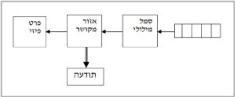
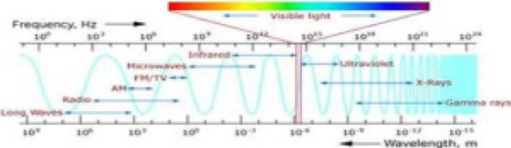

מזה זמן רב מנסה האדם לחשוף את מסתורי המוח האנושי, להבין את צורת פעולתו ואת הדרך המיוחדת בה תופס האדם את העולם הסובב אותו.
כישורי המוח הם רבים ומתבטאים ברבגוניות אדירה של נושאים הפזורים על פני כול תחומי החיים האנושיים, החל ביצירה ספרותית ואומנותית, דרך גיבוש רעיונות פילוסופיים מופשטים ורוחניים, וכלה בתחומי המדעים השונים, המטפלים בסביבה הפיזית בצורה מתמטית מדויקת.
כישורי השפה האנושית הם דוגמה לאחד מפלאי הטבע המאפשרים לאדם להחליף מחשבות ורעיונות ולהפכם לנחלת הכלל, ויחד עם זאת, עצם העושר ומגוון האפשרויות אשר נוצרו על ידי התפתחות השפה, קבעו לא במעט את צורת התפיסה האנושית, והרמה והאיכות אליהן היא יכלה להגיע.
המחשבה למצוא מכנה משותף למגוון כה רחב של נושאים, בתחומי פעילות כה שונים באופיים, מן הדין שתרתיע ניסיון מעין זה, לא רק בגלל ההיקף הגדול המאפיין את כל אחד מנושאי התרבות האנושית, אלא גם משום שנושאים אלו משתרעים על פני תחומים השונים ונבדלים זה מזה בצורה מהותית.
מה רחוק יותר לכאורה, מהשוואת פעילות ספרותית ואומנותית עשירת דמיון ויצירתיות חופשית וסובייקטיבית, לפעילות בתחומי המדעים המדויקים, האמורים לתאר את העולם הסובב אותנו בצורה אובייקטיבית ונטולת כל פניות אישיות. ומה רחוק יותר לכאורה, מהשוואת נושאים אלו, לתפיסות דתיות ופילוסופיות שונות, אותן גיבש האדם במשך אלפי שנות התפתחותו.
למרבה ההפתעה הולך כל השפע הרב הזה ומתכנס לכוון מוגדר אחד.
ככל שננסה להבין את המאפיינים היותר בסיסיים של מגוון הנושאים השונים הללו, נגלה כי כולם מתכנסים אל, ונובעים ממקור אחד ויחיד המשותף לכולם והוא המוח האנושי.
למרות שהמוח האנושי מורכב ביותר ומאפשר לאדם יכולת תפקוד מדהימה בחיי היום יום, כמו גם פיתוח של ערכים גבוהים רבים ושונים, הרי שבמהותו בנוי המוח כולו מתאי עצב בסיסיים בעלי מגוון אפשריות נתונות.
לצורך פיתוח התופעות הגבוהות המייחדות את האדם משאר בעלי החיים, לא הומצא במוח כל מנגנון מיוחד, והמוח משתמש באותם מבנים קיימים לכל הצרכים.
ההסתמכות של קליפת המוח האנושי על מבני עצב פשוטים ובסיסיים, לצורך פיתוח מגוון התופעות המייחדות את המין האנושי, מעלה אפשרות שכל אותן תופעות שונות ומגוונות המאפיינות את התפיסה האנושית, חולקות מרכיבים דומים.
הניסיון לחשוף מרכיבים אלו הוא אחד ממטרותיו העיקריות של הספר.
בניסיון לחשוף את המכנה המשותף לתופעות השונות שפותחו בקליפת המוח האנושי, ננוע לאורך הספר במסע, שיתחיל בתופעות יום יומיות רגילות, יסקור את המערכות הגבוהות אותן פיתח האדם כמו: המתמטיקה, הפיזיקה והשפה האנושית, יתכנס לעבר מרכיבים יותר ויותר ראשוניים של תופעות אלו, וינסה לחשוף את המבנים, המאפשרים את כל השפע המאפיין את התפיסה האנושית.
במהלך פרקי הספר נדון בהרחבה בתפיסת המערכת המאפיינת את קליפת המוח האנושי, נבדוק האם ניתן לכמת צורת תפיסה זו, על ידי הגדרת המערכת ושימוש במונחי שפה, שתתייחס לרבים ככל האפשר מהמושגים השונים אותם פיתח האדם בכל תחומי החיים, ננסה להבין את המשמעויות השונות של ההגדרה, על היתרונות וה מגבלות השונות של תפיסת המערכת, ונבדוק האם ניתן להיעזר במגבלות עצמן, כבמנוף ארכימדס, לפריצת מערכות ולהרחבת הידע ונקודת המבט האנושית בתחומים שונים של החיים.
פרקים אחרים של הספר יראו כיצד אותה תפיסת מערכת בסיסית, חלה בתפקוד היום יומי הרגיל כמו גם בתפיסות גבוהות המאפיינות מערכות גדולות ומרכבות כמו השפה, המתמטיקה והפיזיקה, המייחדות את האדם משאר בעלי החיים.
בהמשך הספר נתאר את התפתחות התפיסה האנושית, שהחלה כמערכת תגובה בסיסית במוחם של בעלי החיים, והלכה והתעצמה תוך סיגול של ערכים גבוהים יותר ויותר, לאותם מבני מוח וצורת פעולה פשוטים ובסיסיים. נעקוב אחר התבניות השונות, המאפשרות לאדם לתפוס את הסביבה החיצונית, בסדרת שלבים העולים ברמתם עם הגיל והניסיון המעשי, וננסה לבדוק כיצד מבנה עצבי פשוט ובסיסי, יכול לגדול בהיקפו וברמתו עד כדי יכולת לתפוס את היקום כולו באותו מערך עצבי פשוט ובסיסי.
בסיום הספר נפתח שיטה לפריצת מערכות, תוך איתור עקרונות היסוד של מערכת נבחרת, וניצול מגבלות המערכת, כאמצעי לפריצתן של מערכות שונות, ונדגים את השיטה במספר דוגמאות מעשיות.
הספר מתבסס על דוגמאות ותופעות הלקוחות מחיי היום יום אולם הוא עוסק בתפיסה האנושית, תופעה מפתיעה המעסיקה את אנשי המדע והפילוסופיה מזה אלפי שנים.
העיסוק בתפיסה האנושית, איננו מאפשר לקבל אותה כדבר שגרתי ומובן מאליו, ומחייב העלאת שאלות מהותיות בהקשר לתפיסות המקובלות בתחומים שונים.
במהלך המאה ה 20 התקדם המדע בצורה מפתיעה והצעיד את כל המין האנושי קדימה בכל תחומי החיים.
עם התקדמות המדע, הלכו ונתבארו גם המגבלות של הפיזיקה הקלאסית, לגבי הצורה בה היא מתארת את תופעות הטבע השונות.
ההבדלים בין צורת התפיסה של הפיזיקה הקלאסית, אשר תאמה את התפיסה האינטואיטיבית האנושית, לבין העובדות הפיזיקאליות החדשות שנחשפו, על מושגים מקובלים כמו הזמן והמסה, ועל מבנהו הפנימי של האטום, העלו שאלות פילוסופיות עקרוניות, לגבי מהות התפיסה האנושית ולגבי מידת האובייקטיביות שלה בתפיסת הסביבה החיצונית.
ממצאים אלו הבהירו לאנשי המדע, שלמבנה המוח האנושי ולפסיכולוגיה האנושית, קיימות השלכות מרחיקות לכת, על הצורה בה תופס האדם את הסביבה בה הוא חי.
הסביבה החיצונית מתקיימת בצורה אובייקטיבית כל שהיא מחוץ לגופנו, והאמצעי הישיר היחיד העומד לרשות האדם על מנת לתפוס אותה, הם החושים השונים בהם בורך האדם. החושים עצמם מכסים רק חלק מטווח התופעות האפשריות בטבע, ולכן טבעי הדבר שאנו יכולים לתפוס רק חלק מהתמונה הכוללת האפשרית.
מצב זה מוצא את ביטויו בנושא המערכות בין היתר, במגבלה האומרת ש: 'מערכת הנה תמיד חלק ממערכת נרחבת יותר' ומשמעותה היא: שגם אם נפרוץ מערכות קיימות שוב ושוב, ונגדיל את כמות המידע הפנימי העומד לרשותנו, עדיין תהיה צורת התפיסה האנושית חלק אפשרי, מצורת תפיסה מקיפה יותר, ועדין תתקיימנה לגבינו מערכות נרחבות יותר אליהן נוכל לשאוף.
הספר 'מערכת התפיסה האנושית' איננו מתיימר לספק תשובות אובייקטיביות לנושאים בהם הוא דן.
על פי תפיסת הספר: המוח האנושי מעצם טבעו ומהמטרות המקוריות לשמן נוצר, איננו בנוי לקבלת תשובות מוחלטות ויכולת התפקוד המפתיעה, אשר הציבה את האדם בראש הסולם האבולוציוני של כדור הארץ, איננה תלויה כלל במידת האובייקטיביות של התפיסה האנושית.
במקום לחפש תשובות מוחלטות, מנסה הספר לפתח שיטה אשר מתבססת על מגבלות המערכת, אשר מתארות את מגבלות התפיסה האנושית. שיטה זו מלמדת, איך לשאול שאלות מתאימות בצורה עקבית, שאלות אשר יחשפו אפשריות שלא נלקחו בחשבון, ויקרבו אותנו בהדרגה, לקראת תשובות טובות יותר.
השגה של יכולת לפריצת מערכות קיימות, תלויה בין היתר ברכישת פרספקטיבה מתאימה שתאפשר חשיפת אפשריות חדשות, תוך השתחררות מהקיבעון שמבנה קליפת המוח וצורת פעולתה, משליכים על התפיסה האנושית.
השגת מטרה זו מתבצעת בספר במספר שלבים.
בשלב הראשון מקנה לנו הגדרת המערכת, נקודת מבט חדשה על התפיסה האנושית, תוך שהיא הופכת את התפיסה עצמה, לאובייקט בר התייחסות, עליו ניתן להגיד היגדים שונים.
בהמשך הספר מבוטאים היגדים אלו בצורה של מגבלות המערכת, מגבלות המתייחסות למעשה לתפיסה האנושית עצמה, וחלות על כל התופעות שפותחו בקליפת המוח האנושית.
שלב נוסף, מאפשר לנו להשתמש באותן מגבלות, כבשפה מצומצמת, המאפשרת לנתח באמצעותה תופעות שונות כפי שנתפסות על ידנו כיום.
והשלב האחרון כפי שהוזכר, משתמש באותן מגבלות ככלי עזר, לפריצה של מערכות קיימות וחשיפת אפשריות חדשות.
משחר ההיסטוריה האנושית נשא האדם את עיניו השמימה בהשתאות מרובה.
המראה שנגלה לעיניו היה שונה מכל תופעה המוכרת לו מסביבתו על פני האדמה.
זריחת השמש בבקר עם האור והחום שהפיצה במהלך היום, נתפסו על ידי האדם כמקור החיים.
עם שקיעת החמה נגלו לעיניו, הירח ואין ספור כוכבים הפזורים בשמי הלילה.
מחזה זה הופיע מידי יום באופן קבוע וסדיר והיווה את הסימן הראשון לסדר ומחזוריות בטבע, יחד עם בטחון להמשכיות.
התצפיות הקבועות בשמיים, גילו לאדם מערכת מסודרת להפליא, השולטת על סדרי היום והלילה, על שינויי עונות השנה ועל אירועים חוזרים, המתרחשים בתקופות של עשרות ואף מאות שנים.
בנוסף לתנועות הקבועות של השמש, המתרחשות בתדירות יומית ובמחזוריות של כ: 365 ימים, במהלכם מתחלפות עונות השנה השונות, נתגלתה גם מחזוריות בתנועתו של הירח, המתרחשת בתדירות של כ: 28 ימים וקשורה לתופעות ארציות שונות.
מחזוריות נוספת של שנים ואף עשרות שנים, נתגלתה בתנועתם של חמישה כוכבי לכת, ששינו בהתמדה את מיקומם היחסי בתוך כלל מערך הכוכבים, אשר נראה סטאטי בעיקרו, ונע כגוף אחד סביב כדור הארץ.
הסדר המופתי בשמיים משך בוודאי את תשומת ליבו של האדם והביאו לחפש סדר דומה גם על פני כדור הארץ.
המעקב המתמיד אחר תנועות הכוכבים, הביא לצורך של תיעוד מצבם המתחלף ותרם לפיתוח של צורת רישום וכתיבה ראשוניים, ויחד עימם לפיתוח צורת חישוב מתמטית, שתאפשר יכולת ניבוי של תנועותיהם, ועמה יכולת חיזוי של תופעות ארציות שונות.
תצפיות אלו בשמיים והמידע שנצבר בעקבותיהן, הביאו את האדם לנסות ולפתח מודל משוער של מבנה היקום, מודל אשר יתאר את האדם ואת הארץ עליה הוא חי, ויציב את מיקומם בהשוואה לשאר היקום.
המודלים השונים שפותחו במהלך ההיסטוריה האנושית היו רבים ושונים.
מבנה העולם והשינויים שחלו בתפיסת העולם האנושית במהלך השנים, לא רק תאמו את הידע האנושי בתקופות השונות, אלא לא פחות מכך, סייעו להרחבת תפיסת העולם האנושית והיוו תמריץ למחקרים בתחומים רבים ומגוונים.
מרחק רב עברה האנושות מאז נחשב כדור הארץ לדסקה סטאטית הניצבת על גבי צבים או פילים ענקיים, ועד לתמונת היקום הנוכחית המתארת יקום אינסופי בגודלו, יקום שהחל את דרכו בתהליך המפץ הגדול, לפני מיליארדי שנים, והולך ומשתנה גם כיום.
בד ובד עם הידע האנושי על מבנה היקום, הלכה והשתנתה גם הבנת האדם לגבי מיקומו של כדור הארץ בתוך יקום זה, תפיסה שהחלה עם תיאורו של כדור הארץ כמרכז היקום כולו, והלכה והשתנתה בהדרגה לכלל הכרה, שכדור הארץ הוא אחד מאין ספור גרמי שמיים הפזורים בגלקסית שביל החלב אדירת הממדים, שגם היא אחת מאין-ספור גלקסיות, הפזורות ברחבי יקום ההולך ומתפשט.
את מסענו זה נפתח בתיאור של חלק מתפיסות העולם לגבי מבנה היקום, כפי שהתפתחו במהלך ההיסטוריה, ובתיאור השינויים שחלו בצורת תפיסה זו במהלך השנים.
למרות שתפיסות העולם העתיקות נראות לנו כיום כנאיביות, הרי שכל אחד מהמודלים אשר פותחו במהלך אלפי שנות ההיסטוריה האנושית, נתפס בשעתו כמתאר בצורה מוחשית את המציאות הקוסמית האובייקטיבית, תיאור אשר נתפס בשעתו כנכון ומדויק לא פחות מהתפיסה המודרנית המוכרת לנו כיום, תפיסה המתבססת על ידע מעמיק ושימוש באמצעי מחקר מודרניים מתקדמים.
במונחים קוסמולוגיים המשתרעים על פני תקופות של מיליוני ומיליארדים של שנים, ניתן להגיד כי היקום הנוכחי, כמעט ולא השתנה במהלך אלפי השנים האחרונות. אולם השינויים המפליגים שחלו בתפיסת המציאות האנושית לגבי יקום זה, במהלך אלפי השנים האחרונות, מעלים שאלה מהותית ביותר לגבי צורת התפיסה האנושית עצמה, ולגבי נכונות התאמתה למציאות האובייקטיבית של הסביבה החיצונית.
הערה לגבי הפרקים הראשונים של הספר
חלקו הראשון של הספר נועד להבליט את השינויים שחלו בתפיסה האנושית במהלך אלפי השנים האחרונות, בהקשר למבנה היקום ומיקומו של כדור הארץ בתוך יקום זה, יקום שמבחינה קוסמולוגית היה סטאטי במהלך תקופה זו. מסיבה זו מסתפק חלקו הראשון של הספר בסקירה קצרה ותמציתית של עיקרי התפיסות המדעיות המקובלות לגבי נושאים אלו.
חלק זה מתבסס ברובו על ספרו של: טימותי פריס – 'מילדות לבגרות בשביל החלב' – בהוצאת ספרית מעריב. לקורא המעוניין לקבל תיאור מקיף על נושאים אלו, מומלץ לעיין בספר המרתק.
בשנת 340 לפני הספירה, העלה אריסטו רעיון המתאר את מבנה היקום כפי שנתפס על ידיו.
מאחר ועל פי התצפיות האנושיות, לא היה כל רמז לכך שהארץ נמצאת בתנועה, הייתה מונחת בבסיס הרעיון של אריסטו ההשערה כי הארץ שרויה במנוחה במרכז היקום וסביבה חגים: השמש, הירח, כוכבי הלכת ושאר כוכבי השבת שנראו בשמיים.
תנועת גרמי השמיים סביב הארץ תוארה ע"י אריסטו, כתנועה מעגלית מדויקת, משום שתאמה את אמונתו שהכדור הנה הצורה המושלמת ביותר בטבע.
במאה השנייה לאחר הספירה שכלל תלמי, את הרעיון של אריסטו והפך אותו לדגם קוסמולוגי שלם. בדגם של תלמי, ניצבה הארץ במרכז היקום, מוקפת בשמונה ספירות כדוריות. בכל אחת משבע הספירות הראשונות נעו בתנועות מורכבות, השמש, הירח וחמשה כוכבי הלכת, שהיו מוכרים בתקופתו. הספירה החיצונית ביותר, נשאה את שאר כוכבי השבת, שהיו סטאטיים ביחס לעצמם ונעו סביב הארץ כמקשה אחת.
למרות שהדגם של תלמי היה מורכב מבחינה מתמטית ובלתי נכון עובדתית, הרי שבדגם זה נתקיימו מספר עקרונות על פיהם פועל המדע גם בימנו.
- תלמי ערך מחקר מקיף שנמשך שנים רבות, בהן צפה בגרמי השמיים ותיעד את התנועות המחזוריות שלהם.
- כאשר היה בידיו מידע מספיק, ניסח תלמי דגם מפורט, אשר התבסס על עקרונות היסוד של אריסטו ותיאר את המבנה המשוער, של היקום כולו.
- למבנה אותו תיאר, צירף תלמי, מערכת נוסחאות מתמטיות אשר אפשרו לחשב בדיוק מתקבל על הדעת, את התנועות של כל גרמי השמיים שנצפו.
- הדגם של תלמי הכיל יכולת ניבוי לגבי התנועות העתידיות של גרמי השמיים, ואפשר בכך לבדוק את נכונות ההשערות.
אף על פי שבדגם של תלמי נתגלו מספר תצפיות חריגות בהשוואה לחישובים, פעל הדגם בצורה סבירה ובמשך כ: 1500 שנים הוא היה הדגם הקוסמולוגי המקובל.
ב 1514 הציע ניקולס קופרניקוס דגם חדש ופשוט יותר של היקום, שהיה מבוסס על רעיון מהפכני. במערכת אותה הציע קופרניקוס, הייתה השמש מרכז היקום. השמש הייתה סטאטית וסביבה נעו במסילות עגולות: כדור הארץ ושאר גרמי השמיים.
כפי שהתברר, גם דגם היקום שהציע קופרניקוס לא היה מדויק, אולם הוא הכיל יכולת ניבוי דומה ליכולת הניבוי של המערכת התלמיית, למרות שתפיסת העולם ועקרונות היסוד שלו היו שונים בצורה קיצונית, מאלו שעמדו בבסיס הדגם התלמיי.
כעבור כמאה שנים הביעו יוהנס קפלר וגלילאו גלילי את תמיכתם בהשערה של קופרניקוס, למרות שלא הייתה מקובלת על הכנסייה הנוצרית.
התצפיות של גלילאו בשמיים זכו ליתרון משמעותי ביותר בהשוואה לכל קודמיו, בזכות כלי טכנולוגי חדש.
ב 1609 החל גלילאו לצפות בשמיים באמצעות טלסקופ שהומצא זה לא מכבר.
השימוש בטלסקופ אפשר לגלילאו לצפות בכוכב צדק ובירחים הסובבים אותו. הירחים שהקיפו את צדק הבהירו, כי לא כל גרם שמימי חייב לנוע סביב כדור הארץ, כפי שסבר תלמי.
באותה עת הכניס קפלר תיקונים ב עקרונות היסוד של המודל ההליוצנטרי.
לפי ההשערה של קפלר, נעים כוכבי הלכת סביב לשמש, במסילות אליפטיות במקום בתנועות מעגליות, ואילו כוכבי השבת שנראים בשמיים, הם גופים סטטיים, והתנועה הנצפית שלהם, נובעת למעשה מסיבובו של כדור הארץ סביב צירו.
לאחר קבלת הדגם ההליוצנטרי והכנסת השינויים במסלולי הכוכבים, היה סוף סוף בידי המדע דגם טוב של היקום, שהתאים ל תצפיות ואפשר חישובים מדויקים של מסלולי כוכבי הלכת סביב לשמש.
הקפיצה המשמעותית הבאה בידע האנושי לגבי מבנה היקום חלה ב 1687 כאשר פרסם אייזק ניוטון את סיפרו ' עקרונות מתמטיים של חכמת הטבע ' .
בספרו זה הציג ניוטון בין היתר תיאוריה כללית המסבירה את תנועותיהם של גופים במרחב ובזמן וגם פיתח את השיטות המתמטיות הדרושות לניתוח תנועות אלו.
בנוסף לכך הציג ניוטון בספרו את חוקי הכבידה האוניברסליים, המתארים את כוחות המשיכה הפועלים בין גופים הנעים במרחב ומסבירים גם מדוע נופלים גופים שונים על פני כדור הארץ.
פעם נוספת זכה האדם להתקדמות משמעותית ביכולת ההבנה והתפיסה של היקום, בזכות כלים מדעיים שהועמדו לרשותו. אם הקפיצה הקודמת, נבעה מהשימוש בטלסקופ אותו עשה גלילאו, נבעה ההתקדמות הנוכחית, מפיתוח של כלים מתמטיים חדשים אשר אפשרו לנסח בצורה מדעית, את מבנה היקום הנצפה, ואף לחשב את הכוחות הפועלים בין כוכבים מרוחקים, הנעים במרחבי החלל.
עד תחילת המאה העשרים הלך הידע האנושי על מבנה היקום והשתכלל.
בניית טלסקופים משוכללים אפשרה קיום של תצפיות משופרות למעמקי החלל.
מחקרים מדעיים גילו שרוב כוכבי השבת הנראים בשמיים, הם למעשה שמשות בגדלים שונים, הדומות לשמש שלנו. נתגלה המבנה של גלקסית שביל החלב, ומספר גדול מאוד של גלקסיות נוספות. המידע על מבנה היקום הלך והתרחב ויחד עמו ההכרה בגודלו האדיר ובמרחביו האסטרונומיים, הנמדדים במונחים של מיליוני שנות אור מחוסר קנה מידה מתאים יותר. ( שנת אור אחת הנו המרחק אותו עוברת קרן אור הנעה במהירות של 300,000 ק"מ לשנייה, כאשר היא נעה במשך שנה שלימה במהירות זו).
תפיסת העולם המודרנית, שהחלה עם הופעת סיפרו של ניוטון והשתכללה מאוד עד תחילת המאה העשרים, הייתה רחבה ומקיפה מאוד, אולם עדיין לא הייתה מלאה.
על פי עקרונות הכבידה של ניוטון, קיימים כוחות משיכה בלבד בין גופים שמימיים שונים.
היקום כולו נתפס בזמנו כשרוי במצב סטאטי, ועל פי תפיסה כזו, היו חייבים הכוכבים השונים הפזורים ברחבי היקום, למשוך זה את זה ולגרום להתכנסותו של היקום. עובדות אלו הביאו את אנשי המדע לחפש עקרונות חדשים אשר יוכלו להסביר את התצפיות החריגות לגבי מצבו הסטאטי של היקום, בהשוואה לתיאוריה אשר ניבאה את התכנסותו של היקום עקב כוחות כבידה.
הכוכבים הפזורים בשמיים, נראים לעינינו בכל הכוונים אליהם נביט, אולם קיים פס אחד, בו מרוכזים רוב הכוכבים הנראים. פס זה נקרא שביל החלב.
ב 1750 העלו מספר אסטרונומים את ההשערה, שאפשר להסביר את תופעת שביל החלב בכך, שרוב הכוכבים ביקום, מרוכזים במבנה יחיד הדומה לדסקה והקרוי כיום בשם גלקסיה חלזונית.
כעבור כמה עשרות שנים, אימת ויליאם הרשל השערה זו, לאחר שקטלג במשך שנים רבות, כמות אדירה של כוכבים, ומיפה את מקומם ואת מרחקם.
תמונת היקום החדשה המקובלת כיום, החלה להתגבש ב 1924 כשהוכיח האסטרונום האבל, שגלקסית שביל החלב איננה הגלקסיה היחידה ביקום.
האבל הניח כי כוכבים מסוימים, אשר מרחקם מהארץ היה ידוע, מפיצים אור בעל עוצמה דומה. עוצמת אור זו, תראה לעינינו חלשה יותר באופן יחסי, ככל שמרחקו של הכוכב מאתנו גדול יותר. לצורך מחקרו השתמש האבל בציוד רגיש, המסוגל למדוד את עוצמת האור היחסית של כוכבים שונים.
בדרך זו גילה האבל ואף מצא את מרחקן של תשע גלקסיות שונות, ופתח בכך את הדרך לגילוין של גלקסיות רבות נוספות ולשינוי נוסף בתפיסת העולם שלנו, לגבי מבנהו וגודלו של היקום.
כיום על סמך תצפיות באמצעות טלסקופים משוכללים מסוגים שונים, ידוע לנו כי גלקסית שביל החלב, הנה רק אחת מכמאה אלף מיליוני גלקסיות נוספות הקיימות ביקום, ובכל אחת מהן קיימים לפי המשוער, כמאה אלף מיליוני כוכבים.
גלקסית שביל החלב הנה גלקסיה בעלת מבנה חלזוני, שקוטרה כמאה אלף שנות אור. היא מסתובבת אט אט סביב צירה, כשהכוכבים הנמצאים בזרועותיה החלזוניות מקיפים את מרכז הגלקסיה אחת לכמה מאות מיליוני שנים.
מערכת השמש שלנו נמצאת ליד שפתה הפנימית של אחת מזרועות הגלקסיה, והשמש עצמה הנה כוכב צהוב וגודלה הוא גודל ממוצע של שמשות רבות אחרות.
הגילוי של האבל את דבר קיומן של גלקסיות נוספות, היה רק שיא אחד שהתאפשר הודות לשימוש שעשה גלילאו בטלסקופ, ולשיפורים אותם ביצע ניוטון בכלי זה.
ניוטון גילה בין יתר תגליותיו שאם מעבירים קרן אור דרך מנסרה משולשת, מתפרק האור של הקרן לצבעים השונים המרכיבים אותה בדומה לתופעת הקשת בענן. כל אחד מהצבעים הנו בעל תדירות שונה, ולכן מוסט בצורה שונה על ידי המנסרה.
במהלך השנים נבנו מכשירים רבים ומשוכללים הפועלים על עקרון הפרדת האור. נתגלה כי יסודות שונים המלוהטים לטמפרטורה גבוהה, פולטים קרינה בעלת ספקטרום תדרים מסוים, האופייני לכל יסוד ויסוד. על ידי בדיקת הספקטרום הנפלט מחומרים שונים, ניתן לזהות את הרכבם הכימי וגם את האחוז היחסי של כל אחד מהיסודות השונים המרכיבים את החומר הנבדק.
מאז גילה האבל את קיומן של גלקסיות נוספות בחלל, הוא החל לבדוק ולנתח את ספקטרום האור הנפלט מהן. נתגלה כי בכל הכוכבים הנצפים, קיימים יסודות דומים לאלו המוכרים לנו על פני כדור הארץ ולכן גם הספקטרום הנפלט מהם דומה.
הממצא המפתיע ביותר אותו גילה האבל היה כי הספקטרום הבא מגלקסיות שונות, מוסט מעט לכוון האדום, בהשוואה לתדר שהיה צפוי להתקבל. משמעות הדבר הייתה כי גלקסיות אלו נמצאות בתנועה ומתרחקות מכדור הארץ. האבל מצא גם כי ככול שגלקסיה רחוקה יותר, מוסט האור הבא ממנה יותר לכוון האדום. משמעות הדבר היא כי מהירות ההתרחקות של הגלקסיה מאתנו הולכת וגדילה, ככל שהיא רחוקה יותר.
מממצאים אלו השתמע שהיקום איננו סטאטי כפי ששערו אנשי המדע, אלא נמצא במצב של התפשטות מתמדת, כאשר הגלקסיות השונות מתרחקות זו מזו בהתמדה.
את העובדה שגלקסיות מרוחקות מתרחקות מכדור הארץ מהר יותר מגלקסיות קרובות ניתן להסביר על ידי דימוי באמצעות בלון.
אם נצייר על פניו של בלון נקודות המסמלות גלקסיות, וננפח את הבלון, ילכו הנקודות ויתרחקו זו מזו במהירות שווה. אולם אם נבדוק את מהירות ההתרחקות שלהן מנקודה מסוימת על פני הבלון, נגלה שתנועת ההתרחקות של הנקודות השונות, מהירה יותר ככל שהן מרוחקות יותר מאותה נקודה. דבר התואם את תצפיותיו של האבל.
האבל שיער כי היקום כולו הולך ומתפשט בהתמדה בדומה לאותו בלון מתנפח. מהנחה זו נובע כי בעבר היו הגלקסיות קרובות זו לזו, ויתכן שבזמן מסוים הן היו מרוכזות כולן בנקודה אחת ויחידה.
מתוך ידיעת גודלו המשוער של היקום ומהירות ההתרחקות היחסית של הגלקסיות זו מזו, חישב האבל ומצא כי נקודת הזמן בה החל היקום את התפשטותו המשוערת, התרחשה היכן שהו בחלל לפני כ: 15 מיליארד שנים, בתהליך הקרוי בפינו המפץ הגדול.
תגליתו של האבל בדבר התפשטות היקום והשערת המפץ הגדול, סללו את הדרך בפני המדע, לפיתוח התיאוריה האחרונה המקובלת כיום, המתארת את מבנהו ודרך התפתחותו של היקום מראשיתו. אולם תגליות אלו הוו רק את ראשיתה של הדרך.
להשלמת התמונה נזקק המדע לפיתוח של שני כלים מדעיים חדשים, אשר פותחו במהלך המאה העשרים. כלים אלו הופיעו בדמות תורת היחסות של איינשטין, ובדמות תורת הקוונטים אשר חקרה את מבנהו הפנימי של החומר עצמו.
תוך שימוש בכלים אלו, הצליח המדע לפתח מודל מתמטי המבוסס על הנחת המפץ הגדול, ומתאר את התפתחותו של היקום מראשית דרכו ועד למצבו הנוכחי.
במפץ הגדול עצמו, רוכז כל היקום בנקודה מתמטית אפסית בעלת טמפרטורה אינסופית.
כתוצאה מאירוע המפץ הגדול, החל היקום להתפשט, וככל שגדל נפחו הלכה וירדה הטמפרטורה שלו.
בשלב הראשוני של התפשטות היקום, הייתה הטמפרטורה גבוהה עד כדי כך, שהיא אפשרה את קיומם של מספר חלקיקי יסוד בלבד. כמאה שניות לאחר המפץ הגדול, ירדה הטמפרטורה של היקום לכמיליארד מעלות צלזיוס, טמפרטורה המתקיימת במספר כוכבים לוהטים גם כיום.
בשלב זה החלו להתגבש חלקיקי היסוד של הפרוטונים והנויטרונים, וליצור את גרעיני האטומים הפשוטים: את גרעיני המימן המכילים פרוטון אחד, את גרעיני המימן הכבד המכילים פרוטון אחד ונויטרון אחד, את גרעיני ההליום המכילים שני פרוטונים ושני נויטרונים ועוד כמות קטנה של יסודות כבדים יותר.
מספר שעות לאחר המפץ הגדול נפסק תהליך היצירה של גרעיני האטומים ובמשך כמיליון שנים נוספות המשיך היקום פשוט להתפשט ולהתקרר. כאשר ירדה הטמפרטורה של היקום למספר אלפי מעלות, החלו כוחות המשיכה האלקטרומגנטיים, למשוך אלקטרונים לסביבת הגרעינים, ובצורה זו נוצר מבנה האטום כפי שמוכר לנו כיום.
היקום כולו המשיך להתפשט בקצב אחיד, אולם בחלקים מסוימים שלו החל כוח המשיכה של האטומים, להאט את קצב ההתפשטות ולרכז יחד כמויות גדולות של אטומי מימן והליום, למבנים גדולים שהוו את תחילת התהליך של היווצרות הגלקסיות. בתוך תחומי הגלקסיות, החלו להיווצר נקודות צפופות יותר של חומר, שמשכו וקיבצו סביבן את אטומי המימן וההליום למבנים של כוכבים.
כאשר גדלו הכוכבים, הלכו הגזים שהרכיבו אותם והתכווצו, והטמפרטורה שלהם החלה לעלות. בשלב מסוים כאשר הלחץ והטמפרטורה היו גבוהים מספיק, החל תהליך התכה גרעינית של אטומי המימן, והפיכתם להליום, תוך שחרור כמויות גדולות של אנרגיה. תהליך זה יצר שמשות דמויות השמש שלנו, הבוערות במשך תקופות ארוכות ומפיצות אור וחום.
באותן שמשות שקיבצו סביבן כמויות גדולות של מימן, היה תהליך ההיתוך מהיר יותר, וכילה את המימן בתקופה של כמאה מיליון שנים. בשלב זה התכווצו השמשות מעט, חומן עלה והן החלו להתיך הליום ליסודות כבדים יותר כמו פחמן וחמצן. תהליך זה שיחרר כמות קטנה יותר של אנרגיה שלא הספיקה לבלום את תהליך ההתכווצות של השמשות, וכפי המשוער הן קרסו לתוך עצמן, תוך שהן מעיפות לחלל סביבן, כמות מסוימת מהגזים שנמצאו בחלקן החיצוני.
יסודות אלו שנפלטו לחלל, החלו להתרכז ולרכז סביבם כמויות של אטומי מימן, ויצרו דור חדש של שמשות המכילות בנוסף למימן, גם כמות קטנה של יסודות כבדים יותר, בדומה לשמש שלנו הנחשבת לשמש מדור שני או שלישי. חלק מאותם יסודות שהיו בסביבת השמש התלכד למבנה של כוכבי לכת שהחלו לנוע סביב לשמש, וביניהם גם כדור הארץ שלנו.
מערכת השמש כוללת את השמש עצמה, סביבה נע הכוכב הקרוב ביותר כוכב חמה, אחריו נוגה, כדור הארץ הוא הכוכב השלישי מהשמש ואותו מקיף הירח.
הכוכבים הבאים הם: מאדים, צדק ושבתאי, הכוכב האחרון שהיה מוכר בתקופה העתיקה.
ב 1781 גילה האסטרונום הבריטי ויליאם הרשל, כוכב נוסף מעבר לשבתאי, המשתייך למערכת השמש. כוכב זה נקרא אורנוס.
ב 1846 גילה אסטרונום צרפתי בשם אורבין לה – ורייה, כוכב נוסף מעבר לאורנוס אשר נקרא נפטון.
על פי מסלולי הכוכבים של מערכת השמש והסטיות הקלות שלהם מהחישובים התיאורטיים, שיער האסטרונום האמריקאי פרסוויל לאוול, שחייב להיות מעבר לנפטון כוכב נוסף המפעיל כוחות משיכה על הכוכבים המרוחקים. כוכב זה נתגלה ב 1930 ונקרא פלוטו.
הצגת מערכת השמש כמרכבת מ פרטים פיזיים בלבד הכוללים את השמש ותשעה כוכבי לכת, הנה צורת הצגה יבשה וחלקית בלבד ואיננה מספקת תיאור מלא על מבנה מערכת זו.
לקבלת נקודת מבט רחבה יותר, אנו זקוקים ל מידע תיאורי נוסף, שירחיב את הידוע לנו על המרכיבים הפיזיים של המערכת, ויתאר את יחסי הגומלין המתקיימים ביניהם, במגוון תחומים שונים בהם אנו מתעניינים.
מערכת השמש נתפסת כמערכת דינאמית בה מחוללים כוכבי הלכת השונים סביב לשמש במסלולים ובמקצבים ייחודיים לכל כוכב וכוכב. היא נתפסת כמערכת אשר נולדה לפני כ: 5 מיליארד שנים, במהלכן היא התגבשה והשתנתה בהתמדה עד למצבה הנוכחי.
עתידה של מערכת השמש עדיין לא ברור דיו אולם ברור לנו כי בשלב מסוים, תתבגר השמש ותכלה את מלאי המימן שלה, ואז יבוא קיצה של השמש מתיכת המימן ועמו קיצה של מערכת השמש, כפי שהיא מוכרת לנו כיום.
תהליך זה הנו ארוך וממושך במהלכו תמשיך השמש להוות את מקור האור והאנרגיה למשך מיליארדי שנים נוספות בהן ימשיך כדור הארץ לספק את כל צרכי המחיה ולהוות משכן לכל החיים בו.
את הצעד הראשון בהבנת סימפוניית המחולות של הכוכבים במערכת השמש, עשה קפלר כאשר גילה שכוכבי הלכת השונים נעים סביב לשמש במסילות אליפטיות, כאשר השמש נמצאת באחד ממוקדי האליפסה. קפלר גילה גם שמהירויות הכוכבים במסלולם אינן קבועות. מהירותם הולכת וגדלה כאשר מסלולם מתקרב לשמש, וקטנה כאשר הם מתרחקים ממנה. יחד עם תיאור צורת התנועה המיוחדת, קבע קפלר כי למרות שמהירות הכוכבים משתנה במהלך מסלולם, הרי שמחוגי התנועה שלהם אל השמש, מכסים שטחים שווים, בפרקי זמן שווים, על גבי מישור התנועה שלהם.
חוק נוסף אותו גילה קפלר, אפשר לחשב את משך ההקפה של כוכב סביב לשמש, לפי אורך המסלול הממוצע שלו.
חוקי קפלר וחוק המשיכה אותו פרסם ניוטון, חוללו מהפך משמעותי באסטרונומיה בזכות העובדה, שהם אפשרו לאנשי המדע להבין בצורה נכונה את מסלולי התנועה של הכוכבים סביב לשמש, ואף לחשב אותם בצורה מדויקת שהלמה להפליא את התצפיות .
תיאור המסלולים של כוכבי הלכת הנו רק פן אחד של תיאור מערכת השמש.
השמש עצמה נתפסה תמיד כמקור האור והאנרגיה המאפשרים קיום חיים על פני כדור הארץ, ובתקופות עתיקות ייחסו לה אף כוחות מיסטיים שונים.
תיאוריות שונות ניסו להסביר במהלך הדורות, את מקור האנרגיה השופעת והבלתי מתכלה של השמש. תיאוריות אלו תאמו את הטכנולוגיה ואת הישגי המדע של אותן תקופות, אולם רק במהלך המאה העשרים, עם גילוי האנרגיה הגרעינית ותכונות ההיתוך הגרעיני, יכול היה המדע להסביר את הסיבה לכמויות האנרגיה האדירות השופעות מהשמש במשך מיליארדי שנים ואינן אוזלות או מתכלות.
הישגי המדע בתחומים שונים, אפשרו להגדיל את כמות המידע הפנימי על יחסי הגומלין השונים, המתקיימים בין מרכיבי מערכת השמש, ולהרחיבם בנושאים רבים נוספים.
תהליך ההתפרקות של יסודות רדיואקטיביים, אפשר לחקור ממצאים ארכאולוגיים, ולתארך אירועים שונים שהתרחשו בעברו של כדור הארץ.
פיתוח של תורת היחסות ותורת הקוונטים, אפשרו להסביר בצורה מדעית, את התהליך בו נוצרה מערכת השמש ואת דרך התפתחותה.
חלליות מחקר שנשלחו למרחבי מערכת השמש, אפשרו לקבל תמונות מפתיעות ומרהיבות של כוכבים שונים במערכת, תמונות שהרחיבו את כמות המידע המצויה בידינו כיום, ומקרבות אותנו להבנה מעמיקה ורחבה יותר הן לגבי הפרטים הפיזיים של מערכת השמש, והן לגבי יחסי הגומלין המתקיימים בין המרכיבים השונים של המערכת השמימית בה נמצא כדור הארץ שלנו.
הדוגמה לאבחנה בין הפרטים הפיזיים של מערכת השמש, לבין יחסי הגומלין השונים המתקיימים ביניהם, הנה מרכיב מרכזי בכל נושא המערכות ונשוב לדון בהיבטים שונים של אבחנה זו, במהלך הפרקים הבאים של הספר.
לפי התיאוריה המדעית המקובלת כיום, נוצר כדור הארץ יחד עם השמש ושאר כוכבי הלכת, לפני כ: 5 מיליארד שנים.
כדור הארץ נוצר מהצטברות של יסודות שונים, שנפלטו עקב קריסה של כוכבים מהדור השני או השלישי של שמשות, יסודות שהתקבצו יחד עקב כוח המשיכה וצרפו אליהם גם מימן. המבנה המקורי של כדור הארץ, הורכב מגזים לוהטים ולא אפשר קיום של חיים מכל סוג שהוא. בהדרגה במהלך מיליוני שנים, הלך כדור הארץ והתקרר, כאשר חלק מהיסודות שהרכיבו אותו החלו להתמצק למצב נוזלי, ולבסוף לאחר שחלקו החיצוני הקרין חום רב לחלל, הוא התכסה בשכבה דקה יחסית של חומר מוצק, שעליו נקוו כמויות גדולות של מים.
האטמוספרה העתיקה של כדור הארץ, נוצרה מהתקררות של גזים קלים שהיו מעורבים בחומר הראשוני, ומגזים שנפלטו מהסלעים אשר הלכו והתגבשו תוך התקררותם.
אטמוספרה זו הייתה שונה מהאטמוספרה המוכרת לנו כיום. היא לא הכילה חמצן אלא גזים שונים הנחשבים בעינינו לרעילים. מעטפת גזים זו אפשרה את קיומן של צורות חיים פרימיטיביות, אשר צרכו מזון וגזים, כמו מימן גופריתי, ופלטו את גז החמצן. נוכחות החמצן שינתה בהדרגה את הרכבה של האטמוספרה ואפשרה את היווצרותן של צורות חיים מפותחות יותר המוכרות לנו כיום.
בדומה למה שנאמר על מערכת השמש, ניתן לתאר גם את כדור הארץ, כאוסף של פרטים פיזיים נכונים עובדתית. אנו יכולים לתאר את קוטרו של כדור הארץ, את מבנהו הפנימי והחיצוני, את חלוקת האוקיאנוסים, הימים והיבשות שלו, את הרכב האטמוספרה ואת מגוון צורות החיים המתקיימות על פניו, אולם גם במקרה זה לא יהיה תיאור זה מלא ויראה רק צד אחד של התמונה.
להבנת מלוא המשמעות של החיים על פני כדור הארץ, יהיה עלינו להוסיף גם תיאור של מערכות יחסים שונות, אשר מתקיימות בין הפרטים הפיזיים השונים, המצויים על פני כדור הארץ, ומשפיעים האחד על השני, במגוון צורות ונושאים, שבלעדיהם יראה תיאור החיים על פני כדור הארץ, חלקי בלבד.
מכל מגוון היחסים הניתנים לתיאור, נתרכז באחת התפיסות המודרניות, אשר התפתחה במהלך השנים האחרונות, וחודרת יותר ויותר למודעות הציבור.
תפיסה זו רואה את כלל כדור הארץ כמערכת אקולוגית אחת גדולה. מערכת זו הנה מערכת סגורה כוללת, וכל התופעות המתרחשות בה נשארות כלואות בתוכה.
במהלך מאות השנים האחרונות כבש האדם את כדור הארץ כולו. תהליך זה החל ביישוב חלקים גדולים מכדור הארץ שנתגלו זה לא מכבר, והוו פוטנציאל ליישוב האוכלוסייה האנושית המתרבה, כמו גם פוטנציאל לאוצרות טבע רבים שמשכו את האדם.
גידול האוכלוסייה המהיר, חייב את האדם להכשיר בהתמדה אדמות חדשות הראויות לעיבוד ולבנייה. כיבוש שטחים אלו בא כמעט תמיד, על חשבון ביעור יערות עד, שהתקיימו על פני כדור הארץ במשך מיליוני שנים.
ביעור היערות אפשר הכשרה של קרקעות נוספות ויחד עם זאת סיפק עץ זול בכמויות גדולות, לצורכי בניה ומסחר. בהדרגה הלכו יערות גדולים ונשמדו, אזורי ביצות יובשו והוכשרו לצורכי האדם, וככל שגברה נוכחותו של האדם על פני כדור הארץ, היא הורגשה יותר בסביבה.
האדם החל לגלות, כי לתועלת המעשית אותה הוא מפיק מהטבע, קיים מחיר כבד אותו משלם הטבע, ובעקיפין גם האדם עצמו.
התברר כי יערות העד שהתקיימו באפריקה למשל, תרמו ישירות לשמירת האקלים ולוויסות כמות המשקעים שירדו על פני היבשת. כריתת שטחים גדולים של יערות עד, גרמה לירידת כמות המשקעים באזורים שונים, והפיכתם למדבריות צחיחים שהלכו והתפשטו לתוך היבשת, תוך שהם דוחקים את האדם ומחייבים כריתה נוספת של יערות, לצורך קיומו הפיזי.
לשגשוגו של האדם היה מחיר נוסף אותו שילם הטבע. באותם שטחים אותם ניצל האדם, התקיימו מערכות חיים מגוונות שחיו בצורה הרמונית ומאוזנת להפליא, תוך שהן מקיימות ביניהן יחסי תלות הדדיים.
התערבותו של האדם, גרמה בכל מקום להפרת האיזון העדין שהתקיים בין המערכות השונות, תוך שהיא גורמת להיעלמות מינים שלמים של בעלי חיים, אשר התקיימו במשך מיליוני שנים על פני כדור הארץ.
השפעות האדם לא התבטאו על פני היבשת בלבד. במהלך התפתחותו, שכלל האדם את יכולתו הטכנולוגית, אוצרות טבע רבים הופקו מתוך האדמה ושמשו את האדם לצורך שיפור רמת חייו ואיכותם. הוקמו תעשיות מודרניות רבות, האדם רתם את כוח המים לצרכיו ונתגלו סוגי אנרגיות חדשות כמו פחם, גז טבעי, ודלק שהופק משמן האדמה. השימוש המסיבי והממושך בסוגי דלק שונים, גרם לפליטה מסיבית של גז דו תחמוצת הפחמן לתוך האטמוספרה, ולשינוי איטי אך משמעותי בהרכבה, שינוי שגרם בין היתר לאפקט החממה המאיים על שווי המשקל התרמי של אטמוספרת כדור הארץ ועלול לפגוע ישירות גם באיכות הסביבה הקרובה והמידית בה חי האדם.
גזים אחרים הנפלטים לאטמוספרה, פוגעים בשכבת האוזון המגינה על כדור הארץ מחדירת קרינה מסוכנת, והתפשטות התופעה מאיימת על חייהם של בעלי חיים רבים ואף על חיי האדם עצמו.
ככל שהתרבו התצפיות וכמות המידע של האדם על הטבע, התבררו יותר הקשרים הסבוכים המתקיימים בין הגורמים השונים הנמצאים אל פני כדור הארץ.
התברר כי בטבע קיימות שרשראות מזון סבוכות, הן בים, והן על פני האדמה. בשרשראות מזון אלו, קיים קשר ישיר והדוק בין הצומח, החי והסביבה הדוממת, כאשר כל גורם בשרשרת, תלוי במרכיבים מהם הוא ניזון ומשפיע על הבאים אחריו בשרשרת. קשרים אלו הם הדוקים ביותר ומאוזנים להפליא, וכל פגיעה בגורם אחד, משפיעה על שרשרת שלימה של בעלי חיים וצמחים, וגורמת להפרת האיזון.
התפיסה המתגבשת בשנים האחרונות הנה: כי כל כדור הארץ כולו, מתפקד כמערכת אקולוגית סגורה, בה תלויים בעקיפין כל הגורמים הנמצאים בה, זה בזה. הוא מתנהג כמערכת שבה, כל השפעה והפרעה, נשארת כלואה בתוך תחומי המערכת, ומוחזרת ישירות אל כל הגורמים הנמצאים בתוכה.
הטבע במצבו הבסיסי מוגדר, כסביבה כאוטית השואפת למצב מקסימאלי של חוסר סדר, או למצב של אקראיות מרבית.
היצור החי הראשון שנוצר בטבע, הקיף עצמו בקרום מגן, אשר בודד אותו מהסביבה הכאוטית החיצונית, ואפשר את הגדלת כמות הסדר הפנימי, ואת וויסות הסביבה הפנימית של גופו.
אם נתבונן ביצור חד תאי כמו אמבה למשל, נראה שהיא מוקפת בקרום חיצוני, במרכזה קיים גרעין מוצק, ובמרווח שביניהם, מתקיימים כל תהליכי החיים וחילוף החומרים המאפשרים את קיומו של היצור.
כאשר נתבונן במבנהו של כדור הארץ, נראה כי הוא מוקף באטמוספרה, שאחד מתפקידיה העיקריים הוא לבודד את כדור הארץ מהסביבה הכאוטית של החלל שמסביבו. גוף כדור הארץ הנו הגרעין שעל פניו נמצאות כל תופעות החיים המוכרות לנו.
בניגוד לתפיסות שונות שניסו לדמות את כדור הארץ למעין תופעה חיה בלתי מוגדרת, ניתן לקבוע בוודאות כי כדור הארץ כולו כמכלול, מתפקד כיצור חי ברמה קוסמית, הכולל בתוכו את כל המרכיבים המגדירים תופעת חיים ברמת המיקרו. יצור שבו כל מרכיב המתקיים על פניו, הוא אחד מאיברי היצור החי, וקשור למרכיבים האחרים, בקשר דם. זיהום מקורות המים והסביבה הפנימית של כדור הארץ על ידי האדם, השמדה מסיבית של יערות וזיהום האטמוספרה, עלולה לגרום ליצור זה, פגיעה בלתי הפיכה, שתשפיע ישירות על איכות החיים שבו, עד כדי סכנת קיום ממשית לאדם עצמו.
לאחרונה החלו לקום תנועות ירוקות שונות, המעוררות את מודעות הציבור, לצורך בשמירת איכות הסביבה והקטנת הנזקים הנגרמים לה ככל האפשר, על מנת שכל החיים על פני כדור הארץ יזכו לאיכות חיים, וביניהם גם האדם שנולד מתוך הטבע עצמו.
תורת האבולוציה של דארווין היא התיאוריה המקובלת באופן כללי, לתיאור ההתפתחות של בעלי החיים על פני כדור הארץ.
תיאוריה זו קובעת, שהחיים החלו בהופעת צורות חיים פשוטות ופרימיטיביות, שהלכו והתפתחו והשתכללו במהלך מאות מיליוני שנים, עד הופעת האדם, הנחשב ליצור המפותח ביותר על פני כדור הארץ.
מניע עקרי, הגורם למיני בעלי חיים להתפתח בהתמדה, קרוי הברירה הטבעית. על פי עקרון זה, מינים אשר מותאמים טוב יותר לתנאי הסביבה, ישרדו ויתרבו בעוד מינים אחרים, יתנוונו וייעלמו אט אט מעל פני האדמה.
כדור הארץ ידע בהתפתחותו מספר שואות אקולוגיות כבירות אשר בהשוואה להן, הנזק אותו גורם האדם לסביבה הוא מזערי. שואות אלו השמידו במהלכן, חלק ניכר מהצמחייה ובעלי החיים שעל פני כדור הארץ, תוך שהן מותירות אחריהן את אותם בעלי חיים שיכלו להסתגל טוב יותר ולעבור את המשברים הללו.
משפחת היונקים, אליה משתייך גם האדם, הופיע לפני כ: 200 מיליון שנים. משפחה זו ניחנה במספר תכונות שסייעו לה להתרבות ולהתפשט על פני כדור הארץ. אחת מתכונות אלו הייתה קיום של מוח מפותח יותר משל מינים אחרים, מוח אשר אפשר לה לרכוש כישורים טובים יותר, ושיפר את יכולת ההישרדות וההתרבות שלה.
אצל משפחת היונקים החדשים החלו להתפתח המבנים הראשונים של קליפת המוח. אחת מתכונותיה העיקריות של קליפת המוח היא, היכולת לבנות תבניות, המדמות את הסביבה החיצונית, תבניות הנבנות תוך כדי לימוד והתנסות פעילה עם הסביבה. תבניות אלו מאפשרות למוח לתפוס את הסביבה, ולהפעיל שיקול דעת או בחירה, לגבי צורת התגובה של בעלי החיים.
האדם המודרני התפתח בהדרגה ממשפחת הפרימאטים (הקופים), שהחלה להתפתח לפני
כ: 70 מיליון שנים, והכילה מספר מינים.
ההומו-סאפיינס הנחשב לאבי האדם המודרני, התפתח לפני כ: 250,000 שנים. יתרונו הבולט על פני דמויי אדם אחרים היה, בגודלה היחסי של קליפת המוח שלו, בהשוואה לבעלי חיים אחרים.
תהליך האבולוציה כפי שנצפה במינים רבים של בעלי חיים, הראה התפתחות הדרגתית, בה חפף הגידול היחסי בממדי המוח של בעלי החיים, את ההתפתחות של שאר חלקי גופם.
אצל ההומו-סאפיינס נתגלתה תופעה מפתיעה. הגידול היחסי של ממדי מוחו, הקדים ב 20% את הגידול שהיה צפוי, יחסית להתפתחות שאר חלקי גופו.
משום מה העניק הטבע להומו-סאפיינס, יתרון גדול בהרבה מעל לכישורים הדרושים לו, על פי קצב התפתחותו הפיזית.
אדם זה כבר הכיר את השימוש באש , חי בקבוצות וניחן במערכת תפיסה מוטורית מפותחת, אשר אפשרה לו לתפוס את הסביבה החיצונית, בצורה מוטורית משוכללת, וליישם תפיסה זו בצורה מעשית, על ידי שליטה גבוהה בשרירי ידיו ורגליו, תוך ניצולה, לבניית כלים ושימוש מתוחכם באמצעים ובחומרי הגלם השונים של סביבתו.
התפיסה המוטורית הנה צורת תפיסה ייחודית, בעלת זיכרון מוטורי אופייני ויכולת חשיבה במונחים מוטוריים, ואין לערב אותה עם צורות תפיסה אחרות.
המאפיין את צורת התפיסה הזו, היא יכולתו של המוח, לבנות מערך של תבניות פיזיות, המבטאות את הצורה והאופי של המרכיבים הפיזיים של הסביבה החיצונית, כפי שהם באים לידי ביטוי, מתוך התנסות פעילה עם הסביבה, באמצעות החושים האנושיים.
מערכת תבניות זו מאפשרת למוח, לתפוס באמצעותה את הסביבה החיצונית, ולבצע סימולציה משוכללת על ההופעה וצורת ההתנהגות של הסביבה, סימולציה אשר מאפשרת לאדם יכולות גבוהות של תפקוד בסביבה זו.
מכונאי הבודק מנוע של מכונית בניסיון לאבחן ליקוי באחת מהמערכות שלו, משתמש בתפיסה מוטורית המבוססת על הניסיון המעשי שלו עם מרכיבי המנוע השונים.
אותו מכונאי החל את דרכו כשוליה לאחר שלמד את חלקי המנוע בצורה תאורטית. בתחילה הוא צורף למכונאי מנוסה המכיר את המנוע וביצע עבודות פשוטות, תוך שהוא צופה בעבודתו של המכונאי המנוסה ומתחיל להכיר את מרכיבי המנוע השונים. בהמשך הוא התחיל לפרק ולהרכיב מכלולים פשוטים, תוך שהוא לומד אותם בצורה מעשית, ומרכיב לעצמו מערכת תבניות פיזיות מתאימה המאפשרת לו לזכור, לתפוס ולהבין, את צורת פעולתם של המכלולים. עם התקדמות הכשרתו, הוא לומד מכלולים מרכבים נוספים, ומתחיל להכיר את צורת הפעולה המשולבת שלהם, עד לרמה המאפשרת לו לתפוס את המבנה המרכב של המנוע ולאתר תקלה באחד המכלולים, על ידי האזנה לצורת הפעולה של המנוע הכולל.
אם נבקש מאותו מכונאי לתאר את מבנה המנוע בו הוא מטפל, יהיה עליו להתרכז ולחפש מילים מתאימות לשם תיאור המכלולים השונים וצורת פעולתם, ואם אוצר המילים שלו איננו רחב דיו, הוא עלול להתקשות בתיאור המילולי, למרות שהוא מכיר את המנוע בצורה אינטימית ומקיפה ומסוגל לטפל בו במיומנות מוטורית גבוהה.
האדם המודרני כפי שמוכר לנו כיום הופיע לפני כ: 40,000 שנים והמאפיין הבולט ביותר שלו היו כישורי השפה וחיי התרבות והאומנות אותם פיתח.
אצל האדם המודרני התגלו שתי תכונות עיקריות שיחדו אותו משאר בעלי החיים. התכונה הראשונה החלה להתפתח כבר אצל ההומו-סאפיינס, והיא היכולת לשלוט ולהפעיל את שרירי גופו ובייחוד את שרירי ידיו ורגליו, בתנועות מתוכננות ומחושבות מראש.
אולם התכונה הבולטת ביותר של האדם, התפתחה אצל האדם המודרני, עם רכישת כישורי השפה. אותה מתנת טבע ייחודית, שאפשרה להומו-סאפיינס לבנות מערכת של תבניות פיזיות של הסביבה החיצונית, עלתה ברמתה, כאשר היא אפשרה לאדם המודרני, לתאר תבניות אלו באמצעות סמלים מילוליים.
המרכיבים הראשוניים של השפה היו פשוטים וכללו שימוש בתבניות סמליות מילוליות, לצורך הגדרת התבניות המוחשיות, הפיזיות במהותן, שהרכיבו את עולמו של ההומו-סאפיינס. בהדרגה החלו תבניות אלו להתפתח ולקבל צורה מופשטת יותר, תוך שהן מאפשרות לתאר גם צרכים, רצונות ופעולות שלא התאפיינו בזיקה פיזית מידית. שיא ההתפתחות של השפה היה כאשר למד האדם לייחס לאותן תבניות, ערכים גבוהים, שתיארו רגשות, מאוויים ורעיונות נעלים, שהיו מנותקים לגמרי מהזיקה הפיזית ממנה הם צמחו. התפתחותן ההדרגתית של תבניות השפה, גרמה לתהליך של היזון חוזר, שהתבטא בפריחה של התרבות האנושית, תוך שהאדם לומד לתפוס, לבטא ולתאר, ערכים בעלי משמעות מופשטת יותר ויותר, ומנחיל אותם בצורה שיטתית, לדורות הבאים.
התפיסה המוטורית וכישורי השפה הם רק חלק מכישורי קליפת המוח האנושית, לה מיוחסים הכישורים השונים המייחדים את האדם.
פן מסוים של צורת התפיסה המייחדת את קליפת המוח האנושית, אותו נכנה: תפיסת המערכת, הוא נושאו המרכזי של ספר זה, ונעסוק בו בהרחבה בהמשך.
השפה האנושית החלה את דרכה, לאחר שבקליפת המוח של האדם המודרני, נבנו הערכים המתאימים, אשר אפשרו את התפתחותה.
השפה הנה אחת מהדוגמאות לצורת התפיסה והפעולה של קליפת המוח.
השפה האנושית נובעת מצורת פעולה בסיסית של קליפת המוח, החוזרת על עצמה בצורות שונות, גם בכל שאר התופעות הגבוהות הממוקמות באזור קליפת המוח, ובתור שכזו אנו יכולים להסיק ממאפייני השפה ומצורת ביטויה, דברים רבים על המבנה אשר הוליד אותה.
הכינוי מערכת
מידי פעם אנו פוגשים בשפה בכינוי מערכת, בהקשר לנושאים שונים, המתייחסים לכל תחומי החיים.
מושג כמו מערכת של עיתון, מתייחס למבנים של המערכת, לציוד הרב והמגוון, כמו גם לעיתונאים, לכתבים ולעורכים, העוסקים יחדיו באיסוף מידע ובעריכתו לכתבות, שיופיעו במהדורת העיתון הבאה.
המושג מערכת החינוך, מתייחס למבנים השונים של משרד החינוך, לבתי הספר השונים ולצוותי ההוראה, המנהלה והפיקוח, הפועלים יחדיו לפי נהלים מוגדרים, במטרה להקנות לתלמידים הרבים את חומר הלימוד המתאים בכל תחומי ההוראה.
מושג כמו מערכת סוציו אקונומית, מתכוון להרגלי הצריכה של קבוצת צרכנים מוגדרת, בעלת רקע ורמת הכנסה נתונים. ואילו מושג כמו מערכת החוק, מתכוון למבנים השונים של בתי המשפט, לפקידים, לעורכי הדין ולשופטים, הפועלים על פי נהלים, תקנות וחוקים, הקובעים ומגדירים את דרך פעולתם.
השימוש במושג המערכת מקובל גם במערכות פיזיקאליות שונות כאשר מושג כמו: מערכת כלים שלובים, מתאר מכלול של צינורות בצורות ובגדלים שונים, המחוברים ביניהם וממולאים בנוזל. במערכת זו אנו מדגימים, כיצד יתייצב הנוזל בכל הכלים בגובה אחיד ללא הבדל בגודלם ובצורתם, וזאת עקב כוח המשיכה האחיד, הפועל על הנוזל המצוי בתוכם.
מערכות טכנולוגיות שונות הפועלות על פי תהליכי ייצור מוגדרים, מספקות מגוון של מוצרי צריכה שונים, ואילו מערכות טכניות אחרות, פזורות בכל מערך החיים המודרניים, שם הן משמשות לצורכי מחקר, בדיקות וארגון הפעילות האנושית, בכל תחומי החיים.
מערכות פיזיקאליות ואנושיות
אל העיסוק בנושא המערכות הגעתי, כאשר ניסיתי לבדוק, האם ניתן למצוא במערכות אנושיות שונות, מרכיבים ברי כימות, שיאפשרו לנתח את צורת התנהגותן, בצורה דומה לניתוח המקובל במערכות טכניות ומדעיות שונות.
הרעיון נבע מהשינויים המפליגים שחלו בפיזיקה הקלאסית לאחר פרסום חוקי ניוטון.
עד לפרסום חוק הכבידה של ניוטון, יכלו אנשי המדע לדבר על תופעות פיזיקאליות שונות כמו תופעת הכבידה, במונחים תיאוריים בלבד, כמו אלו המקובלים במקצועות ההומאניים השונים.
אבן שנזרקה כלפי מעלה, נפלה תמיד לקרקע וכמוה גם חפצים שונים אחרים.
עקרון היסוד על פיו ניתן היה לתאר תופעות אלו, יכול היה לקבל צורה של חוק כללי הקובע ש: כל חפץ הכבד מהאוויר שואף ליפול כלפי מטה.
עקרון יסוד מעין זה נובע מהנחה: שלחומרים שונים קיים משקל עצמי או כובד, ותכונה עצמית זו, היא שגורמת להם ליפול כלפי מטה, ללא קשר לכל גורם חיצוני.
עקרונות יסוד כאלו, יכלו לבטא בצורה נכונה את התופעות השונות שנצפו בטבע, ויכלו להסביר למשל, מדוע מים שואפים להגיע לנקודה הנמוכה ביותר, או מדוע צריך לחזק מבנים במטרה למנוע את קריסתם.
עקרונות אלו היו נשארים תקיפים מחוסר אפשרות אחרת, גם כאשר היו מתקיימות תצפיות חריגות, הקובעות שכדור הארץ הוא עגול, והכוון מטה בצדו האחד, משמעותו הכוון ההפוך בצדו האחר.
חוק הכבידה של ניוטון אפשר לאנשי המדע, לא רק להבין מדוע נופלים גופים שונים תמיד כלפי מטה או מדוע נעים כוכבי הלכת סביב לשמש, אלא אפשר גם באותה מידה, לכמת את תופעות הכבידה במונחי מאסה וכוחות הפועלים בין הגופים, ולחשב אותם בצורה מדויקת.
לעומת התופעות הפיזיקאליות שיכולות להיות מנותחות בצורה מתמטית, נשארה האפשרות לנתח מערכות אנושיות שונות, בגדר של ניסיונות תיאוריים מעיקרם, ויכולת הניבוי של צורת התנהגותן, מתבססת על קרובים סטטיסטיים, שנתקבלו לאחר איסוף נתונים המתייחסים לקבוצות אנושיות מוגדרות.
הקשר המפתיע היחיד בין מערכות פיזיקאליות שונות לבין מערכות אנושיות, הייתה העובדה המתמיהה, שהשפה העברית עשירת הניואנסים, בחרה משום מה להתייחס לתופעות שונות כל כך במהותן, בכינוי משותף 'מערכת'.
עוד לפני תחילת הבדיקה היה ברור, שמערכות אנושיות בעלות רצון ובחירה חופשית, שונות מהותית ממערכות פיזיקאליות המצייתות לחוקים מוגדרים, אולם שימושי השפה במושג זהה, במערכות אנושיות ופיזיקאליות, העלה את האפשרות שקיימת סיבה כל שהיא או מאפיינים סמויים המשותפים למערכות השונות, גורמים אשר אם ימצאו, יוכלו לאפשר ניתוח טוב יותר של התנהגות מערכות אנושיות.
בחינת מערכות שונות
בשלב הראשון של הבדיקה נבחנו מערכות אנושיות מנקודות מבט שונות, והושוו למערכות מתחום הפיזיקה, במטרה לגלות מאפיינים דומים בקבוצות שונות אלו.
כפי הצפוי לא נמצא קשר ישיר בין הקבוצות השונות, וגם הקשרים בתוך הקבוצות עצמן התבטאו במגוון כה שונה של תופעות, שמין הנמנע היה למצוא להן מכנה משותף ברור ומוגדר. אולם בשלב מסוים הופנתה תשומת לבי למספר מאפיינים בסיסיים שחזרו על עצמם בכל המערכות אותן בדקתי.
- כל הנושאים שזכו לכינוי מערכת בשפה, פעלו כמכלול מרכב שהיה מיועד לתכלית כל שהיא, גם אם לא תמיד היו המטרות שלה ברורות דיין.
- כל המכלולים שנבדקו היו מרכבים ממספר קטן או גדול יותר של פרטים פיזיים מעיקרם. הפרטים הפיזיים של המערכת יכלו בו בזמן להשתייך גם למערכות אחרות, אולם בהקשר למערכת המסוימת שנבחנה, ניתן היה להגיד כי סך כל הפרטים הפיזיים שהשתייכו למכלול הנתון, קבעו את היקפו, תוך שהם מגדירים את הפרטים המשתייכים למערכת.
- לכל אחד מהפרטים הפיזיים של המערכת היה שם או כנוי מילולי מוגדר, שאפיין אותו בצורה ייחודית והבדיל אותו משאר פרטי המערכת.
מאחר ומאפיינים אלו חזרו על עצמם בכל המערכות שנבדקו והוו מרכיב מוגדר, כונו סך כל הפרטים הפיזיים של המערכת בכינוי כולל: פרטי המערכת.
מצויד בהגדרה זו שבתי לבחון מחדש את המערכות השונות במטרה למצוא דמיון בצורת ההתנהגות או הפעולה שלהן.
הסתבר כי לכל המערכות שנבדקו היו: עקרונות, כללים, חוקים, נהלים או תקנות שתיארו את צורת הפעולה של המערכת, במגוון נושאים ובתחומים שונים, אולם המכנה המשותף לכל הגורמים השונים הללו היה, שכולם תיארו למעשה את התכונות או את יחסי הגומלין השונים המתקיימים בין המרכיבים הפיזיים של המערכת.
תופעה נוספת שנתגלתה הייתה: כי בעוד שאת כל אחד מ פרטי המערכת הפיזיים, ניתן היה להגדיר בשם מילולי יחיד, הרי שיחסי הגומלין השונים שהתקיימו בתוך המערכת היו בעלי אופי בלתי פיזי מוחשי, ולשם הבנתם נדרש מידע בעל אופי תיאורי שונה ומגוון.
כאשר נבחן מחדש חלק מהמערכות בהן נתקלנו עד כה נראה: כי מערכת כמו מערכת של עיתון או את מערכת החינוך, ניתן לתאר כמכלולים פיזיים המכילים בני אדם, מבנים וציוד. אולם בעוד שאת הפרטים הפיזיים של מכלולים אלו ניתן לתאר באמצעות שמות ייחודיים מוגדרים, הרי שלשם הבנת צורת פעולתם, אנו זקוקים למידע תיאורי מסוגים שונים, שיאפיין בהדרגה את יחסי הגומלין השונים המתקיימים בתוך מערכות אלו.
את אותה צורת אבחנה פגשנו גם בתיאור מערכת השמש. בעוד שאת המרכיבים הפיזיים של מערכת השמש, יכולנו לתאר באמצעות שמות ייחודיים, הרי שלשם קבלת תמונה מלאה ומקיפה יותר על המערכת, נדרש מידע תיאורי רב שאפיין את יחסי הגומלין המתקיימים בין מרכיבי המערכת, במגוון נושאים שונים.
מאחר ויחסי הגומלין שהתקיימו בין פרטי המערכת היו כה שונים במהותם והתייחסו למגוון כה רחב של נושאים ותופעות, כונה כל המגוון הזה בשם כולל: ' המידע הפנימי של המערכת'.
הגדרת המערכת
צורת ההבחנה הברורה בין הפרטים הפיזיים המוגדרים של המערכת לבין יחסי הגומלין השונים הנושאים אופי תיאורי, רמזה על קשר אפשרי בין מבנה המערכת לבין מבנה קליפת המוח האנושי והיוותה נקודת מפנה בבדיקת נושא המערכות.
השוואת הקטגוריות השונות של מרכיבי המערכת, למבנה ולצורת התפיסה של ההמיספרות המוחיות, סייעה מצד אחד להבנה טובה יותר של חלק מההתמחויות של ההמיספרות, ותוך כדי כך סייעה גם בהמשך הגיבוש וההתפתחות של נושא המערכות עצמו.
אף על פי שהגדרת המערכת הסופית גובשה רק בשלב מאוחר יותר, לאחר שהתברר כי מבנה המערכת מתאר למעשה צורת תפיסה בסיסית של קליפת המוח אשר כונתה: תפיסת המערכת נוכל בשלב זה לסכם את המאפיינים שתוארו ולהגיד על המערכת את הדברים הבאים:
מערכת הנה מכלול מוגדר הבנוי משני מרכיבים השונים זה מזה באופיים ובצורה בה אנו תופסים אותם.
- מערכת מורכבת ממגוון של פרטים פיזיים מעיקרם, אותם ניתן להגדיר על ידי שימוש בשם ייחודי, ואותם כינינו בשם כולל פרטי המערכת.
- במערכת קיים מידע תיאורי מסוגים שונים המאפיין את מהות יחסי הגומלין הפנימיים המתקיימים בין המרכיבים הפיזיים שלה ואותו כינינו בשם כולל המידע הפנימי של המערכת.
על סמך אבחנות אלו נוכל להגדיר מערכת בצורה הכללית והכוללת ביותר לפיה:
מערכת הנה סך כל הפרטים והמידע הפנימי הכלולים בתוכה בזמן נתון .
ההתייחסות ל גורם הזמן בהגדרת המערכת מבטאת את אחת מ תכונות המערכת (עליהן נרחיב את הדיבור בהמשך) ולפיה מערכות הנן דינאמיות ונוטות להשתנות בהתמדה.
תכונה נוספת של המערכת אותה ניתן ללמוד מהגדרת המערכת היא: היכולת להקיש עליה מסקנות גם בכוון ההפוך ולטעון כי מבחינה מעשית: אם נבחר נושא מסוים בו אנו מעוניינים להתמקד, נגדיר את הפרטים המשתייכים לנושא זה, ונתאר את היחסים הפנימיים המתקיימים בין המרכיבים השונים שלו. נוכל לתפוס נושא זה במונחים של מערכת.
אדם המשקיף על תמונה
במהלך פרקי הספר הבאים נראה כיצד הגדרה בסיסית זו של המערכת מתארת את צורת הפעולה והתפיסה של קליפת המוח האנושי, אולם בשלב זה נתייחס לאחד מהיבטים של נושא המערכות והוא: השינוי בנקודת המבט על התפיסה האנושית, המתחולל ברגע שאנו נתקלים בהגדרת המערכת ומבינים את המשמעות שלה.
נדמה לעצמנו אדם המשקיף על תמונה. התמונה מהממת ביופייה ' הנטורליסטי ', האדם מוקסם על ידיה ומבטו סוקר אותה כמהופנט. בשלב זה אנו ניגשים אל האדם, טופחים על שכמו ואומרים לו ' ידידנו, אתה משקיף על תמונה '. באותו שבריר של שנייה בו מעכל האדם את דברינו מתחולל שינוי בנקודת המבט שלו.
בעקבות ההערה שלנו הוא שם לב לטקסטורה של הבד ולקומפוזיציה של הצבעים, הוא מגלה שהאובייקטים השונים המופיעים בתמונה, ערוכים בצורה מוגדרת כאשר הם מדגישים את הנושא המרכזי, הוא רואה שהתמונה מוקפת במסגרת ותלויה על קיר של מוזיאון, ולידה תמונות נוספות אליהן לא שם לב כאשר תשומת ליבו מוקדה בתמונה.
השינוי שחל באדם איננו שינוי פיזי או מנטלי אלא שינוי בצורת ההתייחסות, המאפשרת לאדם להשקיף על אותה תמונה מנקודת מבט שונה.
הבחירה בדוגמה של תמונה איננה בחירה מקרית משום שמבחינות רבות, דומה התפיסה האנושית עצמה לתמונה המצטיירת במוחנו, ומושלכת כלפי חוץ, כמייצגת את הסביבה החיצונית האובייקטיבית.
ההסתמכות שלנו על צורת התפיסה האישית שלנו כמייצגת את הסביבה החיצונית, דומה למצבו של האדם שהיה שבוי בתוך קסמה של התמונה עד כדי כך שלא שם לב לסובב אותה ומבחינה זו, עצם ציון העובדה שהוא משקיף על תמונה, העניקה לו את הפרספקטיבה המתאימה, להינתקות מהמצב הקיים, ולראיית תמונה כוללת יותר.
בדומה למצבו של האדם שבדוגמה, גם אנו שבויים בקסמיה של התפיסה האישית שלנו, תפיסה שגובשה על ידינו במהלך שנות התנסות פעילה עם הסביבה, והיא כה חיה ומשכנעת, עד שאיננו מעלים כלל בדעתנו שקיימות אפשריות אחרות. הגדרת התפיסה האנושית כפי שמופיעה בהגדרת המערכת, נותנת לנו את הפרספקטיבה המתאימה, והופכת את עצם התפיסה האנושית לאובייקט בר התייחסות. אובייקט זה ניתן להיות מתואר, במנותק מהתפיסה האישית שלנו, ועליו ניתן להגיד היגדים שונים שיתוארו בהמשך בין היתר, כ: מגבלות המערכת
פרטים ומידע פנימי
צורת ההבחנה בין פרטים פיזיים לבין מידע פנימי הנה עקרון מרכזי בכל נושא המערכות ומחייבת התייחסות נוספת לשם הבהרתה.
מאחר ותפיסת המערכת באה לידי ביטוי במכלולים שונים בכל תחומי החיים, ניעזר בדוגמה מחיי הספורט, לשם הדגמת ההבדל המהותי בין שתי הקטגוריות השונות המרכיבות את המערכת.
משחק כדור סל
בשעת צפייה במשחק כדורסל, אנו רואים שתי קבוצות הנעות בהתמדה מצד לצד של המגרש, כאשר קבוצה אחת מניעה את הכדור משחקן לשחקן ומאגף אחד למשנהו, תוך ביצוע תנועת מתקפה כוללת ומתואמת. לעומתם מבצעים שחקני הקבוצה היריבה, תנועות מגננה אופייניות שתוכננו נלמדו ותורגלו במשך זמן רב.
על המשחק כולו ניתן להשקיף כעל מערכת כוללת כאשר השחקנים השונים והכדור מהווים את הפרטים הפיזיים של המערכת.
אם נתייחס לשחקני ההתקפה כאל קדקודיו של מחומש, נוכל למתוח ביניהם קווים ולמלא את שטחו של המחומש שנוצר, בצבע אדום לדוגמה. את השטח אותו מכסים שחקני ההגנה, ניתן לצבוע בירוק, ואת מסלולו של הכדור בצהוב.
במצב זה כאשר נשקיף על המשחק, יתארו הצבעים השונים, הכדור והשחקנים, בצורה דינאמית, את מגוון התנועות המתואמות, ואת מצב ההערכות למתקפה ולמגננה, אותן מבצעות שתי הקבוצות במהלך המשחק.
אם נוציא מתוך התמונה הנשקפת, את השחקנים והכדור, המהווים את הפרטים הפיזיים של המערכת, נשאר עם רצף של שטחים בצבעים שונים, הנעים בצורה מתואמת על פני המגרש, ומתארים חלק מהמידע הפנימי של המערכת, בדמות טקטיקת ההתקפה והמגננה של שתי הקבוצות.
משחק הכדור אותו תארנו, כמו גם ההתייחסות שלנו למכלולים רבים אחרים בכל תחומי החיים, נתפסים על ידינו בצורה הטבעית ביותר, כמערכת אחת מרכבת ושלימה, אולם כאשר בודקים את אותה נקודת מבט כוללת, רואים שהיא מורכבת למעשה משתי צורות תפיסה השונות מהותית זו מזו, הפועלות יחד, במקביל ובו זמנית, ורק הצירוף של שתיהן, אותו כינינו כ: תפיסת המערכת, הוא שמקנה לנו את נקודת המבט הכוללת, ומאפשר לנו את תחושת ההנאה המלאה מהמשחק הכולל והמורכב.
לסיכום
למרות שמערכות אנושיות בעלות רצון ובחירה חופשית, שונות מהותית ממערכות פיזיקאליות המציתות לחוקים מוגדרים, הרי שבמהותם, כל הנושאים שזכו בשפה לתוספת כנוי 'מערכת', מהווים מכלולים הבנויים משני מרכיבים, השונים זה מזה בצורה בה אנו תופסים אותם. מכלולים אלו מרכבים ממגוון של פרטים פיזיים במהותם וממגוון של תכונות או יחסי גומלין מסוגים שונים, המתקיימים בין הפרטים הפיזיים של המערכת.
הגדרת המערכת המבחינה בין פרטים פיזיים לבין מידע פנימי, מתארת כפי שנראה בהמשך, תכונה כללית של מבנה קליפת המוח וצורת פעולתה.
הבנת המשמעות המיוחדת של הגדרת המערכת, משחררת אותנו מצורת תפיסה אישית מקובלת ומאפשרת לנו להתייחס אל התפיסה האנושית כאל אובייקט בר התייחסות, אותו ניתן לנתח במנותק מהתפיסה עצמה.
התיאור של מרכיבי המערכת וניתוח המאפיינים השונים שלה, יהווה את החלק המרכזי של המשך הספר.
אנו תופסים את עצמנו כישות אחת שלימה ומגובשת, המתפקדת ומגיבה בצורה משוכללת בתוך הסביבה בה אנו חיים, וזאת במידה רבה בזכות האמונה שהמוח האנושי בו ניחן האדם הוא אחיד ומגובש ומשקף את הסביבה החיצונית בצורה אובייקטיבית ומדויקת.
מחקרים רבים שנעשו על המוח בעשרות השנים האחרונות, הובילו למסקנה: שאת המוח האנושי ניתן להשוות לאתר ארכאולוגי, המכיל שלוש שכבות הבנויות זו על גבי זו, ומספרות את סיפור האבולוציה של המוח האנושי.
כל אחת משלוש השכבות בנויה בצורה שונה, לכל אחת צורת תפיסה מיוחדת וזיכרון שונה, וכל אחת מהן מגיבה אחרת על אותם האותות המגיעים מהחושים החיצוניים.
מוח הזוחלים
המבנה הראשון של המוח, חבוי עמוק בתוכו מעל אזור גזע המוח, והוא דומה למוח הזוחלים הקדומים. מוח זה היה צריך לספק את התנאים הבסיסיים ביותר שהיו דרושים לזוחלים לצורך קיומם. פעולתו היא אינסטינקטיבית ובלתי מודעת, ובנוסף לפיקוח הבסיסי על הפעולות הפנימיות של הגוף, הוא אחראי גם על מספר דפוסי התנהגות אופייניים כמו: שמירה על קיומו של בעל החיים, פעולות הרבייה, שמירה על טריטוריה, פעולות סיור, איסוף מזון ויצירת קבוצות, תוך קביעת היררכיה ומשמעת קבוצתית.
למרות שחלק זה של המוח חבוי עמוק בתוכו, הוא עדיין פעיל, וחלק מסוים מהתגובות וההתנהגות האנושית ניתן להסביר אך ורק על סמך צורת פעולתו.
מוח היונקים הקדומים
עם התפתחותם של בעלי החיים הראשונים ממשפחת היונקים, החלה להתפתח אצלם שכבה נוספת של חלקי מוח, שנבנתה בהדרגה על גבי מוח הזוחלים, והקיפה אותו בשורת מבנים בעלי תפקידים שונים ומגוונים.
מערכת זו נקראת בצורה כללית המערכת הלימבית, והיא מורכבת מקבוצות של תאי מוח ומבלוטות שונות, המפרישות הורמונים וחומרים כימיים לזרם הדם, ובצורה זו משפיעות על תהליכים שונים בכל הגוף.
המערכת הלימבית מטפלת בוויסות הטמפרטורה של הגוף, בשמירה על לחץ הדם והנשימה, נמצאים בה בין היתר, מרכזי גמול ועונש, ומרכזי פיקוח שונים על הסביבה הפנימית של הגוף.
התפקוד הכולל של המערכת הלימבית, נתפס, כאחראי על התפקוד הרגשי של האדם.
דומה כי בשלב מסוים של האבולוציה, נראו חיי הזוחלים אפורים ומשעממים והטבע החליט להוסיף עליהם גיוון רגשי. המבנה המבוזר של המערכת הלימבית, מצביע על אפשרות שהיא פותחה בשלבים, כאשר בכל פעם שנתגלה צורך חדש, נבנתה עבורו מערכת מתאימה שענתה על הדרישות.
גם מערכת זו פעילה וממלאת תפקיד חשוב בחיים הרגשיים של האדם, ובשמירה על התפקודים הפנימיים של גופנו.
קליפת המוח
מבנה המוח האחרון שהתפתח היא קליפת המוח, אשר החלה להתפתח אצל היונקים החדשים, והגיע לשיא התפתחותה אצל האדם.
מבנה זה מורכב משתי המיספרות סימטריות נבדלות, הנמצאות משני צדי המוח, ומקושרות זו לזו בכמות גדולה של סיבי עצב.
אצל האדם מהווה מבנה זה, את חלקו העיקרי של המוח, והוא עוטף את המבנים הקדומים החבויים בתוכו.
במבט ראשון נראות שתי ההמיספרות כזהות לחלוטין, הן במבנה שלהן והן בצורת תפקודן, וידועים מקרים בהם נפגעה אחת מההמיספרות בגיל צעיר, וההמיספרה השנייה סיגלה את תפקודיה, בצורה מושלמת. אולם סימטריה זו הנה למרעית עיין בלבד.
מזה זמן רב ידוע, שההמיספרות שולטות על חלקי הגוף המנוגדים. ההמיספרה השמאלית שולטת על צדו הימני של הגוף, והימנית על צדו השמאלי.
מחקרים שנעשו בעבר על המוח, גילו כי אצל רוב בני האדם, מרוכזים התפקודים הגבוהים של המוח, באזור ההמיספרה השמאלית.
המיספרה זו התמחתה בחשיבה סדרתית המורכבת מרצף של פרטים, בחשיבה לוגית, בחשיבה מתמטית, וגם כישורי השפה האנושית הדורשים מידע סידרתי, מרוכזים בהמיספרה זו.
במשך זמן רב נתפסה ההמיספרה הימנית, כהמיספרה משנית בעלת תפקודים שוליים בלבד.
מחקרים שונים שנעשו בעשרות השנים האחרונות, בבני אדם בהם הופרד הקשר בין ההמיספרות, לצורך דיכוי התקפי אפילפסיה, ומחקרים שנעשו בבני אדם, אצלם נפגעה ההמיספרה הימנית עקב שטפי דם או גידולים, גילו כי ההמיספרה הימנית איננה שולית כלל וכלל. נתגלה כי צורת התפיסה של המיספרה זו, שונה לחלוטין מזו של השמאלית, וחשובה לא פחות ממנה.
בניגוד להמיספרה השמאלית, שהתמחתה בתפיסה של הפרטים השונים בתוך התמונה הכללית ובחשיבה מילולית, התמחתה ההמיספרה הימנית, בצורת חשיבה בלתי מילולית, ובתפיסה כוללנית, שאיננה תלויה בפירוק למרכיבים.
המיספרה זו אחראית לתפיסה ברמה של מכלולים, היא בעלת תפיסה מרחבית, ואחראית גם לתפיסת הגוף שלנו, כיחידה שלימה אחת. בהמיספרה זו התפתחו גם תכונת הזיהוי של פנים, והתפיסה הכוללת של תמונות ומעמדים מורכבים.
רק לאחר שהתבררו שתי צורות התפיסה השונות של ההמיספרות, ניתן היה להעריך בצורה נכונה את הפוטנציאל של תפקוד קליפת המוח.
אחת המטלות החשובות של המוח, היא לספק את יכולת התפקוד הטובה ביותר האפשרית, בתוך הסביבה החיצונית. צורת המבנה הכפולה של שתי ההמיספרות, וההתמחות שלהן בשתי צורות תפיסה שונות, מאפשרת למוח לעבד בו זמנית שני סוגי מידע משלימים, ולשלב אותם לצורת תפיסה כוללת, בעלת פוטנציאל רב.
נראה כי צורת מידע אחת המעובדת בהמיספרה השמאלית, מתייחסת לפרטים, ומאפשרת זיהוי מהיר ומידי של מגוון הפרטים השונים בתוך הסביבה.
בו בזמן ובמקביל, פועלת צורת תפיסה שונה בהמיספרה הימנית, צורת תפיסה המתייחסת אל הסביבה הכוללת, ומנתחת את מגוון יחסי הגומלין האפשריים, בין הפרטים הפיזיים השונים. צורת מבנה ופעולה מיוחדת זו, הפועלת באופן דומה, בכל התפקודים הגבוהים, מתוארת על ידי הגדרת המערכת האומרת ש: 'מערכת הנה סך כל הפרטים והמידע הפנימי הכלולים בתוכה בזמן נתון'.
על מנת להבין את חשיבותה המעשית של צורת התפיסה הזו, ניעזר בדוגמה הלקוחה מחיי היום יום.
ילד חוצה כביש
נדמה לעצמנו מצב בו אנו מבחינים בילד החוצה כביש, ומכונית מהירה מתקרבת מרחוק.
מבחינת העובדות הפיזיות המתקבלות בהמיספרה השמאלית, קיים ילד, קיים כביש עליו הולך הילד, וקיימת מכונית.
אולם באותו זמן בו אנו מבחינים במערך הפיזי הקיים, מופעלת בהמיספרה הימנית צורת ניתוח נוספת. אנו משווים את מצב הילד על הכביש, עם מהירות המכונית ומרחקה מהילד, ואם על סמך ניסיון העבר, והערכת המצב, נגלה הסתברות של סכנה אפשרית, נמהר להזהיר את הילד ולפנותו מהכביש.
צורת התפיסה הכפולה של שתי ההמיספרות המוחיות, המסונכרנת מידית באמצעות כמות גדולה של סיבי עצב המקשרים ביניהן, מאפשרת למוח יכולת תפקוד ברמה גבוהה בהרבה מזו שהייתה מתקבלת מהסך הכולל של שתי צורות התפיסה בנפרד. רמת תפקוד גבוהה זו מאפשרת לנו תפקוד טוב בחיים המודרניים העכשוויים, באותה מדת יעילות והצלחה בה היא התאימה גם למסעות צייד של אבותינו הקדומים.
בספרו 'המוח' מתאר רסטק את עבודתו של ז'אן פיאז'ה.
פיאז'ה חקר במשך שנים את תהליך התפתחות התודעה, (הכרה), של ילדים, והגיע למסקנה שניתן לחלק את התהליך למספר שלבים מוגדרים, שבהם מתפתחים בהדרגה כישורים שונים ויכולות, ברמות מורכבות ההולכות וגדלות עם הגיל.
פיאז'ה חילק את תהליך ההתפתחות של ילדים מהלידה ועד גיל 14, לארבעה שלבים אותם כינה בשמות מתאימים.
השלב הסנסורי מוטורי
שלב זה מתחיל עם הלידה ונמשך עד גיל שנתיים.
בשלב הראשוני הנמשך מהלידה עד גיל חודשיים, התנהגותו של התינוק היא אינסטינקטיבית.
התינוק נולד עם תשתית בסיסית של קשרים בין עצביים. תשתית זו קובעת את המבנה הראשוני של המוח ואת כווני התפתחותו האפשריים.
נראה כי חודשי ההיריון האחרונים ובייחוד החודשים הראשונים שאחרי הלידה, מאפשרים לתינוק להשלים את המבנה הבסיסי המולד של מוחו, תוך התנסות פעילה עם הסביבה הטבעית בה הוא עתיד לגדול ולבלות את שארית חייו.
בגיל חודשיים מתחיל להופיע אצל התינוק תיאום בין החושים השונים כמו ראיה, שמיעה ומישוש. הוא מתחיל ללמוד את הצעצועים והחפצים הפיזיים הנמצאים בקרבתו, ואת התכונות שלהם, מתוך התנסות פעילה המערבת יחד מספר חושים בתהליך.
בגיל שמונה חודשים, מפותחת אצל התינוק הבנת התבניות הפיזיות אותן הוא מכיר והוא מתחיל להבין, שלחפצים השונים, ישנה ממשות פיזית והם יכולים להתקיים בזכות עצמם גם כאשר הוא איננו צופה בהם.
אם מסתירים לעיניו צעצוע מתחת לשמיכה, יזיז התינוק את השמיכה ויגלה את החפץ המוסתר.
בחלקים המאוחרים של השלב הס"מ, מתחיל התינוק לבצע פעולות קישור בין היכולת המוטורית שלו לבין החפצים הפיזיים, כאשר הוא משליך חפצים שונים ועוקב אחר התוצאות הנובעות מפעילות זו.
בשלב זה מתחילות להתפתח במוחו של התינוק שתי תכונות חשובות עליהן נעמוד בהמשך. תכונה אחת מאפיינת את יכולתו של המוח להסיק מסקנות על סמך מעקב אחר תצפיות, ותכונה שנייה הקשורה אליה, היא עצם רכישת היכולת של קליפת המוח לעקוב אחר רצף של תופעות.
בשלב זה בהתפתחותו, מתחילה אצל הילד גם אינטגרציה בין חפצים שונים הנמצאים בסביבתו, לבין הפעולות שניתן לבצע אתם, ומתחילה גם פעילות קישור בין מקרים וסיבתיות.
בגיל שנתיים מסוגל התינוק לשמר את הצורה הפיזית של מרכיבי הסביבה בעולמו הפנימי, הוא יכול לתפוס אותם בדמיונו וליצור מערכת מקיפה של דימויים מנטליים, המייצגים את ההתנסות המעשית המגוונת שלו עם אותה סביבה פיזית.
השלב הקדם אופרטיבי
שלב זה מתחיל בגיל שנתיים ונמשך עד גיל חמש.
אם השלב הסנסורי מוטורי של הילד התאפיין בלימוד והכרות עם הסביבה הפיזית תוך שימוש מסיבי בחושי הראיה והמישוש, מתאפיין השלב הקדם אופרטיבי, בחשיבה מדרגה גבוהה יותר, ובשימוש בתבניות בעלות משמעות מופשטת, המקבלות גם תוכן שאיננו פיזי מידי.
בשלב זה מתחילים תהליכי חשיבתו של הילד להשתמש ב סמלים, ליצירת דימויים נפשיים, המיצגים עבורו, עצמים בעולם הממשי, ויכולת החשיבה שלו, מאפשרת לו לחשוב על אותם עצמים, במנותק מהתפיסה הפיזית המידית.
הילד לומד לקשור עצמים פיזיים, עם שמות וכינויים, תוך שילוב של חוש השמיעה בתהליך ובנייה של תבניות שמע מתאימות. הוא לומד לכנות פעילויות שונות, בשמות סמליים, המצביעים על יכולת לתת ביטוי מילולי, גם ליחסי גומלין מסוגים שונים.
בתחילת השלב הקדם אופרטיבי, חשיבתו של הילד היא אינטואיטיבית, אולם לקראת סוף התקופה, מתחילה להופיע אצל הילד צורת חשיבה המתבססת על הגיון ואנלוגיות, הוא סוקר את הסביבה ובונה לעצמו תיאוריות לגבי התופעות השונות, והחוקים לפיהם מתנהלת הסביבה החיצונית.
הילד מנסה להתאים לתבניות פנימיות קודמות של ידע ופעילות, כל התנסות או עצם חדש אתם הוא נפגש, ובמקביל מתאימות התבניות את עצמן למידע החדש.
תהליך החשיבה שלו מתחיל להיות רציף ומסודר, ומתחילה להתפתח אצלו המיומנות הלשונית.
מרכיבי השפה הראשוניים של הילד עדיין לא משוכללים. הוא משתמש בדימויים פיזיים, ובמשפטים קצרים ופשוטים, לצורך ביטוי מחשבותיו, אולם קשרים אלו הולכים ומתפתחים כאשר הילד מרחיב את אוצר המילים שלו ולומד להשתמש בדימויים מופשטים, תוך קשירת מספר משפטים יחד לשם הבעת רעיון מרכב.
השלב האופרטיבי
השלב האופרטיבי מתרחש בין הגילאים חמש לעשר. בשלב זה לומד הילד להכיר מושגים נפשיים ורוחניים מופשטים, ולשלב אותם בצורת החשיבה והדיבור שלו. הוא מתחיל למיין נושאים במבנים מדורגים (היררכיים) ומתחילה אצלו הבנה של יחסים סודרים.
בגיל 7 מתחילה להופיע אצל הילד המודעות העצמית. הוא תופס את עצמו כיחידה שלמה החיה ומתפקדת בעולם אמתי, ורואה את עצמו כישות המקיימת יחסי גומלין עם ישויות אחרות.
בגיל זה עדין לא מבינים הילדים מושגים מופשטים כמו צדק או אהבה, אולם הם מתחילים להבין שקיימים חוקים כלליים המייצגים את מערכת הקשרים בין עצמים שונים, הם מבינים את עקרונות החיבור והחיסור, כפל וחילוק, וגם את העיקרון: שחפץ מסוים יכול להשתייך בו זמנית ליותר מקבוצה אחת.
הילד מתחיל לנתח את האחרים ולקיים השוואות בין עולמו הפנימי לבין העולם החיצוני אותו הוא פוגש, ותוך כדי כך מתחיל הילד לגבש תפיסת עולם כוללת ומאוזנת יותר עם יעדים ומטרות אישיות.
השלב האופרטיבי הצורני
שלב זה מתרחש בין הגילאים 10 ל 14 . בשלב זה כבר מפותחת אצל הנער הבנת העולם הפיזי והוא מבין תכונות מופשטות כמו שימור משקל, כמות ונפח, גם כאשר הצורה החיצונית של הכלי משתנה.
בשלב התפתחותי זה נתפס העולם הממשי, כאפשרות אחת מתוך הרבה עולמות אפשריים.
מתחילה אצל הנער חשיבה ייחוסית, שבה טענות ומשפטים יכולים להיות נכונים או בלתי נכונים, ומתחילה להתפתח אצלו הבנה, שמרעית העין יכולה גם להוליך שולל.
התנסות מעשית שעולה ברמתה עם הגיל
כאשר עוקבים אחר שלבי ההתפתחות של התפיסה האנושית, כפי שתוארו בעבודתו של פיאז'ה, רואים כי את המבנים השונים המשמשים אותנו לבניית תמונת העולם המנטלית המוכרת לנו, אנו יוצרים שלב אחר שלב, בעיקר מתוך התנסות פעילה עם העולם הסובב אותנו.
התנסות זו עם הסביבה מתבצעת בתהליך של ניסוי וטעייה, תוך ערוב מספר חושים בו זמנית, כאשר כל אחד מהשלבים שנלמד והתבסס, משמש בסיס עליו נבנה השלב הבא.
ניסיון מעשי זה עם הסביבה בה אנו חיים, מסייע לנו בהדרגה לבנות תמונת עולם מקיפה ומתאימה היטב לצורכי הקיום שלנו בסביבה זו, אולם עצם התהליך שתואר מכיל בתוכו מספר מגבלות אשר שתיים מהן נזכיר להלן.
מאחר ותהליך הלימוד וההתנסות שלנו עם הסביבה מסתייע בחושים השונים בהם בורכנו, תהה תמונת העולם שלנו מושתתת בעיקר על אותם תחומים בהם התנסינו באמצעות חושים אלו.
טווח התדרים האקוסטיים והאלקטרומגנטיים בטבע משתרע על פני תחומי תדרים רחבים ביותר, מהם מכסים החושים האנושיים קטעים צרים בלבד.
מעובדה זו נובע: שאם החושים, באמצעותם אנו תופסים את העולם הסובב אותנו, מכסים רק תחום צר מכל האפשריות הקיימות בטבע, תהה גם תפיסת העולם שתצטייר במוחנו, מוגבלת לאותם תחומים עצמם.
מבחינה אקוסטית מכסים תחומי השמיעה של עטלפים, טווחי תדרים גבוהים בהרבה מאוזן האדם.
העטלפים שראיתם חלשה, בנו לעצמם תפיסת עולם המבוססת בעיקר על חוש השמיעה והמישוש, באמצעותה הם מצליחים לתפקד בצורה מעוררת כבוד, בסביבה חשוכה בה אדם רגיל לא יכול לתפקד ללא אמצעי עזר מתאימים.
עטלף רואה באמצעות אוזניו, הוא יכול לנוע בחדר חשוך בו מתוחים חוטים שתי וערב, מבלי לפגוע בחוטים. העטלף נע בחושך ומבחין בין עצים למבנים, הוא יכול לזהות חרקים אכילים, ומבחין בין עצי פרי לעצי סרק ומבדיל בחשכה בין פרי בשל לפרי בוסר.
העטלף נע באותה סביבה פיזית בה נע האדם, ומתפקד בה ביעילות לא פחותה, לפי צרכיו, וזאת למרות שתמונת העולם הנראית באוזניו, שונה מהתמונה הנראית לנו.
באותה מידה מכסים חושים שונים של בעלי חיים אחרים, את תחומי התדרים האולטרה סגוליים והאינפרה אדומים, אשר עיני האדם לא יכולות לקלוט, ומובן שבאמצעות חושים אלו, ייבנו על ידי אותם בעלי חיים, תבניות המתארות את העולם הפיזי בצורה שונה מזו המוכרת לנו.
המדע מאפשר לאדם להרחיב את תחומי החושים לתחומי צליל ותדרים אלקטרומגנטיים רחבים בהרבה מאלה הנתפסים באופן טבעי, אולם התנסות מעין זו עם טווח חושים מורחב, הנה בעלת אופי משני בלבד, ולכן לא משתתפת ישירות בקביעת תפיסת העולם הבסיסית, אשר התגבשה בשלבים הראשונים של הילדות, וממשיכה להשליך את השפעותיה על צורת התפיסה שלנו למשך כל חיינו.
מגבלה חשובה נוספת החלה על צורת התפיסה האנושית נובעת מהתהליך האבולוציוני אשר אפיין את התפתחותו של המוח כאמצעי לתפיסת הסביבה החיצונית.
מאחר וענייננו המרכזי בשלב זה הוא לבחון את תפיסת המערכת על פי הביטויים החיצוניים שלה, יפורט תהליך זה בפרק נפרד בהמשך.
כמסקנת ביניים מהמגבלות שהוזכרו ניתן לקבוע שצורת התפיסה האנושית את הסביבה החיצונית, ממלאת בצורה הטובה ביותר את המטרות לשמן היא נוצרה, אולם יהיה עלינו לציין גם את העובדה, שצורת תפיסה זו כפופה ל מגבלות שונות, היא סובייקטיבית בלבד ושונה מאדם לאדם.
עד כה נידון מושג המערכת, בעקר בהקשר למכלולים המופיעים בשפה בתוספת הכינוי מערכת.
מכלולים אלו התאפיינו בשני מרכיבים השונים זה מזה במהותם.
המרכיב הראשון של המכלול: ביטא התייחסות, לפרטים הפיזיים אשר הרכיבו את המערכת, ולו קראנו פרטי המערכת.
המרכיב השני: התייחס לתכונות שונות, לכללים, לחוקים, לתקנות ולנהלים שונים, שתיארו את תכונות הפרטים או את יחסי הגומלין השונים המתקיימים בין פרטי המערכת. למרכיב זה קראנו בצורה כללית המידע הפנימי של המערכת.
המרכיבים השונים של המערכת נתפסים על ידינו כמכלול שלם, ומזכירים במידה רבה את מבנה קליפת המוח האנושי על שתי ההמיספרות המוחיות, שהתמחו כל אחת בצורת תפיסה שונה, ולשילוב הבו זמני של שתי צורות תפיסה אלו, קראנו בשם תפיסת המערכת.
הדמיון בין מבנה המוח וצורת פעולתו, לבין הרכב המערכות שבשפה, מעלה אפשרות שתפיסת המערכת הנה צורת תפיסה כללית המאפיינת את קליפת המוח כולה, ולשם בדיקת נקודה זו, נבחן מכלולים נוספים של השפה שאינם מופיעים בהקשר למושג המערכת.
מכלולים פיזיים
כיסא בודד המונח בפינת החדר, משתלב עם הרקע הכולל ואיננו מעורר כל תשומת לב מיוחדת. אנו סוקרים את החדר בצורה כללית, מתרשמים ממבנה הסביבה ומקבלים כעובדה קיימת את הימצאותו של פריט פיזי מוכר בתוך המערך הכולל של הסביבה.
כאשר נקרב לכיסא הקיים כיסא נוסף, תתחיל להיווצר בין הכיסאות דינאמיקה כל שהיא, המצב הקיים ימשוך את תשומת ליבנו, והמוח יתחיל לסרוק מערכים דומים המוכרים לו מניסיון העבר, במטרה למצוא פרשנות מוכרת למצב המסוים, ולאתר את סוג הקשרים ויחסי הגומלין האפשריים בין שני הכיסאות.
אם נמקם ליד הכיסאות שולחן קטן ועליו שני ספלי תה, תתפרש הסיטואציה הקיימת, כמערכת ישיבה אינטימית לצורך ניהול שיחה בין שני אנשים.
יחסי הגומלין של מערך הכולל את השולחן והכיסאות ולידם מנורת לילה, יתפרשו בעינינו כפינת קריאה, ואם השולחן והכיסאות יהיו חלק ממערך המכיל גם מספר כורסאות, יתפרש המכלול כמערכת ישיבה סלונית על כל המשתמע ממנה.
בדרך כלל ההתייחסות של קליפת המוח אל הסביבה היא התייחסות כוללת ושגרתית המותנית במידת הצורך והדחיפות שלנו עם סביבה זו, אולם אם נרצה למקד את תשומת ליבנו בכיסא הבודד המונח בפינת החדר, נוכל לתפוס גם אותו במונחים של מערכת.
לצורך זה יהיה עלינו לתאר את הפרטים הפיזיים של הכיסא, ולאפיין את מגוון יחסי הגומלין המתקיימים ביניהם.
הגדרה תמציתית של כיסא יכולה לתאר אותו כ: 'משטח בעל ארבעה רגליים ומשענת, המשמש לישיבה'.
הגדרה זו מתארת את הכיסא ואת היעדים שלו, אולם צורת ההתייחסות שלנו לכיסא יכולה להיות רחבה בהרבה. אנו יכולים לתאר את עיצובו של הכיסא, ולהשוות אותו לסגנונות ארכיטקטוניים שונים. ניתן לתאר את קימורי המשענת והמושב שלו, ולדון בם במונחים אורתופדיים או במונחי נוחות. אנו יכולים לפרט גם את המבנה הפיזי של הכיסא ואת צורת החיבורים של חלקיו השונים, ולדון בהם במונחים מקצועיים של תהליך ייצור, או במונחים טכניים של חוזק ויציבות.
הכיסא שהיה מונח בפינת החדר ולא עורר תשומת לב יכול, אם נתמקד בו, להפוך למכלול מרכב הנתפס על ידינו במונחים של מערכת, הכוללת פרטים פיזיים ויחסי גומלין פנימיים רבים ושונים, אליהם אנו מעוניינים להתייחס, בהקשר אליו.
כיסא הנו רק דוגמה אחת מיני רבות. כאשר נתמקד, באותו אופן בו התמקדנו בכיסא, בכל אחד מאין ספור המכלולים הפיזיים המוכרים לנו, נראה שגם את כל אחד מהם אנו יכולים לתפוס במונחים של תפיסת מערכת, המתייחסת לפרטים פיזיים מוגדרים, ולמגוון של תכונות ויחסי גומלין שונים המתקיימים ביניהם.
ההתייחסות שלנו אל מערכת, איננה אוטומטית, אלא מותנית בתשומת ליבנו, ובמידת הצורך שלנו אליה.
הסביבה החיצונית
נתאר לעצמנו צייד קדום הנע בתוך יער בחיפוש אחר צייד. היער עצמו נתפס כסביבת רקע כוללת, אשר בתוכה מתקיימות מערכות יחסים שונות.
הצייד צריך לזהות מכשולים ולהימנע מהם, הוא צריך לזהות אתרים מתאימים בהם עשויה להסתתר החיה אותה הוא מעוניין לצוד, ולזהות את החיה ברגע שיבחין בה.
בד בבד עם התנועה בשטח וחיפוש מקורות צייד, הוא צריך להיות דרוך וקשוב לאפשרות שבשטח תמצאנה חיות המסכנות את שלומו, ולהימנע מהן.
הזיהוי של המצבים השונים מותנה במידה רבה, במידת תשומת הלב של הצייד ובמידת הדריכות שלו למצבים המוכרים לו מניסיון העבר, וצורת תפיסה זו של הסביבה באמצעות תפיסת המערכת, מתאימה לאדם המודרני, באותה מידה בה היא התאימה לאבות אבותינו, שהחלו לפתח את תפיסת המערכת.
בתוך היער בו נע הצייד, מתקיימות מערכות חיים רבות ושונות. קיימים בעלי חיים מסוגים שונים, המקיימים יחסי גומלין בינם לבין עצמם, ובין הקבוצות השונות. קיימת צמחיה שונה ומגוונת, שגם בתוכה מתקיימות מערכות יחסים שונות בין הצמחים, וביניהם לבין בעלי החיים השונים.
סביר להניח שאם הצייד גדל מילדותו בתוך היער, הוא מכיר חלק מהמערכות השונות המתקיימות בו, אולם באותה מידה מתקיימות מערכות רבות אחרות אותן הוא איננו מכיר וגם איננו מודע להן.
ללא קשר לקיום האובייקטיבי של המערכות השונות בסביבה, נראה שניתן לקבוע: קיום של מערכת מסוימת מתממש עבורנו, אך ורק ברגע שמוקדה בה תשומת ליבנו, ובעוד שבמקרים מסוימים אנו נעים בדריכות בתוך הסביבה ומנסים לאתר מערכים שונים, הרי שבמקרים אחרים אנו עשויים לעבור בחדר שליו בביתנו, ולא לשים לב לכיסא המונח בפינת החדר.
מאחר ותפיסת המערכת באה לידי ביטוי בכל התפקודים של אזורי קליפת המוח, ניתן לראות כיצד היא השליכה את מאפייניה גם על חקר הפיזיקה.
רמת המיקרו
החומר ממנו בנוי הכיסא שבדוגמה הקודמת, עשוי פיזית מאטומים. משמעות המושג א-טום ביוון העתיקה הייתה: בלתי ניתן לחלוקה.
על פי תפיסת היוונים, אם ניקח חומר כל שהוא ונחלקו חזור וחלק, נגיע בסופו של התהליך למרכיב קטן שלא ניתן לחלוקה נוספת. למרכיב קטן ביותר זה הם קראו אטום.
במשך שנים רבות נתפס האטום כמרכיב היסודי ביותר של החומר ותיאר את הפרט הפיזי הקטן ביותר האפשרי בטבע.
בסוף המאה ה 19 התגלה כי האטום איננו המרכיב הקטן ביותר האפשרי, ולמעשה מרכב האטום, מגרעין המכיל פרוטונים וניטרונים במספר מוגדר המאפיין את כל אחד מהיסודות השונים, וסביב גרעין זה נעים אלקטרונים, כמספר הפרוטונים, בקליפות המרוחקות מרחק יחסי רב מהגרעין.
חקר תורת הקוונטים שהתפתח במהלך המאה ה 20 גילה, שגם מבנה זה איננו המבנה הסופי של האטום, ובמקום מספר מוגדר של פרוטונים, ניטרונים ואלקטרונים, מרכב האטום ממספר רב של חלקיקי יסוד קטנים עוד יותר, שחלקם נתגלו וחלק אחר, עדיין בחזקת אפשרות מתמטית בלבד.
חלקיקים אלו יוצרים ביניהם מערכת יחסים מסועפת ומרכבת, שהאפשרות היחידה לתאר אותה היא באמצעות מערכת משוואות מתמטיות מסובכות.
והנה תוך פחות ממאה שנים, הפך האטום היווני העתיק, מפרט פיזי קטן ובודד למערכת מרכבת, אחד ממושאי המחקר המרכזיים של הפיזיקה המודרנית.
ההתייחסות המדעית אל האטום רואה בו מכלול, המרכב ממגוון של חלקיקים פיזיים מופשטים בעלי תכונות מוגדרות, המקיימים ביניהם מגוון של יחסי גומלין פנימיים בעלי אופי תיאורי, מכלול העונה בצורה מדויקת להגדרת המערכת.
תפיסת המערכת האופיינית מתבטאת לא רק לגבי מכלולים פיזיקאליים בלבד.
מערכות אנושיות
אילו מיקדנו את תשומת ליבנו באדם מסוים לצורך קידום מקצועי, להתאמת תפקיד, או לכל מטרה אחרת, היינו יכולים לתפוס אדם זה במונחים של מערכת, כאשר האדם עצמו יהווה את הפרט הפיזי של המערכת, והמידע הפנימי של המערכת, יכול לתאר את ההיסטוריה הפרטית של האדם, את אופיו, את כישוריו המקצועיים ומגוון רחב של נושאים רלוונטיים אחרים.
גם מבחינה פיזיולוגית ניתן להשקיף על אדם בודד כעל מערכת כוללת, המורכבת מתת מערכות שונות כמו: השלד, מערכת הדם, מערכת העיכול ועוד מערכות רבות אחרות, המתפקדות יחד בהרמוניה ומאפשרות את התפקוד הכולל של גופו.
האדם שבדוגמה יכול בו בזמן להשתייך למשפחה, בה יהוו בני המשפחה את הפרטים של המערכת המשפחתית, ואילו המידע הפנימי שלה, יכלול את ההיסטוריה הפרטית והמשותפת של בני המשפחה, את הכישורים השונים שלהם, וכל מידע רלוונטי אחר.
המשפחה שתוארה יכולה להוות חלק מחברה או עיר מגורים, שגם אותם ניתן לתאר במונחים של מערכת. העיר יכולה להיות חלק ממערכת נרחבת יותר כמו מדינה וכן הלאה.
רמת המאקרו
בדוגמאות קודמות אותן פגשנו ראינו שגם כדור הארץ כולו, וגם מערכת השמש, נתפסים על ידינו כמערכות המכילות, פרטים פיזיים, ומידע פנימי שונה ומגוון. ועל פי אותם עקרונות, ניתן להשקיף גם על גלקסית שביל החלב או אף על היקום כולו, במונחים של מערכת, בהן יהוו הכוכבים או הגלקסיות, את פרטי המערכת, והמידע הפנימי שלהן, יהווה את נושאי המחקר הקוסמולוגיים, הממוקמים בחזית המחקר המדעי של ימנו.
ממבחר הדוגמאות אותן פגשנו ניתן לראות, שתפיסת המערכת איננה מאפיינת רק מספר מצומצם של מכלולים המופיעים בשפה. תפיסה זו נובעת במהותה, מהמבנה המיוחד של קליפת המוח האנושי ומצורת פעולתו, והיא מאפיינת את צורת התפיסה וההתייחסות שלנו, למכלולים רבים ושונים בכל תחומי החיים, החל ברמת האטום הבודד, וכלה ביקום כולו.
הגדרת המערכת המתארת את תפיסת המערכת, כמרכבת משתי צורות תפיסה שונות הפועלות במקביל, מגדירה למעשה את צורת המבנה והתפיסה של קליפת המוח האנושית על התופעות השונות שלה, ומאפשרת על ידי כך לדון בצורת תפיסה זו במונחים מוגדרים.
כאשר נעסוק בעתיד במאפייני תפיסת המערכת ובמגבלות שלה, יחולו נושאים אלו למעשה גם על צורת התפיסה האנושית עצמה, ויאפשרו בכך מידה מסוימת של כימות מאפייניה.
יחד עם כל האמור, וללא קשר לקיום האובייקטיבי של המערכות השונות בסביבה, נראה כי תפיסת המערכת, היא תכונה של קליפת המוח האנושי, ולא תכונה עצמית של אובייקטים.
מבוא
בתחילת העיסוק בנושא המערכות, הסתבר שקיים הבדל מהותי בין מערכות אנושיות בעלות רצון ובחירה חופשית, לבין מערכות פיזיקאליות, אשר מצייתות לחוקי טבע מוגדרים.
בהמשך הסתבר לנו שתפיסת המערכת חלה גם על מערכות פיזיות שונות והיא נובעת למעשה ממבנה קליפת המוח האנושי ומצורת פעולתה.
מאחר וכל הכישורים האנושיים הגבוהים התפתחו בקליפת המוח הדואלית, הכתיב המבנה המערכתי של קליפת המוח, את הדרך המיוחדת שבה התפתחו כל התפיסות האנושיות הגבוהות.
באותו אופן בו מכתיבים המבנה וצורת הפעולה של קליפת המוח את התפיסות האנושיות הגבוהות, הם מאפשרים ומכתיבים גם את הצורה המפותחת, באמצעותה תופס האדם, את הסביבה החיצונית בה אנו חיים. (בניגוד לתפיסה אינסטינקטיבית של חלקי מוח עתיקים יותר).
במבוא לפרק הנוכחי, נתאר בקצרה שני מאפיינים אשר משפיעים בצורה מכרעת, על האופן שבו מתפתחת תפיסת המערכת.
נושא אחד מתייחס לאופי החושים האנושיים, ולתצפיות המגיעות באמצעותם, אל המוח.
הנושא השני מתייחס לתבניות הפנימיות אשר מתפתחות בקליפת המוח ומאפשרות לה לתפוס באמצעותן, את הסביבה החיצונית בצורה גבוהה ומשוכללת.
שני נושאים אלו מהווים את הבסיס ליכולתה של קליפת המוח להוות מערכת תגובה משוכללת ביותר, אולם באותה מידה, מהווים גורמים אלו, את הסיבה העיקרית, למגבלות החלות על תפיסת המערכת, כאמצעי אובייקטיבי לתפיסת הסביבה החיצונית.
בהמשך הפרק נתאר מגבלות שונות החלות על תפיסת המערכת, מגבלות אשר יהוו חלק משפת המערכת שתאפשר לנו לנתח באמצעותה תופעות שונות של תפיסת המערכת.
תצפיות
הסביבה החיצונית נראית בעינינו כמתקיימת בצורה אובייקטיבית, ומשוקפת פנימה בצורתה המדויקת.
האמצעי היחיד העומד לרשות כל בעל חיים לקבלת מידע על הסביבה החיצונית, הם החושים השונים בהם בורך בעל החיים. חושים שונים אלו פיתחו רגישות לגורמים פיזיקאליים שונים, המאפיינים את התכונות השונות של הסביבה הפיזית החיצונית.
חלק מהחושים האנושיים מוכרים כ: חוש הראיה, חוש המישוש, חוש השמע, חוש הטעם והריח, ורגישויות נוספות כמו חום וקור, פני השטח של עצמים שונים ותופעות אחרות, המתלוות לחוש המישוש. מאחר ואצל האדם מהווה חוש הראיה את החוש המפותח ביותר, מרכז חוש זה כ: 80% מסך כל התצפיות המגיעות למוח.
המושג תצפית, נגזר מהמילה צפייה באמצעות חוש הראיה, אולם אנו נשתמש במושג מצומצם זה, בהקשר רחב יותר, ולצורך זה משמעות המושג תצפית תהיה: כל אות המגיע אל המוח מאחד החושים.
החושים השונים הם רק אמצעי לקשר בין התופעות החיצוניות השונות, לבין המוח. בעבר רווחה דעה בין אנשי מדע שונים, שחוש כמו חוש הראיה לדוגמה, משקף לתוך המוח את הצורה המדויקת של הסביבה החיצונית, בדומה לתהליך המתבצע בצילום רגיל.
הממצאים שנתגלו בעשרות השנים האחרונות של חקר הראיה, הראו שדעה זו איננה נכונה, ובמקום לשקף בצורה מדויקת את הסביבה החיצונית, משתמש המוח ברמזים עקיפים המתקבלים מהתצפיות, ובאמצעות רמזים אלו מרכיב לעצמו המוח תמונת עולם, אותה הוא משליך כלפי חוץ, כמייצגת עבורו את הסביבה החיצונית.
תבניות
האמצעים הפנימיים המסייעים למוח לתפוס את הסביבה החיצונית, מורכבים מכמות גדולה של תבניות מסוגים שונים, תבניות הנבנות ונלמדות על ידינו במהלך כל החיים, בתהליך של התנסות פעילה עם הסביבה.
תהליך הזיהוי של תבנית או מערכת פיזית קיימת, מתחיל ב תצפית על הפרטים המרכיבים אותה, תוך ניסיון לזהות פרטים מוכרים מניסיון העבר.
לאחר שמזוהות תצפיות מוכרות, מחפש המוח יחסי גומלין בין התצפיות, על ידי הצמדה של סוגי קשרים אפשריים.
קשרים אלו להם קראנו באופן כללי המידע הפנימי של המערכת, יכולים להיות מסוגים שונים ומגוונים.
כאשר המוח מזהה תצפית חדשה ומשייך אותה לתבנית מוכרת, מתקבלת העדפה לסוג הקשרים המוכרים למוח, מהזיכרון ומניסיון העבר, והפרשנות המוכרת, מושלכת גם על הפרט החדש.
אם נתייחס לכוס שתייה כאל דוגמה, הרי שבמהלך החיים אנו נתקלים במאות ובאלפי דוגמאות שונות של כוסות שתייה מגדלים ומצורות שונות.
במהלך ההתנסות הממושכת שלנו, נבנית תבנית כללית של כוס שתייה, והשימושים השונים להם היא מיועדת.
כאשר נראה כוס שתייה מסוג או מצורה חדשים, יצליח המוח, על פי רמזים מתאימים, לזהות את התצפית ככוס המיועדת לשתייה.
במקרה זה תשתלב התצפית, במערך המוכר של כוסות שתייה, כאשר המידע הפנימי בדמות השימושים השונים של כוסות שתייה, מיוחס גם לתצפית של הפרט החדש והבלתי מוכר.
להוציא את התבניות הפיזיות הבסיסיות הנרכשות בשלב הסנסורי – מוטורי, נרכשות ברוב המקרים התבניות השונות המוכרות לנו, בתהליך של חיקוי או לימוד מסודר.
תינוק לומד את השם של תבנית מסוימת, כאשר ההורים מגישים לו כוס ואומרים זאת כוס. במהלך ההתנסות שלו הוא פוגש בדוגמאות רבות של כוסות מסוגים שונים וצורות שונות, המשמשות לשתייה של נוזלים שונים.
כל ההתנסויות עם המגוון הרחב של כוסות מסוגים שונים, מסתכמות יחד לתבנית כללית של כוס שתייה, המורכבת מצד אחד מדוגמאות פיזיות של כוסות שונות, ומצד שני, ממגוון יישומים שונים אותם ניתן לבצע באמצעותם.
אם נבקר באי טרופי ונראה כלי בדמות חצי אגוז קוקוס המשמש לשתייה, תצטרף התצפית החדשה, למגוון הפרטים המוכרים של כוסות שתייה אפשריות. באותה מידה אם נראה שימוש חדש ובלתי מוכר של כוס שתייה, כמו מדידת נפח של קמח לעוגה, יצטרף שימוש חדש זה, למגוון המידע הפנימי המוכר לנו וירחיב את מגוון האפשרויות של תצפיות חדשות מאותו סוג.
במקרים בהם נתקל המוח במצב בו: הוא איננו מכיר, או איננו מוצא קשרים מוכרים לתצפית חדשה, ינסה המוח לבנות מערכת קשרים מתאימה, על ידי ניחוש וייחוס עקרונות יסוד חדשים למצב הבלתי מוכר. עקרונות יסוד אלו יכולים להוות, השלמה למערכת קיימת, או פירוש ודוגמה, למערכת חדשה, בה יפורשו בעתיד תצפיות מאותו סוג.
בנוסף לתפיסה הפיזית אשר נועדה לאפשר לכלל היונקים החדשים תפקוד משופר בסביבה החיצונית, המשיכו להתפתח בקליפת המוח האנושית, תפקודים גבוהים נוספים המייחדים את האדם משאר בעלי החיים.
מאחר ותפקודים אלו נוצרו גם הם בתוך קליפת המוח הדואלית, קבע מבנה זה, את הצורה המערכתית של התפתחותם, ומסיבה זו מופיעות גם כל התפיסות האנושיות האחרות, בצורה הדואלית המאפיינת את תפיסת המערכת.
מבחינת האפשרות לסגל פרטים או מידע פנימי חדש, ניתן לחלק את המערכות האנושיות לשתי קבוצות עקרוניות שונות.
מערכת פתוחה
בפרק קודם תארנו אדם יחיד במונחים של מערכת.
מבחינה מעשית ברור כי אותו אדם איננו מערכת עצמאית, בודדת ומנותקת מהסביבה.
האדם הוא יצור חברתי החי בסביבה אנושית וקשור ביחסי גומלין עם בני אדם אחרים ועם מערכות רבות אחרות בסביבה בה הוא חי.
אחד המאפיינים החשובים המתארים את מצבו של אדם החי בסביבה תרבותית, הוא יכולתו לתקשר עם הסביבה, וללמוד דברים חדשים אשר לא היו מוכרים לו עד כה, וללא אפשרות זו לקבלת מידע חיצוני, לא יכול היה האדם ללמוד נושאים אלו, בכוחות עצמו.
תהליך הלימוד והכרת המערכות השונות בסביבה בה אנו חיים, מתחיל עם הלידה, נמשך בבית, בגן הילדים, בבתי הספר השונים ומתרחש למעשה במהלך כל החיים.
יכולת הלימוד והבנייה של תבניות ומערכות שונות, ברמות מופשטות ומורכבות ההולכות וגדלות, היא המאפשרת לאדם להתקדם בהתמדה, ולשפר את מצבו בסביבה בה הוא חי.
באותה צורה בה מהווה אדם יחיד מערכת, אנו יכולים להתייחס לחברה או אף למדינה שלמה במונחים של מערכת.
מדינה בעלת גבולות מוגדרים מהווה מערכת נתונה, בה חולקים כל התושבים מידע פנימי דומה.
מבחינה זו יכולתן של מדינות מתפתחות, להתקדם ולשפר את רמת החיים של תושביהן, תלויה במידה רבה ביכולתן לקלוט וליישם מידע וטכנולוגיות חדשות ממדינות מפותחות יותר.
כאשר מייחסים ליכולת העברת המידע בין מערכות שונות חשיבות כה רבה, ניתן להגיד על מערכות פתוחות את הדברים הבאים:
- מערכת פתוחה הנה סך כל הפרטים והמידע הפנימי הכלולים בתוכה בזמן נתון.
עקב יכולתה לקלוט מידע חיצוני ניתן להגיד על מערכת פתוחה:
- מערכת פתוחה יכולה להגדיל את כמות המידע הפנימי שלה ולהתקדם בהתמדה.
בהנחה שהמערכת מנצלת את יכולתה לקלוט מידע ולהתקדם ניתן להגיד עליה:
ג. מערכת פתוחה היא דינאמית ומשתנה עם הזמן.
מאחר וביחס למערכת הפתוחה קיימות מערכות אחרות היכולות להעביר לה מידע ניתן להגיד:
ד. מערכת פתוחה הנה תמיד חלק ממערכת נרחבת יותר.
מערכת סגורה
תיארנו אדם יחיד במונחים של מערכת פתוחה אשר יכולה ללמוד ממקורות חיצוניים, להגדיל את כמות המידע הפנימי שלה ובצורה זו להתקדם בהתמדה.
אילו נולד אותו אדם בתוך חברה מצומצמת ומבודדת המנותקת מכל קשר אפשרי עם התרבות האנושית המוכרת לנו, סביר להניח כי מבחינה פיזית יכול היה אותו אדם לשרוד, אולם כל המידע שלו וכל תפיסת עולמו, היו מצטמצמים למושגי החברה המבודדת בה הוא חי, ומוגבלים לסביבה הקרובה המוכרת לו.
על אדם כזה ניתן להגיד ש: המערכת בה הוא חי הנה מערכת סגורה המנותקת מכל קשר אפשרי עם מערכות אחרות.
אדם כזה לא היה מכיר את כל חידושי המדע והטכנולוגיה המהווים חלק אינטגרלי מחיי התרבות המודרנית. כל אמצעי התקשורת למיניהם היו זרים לו. התחבורה המודרנית, החשמל ואמצעי התאורה בבתים וברחובות, כמו גם כל שאר התופעות המאפיינות את חיי התרבות המודרנית, היו מושגים הנמצאים מחוץ לכל מסגרת אותה הוא מכיר, ובתנאי החיים בהם הוא חי, מוחו אף לא היה מסוגל לדמיין את כל השפע המהווה חלק בלתי נפרד מחיי היום יום שלנו.
אם נשווה מערכת מעין זו למערכת החיים המודרניים, נוכל בשלב זה להגיד עליה את הדברים הבאים:
- מערכת סגורה הנה סך כל הפרטים והמידע הפנימי הכלולים בתוכה בזמן נתון.
מאחר ומערכת סגורה אינה יכולה לקלוט מידע חדש מבחוץ, ניתן להגיד כי:
- כל שינוי ומידע חדש הדרושים להתפתחותה של מערכת סגורה, חייבים לבוא מתוכה.
מאחר וכמות המידע הפנימי של המערכת אותה ראינו, הנה מוגבלת, ומאחר והמידע הפנימי של המערכת קובע את צורת הראיה והתפיסה הכלולים בתוך המערכת, ניתן להגיד כי:
- במערכת סגורה קיימים ערכים מקסימאליים הניתנים להיות נצפים מתוכה. (גם אם מבחינה אובייקטיבית יכולים להתקיים ערכים שונים).
כמו בכל חברה, לומד האדם לנצל את האמצעים העומדים לרשותו בצורה יצירתית לצורך מילוי צרכיו השונים.
בחברה המצומצמת אותה תיארנו, יהיו הבתים אותם יבנו האנשים מרכבים, מהחומרים השונים הנמצאים בסביבה הקרובה כגון עורות, עץ, אבן או כל חומר אפשרי אחר.
כלי העבודה השונים ושאר הציוד בהם ישתמשו אנשי אותה חברה, יהיו גם הם מותאמים לרמת הטכנולוגיה המוכרת להם, ואם בסביבתם הקרובה לא קיימים מחצבי טבע בשפע, אותה חברה לא תפתח ותנצל את השימוש האינטנסיבי במתכות, אלא תמצא פתרונות פשוטים יותר לצורכי היום יום.
מאחר והכלים השונים המשמשים את החברה אותה תיארנו, הם תוצאה ישירה של רמת הידע והטכנולוגיה העומדים לרשותה, ניתן להגיד על חברה מעין זו:
- כל הכלים שנוצרו בתוך מערכת סגורה כפופים למגבלות המערכת.
תפיסת המערכת הנה תפיסה כללית המאפיינת את צורת ההתייחסות האנושית למכלולים. אותה צורת תפיסה חלה על מערכות טכנולוגיות שונות, על מערכות אנושיות וחברתיות שונות ומתארת למעשה את הצורה המיוחדת בה מתייחסת קליפת המוח לכל מגוון התופעות הנתפסות באמצעותה, החל ברמת אטום בודד, דרך תופעות שונות בכל תחומי החיים, וכלה ברמת היקום כולו.
על תפיסת המערכת חלות מגבלות מסוימות, הנראות בבירור בשעה שאנו בוחנים מערכות אנושיות שונות מהעבר, ומשווים אותן למצב המערכות המודרניות, אולם עיון נוסף מראה כי כל אותן מגבלות, חלות גם על כל המערכות המודרניות בכל תחומי החיים.
ניתן לקבוע כי מגבלות המערכת אשר תוארו עד כה, הן מגבלות עקרוניות החלות על מערכות שונות, ומאחר והגדרת המערכת מתארת את התפיסה האנושית, חלות אותן מגבלות גם על עצם התפיסה האנושית.
בהמשך הספר נראה כיצד מגבלות עקרוניות אלו חלות על הפיזיקה, המתמטיקה והשפה האנושית, ומאחר ומגבלות עקרוניות אלו נובעות ממבנה קליפת המוח ומצורת פעולתה, חלות מגבלות אלו למעשה, על כל התופעות הגבוהות אשר פותחו בקליפת המוח האנושי.
מערכות סגורות גלובליות
בעידן התקשורת המודרנית הופך כל מידע חדש, לנחלת כלל המין האנושי, בצורה מידית.
פרסומים בעיתונות, בטלוויזיה וכיום גם דרך תקשורת האינטרנט, הפצת ספרות מקצועית וחילופי מידע וסטודנטים בין מדינות, הופכים את כלל האנושות, לקהילייה פוטנציאלית אחת גדולה.
למרות ההבדלים המקומיים בדרגת ההתפתחות של מדינות שונות, הרי שתחומים רבים וחשובים של התרבות האנושית, הם כלליים ונגישים לכל אדם ברחבי העולם.
מדעים כמו מדע הרפואה, מדעי הפיזיקה, הכימיה ועוד נושאים רבים וחשובים, הם מערכות כלל עולמיות המחליפות ביניהן בהתמדה מידע עדכני.
מאחר ומערכות אלו הן גלובליות וכל שינוי או מידע פנימי חדש חייב לבוא מתוכן, מציבה עובדה זו, מערכות אנושיות רבות וחשובות, במצב מעשי של מערכות סגורות, על כל המשתמע מכך.
מצב זה מגביל במידה מסוימת את התקדמות האדם, וכל התקדמות באחד מהתחומים השונים, כרוכה במאמצים רבים ובהוצאות ניכרות של זמן ואמצעים.
ניתן להיווכח כי כל פריצות הדרך המשמעותיות בהיסטוריה, נבעו בעקרון, משינויים בתפיסה האנושית, או במילים אחרות מפריצה של מערכות קיימות.
כאשר פגשנו את תיאור מערכת היקום התלמיית, ראינו כיצד תצפיות אובייקטיביות לכאורה, המבוססות על הנחת יסוד מסוימת, יכולות לבנות מערכת פונקציונאלית שלימה שתתפקד במשך תקופה ארוכה בצורה משביעת רצון ותצדיק את התצפיות המבוצעות באמצעותה, וזאת למרות שהנחת היסוד שלה איננה נכונה.
מאחר ותצפיותיו של תלמי בוצעו מתוך המערכת הסגורה של כדור הארץ, הן היו מוגבלות לראיית ערכים מקסימליים הניתנים להיות נצפים מתוך המערכת, ושום דבר בתצפיותיו של תלמי, לא רמז על אפשרות, שכדור הארץ נמצא בתנועה או שעקרונות היסוד עליהם התבסס תלמי, אינם נכונים.
הדגם הקוסמולוגי שהציע קופרניקוס לאחר כ: 1500 שנים, הכיל יכולת ניבוי דומה לדגם של תלמי, למרות שעקרון היסוד שהיה מונח בבסיסו הווה פריצת דרך רעיונית מרחיקת לכת, פריצת דרך שהוכחה כנכונה על ידי קפלר וגלילאו שבאו בעקבותיו.
המערכת האסטרונומית נפרצה עוד פעמים רבות מאז ועד לתפיסה הרחבה והמקיפה המקובלת כיום אולם מאחר וגם כיום מערכת זו כמו מערכות רבות אחרות, נמצאת במצב של מערכת סגורה על כל המגבלות המאפיינות אותה, ניתן לקבוע בוודאות, שהיא מהווה חלק ממערכת נרחבת יותר, וגם היא תשתנה בעתיד.
מגבלות המערכת מתארות, כפי שנראה בהמשך, מגבלות מהותיות החלות על עצם התפיסה האנושית בכל תחומי החיים, ומתארות את נקודות התורפה של צורת תפיסה זו.
ההכרה של נקודות התורפה והשימוש המתאים בהן, כפי שנראה בפרק 'פריצת מערכות' יכולות להוביל לדרך, אשר תנצל את נקודות התורפה עצמן, כאמצעי לפריצת המגבלות של מערכות שונות בכל תחומי החיים ובצורה זו, יאיצו ואף יוזילו את הפיתוח של מערכות חדשות בתחומי חיים שונים.
בתקופות שונות ניסו בני האדם לתאר את מבנה המוח האנושי ואת צורת פעולתו, במונחים של הידע והטכנולוגיה שהיו ידועים באותה עת.
כאשר פיתח האדם טכניקות משוכללות להפעלת מזרקות מים מתוחכמות, היו ניסיונות להסביר את פעולת המוח, כמערכת בקרה משוכללת, המווסתת בצורה מתוחכמת את פעולתם של נוזלים שונים, ובצורה זו מפעילה את כל איברי הגוף.
עם התפתחות הטכנולוגיה המכנית ובניית מכונות משוכללות, היו ניסיונות להסביר את התחכום ביכולת הפעולה של המוח, באנלוגיה למערכת תמסורת וגלגלי שיניים, המקבלים אותות בכניסה, מופעלים בצורות מתוחכמות, ומבצעים פעולות מוגדרות ומתוכננות.
עם גילוי החשמל ופתוח אמצעי התקשורת, נעשו ניסיונות לתאר את פעולתו של המוח, במונחים של מרכזת טלפונים מורכבת ומשוכללת, המנתבת את האותות החשמליים המגיעים מהחושים וזורמים בין עצבי המוח, וכל הפעילויות השונות של האדם תוארו כמתבצעות בעקבות קבלת אותות חשמליים מתאימים.
על פי הידע המקיף הקיים כיום על מבנה המוח וצורת פעולתו, מעוררים ניסיונות אלו גיחוך מסוים בפשטותם ובנאיביות שלהם, אולם אם נתייחס לניסיונות אלו בקנה המידה המתאים לתקופתם, נראה שהם היו ניסיונות לבנות מודלים אפשריים, על פי הידע והטכנולוגיה המוכרים, מודלים שיוכלו להסביר את מגוון התופעות השונות של המוח, על פי המידע הפנימי המעודכן ביותר הקיים באותה עת.
גם בימנו קיימים ניסיונות להסביר את מבנה המוח וצורת פעולתו תוך שימוש באנלוגיה למחשבים המודרניים הנפוצים בכל מקום.
מחשבים
בתכנון המחשבים נעשה שימוש רב בידע האנושי על מבנה המוח וצורת פעולתו, כאשר השאיפה הייתה לבנות את המחשבים כך שיתפקדו בצורה הקרובה ביותר האפשרית לצורת פעולת המוח עצמו.
גם אם אנו רחוקים כיום מהבנה מלאה של צורת פעולת המוח, וצורת פעולת המחשבים רחוקה עוד יותר מחיקוי פעולתו, הרי שבדומה לחקר של כל תופעה הנובעת מתוך המוח, נוכל להסיק על המוח מסקנות, גם מחקר הגילויים שלו, כפי שבאים לידי ביטוי בצורת פעולת המחשב.
המחשב המודרני בנוי מיחידות שונות הממלאות תפקידים מוגדרים, ופועלות יחד לשם בצוע היישומים השונים שהוטלו על המחשב.
יחידות אלו מקושרות בינן באמצעות קווים חשמליים המשמשים להעברת מידע ולפיקוח על צורת הפעולה של היחידות השונות.
צורת המידע הבסיסית ביותר עמה פועל המחשב, מרכבת בדרך כלל ממבנה הקרוי "בית" שמכיל בתוכו 8 סיביות. כל סיבית יכולה לקבל ערך של "1" או "0" חשמליים.
באמצעות מבנה זה אנו יכולים לקודד לתוך כל בית נתון, אחד מ 255 ערכים שונים, כאשר כל אחד מהצרופים השונים מקנה לתוכן הבית, ערך יחיד מוגדר.
המחשב עושה שימוש נרחב ביחידות שונות המשמשות לצורך אגירת מידע וקרויות זיכרון. חלק מהזיכרונות משמשים לאחסון של תכניות קבועות או משתנות וחלק אחר מאחסן סוגים שונים של מידע.
על מנת שניתן יהיה להשתמש בתוכן הזיכרון, חולקו הזיכרונות השונים למקטעים, כאשר בכל מקטע, נמצאת כמות מוגדרת של תאי זיכרון בני שמונה סיביות, היכולות לאחסן "בית" אחד של מידע. בצורה זו יכול המחשב לאתר כל מידע הדרוש לו, על ידי ציון המקטע המתאים, על ידי ציון הבית המתאים בתוך המקטע, ובשיטה זו ניתן אפילו להשתמש במידע של סיבית בודדת אחת מתוך 8 הסיביות של בית נתון.
השימוש הראשון של המחשבים היה לצורך בצוע פעולות חשבון ארוכות ומיגעות, כאשר לתוכן של הבית יוחס ערך מספרי, והפעולות השונות התבצעו על פי תכנית מוגדרת.
עם התפתחות המחשבים התברר שלתוכן הבית הבסיסי, ניתן ליחס גם ערכים השונים מערכים מספריים טהורים, ובאמצעות תוכנות מתאימות, ניתן לנצל את פעולת המחשב למגוון יישומים בתחומי חיים שונים.
ניתן למשל ליחס לתוכן הבית ערכים של אותיות וסימנים אלפא נומריים ולהשתמש במחשב לצורך עיבוד תמלילים והדפסת מסמכים שונים.
ניתן ליחס לתוכן הבית משמעות של מיקום מוגדר על גבי המסך, ובאמצעות תוכנה מתאימה, לשרטט שרטוטים גראפיים שונים ואף לצייר ציורים או לתאר תמונות מצולמות.
אם נייחס לחלק מהבתים משמעות של צבעים, ניתן יהיה באמצעותם, להדגיש טקסטים כתובים וגם לצבוע את השרטוטים והציורים בשלל צבעים מרהיבים.
כאשר נייחס לתוכן הבתים משמעות של צלילים, ניתן יהיה להשמיע באמצעותם מנגינות ואף לחקות דיבור אנושי.
הדבר המפתיע בצורת פעולתו של המחשב הוא, שכל מגוון התופעות הניתנות לבצוע באמצעות המחשב, משתמשות בדיוק באותו מבנה בסיסי עצמו, אשר יכול לקבל משמעויות שונות ומגוונות, בהתאם לתוכן אותו אנו מיחסים למידע .
עובדה מפתיעה נוספת בפעולת המחשב הנה, כי למרות פעולתו המושלמת והמהירה המבצעת חלק גדול מהתפקודים בצורה טובה ומהירה יותר מכל אדם, למרות כל זאת אין המחשב עצמו מודע לפעולתו, וכל מגוון התופעות השונות אותן הוא יכול לבטא, מתבצעות מבחינתו בדיוק באותה דרך פעולה עצמה.
המחשב הנו רק תוצר אחד מיני רבים הנובע מתוך המוח האנושי. תוצר אחר בתחום שונה לחלוטין הנו למשל המבנה של עיר מגורים מודרנית בכל מקום בעולם.
מבנה ערים
ניתוח של מבנה הערים מנקודת מבט מסוימת, יראה לנו שהעיר מרכבת מאזורים או מרבעים המוגדרים באמצעות שמות ייחודיים.
רבעים אלו מחולקים לאזורי מגורים, אזורי מסחר ובידור ולאזורי מנהל ותעשיה, המספקים את כל מגוון הצרכים של תושבי העיר.
האזורים השונים מחולקים גם הם לחלוקות משנה של גושים ומבנים, ומרושתים ברשת של כבישים ורחובות המשמשים לתעבורה של בני אדם וכלי רכב שונים.
כל רחוב מהרחובות השונים, מתואר בשם או במספר ייחודי, המגדיר אותו.
לאורך הרחובות השונים בנויים בתים, הממוספרים במספרים סודרים, כשבכל בית קיימות דירות מסומנות, ובדירות גרות משפחות בעלות שם מוגדר.
בצורה זו ניתן לאתר כל אחד מתושבי העיר, ומכתב שישלח מכל מקום בעולם, יגיע ליעדו, אם יצוין בו שם האדם, שם הארץ בה הוא גר, שם העיר, הרחוב והבית המתאימים.
בתיאור מבנה הערים התייחסנו לחלק קטן בלבד מהמאפיינים שלהן, אולם גם אם הדבר יראה מפתיע, עובדה היא שבכל הזמנים, בנה האדם את מקומות היישוב בהם הוא חי, בדיוק באותה צורה ועל פי אותם כללים.
הצורה והכללים היחידים, המאפשרים לאדם לבטא את הצרכים האנושיים, בדרך המוכתבת מצורת המבנה והתפיסה של המוח האנושי, בדיוק כמו שציפור בונה את הקן המתאים לה בצורה מסוימת בלבד, ובדיוק כמו שנמלים בונות ומנהלות את הקן שלהן, בצורה מסוימת, או דבורים את הכוורת בה הן חיות.
דמיון בין תופעות
ידוע כי בבניית המחשבים, השתמשו המדענים בידע על מבנה המוח וצורת פעולתו, אולם אין כל ראיה, על קשר אפשרי בין מבנה המחשבים למבנה הערים אותן בונה האדם.
אם נשווה בין השניים נגלה דמיון מפתיע בצורת המבנה של אזורים פונקציונאליים מוגדרים, בצורת התעבורה הפנימית, ובאותו שימוש בכתובות מוגדרות, המאפשרות לאדם לאתר במדויק כל דבר נחוץ, במגוון שונה ביותר של תופעות בכל תחומי החיים.
האדם מקטלג ומאתר כל דבר נחוץ, באותה צורה המוכרת לו ונובעת ממבנה מוחו ומצורת פעולתו.
הפרק הנוכחי איננו דן ישירות בנושא המערכות, אולם מבחינות רבות ניתן לראות בו מוטיב מרכזי, העובר כחוט השני בין פרקי הספר השונים.
הגישה המרכזית של הספר יוצאת מנקודת הנחה, שמבני המוח השונים, נוצרו בטבע במטרה לאפשר לבעלי החיים, תפקוד אופטימאלי בסביבה החיצונית.
השלבים השונים של התפתחות המוח אצל בעלי החיים השונים, התאימו את עצמם לדרישות הבסיסיות הללו, תוך שמבני המוח הולכים ומשתכללים עם התפתחותם של בעלי החיים בסולם האבולוציוני.
ההומו-סאפיינס אבי האדם המודרני, זכה לקליפת מוח גדולה מן הדרוש על פי ההתפתחות האבולוציונית של שאר חלקי גופו, אולם גם קליפת מוח משופרת זו הייתה מיועדת לאותן מטרות מקוריות של תפקוד משופר בסביבה.
האדם המודרני ניצל את גודלה של קליפת המוח ואת עודף הכישורים שהיא הקנתה לו, לפיתוח של השפה האנושית וחיי תרבות, מדע ואומנות ייחודיים, העולים בהרבה על הדרישות המקוריות של תפקוד משופר בסביבה, אולם עובדה אחת נשארה קיימת: לצורך פיתוח התופעות הגבוהות המייחדות את האדם משאר בעלי החיים, לא הומצא כל מבנה מוח מיוחד, והמוח האנושי מנצל למטרות אלו את המבנים הקיימים ואת צורת הפעולה הרגילה של קליפת המוח.
עובדות אלו מעלות את האפשרות, שכל התופעות אשר פותחו בקליפת המוח האנושית, פותחו על בסיס של מבני מוח פשוטים ובסיסיים, הפועלים באותה צורה בדיוק בכל התפקודים השונים, ועלית הרמה של התפקודים הגבוהים, נובעת כפי שנראה בהמשך, מייחוס של משמעויות שונות, לאותם מבנים פשוטים עצמם.
בדומה לצורת הפעולה של המחשב, מכיר המוח האנושי מספר מצומצם של אפשרויות פעולה ותפיסה בסיסיות, באמצעותן הוא עונה על כל הצרכים האנושיים, ודרכן הוא מבטא את כל התופעות המאפיינות אותו.
לסיכום
כאשר בדקנו את נושא המערכות השונות המופיעות בשפה, ראינו שהן מהוות מכלולים המורכבים משתי צורות תפיסה שונות. מצאנו הקבלה רבה בין מרכיבי המערכת, לבין המבנה וצורת התפיסה של שתי ההמיספרות המוחיות. הקבלה זו מצביעה על צורת תפיסה בסיסית של קליפת המוח, אותה כינינו כ: 'תפיסת המערכת'
בהמשך נראה כיצד אותה תפיסת מערכת על היתרונות והמגבלות המאפיינות אותה, באה לידי ביטוי בשפה האנושית, כמו גם בשאר התופעות הגבוהות הנובעות מקליפת המוח, תופעות שמתחילות ביצירת קשרים פשוטים ובסיסיים, ההולכים ומקבלים תכנים, שעולים ברמתם ובמורכבותם, תוך שהם שומרים על עקרון פעולה דומה לכל אורך הדרך.
מבחינת המבנה של המוח, מתבצעת כל הפעילות החשמלית שלו, בתאי עצב בסיסיים המכונים נוירונים. נוירונים אלו מקושרים בינם לבין עצמם ברשת מסועפת של חיבורים, כאשר האותות המועברים ביניהם, מועברים בקשרים אלקטרו כימיים.
אם ננתח את משמעותו של נוירון בודד המצוי בתוך קליפת המוח ומקבל עירור חשמלי, ניתן להגיד: שלנוירון בודד זה, אין כל משמעות עצמית מעבר לעובדה, שהוא מהווה אחד מאין ספור נוירונים דומים הפזורים ברחבי קליפת המוח.
כאשר נוירון בודד זה מקושר לאחד מתאי החישה הרגיש לטמפרטורה לדוגמה, מיחס לו המוח פרשנות של חום או קור, אם הנוירון מקושר לתא חישה הרגיש ללחץ, מיחס לו המוח, תכונות של קושי או רכות, ובאותה צורה מיוחסים לנוירונים שונים תכונות, הקשורות לאיברי חושים אחרים.
את התופעה הזאת ניתן לתאר בצורה כללית לפיה: נוירון בודד או קבוצת נוירונים מקושרים, מהווים ערך מופשט, היכול לקבל כל תוכן אותו מיחס לו המוח, וברגע שהמוח מיחס למערך מסוים תוכן נתון, נקבעת המשמעות של אותו מערך.
מנקודת מבט זו ניתן לטעון כי בדומה למחשב, התופעות השונות שפותחו בקליפת המוח, נבדלות ביניהן אך ורק בתוכן שהמוח מייחס להן, וההתייחסות שלנו אליהם במונחים של פרטים או מידע פנימי, נובעת מהמשמעות שהוענקה להם על ידי המוח.
על צורת התפיסה והפעולה של המוח חלות מגבלות שונות, אותן כינינו בשם 'מגבלות המערכת'. המגבלות המאפיינות את תפיסת המערכת, הן מגבלות עקרוניות, החלות על צורת תפיסת המערכת הבסיסית, והן מאפיינות באותה צורה, גם את כל שאר התופעות הגבוהות שפותחו בתוך קליפת המוח.
מאחר ומגבלות המערכת הן מגבלות עקרוניות החלות על צורת התפיסה האנושית, ניתן לטעון, שאפילו אם מערכת מסוימת תיפרץ לטובת מערכת נרחבת ומקיפה יותר, ימשיכו מגבלות המערכת העקרוניות לחול גם עליה.
אחת ממגבלות המערכת קובעת ש: במערכת סגורה קיימים ערכים מקסימליים הניתנים להיות נצפים מתוכה.
מגבלה זו מתייחסת כעקרון, לכל מערכת סגורה הנתפסת על ידי קליפת המוח, ללא הבדל בסוג המערכת, ומשמעותה היא, שהמסקנות המתקבלות בעקבות תצפיות המתבצעות מתוך מערכת סגורה, הן מסקנות חלקיות ובלתי אובייקטיביות.
מבחינה אינטואיטיבית, קיימת בעיה בהגדרה מעין זו משום שהיא חלה לכאורה גם על מערכות פיזיקאליות.
המערכת הפיזיקאלית מנוסחת באמצעים מתמטיים, ואמורה להיות אובייקטיבית ומשוחררת מכל פניות אישיות. יתרה מזאת, חוקי הפיזיקה, נתפסים כחוקים אוניברסליים המתקיימים באותה צורה בכל רחבי היקום, ועקרונות יסוד אלו מהווים את הבסיס, לתיאור התפתחות היקום על ידי הפיזיקה המודרנית.
אם ברצוננו לבדוק את ההנחה שהפיזיקה היא אכן אובייקטיבית לחלוטין, עלינו לבדוק האם הפיזיקה, שפותחה בסופו של דבר בתוך קליפת המוח האנושי, מכילה בתוכה את מרכיבי המערכת.
על מנת שנוכל לדון בפיזיקה במונחים של מערכת, היא צריכה להכיל את המרכיבים הבסיסיים של המערכת דהיינו: פרטים פיזיים מוגדרים הנתפסים באמצעות ההמיספרה השמאלית מחד, ומאידך מגוון של יחסים, תכונות וקשרים תיאוריים במהותם, המאפיינים את יחסי הגומלין המתקיימים בין הפרטים הפיזיים, ונתפסים באמצעות ההמיספרה הימנית.
הפיזיקה הקלאסית החלה את דרכה, כאשר האדם צפה בתופעות טבע שונות, כפי שבאות לידי ביטוי בסביבה הקרובה המוכרת לו. תצפיות אלו הובילו לגילוי של עקביות בהתנהגות של תופעות שונות, המתרחשות תמיד באותו אופן.
עקביות זו יכלה להיות מנוסחת בצורה מילולית כמו לדוגמה: 'גוף מאבד ממשקלו, כמשקל נפח התווך שהוא דוחה מפניו'. ניסוח מעין זה הוא דוגמה דמיונית שמתייחסת, לעקרון הציפה של ארכימדס, ומחילה את החוק, על כל תווך אפשרי.
החוקיות שמתגלית בתופעות טבע שונות, כמו חוק הציפה של ארכימדס וחוקים פיזיקאליים אחרים, מנוסחת בהדרגה בצורה של חוקים מתומצתים, אשר מתארים את האופי של תופעות הטבע השונות, ומסבירים אותם בצורה מילולית.
למערכת חוקים זו, מצורפות בהדרגה נוסחאות שונות, אשר נותנות ביטוי מתמטי, למהות התכונות ויחסי הגומלין השונים, ומאפשרות על ידי כך, ניתוח מכמת של התופעות, תוך שהן מאפשרות גם יכולת ניבוי, למצבים בלתי מוכרים.
התופעות השונות בכל תחומי הפיזיקה, נבדקו תוך השוואה מתמדת לעקרונות הקיימים, ובמידה ונמצאה סתירה כל שהיא, היא נבדקה בקפידה תוך בצוע ניסיונות יזומים, דבר שהוביל לעיתים לשינוי החוקים המתארים את המערכת שפותחה, ובמקרים אחרים נמצאו עקרונות יסוד מקיפים יותר, שהתאימו גם לממצאים החדשים.
העקרונות המדעיים שתוארו, החלו עם פתוח הגיאומטריה העתיקה, המשיכו עם גילוי חוק הציפה של ארכימדס, התקדמו עם פיתוח הפיזיקה הקלאסית של ניוטון ומדענים רבים אחדים, המשיכו עם גילוי החשמל, הכימיה ומבנה האטום, ועקרונות פעולה מדעיים אלו, ממשיכים להיות תקפים גם כיום.
אם ננסח את התהליך אותו תארנו במונחים של מערכת, נוכל להגיד שמערכת פיזיקאלית, מתחילה להתפתח עם בצוע תצפיות על הפרטים הפיזיים השונים. לאחר הצטברות של מספר תצפיות, מתגלית חוקיות מסוימת או מועלית השערה, המתארת בצורה מילולית, את התכונות או את יחסי הגומלין המאפיינים את התצפיות.
לתיאור זה נתייחס כאל עקרונות היסוד של המערכת. עקרונות יסוד אלו מכומתים באמצעות מערכת משוואות מתמטיות, המאפשרות ניתוח וניבוי מסקנות עתידיות, לגבי מצבים בלתי מוכרים.
בתהליך ההתפתחות של המערכת, מבוצעות תצפיות רגילות או יזומות, המושוות בהתמדה לעקרונות היסוד, ומאומתות כל פעם מחדש.
אחת הדרישות ממערכת מדעית מודרנית היא גם, הצגה של מודל ניסויי במידת האפשר, מודל אשר יוכל להיבדק על ידי כל מדען אחר, ויניב תמיד את התוצאות הצפויות.
על מערכת מעין זו אנו יכולים להגיד כי, מרגע שהיא נוצרה ונוסחו עקרונות היסוד שלה, היא תמשיך להתפתח ולהתרחב, עד שלב מסוים, בצורה רציונאלית ומבוקרת, תוך בדיקה עצמית ושיפורים מתמידים.
על סמך ניתוח צורת ההתפתחות של הפיזיקה אנו יכולים להגדיר מגבלה נוספת החלה על מערכות לפיה:
- מרגע שמערכת פיזיקאלית, החלה להתפתח על בסיס של עקרונות יסוד מסוימים, היא תמשיך להתפתח בצורה עקבית ורציפה, כאשר התצפיות יצדיקו את עקרונות היסוד עליהם הן מתבססות.
תצפיות חריגות
מערכת פיזיקאלית שואפת לתת הסבר לכל התצפיות האפשריות הכלולות בתוכה. במקרים מסוימים מתקיימות תצפיות שאינן ניתנות להיות מוסברות על סמך עקרונות היסוד של המערכת הנתונה. לעיתים מוזנחות תצפיות חריגות אלו, מחוסר יכולת לטפל בהן, ומחוסר ברירה, משתמשים במערכת הקיימת שיכולה לתת הסבר טוב לרוב התופעות המעשיות.
המשמעות של תצפיות חריגות היא משמעות חשובה ביותר משום שהיא מצביעה על כך, שהמערכת הקיימת היא מערכת חלקית וצריכה להתקיים מערכת נרחבת יותר, במסגרתה יוסברו גם התצפיות החריגות. ואכן חוקים פיזיקאליים רבים, נתגלו בעקבות הבדיקה של תצפיות חריגות, והעצימו בהתמדה את יכולתה של הפיזיקה, במהלך השנים.
במהלך הפרקים הבאים של הספר נראה שלתצפיות החריגות קיימת משמעות נרחבת יותר והיא גם אחד מהקריטריונים להצדקה של ניסיון לפריצת מערכות.
שרשי התפיסה הפיזית
נעבור לצורת מבט נוספת על הפיזיקה, ונזכר במחקריו של פיאז'ה, אשר תארו את התפתחות התפיסה האנושית.
על פי מחקרים אלו, מתחיל תהליך הלימוד של הסביבה הפיזית אצל התינוק כבר בגיל חודשיים בשלב הסנסורי מוטורי שלו.
כאשר התינוק פוקח את עיניו לראשונה הוא בוהה בסביבה החיצונית. למראות הנגלים לעיניו אין עדיין כל משמעות עבורו, והוא מסתפק בצפייה פסיבית ובלימוד של מספר צורות החוזרות על עצמן.
בגיל חודשיים מתחילה קואורדינציה בין החושים השונים של התינוק, ובייחוד בין חוש הראיה והמישוש. התינוק מושיט את ידיו בתנועות יזומות, ונוגע בחפצים השונים אותם הוא רואה. התחושות המורגשות בידיו, מועברות אל המוח, ומצטלבות עם המראה שנקלט בעיניו.
החפצים השונים בהם הוא נוגע, משדרים תחושות בעלות אופי מגוון. חלקם קשה ואחר רך, חפצים אחדים יבשים ואחרים לחים או רטובים. תחושות אחרות המשודרות למוח הן תחושות של חום או קור ולחפצים אחרים יכול להיות מגע חלק או מחוספס.
בתהליך רצוף של ניסוי וטעייה, תוך הסתייעות בחוש המישוש והראיה, מגבש לעצמו התינוק תבניות שונות, המתארות במוחו את תוצאות התצפיות, ובגיל שמונה חודשים, מתגבשת במוחו הצורה הכללית בה הוא תופס את החפצים הפיזיים עימם הוא בא במגע.
את הצורה המיוחדת בה מתפתחות תבניות פיזיות, נוכל לראות מדוגמה המתייחסת לכוס שתייה רגילה.
בפעם הראשונה שתינוק רואה כוס שתייה, עדיין אין לה כל משמעות עבורו. כאשר ההורים יתנו לו לשתות מים, יתקשר טעמם של המים, עם הצורה של כוס השתייה, כאשר צורת הכוס, תזוהה כפרט פיזי, וטעמם של המים, כתכונה או כמידע הפנימי המיוחס לכוס השתייה.
בפעם אחרת יתנו ההורים לתינוק לשתות חלב או מיץ מהכוס. התינוק יבין בהדרגה שאותו פרט פיזי, יכול לשמש לשתייה של נוזלים בטעמים שונים.
בהזדמנויות אחרות יכיר התינוק דוגמאות של כוסות שתייה בגדלים וצורות שונות, שגם בהן ניתן לשתות את אותם נוזלים, וכך בהדרגה תתחיל להיווצר במוחו תבנית פיזית של כוסות שתייה, תבנית המכילה מצד אחד, מגוון של כוסות בגדלים וצורות שונות, ומצד שני, מגוון של שימושים אותם ניתן לעשות באמצעות אותן כוסות.
בדומה לכוס השתייה, יפתח התינוק במהלך השלב הסנסורי מוטורי, כמות גדולה של תבניות פיזיות אחרות, המתארות עבורו מגוון גדול של חפצים פיזיים, אתם הוא מתנסה בהתנסות פעילה.
בהמשכו של השלב הסנסורי מוטורי מנהל התינוק תצפיות פעילות אחר החפצים השונים אותם הוא מכיר, ומתחיל לחשוף בהדרגה את התכונות השונות שלהם, ומגוון של שימושים אותם ניתן לעשות עם החפצים השונים.
השלבים הבאים בהתפתחותו של הילד מתאפיינים בבנייה של תבניות ברמות גבוהות יותר ובהקניה של ערכים יותר ויותר מופשטים, לאותה צורה בסיסית של תבניות פיזיות, אותן הוא פיתח בשלב הסנסורי מוטורי, ובאותה צורה מקבלים גם ההקשרים השונים המאפיינים תבניות אלו, משמעות ורמה, גבוהים יותר.
אם נקשר את מסקנות מחקריו של פיאז'ה, אל מבנה קליפת המוח וצורת פעולתה, נראה כי את המבנים הבסיסיים, המאפשרים לנו לתפוס את הסביבה הפיזית, ואת יחסי הגומלין המתקיימים בה, יוצר המוח כבר בשלבי ההתפתחות הראשונים שלו.
ניתן להגיד שאותם כישורים וצורת פעולה בסיסית של קליפת המוח, המאפשרים את התפיסה הפיזית של הסביבה החיצונית, ממשיכים לתפקד ולקבוע את תפיסת העולם הפיזית שלנו, גם כאשר אנו בוגרים, וכפי שמסתבר, ההתייחסות הטבעית שלנו אל הסביבה הפיזית, והשכנוע העמוק בנכונותה, נובעים במידה רבה מהעובדה שצורת תפיסה זו היא הראשונה והוותיקה ביותר המתגבשת במוח, מיד לאחר הלידה, ומסיבה זו היא גם המשכנעת ביותר במוצקותה.
אבן המונחת בשדה
את הצורה המיוחדת בה מתחיל המוח לפתח את התפיסה הפיזית, נוכל לראות מתהליך צפייה פשוט בפרט פיזי, מהנפוצים בטבע, כמו אבן המונחת בשדה.
קרני אור הפוגעות באבן, מוחזרות ממנה בצבע שונה. הקרניים המוחזרות, פוגעות ברשתית העין ומעוררות זרם חשמלי הנע לאורך עצבי הראיה ומגיע אל אזור הראיה שבמוח, שם הוא גורם לעירור של מערך תאי עצב, הנטענים חשמלית לרמת מתח נמוכה.
אם ננתח את המערך שתואר, לאור הידע העדכני של הפיזיקה המודרנית, נראה רציפות מפתיעה של התרחשויות פיזיקאליות עקביות ומדויקות, לאורך כל התהליך.
קרני האור המגיעות אל האבן, הן אנרגית אור, בעלת עוצמה ותדר מוגדרים. על פי תפיסת הפיזיקה המודרנית, גם האבן עצמה, היא צורה של אנרגיה הכלואה באטומים המרכיבים אותה. הקרניים המוחזרות מהאבן, גם הן צורה של אנרגיה, ובשעה שהן פוגעות בעצבי הראיה שבעין, הן גורמות להיווצרותו של זרם חשמלי הנע דרך מערכת העצבים אל אזור הראיה שבמוח. הזרם החשמלי גם הוא צורת אנרגיה, ובשעה שהוא מגיע אל המוח, הוא יוצר מערך אנרגטי, של תאי עצב מעוררים חשמלית.
עד לשלב זה, המיר הטבע בצורה פיזיקאלית מדויקת ביותר, חמש פעמים, צורות אנרגיה שונות זו בזו.
תופעה דומה מתרחשת גם כאשר אנו נוגעים באותה אבן. לחץ הנגיעה, גורם להיווצרות זרם חשמלי הנע לאורך עצבי החישה לעבר המוח, ויוצר בו מערך אנרגטי מתאים, של תאי עצב מעוררים חשמלית, או מערך אחר של תאי עצב, המייצגים רגישות לחום לדוגמה.
בשני המקרים השונים, התפתחו במוח מערכים אנרגטיים המיצגים בצורה מדויקת, את התצפיות הכפולות שהתבצעו על אותה אבן, אולם בשלב זה מתרחשת תופעה מפתיעה, שראשיתה כבר בשלב הסנסורי מוטורי.
כאשר המוח מקשר בין שני המערכים השונים, הוא מפרש אותם, כתבנית מסוג אחר, הנתפסת על ידנו, כתבנית של אבן פיזית שבדוגמה, ככוס שתייה אותה אנו מכירים, או ככל אחת מאלפי התבניות הפיזיות האחרות המוכרות לנו.
מערכת אינטואיטיבית
אם נחזור לתחילת הפרק, נראה כי את הפיזיקה הקלאסית, ניתן לכנות במידה רבה של צדק, כפיזיקה אינטואיטיבית.
פיזיקה זו החלה להתפתח, כתוצאה מתצפיות שהתבססו על תבניות ועקרונות יסוד, אשר נבנו במוח בעקבות התנסות פעילה עם הסביבה החיצונית, והתגבשו כבר בשלבי ההתפתחות הראשונים.
תבניות אלו, ממשיכות לתפקד באותה צורה, גם כאשר אנו בוגרים, וקובעות את כל תפיסת העולם הפיזית שלנו. אותן תבניות ועקרונות יסוד, שפותחו בשלב הסנסורי מוטורי, הן למעשה הבסיס אשר בהסתמך עליו, ממיין ומפרש המוח, את כל התצפיות החדשות אותן הוא פוגש, ומסיבה זו גם מצדיקות התצפיות עצמן, את עקרונות היסוד עליהם הן מתבססות.
ניתן להרחיב רעיון זה ולטעון, שמבחינה מעשית, כל חוקי הפיזיקה שגובשו בעקבות תצפיות מעין אלו, חייבים להניב תצפיות אשר יצדיקו את החוקים הפיזיקאליים עצמם, ומידת האובייקטיביות שאנו מייחסים לחוקים אלו, נובעת למעשה, יותר מהתאמתם לתפיסה הסובייקטיבית שלנו, מאשר מהתבססותם על נקודת מבט מוחלטת כל שהיא, הנמצאת עדיין מחוץ ליכולת הראיה של המערכת האנושית.
דומה כי דווקא הפיזיקה הקלאסית, יותר מכל תופעה אחרת שפותחה בקליפת המוח האנושי, מצביעה בבירור על קיומם של מרכיבי המערכת, כאשר היא מתייחסת מצד אחד, לפרטים פיזיים מוגדרים, ומצד שני, למגוון תיאורי של מידע פנימי מסוגים שונים, בדמות עקרונות, חוקים, ותופעות, הנתפסים באמצעות ההמיספרה הימנית. צורת תפיסה המתאימה להגדרת המערכת, ומתארת במדויק את ההתייחסות שלנו אל הפיזיקה הקלאסית.
מערכות מודרניות
הפיזיקה המודרנית הכוללת את תורת היחסות ותורת הקוונטים, הן התיאוריות האחרונות שפותחו על ידי מדע הפיזיקה, ומבחינות רבות הן מההישגים הגדולים ביותר של המדע המודרני במאה העשרים.
אחת מהמשמעויות החשובות שנבעו מפיתוח תורת היחסות, הייתה בערעור התפיסה האנושית, לגבי האובייקטיביות והמוחלטות של תופעות טבע כמו מאסה וזמן.
תורת הקוונטים שהתפתחה במקביל לתורת היחסות, הצביע על אפשרות, שגם התפיסה האנושית הבסיסית ביותר לגבי מושג החומר והתפיסה הפיזית של הסביבה החיצונית, הן תופעות סובייקטיביות המתפתחות במוח למטרות ייעודיות, ואינן מתיישבות בהכרח עם התפיסות המדעיות המתקדמות.
תורת הקוונטים ותורת היחסות המודרנית, הן תורות מורכבות ביותר ומוכרות למעט אנשי מדע בלבד. מהמעט הידוע בציבור הרחב על תורות אלו ניתן להגיד, שגם תורות מתקדמות אלו, פותחו בסופו של דבר מתוך קליפת המוח.
מאחר והן פותחו מתוך קליפת המוח, לא יכלו גם תורות אלו להתחמק מתפיסת המערכת, והן חייבות להופיע בדמות של פרטים פיזיים, גם אם הם מופשטים וערטילאיים ככל שיהיו, ומצורה של יחסי גומלין המתקיימים בין הפרטים הללו.
מאחר ותורות אלו פותחו על סמך תפיסת המערכת, ניתן לשער שכל מגבלות המערכת חלות גם עליהן.
עם כל האמור, הרי זה המקום לשוב ולציין, כי תפיסת המערכת עם כל הסובייקטיביות והמגבלות החלות עליה, היא האמצעי היעיל והחשוב ביותר, המאפשר לאדם לתפוס את הסביבה החיצונית ולתפקד בה בצורה מדהימה וטובה ביותר, צורת תפיסה שהוכיחה את עצמה, והעמידה את האדם בראש הסולם האבולוציוני של כדור הארץ.
מבוא
המתמטיקה נתפסת כמערכת מושלמת ומוחלטת, ומבחינות רבות גם כערך האובייקטיבי ביותר האפשרי.
התכונות שנתגלו במתמטיקה היו מפתיעות עד כדי כך שעוררו בעבר רעיונות, אשר ייחסו לה ערכים מיסטיים שונים עד כדי טיעונים, שהטבע כולו מתבטא בערכים מתמטיים.
מאז שהחילו את המתמטיקה על המערכת הפיזיקאלית, היא הוכיחה חזור והוכח את הדיוק הרב שלה בניתוח תופעות פיזיקאליות, ואת יכולת הניבוי שלה לגבי מצבים פיזיקאליים בלתי מוכרים, אשר התצפיות המעשיות הוכיחו את נכונותם.
בסיסים שונים
הצורך לספור ולכמת ערכים שונים הוא צורך טבעי של האדם, ואך טבעי הדבר, שמספר אצבעות הידיים, היווה כלי עזר שימושי, שהוביל להתפתחות השיטה העשרונית.
השימוש בספרה .0 . אשר הובא לאירופה מהמזרח, החליף את שיטת הספרות הרומיות המקובלות, ואפשר לבטא את השיטה העשרונית בצורה פשוטה ונוחה, צורת ביטוי אשר כבשה את כל מגזרי השימוש המתמטיים.
השיטה העשרונית מרכבת מ 9 ספרות שונות המחלקות את הדקדה, ל 10 יחידות שוות, כאשר דקדה שלמה, נרשמת בשיטה העשרונית, כקבוצה שלמה אחת של עשרות, ואחריה 0 יחידות בודדות, או כמספר 10 המוכר.
הבנת השיטה העשרונית והשימוש בה הם טבעיים עד כדי כך, שכבר ילדים בכיתות הראשונות של בית הספר, מסוגלים להבינה ולהשתמש בה לצורכי חישוב שונים.
למרות שהשיטה העשרונית היא הנפוצה ביותר בשימוש, היא איננה היחידה המאפשרת להציג באמצעותה ערכים מספריים.
בעבר הייתה נהוגה בסין שיטת חישוב שהתבססה על כמות האצבעות המופיעות ביד אחת, דהיינו 5. בשיטה זו היו 4 ספרות שונות, ואילו ציון הערך 5, נעשה על ידי ציון קבוצה אחת של חמש יחידות, ואחריה 0 יחידות בודדות. בשיטה הסינית צוין הערך העשרוני 5 כ: 10 שיטת ייצוג וחישוב, שיושמה בחשבוניות סיניות, ואפשרה לבצע באמצעותה חישובים מדויקים באותה מידה, כמו בחשבוניות העשרוניות המקובלות באירופה של אותה תקופה.
הבסיס העשרוני ובסיס 5, אינם הבסיסים היחידים האפשריים להצגת מספרים ולביצוע חשבונות. מבחינה עקרונית ניתן להשתמש בכל מספר, כבסיס למערכת חישובים.
במחשבים נפוץ השימוש בבסיס 2 ולפעמים משתמשים גם בבסיס 4, 8, ואפילו 16 כבסיס להצגת מספרים ולביצוע חישובים.
הדבר המפתיע בשיטות החישוב השונות הוא: שללא קשר לצורת ההצגה של בסיס המספרים, תוצאות החישובים יובילו תמיד לאותם ערכים מספריים מוחלטים, כל עוד נפעל במסגרת הפעולות החשבוניות המותרות.
עם התחלת הפיתוח של המחשבים הדיגיטליים, נבחרה השיטה הבינארית, כבסיס להצגת המספרים ולבצוע פעולות החשבון במחשבים. שיטה זו פועלת על בסיס 2 ויש בה רק ספרה אחת היכולה לקבל את הערך 1 או את הערך 0.
השיטה הבינארית נבחרה משום שבאמצעות רכיבים אלקטרוניים, קל מאוד לבטא את הערכים 1 או 0, אולם המעניין בה הוא: שהיא השיטה המשתמשת בבסיס הנמוך ביותר האפשרי של מספרים שלמים, והערך הממשי היחיד הקיים בה הוא 1.
באמצעות שיטה זו ניתן לבצע את כל החישובים המקובלים בשיטה העשרונית, ולקבל את אותן תוצאות מוחלטות עצמן.
עקרונות יסוד במתמטיקה
כאשר בודקים את העקרונות הבסיסיים ביותר, עליהם מתבססת המתמטיקה כולה, ניתן להגיע למסקנה שבבסיס כל שיטת המספרים המוכרים, נמצאים שני עקרונות יסוד בלבד.
עקרון היסוד הראשון, הוא העיקרון הקובע, שקיים ערך מספרי הקרוי 1.
להוציא את התפיסה הדתית, המתייחסת לערך האלוהי, כאל אחד יחיד וכולל, ובאותו זמן הוא גם בבחינת נעלם ואיין, הרי שבכל הטבע כולו, אין אפילו שני אטומים פשוטים של מימן, הזהים בדיוק, ושאחד מהם יכול לשמש כנקודת ייחוס לציון הערך המוחלט 1.
אפילו שני אטומי מימן סמוכים, נבדלים ברגע מסוים זה מזה, בתכולת האנרגיה שלהם ובמצב הגרעין והאלקטרון שלהם .
ללא קשר, אם הערך 1 מייצג אטום מימן בטבע, כל ערך ייחוס אחר, או אפילו תא בודד או קבוצת תאים במוח אשר קיבלו עירור חשמלי, ומיצגים עבורנו את הערך 1, נראה שעצם ההסכמה על ערך ייחוס הקרוי אחד מוחלט, היא אקסיומה המונחת בבסיס כל השיטה המספרית המקובלת.
עקרון יסוד נוסף המונח בבסיס השיטה המספרית, הוא עקרון הסיכום.
עקרון זה קובע, שאם נחבר ערך מוחלט 1, עם ערך מוחלט נוסף של 1, נקבל ערך מוחלט חדש השווה ל: 2 2 = 1 + 1
עקרון יסוד זה מקנה למערכת המספרים דינאמיות וכבניות, כאשר ממנו נובע שאם 2=1+1 הרי ש: 3=2+1 וכן הלאה עד אינסוף. ואם נחסר 1 ממספר כל שהוא, נקבל ערך נמוך יותר ויותר, עד לאינסוף בכוון השלילי.
פריצת מערכות במתמטיקה
המערכת המתמטית החלה את דרכה, כאשר האדם חש צורך לכמת ערכים שונים על ידי ספירתם.
ייחוס ערכים ממשיים למספרים, הפך את מערכת המספרים לכלי עזר רב חשיבות, אשר מאפשר לאדם, להעריך מידות וכמויות, לצרכים של החיים היום יומיים.
עם ההתפתחות האנושית, החלו להתגלות מגבלות ביכולת הטיפול של מערכת המספרים הבסיסית, בצרכים האנושיים שעלו ברמתם.
המגבלות שנתגלו, הובילו לפריצות חוזרות ונשנות של המערכת הקיימת, ולהוספה של תכונות שונות לאותה מערכת מספרים בסיסית, על מנת שתוכל לטפל במצבים מורכבים יותר.
פעולות כמו חיבור, חיסור, כפל וחילוק, אפשרו לאדם לבצע חישובים מרכבים, המתייחסים לצרכים היום יומיים של חברות אנושיות, שהלכו וגדלו בכמות האנשים שלהן.
הגדרת ציר המספרים הטבעיים והוספת ציר מספרים נוסף, אפשרה לתאר ערכים שונים על פני המישור, וציר מספרים שלישי, הקנה למערכת יכולת תיאור נפחית.
הוספה של עקרון יסוד נוסף למערכת המספרים, כמו חלוקת המעגל ל 360 מעלות, אפשרה למצרים הקדומים, לפתח את הגיאומטריה האיקלידית, ובעקבותיה את הטריגונומטריה המודרנית.
הוספת עקרונות יסוד נוספים, אפשרו לפתח את המתמטיקה המודרנית, לרמות גבוהות נוספות, עד כדי יכולת לתאר את היקום כולו במונחים מתמטיים מופשטים.
הדבר המעניין בכל תהליכי הפריצה שהתרחשו הוא, שבמקביל להוספת תכונות ועקרונות יסוד חדשים, אשר הרחיבו בהתמדה את יכולת הטיפול של המערכת המתמטית, הרי שמערכת המספרים הבסיסית, לא השתנתה בכל אותם תהליכים, ואותם מספרים עצמם, משמשים לכל צורות החישובים השונות והמורכבות.
מאפיינים של מערכת
עם כל האובייקטיביות והמוחלטות לכאורה, של המתמטיקה, הרי שמבחינה מעשית, פותחה ונתפסת כל המתמטיקה, בקליפה הדואלית של המוח האנושי. מסיבה זו עלינו לבדוק, האם גם המתמטיקה, מהווה בסופו של דבר מערכת.
המחקרים השונים על מבנה המוח וצורת פעולתו הביאו את אנשי המדע למסקנה, שהתפיסה המתמטית האנושית מתרכזת בהמיספרה השמאלית של המוח, אשר התמחתה בין היתר, בתפיסה סדרתית, המאפיינת את צורת הפעולה של המתמטיקה.
כאשר בודקים את המשמעות של הערך המספרי 1, ניתן להגיע למסקנה שערך זה, מייצג את אחת מדרגות ההפשטה הגבוהות ביותר אליהם הגיע המוח האנושי.
תהליך הבנייה של התבניות השונות במוח, מתחיל להתפתח בגיל חודשיים, כבר בשלב הסנסורי מוטורי של התינוק. שלב זה מתאפיין בבניה של תבניות פיזיות בסיסיות, שהולכות ומתפתחות בהיקפן, כאשר התינוק לומד להכיר ולתפוס, כמות גדולה יותר ויותר של תבניות פיזיות מסוגים שונים.
בגיל שנתיים מתחילה להתפתח במוח צורת תפיסה גבוהה יותר, כאשר הילד לומד לייחס לאותו מבנה של תבניות גם ערכים סמליים, ולכנות את החפצים השונים, בשמות ייחודיים. לסמלים אלו קיימת עדיין זיקה לממד הפיזי של התבניות, משום שהם מייצגים ערכים פיזיים שונים.
בשלב נוסף של ההתפתחות, לומד המוח לייחס לאותו מבנה בסיסי היוצר את התבניות, גם ערכים סמליים ברמת מופשטות גבוהה יותר, כאשר הוא מייחס לתבניות גם ערכים מספריים טהורים.
פרטים פיזיים
את המרכיב הפיזי המקורי, של פרטי המערכת המתמטית, ניתן לזהות בשימוש המקורי של מערכת המספרים, לצורך ספירה של פרטים פיזיים מוחשיים. מרכיב זה מופיע גם בצורה ברורה, בדמות של חרוזים, אשר שמשו את החשבוניות, לצורך ביצוע חישובים שונים, או בשימוש באצבעות הידיים לצורך מטרה דומה.
עם התפתחות המתמטיקה, ויתר המוח על הקשר הישיר של הערכים המספריים, אל הממד הפיזי המידי, והספרות קיבלו ערך סמלי מופשט, היכול לקבל כל תוכן אותו מייחס לו המוח. בתהליך זה הפכה המתמטיקה, למערכת תיאורטית מופשטת, אשר יכולה להתפתח בצורה עצמאית, ללא קשר ישיר למערכות אחרות.
כאשר מנתחים את מאפייני המתמטיקה ניתן לראות: שהמקור הראשוני של הספרות המתמטיות, נבע מהתפיסה הפיזית של פרטי המערכת, והספרות מהוות את מרכיב 'הפרטים' של המערכת המתמטית, כפי שהוגדרו בהגדרת המערכת.
תכונה כללית נוספת שמאפיינה את 'פרטי המערכת' היא, הכינוי המילולי החד ערכי אשר מגדיר את כל אחד מפרטי המערכת. גם תכונה זו מופיעה בספרות של מערכת המספרים, כאשר כל ערך מספרי מוגדר בצורה חד ערכית על ידי כנוי יחיד.
מידע פנימי
עיקרון בסיסי נוסף אותו ייחסנו למתמטיקה, היה קבלת האפשרות: שניתן לחבר ערכים מספריים, ולקבל סכום יחיד שווה ערך לסך כל המחוברים.
עקרון הסיכום הוא הראשון מבין עקרונות יסוד נוספים שיוחסו למערכת המספרים, והביאו את המתמטיקה לרמתה הנוכחית, ובדומה לעקרונות כמו חיבור וחיסור, כפל וחילוק, העלאה בחזקה והוצאת שורש, פותחו עוד עקרונות נוספים, המאפשרים את פיתוח החשבון האינטגרלי וחישובים מרכבים אחרים.
כאשר אנו מבצעים פעולת חיבור בין שני מספרים שונים, אנו מקבלים ערך חדש, השווה בערכו לסכום של שני המספרים הבודדים.
פעולה זו יכולה להתבצע על ערכים מתמטיים מופשטים, אולם אותה פעולה, יכולה להתבצע גם לגבי ערכים פיזיים ממשיים שונים, ולהניב את הכמות הפיזית הכוללת של הפרטים אותם ביקשנו לסכם.
פעולה כמו כפל, משמעותה סיכום של הגורם המוכפל עם עצמו, כמספר הפעמים של הגורם הכופל. גם פעולה זו יכולה להתבצע על ערכים מספריים מופשטים, אולם כאשר אנו מיחסים למספרים ערכים של מידות פיזיות, ניתן לחשב באמצעותם למשל: את שטחו של מרובע, על ידי הכפלת אורכו ברוחבו של המרובע. במקרה זה מקבלים המספרים השונים ערכים של אורך ורוחב, כאשר תוצאת הכפל מקבלת משמעות של שטח.
בניגוד לתפיסה המוגדרת של ערכי המספרים עצמם, מהווים העקרונות השונים כמו חיבור, חיסור, כפל, חילוק ושאר הפעולות המתמטיות, תכונות המיוחסות למערכת המספרים על ידי ענפי המתמטיקה השונים. תכונות אלו מתארות את האופי המיוחס למספרים ואת יחסי הגומלין השונים המתקיימים בין הערכים המיוחסים למספרים.
התכונות הללו הן מרכיב, שלשם הבנת המשמעות שלו, אנו זקוקים למידע בעל אופי תיאורי, הנתפס על ידי ההמיספרה הימנית, וכאשר תכונות אלו מיוחסות למערכת המספרים, הן מגדירות את אפיה, את מהות יחסי הגומלין שיתקיימו בין המספרים, ואת אופי המסקנות אותן יניבו הפעולות המתמטיות השונות. מסיבות אלו משתייכים העקרונות השונים, לחלק המערכת אותו כינינו בשם: המידע הפנימי של המערכת.
נראה איפה כי למרות דרגת המופשטות הגבוהה המאפיינת את המתמטיקה כולה, מצביעים המרכיבים הבסיסיים ביותר שלה על כך: שלמעשה גם המתמטיקה עצמה צמחה מתוך תפיסת המערכת ואם המתמטיקה היא מערכת הרי שגם היא כפופה לכל המגבלות של תפיסת המערכת כמו שאר התופעות שצמחו בקליפת המוח האנושי.
תצפיות חריגות
כאשר נדונו מגבלות המערכת, ראינו שבמערכות אנושיות ופיזיות, קיימים ערכים מקסימליים הניתנים להיות נצפים מתוך המערכת. כל עוד המערכת נכונה, יפלו כל התצפיות שלה, בתוך גבולות המערכת, ויוכלו להיות מוסברות על סמך התפיסה המקובלת.
בתנאים אלו תמשיך המערכת להתפתח בצורה עקבית ורציפה, כאשר התצפיות יצדיקו את עקרונות היסוד עליהם הן מתבססות.
הופעה של תצפיות חריגות שלא ניתנות להסבר על סמך עקרונות המערכת, מצביעה על אפשרות, שהמערכת הקיימת איננה מושלמת, וחייבת להתקיים מערכת נרחבת יותר, אשר תכלול בתוכה גם את התצפיות החריגות.
אחת מהדוגמאות למגבלות המערכת המתמטית, הוא הערך אותו אנו מכנים 'אין סוף'.
כל עוד אנו מבצעים פעולות חשבוניות בתוך גבולות מערכת המספרים הקיימת, יעלו הערכים של תוצאות החישובים, או ירדו, בצורה עקבית ורציפה, כאשר התוצאות, מתאימות להנחות על פיהן אנו מבצעים את החישובים.
גם כאשר תוצאות החישובים יקבלו ערכים גבוהים ביותר, עדיין יפלו כל התוצאות בתוך גבולות מערכת המספרים והיא תמשיך להיות עקבית ורציפה.
קיימים וויכוחים פילוסופיים אם הערכים 'אפס' ו 'אין סוף' הם ערכים מתמטיים ממשיים.
גם אם נקבל את האפשרות שהערך '0' הוא ערך מתמטי ממשי הרי שללא ספק המושג 'אין סוף' הוא ערך הנמצא מחוץ למערכת המספרים הממשיים והוא בבחינת 'תצפית חריגה'.
היישום של המתמטיקה על הפיזיקה הוכיח לכאורה, את האובייקטיביות שלו, ואת יכולת התיאור המדויקת של תופעות טבע שונות.
כל השימושים של המתמטיקה מניבים תוצאות מוחלטות ומדויקות, בתנאי שאנו פועלים בתוך מסגרת המגבלות של החוקים המתמטיים.
הצבת סימן השוויון במרכז שני האגפים של משוואה פיזיקאלית, מאפשרת יכולת כימות של תופעות טבע מרכבות רבות, ואף מציאת ערכים נעלמים שיקיימו את השוויון.
מבדיקת המתמטיקה עולה כי בצורתה הבסיסית, מכילה מערכת זו שתי מגבלות עקרוניות, המציבות אותה במצב של תצפיות הנמצאות מחוץ לגבולות המערכת, ברגע שהן מבוצעות.
מגבלה אחת קובעת: שניתן לכפול משני צדי השוויון בכל ערך מספרי רצוי, והשוויון ישמור על נכונותו, מלבד כפל בערך 0 האסור על פי חוקי המתמטיקה, אולם מבחינה טכנית הוא אפשרי כמו כפל בכל ערך אחר.
מגבלה נוספת: מציבה איסור על חלוקת שני אגפי המשוואה ב 0 משום שהתוצאה תניב ערך אין סופי אשר איננו מוגדר על ידי המתמטיקה.
שתי המגבלות הללו בנוסף למגבלות אחרות מתחומי המתמטיקה השונים, מצביעות על אפשרות שהמערכת המתמטית המוכרת היא עדיין לא מוחלטת, למרות כל דרגת השלמות והאובייקטיביות המיוחסות לה, וגם היא בדומה למערכות אחרות, עדיין כפופה למגבלות המערכת.
קבלת האפשרות שהערך 'אין סוף' הוא ערך הנמצא מחוץ לגבולות מערכת המספרים, מובילה למספר מסקנות מעניינות.
אפשרות אחת היא, שבמערכת המתמטית בצורתה הנוכחית, קיימת מגבלה והיא עדיין איננה מושלמת.
אפשרות מעניינת נוספת היא שאם המערכת המתמטית, כפי שאנו מתייחסים אליה כיום, יכולה לתאר בצורה מוחלטת ומדויקת את תופעות הטבע השונות, הרי שבטבע עצמו לא יכולים להתקיים ערכים אין סופיים, וקבלה של תוצאות פיזיקאליות אין סופיות, נובעת מהתקרבות למגבלות המערכת המתמטית.
מגבלות של תפיסת המערכת
המתמטיקה מתייחסת אל מערכת המספרים הבסיסית כאל ציר מספרים אשר הראשית שלו נמצאת ב: 0 , ומנקודה זו מתפתח ציר המספרים בכוון מוגדר.
כאשר אנו מוסיפים לציר, יחידה, עולה ערכו של הציר, בשיעור של התוספת.
הוספה של יחידות נוספות, מעלה את ערכו של ציר המספרים, בצורה עקבית ורציפה.
המספרים הבסיסיים של המתמטיקה, מהווים סמלים מופשטים היכולים לקבל כל תוכן אותו אנו מייחסים להם.
אם נייחס למספרים מידות של אורך, ייצג ציר המספרים מרחק שערכו יגדל ככל שנוסיף יחידות אורך, לציר. כאשר מייחסים ליחידות, ערכים פיזיקאליים של משקל לדוגמה, ילך הערך הכולל של המשקל המיוצג, ויעלה בצורה עקבית ורציפה, ככל שנוסיף לו יחידות משקל.
כאשר ציר המספרים מייצג ערכים פיננסיים, ילך ערכו הכספי של הסכום המיוצג, ויגדל בצורה עקבית ורציפה, ככל שנוסיף לו סכומי כסף.
מאפיינים דומים ניתן למצוא במערכת המספרים, גם כאשר בוחרים מערכת המורכבת משני צירי מספרים הניצבים זה לזה ומתחילים בראשית. כאשר מייחסים לצירים מידות של אורך ורוחב: נותנת המכפלה של ערכי הצירים, את שטחו של המלבן התחום על ידי מידות האורך והרוחב של הצירים. גם שטחו של המלבן, יגדל בצורה עקבית ורציפה ככל שמעלים את ערכם של הצירים התוחמים אותו.
תופעה דומה קיימת גם במערכת בעלת שלושה צירי אורך הניצבים זה לזה. במקרה זה מתארת מערכת הצירים התלת ממדית, קובייה בעלת נפח, אשר גדל בצורה עקבית ורציפה, ככל שערכי הצירים התוחמים אותה, גדלים בערכם.
כאשר מנתחים את משמעות הדוגמאות שפגשנו, ואת משמעותן של דוגמאות רבות אחרות, בתחומים שונים של המתמטיקה, ניתן לראות מספר תכונות החוזרות על עצמן בכל הדוגמאות.
א – כל מערכת המספרים, נתפסת בצורה של 'תפיסת המערכת' בה מייצגים ערכי המספרים, את 'הפרטים' של
המערכת, והתכונות או מגוון יחסי הגומלין המתקיימים בין המספרים, מייצגים את 'המידע הפנימי' של המערכת.
ב – ברגע שנקבע האופי של מערכת המספרים ומהות יחסי הגומלין המתקיימים ביניהם, מתחילה להתפתח מערכת
עקבית ורציפה אשר המסקנות שנובעות ממנה, מצדיקות את העקרונות אשר יוחסו לה.
המאפיינים אשר תוארו, מתאימים למערכת המספרים הבסיסית, והם חלים באותה צורה על כל הענפים אשר פותחו על ידי המתמטיקה.
אותם מאפיינים של מערכת המספרים הבסיסית חלים באותו אופן גם על הפיזיקה, ויש להם השפעה דומה גם על מערכות שונות, העושות שימוש במערכת המתמטית.
דווקא המתמטיקה המדויקת והחד משמעית יכולה יותר מכל מערכת אחרת, לתאר את אופייה של מגבלה כללית החלה על תפיסת המערכת ולפיה:
ז . מערכת מתפתחת בצורה עקבית ורציפה, כאשר התצפיות מצדיקות את עקרונות היסוד עליהם הן מתבססות.
מגבלה זו מתארת את אחת מצורות הפעולה הבסיסיות של קליפת המוח, וכפי שנראה בהמשך, צורת פעולה זו המאפיינת את המתמטיקה, משליכה את המאפיינים שלה, על כל התופעות אשר פותחו בקליפת המוח, והיא חלה בצורה דומה על המתמטיקה, על הפיזיקה, וגם על מערכות מנטאליות ותרבותיות שונות אשר פותחו על ידי האדם.
המתמטיקה המדויקת מתארת בצורה ברורה את המגבלות החלות על התפיסה האנושית, ומהמאפיינים שלה ניתן להסיק על מגבלה כללית נוספת אשר חלה על תפיסת המערכת.
קבלת האפשרות שהערך 'אין סוף' הוא ערך הנמצא מחוץ לגבולות מערכת המספרים, ונובע מהתקרבות למגבלות המערכת המתמטית, מאפשרת לנו להגדיר מגבלה נוספת החלה על המערכת המתמטית, על המערכת הפיזיקאלית, וחלה למעשה על תפיסת המערכת כולה, ולפיה:
ח. מערכת קיימת יכולה להפיק מידע חדש, המוגבל לגבולות המערכת.
מגבלה זו מזכירה שלא במקרה מגבלה אחרת, אותה ייחסנו למגבלות מנטליות, האומרת ש: כל הכלים שנוצרו בתוך מערכת סגורה כפופים למגבלות המערכת.
הדמיון בין שתי המגבלות מצביע על דמיון בצורת התפיסה של תופעות שונות אלו ועל התבססותם על מבני מוח ועקרונות פעולה דומים, המופיעים באותה צורה בכל התפקודים הגבוהים אשר פותחו בקליפת המוח האנושית, וההבדלים היחידים בין התופעות השונות נובעים, מהמשמעות המיוחדת אותה מיחס המוח לאזורים שונים של קליפת המוח.
לסיכום
המאפיינים הבסיסיים של המתמטיקה מצביעים על כך שגם המתמטיקה, בדומה למערכות אחרות, נתפסת בצורה דואלית, המורכבת מהתייחסות לפרטים פיזיים במהותם, וממגוון של תכונות ויחסי גומלין מסוגים שונים, המאפיינים את המידע הפנימי של 'תפיסת המערכת'.
המתמטיקה הנה מערכת עקבית ורציפה וכל הערכים המתקבלים באמצעותה הם ערכים הנמצאים בתוך גבולות המערכת המתמטית.
מספר ערכים מתמטיים יכולים להתקבל, כתצפיות חריגות המתקיימות מחוץ לגבולות המערכת המתמטית או שאינן מוגדרות על ידיה. כפי שראינו ערכים אלו מתקבלים כאשר אנו מתקרבים למגבלות המערכת המתמטית.
מסיבות אלו עלינו להבין כי: יחד עם יכולת הניבוי המפתיעה של המתמטיקה לגבי תופעות פיזיקאליות, עלינו לקחת בחשבון שהמתמטיקה היא 'מערכת' הכפופה ל 'מגבלות', וכל פעם שניישם את המתמטיקה על הפיזיקה, ונתקרב למגבלות המערכת המתמטית, עלולה גם המתמטיקה להניב מסקנות, שתהיינה בבחינת תצפיות פיזיקאליות חריגות, שאינן מתיישבות בהכרח עם התופעות האובייקטיביות של הטבע, ונובעות למעשה ממגבלת מתמטיות, וממגבלות יכולת הראיה של ערכים מקסימליים, מתוך המערכת המתמטית.
במקרים קיצוניים מעין אלו אין מנוס מלהשתמש בחישובים מקורבים עד לדרגת דיוק רצויה, או לנסות ולפרוץ את המערכת המתמטית, ולהשתמש במערכת נרחבת יותר המסוגלת לטפל גם בתצפיות החריגות.
תקשורת
המושג תקשורת במאה העשרים הפך כינוי נרדף למדיה האלקטרונית המפותחת, המקצרת זמנים ומרחקים ומחברת את העולם כולו למרכז מתוקשר כולל, אולם התקשורת עצמה עתיקה בהרבה והחלה למעשה עם הופעת החיים על פני כדור הארץ.
צמחים מתקשרים בעזרת צבעים, צורות וריחות. כאשר צמחים צריכים למשוך חרקים לצורכי רבייה, הם משתמשים במגוון רחב של צורות פרחים המפיצים ריחות. החרקים המתאימים יודעים לזהות את הפרח לפי הצורה והריח הייחודיים, ויודעים שבפרח זה יימצא עבורם צוף טעים ומזין. עגבנייה לדוגמה, צובעת את הפרי בצבע ירוק המשמש להסוואה, אולם במקביל מכיל הצבע הירוק גם מסר אשר משמעותו היא, שהפרי הירוק רעיל ועלול לגרום בעיות למי שיאכל אותו. כאשר הפרי מבשיל והזרעים מוכנים להפצה, משנה העגבנייה את צבע הפרי לאדום, המודיע לבעלי החיים שהפרי טעים ועסיסי ומזמין אותם לאכול אותו.
בעלי חיים משתמשים במגוון גדול יותר של אמצעי תקשורת. בנוסף לריחות המשמשים כאמצעי משיכה וסימון טריטוריה, משתמשים בעלי החיים גם בקולות, בצבעים, בתנועות, ובסימני גוף הנושאים מסרים מוגדרים.
בעלי חיים ארסיים, משתמשים לעיתים בצבע הצהוב כבסמל מרתיע, למרות שלפעמים משתמשים בצבע זה גם בעלי חיים בלתי ארסיים לצורכי הגנה. הצבע הצהוב קיבל משמעות סמלית, ובני אדם משתמשים בו לצביעת שלטים המציינים סכנה.
ככל שהתפתחו בעלי החיים בטבע, השתכללו גם אמצעי התקשורת שלהם ומגוון המסרים שהועברו באמצעות סמלים שונים גדל בהתאם.
בצמחים משמשים הסמלים לצורך מסירת מסרים בלבד. אצל בעלי חיים משמשת התקשורת להעברת מסרים דו כיווניים, המהווים את תחילתה של שפה. בעלי החיים הגבוהים משתמשים במגוון רחב של אמצעי תקשורת, ויחד עימם עולה גם רמת המסר, כאשר במשפחת היונקים מתארים הסמלים השונים גם רגשות ומצבי רוח.
סמלים בשפה
את השפה ניתן להגדיר בצורה כללית ותמציתית ולפיה:
' שפה הנה אוסף של סמלים בעלי תוכן ומשמעות מקובלים המשמשים להעברת מידע '.
המושג סמל בא לתאר מצב שבו הסמל הוא ערך מופשט, היכול לקבל משמעות או תוכן מוסכם, המובן למי שמכיר את הסמל.
לשם הבנת משמעות המושג 'סמל', נדמה לעצמנו משבצת ריקה. למשבצת עצמה אין כל משמעות, מלבד העובדה שהיא משמשת למילוי של תוכן כל שהוא. כאשר אנו ממלאים את המשבצת בתוכן, מקבלת המשבצת את משמעות התוכן שיוחס לה. תוכן זה יכול להיות תמונה כל שהיא, הוא יכול להיות תוכן כתוב, או להכיל צבע מסוים, המילוי של המשבצת יכול להכיל תבליט הניתן למישוש, או אפילו מילוי המכיל ריח. בכל אותם מקרים, למשבצת עצמה אין כל משמעות עצמית מלבד העובדה שהיא משמשת כמסגרת למילוי של תוכן מוכר. בדומה למשבצת, משמשים גם הסמלים של השפה, כאמצעי לביטוי של תוכן בעל משמעות מובנת.
ניתן לטעון שעל פי צורת ההגדרה של השפה, מתייחסת הגדרה זו בצורה כללית לכל שפה טבעית,
והמאפיינים שלה הם מאפיינים משותפים לכל צורות החיים.
זיהוי סמלים בשפה
הזיהוי של סמל על ידי בעלי החיים נעשה תמיד באמצעות אחד או יותר מהחושים. זיהוי של פרח על ידי חרק, יכול להתבצע באמצעות חוש הראיה או חוש הריח. סמלים אחרים מזוהים באמצעות חוש המישוש, וזיהוי של סמלים אקוסטיים נעשה באמצעות חוש השמע.
תוכן הסמל
בעוד שזיהוי הסמל על ידי בעלי החיים מתבצע באמצעות החושים וקשור למידע חיצוני, הרי שהמשמעות המיוחסת לסמל היא תהליך פנימי, המופעל בעקבות זיהוי הסמל, וגורם לתגובה מתאימה.
על פי ההבחנה הכפולה בין סמלים, המזוהים באמצעות החושים, לבין תוכן או מידע פנימי המיוחס לסמל, נראה שמרכיבים אלו הם מרכיבים בסיסיים של צורת התקשורת בין בעלי חיים, והם מהווים את הבסיס הראשוני להתפתחות תפיסת המערכת.
שפה משמשת לצורך תקשורת, כאשר התקשורת של צמחים היא חד כיוונית ומיועדת למשוך בעלי חיים וחרקים לצורכי רבייה. אצל בעלי חיים, התקשורת היא דו כיוונית ומשמשת גם לצרכים נוספים כמו קביעת טריטוריה וחיי חברה, אולם ללא ספק מהווה השפה האנושית את אמצעי התקשורת המפותח ביותר על פני כדור הארץ, כאשר היא מאפשרת לאדם להעביר באמצעותה מסרים מורכבים בעלי תוכן גבוה, הבאים לידי ביטוי בכל תחומי החיים.
תחילת השפה האנושית
השפה האנושית החלה להתפתח אצל האדם המודרני לפני כ: 40000 שנים, כתופעת לוואי של גידול יחסי מפתיע בממדי מוחו של ההומו-סאפיינס, מוח אשר הקדים ב 20% את הגידול שהיה צפוי, על פי קצב ההתפתחות האבולוציונית של שאר ממדי הגוף. אותם כישורים מפתיעים אשר אפשרו להומו-סאפיינס, לפתח כלי עבודה שימושיים, המשיכו להתפתח ברמתם ובאיכותם, לדרגות גבוהות יותר, שאפשרו לאדם המודרני, ליצור ולתפוס סמלים מופשטים ולקשור אותם לתבניות, אשר אפשרו תקשורת מילולית ברמה גבוהה בין בני האדם.
יש לשער שתחילת התפתחותה של השפה הייתה, בהקניה של משמעות מקובלת ומובנת לקולות ולסימני גוף שונים, שהובנו בצורה דומה על ידי כל בני האדם. קולות וסימני גוף שונים, משרתים גם כיום מגוון רחב של בעלי חיים למטרות חיזור, קביעת טרטוריה וקשרים חברתיים שונים.
ההומו-סאפיינס שניחן בשליטה גבוהה בידיו וברגליו, החל להשתמש בהם גם לצורכי תקשורת, וסימנים רבים של תנועות ידיים, רגליים, תנועות ראש ותנוחות גוף שונות, הם סימנים טבעיים המוכרים לכל בני האדם, ושפת סימני הגוף היא אף מקצוע הנלמד באוניברסיטאות שונות.
בנוסף ליכולת שליטה על ידיו ורגליו, ניחן האדם המודרני גם ביכולת שליטה גבוהה על מיתרי קולו, וברגע שהאדם למד את העיקרון, שניתן לייחס לערכים מוסכמים, משמעות של קולות, החל קרוב לוודאי, תהליך מואץ של התפתחות השפה האנושית, כאשר יותר ויותר תבניות קוליות קיבלו מעמד של סמלים, המיצגים משמעות מקובלת.
עם התפתחות השפה האנושית, הפכה התקשורת המילולית לאמצעי משוכלל ביותר לצורך ביטוי של סמלים מילוליים, היכולים לקבל משמעויות רבות ושונות, תוך שימוש במספר קטן של צירופי צלילים שונים.
כאשר אנו שומעים את רצף ההברות ב – י – ת. מפענח המוח את הרצף לסמל המוכר 'בית' על כל התוכן הנלווה המשתמע ממנו. המושג בית הוא מילה כללית המכילה עבור כל אחד מאתנו תוכן ומשמעות ייחודיים, ויחד עם זאת מכיל המושג גם משמעות כללית משותפת, עבור כל בני האדם החיים בסביבה חברתית דומה.
התוכן של המידע המעבר באמצעות השפה האנושית, יכול להיות מעבר במגוון של צורות, כאשר השפה המדוברת המנצלת את יכולת הדיבור והשמיעה, היא הנפוצה ביותר אולם לא הבלבדית. היכולת המוטורית ויכולת הראיה, משמשים את השפה הכתובה, המשתמשת במגוון מצומצם של צירופי אותיות בעלות משמעות של צליל, כתחליף לשפה המדוברת, ויחד עימם מנצלים גם כתב ברייל ושפת הסימנים של חרשים אילמים, את התכונות הסמליות של השפה, לצורך העברת מידע בין אנשים שאינם יכולים להשתמש בחוש הראיה או השמיעה.
הכתב השמי העתיק, היה ככל הנראה הכתב הראשון, שייחס לקבוצה מצומצמת של אותיות אלפא ביתיות, משמעות של סימנים בעלי צליל אפייני, ואפשר על ידי כך לרשום מילים הנכתבות בצורה דומה לצורה בה הן נהגות. עקרון זה אומץ מאוחר יותר על ידי היוונים, וצורת כתב זו היא הנפוצה ביותר הנהוגה כיום.
שלבים בהתפתחות השפה האנושית
השלב המכריע בו מתפתחים כישורי השפה האנושית הוא השלב הקדם אופרטיבי המתרחש בין הגילאים שנתיים עד חמש.
בשלב הסנסורי מוטורי, לומד התינוק להכיר מקרוב את התבניות הפיזיות השונות איתן הוא בא במגע, ולומד להכיר מקרוב את התכונות השונות שלהן. בשלב זה ההכרות של התינוק עם החפצים השונים היא הכרות פיזית בלתי אמצעית, המתבצעת בעיקר באמצעות הראייה והמערכת המוטורית המפותחת.
בשלב הקדם אופרטיבי מתחיל הילד ללמוד תבניות מסוג חדש, תבניות אלו נוצרות תוך ערוב מסיבי של חוש השמיעה בתהליך.
השלב הקדם אופרטיבי הוא שלב משמעותי, משום שבשלב זה לומד הילד, שאת התבניות הפיזיות אותן הוא מכיר, ניתן לאפיין באמצעות סמלים מוכרים, והשמעת הסמל, מגדירה את החפץ המסוים אליו הוא מתכוון. בהמשך התהליך הקדם אופרטיבי, לומד הילד לבנות תבניות ברמה גבוהה יותר, כאשר הוא מבין, שניתן לאפיין באמצעות הסמלים של השפה, גם תכונות שונות ומאפיינים שאינם פיזיים מידיים.
הדקדוק של השפה
השלב הקדם אופרטיבי הוא תחילתו של תהליך חשוב נוסף בהתפתחותו של הילד.
בנוסף לשימוש בסמלים ובתבניות, מכילה השפה גם מאפיינים של דקדוק, הקובעים את הצורה ואת והסדר הנכונים בהם ניתן לבטא את הרעיונות והמחשבות בצורה מילולית.
השימוש בשפה על ידי המבוגרים מתבצע בצורה טבעית וללא הקדשת מחשבה מיוחדת לתהליך, אולם הילד שרק עתה החל ללמוד את השפה, עדיין איננו מכיר את הדקדוק המקובל, ותוך כדי לימוד השפה, הוא מתחיל ללמוד גם את כללי הסדר והצורה הנכונים לפיהם מתבטאת השפה. הצורך להתבטא בצורה מסודרת, גורם לארגון צורת החשיבה של הילד, ותהליך החשיבה שלו הופך להיות מסודר ומתאפיין בחשיבה הגיונית ואנלוגית.
העברת סמלים באמצעות השפה
חקר המוח מיחס את כישורי השפה המרכזיים, להמיספרה השמאלית שהתמחתה בין היתר, בעיבוד של מידע סידרתי, המאפיין את תופעת השפה.
המחקרים השונים העלו, שבאזור השפה של ההמיספרה השמאלית, קיים יתרון קל לכמות תאי המוח בהשוואה להמיספרה הימנית, דבר המתיישב עם השימוש האינטנסיבי של המיספרה זו לצורכי השפה.
אם נתייחס אל רצף ההברות הבודדות ב – י – ת כאל רצף המכיל משמעות, נוכל לראות שהמשמעות של רצף זה, הנה הסמל המוכר של המילה 'בית', על כל המשתמע ממנו.
הסקיצה המצורפת מתארת סכמתית את תהליך העברת המידע המילולי המתרחש בין שני אנשים.
מילה משודרת גלי קול מילה נקלטת
בית ==> בית -> ב –> י –> ת-> בית ==> בית
המס' ימנית המס' שמאלית המס' שמאלית המס' ימנית
המושג הכולל 'בית' הוא מושג המשתייך באופיו לתפיסה הכוללת, בה התמחתה ההמיספרה הימנית. בהמיספרה הימנית, נמצא המושג הכולל, בצורה בלתי מילולית.
כאשר אנו רוצים להעביר מסר שמשמעותו בית, מזהה ההמיספרה השמאלית את המושג הכולל, בתור סמל ששמו 'בית'. סמל זה מפורק להברות בודדות, המשודרות אחת אחרי השנייה באמצעות מיתרי הקול.
תהליך הקליטה של המסר מתבצע בצורה הפוכה, כאשר רצף של הברות בודדות, נקלט בהמיספרה השמאלית של המאזין, ומפוענח לסמל המוכר 'בית'.
הסמל המוכר אשר פוענח, מועבר באמצעות סיבי העצב המקשרים, אל ההמיספרה הימנית, שם הוא מעורר את המשמעות הכוללת של המושג בית, המוכרת למאזין.
השפה המערבית הכתובה החלה להתפתח לפני מספר אלפי שנים, והתבססה על מספר מצומצם של אותיות אלפא ביתיות בעלות משמעות של צלילים. במקרה של השפה הכתובה, מוחלפות ההברות של המילה 'בית', ברצף של אותיות כתובות, הנקראות לפי הצלילים האופייניים של ההברות המדוברות, ורצף זה מפענח בהמיספרה השמאלית, לאותו סמל עצמו שהיה מתקבל אילו שמענו את ההברות בתהליך הדיבור.
מתהליך העברת המסר שבסקיצה אנו יכולים לעקוב אחר שלבי ההתפתחות של השפה.
אם המושג הפיזי 'בית' נרכש בשלב הסנסורי מוטורי של התינוק, הרי שבשלב הקדם אופרטיבי, לומד הילד את העיקרון, שניתן ליחס למושגים הפיזיים אותם הוא מכיר, כינויים סמליים של שמות המיצגים אותם. בסוף השלב הקדם אופרטיבי ובתחילת השלב האופרטיבי, מתפתח עקרון הסמליות לרמה גבוהה יותר, כאשר הילד לומד שגם את ההברות הבודדות של השפה המדוברת, ניתן לתאר בצורה של אותיות סמליות, המייצגות במשמעותן את ההברות השונות של השפה על הצלילים השונים המאפיינים אותן, ובכך ניתן לכתוב ולקרוא את כל צירופי המילים של השפה.
מתהליך קליטת המסר שבסקיצה ניתן ללמוד על צורת הפעולה של ההמיספרה השמאלית.
המיספרה זו התמחתה בזיהוי רצף של סמלים חלקיים, המופיעים בצורת אותיות כתובות או הברות של השפה המדוברת, ובקשירתם לכלל סמל חדש המכיל תוכן שלא היה קיים ברצף החלקי. סמל מתומצת זה מועבר כאות להמיספרה הימנית ומפעיל בה מערך מרכב של משמעויות והקשרים.
מהשוואת השפה הכתובה והמדוברת ניתן להסיק מסקנה נוספת על צורת פעולת המוח.
אותו מערך מרכב בהמיספרה הימנית, התופס את המשמעות הכוללת של הסמל, יכול להיות מגורה ומעורר על ידי מקורות שונים כמו שמיעה, קריאה או אפילו על ידי חשיבה יזומה, וכל אחד ממקורות אלו, יעורר בדיוק את אותו מערך עצמו.
כאשר פגשנו את תפיסת המערכת, ראינו שהפרטים הפיזיים של המערכת, נתפסים באמצעות ההמיספרה השמאלית שהתמחתה בתפיסה של פרטים.
ההומו-סאפיינס שנולד לפני כ: 250000 שנים, כמעט ואיננו שונה מהאדם המודרני בן ימנו אולם לפני כ: 40000 שנים, חל שינוי דרמטי בהתפתחות האנושית, כאשר האדם המודרני החל לפתח את השפה המדוברת. עם התפתחות השפה, חלה קפיצת מדרגה בתפיסת המערכת, כאשר ההמיספרה השמאלית למדה לייחס לפרטים הפיזיים, ערכים סמליים של שמות ייחודיים, המיצגים אותם ובאים במקומם בתהליך הדיבור. בעקבות תפיסת העיקרון של ייחוס ערכים סמליים מייצגים, החלה הפריחה התרבותית, כאשר האדם למד ליחס לאותם סמלים, גם ערכים מופשטים ורוחניים, ובהמשך הוא החל לנצל את ההמיספרות המוחיות גם לצורכי חשיבה במונחים מופשטים.
מבחינת השפה, נראה שהתהליך הבסיסי של זיהוי רצף של פרטים חלקיים והפיכתם לפרט חדש ברמה גבוהה יותר, מתרחש בהמיספרה השמאלית של המוח, אולם ברגע שזוהה פרט חדש כמו הבית שבדוגמה, הרי שהמשמעות הכוללת של מושג זה והפרשנות האישית בדמות המידע הפנימי המיוחס לו, הם בהחלט תוכן כולל, הנתפס באמצעות ההמיספרה הימנית.
העברת מידע באמצעות השפה
השפה האנושית משמשת בעיקר לצורכי תקשורת בין בני אדם. בצורת תקשורת זו מוחלף בין בני האדם מידע שונה ומגוון. את אופי המידע ניתן לחלק לשני סוגים עיקריים. סוג אחד של מידע יכול לתאר מחשבות, רגשות, רעיונות או אפילו הנחיות שונות. מידע זה מועבר באמצעות סמלי השפה המקובלים, והוא מתאפיין בריבוי משמעויות של הסמלים ובסובייקטיביות שלהם, כאשר מקבל המסר יכול לייחס לסמלים משמעות אישית.
סוג אחר של מידע מאפיין את המידע המדעי המדויק המשתמש בסמלים חד משמעיים אשר אינם מושפעים מפרשנות אישית.
הדיון במשמעות עליית רמת הסמליות של התבניות ותבניות השפה, יעשה בפרק נפרד. בשלב זה נתאר את תהליך העברת המידע באמצעות השפה האנושית הרגילה.
המושג בית הוא מושג כולל המשלב בתוכו התייחסות למגוון רחב של נושאים שונים.
תהליך העברת המידע
כאשר אנו מתבקשים לתאר את משמעות המושג 'בית', אנו יכולים להתייחס לתיאור הארכיטקטוני ולעיצובו החיצוני של הבית, אנו יכולים להתייחס לחלוקתו הפנימית הפונקציונאלית ולמגוון הריהוט השונה הנמצא בו, או לתאר את האנשים הגרים בו, ועוד מגוון רחב של נושאים אחרים, הנתפסים בהמיספרה הימנית, אשר התמחתה בצורת תפיסה של מכלולים, ובתפיסה של מגוון יחסי גומלין המתקיימים בין המרכיבים השונים של המכלולים. מאחר ולא ניתן להעביר באמצעות השפה את המכלול המרכב, יש צורך לפרק אותו למספר רמות חזור ופרק, עד לצורה הבסיסית ביותר, בה הוא ניתן להיות מעבר באמצעות השפה.
בדרגת הפירוק הראשונה אנו נבחר באחד מהנושאים כמו דיירי הבית לדוגמה. מאחר ונושא זה הוא עדיין רחב בהיקפו, יש צורך לפרק גם אותו למערך של משפטים עוקבים. גם המשפטים מהווים עדיין מסר מרכב, ולכן יש צורך לפרק אותם לרצף של מילים בודדות.
את המילים הבודדות, מפרקת ההמיספרה השמאלית, לרצף של הברות, המשודרות אחת אחרי השנייה באמצעות מיתרי הקול, או נכתבות כאותיות בודדות.
תהליך זה חוזר על עצמו מספר פעמים כנדרש, עד שאנו מעבירים באמצעותו את כל מגוון הנושאים השונים המרכיבים את המכלול של הבית, אותו אנו רוצים לתאר.
תהליך קליטת המידע
בתהליך קליטת המידע באמצעות השפה: רצף ההברות הבודדות של המילים, נקלט באמצעות ההמיספרה השמאלית של המאזין, ומרכב לכלל מילים מזוהות. רצף של מילים עוקבות, מרכב לכלל משפטים, המצטרפים יחד לכלל נושא. בצורה זו נקלטים ומרכבים הנושאים השונים, עד לקבלת המסר הכולל של הבית אותו מתאר בן שיחנו. בתהליך קליטת מידע מעין זה, ברור שהרמה הראשונה של קליטת רצף הברות בודדות והפיכתן לכלל מילה מובנת, מתבצע בהמיספרה השמאלית של המוח, ואילו המשמעות הכוללת של המסר, היא משמעות הנתפסת באמצעות ההמיספרה הימנית, אולם אין בתהליך זה רמז, באיזו רמת פענוח של המסר, הוא עובר מההמיספרה השמאלית אל הימנית לשם קבלת משמעות כוללת.
תופעות דומות בשפה ובמתמטיקה
כאשר ננסה לאפיין את המרכיבים של השפה, המאפשרים לנו לתקשר באמצעותה, נוכל להגדיר שני עקרונות יסוד המונחים בבסיסה של השפה האנושית.
עקרון יסוד אחד קובע: שלצלילים מוגדרים או לסימנים מוסכמים, קיימת משמעות, וניתן להשתמש בהם לצורכי תקשורת. עקרון בסיסי זה נראה מפתיע, משום שהוא מנוסח בדיעבד, בעוד השפה הקולית התפתחה באופן טבעי זמן רב לפני שהופיעו ניסוחים מודרניים של ערכים כמו 'בדיעבד', אולם בשלב מסוים בהתפתחותו של האדם המודרני, היה עקרון טבעי זה בבחינת חידוש רעיוני מפתיע ואוטנטי, ואת מידת האוטנטיות שלו ניתן לראות אצל תינוקות, המתחילים למלמל לראשונה בצורה רצונית ומכוונת.
עקרון יסוד שני המאפיין את השפה קובע שניתן להרכיב רצף של צלילים או הברות, לכלל סמל או מילה, המתארים שם עצם או ערך מפשט אחר, ומיצגים אותו במשמעותם, ובאותו אופן ניתן גם להרכיב רצף של סמלים עוקבים לכלל משפט או מסר.
שלא במקרה מזכירים שני עקרונות יסוד אלו במידה רבה, את עקרונות היסוד אותם ייחסנו למתמטיקה הבסיסית, וזאת משום ששתי תופעות שונות אלו, פותחו בתוך מבני מוח דומים הפועלים על סמך עקרונות פעולה זהים, אולם בעוד השפה המדוברת נצלה מבנים אלו לצורכי תקשורת, נאלצה המתמטיקה, להמתין עד שהתבניות השונות יתפתחו ויסגלו לעצמן גם ערכים מפשטים, המאפשרים לכישורים אלו לבטא ערכים חשבוניים.
מאחר שהשפה והמתמטיקה התפתחו שתיהן בהמיספרה השמאלית, ניתן להסיק מהן על צורת פעולתה של המיספרה זו.
עקרון הסמליות
העיקרון הראשון של השפה, מצביע על תחילת יישומו המעשי של עקרון הסמליות. למרות שניתן לשער שעקרון זה, המנצל קבוצה קטנה של תאי מוח, לשם ייצוג או עירור של מערך תאים מרכב אחר, הוא תכונה כללית של ההמיספרה השמאלית, הרי שעם התפתחות השפה, החלה תכונה זו ללבוש אופי מעשי, כאשר קולות או צלילים שונים, החלו לייצג במשמעותם, תופעות פנמיות כמו רצונות ורגשות שונים, או תופעות חיצוניות כמו חפצים ופעולות.
היכולת להשמיע קולות שונים הנה תכונה פיזיולוגית, אולם השימוש היזום בצלילים לצורכי תקשורת, הוא שינוי מהותי המשתווה בערכו לייחוס ערכים ממשיים לספרות הסמליות במתמטיקה.
תינוקות מקישים על חפצים לשם שעשוע או ללימוד התכונות הפיזיות של החפצים השונים. עקרון הקניית משמעות סמלית לקולות ולצלילי השפה, הנה קפיצת מדרגה ביכולת התפיסה האנושית, הדומה במשמעותה למצב בו יבין פתאום התינוק, שניתן לנצל את קולות ההקשה, לצורכי תקשורת, ויקיש פעם אחת כאשר הוא רעב, פעמיים כאשר הוא צמא וכולי.
אותה תפיסה המקנה לסמלים השונים משמעות, התפתחה בשפה, לצורכי תקשורת, ואילו במתמטיקה לבשה תפיסה זו, אופי של הקניית משמעות של ספרות סמליות לערכים ממשיים.
המרת רצפים
העיקרון השני של השפה, המתאר תכונה של יכולת זיהוי רצף המורכב ממספר צלילים שונים, והקניית משמעות סמלית חדשה לרצף זה, משמעות שלא הייתה קיימת בכל אחד מהמרכיבים הבודדים שלו, מאפיין גם הוא את אחת מתכונותיה של ההמיספרה השמאלית.
בשפה התפתחה תכונה זו, לזיהוי רצף של הברות והקניית משמעות של סמל או מילה לרצף זה, ואילו במתמטיקה, התפתחה תכונה זו, לעקרון הסיכום, המקנה לרצף מסוכם של ספרות בודדות, ערך כולל חדש, הנתפס כשווה ערך כמותי לסך כל הערכים המסוכמים.
הבדלים בין השפה למתמטיקה
למרות שהשפה והמתמטיקה התפתחו על בסיס מבנים ועקרונות פעולה דומים, קיים הבדל מהותי ברמת הדיוק של העברת המידע בין שתי מערכות אלו, והבדל זה נובע מהאופי השונה של הסמלים, בהם משתמשות שתי המערכות.
כאשר אדם מעביר מידע, הוא משתמש באוצר מילים ובשפה אישית המאפיינת אותו. מתוך הנחה שהמאזין מכיר את אוצר המילים ומבין את רמת השפה בה משתמש המתאר, עדיין קיימת אפשרות, שהמאזין ייחס לאותן מילים עצמן, משמעות אישית שונה במעט, מהמשמעות לה התכוון המתאר.
אפשרות זו מכניסה לתהליך התיאור 'מקדם שיבוש' אפשרי, ההולך וגדל ככל שהמסר מתארך, ומשחק הטלפון השבור מהווה דוגמה כיצד מסר פשוט המעבר דרך קבוצת אנשים מאחד לשני, חוזר אל הראשון בקבוצה, שונה לחלוטין מהמסר אתו הוא התחיל את התהליך.
במקרה של ספר קריאה או כתבה בעיתון, מגוון מקדם השיבוש את החומר, ומאפשר לכל קורא לייחס לסיפור גם משמעויות אישיות משלו, אולם כאשר אנו מתייחסים לתיאורים האמורים להיות חד משמעיים וזהים עבור כל הקוראים, מהווה מקדם השיבוש גורם מפריע, ובמקרים של החלפת דעות בין אנשים, יכול מקדם השיבוש לגרום לחוסר הבנה וחילוקי דעות מיותרים, אשר אף אחד מהצדדים לא התכוון להן.
לעומת השפה המשתמשת במערכת סמלים המכילים משמעות אישית, משתמשת המתמטיקה במערכת סמלים שונה באופייה. המתמטיקה פותחה כאשר השפה האנושית הגיעה לרמה גבוהה והתבניות של השפה אימצו משמעויות סמליות מופשטות. הספרות המתמטיות ועקרונות היסוד של הפעולות המתמטיות, הם אקסיומות מופשטות, המוגדרות בצורה חד משמעית, ללא קשר לפרשנות אישית, וכל שני מתמטיקאים המבצעים את אותם חישובים, יקבלו את אותן תוצאות בדיוק, ללא כל קשר לפרשניות אישיות שלהם. ניתן להגיד שעקרונות היסוד של המתמטיקה, ממקמות אותה בנקודת מבט הנמצאת מחוץ לתפיסה האישית של המשתמשים בה, ומעניקות לה פרספקטיבה ממנה יראה כל משתמש את אותם ערכים.
מאפייני המערכת של השפה
מאחר והשפה, כמו שאר התופעות האנושיות הגבוהות, התפתחה בקליפת המוח, הרי שגם היא מכילה את מרכיבי המערכת הכוללים: מרכיב של פרטים הנתפסים באמצעות ההמיספרה השמאלית, ומרכיב של מידע פנימי, הנתפס באמצעות ההמיספרה הימנית.
בצורה כללית ניתן להגיד, שההברות הבודדות, יחד עם רמת הפענוח הראשונה של רצף ההברות למילים, משתייכות לתפקודי ההמיספרה השמאלית, מכאן שהן מהוות את רמת הפרטים של המערכת. ברמה זו יש להברות הבודדות, ולאותיות הכתובות, משמעות חד ערכית מוגדרת, ומשמעות דומה יש גם למילים הבודדות המפוענחות.
יחד עם זאת ניתן לקבוע, שהמשמעות הסופית של רמת הפענוח, נתפסת בהמיספרה הימנית, ברמה של המידע הפנימי.
לצורך התפקוד הרגיל של השפה, משתמש המוח בשתי ההמיספרות במידה שווה, אולם יחד עם זאת, ברמת הפענוח של המסר הכולל, קשה להבחין מתי מסתיים תפקידה של ההמיספרה השמאלית בזיהוי הפרטים, ומתחיל תפקידה של הימנית, בהקניית המשמעות של המסר.
מחקרים שבוצעו על המוח האנושי בעשרות השנים האחרונות העלו ממצאים מפתיעים לפיהם: אם מסיבה כל שהיא, נפגעת ההמיספרה השמאלית אצל ילדים בגיל צעיר, מסגלת ההמיספרה הימנית את כישורי השפה בצורה מושלמת ביותר, שאיננה מאפשרת להבחין בהבדל בין המצב החדש, לבין המצב הרגיל, המשתף את שתי ההמיספרות בתהליך השפה.
לממצאים אלו השלכות מרחיקות לכת המצביעות על יכולת הרכבה של מספר רצפים עוקבים לכלל סמל מתומצת חדש. יכולת המתקיימת בכל אחת מההמיספרות, ומאפשרת להן להרכיב סמלים במספר דרגות של מורכבות.
לפי היררכיה זו, יכולה כל אחת מההמיספרות, להרכיב מספר סמלים עוקבים מרמה ראשונה, לכלל סמל חדש מתומצת מרמה שנייה, מספר רצפים מרמה שנייה יכולים להיות מורכבים, לכלל סמל מתומצת מרמה שלישית, וכן הלאה, עד להרכבת המסר הכולל.
סימטריה זו של שתי ההמיספרות, ויכולתה של כל אחת מהן, למלא את כל הפונקציות של השפה, מצביעה גם על אפשרות, שההתמחות של כל אחת מההמיספרות בצורת תפיסה שונה, נובעת למעשה מטעמי יעילות משופרת של תפיסת המערכת, ולא בגלל הבדלים פיזיולוגיים במבנה או בצורת הפעולה שלהן.
ריכוז מאפיינים
את התופעות השונות המאפיינות את השפה, ניתן לרכז בצורה היררכית, שתסכם את המרכיבים השונים אשר אפשרו למוח האנושי, לפתח את תופעת השפה האנושית.
- המוח יכול לעקוב אחר רצף של תצפיות, וליחס להן משמעות כוללת אחת.
- המוח יכול להתייחס לערך המסוכם, כאל סמל המיצג תוכן מוגדר.
- הסמל הוא ערך מופשט היכול לקבל כל תוכן אותו מיחס לו המוח.
- הסמל יכול להקשר למערכים המוכרים למוח, ולעורר אותם, ברגע שהוא מופעל. (תהליך
זה מאפשר למוח ללמוד תבניות סמליות, היכולות לעורר תבניות פיזיות מוכרות על ידי
זיהוי הסמל). - ברגע שהמוח תופס את עקרון הסמליות, הופך עקרון זה לעקרון יסוד רגיל, המאפשר
למוח לשרשר באמצעותו רצפים סמליים, לכלל ערך יחיד בעל משמעות גבוהה יותר. - הערך החדש הופך לסמל, ועל ידי כך מאפשר למוח לשרשר רצף של סמלים בודדים, לכלל
משפט בעל תוכן כולל גבוה יותר. - תבניות פעילות, המצויות ככל הנראה במוח, משתתפות בקביעת הסדר הטבעי של ביטויי
השפה והבנת התוכן הכולל של המסר המועבר באמצעותה. - ברגע שהמוח מקשר בין תבניות הפעילות ועקרון הסמליות, הופך קשר זה לעקרון יסוד,
המאפשר למוח תהליך חשיבה סמלית ברמה גבוהה יותר, המתנתקת בהדרגה מהממד
הפיזי הראשוני. - השפה האנושית משתמשת בתפיסת המערכת, המאפיינת את קליפת המוח האנושית,
כאשר זיהוי של הסמלים של השפה, נעשה באמצעות ההמיספרה השמאלית, והמידע
הפנימי המרכב של המסרים, נתפס באמצעות ההמיספרה הימנית של המוח.
לסיכום
כאשר אנו בודקים את נושא השפה האנושית, נראה שגם את השפה כמו את שאר התופעות הגבוהות שפותחו בקליפת המוח האנושית, מאפיינת צורת התפיסה אותה כינינו בשם תפיסת המערכת. בצורת תפיסה זו מתמחה ההמיספרה השמאלית, בתפיסה ובזיהוי של פרטים פיזיים במהותם. בשפה מקבלים פרטים אלו, את משמעות הסמלים של השפה, ואילו ההמיספרה הימנית, מתמחה בצורת תפיסה כוללת, כאשר בשפה היא מפרשת את התוכן הכולל של המידע המועבר באמצעות השפה.
כאשר נידונה המתמטיקה כמערכת, ראינו שהספרות המתמטיות הם סמלים מופשטים המקבלים את התוכן שאנו מיחסים להם, ומרגע זה מתחילה להתפתח מערכת עקבית ורציפה המתבססת בפרשנות שלה, על אותם עקרונות שייחסנו לספרות. גם בשפה פגשנו בתופעה דומה, כאשר המילים או ההברות הבודדות, מהווים סמלים המקבלים את המשמעות אותה אנו מיחסים להם, ומרגע זה מתחילה להתפתח מערכת עקבית ורציפה, המתבססת על התוכן שיוחס לסמלים, ומנצלת אותו להרכבת מסרים כוללים מורכבים.
בדיון על מאפייני השפה, הוזכרה בצורה כללית, יכולתה של ההמיספרה השמאלית לעקוב אחר סדרה של רצפים דינאמיים, של הברות או אותיות, ולהפכם ל: ערך סטאטי סמלי.
בנושא המערכות, לא מושם דגש על נושא העקיבה הדינאמית, כמו גם על נושא התנועה בכלל.
כפי שנראה בהמשך, מהווה העקיבה אחר תופעות דינאמיות, את אחד מהמאפיינים החשובים ביותר של כל התופעות שפותחו בקליפת המוח האנושית, ופנים שונים של תופעה זו, חיוניים לשם הבנת התופעות השונות שפותחו בצורה ייחודית על ידי האדם.
במקביל לפתוח עקרון הסמליות, המאפשר למוח לזהות תבניות סמליות, ולהפעיל באמצעותן תבניות פיזיות מוכרות, מתערב בתהליך השפה מנגנון נוסף, המתבסס על תבניות פעילות. השילוב של עקרון הסמליות ותבניות הפעילות, מעלה את רמת הטיפול של המוח בתהליך השפה, והופך אותו בהדרגה, לתהליך חשיבה מופשט המנותק מקשר מידי לממד הפיזי ממנו צמח.
כאשר נידונו ההבדלים בין השפה למתמטיקה ראינו: שמקדם השיבוש בהעברת מידע באמצעות השפה, נובע מייחוס משמעות אישית לסמלי השפה, משמעות השונה במעט מאדם לאדם.
על מנת שניתן יהיה להעביר מידע בעל משמעות מוגדרת, יש צורך להשתמש במערכת סמלים אשר אינה תלויה בפרשנות אישית.
בנושא המערכות הוגדרו מספר לא גדול של מילים, ביטויים ומשפטים, אשר המשמעות המיוחדת שלהם, תוארה במהלך פרקי הספר השונים. מספר לא גדול של סמלים אלו, יכול לשמש אותנו כשפה מצומצמת, לצורך ניתוח התפיסה האנושית, והסבר של תופעות שונות המאפיינות אותה, כפי שנראה בפרק הבא.
מבוא
שפה הנה אוסף של סמלים, בעלי תוכן ומשמעות מקובלים, המשמשים להעברת מידע.
על מנת ששני גורמים מתקשרים יוכלו להעביר מסרים בעלי מובן דומה, עליהם להכיר את אותם סמלים של השפה, ובנוסף לכך, עליהם לייחס לסמלים גם משמעות דומה.
נושא המערכות מכיל מספר לא גדול של ערכים בעלי תוכן ומשמעות מוגדרים המתייחסים לצורת התפיסה המאפיינת את כל התופעות אשר פותחו בקליפת המוח האנושית. (ראה ריכוז ערכים בנספח מס' 1 ) בערכים אלו השתמשנו עד כה דרך אגב, תוך כדי פיתוחם ולצורך הסבר תופעות שונות באמצעותם, אולם השימוש המכוון בערכים אלו במשמעות המיוחדת שיוחסה להם, יכול להוות שפה המספקת כלים בעלי יכולת כימות לתיאור תופעות שונות, המתייחסות למכלול התפיסה האנושית, תופעות אשר יקבלו משמעות מוגדרת, גם אם היא שונה במעט מהמשמעות הרגילה של אותם סמלים, כפי שהם מופיעים בשפה המדוברת.
מערכות מתפתחות
המתמטיקה, הפיזיקה ומערכות מדעיות אחרות, הן מערכות מתפתחות.
מערכות אלו מתחילות בעקרונות יסוד המהווים את הבסיס הרעיוני של המערכת, ומנקודה זו מתחילה להתפתח מערכת עקבית ורציפה, כאשר המסקנות הנובעות ממנה מתבססות על עקרונות היסוד, ומעלות בהתמדה את היקף המערכת ואת רמתה.
את מאפייני ההתפתחות של מערכות מדעיות קל לחשוף, משום שהן משתמשות במתמטיקה כאמצעי לניתוח התופעות. אולם אותם מאפיינים חלים גם על מערכות מנטאליות שונות, משום שכל התופעות האנושיות הגבוהות התפתחו בקליפת המוח האנושית על בסיס של מבני מוח ועקרונות פעולה דומים, עקרונות אשר מאפיינים את צורת התפיסה והפעולה של קליפת המוח.
מערכת מתכנסת
בניגוד לאופי המתפתח של התופעות אשר פותחו בקליפת המוח האנושי, מהווה 'שפת המערכת', מערכת מתכנסת. שפת המערכת משתמשת במאפיינים ובמגבלות המערכת, כבכלים בעלי יכולת כימות. שפה זו מאפשרת להשקיף על תפיסת המערכת מנקודת מבט חיצונית, ממנה ניתן לנתח את התפיסה האנושית, ולהתכנס לעבר המאפיינים הנמצאים בבסיס התופעות אשר פותחו בקליפת המוח האנושי.
לשם הדגמה כיצד ניתן להשתמש בשפת המערכת לצורך ניתוח מכמת, נחזור תחילה על מספר דוגמאות אותן פגשנו במהלך פרקי הספר הקודמים, ונראה כיצד ניתן להבליט את המשמעות המסוימת שלהם, תוך שימוש במונחי המערכת. בהמשך נרחיב את צורת המבט, ונראה כיצד ניתן לנתח באמצעות מונחים אלו, גם תופעות הנמצאות כיום בחזית התפיסה האנושית והמדעית, ואף מעבר להן.
דוגמאות מוכרות
אנו חיים בתוך סביבה בה מתקיימות תופעות רבות ושונות, אליהן אנו מתייחסים כאל מצב נתון, מבלי להקדיש להן תשומת לב מיוחדת.
תופעות כמו זריחת השמש בבקר, נפילה של גופים שונים כלפי הקרקע, ואפילו עצם תהליך החשיבה, הן תופעות המתקבלות על ידנו כתופעות טבעיות ומובנות מאליהן.
האדם הראשון שציין מן הסתם את העובדה שהשמש זורחת כל בקר במזרח, מיקד את תשומת לב הסובבים אותו לתופעה, והפך אותה לתופעה עובדתית הראויה לבדיקה.
בני האדם החלו לחקור את השמיים ולנסות להסביר את התופעות שנתגלו לעיניהם.
המודל הראשון בהיסטוריה הקרובה, אשר תיאר את מבנה היקום וענה גם על השאלה מדוע זורחת השמש במזרח היה של אריסטו.
המודל של אריסטו התבסס על מספר עקרונות יסוד שהיו בגדר השערות, ובאמצעותם הוא ניסה להסביר את תנועת גרמי השמיים כפי שנצפו.
הערכים המקסימליים שיכלו להיות נצפים מתוך המערכת של כדור הארץ, לא הצביעו על כל אפשרות שהארץ נמצאת בתנועה, ולכן הניח אריסטו בטבעיות: שהארץ נייחת, שהיא נמצאת במרכז היקום, וכל שאר גרמי השמיים נעים סביבה בתנועות מעגליות.
במאה השנייה לספירה שכלל תלמי את הרעיון של אריסטו, והפך אותו למערכת קוסמולוגית שלימה.
תלמי תיעד במשך תקופה ארוכה את תנועות גרמי השמיים, ומשהיה בידיו מידע מספיק, הוא תיאר מערכת על פיה, הארץ נמצאת במרכז היקום וסביבה נעים בשמונה ספירות עגולות הירח, השמש, חמשה כוכבי הלכת שהיו מוכרים בזמנו, ובספירה החיצונית ביותר נעו במקובץ כל שאר הכוכבים הנראים.
תלמי צירף לדגם הקוסמולוגי, גם מערכת חישובים מתמטיים שהתבססו על מבנה הדגם המשוער, וכצפוי התצפיות אשר נעשו בעקבות חישובים אלו, הצדיקו את עקרונות היסוד ואפשרו יכולת חיזוי סבירה לתנועות הכוכבים השונים.
המערכת התלמיית הייתה הדגם הקוסמולוגי המקובל במשך 1500 שנים, עד שב 1514 הציע קופרניקוס דגם חדש המבוסס על עקרון יסוד מהפכני.
בדגם זה, הייתה השמש מרכז היקום, וסביבה נעו כל גרמי השמיים בתנועות מעגליות.
הדגם הקוסמולוגי של תלמי, הוא דוגמה למערכת המתחילה להתפתח על סמך השערה אינסטינקטיבית ראשונית, וממשיכה להתפתח באותו כוון, כאשר כל התצפיות מצדיקות את עקרונות היסוד שלה. הערכים המקסימליים שהיו ניתנים לצפייה, ומגבלות הכלים האסטרונומיים בתקופתו של תלמי, לא אפשרו לראות כל הוכחה הסותרת את ההנחה, שהארץ היא מרכז היקום, או שגרמי השמיים האחרים אינם נעים סביבה בספירות מעגליות.
כיום ידוע שהדגם של קופרניקוס, נכון יותר עובדתית, מהדגם של תלמי, אולם חשיבותו העיקרית נבעה דווקא מהעובדה המפתיעה, שבפעם הראשונה בהיסטוריה המוכרת נתעורר ספק באובייקטיביות של התפיסה האנושית לגבי מערכת כה חשובה ומרכזית כמו דגם היקום עצמו, ובני האדם נוכחו לדעת, שאת אותן עובדות של תצפית עצמן, ניתן לראות מנקודת מבט אחרת, השונה מהותית מזו המקובלת במשך 1500 השנים האחרונות.
בשני הדגמים גם יחד התקיימו תצפיות חריגות, אשר התבטאו בסטייה מסוימת בזמני התנועה הנצפים של הכוכבים השונים, בהשוואה לזמנים שהיו צריכים להתקבל על פי החישובים המתמטיים.
כיום אנו יודעים שסטיות אלו נבעו בגלל חישוב התנועות במסלולים עגולים שלא תאמו את המציאות, אולם באותם ימים, לא הייתה כל יכולת לצפות באפשרויות אחרות מתוך המערכת, ובלית ברירה השתמשו בחישובים המקורבים.
המערכת הקוסמולוגית שהחלה להתפתח עם אריסטו ותלמי והשתכללה על ידי קופרניקוס, נפרצה פעם נוספת כעבור כמאה שנים על ידי גלילאו וקפלר.
גלילאו החל לצפות בשמיים באמצעות טלסקופ וגילה את ירחי הכוכב צדק. השימוש בטלסקופ, שיפר את יכולת התצפית של המערכת, והרחיב את טווח הערכים הניתנים להיות נצפים מתוכה, תוך שהוא מבהיר לגלילאו, שלא כל גוף שמימי חייב לנוע סביב כדור הארץ.
באותה עת הכניס קפלר תיקון נוסף לעקרונות היסוד של המערכת הקוסמולוגית, כאשר הוא תיאר את תנועות כוכבי הלכת של מערכת השמש, במסלולים אליפטיים במקום המסלולים המעגליים המקובלים.
לאחר הכנסת התיקונים בעקרונות היסוד של המערכת הקופרניקאית, התקבלה מערכת נרחבת יותר. מערכת זו יכלה לתאר בצורה מתמטית מדויקת, את תנועת כוכבי הלכת של מערכת השמש. המערכת החדשה הסבירה את סיבת התצפיות החריגות, ותיארה גם את תנועת כדור הארץ סביב צירו, תוך שהיא מסבירה גם מדוע זורחת השמש כל בקר במזרח.
המערכת הקוסמולוגית נפרצה פעם נוספת עם פרסום עקרונות הכבידה של ניוטון, ומאז שבה ונפרצה פעמים רבות, עד לדגם הנרחב והמקיף המקובל כיום, אולם לאור מגבלות המערכת ניתן להעריך, שגם הדגם הנוכחי עם כל מורכבותו והתחכום הרב שלו, הופק על סמך הידע והכלים הקיימים בידינו כיום, ולכן גם הוא מוגבל על ידי יכולת התצפית והתפיסה האנושית לזמן הנתון שלנו. מאחר וכל מערכת הנה חלק ממערכת נרחבת יותר, סביר להניח שבעתיד תיפרץ גם מערכת נרחבת זו, לטובת מערכת כוללת ומקיפה יותר.
חוקי הכבידה
בדומה להתייחסות השגרתית שלנו לתופעת זריחת השמש, אנו מקבלים גם את עובדת נפילתם של גופים כלפי הקרקע, כעובדה קיימת המעוררת את תשומת ליבנו, אך לעיתים רחוקות בלבד.
האדם הראשון שציין מן הסתם, את עובדת הנפילה של גופים לקרקע, מיקד בה את תשומת הלב של הסובבים, והחל בתהליך של פיתוח מערכת, מהחשובות שבמערכות הפיזיקאליות.
בני האדם החלו לצפות בתהליך הנפילה של גופים, לשקול את משקלם, ולהעלות השערות שונות הקושרות את משקל הגופים, לכוחות שהם מפעילים.
על פי הידע שהיה קיים בתקופה שקדמה לניוטון, היו אנשי המדע יכולים לנסח חוק פיזיקאלי הקובע ש: 'כל גוף שואף לפול כלפי מטה בכוח השווה למשקלו פחות נפח התווך שהוא דוחה מפניו'. חוק מעין זה, הוא הרחבה של עקרונות הציפה הותיקים של ארכימדס, המחיל אותו, על כל תווך אפשרי. בבסיסו של חוק מעין זה היה מונח עקרון יסוד טבעי הקובע: שלגופים יש משקל עצמי והוא שגורם להם לפול כלפי מטה, השערה אינסטינקטיבית, שגם כיום לא יכולה להיות נסתרת ללא הידע המדעי המקובל.
אם ננסה לתאר מצב זה בצורה מתומצתת באמצעות מושגי המערכת ניתן להגיד ש: על פי הידע שהיה קיים לפני תקופתו של ניוטון, היה חוק כבדיות מעין זה שתואר, בבחינת ערך עליון שהיה ניתן להיות נצפה מתוך המערכת. החוק היה מנוסח בצורה מתמטית מדויקת, ומאחר וגם המתמטיקה הנה מערכת, היו החישובים המתמטיים מניבים מסקנות, שהיו מתאשרות על ידי כל תצפית וניסוי מדעי אשר היו מבוצעים, לאור עקרונות יסוד אלו, ובכך היו מאשרים מן הסתם את עובדת נכונותם. (מרגע שמערכת מתחילה להתפתח על בסיס של עקרונות יסוד מסוימים היא תמשיך להתפתח בצורה עקבית ורציפה, כאשר התצפיות מצדיקות את עקרונות היסוד עליהם הן מתבססות).
המשפט האחרון נוסח בצורה מתומצתת ככל האפשר, אולם אם ננתח את משמעותו ניתן לראות, שהוא מתאר במצבו הכללי את האופי של רבים מהחוקים, התופעות והמערכות המדעיות, אשר פותחו על ידי האדם במהלך ההיסטוריה המדעית. תיאוריות מדעיות רבות נוסחו בעבר, על סמך השערות או עקרונות יסוד שהיו מקובלים על אנשי המדע באותם זמנים, ונתפסו בשעתם כאפשרות הממשית האובייקטיבית היחידה. ברגע שנקודת מבט אפשרית מנוסחת בצורה מתמטית, היא מניבה ניבויים אפשריים לגבי תצפיות עתידיות בלתי מוכרות. אפשריות אלו נבדקות בניסויים יזומים המאשרים את תוצאות החישובים, ועל ידי כך מהווים גם הוכחה לכאורה, לנכונותם של עקרונות היסוד ששמשו לשם ביצוע התצפיות. אם נחזור לחוק הכבידה האפשרי לפני תקופתו של ניוטון, נראה שגם כיום ללא הידע המדעי המקובל, לא ניתן לסתור את ההנחה, שלגופים הכבדים מהאוויר קיים משקל עצמי הגורם להם לפול, וכל ניסוי מדעי שיבוצע לאור עקרונות יסוד אלו, יאשר לכאורה את נכונותם האובייקטיבית.
חוק הכבידה של ניוטון לא סתר את חישובי המערכת האפשרית, אולם הוא הרחיב את גבולותיה, תוך שהוא מתאר עקרון יסוד חדש ואוניברסאלי לכאורה. בעקבות חוק הכבידה, יכול המדע להסביר באותה צורה ודיוק, מדוע נופלים גופים קטנים על פני כדור הארץ, כמו גם מדוע נעים כוכבי הלכת סביב לשמש.
בדומה למערכות רבות אחרות שפותחו על ידי האדם, מתאר גם חוק הכבידה של ניוטון, פן מסוים של צורת התפיסה האנושית, ואם נשתמש במונחי המערכת לתיאור מצבו, ניתן להגיד שגם חוק זה כפוף למגבלות המערכת, ומסיבות אלו יש לשער, שאם התפיסה האנושית תמשיך להתפתח בצורה רציפה כפי שעשתה עד כה, רק מגבלות של זמן יגבילו אותה עד לשלב בו תיפרץ פעם נוספת המערכת הקיימת, וגם עקרונות הכבידה האוניברסליים, ישתנו לטובת מערכת נרחבת יותר.
מושג הזמן
לשם הדגמה נוספת ליכולת הטיפול של מונחי המערכת בתפיסות אנושיות שונות, נראה כיצד ניתן להתייחס באמצעותם, למושג מופשט כמו מושג הזמן.
הזמן עצמו הנו אחד המושגים החמקמקים והבלתי מוחשיים שפותחו בקליפת המוח האנושי.
החיים בטבע כפופים למקצבים רבים ושונים המתרחשים בטווחי זמן שונים.
כדור הארץ מבצע הקפה סביב צירו במשך 24 שעות, במהלכן מתחלפים היום והלילה על פניו. הירח מקיף את כדור הארץ במשך כ: 28 יממות, ומפאת קרבתו לכדור הארץ, משפיע כוח המשיכה שלו על תופעות ארציות שונות. כדור הארץ מקיף את השמש במשך כ: 365 ימים, במהלכם מתחלפות עונות השנה השונות.
כל המקצבים השונים הללו, משכו את תשומת ליבו של האדם והובילו אותו למסקנה: שגורם הזמן הוא מרכיב בלתי נפרד מהסביבה הפיזית החיצונית. שילובו של גורם הזמן בנוסחאות מתמטיות ופיזיקאליות שונות, הניב כצפוי ניבויים אשר הוכחו באמצעות תצפיות מעשיות רבות, ובכך הוו הוכחה לכאורה, לנכונות עקרונות היסוד עצמם, ולערכו הממשי של גורם הזמן כמרכיב פיזיקאלי.
הזמן כפי שנתפס על ידנו הנו ממד ערטילאי. אין לו תכונות פיזיות מוגדרות, ויחד עם זאת הוא נתפס כמרכיב בסיסי של הטבע ומופיע כחלק אינטגרלי של כל תופעה המתרחשת בו.
מבלי להתייחס למשמעות האובייקטיבית של מושג הזמן, ניתן לקבוע בוודאות כי: הזמן כפי שאנו תופסים אותו, הנו ערך אשר פותח בקליפת המוח האנושית הדואלית, ובתור שכזה גם הוא חייב להופיע בצורה של תפיסת המערכת.
הגדרה פיזיקאלית של מושג הזמן מתייחסת אליו כאל המרווח המתקיים ביו שני אירועים מוגדרים:T = t 2 – t 1 . צורת התייחסות מעין זו, כבר מרמזת על קיום מרכיב של פרטים, המופיעים בדמותם של אירועים כלליים המהווים חלק אינטגרלי ממרכיב הזמן.
שעון החול שהיה מקובל בתקופות קדומות כאמצעי למדידת זמן, מרמז אף הוא על צורת ההתייחסות שלנו אל ממד הזמן. הזמן נתפס בצורה אינטואיטיבית כערך זורם, כאשר כוון הזרימה שלו הנו מהעבר דרך ההווה אל העתיד.
גם בשעון החול אפשר להבחין בפרטים הפיזיים של ממד הזמן, כאשר יחידת זמן מוגדרת החלה עם הפיכת שעון החול, והסתיימה עם התרוקנות החול מהמכל העליון וזרימתו אל המכל התחתון.
הפרטים הפיזיים של ממד הזמן נראים בבירור רב בקווי החלוקה של שעון השמש העתיק, כמו גם בשעונים האנלוגיים שבאו בעקבותיו והכילו סקלת חלוקה ברורה, ומחוגים שנעו על פני הסקלה בפרקי זמן קצובים.
כאשר אנו מנתחים את ממד הזמן לאור מאפייני המערכת, ניתן לראות שגם מושג הזמן הבלתי מוחשי נתפס על ידינו במונחים של תפיסת המערכת, כאשר האירועים הקוצבים את מרווחי הזמן, מהווים את פרטי המערכת, ואילו זרימת הזמן, מהווה תכונה הנתפסת בהמיספרה הימנית כמידע הפנימי המיוחס לזמן.
נראה כי בתפיסת מושג הזמן הגיע המוח האנושי לאחד מהישגיו הגבוהים ביותר.
בתפיסה המוטורית הגבוהה שאפיינה את ההומו-סאפיינס כמו גם בפיתוח הפיזיקה הקלאסית, עשה המוח האנושי שימוש אינטנסיבי בפעילות ההמיספרה הימנית של המוח, כאשר עיקר הדגש מושם על התכונות והמידע הפנימי של המערכת, ואילו הפרטים של המערכת נתפסים כעובדה פיזית קיימת.
בשימושי השפה עושה המוח האנושי שימוש שווה הן בפרטים והן במידע הפנימי הנתפסים בשתי ההמיספרות.
בפיתוח המתמטיקה, התקדם המוח האנושי בצורה מרשימה, כאשר התבניות שהוא פיתח הגיעו לרמה גבוהה, המאפשרת להן לתפוס ערכים מופשטים בדמות הספרות החשבוניות. בפעילות המתמטית מושם הדגש העיקרי על הפרטים של המערכת, כאשר התוצאות של החישובים מתקבלות מאליהן, כל עוד אנו פועלים על פי הכללים המתמטיים המותרים.
כאשר תפס המוח האנושי את מושג הזמן, נראה שהוא וויתר לחלוטין על הממד הפיזי הנתפס באמצעות ההמיספרה השמאלית, והתמקד בתכונה טהורה, הנתפסת בהמיספרה הימנית בלבד.
חפיפה בין המתמטיקה והפיזיקה
גם את החפיפה המפתיעה המתקיימת בין המתמטיקה והפיזיקה ניתן לנתח באמצעות מונחי המערכת. גם המערכת המתמטית וגם הפיזיקה הקלאסית, פותחו שתיהן, בקליפת המוח האנושי, על סמך עקרונות פעולה דומים המאפיינים את פעולת שתי ההמיספרות. מסיבות אלו חייבת להיות התאמה בין שתי התופעות, המהוות למעשה פנים שונים של אותה תופעה עצמה.
ממגבלת ההתפתחות של מערכת נובע ש: ' מרגע שמערכת מתחילה להתפתח על בסיס של עקרונות יסוד מסוימים, היא תמשיך להתפתח בצורה עקבית ורציפה, כאשר התצפיות יצדיקו את עקרונות היסוד עליהם הן מתבססות '. אחת מהמשמעויות הנובעות ממגבלה זו אומרת, שהפיזיקה הקלאסית התפתחה, כתוצאה מעקרונות יסוד אינטואיטיביים, אשר שיקפו את צורת התפיסה של הסביבה, כפי שבאה לידי ביטוי באמצעות קנה המידה של החושים האנושיים. ממבנה קליפת המוח וצורת פעולתה נובע שברגע שאנו מבצעים תצפיות על בסיס של עקרונות יסוד, המשמשים אותנו לשם פרשנות התצפיות עצמן, יצדיקו בהכרח התצפיות את עקרונות היסוד עליהם הן מתבססות. מכאן ניתן להבין מדוע התפתחה הפיזיקה בצורתה העקבית והרציפה, אולם המתמטיקה, שהיא לכאורה תופעה אובייקטיבית שונה, איננה חייבת להוכיח בהכרח את התצפיות הפיזיקאליות, ואם המתמטיקה מצדיקה את התצפיות הפיזיקאליות, היא מאשרת לכאורה גם את האובייקטיביות שלהן.
כפי שראינו, גם המתמטיקה וגם הפיזיקה, פותחו במבני מוח דומים הפועלים על בסיס אותם עקרונות יסוד של פעולה אשר מתבטאים בצורה דומה בכל קליפת המוח. ממצב זה נובע שאם הפיזיקה התפתחה כמערכת על בסיס של עקרונות יסוד מסוימים, והמתמטיקה הצליחה לתת ביטוי מתמטי לאותם עקרונות יסוד פיזיקאליים, יצדיקו הניבויים המתמטיים, את תוצאות התצפיות הפיזיקאליות, בדיוק כמו שכל תצפית, מצדיקה את עקרונות היסוד עליהם היא מתבססת, ובמקרה זה תהיה פשוט חפיפה בין התצפיות הנובעות מהמתמטיקה ומהפיזיקה.
מכל האמור נובעת אך ורק המסקנה, שהמתמטיקה אשר התפתחה בהמיספרה השמאלית של המוח, יכולה לנבא ולאשר במדויק את תוצאות התצפיות הפיזיקאליות, כפי שיבואו לידי ביטוי באמצעות החושים האנושיים, אולם תוצאות אלו אינן מוכיחות את הנכונות האובייקטיבית המוחלטת של התצפיות, אלא מהוות אך ורק אישור לעקרונות היסוד הדומים, עליהם מתבסס המוח בתצפיותיו. (ראה גם פוסט מס, 2 ).
הפרק 'עקרונות לפריצת מערכות' יעסוק בבעיה זו בהרחבה, כמו גם במציאת דרך אפשרית לפריצת המעגל הסגור הנובע מהמגבלה שתוארה.
ניתוח תופעות קיצוניות
עד כה השתמשנו במאפייני המערכת בעיקר לשם ניתוח מערכות כלליות קיימות ומוכרות מחיי היום יום, אולם נראה שמאפיינים אלו יכולים לשמש אותנו גם כשפת ניתוח, לגבי תופעות הנמצאות בחזית המחקר המדעי, ובקצה התפיסה האנושית.
בדיון על הפיזיקה, הזכרנו את העובדה שתורת היחסות ותורת הקוונטים, הן מהתורות המדעיות המתקדמות ביותר, ומאחר ושתיהן פותחו מתוך קליפת המוח האנושי, חייבות גם הן להופיע בדמות של תפיסת המערכת, הכוללת פרטים ומידע פנימי.
תורת היחסות אשר החלה להתפתח בתחילת המאה ה 20, ערערה את התפיסה האנושית, לגבי המוחלטות של מושגים כמו המאסה והזמן.
לעומת תורת היחסות שהתמקדה בצורת התפיסה של מכלולים פיזיקאליים, החלה תורת הקוונטים, בחקר של התפיסה האנושית, לגבי המרכיב הפיזי התת אטומי של פרטי המערכת.
כמו בכל תפיסה אנושית שהתפתחה בקליפת המוח, נראה שגם תורת הקוונטים עצמה לא יכלה לחמוק מתפיסת המערכת, וגם היא חייבת להופיע בדמות של פרטים פיזיים, ערטילאיים ככל שיהיו, ובצורה של תכונות ויחסי גומלין שונים המתקיימים בין הפרטים הפיזיים.
אף מבלי להתייחס לפרטים המורכבים של תורה זו, המוכרת למספר מצומצם של אנשי מדע בלבד, נראה שניתן לנתח גם את תורת הקוונטים, בצורה כללית, תוך שימוש במושגי המערכת.
בתפיסת מושג הזמן, עשה כאמור המוח האנושי צעד מרחיק לכת בכוון ההפשטה, כאשר הוא וויתר על הממד הפיזי של הזמן, כפי שנתפס בהמיספרה השמאלית.
בדומה לממד הזמן, ניתן לשער שגם לגבי תורת הקוונטים, פריצה אפשרית של מערכת זו מבחינת התפיסה האנושית, צריכה לבוא מכוון של וויתור על המרכיב הפיזי של המערכת, ותיאור כל התכונות של החומר, במושגים של יחסי גומלין מופשטים מסוגים שונים, הנתפסים בהמיספרה הימנית כתכונות אנרגטיות טהורות.
מתוך התייחסות למאפייני המערכת החלים על התפיסה האנושית ניתן לנבא: שגם אם יתבצע שינוי מרחיק לכת מעין זה, עדיין תישאר תורת הקוונטים כמו מושג הזמן, בגדר של מערכת סגורה הכפופה לכל מגבלות המערכת.
מעבר לסף המוכר
את יכולת הניתוח של התפיסה האנושית, תוך שימוש בנושא המערכות, ניתן למתוח לסף קיצוני נוסף, ולדון אתה גם באפשרויות שנמצאות מחוץ ליכולת התפיסה האנושית המוכרת.
בפיתוח מושג הזמן הגיע קליפת המוח לשיא ביכולת ההפשטה שלה, כאשר היא ויתרה על הממד הפיזי של הזמן, ותפסה אותו במונחים של תכונה טהורה, הנתפסת בהמיספרה הימנית בלבד.
פריצה נוספת של ממד הזמן, אמורה לבטל גם את מאפיין המידע הפנימי שלו, ולהציבו לכאורה מחוץ ליכולת התפיסה של קליפת המוח האנושית.
ניתן לטעון כי ממד הזמן איננו ערך פיזיקאלי ממשי. תפיסת הזמן הנה מערכת שפותחה בתוך קליפת המוח האנושי, והוחלה באופן טבעי ביותר על המערכת הפיזיקאלית, תוך שהיא מבצעת על תופעות פיזיקאליות שונות, טרנספורמציה למונחי זמן המוכרים לאדם מחיי היום יום. ברגע שנתקבלו עקרונות היסוד המייחסים לזמן ממד פיזיקאלי, התפתחה בעקבותיהם מערכת עקבית ורציפה אשר הצדיקה כצפוי את עקרונות היסוד עליהן היא מתבססת .
פריצה אפשרית של ממד הזמן ונטרולו מתוך התפיסה הפיזיקאלית, אמורה לשחרר גם את המערכת הפיזיקאלית מתלותה במונחי זמן מקובלים, ולחשוף מערכת כוללת נרחבת יותר, ואולי גם נאמנה יותר לתופעות הפיזיקאליות האובייקטיביות המתרחשות בטבע.
מאחר ואנו דנים באפשרות מעין זו מתוך המערכת הקיימת, הרי שיכולת התצפית שלנו מוגבלת לערכים מקסימאליים הניתנים להיות נצפים על ידינו כיום, אולם ההתייחסות לתפיסה האנושית מתוך עקרונות המערכת, מצביעה על קיום פוטנציאלי של אפשרות לנטרול ממד הזמן מתוך המערכת הפיזיקאלית, ויתרה מכך, עקרונות המערכת מצביעים על אפשרות, שאם יוצעו עקרונות יסוד פיזיקאליים מסוג זה, תתפתח בעקבותיהם מערכת עקבית ורציפה, שתצדיק את עקרונות היסוד החדשים שלה כמו כל מערכת אחרת.
יחד עם כל האמור ולמרות האפשרות שממד הזמן איננו ערך פיזיקאלי טהור, יש להדגיש שממד הזמן, הנה טרנספורמציה אנושית יעילה ביותר, המאפשרת לאדם לנתח באמצעותה תופעות פיזיקאליות בצורה המובנת למוח האנושי, ומסיבה זו אין צורך ממשי לבטלה מתוך התפיסה הפיזיקאלית, אלא להתייחס אליה כאל מקרה פרטי של מערכת נרחבת יותר, בדיוק כמו שפתוח תורת היחסות לא פסל את הפיזיקה הקלאסית, אלא תיאר אותה כמקרה פרטי של מערכת נרחבת יותר. קבלת אפשריות תיאורטיות מעין אלו, לא רק שאינן צריכות לגרום לנו רתיעה ראשונית, אלא שיש בהן אף להשרות בטחון שקט, בידיעה שבידינו נקודת מבט נרחבת יותר, ואנו עושים שימוש מכוון במערכת קיימת, משום שבתנאים הקיימים היא מספקת את התוצאות הטובות ביותר הדרושות לנו, בדיוק כמו התפקוד של התפיסה האנושית עצמה.
דוגמה נוספת למתיחת יכולת הניתוח של התפיסה האנושית, תוך שימוש במונחי המערכת, יכולה לשמש גם תורת הקוונטים.
כפי שנטען, פריצה אפשרית של תורה זו, אמורה לנטרל את הממד הפיזי שלה, ולאפשר תיאור של כל התופעות הקוונטיות, במונחים אנרגטיים טהורים. על פי עקרונות המערכת: ניתן לשער שגם אם תבוצע פריצת דרך מרחיקת לכת מעין זו, עדיין נמצא בתוך גבולותיה של מערכת, גם אם היא נרחבת ומקיפה יותר, וגם במקרה זה, יחולו עליה עדיין כל מגבלות המערכת המוכרות. (מערכת הנה תמיד חלק ממערכת נרחבת יותר)
מושג האנרגיה עצמו הנו מושג פיזיקאלי בלתי ברור. בפיזיקה קיימות מספר צורות שונות של התייחסות למושג האנרגיה כמו: אנרגיה כימית, אנרגיה פוטנציאלית וקינטית, אנרגית חום, תכולת האנרגיה של חומר ועוד מושגים שונים המתארים את צורות ההופעה השונות של מושג האנרגיה.
ניתן לשער שמושג האנרגיה, כמו מושג הזמן והמאסה, גם הוא טרנספורמציה אנושית, המתרגמת תופעת טבע כל שהיא, למושגים היכולים להיות נתפסים על ידי האדם במונחי מערכת התפיסה האנושית, המותאמת לקנה המידה של החושים האנושיים.
פריצה נוספת של הפיזיקה הקלאסית ותורת הקוונטים יכולה להתרחש במציאת עקרון יסוד חדש, אשר יתאר ויאפיין בצורה אחידה, את כל תופעות החומר והאנרגיה השונות, ולמרות שאפשרות מעין זו נמצאת כרגע מחוץ לכל תפיסה אנושית אפשרית, ניתן לנבא שגם אם תועלה אפשרות מעין זו בעתיד, יאמץ המוח האנושי ברוב גמישותו, את עקרונות היסוד החדשים, ובעקבותיהם תחל להתפתח מערכת עקבית ורציפה, שתצדיק את עקרונות היסוד החדשים עליהם היא תתבסס.
נטרול אפשרי של מושג הזמן מהמערכת הפיזיקאלית, הנו מצב כה אבסורדי ובלתי נתפס, שאין אנו יכולים להעלות בדעתנו כיצד ניתן לבצע אותו בצורה מעשית מתוך המצב הקיים, אולם עקרונות המערכת מצביעים על אפשרות, שאם המוח האנושי יצליח בצורה כל שהיא להעלות אפשרות מעין זו בדעתו, תתקבל אפשרות חדשה זו, כעקרון יסוד רגיל, והמוח האנושי ימשיך לטפל בה מכאן ואילך, כמו בכל תפיסה רגילה ומוכרת.
בדומה למושג הזמן ניתן לשער שבעתיד יצליח המוח האנושי לאחד את כל תופעות המסה והאנרגיה, באמצעות עקרונות יסוד אלקטרו מגנטיים משותפים, אשר יובילו למערכת כוללת נרחבת יותר מהמערכת המוכרת לנו כיום. גם במקרה זה ניתן לשער, שעל סמך עקרונות המערכת: תתקבל המערכת החדשה, כמערכת רגילה לכל דבר, אולם מכאן נובעת מסקנה נוספת, המתבקשת מנושא המערכות. על סמך מאפייני המערכת, ניתן לצפות שגם אם המוח האנושי יצליח לאחד את כל תופעות הטבע המוכרות תחת עקרונות יסוד אחידים, עדיין תישאר המערכת החדשה בגדר של מערכת לכל דבר, ועדין יחולו עליה כל מגבלות המערכת המוכרות. גם במקרה זה סביר להניח שבמערכת החדשה יתקיימו ערכים הנמצאים מחוץ ליכולת התצפית שלה, והגורם הבעייתי הבא שיכול לצוץ במערכת זו: עשוי לנבוע מעצם ההתייחסות האנושית למושג האנרגיה הבלתי ברור, הנתפס על ידינו כיום כעובדה טבעית ממשית ובלתי ניתנת לערעור.
שני גורמים מרכזיים השפיעו על התפתחות החיים על פני כדור הארץ מראשיתם, וליוו אותם במהלך כל האבולוציה. הגורם הראשון הוא: צורת ההתנהגות של הסביבה הפיזית בה התפתחו חיים אלו. מולו עמדו הצרכים הבסיסיים של תופעת החיים עצמה.
למרות שתהליך האבולוציה עבר שינויים מפליגים מהופעת התא החי הראשון, עד שיא התפתחותו עם הופעת האדם המודרני, ממשיכים שני גורמים אלו להתקיים גם כיום, ולהשפיע באותה צורה על כל תהליכי החיים.
הסביבה הפיזית
הסביבה הפיזית בה התפתחו החיים הייתה סביבה נתונה אשר הכילה מספר תכונות.
תכונות קבועות
התכונות החומריות של הסביבה הפיזית, כפי שניתנות להיות נצפות בקנה המידה של החושים האנושיים, הן תכונות עקביות, החוזרות על עצמן בתצפיות שונות, כל עוד לא ישתנו תנאי הסביבה. התכונות הפיזיקאליות של אבנים, מתכות, נוזלים ואפילו גזים שונים, יתגלו לנו תמיד באותו אופן בכל פעם שנבחן אותם, כל עוד לא יחול בהם שינוי פיזי.
תנועה מתמדת
תכונה ברורה נוספת המאפיינת את הסביבה הפיזית החיצונית היא: הימצאותה במצב של תנועה מתמדת.
ברגע שנוצרה אטמוספרה על פני כדור הארץ, היא החלה לנוע, כתוצאה מהפרשי טמפרטורות בין אזורים שונים שעל פני כדור הארץ. גם הליבה ופני כדור הארץ, נמצאים בתנועה מתמדת, ומבחינה עקרונית ניתן לטעון, שכל הטבע כולו נמצא בתנועה, החל ברמת אטום בודד, וכלה ברמת היקום כולו.
התגלות כאוטית של תופעות
לעומת התכונות החומריות הקבועות, ניתן לתאר את נטיית התופעות של הטבע, כפי שנתפסות על ידי החושים, כשאיפה למצב כאוטי.
המושג כאוס, מתאר מצב השואף לחוסר סדר מרבי, או לרמה הגבוהה ביותר של אקראיות בהתנהגות התופעות. ערים עתיקות שננטשו על ידי תושביהן ברחבי העולם נחרבו בהדרגה, כוסו בצמחיה עבותה או בחולות וטושטשו בתוך הנוף הכללי הסובב אותן. מבנים מעץ נרקבים ונעלמים עם הזמן, מתכות נאכלות עקב קורוזיה, וגם מבני אבן מסיביים, יאכלו ויתפוררו במהלך עשרות אלפי שנים וייטמעו לתוך הסביבה הטבעית. תהליכים דומים קורים גם לנוף הכללי של כדור הארץ אם כי בפרקי זמן של מיליוני שנים.
את המאפיינים הכאוטיים של תופעות הטבע הנגלות לנו, ניתן לראות, בקשיים של חיזוי מזג האוויר, כמו גם בזרימתו של נהר. זרימתו המתונה של נהר, נראית לנו אחידה כאשר אנו צופים בה מרחוק, אולם כאשר נתקרב לנהר, נראה שמהירות הזרימה בגדות ובתחתית הנהר, נמוכות יותר עקב החיכוך עם הקרקע. בליטות או שקעים בפני הקרקע, גורמים להתערבלות המים, והפרשי גבהים גורמים ליצירת אשדים או מפלים.
בדומה ליכולת החיזוי של מזג האוויר, סביר להניח שקיימת אפשרות מתמטית לנתח בצורה מדויקת, גם את תהליך זרימתו של נהר, אולם כמות המשתנים הבו זמניים, גדולה עד כדי כך, שגם מוחו המפותח של האדם, איננו יכול לעקוב אחריה, והתופעה הכוללת נתפסת על ידי המוח כתופעה כאוטית.
כדור הארץ המוכר לנו, פועל כסביבה מווסתת בעלת נטייה לשמר את הנוף הכללי, אולם הצילומים המרהיבים שהתקבלו ממסעות המחקר של חללית וייאגר ברחבי מערכת השמש, גילו כוכבים וגרמי שמיים בלתי מווסתים, בהם פועלים תנאים אקלימיים קשים, המשבשים כל שאיפה לסדר ומשליטים את גורמי הכאוס במלוא הדרם הפראי.
מאפייני הסביבה הפיזית
בתוך הסביבה הפיזית, מתקיימות השפעות הדדיות המצייתות לחוקים פיזיקאליים מוגדרים.
את ההשפעות הפיזיקאליות בטבע ניתן לתאר במונחים של השפעה, הגוררת תגובה בלתי אמצעית, סבילה.
אבן המונחת חשופה להשפעת קרני השמש מתחממת. אם ירד גשם, האבן תירטב. כאשר האבן מתחממת או מתקררת, היא תתפשט או תתכווץ בהתאם.
בדומה להשפעות האקלימיות על האבן, מתארים חוקי המכניקה של ניוטון, את ההשפעות המכניות הבלתי אמצעיות המתקיימות בין מסות שונות והתפתחות המדע הרחיבה את יכולת התיאור והטיפול של הפיזיקה, לתופעות כימיות, חשמליות ואלקטרו מגנטיות שונות.
המאפיין העיקרי של כל התופעות הפיזיקאליות הניתנות לניתוח, הנו היכולת למקם את סימן השוויון, במרכז שני אגפים של משוואה פיזיקאלית, כך שאם ידועה השפעה אחת, ניתן לנבא על סמך התגובות הפיזיקאליות הידועות, את התוצאה המדויקת שתנבע ממנה.
למרות שכל התופעות הפיזיקאליות כפופות לחוקים מוגדרים, הרי שתופעות טבע רבות מכילות מספר כה גדול של משתנים, שמן הנמנע לנתח אותן או לנבא בצורה מדויקת את צורת התנהגותן, והתוצאה הכוללת שלהן מנקודת המבט האנושית, נראית כשאיפה לחוסר סדר מובהק.
הופעת היצורים החיים
הופעת היצור החי הראשון על פני כדור הארץ, חוללה שינוי מהותי במאפיינים המרכזיים של התופעות בטבע. בדומה לכדור הארץ, הקיף עצמו היצור החד תאי הראשון בקרום מגן אשר בודד אותו מהסביבה החיצונית ואפשר לו להגדיל את כמות הסדר הפנימי בתוכו, סדר שהיה דרוש לקיום תהליכי החיים הבסיסיים.
היצורים החיים חוללו שינוי נוסף שהתבטא בשינוי אופי התגובות המתחוללות בטבע.
אם התגובות הפיזיקאליות מתנהגות כהשפעה הגוררת תגובה סבילה, שינו היצורים החיים עקרון זה לדפוס פעילות בו גוררת ההשפעה, תגובה פעילה מצד היצור החי.
המושג תגובה, מתקשר כרגיל עם משמעות של פעילות כל שהיא, אולם במודל המתואר הופרדה התגובה מהפעילות.
גורם ההשפעה הרגילה בטבע קיבל משמעות של גירוי. גירוי זה הפעיל מערכת ' תגובה' הנושאת אופי של תכנית, הבוררת את צורת התגובה הרצויה לגירוי, ותגובה זו, מפעילה פעילות יזומה, שתפקידה לענות על הגירוי, גם אם לעיתים משמעותה העדר פעילות ושמירה על המצב הקיים.
הסלמונלה הנה יצור קטן החי במים, ובגופה קיים שוטון קטן, המסוגל לנוע ולהניע את גופה של הסלמונלה.
ברגע שהיצור מבחין שהוא נמצא במקום מוצל, הוא מפעיל את השוטון, ומתחיל בסדרת תנועות אקראיות, אשר בסופן תגיע הסלמונלה למקום מואר יותר, בו רבים סיכוייה למצוא מזון.
ההשפעה הפיזית של החלשות האור, אובחנה על ידי היצור כגירוי. גירוי זה פורש, כצורך בהפעלה של השוטון, שגרם לסדרת תנועות, אשר הסתיימו כאשר הסלמונלה הגיעה למקום מואר.
החד תאיים הם דוגמה ליצור חי ברמה נמוכה, בו מתבצעים כל תפקודי החיים, במסגרת של תא יחיד. עם התפתחות היצורים החיים, החל מספר התאים שבגופם לגדול, כאשר קבוצות תאים שונות התמחו בתפקודים מוגדרים.
חלק מתאי הגוף, הפכו לאיברי חושים הרגישים לגירויי אור, שמע, מישוש, טעם וריח ועוד. חלק אחר מתאי הגוף, הפכו לאיברי תנועה פנימיים וחיצוניים, שאפשרו לבעלי החיים תנועה משופרת, וחלקים אחרים, מלאו פונקציות רבות אחרות הדרושות לקיומם של בעלי החיים.
מנגנוני התגובה
במקביל להתפתחות איברי החושים, התנועה ושאר המערכות, בגופם של בעלי החיים, הלכו והתפתחו גם מנגנוני התגובה של היצורים החיים.
מנגנוני התגובה הם חוליה מרכזית, המקשרת בין מערכת החושים, לבין מנגנוני הפעילות השונים.
התפתחות מנגנוני התגובה ותפקודם הנכון, הם שסייעו ליצורים החיים להסתגל ולשרוד בתוך הסביבה בה הם חיו.
מאפיין חשוב של כל מערכת התגובה אשר פותחה בטבע הוא, השימוש בתאי עצב מסוגים שונים הקרויים 'נוירונים' . הנוירונים משמשים את החושים, לצורך המרת אותות פיזיקאליים שונים, לאותות חשמליים, המועברים אל המוח. נוירונים מסוגים מסוימים משמשים את המוח לצורך עיבוד מידע בצורה חשמלית ונוירונים אחרים משמשים לשליחת אותות חשמליים אל השרירים השונים בגוף לצורך ביצוע פעילות.
מפאת חשיבותם של הנוירונים לכל הפעילות של מערכת התגובה, יידון נושא זה בהרחבה בפרק תופעות'.
מנגנוני התגובה והחושים השונים, היו פזורים בתחילה, בכל חלקי גופם של היצורים, בדומה לגופו של שלשול הגינה המצוי. ככל שהתפתחו היצורים, החלו החושים העקרים להתרכז בחלקו הקדמי של גופם, וקרוב אליהם החל להתפתח מנגנון התגובה העיקרי הוא המוח.
אחד המוחות הראשונים שהתפתחו אצל בעלי החיים, היה מוח הזוחלים.
פעולתו של מוח הזוחלים היא אינסטינקטיבית ומולדת. הוא בנוי כזיכרון קבוע ואוטומטי לתגובות נכונות בלבד, ונוצר בדרך של ברירה טבעית.
הופעה של גירוי גרמה לתגובה מוגדרת, אשר הפעילה פעילות מתאימה. תגובה נכונה הגדילה את סיכוי ההישרדות של הזוחלים, והעברה בתורשה לצאצאיהם, בעוד תגובות בלתי מתאימות, גרמו למותו של היצור, ולא הועברו בתורשה.
לטאה שיצאה בבקר ממחילתה, התמקמה כאשר גופה ניצב לכוון קרני השמש. התמקמות זו סיעה לחימום מהיר יותר של גופה ולשיפור יכולת תפקודו. במקרה של זיהוי מזון או טורף, יכלה לטאה זו להגיב במהירות ולשפר את יכולת הישרדותה, בהשוואה ללטאה שהתמקדה בצורה שונה.
בשלב מסוים של האבולוציה, התפתחה במוחם של היונקים הקדומים המערכת הלימבית. מערכת זו התפתחה סביב מוח הזוחלים ופעלה במקביל אליו, אולם בנוסף לגוון חייהם הרגשיים של היונקים, הכילה מערכת זו מספר יתרונות נוספים, בהשוואה למוח הזוחלים. המערכת הלימבית הכילה זיכרון רגשי נלמד, שאפשר ליונקים לסגל במהירות תגובות מועדפות, ללא צורך בתהליך אבולוציוני ארוך ומכאיב. המערכת הלימבית פועלת על עקרון של בחירה בין מצבים נעימים או בלתי נעימים, אולם יתרונה העיקרי היה ביכולת הבחירה וקבלת ההחלטות שלה.
כאשר בעל החיים מצא מזון לא טעים, הוא נרתע ממנו, אולם אם הרעב הציק לו, הוא אכל אותו למרות הרתיעה.
אזור המוח האחרון שהתפתח אצל היונקים החדשים, הייתה קליפת המוח הדואלית, שהתפתחה סביב למערכת הלימבית, והגיעה לשיא התפתחותה אצל האדם המודרני.
קליפת המוח הכילה יתרונות רבים בהשוואה למערכת הלימבית. היא כללה זיכרון מהיר ומשוכלל, עם יכולת למידה של מצבים חדשים ובלתי מוכרים. בין יתרונותיה הייתה היכולת, לבחון ולנתח מצבים שונים בצורה לוגית, ולהפיק מסקנות על בסיס של תגובה נכונה או בלתי נכונה.
המאפיין החשוב ביותר של קליפת המוח היה: ביכולתה לבנות מודל פנימי של הסביבה החיצונית. מודל פנימי זה התבסס על לימוד והתנסות פעילה עם הסביבה, כפי שבאה לידי ביטוי באמצעות החושים השונים, ועל ידי כך אפשר מודל זה, זיהוי וניתוח של מצבים חיצוניים מרכבים, ובחירת דרכי תגובה יעילות ומשוכללות ביותר. חלק מהמנגנונים אשר אפשרו לקליפת המוח את יכולת התפיסה של הסביבה החיצונית, היו אוסף מרשים של תבניות מסוגים שונים, עליהם נדון בהרחבה בפרק הבא.
רציפות התפקוד של מנגנוני התגובה
התהליך של התפתחות מנגנוני התגובה אצל היצורים בטבע, ארך מאות רבות של מיליוני שנים, עד הגיעו לרמה הגבוהה המתבטאת אצל האדם, אולם לאורך כל אותן שנים נשארו מספר גורמים בסיסיים שרירים וקיימים לאורך כל האבולוציה.
הטבע הבסיסי פועל כאמור, על פי חוקים פיזיקאליים, שאחת מצורות הביטוי שלהם מתגלה, כאקראיות של התופעות הנובעות מהם. בתוך סביבה זו מתקיימים מוקדי סדר אקראיים, המתבטאים בצורה של תופעות קבועות, או בצורה של תופעות הנמצאות בתנועה, הניתנת לעקיבה.
ההולדת של היצור החי הראשון החלה בתהליך של ארגון והשלטת סדר פנימי בגופו, אולם לצורך הישרדות והמשך תהליך החיים, היו חייבים היצורים החיים לעקוב אחרי התנהגות הסביבה, לאתר את מוקדי הסדר הדרושים להם, ולהתאים את פעילותם להשתלבות ולניצול מוקדי סדר אלו.
כתוצאה מצרכים אלו, הלכו ונבנו בהדרגה מנגנוני תגובה משוכללים יותר, אשר אפשרו לבעלי החיים, להתמודד עם בעיות מורכבות יותר ויותר, ככל שהם התקדמו בסולם האבולוציוני.
אחד המאפיינים של מנגנוני התגובה השונים, היה רצף התפקודים שאפיינו אותם.
מנגנון תגובה נתון, נוצר בתהליך של ברירה טבעית, כמענה לגלוי צרכים מסוימים של בעלי החיים, ותפקודו היעיל ענה על הצורך שנתגלה. עם גלויים של צרכים נוספים, פותחו עבורם מנגנוני תגובה נוספים אשר ענו על הדרישות החדשות, אולם עם השתכללות מנגנון התגובה הכולל, לא נעלמו הפונקציות העתיקות, אלא המשיכו לתפקד בצורתם המקורית, תוך שהם עונים על הצרכים המקוריים להם פותחו מלכתחילה.
פיתוח מוח הזוחלים הקדום, נועד לענות על צורכיהם הצנועים של הזוחלים ולספק מענה טוב לתפקודים הבסיסיים של כלל גופם. מוח זה ענה בצורה יעילה על הפונקציות למענן פותח, אולם עם השתכללותם של בעלי החיים, נולדו צרכים נוספים שיכלו להיות מסופקים באמצעות מנגנון תגובה הפועל בצורה שונה ממוח הזוחלים, והוא המערכת הלימבית. המערכת הלימבית העניקה ליונקים הקדומים יתרונות של יכולת זיכרון רגשי, ומידה של יכולת בחירה בדרכי התגובה של היצורים, אולם במקביל המשיך מוח הזוחלים לתפקד ולפקח על הפונקציות המקוריות לשמם נוצר.
תופעה דומה קרתה גם עם הולדת היונקים החדשים. במוחם נוצרה קליפת המוח הדואלית שהכילה בין היתר זיכרון משובח, יכולת לימוד של מאפייני הסביבה החיצונית, ויכולת לקבלת החלטות על בסיס השוואה של מצבים חדשים, כנגד המצבים המוכרים לבעלי החיים מתוך ניסיון העבר . פונקציות חדשות אלו נוצלו על ידי היונקים החדשים, לשם שיפור יכולת התגובה הכוללת שלהם, אולם במקביל ליכולות משופרות אלו, המשיכו לתפקד גם המוחות הקדומים יותר, ולשלוט על הפונקציות המקוריות לשמן נוצרו.
המסקנות המתבקשות מתהליך אבולוציוני זה הן, שלמרות העלייה המשמעותית ביותר ביכולת של המוח האנושי, עם הולדתו של ההומו-סאפיינס, עדיין המשיכו כל המוחות האבולוציוניים הקודמים, לפעול ולשלוט על אותן פונקציות מקוריות לשמן נוצרו, וכל המגבלות שאפיינו מוחות אלו, שרירים וקיימים גם כיום.
החיפוש המגמתי אחר רציפות ומוקדי סדר סביבתיים, שהתבסס על טווח חושים מוגבל, והיה מיועד במקורו לספק דרכי תגובה אופטימליות, ליווה והכתיב באותו אופן, גם את צורת התפתחותו של המוח אשר אפיין את תפיסת עולמו של ההומו-סאפיינס, ולצד היתרונות המשמעותיים אותם פיתח המוח, מהווים הגורמים שהוזכרו, את אחת הסיבות, לחוסר האובייקטיביות ולמגבלות, החלות גם על צורת התפיסה האנושית.
את המשמעות של חלק מהמגבלות החלות על התפיסה האנושית, ניתן להבין על ידי ניתוח מצבו של אדם המצוי בתוך מערכת סגורה, ומנסה לבנות לעצמו תמונת עולם כוללת, מתוך המערכת בה הוא מצוי.
אדם המצוי בחדר סגור
נדמה לעצמנו אדם המצוי בחדר ללא חלונות, ואין בידיו כל אמצעי לדעת, מה מצוי מחוץ לגבולות החדר. מצבו של האדם שבדוגמה, מתאר מגבלה פיזית ברורה ומובנת מאליה, המתיישבת עם הניסיון המעשי היום יומי שלנו. ניתן לקבוע בצורה כללית כי: ברגע שלא קיימת אפשרות לקבלת מידע מחוץ לגבולות של מערכת פיזית נתונה, כמו החדר שבדוגמה, יצטמצם כל המידע הזמין לאדם המצוי בתוך החדר, למידע המתקבל באמצעות חוש הראיה והחושים האחרים, ומידע זה יכול לאפיין אך ורק, את מה שמצוי בתוך החדר עצמו.
הדוגמה שראינו מתארת מגבלה פיזיקאלית מהותית החלה על כל הסביבה הפיזית, כפי שהיא נתפסת בקנה המידה של החושים האנושיים, מגבלה פיזית, אשר המוח האנושי הפנים, ונתן לה ביטוי, בצורת התפיסה של הסביבה החיצונית.
באותה צורה בה מתארת הדוגמה מגבלות פיזיות החלות על אדם המצוי בחדר סגור, היא מתארת גם את אופי המגבלות החלות על חברה מצומצמת, הנמצאת במקום נידח ומנותקת מכל קשר אפשרי עם התרבות המתקדמת המוכרת לנו. הגבולות הפיזיים החלים על מערכת סגורה מעין זו, הם הסביבה הפיזית המוכרת לאנשיה מתוך המסעות הרגליים שעשו בסביבה. אולם על חברה מעין זו חלות באותה מידה, גם מגבלות מנטליות.
מגבלות אלו אינן ניתנות להראות מתוך גבולות המערכת הסגורה בה נמצאת אותה חברה, אולם הן נראות בבירור, כאשר אנו משקיפים על אותה חברה מבחוץ, ומשווים את מצבה, למצבה של המערכת התרבותית המודרנית.
אם נרחיב את נקודת המבט אותה תיארנו, ניתן לראות, שאופיין המהותי של המגבלות הפיזיות והמנטליות, חל בדיוק באותה צורה גם על כל המערכות הגלובליות הסגורות, המאפיינות את התרבות המודרנית המוכרת לנו. מאחר ולמערכות מתקדמות אלו, אין כל אפשרות לקבלת מידע חיצוני חדש, גם הן נמצאות עקרונית, במצב המזכיר את מצבו של אדם המצוי בתוך החדר, וכל המידע הוודאי שביכולתו לדעת, הוא המידע הקיים בתוך המערכת הסגורה בה הוא נמצא.
כל הדוגמאות שתוארו עד כה הן דוגמאות המוכרות לנו מחיי היום יום וניתנות להיות מוסקות על סמך ההתנסות המוכרת לנו. אולם למרבה ההפתעה יכולה אותה דוגמה, של אדם המצוי בחדר סגור, לתאר גם את כלל מערכת התפיסה האנושית עצמה. הקשר היחיד של המוח עם הסביבה החיצונית האובייקטיבית, מתבצע באמצעות החושים השונים. מבחינה זו יכול המוח עצמו, להדמות לאותו אדם המצוי בחדר סגור, והמידע היחיד שביכולתו לקבל על הסביבה החיצונית, מוגבל לטווח החושים האנושיים, ולאופי התצפיות הניתנות להיתפס באמצעות חושים אלו. מסיבה זו, מהווה המוח עצמו, מערכת סגורה, בה כלואה התפיסה האנושית בתוך גבולות המערכת הניתנת לצפייה באמצעות החושים השונים, והמגבלה האומרת ש: 'במערכת סגורה קיימים ערכים מקסימאליים הניתנים להיות נצפים מתוכה', חלה מבחינה פיזיקאלית, על אדם המצוי בחדר סגור, אולם באותה מידה חלה מגבלה זו, גם על כלל התפיסה האנושית, המכסה רק חלק מטווח האפשריות האובייקטיביות החיצוניות.
בעצם הגדרת המערכת, המתייחסת אל התפיסה האנושית, ניתנת לנו מידה מסוימת של פרספקטיבה, המאפשרת לטפל בתפיסה האנושית, כבאובייקט בר התייחסות, אולם הדרך הנכונה לנסות ולהבין את משמעות התפיסה האנושית הגבוהה, היא דרך הבנת התהליך הממושך אשר הוביל להתפתחותה, תהליך אשר יתואר בפרק 'תבניות'.
ריכוז מאפיינים בסיסיים של מנגנוני התגובה
המוח הנו מערכת תגובה, שפותחה על ידי בעלי החיים, במטרה לאפשר להם לבצע סימולציה יעילה של הסביבה החיצונית. סימולציה זו אפשרה לבעלי החיים, מצד אחד לאתר את התופעות ואת מוקדי הסדר שבסביבה, ויחד עם זאת היא אפשרה לבעלי החיים, לפתח גם מודל פעילות משוכלל אשר אפשר להם, תפקוד משופר בתוך אותה סביבה.
האמצעי הכללי שפותח על ידי בעלי החיים, לצורך בניית מנגנוני התגובה השונים, הוא מבחר גדול של תאי עצב מסוגים שונים.
למרות שחלקי המוח מכילים מבני עצב שונים, הרי שאת כל מבני העצב שבמוח, מאפיינים עקרונות פעולה דומים, המשתמשים בקשרים אלקטרו-כימיים, לצורך עיבוד המידע והעברתו ממקום למקום.
אם נתאר את עקרונות היסוד הבסיסיים ביותר המתרחשים במוח, ומהווים את הבסיס לבניית מערכת התגובות כולה, ניתן להגדיר אותן כדלהלן.
א – המוח מקבל כעקרון יסוד את האפשרות: שעליה ברמת העירור החשמלי של תאי עצב הקשורים אל
החושים, מייצגת תופעות ממשיות בסביבה החיצונית.
ב – המוח מתייחס לתצפיות הבאות מהחושים השונים, כמייצגות את התכונות מתאימות של הסביבה החיצונית.
(אם מזוהה עצם מסוים באמצעות חוש הראיה, מתייחס המוח אל העצם, כאל עצם ממשי הקיים בתוך
הסביבה החיצונית. אם חוש הטעם מזהה טעם מתוק, מתייחס אליו המוח, כאל מקור של מתיקות, כמו סוכר
לדוגמה, ואם חוש השמע מזהה גלי קול, מתייחס אליהם המוח, כאל כצליל ממשי שנוצר בסביבה החיצונית).
ג – המוח מקבל את עקרון היסוד, שאם שתי תצפיות שונות קשורות ביניהן במוח, הן מייצגות קשר דומה גם בסביבה
החיצונית. (אם חוש הראיה מזהה עצם פיזי כל שהוא, וחוש המישוש מרגיש שהעצם הוא בעל תחושת קושי פיזי או
משגר תחושת חום, מקושרות תכונות אלו אל העצם הפיזי, ומיוחסות לו גם בסביבה החיצונית).
ד – המוח מקבל את עקרון היסוד לפיו: רצף של אירועים פנימיים, מתאר רצף של תופעות חיצוניות מתאימות.
ה – המוח יכול לזכור תצפיות בודדות, ולזהות אותן, כאשר יפגוש בהן בעתיד.
ו – המוח יכול לקשור בין שתי תצפיות בו זמניות שונות, ולזכור את הקשר ביניהן.
ז – כאשר המוח זוכר קשר בין תצפיות, יכולה תצפית אחת, לעורר את ההקשר של התצפית השנייה. תהליך זה הנו
מאפיין בסיסי ביותר של צורת פעולת המוח, והוא מאפשר למוח יכולת בסיסית של הסקת מסקנות. (כאשר המוח
יפגוש בעתיד בתצפית פיזית, הוא יוכל לדעת, שגם התכונה שקושרה לאותה תצפית בעבר, תאפיין אותה בעתיד).
ח – תצפית מוכרת למוח, יכולה להיות מעוררת ממספר מקורות שונים.
למרות שחלק מעקרונות היסוד הללו נראים כמובנים מאליהם, הם חייבים להיות מוגדרים בהקשר הנתון, משום שבתוך המוח מתקיימות גם תופעות דומות, אשר אינן קשורות ישירות, לתפיסת הסביבה החיצונית, ולדוגמה:
א – חלק מהפעילות המרכזית של המוח, מתבצע על ידי עירור של תאי עצב משניים, שאינם קשורים שירות אל החושים,
אלא משתמשים בפלט המעובד של החושים, כבמידע.
ב – ידוע כי במצבים שונים של המוח, כולל מצבים הליוצנטריים, מעוררים גם המרכזים הקשורים אל החושים, למרות
שמקור העירור, איננו נובע מתצפיות חיצוניות.
אל עקרונות היסוד שתוארו יש להתייחס גם מנקודת המבט של המשמעויות הנובעות מהם.
עקרון היסוד הראשון אשר תואר, הוא הבסיס העקרוני ביותר, המאפשר למוח לתפוס תופעות חיצוניות, ולהתייחס אליהן, ובלעדיו לא יתכן כל קשר ידוע, בין המוח לבין הסביבה.
עקרון היסוד השני, מאפשר למוח לזהות פרטים פיזיים או תכונות המאפיינות את הסביבה החיצונית. ומשני עקרונות היסוד הראשונים נובע גם, שתאי עצב במוח יכולים לייצג תופעות חיצוניות כמו פרטים פיזיים ממשיים, תכונות ועקרונות יסוד שונים של הסביבה החיצונית ואפילו ערכים מספריים מופשטים המייצגים ממשות חיצונית כל שהיא.
מבוא
החיים על פני כדור הארץ התפתחו בתוך סביבה המצייתת לחוקים פיזיקאליים מוגדרים.
אחד המאפיינים הבולטים של כל צורת חיים הוא: קיום של סדר פנימי, ומעקב אחרי מוקדי סדר חיצוניים, הדרושים להמשך קיום החיים. המנגנון העיקרי שפותח בטבע למילוי צרכים אלו, התרכז ברובו הגדול בתוך מבנה הקרוי מוח.
בספר זה אנו עוסקים בעיקר במאפייני תפיסת המערכת האנושית, אולם לקבלת קנה מידה נכון יש לציין את העובדה, שמערכת זו איננה מערכת התגובה היחידה האפשרית בטבע, והיא מתארת את מערכת התגובה שפיתחו בעלי החיים הנמנים עם משפחת היונקים החדשים בלבד, עליה נמנה גם האדם.
בעלי החיים הנמנים על משפחת הציפורים, פתחו מנגנון תגובה שונה, ולמרות שמבנה המוח שלהם שונה, ופועל ככל הנראה בצורה שונה ממוח היונקים, הוא מספק לציפורים מנגנון תגובה משוכלל, המצביע על יכולת הסתגלות מופלאה לתנאי הסביבה, כמו גם על מאפיינים המוגדרים על ידינו כמאפייני אינטליגנציה ויכולת קבלת החלטות.
אם נחזור אל מנגנון התגובה של היונקים החדשים, נראה שבמבנה של קליפת המוח הדואלית, החל להתפתח מנגנון תגובה חדש ומשוכלל ביותר. מנגנון תגובה זה, הכיל יכולת של זיכרון נלמד מהיר, כמו גם יכולת קבלת החלטות המתבססות על שיקול דעת והשוואה בין מצבים שונים, אולם ללא ספק היכולת המרשימה ביותר של קליפת המוח, הנה היכולת לבנות מערכת של תבניות פנימיות, המשקפות היבטים שונים של התנהגות הסביבה הפיזית החיצונית, כפי שבאה לידי ביטוי, מתוך התנסות פעילה עמה, באמצעות החושים השונים. מנגנון תגובה משוכלל זה הגיע בשלב מסוים לשיא התפתחותו אצל ההומו-סאפיינס, שהתפתח לפני כ: 250 אלף שנים.
מסיבה כל שהיא היה מוחו של ההומו-סאפיינס גדול בכ: 20% מהגודל הצפוי, על פי קצב ההתפתחות האבולוציונית של שאר ממדי גופו, ומוח משופר זה אפשר לו, לא רק לבנות תבניות פיזיות משוכללות, אלא גם לנצל את יכולת הניבוי של התבניות, לצורך הכנת כלים, אשר שפרו את יכולת התגובה וההישרדות שלו, בהשוואה לבעלי החיים האחרים.
כאשר נתמקד בתפקיד הבסיסי ביותר של מנגנון התגובה הדואלי שהתפתח בקליפת המוח של ההומו-סאפיינס, ניתן להגיד, שתפקידו העיקרי היה: לבנות מערכת סימולציה משוכללת, באמצעותה יוכל ההומו-סאפיינס, לתפוס את הסביבה החיצונית בצורה הטובה והפונקציונאלית ביותר האפשרית.
תבניות פיזיות בסיסיות
החיים על פני כדור הארץ התפתחו בתוך סביבה בעלת מאפיינים פיזיקאליים מוגדרים. חומרים פיזיים שונים, ישגרו לנו את אותה תחושה בדיוק, בכל פעם שנבוא עימם במגע.
תינוק הפוקח את עיניו, רואה מראות של חפצים פיזיים שונים, שאין להם כל משמעות עבורו. בפעם הראשונה שהתינוק יושיט את ידו ויגע בחפץ פיזי, הוא יחוש גם תחושה של מוצקות, הנובעת מחוש המישוש. תחושה זו, תתקשר במוחו, עם המראה הבו זמני של החפץ, שהתקבל מחוש הראיה, וקשר זה לו קראנו בצורה כללית עקרון יסוד, יהווה את הפרשנות המקובלת על המוח, למפגשים עתידיים מסוג זה.
לקשר בסיסי ביותר זה, משמעות מעשית מרחיקת לכת. מאחר ואותו חפץ פיזי, ישדר לתינוק תמיד את אותה תחושה בדיוק, בכל פעם שהוא יגע בו, יכול עקרון היסוד הבסיסי שנוצר בעקבות המפגש הראשון, לתאר את התחושה שיחוש התינוק, במגע עתידי עם אותו חפץ, והוא מכיל בתוכו יכולת ניבוי לגבי תחושה עתידית מסוג זה, גם אם החפץ יזוהה בעתיד, באמצעות חוש הראיה בלבד.
עקרון היסוד הבסיסי, אשר נוצר בעקבות המפגש הראשון של שתי התצפיות השונות, ומתאשר בהתמדה עם כל בצוע של תצפית חדשה מאותו סוג, משמש כבסיס ליצירת תבנית פיזית בסיסית, המתארת את התכונות הפיזיות של החפץ המסוים, עמו התנסה התינוק בהתנסות פעילה.
התחושות שיכולות להתלוות להתנסות פעילה עם חפצים פיזיים, באמצעות חוש המישוש, הן מגוונות ויכולות לכלול בין היתר: תחושה של קושי או רכות, פני שטח חלקים או מחוספסים, תחושה של חומר יבש או לח, תחושה של חום או קור וגם תחושה של משקל. כל התחושות הללו ותחושות נוספות, מתארות היבטים שונים, ותכונות, של החפצים הפיזיים השונים, עמהם יתנסה התינוק, והם יהפכו בהדרגה, לעקרונות היסוד המאפיינים את תכונות החפצים השונים, אותם מתחיל התינוק להכיר.
השלב בו מתחילות להיווצר התבניות הפיזיות הבסיסיות, הוא השלב הסנסורי מוטורי בהתפתחותו של התינוק. במהלך שלב זה, יתחיל התינוק להכיר חפצים מסוימים הנמצאים בטווח הראיה והמישוש שלו, והוא ייחס לכל אחד מהם, עקרונות יסוד מסוימים, לפי התחושות שהם שיגרו לו.
במקביל לתהליך הקישור של התכונות הפיזיות לאובייקטים, מתחיל גם תהליך הכללה של תכונות. התינוק יבוא במגע עם חפצים פיזיים שונים, אשר ישדרו לו את אותה תחושת מוצקות כמו החפץ הראשון, וגם הם ישויכו לאותה קבוצה בעלת מאפייני מוצקות מוגדרים. חפצים אחרים עמם יבוא התינוק במגע, ישגרו לו תחושות פיזיות אחרות כמו, צמיגות או תחושה נוזלית, שגם הם יתקשרו לכלל תבניות, המתארות היבטים פיזיים שונים של הסביבה עמה הוא מתנסה, וכך יחלו להיווצר במוחו במקביל, גם תבניות המתארות תכונות כלליות שונות, המאפיינות היבטים מסוימים של הסביבה. מצב ראשוני זה עלול להיות מבלבל בתחילה, שכן לאותה תכונה פיזית מוגדרת, ישויכו תצפיות מצורות ומגדלים שונים, אולם בהדרגה יתחיל מוחו של התינוק, לבודד מאפיינים מוגדרים, המתייחסים לכל קבוצת תכונות, והתכונה המשותפת, תקבל משמעות כללית כמייצגת פן מסוים, של הסביבה החיצונית.
הזיהוי של תכונות פיזיות באמצעות חוש המישוש, מתאר פן אחד של התבניות הפיזיות הבסיסיות, אולם התכונות השונות של הסביבה החיצונית, יכולות להבנות גם בסיוע של חושים אחרים.
נתאר לעצמנו מצב בו מראים ההורים לתינוק עוגה, ונותנים לו לטעום ממנה. מראה העוגה, יהפוך לפרט הפיזי של העוגה, ואילו טעמה המתוק של העוגה, יהפוך לתכונה או למידע הפנימי של תבנית העוגה. בפעם הבאה שההורים יראו לתינוק עוגה דומה, הוא ייזכר בטעמה, ויבקש לאכול גם אותה, אולם עוגות יכולות להופיע במגוון רחב של צורות וצבעים. במקרה אחר יראו ההורים לתינוק עוגה שונה, ויתנו לו לטעום גם ממנה. גם במקרה זה, יזוהה המראה של העוגה עם פרט פיזי, וטעמה המתוק יתקשר אליו כתכונה, אולם בשלב זה קורת תופעה נוספת. מאחר וטעמן של שתי העוגות השונות מתוק, תתקשר במוחו של התינוק התכונה המשותפת, כעקרון יסוד, ובהדרגה יתחיל התינוק להסיק, שכל העוגות הן מתוקות. תהליך זה ימשיך להתפתח בצורה דומה, ובשלב מסוים כאשר יזהה התינוק עוגה חדשה ובלתי מוכרת, הוא יסיק שגם היא טעימה ומתוקה.
בתהליך הבנייה של התבניות הפיזיות הבסיסיות, מתרחשת עליה נוספת ברמתן.
באחד הפרקים הקודמים נתקלנו בדוגמה של כוס שתייה. כדוגמה דומה יכול לשמש גם בקבוק ההאכלה של התינוק, ומגוון רחב של פרטים פיזיים שונים אתם הוא בא במגע.
בפעם הראשונה שהתינוק יראה כוס שתייה הוא יזהה אותה כפרט פיזי. כאשר ההורים יתנו לו לשתות מים מתוך הכוס, יזוהה טעמם של המים, כתכונה או כמידע פנימי המאפיין את הכוס. בפעם אחרת יתנו ההורים לתינוק כוס שתייה המכילה מיץ. המראה של הכוס, יתקשר אצל התינוק עם טעמם של מים, אולם טעמו של המיץ יהיה שונה מטעם המים, ובמוקדם או במאוחר יבין התינוק, שאותו פרט פיזי זהה, יכול לשמש לשתייה של נוזלים שונים. בהתנסויות אחרות ילמד התינוק שלכוס השתייה יכולים להיות גם שימושים נוספים מעבר לשתיית נוזלים בלבד, ושכוסות שתייה יכולות להופיע במגוון של צורות וגדלים שונים, וכך בהדרגה תלך ותיווצר במוחו תבנית מקיפה של כוסות שתייה, ושימושים שונים שלה, כפי שתוארו באותה דוגמה.
ממספר הדוגמאות שראינו ניתן להסיק מסקנות כלליות על תכונותיהן של התבניות הפיזיות הבסיסיות.
א – המוח ניחן ביכולת, לזהות ולזכור פרטים פיזיים שונים. מאחר ואצל האדם, חוש הראיה הוא החוש הפעיל יותר,
סביר להניח שעיקר הזיהוי של פרטים פיזיים, יתבצע באמצעות חוש הראיה.
ב – המוח יכול לזהות תכונות פיזיות שונות, המתגלות באמצעות האופי המידי של החושים השונים, ולקשור אותן
לפרט פיזי מסוים, כתחילה של תהליך יצירת תבנית פיזית בסיסית.
ג – המוח יכול לקשור מספר תכונות שונות לפרט פיזי מסוים, ולייחס לו מספר עקרונות יסוד שונים, ובמקביל יכול
המוח לקשור מספר פרטים פיזיים שונים עם תכונה משותפת, ולשייכם לאותה קבוצת תבניות.
התהליך אשר תואר מראה כיצד יכולה תבנית פיזית בסיסית כמו כוס שתייה, לגדול ולהתרחב הן מבחינת מגוון
הפרטים המשתייך אליה, והן מבחינת מגוון התכונות או השימושים השונים, בהם ניתן לנצל אותה. בהדרגה מתוך
התנסות פעילה, הולכת התבנית הנבנית במוחו של התינוק ומתרחבת, עד שהיא הופכת לתבנית כללית יעילה
ושימושית ביותר.
ד – תכונה מפתיעה ביותר המתגלה כבר בתבניות הפיזיות הבסיסיות, היא יכולתן להסיק מסקנות. כאשר המוח מזהה
שני פרטים פיזיים בעלי תכונה דומה, הוא מסיק שקיים קשר ביניהם.
באותה מידה, כאשר המוח מזהה פרט פיזי דומה עם תכונות שונות, הוא מסיק שניתן להשתמש בפרט הפיזי
הדומה, למספר יישומים שונים.
שיאו של תהליך זה מתרחש, כאשר המוח מצליח לזהות פרט פיזי חדש ובלתי מוכר, לשייכו לקבוצת תבניות
מוגדרת, ולהשליך עליו גם את מגוון היישומים השונים של אותה תבנית.
תהליך זה הוא כפי שנראה בהמשך, ראשיתו של תהליך מורכב, המאפשר למוח להסיק בדרך דומה, מסקנות גם על
תבניות בעלות אופי מופשט, המאפיינות את שאר הכישורים הגבוהים שהתפתחו בקליפת המוח.
ה – מאופיין של התבניות הפיזיות הבסיסיות ניתן להסיק מסקנה נוספת, המתייחסת לתפיסת המערכת ולפיה, כבר
בשלב הראשוני של התבניות הפיזיות הבסיסיות, מתגלית צורת התפיסה הדואלית המאפיינת את קליפת המוח
האנושית. בצורת תפיסה זו, מזוהה פרט פיזי באמצעות אחד החושים, כגון חוש הראיה, ונקשר אל תכונה אופיינית,
המזוהה באמצעות חוש המישוש לדוגמה.
תבנית פיזית ראשונית ובסיסית זו, כבר מכילה בתוכה את מאפייני תפיסת המערכת, ועונה להגדרה הבסיסית של
המערכת, המתארת אותה, כמורכבת מפרטים פיזיים, ומתכונות או מידע פנימי.
בצורת ההתפתחות של התבניות הפיזיות הבסיסיות, קיימת נקודה מפתיעה.
תפיסת המערכת מתוארת כתפיסה כוללת ונרחבת המנצלת עד תום את כישוריהן השונים של שתי ההמיספרות המוחיות.
בתהליך הבנייה של התבניות הפיזיות הבסיסיות, אין כל רמז על תצפיות שונות המבוצעות באמצעות ההמיספרות שונות, ומבחינה מעשית יכולה תבנית פיזית בסיסית להיווצר בכל אחת משתי ההמיספרות.
בפרק 'השפה האנושית' נתקלנו בתופעה דומה כאשר ראינו, שהרמה הבסיסית של פענוח רצף הברות או אותיות, מתבצעת בהמיספרה השמאלית, ואילו המשמעות הכוללת של המסר, נמצאת בהמיספרה הימנית. באותו פרק נרמזה האפשרות, שכל אחת משתי ההמיספרות, ניחנה ביכולת לשרשר מספר רצפים מרמה ראשונה, לכלל רצף מרמה שנייה וגם שלישית, וההתמחות של שתי ההמיספרות בצורות תפיסה שונות, נובעת מטעמי יעילות של תפיסת המערכת. עקרון זה נכון גם לגבי התבניות הפיזיות הבסיסיות. ככל הנראה, יכולה תבנית פיזית להתחיל להיווצר, בכל אחת משתי ההמיספרות, אולם כאשר התבנית גדילה ומתרחבת, ורמת המורכבות שלה עולה, מנצל המוח את שתי ההמיספרות, לצורך תפיסת התבנית הכוללת, והשימוש היעיל בה.
תבניות פיזיות מרמה שנייה
התבניות הפיזיות הבסיסיות, הן רק תחילתו של תהליך בניית התבניות הפיזיות. עם הניסיון המצטבר במהלך השלב הסנסורי מוטורי, מתחיל התינוק להשליך חפצים שונים ולעקוב אחר מעופם ותוצאותיו. פעילות זו מצביעה על עליה ברמתן של התבניות הפיזיות אותן מסגל התינוק.
עד לשלב זה, נבנו התבניות בעיקר על בסיס של התנסות פעילה ובלתי אמצעית עם הסביבה, כאשר התצפיות הישירות שנתקבלו באמצעות החושים, משמשות לקביעת הפרטים והמידע הפנימי של התבניות. בפעולה זו של זריקת חפצים ומעקב אחר מעופם, מתחיל המוח לפתח תבניות פיזיות מרמה גבוהה יותר, המתבססות על יכולת הסקת המסקנות של התבניות, ועל יכולתו של המוח לעקוב אחר רצף של תופעות.
בתבניות חדשות אלו, הפרטים הפיזיים, מזוהים באמצעות תצפית הראיה, אולם התכונות או המידע הפנימי, מתקבלים כפרשנות, כהשערות, או כניחושים, המנצלים את יכולתן של התבניות להסיק מסקנות ברמה גבוהה יותר, מאשר קישור פשוט בין שתי תצפיות בלבד.
אם נחזור לראשית ההתפתחות האנושית, נראה שהתבניות הפיזיות שהתפתחו במוחו של ההומו-סאפיינס, נועדו כדי לבנות מערכת סימולציה משוכללת, שתאפשר לו לעקוב ביעילות אחר תופעות טבע שונות. הסביבה הפיזית בנויה ממרכיבים פיזיים המצייתים לחוקים פיזיקאליים מוגדרים. אבן הנזרקת כלפי מעלה, תיפול תמיד לקרקע, וכמוה גם מקל העשוי מענף של עץ. תכונה זו הנה תכונה פיזיקאלית מוגדרת המוכרת כעקרון הכובדיות של ניוטון, ומאפיינת את התנהגותו של כל גוף חומרי, הכבד מהאוויר.
ההומו-סאפיינס בדומה לתינוקות בני זמננו, עדיין לא הכיר את הפיזיקה הקלאסית, אולם התבניות הפיזיות אשר התפתחו במוחו, אפשרו לו לצפות בשתי תצפיות פיזיקאליות, שונות זו מזו, ולבצע ביניהן קשר באמצעות עקרון יסוד משותף. המעקב אחר מעופה של אבן שנזרקה, והמעקב אחר מעופו של מקל שנזרק, אפשרו להומו-סאפיינס להבין, ששניהם יפלו לקרקע בסופו של המעוף. עקרון יסוד זה שנקשר בין מעופה של האבן, ומעופו של המקל, מכיל בתוכו יכולת ניבוי לגבי התנהגות פיזית דומה של נפילת גופים שונים כלפי הקרקע, התנהגות שתאושר תמיד, גם לגבי תצפיות עתידיות עם גופים חדשים או עם חומרים שעדיין לא נוסו.
בדומה לתבנית הכובדיות, נבנות במוח עוד מספר רב של תבניות פיזיות מרמה שנייה, המתארות מסקנות, לגבי מאפיינים שונים של ההתנהגות הפיזית של הסביבה החיצונית. תבניות אלו נבנות בשיתוף עם החושים השונים, ומתארות היבטים שונים של הסביבה החיצונית, במגוון רחב של תחומים ותופעות טבע שונות, כפי שהן נתפסות על ידי הטווח והתכונות של חושים אלו. גם תבניות אלו, מכילות את יכולת הניבוי והסקת המסקנות לגבי אותן תופעות, יכולת שהוכיחה את עצמה, בכלים השונים שבנה ההומו-סאפיינס.
תבניות פיזיות גבוהות
התבניות הפיזיות השונות, אשר פיתח ההומו-סאפיינס, אינן התבניות הפיזיות היחידות. האדם המודרני שהחל להתפתח לפני כ: 40 אלף שנים, החל לפתח עם הזמן, תבניות פיזיות מרמה גבוהה עוד יותר. תבניות אלו מתחילות להתפתח, כאשר המוח לומד לטפל בערכים סמליים ובערכים מופשטים. בתבניות אלו, הופכים גם הפרטים הפיזיים עצמם, בדומה לעקרונות היסוד, לערכים מופשטים, והופכים לסמלים, הניתנים להיות מטופלים באמצעות תהליך חשיבה מופשט.
רמה זו של תבניות פיזיות מופשטות, מאפיינת את הפיזיקה הקלאסית, המאפשרת לנתח, לתכנן, ואף לבנות, מערכים פיזיים חדשים, המנותקים בשלב התכנון, מקשר ישיר ובלתי אמצעי, עם הסביבה החיצונית. יכולת זו שמתפתחת בשלב מתקדם של ההתפתחות האנושית, מרמזת גם על הכוון והאופי הכללי של התפתחות התבניות והתפיסה האנושית, כפי שבאה לידי ביטוי בתהליך האבולוציוני.
את נושא התבניות הפיזיות, נסכם במספר נקודות מבט נוספות, המתייחסות אל היתרונות והמגבלות הכלליות המאפיינות אותן.
יתרונות התבניות הפיזיות
מצד היתרונות של התבניות הפיזיות, ניתן לציין את העובדה, שהן מנגנון תגובה משוכלל ביותר, המאפשר לאדם לתפוס את הסביבה הפיזית בה הוא חי, ולבנות מערך סימולציה, המחקה בדיוק את אופי ההתנהגות הפיזית של סביבה זו, כפי שהיא מתבטאת באמצעות החושים.
תכונה חשובה נוספת שנתגלתה במבנה התבניות הפיזיות, היא היכולת שלהן לנבא על סמך התנסות קודמת, את האופי, ואת צורת התגובה האפשרית, של תופעות פיזיות דומות, גם אם עדיין לא התנסינו עמן בצורה פעילה. יתרון בולט נוסף שנתגלה במבנה התבניות הפיזיות, נבע מהמבנה הדואלי המפוצל של שתי ההמיספרות המוחיות. קליפת המוח מכילה מבנה עצבי הפועל על עקרונות יסוד פשוטים יחסית, המאפשרים לכל אחת מההמיספרות, לבנות תבניות במספר רמות של מורכבות. תבניות בסיסיות אלו, כבר מכילות בתוכן את המבנה המערכתי הדואלי, המתייחס למגוון פרטים פיזיים, הקשורים אל תכונות ומאפיינים, להם קראנו בצורה כללית המידע הפנימי של המערכת. בשלב מסוים של מורכבות התבניות, מתחילות שתי ההמיספרות המוחיות לשתף ביניהן פעולה, כאשר כל המיספרה, מתמחה בצורת תפיסה אופיינית, ותוך כדי כך הן מאפשרות לאותם עקרונות יסוד פשוטים, להעלות בצורה ניכרת את רמתן ואת היקפן של התבניות הפיזיות.
בתהליך זה, מתמחה כל אחת מההמיספרות בטיפול באחד משני מרכיבי המערכת, כאשר התוצאה הכוללת של שיתוף פעולה זה, יעילה יותר מהסכום של שתי צורות התפיסה בנפרד.
את צורת התפיסה המשוכללת הזו, המורכבת משתי צורות תפיסה שונות, כינינו בשם 'תפיסת המערכת', והגדרת המערכת האומרת ש: 'מערכת הנה סך כל הפרטים, והמידע הפנימי, הכלולים בתוכה בזמן נתון', מתארת את צורת המבנה והתפיסה של התבניות הפיזיות כולן, ומתבטאת באותה צורה, כבר בתבניות הפיזיות הבסיסיות ביותר.
מגבלות התבניות הפיזיות
המבנה המשוכלל של התבניות הפיזיות, מכיל בתוכו גם מספר מגבלות. מגבלות אלו נבעו ממבנה קליפת המוח וצורת פעולתה, מצורת התפתחותן של התבניות, ומהצרכים הבסיסיים להם היו מיועדות התבניות מלכתחילה.
מערכת התבניות הפיזיות, אשר החלה להתפתח במוחם של היונקים החדשים, הייתה מיועדת במקורה, לאפשר להם לבצע סימולציה משופרת של הסביבה החיצונית. סימולציה מעין זו, איננה תלויה במידת האובייקטיביות המוחלטת של התבניות, כל עוד היא מאפשרת לבעל החיים, תפקוד אופטימאלי בתוך הסביבה.
מערכת התבניות הפיזיות אשר פותחה במוחו של ההומו-סאפיינס, אפשרה לו לתפוס את הסביבה הפיזית החיצונית, הן מבחינת המבנה הפיזי שלה, והן מבחינת התכונות הפיזיקאליות שלה, תוך שהיא מנצלת עד תום את יכולתן של התבניות, להפיק מסקנות, ולנבא, כיצד יתנהגו תצפיות עתידיות מאותו סוג. למרות חוסר האובייקטיביות של התבניות, הן הצליחו למלא את המשימה לשמה הן נוצרו, בצורה מוצלחת עד כדי כך, שהן הצליחו להטמיע בתוכן גם את כל המגבלות הפיזיקאליות המאפיינות את הסביבה הפיזית החיצונית, ולהפכן לחלק אינטגראלי ממבנה התבניות.
כאשר אנו נמצאים בתוך חדר ללא חלונות, קיימת מגבלה פיזית לקבלת מידע המצוי מחוץ לגבולות החדר. מבנה התבניות הפיזיות, התאים עצמו לתכונות הסביבה הפיזית, כפי שמתבטאות באמצעות החושים האנושיים, עד כדי כך, שאנו משוכנעים גם בנכונות התבניות עצמן, וגם בנכונות המגבלות שהן מתארות.
עובדות בסיסיות אלו מוצאות את ביטוין בין היתר, גם במגבלת המערכת הטוענת ש: 'במערכת סגורה קיימים ערכים מקסימאליים, הניתנים להיות נצפים מתוכה', ומגבלה זו מתבטאת לא רק בתפיסות מנטליות גבוהות, אלא חלה באותה מידה, גם על התבניות הפיזיות הבסיסיות ביותר.
עם כל האמור עלינו לזכור: שמערכת התבניות הפיזיות האנושית, מותאמת לקנה המידה של החושים האנושיים, ובעלי חיים אחרים, יכולים לפתח צורת תפיסה שונה. אדם המצוי מאחורי קיר, איננו יכול לראות מה מצוי מצדו השני של הקיר, אולם עטלף, הרואה, באמצעות אוזניו, יכול לקבל מושג גם לגבי המצוי מאחורי מכשול, וסביר להניח שמערכת התבניות הפיזיות שלו, מבטאת את טווח החושים המתאים לו. באוזני העטלף, "יראה" הקיר, לא כקיר מלא ואטום, אלא כמכשול שקוף במעומעם, והוא יוכל לקבל מושג כללי, אם מאחורי מכשול זה, מסתתר טורף פוטנציאלי, בעוד שהאדם, יהיה חייב להשקיף אל מעבר לקיר, על מנת לוודא אפשרות זו.
נקודת מבט נוספת המאפיינת את מגבלות התבניות הפיזיות, קשורה למושג 'עקרונות היסוד'.
עקרון היסוד הבסיסי ביותר של התבניות הפיזיות, נוצר מקישור של שני תצפיות, הבאות משני חושים שונים. ברמה גבוהה יותר, מתבצע הקשר, על ידי ביצוע שתי תצפיות שונות, ומציאת הקשר ביניהן, באמצעות ניחוש, השערה, או יחוס תכונה משותפת לשתיהן.
כמו בתבניות הפיזיות הבסיסיות, מהווה גם בתבניות הפיזיות הגבוהות יותר, עקרון היסוד שיוחס להן, את הבסיס לפרשנות של תצפיות חדשות ובלתי מוכרות, וברגע שמזוהה תצפית חדשה ומשויכת לקבוצת תבניות מוכרת, מושלכים עליה אוטומטית, גם כל עקרונות היסוד של התבנית המוכרת.
מאחר שעקרונות היסוד של התבניות הגבוהות, התקבלו על ידי ניחוש, או הסקת מסקנות, קיימת אפשרות, שמסקנות אלו אינן אובייקטיביות, והפרשנות אשר תופק באמצעותן, תהייה שגויה.
תבניות סמליות
ההומו-סאפיינס אשר נולד לפני כ: 250 אלף שנים, כמעט ואיננו שונה מבחינה פיזיולוגית, מהאדם המודרני. לפני כ: 40 אלף שנים, חלה נקודת מפנה בהתפתחות האנושית, שהפכה את ההומו-סאפיינס כמעט באחת, לאדם המודרני המוכר לנו כיום. נקודת מפנה גורלית זו, הייתה הופעת השפה.
את השפעתה המכרעת של השפה על המין האנושי נוכל להבין בצורה ברורה, אם נשקיף עליה מבחינה היסטורית. להומו-סאפיינס, נדרשו כמעט 200 אלף שנות התפתחות, עד שהחל להשתמש בשפה, ומאחר והשימוש בשפה לא חולל כל שינוי פיזיולוגי בגופו של ההומו-סאפיינס, מובן שהשינוי המהותי נבע, משינויים מנטליים, אשר הביאו בעקבותיהם, שינויים מרחיקי לכת בתפיסת העולם, וברמת החשיבה של האדם המודרני, בהשוואה לעולמו של ההומו-סאפיינס.
מפאת חשיבותה של השפה בהתפתחותו של המין האנושי, נידונו בהרחבה היבטים שונים שלה בפרק 'השפה האנושית'. בפרק זה נרחיב את הדיון בנושא השפה, בהקשר למשמעות התבניות המיוחדות שהשפה יוצרת, וההשלכות שלהן, על כלל התפיסה האנושית.
השפה האנושית נרכשת בשלב הקדם אופרטיבי בהתפתחותו של הילד, המתרחש בין הגילאים שנתיים ל 5 שנים. בשלב זה, לומד הילד להכיר תבניות מסוג חדש, המתבססות במידה רבה על חוש השמע.
אם נתבונן בתהליך ההיווצרות של תבנית פיזית מוכרת כמו 'כיסא', נראה כי הבנייה המסיבית של התבנית הפיזית, נוצרת כבר בשלב הסנסורי מוטורי, בהתפתחותו של הילד. בשלב זה מתנסה הילד בצורה פעילה, עם עשרות דגמים שונים של כסאות, בגדלים ובצורות שונות, עד להיווצרות תבנית כוללת ומקיפה של כיסא, הכוללת בתוכה מצד אחד, מגוון רחב של צורות שונות של כסאות, ומאידך מגוון גדול של שימושים, אותם ניתן לעשות עם אותו כיסא, החל בישיבה, דרך טיפוס על הכיסא במטרה להגיע לקום גבוה יותר, ואפילו השכבתו של הכיסא והשימוש בו לצורכי משחק.
עקרון הסמליות
אחד המאפיינים של היווצרות תבנית הכיסא, בשלב הסנסורי מוטורי, הוא השימוש המסיבי הנעשה בחוש הראיה והמישוש, שימוש המצריך בין היתר, ניצול כמות גדולה של תאי מוח, ליצירת התבנית של הכיסא שבדוגמה, או כל אחת מאין ספור התבניות הפיזיות, אותן רוכש התינוק בשלב זה.
התינוק לומד את המשמעות הסמלית של המילה 'כיסא', כאשר ההורים מצביעים על כיסא, ואומרים לו, זה כ-י-ס-א. התינוק מכיר את התבנית הפיזית של הכיסא על כל המשמעויות שלה, עוד מהשלב הסנסורי מוטורי, אולם בהדרגה הוא מתחיל להבין, שלתבנית המקיפה אותה הוא מכיר, קיים גם כנוי סמלי הנשמע כ: כ-י-ס-א. כינוי מקוצר זה, אשר מורכב בתחילה מרצף של הברות סודרות, מתומצת בהמיספרה השמאלית, לרצף כולל של 'כיסא', והסמל המתומצת, המורכב מ 3 הברות המפענחות באמצעות חוש השמיעה, מצליח להפעיל במוחו של התינוק, את כל התבנית הפיזית המורכבת, של הכיסא, על כל ההשלכות וההתנסות הקודמת שלו עמה.
לתהליך זה אותו כינינו כ: עקרון הסמליות, משמעות מרחיקת לכת על כל ההתפתחות של התינוק, משום שבתהליך זה, מצליח המוח להפעיל תבנית גדולה ומורכבת, שדרשה קודם לכן כמות גדולה של תאי מוח, באמצעות סמל קצר המכיל בתוכו מספר הברות, ויכול לבוא במקום, או לעורר, את כל התבנית הפיזית המורכבת.
השלבים הראשונים של יצירת תבנית השמע, כמו הכיסא שבדוגמה, הם איטיים ודורשים מספר חזרות עד לקליטתם, אולם מרגע שהמוח של התינוק קלט בפעם הראשונה את המשמעות של עקרון הסמליות, מתחוללת נקודת תפנית חשובה ביותר בהתפתחותו של התינוק. המוח אשר קולט את עקרון הסמליות, הופך אותו לעקרון יסוד, ומתחיל להשתמש בו בצורה אינטנסיבית, להמשך התפתחותו.
בתחילה מנצל התינוק את עקרון הסמליות, ללימוד מספר רב של תבניות פיזיות מוכרות, כאשר גם במקרה זה, דיה לתבנית שמע קצרה שנלמדה, על מנת לעורר תבנית פיזית גדולה ומרכבת, שנרכשה בתהליך ממושך של התנסות פעילה, אולם בתפיסת עקרון היסוד של הסמליות, טמונות משמעיות מרחיקות לכת בהרבה.
פרטים ומידע פנימי של תבניות סמליות
התכונות של התבניות הפיזיות התאפיינו בכך: שהפרט הפיזי שלהן, זוהה באמצעות חוש הראיה, ואילו התכונות או המידע הפנימי שלהן, זוהו באמצעות האופי של חושים אחרים, או על ידי הסקת מסקנות. ברגע שהמוח מתחיל לפתח את התבניות הסמליות, מזוהה הפרט הפיזי שלהן בהמיספרה השמאלית, באמצעות הסמל המפוענח, 'כיסא' לדוגמה, ואילו המידע הפנימי המשויך לסמל זה, הוא התוכן המקיף של התבנית הפיזית אשר מאפיינת את הסמל המוכר. גם בעקרון הסמליות, כמו בבניית התבניות הפיזיות, משתמש המוח בתפיסת המערכת.
שימוש זה במבנה מוכר מצביע על כך: שהמוח נוטה להתאים מבנים ודפוסי התנהגות מוכרים, לצורך העלאת רמת היכולת שלו, במקום לפתח מערכים חדשים לשם מטרה זו.
מעבר מתבניות לשפה
לאופיין של התבניות הסמליות, קיימת השפעה נוספת על התפתחותו של הילד. בתחילה קשורות התבניות המילוליות, בצורה ישירה אל התבניות הפיזיות. בשלב זה של התפתחותו, תהליך החשיבה של הילד, הוא תהליך חשיבה מוחשי בעקרו, הקשור לממד הפיזי, בדומה לתהליך החשיבה שאפיין את ההומו-סאפיינס. בהדרגה לומד הילד להכיר סמלים ומושגים מופשטים יותר, שאינם קיימים בממד הפיזי המידי. הילד לומד לבטא באמצעות הסמלים המילוליים רצונות וצרכים, ומתחיל לבנות משפטים פשוטים, המרכבים מרצף של סמלים עוקבים. תהליך החשיבה שלו הולך ומשתחרר בהדרגה מהממד הפיזי המידי, תוך שהוא הופך עם הזמן, לתהליך מופשט ועצמאי, המנותק לחלוטין מהממד הפיזי.
המעבר מחשיבה מוחשית, לחשיבה מילולית מופשטת, המאפיינת את כישורי השפה האנושית, מתאפשר באמצעות שתי תכונות המאפיינות את קליפת המוח האנושי.
בפרקים קודמים הוזכרה צורת הפעולה של ההמיספרה השמאלית, אשר התמחתה בין היתר בכישורי השפה והמתמטיקה. המיספרה זו, התמחתה בצורת חשיבה המורכבת מרצף של ערכים סודרים, ובהמרת רצף זה, לכלל ערך כולל יחיד. תכונה זו, בנוסף ליכולתה של ההמיספרה השמאלית, לתפוס בצורה כוללת, כמות של כשישה ערכים או סמלים שונים בו זמנית, מאפשרת לה לתפוס ולהבין משפט מרכב כמו: 'כיסא מונח בפינת החדר', וגם משפטים מופשטים ומרכבים בהרבה, המשוחררים מקשר ישיר לממד הפיזי המידי, ומאפיינים תהליך חשיבה מילולית טהורה.
ארגון תהליך החשיבה
לתהליך החשיבה המילולית קיימת השפעה נוספת. השפה האנושית מתבססת על מאפיינים שונים של דקדוק. מאפיינים אלו קובעים לא רק את המילים בהן אנו משתמשים לצורכי השפה, אלא גם את הסדר והצורה הנכונים, בהם יש להשתמש במילים ובנטיות השונות שלהן, על מנת שהשפה תהיה מובנת, ועל מנת ששני אנשים המשוחחים ביניהם, יוכלו להבין האחד את כוונותיו של השני.
הילד אשר לומד את השפה, עדיין איננו מכיר את כל המרכיבים שלה, אולם תוך כדי לימוד השפה, הוא לומד גם את מאפייני הדקדוק שלה, ואת הסדר והצורה הנכונים בהם יש לבטא את מחשבותיו. לתהליך לימוד זה קיים היזון חוזר, כאשר תוך כדי לימוד השפה, הוא גם מסייע לילד, לארגן את צורת חשיבתו בצורה מסודרת, ובשלב זה הופכת חשיבתו, לחשיבה מילולית טהורה, המשתמשת בערכים גבוהים. צורת חשיבה גבוהה זו, היא אשר הבדילה את האדם המודרני מההומו-סאפיינס, ואפשרה לו לפתח ערכי תרבות מפוארים ביותר.
לשפה הייתה השפעה מכרעת על המין האנושי כולו. עם התפתחות התבניות המילוליות, הלכו העושר ויכולת התיאור שלהן וגדלו. אוצר המילים הרחב, והמצאת הכתב שהתחוללה לפני מספר אלפי שנים, אפשרו לאדם לתעד את הישגי השפה, לשמר אותם, ולהנחילם לדורות הבאים בצורה עקבית ורציפה.
הנחלת השפה בצורה מסודרת, הביאה להתפתחותה המואצת של השפה עצמה, התפתחות שהביאה לכתיבה של ספרות עיונית ענפה בכל תחומי החיים, וגרמה לפריחה תרבותית כלל אנושית, המאפיינת את המין האנושי מזה מספר אלפי שנים.
להתפתחות התפיסה האנושית, וליכולת התיאור המילולי שלה, היה קשר ישיר להתפתחותן של תבניות חדשות בעלות אופי ורמה גבוהות יותר.
תיאור תחושות רגשיות ואינסטינקטיביות
התודעה האנושית הנה מושג בלתי ברור, אולם ללא ספק היא ניחנה ביכולת, לשוטט בין מרכזי מוח שונים, ולכלול לתוכה, את הצורה המיוחדת שבה תופס כל מרכז, את האותות החיצוניים והפנימיים, ואת צורת הפירוש האופיינית, שהוא נותן לתצפיות אלו.
אחד המרכזים בו יכולה התודעה להתמקד, היא המערכת הלימבית שבמוח האדם. המערכת הלימבית נתפסת בצורה כללית, כאחראית על מערכת הרגשות האנושיים. ברגע שאנו מתמקדים במערכת הרגשית, מציפים אותנו רגשות מרגשות שונים. מטבעם של רגשות, שהם בלתי מילוליים, וניתנים להיות נתפסים בצורה רגשית מיוחדת בלבד. גם במערכת זו קיימות ככל הנראה, תבניות רגשיות מתאימות, שנרכשות במהלך ההתנסות הרגשית של האדם עם הסביבה החיצונית. תבניות אלו, בדומה לתבניות הפיזיות, ניתנות להיות מופעלות, כאשר אנו נמצאים בסיטואציה מוכרת שעוררה בנו בעבר רגשות מסוימים, אולם החזרה על מצב מסוים איננה האפשרות היחידה לעורר תבניות אלו. בדומה ליכולת השפה לעורר תבניות פיזיות מוכרות, יכולה השפה לעורר גם תבניות רגשיות מוכרות. אותן תבניות רגשיות מוכרות, יכולות להיות מעוררות גם על ידי תהליך חשיבה מופשט, או היזכרות בסיטואציה המתאימה.
במהלך התפתחותה של השפה, נתעורר הצורך להגדיר במונחים מילוליים, גם תחושות ורגשות שונים אותם חש האדם. ההגדרה של רגשות שונים במונחי השפה, הביאה בעקבותיה להיווצרות מערכת תבניות מילוליות מקיפה, אשר יכלה לתאר בצורה מילולית, גם תחושות ורגשות אנושיים, ולכלול אותם בצורת החשיבה המילולית המופשטת, ויחד עם זאת מצאה מערכת תבניות אלו את ביטויה, גם ביצירות ספרותיות מפתיעות ביופיין, ברגישותן, וביכולתן לתאר גוני גוונים של רגשות אנושיים, תיאורים אשר תרמו גם הם, להתפתחות התפיסה האנושית כולה.
מרכז נוסף, אותו יכולה התודעה האנושית לחוש בצורה כל שהיא, הוא מוח הזוחלים. מוח הזוחלים מטבעו הוא אינסטינקטיבי, וצורת פעולתו בלתי מודעת. בין יתר התפקידים של מוח הזוחלים, הוא נתפס גם כאחראי על קיום היררכיה חברתית, על קיום יחס מיוחד כלפי ההורים, הצאצאים, וכלל חברי הקבוצה.
תפקודים שונים אלו, יכולים גם הם להגיע בצורה מסוימת, לסף התודעה האנושית, ולהיות נתפסים על ידה.
במהלך התפתחותה של השפה, נתעורר הצורך להגדיר בצורה מילולית גם את הערכים המשתייכים לתפקודי מוח הזוחלים. לתפקודים אלו נמצאו מונחים מילוליים מתאימים, שגם הם העשירו את מגוון התבניות המילוליות של השפה, והעצימו את יכולת השפה, והחשיבה המילולית, לטפל בערכים מופשטים נוספים.
יכולת התפיסה והביטוי של ערכים גבוהים כמו רגשות ותחושות אינסטינקטיביות, של היררכיה חברתית ותחושות שייכות, מצאו גם הם את ביטוין הספרותי, בתהליך של פיתוח תיאוריות רוחניות, מוסריות ודתיות שונות, כמו גם בפתוח של מדעי ההתנהגות והפסיכולוגיה, אשר העצימו גם הן בתורן, את התרבות האנושית כולה, והעלו אותה לרמות גבוהות נוספות.
מבוא
במהלך פרקי הספר עסקנו בהיבטים שונים של 'תפיסת המערכת', המאפיינת את צורת התפיסה של קליפת המוח האנושית. הדיון החל בשאלה מפתיעה: מדוע בחרה השפה העברית עשירת הניואנסים לכנות בכינוי דומה בשם 'מערכת', תופעות כה שונות באופיין ובמהותן, המתייחסות מצד אחד למערכות אנושיות בעלות רצון ובחירה חופשית, ומאידך אותו כינוי עצמו, מתייחס גם למערכות פיזיקליות שונות, המצייתות לחוקים מוגדרים, וניתנות לחיזוי מדויק באמצעים מתמטיים. בהמשך הספר ראינו כיצד אותה צורת תפיסה דואלית בסיסית, חלה על מגוון רחב של מכלולים, הפזורים בכל תחומי החיים האנושיים. עם התקדמות הדיון בנושא המערכות, התכנסנו לעבר מאפיינים יותר ויותר בסיסיים של תפיסת המערכת, וראינו כיצד הם חלים על התפיסה הפיזית הכוללת של הסביבה החיצונית, על המתמטיקה, על הפיזיקה הקלאסית, ואותם מאפיינים בסיסיים מופיעים גם בשפה האנושית.
הדיון בנושא המערכות המשיך להתכנס לעבר מאפיינים בסיסיים יותר, כאשר בפרק 'השפעות' פגשנו את מאפייני הסביבה החיצונית, בתוכה התפתחו החיים על פני כדור הארץ, ובפרק 'תבניות' תוארו 'התבניות הפיזיות הבסיסיות' אשר התפתחו במוחם של היונקים החדשים, ואפשרו להם לתפוס את הסביבה החיצונית, בצורה יעילה ומשוכללת
הפרק הנוכחי ימשיך את תהליך ההתכנסות, לעבר המאפיינים המופיעים במוחו המפותח של האדם המודרני.
בתחילת הפרק, נרכז את מאפייני תפיסת המערכת הכלליים, כפי שהופיעו בפרקי הספר השונים. בהמשך נסקור חלק מהתופעות 'המייחדות' את התפיסה האנושית, מצורת התפיסה של שאר בעלי החיים, נתכנס לעבר מבני המוח המאפשרים לו לתפקד כ: 'מערכת תגובה' משוכללת ביותר, וננסה לבדוק כיצד יכולים מבנים בסיסיים אלו, לבצע 'פונקציות' תפקודיות שונות.
כחלק מהתהליך ההתכנסות, ננסה להתמודד בצורה כללית עם תופעות כמו אינטליגנציה ותודעה, וגם אם הצורה המיוחדת בה יוצגו נושאים אלו איננה הצורה המקובלת, הרי שהדוגמאות בהן נשתמש, יראו כיצד ניתן לחשוף נקודות מבט חדשות, כאשר אנו בודקים את עקרונות היסוד של תפיסות מקובלות.
בשאלות חלקיות אלו, יגיע נושא המערכות לשיא התכנסותו, כאשר הפרק הבא יתחיל בתהליך של 'התבדרות', וינסה לענות בצורה כללית על השאלה: כיצד יכולים המאפיינים הבסיסיים שתוארו, להתפתח ולצמוח לכלל מערכות גדולות ומקיפות, המאפיינות את התרבות האנושית הענפה.
ריכוז מאפייני תפיסת המערכת
על מנת לבנות מודל אפשרי, המתאר כיצד יכול מבנה עצבי פשוט יחסית, לפתח תופעות שונות ומגוונות, יהיה עלינו לרכז תחילה את מגוון הכישורים המאפיינים את התפיסה האנושית, כפי שהופיעו בפרקי הספר השונים.
החושים
בפרק 'השפעות', תוארו עקרונות היסוד הבסיסיים ביותר המתרחשים במוח, ומהווים את הבסיס לבניית מערכת התגובות כולה, והוגדרו כדלהלן:
א – המוח מקבל כעקרון יסוד את האפשרות, שעליה ברמת העירור החשמלי של תאי עצב הקשורים אל החושים,
מייצגת תופעות ממשיות בסביבה החיצונית
ב – המוח מתייחס לתצפיות הבאות מהחושים השונים, כמייצגות את התכונות המתאימות של הסביבה החיצונית.
ג – המוח מקבל את עקרון היסוד, שאם שתי תצפיות שונות קשורות ביניהן במוח, הן מייצגות קשר דומה גם בסביבה
החיצונית.
ד – המוח מקבל את עקרון היסוד לפיו, רצף של אירועים פנימיים, מתאר רצף של תופעות חיצוניות מתאימות.
ה – המוח יכול לזכור תצפיות בודדות, ולזהות אותן כאשר יפגוש בהן בעתיד.
ו – המוח יכול לקשור בין שתי תצפיות בו זמניות שונות, ולזכור את הקשר ביניהן.
ז – כאשר המוח זוכר קשר בין תצפיות, יכולה תצפית אחת, לעורר את ההקשר של התצפית השנייה. תהליך זה
הינו מאפיין בסיסי ביותר של צורת פעולת המוח, והוא מאפשר למוח יכולת בסיסית של הסקת מסקנות.
ח – תצפית מוכרת למוח, יכולה להיות מעוררת ממספר מקורות שונים.
המוח הוא מערכת תגובה פנימית, שאחד מתפקידיה הוא, לאפשר לבעלי החיים לתפוס את הסביבה החיצונית בתוכה עליהם לתפקד. מבחינה מעשית, מהווה המוח 'מערכת סגורה', שהקשר היחיד שלה עם הסביבה החיצונית, מתבצע באמצעות החושים.
המאפיינים אשר תוארו, מהווים עבור המוח, את הבסיס העקרוני ליצירת קשר מעשי עם הסביבה החיצונית.
התבניות הפיזיות הבסיסיות
בשלבי ההתפתחות של בעלי החיים בטבע, מתקיימת רציפות התפתחותית בה עולים בהדרגה הכישורים השונים של 'מערכת התגובה'. כישורים בסיסיים שונים, אפיינו את מוח הזוחלים ואת מוחם של היונקים הקדומים. מאחר ואנו מעוניינים במאפייני התפיסה האנושית, מדלג ריכוז זה על השלבים המוקדמים, ומתחיל במוח היונקים החדשים, כפי שבא לידי ביטוי במוחו של ההומו-סאפיינס.
בפרק 'תבניות' תואר התהליך של היווצרות התבניות הפיזיות, ומהדוגמאות שהובאו הוסקו מסקנות כלליות על תכונותיהן של התבניות הפיזיות הבסיסיות.
א – המוח ניחן ביכולת, לזהות ולזכור פרטים פיזיים שונים. מאחר ואצל האדם חוש הראיה הוא החוש הפעיל ביותר, סביר להניח שעיקר הזיהוי של פרטים פיזיים, יתבצע באמצעות חוש הראיה.
ב – המוח יכול לזהות באמצעות החושים, תכונות פיזיות שונות, המתגלות באמצעות האופי של החושים השונים,
ולקשור אותן לפרט פיזי מסוים, כתחילה של תהליך יצירת תבנית פיזית בסיסית.
ג – המוח יכול לקשור מספר תכונות שונות, לפרט פיזי מסוים, ולייחס לו מספר עקרונות יסוד שונים, ובמקביל יכול
המוח לקשור מספר פרטים פיזיים שונים, עם תכונה משותפת, ולשייכם לאותה קבוצת תבניות.
ד – תכונה מפתיעה ביותר אשר מתגלה כבר בתבניות הפיזיות הבסיסיות היא, יכולתן להסיק מסקנות.
תכונה זו מתחילה, ביכולת בסיסית של המוח לזכור תצפיות ולזכור הקשרים בין תצפיות שונות.
תכונה נוספת של קשר זה היא: שהופעה עתידית של אחת מהתצפיות, יכולה לעורר את ההקשר לתצפית השנייה.
לתכונה זו יכולת ניבוי מעשית עבור המוח, משום שהתכונות הפיזיות של הסביבה החיצונית הן תכונות עקביות וזיהוי
של תצפית מסוימת, מבטיח שגם התכונות שיוחסו לתצפיות, יחזרו על עצמן אפילו אם אינן נצפות ברגע זה.
ה – מאופיין של התבניות הפיזיות הבסיסיות ניתן להסיק מסקנה נוספת, המתייחסת לתפיסת המערכת.
כבר בשלב הראשוני של התבניות הפיזיות הבסיסיות, מתגלית צורת התפיסה הדואלית המאפיינת את קליפת
המוח האנושית.
בצורת תפיסה זו, מזוהה פרט פיזי, באמצעות חוש הראיה, ונקשר אל תכונה אופיינית, המזוהה באמצעות חוש
המישוש לדוגמה. תבנית פיזית ראשונית ובסיסית זו, כבר מכילה בתוכה את מאפייני תפיסת המערכת ועונה
להגדרה הבסיסית של המערכת, המתארת אותה כמורכבת מפרטים פיזיים, ומתכונות או מידע פנימי, המתאר את
יחסי הגומלין השונים המתקיימים בין הפרטים הפיזיים.
מאפייני השפה
בפרק 'השפה האנושית', נידונה בהרחבה משמעות השפה והשפעתה על התפיסה האנושית. בסוף הפרק רוכזו המאפיינים המיוחדים אשר אפשרו למוח האנושי לפתח את תופעת השפה, והם מופיעים להלן.
א – המוח יכול לעקוב אחר רצף של תצפיות (מילוליות), וליחס להן משמעות כוללת אחת.
ב – המוח יכול להתייחס לערך המסוכם, כאל סמל המיצג תוכן מוגדר.
ג – הסמל, הוא ערך מופשט, היכול לקבל כל תוכן אותו מיחס לו המוח.
ד – הסמל, יכול להקשר לערכים המוכרים למוח, ולעורר אותם, ברגע שהוא מופעל. (תהליך זה מאפשר למוח ללמוד
תבניות סמליות, היכולות לעורר תבניות פיזיות מוכרות, על ידי זיהוי סמל).
ה – ברגע שהמוח תופס את עקרון הסמליות, הופך עקרון זה לעקרון יסוד רגיל, המאפשר למוח לשרשר באמצעותו,
רצפים סמליים, לכלל ערך יחיד בעל משמעות גבוהה יותר.
ו – הערך החדש הופך לסמל, ועל ידי כך מאפשר למוח לשרשר רצף של סמלים בודדים, לכלל משפט בעל תוכן כולל
גבוהה יותר.
ז – תבניות פעילות, המצויות ככל הנראה במוח, משתתפות בקביעת הסדר הטבעי של ביטויי השפה ובהבנת התוכן
הכולל המעבר באמצעותה.
ח – ברגע שהמוח מקשר בין תבניות הפעילות ועקרון הסמליות, הופך קשר זה, לעקרון יסוד, המאפשר למוח תהליך
חשיבה סמלית ברמה גבוהה יותר, המתנתקת בהדרגה מהממד הפיזי הראשוני.
מאפיינים של מערכות גבוהות
במקומות שונים בספר הועלתה הטענה ש: 'תפיסת המערכת' היא צורת תפיסה כללית של קליפת המוח האנושי, הנובעת ממבנה קליפת המוח ומההתמחות של ההמיספרות המוחיות בשתי צורות תפיסה שונות. דוגמאות שונות לטיעון זה, הופיעו במהלך פרקי הספר השונים, והיו קשורות לנושאים אשר נידונו, ולמידת ההתכנסות של הדיון בנושא המערכות. על מנת להבין את מלוא המשמעות של הטיעון שתפיסת המערכת היא צורת תפיסה כללית, נחזור על חלק מהדוגמאות בהן נתקלנו, נבדוק דוגמאות חדשות, ואת תוצאות הבדיקה נרכז בטבלת השוואה, אשר תבליט את הדמיון הרב הקיים בבסיס של כל התופעות השונות.
המתמטיקה
המתמטיקה המדויקת הנה דוגמה לאחת המערכות החשובות אותן פיתח האדם. מפאת חשיבותה של המתמטיקה בהתפתחות האדם, נידונה מערכת זו בהרחבה בפרק: 'המערכת המתמטית'. בפרק הנוכחי נתמקד בשני מאפיינים בסיסיים של המערכת האלגברית, ובמשמעויות הכלליות הנובעות מהם.
המאפיין הראשון של המערכת האלגברית, נבע מהגדרת עקרון היסוד של הסמל המתמטי המופשט הקרוי 'אחד', סמל אשר יכול לקבל כל תוכן ומשמעות אותם מייחס לו המוח.
עקרון יסוד נוסף שהוגדר בבסיס המערכת האלגברית היה 'עקרון הסיכום', שממנו נבעה המסקנה, שניתן לסכם שני ערכים יחידים של 1 לקבלת סכום כולל השווה בערכו ל 2 .
על בסיס שני עקרונות יסוד אלו החלה האלגברה להתפתח בצורה דינאמית, לאורך ציר המספרים הטבעיים, כמערכת עקבית ורציפה.
כאשר נתקלה האלגברה במגבלה של יכולת לתיאור שטחים מישוריים, הוגדר לה עקרון יסוד נוסף בדמות של ציר מספרים ניצב, אשר אפשר חישובי שטחים. מגבלות נוספות ביכולת הטיפול של האלגברה בצרכים היום יומיים, מצאו את ביטוין בהוספת עקרונות יסוד חדשים למערכת האלגברית, עקרונות יסוד, שאפשרו טיפול בבעיות מרכבות יותר, והרחיבו בהדרגה את גבולותיה של המתמטיקה לכלל מערכת גדולה ומקיפה.
מאפיין חשוב של עקרונות היסוד הבסיסיים של האלגברה התבטא בכך, שהמהות הסמלית של הערך 'אחד' הייתה בחזקת דרגת הפשטה גבוהה של הפרטים הפיזיים, של 'התבניות הפיזיות הבסיסיות' וסמל זה, אפשר לאדם לכמת באמצעותו פרטים פיזיים שונים בחיי היום יום.
לעומת הסמל 'אחד', היה 'עקרון הסיכום' בחזקת תכונה שיוחסה ל 'מידע הפנימי' של המערכת, תכונה שהקנתה לציר המספרים דינאמיות וכיווניות מוגדרים.
הגיאומטריה האיקלידית
אחד מענפי המתמטיקה אשר פותח על ידי חכם יווני קדום, ידוע בשם 'הגיאומטריה האיקלידית.
ניתן לראות שגם הגיאומטריה האיקלידית החלה את דרכה בהגדרת שני עקרונות יסוד בסיסיים, המזכירים את עקרונות היסוד הבסיסיים של האלגברה.
עקרון יסוד ראשון שמונח בבסיס הגיאומטריה האיקלידית, נבע מהגדרת המושג המופשט ונטול הממדים הקרוי 'נקודה', שגם הוא בדומה לערך הסמלי 'אחד', מהווה דרגת הפשטה גבוהה של 'הפרטים הפיזיים של המערכת'.
למרות שהנקודה מהווה מושג נטול ממדים, ניתן לשער שהמהות הבסיסית שלה, נבעה מהגדרת המושג היווני הקדום הקרוי 'אטום', אשר נתפס על ידי היוונים הקדומים כמרכיב החומרי הקטן ביותר האפשרי בטבע.
עקרון יסוד נוסף המונח בבסיס הגיאומטריה האיקלידית, מהווה את המושג הקרוי 'קו ישר', המרכב מרצף אין סופי של נקודות בודדות.
בהגדרת המושג 'קו ישר', אנו מוצאים מאפיינים מוכרים לפיהם, מעניק הקו לנקודה הבודדת, תכונה של רצף וכיווניות דינאמיים, בדומה לעקרון הסיכום האלגברי.
גם לגיאומטריה האיקלידית, נוספו עקרונות יסוד בדמות אקסיומות, הקובעות למשל שדרך נקודה אחת אפשר להעביר אין סוף קווים ישרים בזוויות שונות, או אקסיומה האומרת שבין שתי נקודות אפשר להעביר רק קו ישר אחד. עקרונות יסוד נוספים בדמות הגדרת זוויות למערכת האיקלידית, אפשרו לה לטפל במשולשים ובצורות גיאומטריות מורכבות, והוספת עקרונות יסוד אחרים, הובילו לפיתוח הטריגונומטריה ונושאים רבים אחרים, שהרחיבו בהדרגה את יכולת הטיפול של הגיאומטריה, בבעיות נוספות, והפכו אותה למערכת גדולה ומקיפה.
כאשר נסכם את המאפיינים הבסיסיים ביותר שנתגלו באלגברה ובגיאומטריה, ניתן למצוא בהן שלוש תכונות אופייניות.
א – תכונה אחת שאפיינה את הערך הסמלי 'אחד' ואת הגדרת מושג הנקודה, נבעו מצורה מופשטת של 'הפרטים
הפיזיים של המערכת' אשר הופיעו גם בתבניות הפיזיות הבסיסיות.
ב – מאפיין נוסף היה בגדר של תכונה, אשר התאימה להגדרת 'המידע הפנימי של המערכת'.
ג – איחוד שני עקרונות היסוד הבסיסיים הללו הקנה למערכת דינאמיות וכיווניות, והווה את הבסיס להתפתחות מערכת
עקבית ורציפה שהלכה וגדלה בהקיפה, כאשר נוספו לה עקרונות יסוד חדשים.
הפיזיקה הקלאסית
מערכת גדולה וחשובה נוספת אשר פותחה בקליפת המוח האנושי, הייתה הפיזיקה הקלאסית או בכינויה הנוסף 'הפיזיקה הניוטונית'.
הפיזיקה הקלאסית נדונה בהרחבה בפרק 'המערכת הפיזיקאלית', וגם במאפיינים שלה נמצאו, מרכיב של 'פרטים פיזיים' המתאימים 'להגדרת המערכת', ומרכיב של תכונות ויחסי גומלין מסוגים שונים, המתקיימים בין המרכיבים הפיזיים של המערכת, ומתאימים להגדרת 'המידע הפנימי של המערכת'. למרות שהפיזיקה מטפלת בתופעות מסוג שונה, הרי שגם בחוקי ניוטון המפורסמים, אשר הוו את הבסיס לפיתוח הפיזיקה הקלאסית, מתקיימים מאפיינים דומים לאלו אשר נמצאו באלגברה ובגיאומטריה, מאפיינים המצביעים על כך, שמערכות שונות אלו פועלות על פי עקרונות ודרכי פעולה דומים, המתבטאים בצורות שונות ברחבי קליפת המוח האנושית.
הגדרת המושג 'מסה' והמושג המופשט הקרוי 'כוח', מצביעים על כך שמושגים אלו נבעו מהמרכיב הפיזי של 'פרטי המערכת'. בעוד המושג 'מסה' מתייחס בבירור לממד הפיזי של הסביבה החיצונית, הרי שהמושג המופשט הקרוי 'כוח', מהווה בפיזיקה גורם מוחשי ביותר אשר איננו נתפס כתכונה, למרות שהוא מופיע בצורה מופשטת.
את המושגים 'מסה' ו 'כוח' קושר יחד אחד מחוקי ניוטון הקובע ש: 'כוח הפועל על מסה, מקנה לה תנועה מואצת, אשר כוונה ככוון הכוח הפועל'.
בניגוד לתכונות המסה והכוח הנתפסים 'כפרטים הפיזיים של המערכת' , קשירת המושגים הללו יחד, באמצעות החוק השני של ניוטון, מתבטאת במושג התנועה, הנתפסת כתכונה הנובעת מיחסי גומלין בין הכוח והמסה, ומאפיינת את 'המידע הפנימי של המערכת'.
ניתן לראות שגם בבסיס הפיזיקה הקלאסית, מתאר החוק השני של ניוטון, את 'תפיסת המערכת' ואת תכונת הדינאמיות והכיווניות, דוגמתן מצאנו באלגברה ובגיאומטריה.
השפה האנושית
היבטים שונים של השפה נדונו בהרחבה בפרקים שונים של הספר אולם בפרק זה נתמקד בשתי תכונות בסיסיות אשר אפיינו את התפתחות השפה.
תכונה בסיסית אחת שיוחסה לשפה הייתה קבלת האפשרות לפיה, לקולות או להברות בודדות, קיימת משמעות סמלית מוגדרת.
עקרון יסוד נוסף אשר יוחס לשפה קבע: שרצף של קולות, הברות, או אותיות בודדות, מסתכם בערכו לכלל משמעות חדשה, אשר עולה ברמתה על המשמעות של המרכיבים הבודדים.
בפרק 'השפה האנושית' יוחסו עקרונות היסוד שהוזכרו, לתכונות 'הפרטים' ולמאפייני 'המידע הפנימי של המערכת' כאשר המסקנה הסופית הייתה, שגם השפה עצמה מתבססת על מאפייני 'תפיסת המערכת', הנובעים ממבנה קליפת המוח האנושי ומצורת פעולתה, אולם בנוסף לתכונות אלו, מתגלית בשפה תכונה נוספת דוגמתה מצאנו מאלגברה, בגיאומטריה ובפיזיקה הקלאסית.
התכונה הבסיסית ביותר של רצף צלילים או הברות בודדות, המצטרפים יחד לכלל סמל מרמה גבוהה יותר, מצביעה על הדינאמיות או התנועתיות המאפיינות את תכונות השפה, כאשר רצף של צלילים או הברות בודדות, מתחיל ציר של משמעות ההולכת ומתפתחת לכלל מילים, משפטים, ומסרים בעלי משמעות כוללת העולה ברמתה.
מבחינה מעשית, היוותה השפה האנושית, את השלב הראשון ממנו התפתחה כל התרבות האנושית, ועקרונות השפה הוו מודל, על פיו התפתחו גם התפיסות האחרות. קבלת העיקרון לפיו, רצף של הברות מכיל משמעות, הפכה לעקרון יסוד, והיוותה מודל להתפתחותן של מערכות רבות הפזורות בחיי התרבות האנושית.
מבדיקת המתמטיקה, הפיזיקה והשפה, עולה כי בבסיס כולם מופיעים מספר עקרונות יסוד דומים, המתבטאים בצורות שונות, בכל המערכות הללו. השאלה המתבקשת מאפשרות מעין זו היא: האם מאפיינים בסיסיים אלו, מופיעים רק במערכות המדויקות ובשפה, או שהם מאפיינים בסיסיים של כלל התפיסה האנושית, ומופיעים גם במערכות ובצורות תפיסה אחרות אותן פיתח האדם?.
על מנת לבדוק אפשרות זו, נבדוק את המרכיבים הבסיסיים של מערכות נוספות, אותן פיתח האדם.
המוסיקה המודרנית
בניגוד למוסיקה הקצבית והאינטואיטיבית שאפיינה ככל הנראה גם את ההומו-סאפיינס, מתבססת המוסיקה המודרנית על מערכת של כללים וחוקים מוגדרים היטב. מוסיקה זו מתבססת על הגדרה של סולם צלילים בן שבעה צלילי יסוד הנקראים 'אוקטבה', כאשר לכל צליל, תדר אקוסטי מוגדר. האוקטבה מתאפיינת בשבעה טונים ובמספר חצאי טונים, כאשר עם סיום אוקטבה אחת, מתפתחת אוקטבה דומה בעלת תדרים גבוהים יותר, ובעבר אף יוחסה לכל צליל, משמעות מיוחדת.
מבלי להיכנס לניתוח מעמיק של משמעות המוסיקה המודרנית, ניתן לראות שגם בה מופיעים מרכיבי המערכת הבסיסיים שהופיעו במערכות שתוארו עד כה ולפיהם: משמעות הפרטים הפיזיים של המערכת, מתבטאת בטונים השונים של הסולם המוסיקאלי ובצורת הרישום הגראפי שלהם, והמידע הפנימי של המערכת, מתבטא במשמעות המיוחדת המוקנית לרצף ולסדר ההופעה של הצלילים השונים. תכונת הדינאמיות של המוסיקה המודרנית, באה לידי ביטוי במקצבים המוגדרים לפיהם חוברה ונוגנה מוסיקה זו.
ספורט ומחול מודרניים
הספורט והמחול המודרניים, מהווים גם הם שניים מהענפים החשובים שפותחו על ידי התרבות האנושית המתקדמת, ולכאורה אין להם כל קשר לתפיסת המערכת.
אם נבחן את המהות הבסיסית ביותר המאפיינת את הספורט והמחול המודרניים, ניתן לראות שגם בבסיסם הרעיוני מונחים עקרונות יסוד ידועים ומוכרים משכבר.
עקרון יסוד אחד: נותן משמעות מוגדרת לאיברי הגוף השונים, ויכול להיתפס במשמעות של 'הפרטים הפיזיים של המערכת'.
עקרון יסוד נוסף: מקנה לאיברים אלו תנועה בזוויות שונות, ומגדיר קריטריונים שונים להשוואת קושי ומרכבות של מגוון התנועות השונות, ומהווה את המידע הפנימי של המערכת, כאשר המופע הכולל של הספורט והמחול המודרניים, נתפס על ידינו בצורה של 'תפיסת המערכת', כפי שהודגם בדוגמה קודמת של משחק כדור הסל.
גם תכונת הדינאמיות אותה ייחסנו למאפייני המערכות הקודמות, מתקיימת בדמות הדינאמיות של הספורט והמחול המודרניים.
הציור המודרני
נראה שמכל הדוגמאות אשר הוזכרו, מהווה הציור המודרני, דוגמה חריגה המתקשה להשתלב בתמונת המערכת הכוללת כפי שהצטיירה עד כה, אולם למרבה ההפתעה מתקיימים גם בציור המודרני, כל המאפיינים שתוארו במערכות הקודמות.
כיום ידוע שהצבעים השונים בהם משתמש הצייר לצורך עבודתו, מבטאים תדרים מוגדרים בספקטרום הצבעים הנראה לעיין, והגוונים המתקבלים מערבוב של צבעים שונים, יוצרים החזרי אור בתדרים שונים, הנובעים מתכונות צבעי היסוד שעורבבו.
אם נתייחס לגוונים השונים של צבעי היסוד, כאל 'פרטי המערכת', ואל משיכות המכחול המורחות את הצבע, כאל תכונת הדינאמיות שהוזכרה, נראה שניתן להתייחס אל האובייקטים המצוירים ואל התמונה הכוללת, כאל מערכת כוללת אחת, המורכבת מפרטים ומידע פנימי, הבאים לחקות באמצעות הציור, את תפיסת העולם הוויזואלית המתקבלת מהסביבה החיצונית, באמצעות חוש הראיה.
ריכוז מאפיינים בסיסיים
למרות שעדיין לא נותחו כל המערכות הגבוהות אותן פיתח האדם, ניתן לראות בדוגמאות שהובאו עד כה, מספר מאפיינים בסיסיים החוזרים על עצמם בצורות שונות, בכל המערכות שנותחו. ריכוז מאפיינים אלו בטבלה יכול להבהיר את הדמיון הכללי של מאפיינים אלו בצורה ברורה.
|
נושא |
פרטים |
מידע פנימי |
|
|
|
|
|
תבניות פיזיות בסיסיות |
פרטים פיזיים |
תכונות ויחסי גומלין מסוגים שונים |
|
מתמטיקה |
ערכים מספריים |
עקרון הסיכום |
|
גיאומטריה |
נקודה |
קו |
|
פיזיקה |
מסה וכוח |
תנועה מואצת |
|
שפה |
הברות |
מילים ומשפטים |
|
מוסיקה |
צליל |
מנגינה |
|
ספורט ומחול |
איברי הגוף |
תנועות בודדות וכוללות |
|
ציור |
צבעים |
משיכות מכחול ואובייקטים |
|
נושא המערכות |
הגדרת המערכת |
מערכת מתפתחת בצורה עקבית ורציפה, כאשר התצפיות מצדיקות את עקרונות היסוד עליהם הן מתבססות |
מהטבלה ניתן לראות שכל אותם נושאים שונים ומגוונים שפותחו בקליפת המוח האנושי, מכילים מספר מאפיינים דומים, המופיעים בצורות ביטוי שונות בכל המערכות.
א – כולם מתאפיינים בצורת תפיסה כוללת שכונתה 'תפיסת המערכת'. צורת תפיסה זו נובעת מהמבנה המיוחד של
קליפת המוח, ומההתמחות של ההמיספרות המוחיות, בשתי צורות תפיסה שונות, אשר אחת מהן מתייחסת לפרטים
הפיזיים של הסביבה החיצונית, והשנייה מתייחסת לתכונות או ליחסי גומלין מסוגים שונים, המתקיימים בין הפרטים
הפיזיים של המערכת.
ב – תכונה נוספת שנתגלתה בכל אותן מערכות קשורה לנושא הדינאמיות המאפיין אותן, נושא אשר יידון בהמשך.
בטבלה מופיע, כאחד מהנושאים, גם נושא המערכות עצמו אשר נידון בספר זה.
נושא המערכות צמח גם הוא מתוך קליפת המוח האנושית, ובתור שכזה לא יכול גם הוא לחמוק מתפיסת המערכת. מאחר ונושא המערכות התפתח כמערכת, ניתן לעקוב אחר המאפיינים הבסיסיים שלו ולגלות גם בהם את המאפיינים שיוחסו למערכות אחרות.
המאפיין הראשוני של נושא המערכות מתייחס להגדרת המערכת האומרת ש: 'מערכת הנה סך כל הפרטים והמידע הפנימי הכלולים בתוכה בזמן נתון'. הגדרת המערכת, כפי שצוין, הופכת את עצם התפיסה האנושית, לאובייקט עצמאי בר התייחסות, עליו ניתן להגיד היגדים שונים, ואליו ניתן להתייחס במנותק מהתפיסה האישית. מבחינה זו יכולה הגדרת המערכת להיתפס כמרכיב ' הפרטים' של נושא המערכות.
מאפיין מרכזי נוסף של נושא המערכות מתייחס למגבלה האומרת ש: 'מערכת מתפתחת בצורה עקבית ורציפה, כאשר התצפיות מצדיקות את עקרונות היסוד עליהם הן מתבססות'. מגבלה זו מאפיינת את הצורה בה מתפתחות מערכות שונות, ולכן היא יכולה להיתפס כתכונה או כאחד ממרכיבי 'המידע הפנימי' של נושא המערכות.
גם מרכיב הדינאמיות המאפיין את כל המערכות שבדקנו, מתואר בנושא המערכות. מרכיב זה מופיע בהגדרת המערכת, המסייגת אותה לזמן נתון, אולם הוא מופיע בצורה ברורה יותר במגבלה המתארת את צורת ההתפתחות העקבית והרציפה של מערכות שונות.
במגבלה שתוארה מופיע מרכיב נוסף אליו לא התייחסנו עד כה. מרכיב זה מופיע בדמות של פסיק הממוקם במרכז המגבלה, פסיק מכוון אשר איננו מחויב על פי כללי הדקדוק המקובלים. הפסיק מחלק את המגבלה לשתיים, ואומר שניתן להתייחס אליה בשני אפנים שונים.
בצורה אחת ניתן לקרוא את המגבלה כרצף אחד כולל, ובדרך זו היא מתארת את צורת ההתפתחות של מערכות שונות, החל בדרך התפתחותן של התבניות הפיזיות הבסיסיות, דרך התפתחותם של סטיגמות ורעיונות שונים המקובלים על האדם הבודד, וכלה בדרך התפתחותן של מערכות גדולות ומרכבות המקובלות על כלל המין האנושי.
אולם הופעת הפסיק במרכז המגבלה אומרת שניתן להתייחס אליה גם באופן שונה.
ציר רציפות לוגית
המערכת המתמטית, הגיאומטריה והפיזיקה הקלאסית, הן מערכות המתבססות על כללים מתמטיים מדויקים, ומסיבה זו הן יכולות לרמוז על מאפיינים חשובים החלים על כלל התפיסה האנושית.
מאפייני המערכות הללו, נותחו על ידי אנשי מדע שונים, בצורה לוגית ורציונאלית, וחלק מהמסקנות שנתקבלו בעקבות ניתוח זה קובע ש: על מנת שמערכת מסוימת תהיה נכונה, אסור שיתקיימו בתוך המערכת, ניגודים לוגיים בין המסקנות הנובעות מאחד מצירי ההתקדמות שלה, לבין עקרון היסוד ממנו נובע ציר זה, ובאותה מידה אסור גם שיתקיימו ניגודים לוגיים, בין המסקנות הנובעות מצירי התקדמות של המערכת, לבין עקרונות היסוד האחרים של המערכת, או למסקנות הנובעות מהם.
מסקנות אלו ניתן להבין בבירור אם נתייחס אל האלגברה כדוגמה.
מרגע שנבחר ציר המספרים הטבעיים, אסור שהמסקנות הנובעות ממנו, יתנגשו בצורה לוגית עם שאר מרכיבי הציר, ובצורה דומה, ברגע שאנו בוחרים ציר מספרים נוסף, הניצב לציר המספרים הראשון, אסור למסקנות המישוריות הנובעות משני צירים אלו, להתנגש עם המסקנות ועם עקרונות היסוד האחרים של המערכת.
עקרונות לוגיים דומים גובשו גם עבור הגיאומטריה והפיזיקה, ומאחר ומערכות אלו נובעות מתוך התפיסה האנושית, הן מתארות מרכיב בסיסי של כלל התפיסה האנושית.
ברגע שתצפיות כל שהן מתנגשות עם דעות אישיות, עם מוסכמות חברתיות, או עם תפיסות מקובלות, משמעות הדבר שקיים כשל לוגי כל שהוא בתצפיות, או בציר הרעיוני אתו הן מתנגשות. באותה מידה אם נקרא מאמר או סיפור שבו יתקיימו ניגודים לוגיים, יורגש הדבר על ידי המוח, ויתפרש כחוסר רצף רעיוני.
כאשר התצפיות במערכות מדעיות שונות, מתנגשות עם הציר הרעיוני המקובל, מתעורר חשד ראשוני לגבי אמינות התצפיות, והן נבדקות שוב ושוב, אולם כאשר אמירות או טענות מנטאליות המועלות במהלך שיחה בין בני אדם, מתנגשות עם דעות או רעיונות אישיים, מתפרש הדבר על ידנו ברוב המקרים, כטעות של הטוען.
המשמעות הלוגית המיוחדת שתוארה, מופיעה גם היא במגבלת המערכת, המתארת את צורת ההתפתחות של מערכות, ובמקרה זה יש להבין את משמעות המגבלה עם הפסיק כאומרת: מערכת תתפתח בצורה עקבית ורציפה, רק כאשר התצפיות יצדיקו את עקרונות היסוד עליהם הן מתבססות. משמעות מיוחדת זו חלה בצורה כללית על מערכות מדעיות מדויקות, כמו גם על מערכות מנטאליות, והיא מאפיין בסיסי נוסף החל על המערכות השונות.
אם נסכם את המאפיינים הבסיסיים שנתגלו במערכות הגבוהות אותן בדקנו, ניתן למצוא בהן ארבעה מאפיינים כלליים המופיעים בכל המערכות שבדקנו.
א – התייחסות למרכיב הפיזי של 'פרטי המערכת' או לנגזרות המופשטות שלהם.
ב – התייחסות למרכיב 'המידע הפנימי של המערכת'.
ג – התייחסות למרכיב 'הדינאמיות' של המערכות.
ד – התייחסות למרכיב 'ציר רציפות לוגית' שחייב להופיע בהן, על מנת שלא יתקיימו בהן סתירות פנימיות.
שני המאפיינים הראשונים, הם מאפיינים כלליים של תפיסת המערכת. הם נובעים מהמבנה הדואלי של קליפת המוח, ומההתמחות של ההמיספרות המוחיות בשתי צורות תפיסה שונות, הפועלות במקביל, ומאפשרות תפיסה משוכללת ביותר של מאפייני הסביבה החיצונית. למרות שעדיין לא נבדקו כל התופעות המאפיינות את התפיסה האנושית, נראה ששני מאפיינים אלו, הם מאפיינים מרכזיים, ומופיעים בבסיס של כל התופעות, המאפיינות את התפיסה האנושית.
- המאפיין המתייחס לציר הרציפות הלוגית, הוא מאפיין כללי של התפיסה האנושית, אשר מקורו איננו ברור דיו, אולם הוא חייב להופיע בכל צורת תפיסה אנושית. היעדרותו של מרכיב זה, מורגשת על ידי המוח, ומתפרשת כחוסר של רצף רעיוני.
מקורו של מרכיב 'הדינאמיות' המאפיין את התפיסה, הוא עתיק ומחייב התייחסות מיוחדת, על מנת שניתן יהיה להבין את סיבת הופעתו כמרכיב חיוני של התפיסה האנושית. מרכיב זה יידון בהרחבה באחד מפרקי ההמשך.
תודעה
המושג הכללי 'תודעה' הנו מושג חמקמק ובלתי ברור, משום שבשפת הדיבור הוא נקשר למשמעויות רבות ושונות. אדם המצוי במצב רגיל של ערנות, נתפס כמודע לעצמו ולסביבה החיצונית, אולם כאשר הוא ישן משתנית רמת המודעות שלו. התנועות הירוקות כמו גם אנשי פרסום, משתמשים בפרסומת, על מנת להביא את רעיונותיהם למודעות הציבור, ומיסטיקאים מזרחיים עוסקים בתרגילי יוגה ומדיטציה, במטרה לשנות את רמת תודעתם.
נושא התודעה מעסיק את האדם מזה אלפי שנים, אולם הפילוסוף הראשון בעת החדשה אשר ניסה להתמודד עם נושא התודעה, לפני כ: 350 שנה, היה רינה דקארט . על פי השקפתו של דקארט, המוח והנפש האנושית הן שתי רשויות נפרדות. המוח הוא המרכיב הפיזי השולט ומפעיל את הגוף, ואילו המושג 'תודעה אנושית' משתייך לקטגוריה של 'נשמה' ערטילאית, אשר מיקומה בבלוטת האצטרובל שבמוח, וממיקומה זה היא חשה ומפרשת את כל התופעות הנפשיות המאפיינות את התודעה האנושית הגבוהה. במהלך השנים תקפו אנשי מדע ורוח רבים את רעיונותיו של דקארט ומצאו בהם פגמים שונים. חקר המוח האנושי אשר התקדם במידה רבה במהלך המאה ה 20, חשף את מיקומם הפיזי של רבים מאזורי המוח המעורבים בתפקודים הרגשיים והמנטאליים של האדם, והנחת היסוד המקובלת בחקר המוח טוענת, שכל התופעות הפיזיולוגיות והמנטאליות, הן תופעות המתרחשות בתוך המוח האנושי, ובבוא היום ימצא גם הסבר פיזיולוגי לתופעת התודעה.
למרות שדקארט לא יכול היה להסביר כיצד יכולה נפש מופשטת לשלוט ולהפעיל גוף פיזי ממשי, ולמרות ההתקדמות הרבה שחלה במהלך השנים, בהבנת מבנה המוח ובהבנת התהליכים הפיזיולוגיים והרגשיים המתרחשים בו, נראה שגם כיום אנו מתקשים בגישור שני המושגים השונים הללו, לא פחות מדקארט בשעתו, וזאת בעיקר בגלל העובדה, שמושג התודעה נתפס בצורה אינטואיטיבית, כתופעה מופשטת הנבדלת מהממד הפיזי של המוח בתוכו היא שוכנת.
במטרה לבדוק את משמעות המושג 'תודעה אנושית', ננסה לתאר את עקרונות היסוד הבסיסיים, המאפיינים את צורת ההתייחסות המקובלת למושג זה.
עם כל המוזר שבדבר, נראה שצורת ההתייחסות האינטואיטיבית המבדילה בין מוח פיזי לבין תודעה מופשטת, מזכירה במפתיע דווקא את 'הגדרת המערכת' , המתארת באופן כללי את צורת התפיסה האנושית, ומבחינה בין 'פרטים פיזיים' מוחשיים המאפיינים את מבנה המוח, לבין 'מידע פנימי' מופשט, המאפיין את התודעה, ובמידה וצורת ההתייחסות האינטואיטיבית שלנו לנושא התודעה, מושפעת מצורת התפיסה האנושית, סביר להניח שניתן לחשוף קשר זה.
תודעה מידית
אין ספק שחלק מההתלבטות בהתייחסות שלנו לנושא התודעה, נובע מריבוי המשמעויות שיש למושג זה בשפת הדיבור היום יומית, אולם אם נקבל את רעיונותיו של דקארט כרעיונות כלליים מייצגים, משמעותם היא: שהמושגים גוף ונפש הן שתי קטגוריות שונות, הדרות זו בסמיכות לזו, אולם יכולות להתקיים גם בנפרד.
אדם המצוי במצב של 'תרדמת' (קומה) יכול להתקיים במצב פיזי של 'חיים' כאשר כל המערכות הפיזיולוגיות שבגופו מתפקדות, ויחד עם זאת להיות נטול הכרה, ולפי תפיסות מיסטיות ודתיות שונות הנמצאות מחוץ לתפיסה המדעית המקובלת, יכול המושג 'נשמה', להתקיים בצורה עצמאית גם ללא קשר ישיר לגוף הפיזי (בדיוק כמו שרשימת מלאי מקיפה ומדויקת של המרכיבים הפיזיים של גוף האדם יכולה לתאר אדם חי ופעיל המשפיע על סביבתו, ומצד שני אותה רשימה מדויקת יכולה להתייחס גם לגווייה נטולת חיים).
למרות שתפיסות מיסטיות אלו אינן מקובלות ואינן מסתמכות על מידע מדעי מדויק, הרי שאין להתעלם מהשפעתן הכללית על צורת התפיסה האנושית, ועל היותן מרכיב בהתלבטות שלנו ביחס לנושא התודעה, מרכיב אשר השפעתו 'המקבעת' כה חזקה, עד שאינו מאפשר לנו לחשוף אפשריות אחרות.
על מנת שנוכל לחשוף אפשריות חדשות, בהקשר להתייחסות האינטואיטיבית אל נושא התודעה, עלינו לבדוק בצורה רציונאלית, אפשריות נוספות של צורת התייחסות, ולראות האם אפשריות חדשות אלו, יכולות להאיר את העובדות המוכרות לנו, על ידי צפייה בהן מנקודת מבט שונה. (בפעולה זו אנו מעלים בצורה שרירותית אפשריות שונות, גם אם הן לא מוכרות ולא נראות הגיוניות על סמך התפיסה המקובלת, ומידת הייתכנות של אפשריות אלו, נבדקת אך ורק על סמך התאמתם לעובדות המוכרות לנו).
כנגד האפשרות שהמושגים 'מוח ותודעה' הן שתי רשויות שונות ונבדלות, עלינו לבדוק בפשטות אפשרות לפיה: התודעה הנה חלק אינטגראלי מצורת פעולתו של המוח האנושי, ולראות האם אפשרות זו מתיישבת עם העובדות המוכרות לנו.
לצורך בדיקה זו נגדיר מושג חדש לו נקרא 'תודעה מידית', מושג אשר המשמעות שלו תובהר בהמשך, ובאמצעות מושג זה נגדיר את התודעה האנושית, כאשר לפי הגדרה זו:
'התודעה המידית, הנה חלק אינטגראלי מצורת פעולתה של קליפת המוח'.
להגדרת מושג התודעה קיימות שתי השלכות שונות. השלכה אחת, מקנה למושג המוגדר משמעות מדויקת, בהקשר לנושא הנידון, ומבטלת את ריבוי המשמעויות האפשריות לאותו מושג. ההשלכה השנייה, הופכת את המושג המוגדר לעקרון יסוד, לצורך בדיקת האפשרות שהוגדרה. במקרה של התודעה המידית, אנו בודקים אפשרות, שההתייחסות של המוח אל החושים, היא חלק מצורת הפעולה הרגילה והטבעית של המוח.
פגיעה בקצה האצבע
אם נקבל מכה בקצה האצבע הקטנה של יד שמאל, הרי שבאותו רגע עצמו, במידה ולא קיימת סיטואציה דחופה יותר, תהיה כל תשומת ליבנו מרוכזת באצבע הפגועה, ובתחושת הכאב אותה אנו חשים.
במהלך האבולוציה פיתחו בעלי החיים בטבע חושים שונים כמו חוש הראיה, חוש השמע, חוש הטעם והריח וגם את חוש המישוש. חוש המישוש האנושי מפותח ביותר, והוא מסוגל להבדיל בין לחץ חזק ללחץ קל, הוא מסוגל להבחין בין פני שטח חלקים, לבין פני שטח מחוספסים, ובעוד תופעות נוספות.
אחד מהדברים אותם מסוגל חוש המישוש לאבחן, הוא פגיעה בגוף, עקב חבלה אקראית, או עקב בעיה מתמשכת. החושים השונים רגישים למאפיינים פיזיקאליים שונים, אולם ללא קשר לגורם המגרה את החושים, מקור הגירוי מומר לאות חשמלי העובר במערכת העצבים, ומגיע אל המוח כסיגנל חשמלי.
כאשר מגיע למוח אות שמשמעותו פגיעה באצבע, מגיע אות זה למוח, כאות חשמלי, ואת משמעות המידית של תחושת הכאב וכל המתלווה אליה, מייחס לו המוח, על סמך הפרשנות האופיינית לאותו גירוי. ההתמקדות המידית שלנו בתחושת הכאב, היא התמקדות מובנת, משום שלתחושת כאב קיימת משמעות הדורשת טיפול דחוף, אולם אם נבדוק את ההתייחסות המידית של המוח לכל אחד מהחושים האחרים, נראה שגם היא מתבצעת באותו אופן, למרות שהמשמעות של גירויי חושים אחרים, אינה דורשת תגובה מידית כמו תחושת הכאב.
המשמעות המיוחסת לכל אחד מהאותות החשמליים המגיעים מהחושים, הן פרשנויות אינסטינקטיביות, שהתפתחו במהלך אבולוציוני ממושך. הן תופעות פנימיות טבעיות של צורת הפעולה הרגילה של המוח, ומשמעותן אינה קשורה לתופעה של תודעה נפרדת. המוח האנושי מסוגל להתמקד בצורה כל שהיא באזורים שונים שלו, ולפרש את משמעות האזור המגורה, על פי הפרשנות האבולוציונית המיוחסת לאותו אזור, וכאשר אנו דנים במושג של 'תודעה מידית', הכוונה היא: שהתודעה המידית, איננה גורם נפרד, אלא היא המשמעות הטבעית אותה מייחס המוח לגיריים השונים כמו: ראיה, שמיעה, חוש המישוש, וחוש הטעם והריח, בהם מתמקד המוח באותו רגע.
בנושא התודעה קיים גורם של חוסר בהירות, משום שאנו מייחסים את המושג תודעה, גם לתופעות גבוהות יותר אשר פותחו בתוך המוח האנושי. צורת התפתחותן של תופעות גבוהות אלו, תתואר בהמשך, אולם בשלב זה נראה, שהבסיס לתופעת התודעה, נמצא בהבנת משמעות 'התודעה המידית', המהווה חלק אינטגראלי מצורת פעולתו הטבעית של המוח, ואיננה קשורה 'לרשויות' או 'לתופעות נבדלות', הנמצאות מחוץ למוח הפיזי.
מאפייני התודעה
התודעה הנה תופעה מפתיעה אשר איננה ניתנת להסבר במונחי השפה האנושית. הסיבה לחוסר יכולת זו נעוצה בעובדה: שהתודעה נמצאת ברובד בסיסי יותר מהשפה שאמורה לתאר אותה, רובד אשר משמש את המוח, לתפיסת מושגי השפה. למעשה מצויה התודעה ברובד בסיסי אף יותר. התודעה נמצאת ברובד של 'תופעה' המשמשת את המוח לשם פרשנות של צורת התפיסה עצמה, ומסיבה זו לא ניתן אפילו לתפוס בהכרתנו, את המשמעות המלאה שלה. למרות שתופעת התודעה איננה ניתנת להבנה מלאה, הרי שללא ספק ניתן לתאר בצורה מרוכזת חלק מהמאפיינים שלה, וריכוז זה יקרב אותנו להבנת משמעותה.
הריכוז שיופיע להלן איננו מלא, וחלק מהמונחים שלו יידונו גם בהמשך, אולם עצם ריכוז המאפיינים, מעניק לנו נקודת מבט כוללת, לשם התייחסות לתופעה המפתיעה הקרויה תודעה אנושית.
א – התודעה היא חלק אינטגראלי מצורת פעולתה של קליפת המוח (פונקציה)
ב – התודעה הנה תופעה מתפתחת: 'תודעה מידית נידונה בפרק קודם, ועל 'תודעה נרכשת' נדון בפרק שיעסוק
בהתפתחות התודעה.
ג – התודעה היא גורם מפרש: התודעה מפרשת את המשמעות המידית של החושים השונים, ואת המשמעות של
תופעות אחרות המתרחשות בקליפת המוח.
ד – התודעה היא גורם מניע: התודעה יכולה לשלוט על הקשב, ולהפנות אותו לכוון רצוי.
ה – התודעה מהווה חלק מתהליך הלמידה: כאשר אנו לומדים נושא חדש כמו לדוגמה נהיגה ברכב, השלבים
הראשונים של הלימוד, מחייבים אותנו להתמקד בכל פעולה אותה אנו מבצעים, אולם כאשר תהליך הלימוד הושלם,
הופכת צורת הנהיגה לאוטומטית, ואינה דורשת יותר את מלוא תשומת ליבנו, המתפנה לטיפול בתנאי הסביבה
החיצונית.
ו – התודעה יכולה להתמקד בזמן נתון בגורם אחד, או במספר מצומצם של גורמים: שיחה בין שני אנשים מתנהלת
בצורה שוטפת, אולם כאשר אנו צריכים לחלק את הקשב בין מספר גדול יותר של אנשים, נעשית העקיבה קשה.
ז – התודעה נמצאת בתנועה מתמדת ומתמקדת בנושאים הדורשים טיפול: למרות דעתנו על עקביותה של התודעה
ויכולתנו לשלוט בה בצורה רצונית, הרי שמבחינה מעשית, כל הפרעה חיצונית הדורשת טיפול דחוף, מסיטה את
תשומת ליבנו, וממקדת אותה בגורם החדש.
נושא התודעה איננו מהנושאים המרכזיים הנידונים בספר ומסיבה זו העיסוק בה מצומצם. חלק מהמאפיינים של התודעה יידונו גם בהמשך, אולם עצם הריכוז של המאפיינים השונים שתוארו, יכול לשמש לשם המשך פיתוח והרחבת נושא התודעה.
אינטליגנציה
המושג אינטליגנציה בשפת הדיבור, הנו מושג כללי המכיל משמעויות שונות, התלויות לא במעט בפרשנות אותה אנו מייחסים למושג זה. כאשר אנו אומרים על אדם מסוים שהוא אינטליגנטי, הכוונה היא בדרך כלל לאדם מלומד אשר רכש השכלה נרחבת ושולט בתחומי תרבות שונים. לעומת המובן הקושר את האינטליגנציה לנושא ההשכלה, קיים מובן נוסף אותו אנו מכנים: 'אינטליגנציה טבעית'.
המושג אינטליגנציה טבעית, נקשר לאנשים היכולים באופן טבעי להשתלב בסביבה בה הם נמצאים, ולהתמודד בהצלחה עם בעיות שונות בהן הם נתקלים, וזאת גם אם השכלתם הפורמאלית איננה גבוהה.
הגישה המקובלת בפסיכולוגיה, נוטה להפריד את המושג הכולל ל: 'אינטליגנציות מרובות', המצביעות על רמת יכולתו של האדם להתמודד עם בעיות הדורשות כישורים שונים, כמו כישורים מילוליים, כישורים מתמטיים, יכולת מוסיקאלית ועוד כישורים, היכולים להיות משוקללים לגורם מייצג, המבטא את היכולת הכוללת של האדם להתמודד עם מגוון של בעיות.
כל הדוגמאות שהובאו מתייחסות למושג האינטליגנציה כאל תכונה אנושית מובהקת, אולם מחקרים שנעשו על בעלי חיים מצביעים על העובדה, שגם בעלי חיים שונים יכולים לפתור בעיות תוך הפגנת יכולת אינטליגנטית, למרות שיכולתם נופלת מזו של האדם. אם נקבל את הטיעון שגם בעלי חיים אחרים ניחנו ביכולת של אינטליגנציה, הופכת עובדה זו את נושא האינטליגנציה, לאחד מכישוריו הרבים של מבנה המוח, כישורים שהגיעו לרמה הגבוהה ביותר אצל האדם.
עיון במילון אוקספורד לביולוגיה, בערך אינטליגנציה, מעלה בתרגום חופשי שלוש מסקנות.
א – מושג האינטליגנציה נקשר באופן כללי לבעלי חיים, דהיינו האינטליגנציה היא תכונה של המוח.
ב – האינטליגנציה קשורה ביכולת לימוד, ושילוב של זיכרון והגיון.
ג – האינטליגנציה היא יכולת התמודדות עם בעיות חדשות ובלתי מוכרות מניסיון העבר.
בהקשר לנושא האינטליגנציה מדגיש מילון אוקספורד, את הצורך של בעל החיים להשתמש בפתרון של בעיות, בראיה כוללת של המצב, במקום התבססות על פתרון בשיטה של ניסוי וטעייה.
על מנת שנוכל לדון בהיבט מסוים של נושא האינטליגנציה, עלינו להגדיר את המושג, ולפי ההגדרה: 'אינטליגנציה היא היכולת להתמודד עם בעיות חדשות ובלתי מוכרות מניסיון העבר'
ההגדרה אשר תוארה, מתייחסת לנושא האינטליגנציה בצורה הכללית ביותר, ללא קשר ישיר לאינטליגנציה האנושית המיוחדת. מבחינת ההגדרה המסוימת, חיידק טורף אשר פיתח מוטציה גנטית וגילה עמידות לסוגי אנטיביוטיקה מוכרים, מפגין אינטליגנציה גנטית ויכולת להתמודד עם בעיות חדשות ובלתי מוכרות מניסיון העבר. ההגדרה המיוחדת הופכת את נושא האינטליגנציה לתכונה כללית, ויחד עם זאת גם מסייגת אותה לאירוע חד פעמי. החיידק הראשון שבדוגמה, אשר פיתח מוטציה עמידה, הפגין אינטליגנציה גנטית, אולם החיידקים אשר יתרבו ממנו, אינם מפגינים אינטליגנציה, אלא יכולת לימוד בדרך של תורשה.
הצורה המיוחדת של הגדרת האינטליגנציה, והדוגמה עם החיידק, דרושים לנו לשם הבנת המשמעות הכללית ביותר של מושג האינטליגנציה ומבחינת הגדרה זו: גם תוכנת מחשב אשר תוכל להתמודד עם בעיה חדשה ובלתי מוכרת, יכולה להיחשב כצורה של אינטליגנציה, אולם כאשר אנו דנים בנושא המערכות, מתייחסת הגדרה זו לאינטליגנציה האנושית, והופכת את נושא האינטליגנציה לתכונה של קליפת המוח האנושי ולפיה:
'אינטליגנציה היא יכולתה של קליפת המוח, להתמודד עם בעיות חדשות ובלתי מוכרות מניסיון העבר'
גם על צורת הגדרה זו חלות ההסתייגויות הקודמות לפיהם: הפגנה של יכולת אינטליגנציה, צריכה להיות בדרך של התמודדות עם בעיה חדשה ובלתי מוכרת למוח מניסיון העבר, אולם כאשר המוח יפתור בעתיד בעיה דומה, יתבסס פתרון זה על יכולת לימוד וזיכרון, ולא על אינטליגנציה.
נתיב מונחה תוצאה
בלימודי המקצועות המדויקים כמו גם בחיי היום יום, אנו לומדים מבחר של דוגמאות מייצגות לדרכי פתרון של בעיות מסוגים שונים, וכאשר אנו נתקלים בבעיה דומה, אנו פותרים אותה על פי העקרונות שנלמדו בדוגמה המייצגת. שיטות אלו מתאימות לפתרון רוב הבעיות המופיעות בחיי היום יום ובחיים המקצועיים, אולם השאלה הנשאלת היא: כיצד יתמודד אדם עם בעיה חדשה ובלתי מוכרת, אשר לגביה אין לו כל ניסיון קודם?.
התשובה הטבעית המתבקשת היא: שאותו אדם ינקוט בסדרת פעולות עוקבות, הקשורות אחת בשנייה, וסדרת פעולות אלו יקרבו אותו בהדרגה לפתרון, גם אם הן תהינה מלוות במספר מהלכים של ניסוי וטעייה. גישה מעין זו מאפיינת את צורת החשיבה והפעולה המקובלות, אולם ניתן לשאול: האם גם המוח נוקט תמיד באותה דרך כאשר הוא צריך להתמודד עם בעיה חדשה ובלתי מוכרת?. ניתן לחדד את הבעיה ולשאול שאלה עקרונית: האם במציאות, קיים תמיד פתרון מוגדר לבעיה, פתרון שאנו מגיעים אליו בסדרת פעולות עוקבות, או שייתכן מצב לפיו יכול המוח לאתר פתרונות אפשריים, גם כאשר הפתרון עצמו אינו ידוע מראש, וגם כאשר הדרך לפתרון אינה מוכרת מניסיון העבר?.
אדם צמא במדבר
אדם צמא הנע במדבר, נמצא בתוך מערכת של סביבה חיצונית נתונה. במצב זה, הצורך הדחוף ביותר שלו, מתבטא בחיפוש של מקור מים אפשרי. מאחר והאדם איננו מכיר את הסביבה, אין לו פתרון ידוע, והוא עומד בפני הצורך למצוא פתרון חדש ובלתי מוכר.
למרות שהאדם איננו מכיר פתרון מוכח למצב הקיים, הרי שמתוך ניסיון העבר שלו, קיימים מספר פתרונות אפשריים, אשר אם אחד או יותר מהם יתממש, הוא יוכל להוות פתרון.
כאשר האדם נע במדבר ורואה מרחוק ברז מים, הרי במצב זה, אפילו אם הברז איננו מחובר למקור מים, 'ברז' יכול להוות פתרון אפשרי. פתרון אפשרי נוסף יכול להתבטא בצורה של מימיית מים שנשכחה על ידי מטיילים, או איתור של באר מים בסביבה.
למרות שאף אחד מהפתרונות הללו איננו חייב בהכרח להוות פתרון, הרי שמבחינה מעשית, אפשריות אלו, ואפשריות נוספות, יכולות להוות פתרון פוטנציאלי, ברגע שהאדם יזהה אחת מהן.
ניתן להפוך דוגמה זו לדוגמה כללית ולהגיד: כאשר המוח מכיר מניסיון העבר דרך מוכרת לפתרון בעיה שמתעוררת, נוקט האדם בסדרת פעולות עוקבות, המביאה אותו לפתרון המוכר, אולם כאשר מתעוררת בעיה שאין לה פתרון אפשרי
מצב בלתי מוכר זה, ניתן לתאר כנקודת צומת בה נמצא האדם. מנקודה זו הוא סוקר את הסביבה וקיימות בפניו מספר אפשריות פעולה. אם ניקח מצב אפשרי שבו לאדם קיימות שתי אפשריות בחירה מכל נקודת צומת אפשרית, הרי שבמצב הקיים, הוא יכול להתקדם לשתי נקודות אפשריות, תוך חיפוש פתרון, ומכל אחת מהן, הוא יכול לנוע לעוד שתיים נוספות, וכן הלאה עד שיזהה פתרון אפשרי.
אילו יכול היה האדם לבצע בו זמנית, מספר מהלכים מקביליים, כגון התקדמות בו זמנית לכל הצעדים האפשריים, הרי שאם באחד מהמהלכים, היה נתקל האדם, באחת מהאפשריות המוכרות לו כפתרון לבעיה, הוא היה מזהה אותה, ומשחזר את הדרך אליה, מתוך כל הדרכים האפשריות בהן הוא נע.
מבחינה פיזית, לא יכול האדם לבצע מספר צעדים מקבילים בו זמנית, אולם מבחינת המוח, הכמות האדירה של נוירונים המצויה בתוך המוח, מאפשרת למוח לבצע סימולציות רבות במקביל, ותוך כדי כך הוא יכול לצפות באפשריות הנמצאות מספר צעדים קדימה. אם באחד מהצעדים האפשריים הללו יגיע המוח לאפשרות פתרון שתזוהה כאפשרות מעשית, המוח יוכל לשחזר את הדרך בה הוא הגיע לפתרון הרצוי והאדם יוכל לשחזר את הדרך, תוך כדי ביצוע צעדים בודדים בזה אחר זה לכוון הנכון. הדוגמה האחרונה מורכבת יותר ממציאת מקור מים במדבר, והיא מצביעה על יכולתו של המוח לפתור בעיות מורכבות תוך בדיקת מספר רב של מהלכים עתידיים אפשריים.
אינטליגנציה מערכתית
מעיון במילון אוקספורד וממספר הדוגמאות אותן ראינו ניתן להסיק מספר מסקנות אפשריות.
א – אינטליגנציה היא אחת מתכונות המוח.
ב – אינטליגנציה היא: 'יכולתו של המוח להתמודד עם בעיות בהן נתקל בעל החיים'.
ג – את יכולתו של המוח לפתור בעיות ניתן לחלק לשתי קבוצות עקרוניות של פתרונות:
ג – 1 יכולת להתמודד עם בעיות מוכרות מניסיון העבר: יכולת זו מתבצעת באמצעות ביצוע של מספר מהלכים
עוקבים ידועים מראש, המביאים לידי פתרון הבעיה. יכולת זו דורשת שילוב של לימוד, זיכרון ויכולת הסקת מסקנות
לוגיות.
ג – 2 יכולת להתמודד עם בעיות חדשות ובלתי מוכרות: יכולת זו דורשת מבעל החיים התייחסות כוללת אל הסביבה
החיצונית, וניסיון לאתר בסביבה זו אפשרויות שיהוו פתרון אפשרי לבעיה.
שתי הדרכים השונות לפתרון בעיות, מזכירות במפתיע את תפיסת המערכת, הנובעת ממבנה קליפת המוח ומהתמחות ההמיספרות המוחיות בשתי צורות תפיסה שונות. ההמיספרה השמאלית היא המיספרה שהתמחתה בחשיבה טורית, המאפיינת את כישורי השפה והחשיבה המתמטית הלוגית והרציפה. כאשר נתקל המוח בבעיה הדורשת פתרון, הוא סוקר את המצב ומנסה לאתר פתרון מוכר מניסיון העבר. במידה ופתרון כזה אפשרי, נוקט המוח בסדרה של פעולות עקביות מוכרות, המביאות לפתרון הבעיה, סידרת פעולות הדורשת יכולת לימוד, זיכרון וחשיבה לוגית טורית, המאפיינת את ההמיספרה השמאלית. במידה והמוח איננו מצליח לאתר פתרון ידוע ומוכר, עליו לנקוט בטקטיקה שונה. הוא סוקר את הסביבה הכוללת ומנסה לאתר בה אפשריות שיוכלו לתת מענה לבעיה. צורת חשיבה והתייחסות כוללת אל הסביבה, מאפיינת את צורת התפיסה של ההמיספרה הימנית, ונראה כי בפתרון של בעיות חדשות ובלתי מוכרות, עושה המוח שימוש בכישורי ההמיספרה הימנית.
לסיכום ניתן להגיד, שהמוח הוא מערכת תגובה משוכללת שתפקידה הכולל הוא לאפשר לאדם להתמודד בהצלחה עם בעיות מסוגים שונים, ובמטלה זו עושה המוח שימוש מרבי בכישורים הכוללים של מבנה קליפת המוח אשר העמיד לרשותו הטבע.
מבנים בסיסיים
המוח מכיל כמות אדירה של כ: 100,000 מיליוני תאי עצב הקרויים 'נוירונים', באמצעותם הוא מביא לידי ביטוי את כל התופעות המאפיינות את פעולתו. למרות שהנוירונים מופיעים במגוון רחב של צורות ובגדלים שונים, הרי שכל הנוירונים המופיעים במוח מתאפיינים בעקרונות פעולה דומים.
נוירון אופייני מכיל חמישה מרכיבים פונקציונאליים עקרים:
א – גוף התא
ב – ממברנה
ג – דנדריטים
ד – אקסון
ה – כפתורי הטרמינל
גוף התא מכיל את הגרעין, שבו מאוחסן המידע הגנטי של התא, ואת מערכות התא המאפשרות תפקוד תקין של התא, ואחראיות גם על הגדילה שלו. גוף התא מוקף בממברנה, אשר הפוטנציאל החשמלי שלה יכול להשתנות, ועל ידי כך לקבוע, מתי ישלח האקסון, פולס חשמלי.
הדנדריטים, הן שלוחות קצרות היוצאות מגוף התא, ומסתעפות למספר גדול של הסתעפויות משנה. הדנדריטים מקבלים מידע כימי מאקסונים של תאים אחרים, ממירים אותו לפוטנציאל חשמלי, ומוליכים אותו לגוף התא, אשר מסכם את סך כל האותות החשמליים המגיעים מהדנדריטים השונים.
האקסון, הוא סיב עצב המהווה שלוחה ארוכה של תא העצב, ובקצהו הוא מתפצל למספר רב של ענפים, כאשר בקצה כל ענף מצוי כפתור הטרמינל. האקסון מוקף בפרקים של רקמה שומנית המשמשים לבידוד חשמלי. כפתורי הטרמינל מכילים חומר כימי הקרוי מעביר עצבי או בשמו הלועזי: נוירו-טרנסמיטר
אופן הפעולה של נוירון
פעולתו של נוירון בודד היא פעילות חשמלית המתאפיינת בכיווניות מוגדרת. האותות החשמליים החלקיים זורמים אל הממברנה של התא, מהדנדריטים השונים, אשר קיבלו נוירו-טרנסמיטרים והמירו אותם למתח חשמלי. המתח החשמלי של הדנדריטים תלוי באופיו של הנוירו-טרנסמיטר, ויכול להיות חיובי, ועל ידי כך להגדיל את מתח הממברנה (אות מעורר), או שלילי המקטין את מתח הממברנה (אות מדכא). אקסון של נוירון מסוים יכול להיות או מעורר או מדכא, ולכן כול הדנדריטים שיקושרו אליו, יטענו למתח חיובי או שלילי, בהתאם לאופי הנוירו-טרנסמיטר שלו. על פני הממברנה של הנוירון מסתכמים בכל רגע נתון, סך כל האותות החשמליים המגיעים מהדנדריטים השונים, וברגע שהמתח הכולל של הממברנה עובר 'סף עירור' נתון, נשלח פולס חשמלי הנע לאורך האקסון עד סופו. כאשר האות החשמלי של האקסון מגיע לכפתורי הטרמינל, הוא גורם להפרשת מולקולות של נוירו-טרנסמיטר.
כפתורי הטרמינל של האקסון, צמודים לדנדריטים של נוירונים אחרים, אולם אינם מחוברים אליהם חשמלית. בין כפתור הטרמינל של אקסון לדנדריט היעד שלו, קיים מרווח צר הקרוי 'סינפסה'. למרווח זה מוזרקים הנוירו-טרנסמיטרים, וכאשר הם באים במגע עם דנדריט היעד, הם יכולים לשנות את המתח של הדנדריט, בהתאם לאופיו של הנוירו-טרנסמיטר.
נוירון בודד מהווה יחידת עיבוד זעירה, היכולה לקיים קשר אלקטרו-כימי עם: 1,000 עד 10,000 נוירונים אחרים, ואם ניקח בחשבון את הכמות האדירה של נוירונים המצויה במוח, ונכפול אותה במספר הקשרים האפשריים ביניהם, נקבל 'מערכת תגובה' בעלת אפשריות בלתי מוגבלות מבחינה מעשית, אפשריות המתגלות במוחו המפותח של האדם.
מודל של נוירונים
למרות שעקרונות הפעולה של הנוירונים דומים, הרי שמבחינה מעשית, המוח הכולל הנו מערך מורכב ביותר, וחלקים רבים ממערך זה נמצאים עדיין בשלבי לימוד ומחקר.
קיימים סימנים המראים: שלמרות שעל חלק מהאקסונים של החושים השונים, לעבור מרחק של עשרות סנטימטרים עד הגיעם למוח, הרי שכל אקסון בודד מגיע בסופו של דבר, ליעד מוגדר במוח, והמוח עצמו מכיל מפות מדויקות של מבנה הגוף, למרות שקנה המידה של מפות אלו במוח, שונה מהמידות הפיזיות של הגוף.
בדומה לאזורי החושים המוגדרים, מכיל המוח מספר רב של אזורי 'פונקציות' אחרות, הפזורות ברחבי המוח ומקושרות ביניהן במערך סיבי עצב מקשרים, המעבירים מידע מאזור אחד לשני. כמו במקרה של אזורי החושים, יש לשער שגם האזורים הפונקציונאליים השונים, ממוקמים במקומות מוגדרים מראש, וגם במערך הקישורים שביניהם קיים סדר מוגדר, למרות שסדר זה קשה לצפייה מדויקת.
בדומה למורכבות הכוללת של המוח, קיימת מורכבות רבה גם במגוון של אבני הבניין המרכיבים אותו, הלא הם הנוירונים. הנוירונים מופיעים בעשרות סוגים וגדלים שונים, עם מבחר גדול של ענפי דנדריטים ואקסונים, ומספר רב של סוגי נוירו-טרנסמיטרים המשמשים לגישור כימי בין הנוירונים.
כמו בנושאים שונים הנידונים בספר נראה שגם במקרה זה, אם ברצוננו להשליט סדר במערך המורכב הכולל, עלינו להתכנס לעבר המאפיינים הבסיסיים ביותר המרכיבים אותו, ודרכם לנסות ולהבין את המערך הכולל.
מודל עקרוני של נוירון
המודל המוצע מתאר בצורה גראפית את המרכיבים הבסיסיים של נוירון בודד, ולמרות פשטותו הרבה, הוא מיטיב לתאר את התפקוד הפונקציונאלי של הנוירונים, כולל הקשרים המורכבים המתקיימים ביניהם.
בחלקו התחתון של המודל מתוארים הדנדריטים והממברנה אליה הם מחוברים, כאשר הממברנה עצמה מופיעה, כאלמנט היכול להיטען במטענים חיוביים ושליליים המגיעים מהדנדריטים, ולסכם את הערכים שלהם. חלקו המרכזי של המודל מתאר את גוף התא ואת הגרעין, האחראיים לפעילות הביולוגית התקינה של התא, ובחלקו העליון של המודל מופיע האקסון עם כפתורי הטרמינל שלו.
בחלקו המרכזי של המודל מתוארים עוד שני אלמנטים חשובים: הצורה המשולשת של גוף התא, מסמלת את כוון הזרימה הכללי של האותות, מהדנדריטים דרך גוף התא אל האקסון. אלמנט נוסף המופיע הוא: תיאור שכמאתי של 'רמת סף'. כאשר סך כל המתח המשוקלל של הממברנה עובר את הגבול של רמת הסף, מתחיל לזרום באקסון, פולס של מתח, המתקדם באותה עוצמה עד לסוף האקסון, שם הוא משחרר נוירו-טרנסמיטרים מכפתורי הטרמינל.
מודל מצומצם של נוירון
המודל העקרוני דרוש לשם הבנת מבנהו ועקרונות פעולתו של נוירון, אולם לאחר שהכרנו את עקרונות פעולתו של הנוירון, ניתן להשתמש במודל פונקציונאלי מצומצם, המקל על הרישום ומאפשר לתאר באמצעותו קשרים פונקציונאליים מורכבים, בין נוירונים שונים.
בשרטוט המצורף מתוארים שני הסוגים של נוירונים: נוירון מעורר, הגורם לעלית מתח הממברנה, ונוירון מדכא, המוריד את מתח הממברנה ומכיל סימן '-' בתוכו. בשני הנוירונים לא מופיעים: הגרעין, הממברנה, ורמת הסף, אולם יחד עם זאת הם מתארים את המבנה ואופן הפעולה הפונקציונאלית של נוירון דהיינו: הם מכילים את הדנדריטים המקבלים אותות, את גוף התא המציין גם את כוון הזרימה של האותות, ואת האקסון המוליך את הפולס לנוירונים אחרים.
דוגמה מעשית
קליפת המוח מרכבת מ 6 שכבות של קבוצות נוירונים, הנמצאות זו מעל זו, ומסומנות באותיות ן עד VI . המבנה של קליפת המוח, מאפשר העברה של אותות חשמליים לאורך העמודות של השכבות השונות, החל בשכבה הראשונה, המצויה בחלקה החיצוני של קליפת המוח, וכלה בשכבה האחרונה והפנימית. המבנה של קליפת המוח מסובך אף יותר, משום שהוא מאפשר גם מעבר חלקי של אותות בכוון הפוך, משכבה עמוקה יותר, לשכבה גבוהה יותר, פעולה המאפשרת קיום של משוב בין השכבות השונות. בנוסף ליכולת העברה דו כיוונית של אותות לאורך העמודות, קיימת בקליפת המוח יכולת של העברת אותות גם לרוחב, לעבר עמודות סמוכות, דבר ההופך חתך מסוים של קליפת המוח, למטריצת עיבוד מידע מורכבת, היכולה לעבד מידע טורי ומקבילי בו זמנית. ( במציאות קיימת אפשרות מרכבת אף יותר, משום ששתי מטריצות מישוריות סמוכות יכולות ליצור קשר ביניהן, דבר ההופך מקטע מסוים של קליפת המוח, למטריצה מרחבית בעלת יכולת עיבוד מידע רב, אולם הדוגמה שלהלן תתאר מטריצה דו ממדית בלבד ).
לשם דוגמה: נתאר לעצמנו מצב בו מגיעים אל מטריצת עיבוד של קליפת המוח, שני אותות מחוש המישוש, והמוח צריך לפענח, איזה מבין עצבי החישה שעל פני העור, קיבל גירוי.
ניתוח המצב שתואר הוא מסובך, אולם השימוש במודל הפשוט של נוירונים יכול להבהיר את התהליך גם מבחינה פונקציונאלית וגם מבחינה כמותית.
השרטוט מתאר בצורה סכמתית מערך של 'פלח' מקליפת המוח. הפלח מרכב משלוש עמודות מקבילות של נוירונים, המתארות מטריצה.
המערך, מקבל בכניסה שני אותות מחוש המישוש המצוינים באות א' ובאות ב' , ובחלקו העליון של השרטוט מתוארים 3
אותות יציאה אפשריים המסומנים באותיות ג' ד' ה'
במערך עצבי כזה יכולות להתקיים 4 אפשריות שונות:
1 – לא מגיע כל אות מהחושים. במקרה זה ערכם של האותות א' ו ב' הוא 0, ואין כל אות חשמלי מיציאת
האקסונים של המערך.
2 – אות א' מגיע לעמודה הימנית וערכו 1, ואות ב' אינו מגיע וערכו 0. במצב זה אנו צופים שהאות ג' מהעמודה
הימנית יעלה ל 1, ושאר אותות היציאה לא יעלו.
3 – אות ב' מגיע מהחושים לעמודה השמאלית וערכו 1, ואות א' אינו מגיע. במצב זה אנו צופים שיצא אות
חשמלי ה' מהעמודה השמאלית, ושתי העמודות האחרות יהיו 0 .
4 – שני האותות א' ו ב' מגיעים יחד וערכם 1 . במקרה זה אנו צופים, שיצא אות ד' מהעמודה האמצעית, ויזהה
מצב שבו הגיעו שני אותות כניסה, ואילו היציאות ג' ו ה' לא יעלו.
השרטוט המרכב ממודל מצומצם של נוירונים, מכיל מספר יתרונות בולטים.
א – הוא מתאר בצורה גראפית מובנת, כיצד בנויות 3 מתוך 6 השכבות של קליפת המוח.
ב – הוא מתאר בצורה מובנת, כיצד נעים האותות החשמליים לאורך, בתוך מטריצה המורכבת משלוש עמודות של
נוירונים, כולל המשוב המתקבל בין השכבות השונות.
ג – ברגע שהמודל הבסיסי ישוכלל, הוא יוכל להוות בסיס לניתוח ממוחשב של התהליך.
למרות היתרונות הבולטים של המודל, הוא מכיל בצורתו זו גם בעיה, משום שהמודל המתואר אינו עובד בדיוק לפי המצופה ממנו. אם נעיין בצורה מפורטת בשרטוט, נראה שכאשר מגיע אות כניסה א' לעמודה הימנית, יציאת האקסון של הנוירון מהשורה הראשונה, עוברת לכניסה של הנוירון הבא באותה עמודה, ועל ידי כך גורמת ליציאת אות ג'. במקביל עוברת יציאת האקסון גם לכניסת השורה השנייה של העמודה האמצעית, אולם נוירון זה איננו מוציא אות ד', משום שעל מנת לעורר אותו הוא צריך לקבל שני אותות שונים בכניסה. מצב דומה יתקבל גם עבור אות היציאה ה' כאשר יגיע אות כניסה ב', אולם כאשר יגיעו בו זמנית שני אותות הכניסה א' ו ב', יעלו לזמן קצר שלושת אותות היציאה, ואז יופעל המשוב השלילי (אות מדכא), ויגרום לאותות ג' ו ה' לרדת, ורק האות ד' יישאר מופעל. מעברי ביניים מעין אלו אכן קורים במערכות אלקטרוניות למשל, ויש לשער שהם קורים גם בפעולתה של קליפת המוח, אולם העובדה היא שהמוח פועל בצורה סדירה ומדויקת למרות התופעות שהוזכרו.
הפעולה הסדירה של המוח מצביעה על כך, שחייב להתקיים במוח גורם מייצב, המבטל בצורה כל שהיא, את תופעות הביניים הקורות בתהליך העיבוד של אותות החושים.
גלי מוח
בתחילת המאה ה 20 נתגלה שבמוחו של האדם מתקיימת פעילות חשמלית קצבית הניתנת למדידה ורישום באמצעות מכשירי אי.אי.גי. פעילות חשמלית זו נמצאה יעילה בחקר תופעות השינה והמצב הערני של המוח, ולאחר מחקרים נתגלו ארבעה מקצבים יסודיים, המאפיינים את מידת ערנותו של המוח.
מקצבי דלתא: הם האיטיים ביותר ומתרחשים 1 עד 3 פעמים בשנייה, ובולטים במצב של שינה עמוקה.
מקצבי תטה: מתרחשים בין 4 ל 7 מחזורים בשנייה, וקשורים גם למצבי רוח.
מקצבי אלפא: מתאפיינים בגלים בתדירות שבין 8 ל 12 מחזורים בשנייה, ומאפיינים את פעולתו של המוח במצבי הרהור שלווים.
מקצבי בטא: מקצבי בטא מופיעים בחלקו הקדמי של המוח, התדר שלהם נע בין 13 ל 22 מחזורים בשנייה, והם מאפיינים מצב שבו האדם מתמודד עם בעיות מנטאליות.
למרות שבחקר תהליכי השינה קיימות משמעויות שונות למקצבים השונים, הרי שמבחינה עובדתית, פעולתה של קליפת המוח מתבצעת במקצבים, ונראה שתהליכי עיבוד המידע שבקליפת המוח, אינם תהליכים אקראיים ורציפים אלא מתחלקים לשני שלבים:
בשלב הראשון: מתרחש בנוירונים השונים של קליפת המוח תהליך של איסוף מידע מהחושים השונים. מידע זה עובר תהליך של עיבוד ומיצוע של סך כל האותות החיוביים והשליליים שהתקבלו בתהליך העיבוד, כולל אותות המשוב שמגיעים משכבות אחרות.
בשלב השני: מגיע 'אות סנכרון' הגורם לשליחת פולסים מסכמים מיציאת קבוצות עיבוד מוגדרות.
תפקידו האפשרי של אות הסנכרון הוא: לקבוע איזה מבין תאי העצב של קליפת המוח, התקרב לסף העירור, והאקסון שלו ישלח פולס, ואיזה תא נמוך מסף העירור, ולא ישלח פולס יציאה.
השכבות השונות של קליפת המוח בנויות מסוגים שונים של נוירונים, היוצרים אופנים שונים של קשרים בין עצביים. יש לשער שחלק מהשכבות, כולל החזרי המשוב בין השכבות השונות, מבצעים עיבוד ופענוח של האותות השונים, עיבוד המתבצע במספר רב של מחזורי ביניים, עד שמתקבל השקלול הסופי של המידע המעובד. עם סיום העיבוד, מופיע ככל הנראה, אות סנכרון, הגורם ליחידות החלקיות, לשלוח פולסי יציאה, המבטאים את תוצאות העיבוד, ומתחילים מחזור עיבוד חדש.
תיאור מעין זה יכול להסביר את תופעת גלי המוח, התלויה גם באינטנסיביות של עיבוד המידע בשלבי הערות השונים, הוא יכול לאפשר שימוש מעשי במודל המצומצם של הנוירונים, לשם ניתוח צורת פעולתה של קליפת המוח, והוא מרמז על אפשרות לפיה: מקטעים שונים של קליפת המוח מהווים מטריצה מרחבית מורכבת.
חישובים מעגליים
בדוגמה שלעיל, ראינו כיצד יכולה מטריצה מישורית פשוטה בת שלוש עמודות ושלוש שורות, לפענח ארבע אפשריות שונות, של שני אותות כניסה אפשריים מחוש המישוש. במציאות יכולים להגיע מחוש המישוש עשרות, מאות ואף אלפי נתונים בו זמניים, והמוח צריך תוך זמן קצר לפענח את המשמעות שלהם. אם נתייחס אל מקטע מסוים של קליפת המוח, כאל מטריצת עיבוד מרחבית בעלת 100 שורות לאורך, ו 100 שורות לרוחב, ובגובה של 6 עמודות, יכולה מטריצה מעין זו (אשר תופסת שטח קטן מקליפת המוח), לנתח בזמן קצר כמות של כ: 10,000 כניסות אפשריות שונות, לעבד את האות המשוקלל של הכניסות השונות, תוך שימוש בסיכומי אותות לגובה, ובחישובים מעגליים המקבלים החזרי משוב בין השכבות, ולהוציא את תוצאת העיבוד בנקודה מוגדרת אחת, עם הופעת פולס הסנכרון הבא, וכל זאת בשבריר של שנייה.
הדוגמה אשר תוארה יכולה להסביר כיצד יכול המוח לזהות קובייה לדוגמה:
כאשר מערכת הראיה רואה קובייה, יוצרת התוצאה המורכבת, בנקודה מסוימת אחת. היציאה המסוימת הזאת משתלבת עם תבנית הקובייה אשר נלמדה בגיל צעיר ביותר ומעוררת את התבנית המוכרת.
רעיון זה יכול להסביר בצורה עקרונית כיצד יכול המוח לזהות אובייקטים חיצוניים ויכול גם להוות בסיס לפיתוח של אמצעי זיהוי שונים.
מערך נוירונים
המבנה המיוחד של הנוירונים וצורת הפעולה שלהם, הובילו לניסיונות לבנות מודלים אשר יתארו את עקרונות הפעולה של מערכי נוירונים משולבים. אחד המודלים ידוע בכינוי 'רשת נוירונים'.
ההרכב הבסיסי של רשת נוירונים, בנוי ממארג שתי וערב של קווים מוליכים,
אשר יכולים ליצור ביניהם קשרים חשמליים דמויי זיכרון.
כאשר קו הולכה אופקי של הרשת מקבל מתח חשמלי, יעבור המתח
אל הקו הניצב המקושר אליו, וקו זה יוציא אות חשמלי מפוענח.
מודל עקרוני זה, זכה ליישומים שונים בתחום האלקטרוניקה והמחשבים, ווריאציות שונות שלו מיושמות במערכות רבות.
עם כל היותו מודל מקובל הרי שמבחינה מעשית, המבנה הפיזי של מערכי נוירונים המצויים בקליפת המוח, מורכב לאין שיעור מהמודל הפשוט של רשת נוירונים. אפשריות הקישור בין נוירונים סמוכים הן רבות ביותר. הכמות הגדולה של קשרים אפשריים, מאפשרת למערכי נוירונים מקושרים, יכולת עיבוד מידע גבוהה ביותר, יכולת עיבוד שבה, חלק מהתוצאות יכולות להיות מוחזרות לכניסה בצורה של משוב חיובי או שלילי, ולהגדיל על ידי כך את יכולת העיבוד הכוללת של מערך נתון. (כפי שפגשנו בדוגמה של חישובים מעגליים).
המודל המוצע להלן איננו מבטא את מלוא המורכבות של מערכי נוירונים אפשריים. מודל זה מתבסס על התכונות של נוירונים, כפי שתוארו בפרקים קודמים, ובאמצעותו נתאר כיצד יכולות, חלק קטן מהתופעות המאפיינות את קליפת המוח, להתבצע על ידי קשרים בין עצביים פשוטים, המופיעים בצורה דומה ברחבי קליפת המוח. (תיאור של תופעות נוספות יחייב נסיגה לעבר רמת תיאור של פונקציות כוללות כפי שנראה בהמשך).
מודל סכמתי של נוירון
נוירון רגיל המצוי בקליפת המוח, יכול ליצור קשרים סינפטיים בין עצביים עם 1000 עד 10000 נוירונים סמוכים, וקיימים גם נוירונים היכולים ליצור 50000 קשרים אפשריים דומים.
מבנה זה של הנוירון, הופך אותו ליחידת עיבוד מרכבת, היכולה לקבל כמות גדולה של אותות כניסה חיוביים או שליליים, לסכם את הסך הכולל של האותות ברגע נתון, ולקבל החלטה האם הסך הכולל, עבר ערך סף נתון או לא עבר. במקרה שהמתח המשוקלל עבר את מתח הסף, פולט הנוירון אות חשמלי לאורך האקסון, ואות זה מועבר לנוירונים אחרים, המקושרים אל האקסון.
את המודל המוצע ניתן לתאר באמצעות מודל סכמתי של נוירון, אשר הופיע בפרק קודם, אולם לשם הפשטות מתואר נוירון עקרוני, על ידי עיגול, והקשרים הסינפטיים בין נוירונים סמוכים, מתוארים באמצעות קווים. תכונת הכיווניות של עיבוד המידע בנוירונים באה לידי ביטוי, בתנועת האותות מצד שמאל לצד ימין, כאשר כניסת האותות לנוירון מתוארת מצד שמאל שלו, ויציאת האקסון נמצאת מצדו הימני של העיגול.
הערה: בתיאור הסכמתי שיופיע בהמשך, מתכנס נושא המערכות, לרמה הבסיסית ביותר האפשרית, כאשר הוא מתאר כיצד מתבצעות תופעות שונות בקליפת המוח, באמצעות נוירונים בודדים, המהווים את אבני הבניין של המוח כולו. בתיאור זה, נפגוש שתי דוגמאות מפורטות של פונקציות מורכבות, ונראה כיצד פונקציות מורכבות לכאורה, יכולות להתבצע, באמצעות נוירונים, בתווך של המושג הקרוי 'תודעה'.
פונקציית לימוד וזיכרון
השרטוט הבא מתאר בצורה עקרונית, כיצד יכולה להתבצע בקליפת המוח, פונקציה של לימוד וזיכרון, באמצעות מערך של נוירונים.
בצדו השמאלי של השרטוט, מתוארת תצפית על קובייה המגיעה מחוש הראייה. האותות המגיעים מהעיניים, עוברים לאזור הראייה של קליפת המוח, שם מתבצע עיבוד מרכב של האותות. התוצאה הסמלית של העיבוד, מתוארת על ידי חץ היוצא מצדו הימני של המערך, ומכיל את המשמעות הסמלית, של צורת הקובייה הנצפית.
בתהליך הלימוד והזיכרון, משתתפת גם התודעה אשר מכילה שתי פונקציות שונות.
'התודעה המפרשת', מתמקדת במערך הנוירונים ובאותות המעובדים המציינים את צורתו של האובייקט, ולומדת את המשמעות שלו. באותו זמן גורמת 'התודעה המניעה', למיקוד הראייה באובייקט הנצפה, למשך זמן ארוך. אותות הכניסה משדה הראייה עוברים כאמור, עיבוד במערך הנוירונים, כאשר במהלך העיבוד, מופרשים בהתמדה, נוירו-טרנסמיטרים למרווח הסינפסות המשתתפות בתהליך העיבוד.
המיקוד הממושך של הראייה באובייקט הנצפה, גורם לשינויים במרווחים הסינפטיים המשתתפים בתהליך העיבוד של האותות, וכתוצאה מכך נוצר מסלול אותות של קשרים סינפטיים בעלי עדיפות. מסלול מועדף זה מתואר בשרטוט באמצעות חצים מודגשים, ויזכה להעדפה בתצפיות עתידיות, כאשר המוח יצטרך לזהות אובייקטים מוכרים בסביבה.
דימוי של אובייקט מוכר
בריכוז מאפייני התודעה נטען בין היתר, שהתודעה יכולה לנוע בצורה רצונית בין מרכזים שונים של קליפת המוח, ולהפעיל מערכים עצביים שונים.
הדוגמה הנוכחית מתבססת על הדוגמה הקודמת, אולם בדוגמה הנוכחית ממלאת התודעה המניעה תפקיד שונה.
כאשר 'התודעה המניעה' מתמקדת בכניסה של מערך הנוירונים המכיל את דמות הקובייה המוכרת, היא גורמת לעירור חשמלי של המערך, ולזרימה של אותות חשמליים לאורך המערך. במערך המסוים של הנוירונים, קיים מסלול אותות מועדף אשר זכה בעבר להעדפה בעת התצפית על הקובייה.
מסלול מועדף זה משוחזר מתוך המערך, ומעורר בתודעה, את הזיכרון המוכר של דמות הקובייה.
תהליך זה פועל בתחילה בצורה מהוססת של ניסוי וטעייה, אולם בהמשך לומדת התודעה להפעיל את המסלולים המוכרים בצורה מיומנת, והיא יכולה להפעיל מערכים רצויים בזה אחר זה, בצורה רצונית.
פונקציית התודעה
במקומות שונים בספר נטען, שכל התופעות השונות אשר פותחו בקליפת המוח, מתבססות על מבנים ועקרונות פעולה דומים, וההבדל היחיד בין התופעות השונות, קיים בפרשנות אותה מייחס להן המוח.
מבחינה מעשית, כאשר התודעה מעוררת את כניסת המערך העצבי שבדוגמה הקודמת, מתעורר המסלול המועדף של הקובייה הזכורה, והפרשנות המוענקת לו היא הפרשנות אותה מייחסת לו התודעה.
ניתן לטעון שבאותו אופן, מהווים כל המערכים המכילים אובייקטים מוכרים, מערכים בעלי משמעות סמלית, והתוכן המיוחס לסמלים מוכרים אלו, הוא התוכן אותו מייחסת להם התודעה.
בניסיון להתקרב להבנת משמעות התודעה, פגשנו את מושג 'התודעה המידית'. תודעה מידית זו פותחה במוח בתהליך אבולוציוני ממושך, במהלכו נקבע האופי המיוחד של החושים השונים והפרשנות אותה מייחסת התודעה המידית, לכל אחד מהחושים. מבחינה עקרונית, גם האותות המגיעים מהחושים השונים, הם אותות חשמליים סמליים, והתוכן המיוחד המיוחס למערכים העצביים המקושרים לחושים, מוענק להם על ידי הפרשנות אותה מייחסת להם 'התודעה המידית' .
עובדות אלו מקרבות אותנו צעד נוסף להבנת המשמעות אותה ממלאת 'פונקציית התודעה', ומהן נובעת מסקנה מפתיעה נוספת.
בשרטוטים של הדוגמאות הקודמות, מתוארת התודעה כפונקציה נפרדת המצויה מחוץ למערך העצבי, ומפרשת את המשמעות הסמלית של המסלול המועדף, כתצפית של קובייה. אם אנו מקבלים את האפשרות ש: 'התודעה המידית היא חלק אינטגראלי מצורת פעולתה של קליפת המוח', נובעת מכך המסקנה: שגם 'התודעה המידית' מצויה בקליפת המוח, במערך עצבי דומה למערך אותו היא מפרשת, ואם 'התודעה המידית' נמצאת במערך עצבי, מדוע להעדיף אפשרות שהתודעה המידית היא פונקציה נפרדת, על פני האפשרות: שהתודעה המידית היא חלק אינטגראלי מהמערך המקורי אותו היא מפרשת, או במילים אחרות: 'התודעה המידית היא חלק אינטגראלי מצורת פעולתה של קליפת המוח'.
בפרק הנוכחי פגשנו בשתי דוגמאות המתייחסות למערכי נוירונים, וראינו כיצד מתבצעות התופעות השונות בקליפת המוח באמצעות מערכים עצביים בסיסיים, כולל פונקציית התודעה על שני התפקידים השונים שלה. פרקי ההמשך יעברו לרמת תיאור כללית יותר, רמת תיאור באמצעות פונקציות. רמת התיאור באמצעות פונקציות, מאפשרת תיאור נוח ברמה של תופעות כוללות, אולם עלינו לזכור שגם בבסיס של התיאור באמצעות פונקציות, נמצא 'מערך הנוירונים' אשר הופיע בדוגמאות הקודמות, וגם בתיאור זה, מהווה ככל הנראה 'התודעה', חלק מהמערך העצבי, למרות שלצורכי נוחיות, היא תתואר כתופעה נפרדת.
פונקציות
מבוא
לקליפת המוח האנושי מספר מאפיינים המשפיעים על צורת פעולתה ועל התופעות הנתפסות באמצעותה.
א – קליפת המוח בנויה מ 6 שכבות של נוירונים המצויות זו מעל זו. על אזור נתון של קליפת המוח ניתן להשקיף כעל מטריצה מרחבית, שבה יכולים האותות החשמליים העוברים בה, לנוע כלפי מעלה וכלפי מטה, לאורך עמודות הנוירונים המרכיבות את השכבות השונות, ובמקביל יכולים האותות לנוע גם לעבר עמודות סמוכות. מבנה וצורת פעולה זו, הופכים אזור נתון של קליפת המוח, למטריצת עיבוד מידע היכולה לסחרר את המידע המעובד, בצורה מרכבת ביותר, ולהפיק על ידי כך עצמת עיבוד גדולה יותר, מאותה כמות אדירה של נוירונים המצויים בלאו הכי באותו אזור.
ב – אזורים שונים של קליפת המוח, הם אזורים פונקציונאליים מולדים, המיועדים למטרות מוגדרות, ביניהם ניתן לציין אזור המכיל מפה מולדת של מבנה הגוף, ומטפל במידע המגיע מחוש המישוש. אזור אחר מכיל מבנים, המאפשרים למוח לזהות את מבנה הסביבה החיצונית הנשקפת משדה הראיה. אזורים אחרים, מתייחסים לחוש השמע, ולפונקציות מולדות אחרות.
המבנה המיוחד של קליפת המוח מצביע על כך: שתפקודים מרכזיים חשובים, מהווים פונקציות מולדות, ההולכות ומשתכללות בעקבות הניסיון המעשי עם הסביבה החיצונית.
ג – תופעה מפתיעה ובלתי מובנת מהווה נושא התודעה האנושית. למרות שהמוח מופגז כל הזמן בכמות אדירה של מידע המגיע מהחושים השונים, הרי שמבחינה מעשית יכול המוח לטפל בצורה מודעת, אך ורק בחלק קטן מכמות המידע המגיעה אליו. אפשרות זו מושגת חלקית באמצעות מנגנוני סינון המצויים במוח, וככל הנראה גם באמצעות יכולתה של התודעה, להתמקד באותו מידע משמעותי הזקוק לטיפול הדחוף ביותר.
ד – למרות שברחבי קליפת המוח מצויים נוירונים מסוגים שונים, הרי שכל תהליך עיבוד והעברת המידע בקליפת המוח, מתבצע בצורה דומה המתאפיינת בקשרים אלקטרו- כימיים.
צורת העיבוד והעברת המידע הדומה המתרחשת בכל קליפת המוח, מאפשרת מבחינה תאורטית, לנתח את כל התופעות המתרחשות בקליפת המוח, באמצעות מודל מצומצם של נוירונים, שתואר בפרק קודם, אולם אפשרות זו היא תיאורטית בלבד.
מבחינה מעשית, מכילים גם אזורים קטנים של קליפת המוח, כמות כה גדולה של נוירונים המקושרים ביניהם בצורה כה מסועפת, שהחקר שלהם, ובניית מפה מדויקת באמצעות מודל של נוירונים, היא משימה בלתי אפשרית. מגבלה זו מחייבת לחפש דרך שונה לניתוח התופעות המתרחשות בקליפת המוח. אפשרות אחת היא וויתור על רמת הפירוט של הניתוח, ונסיגה לעבר רמה כוללנית יותר של תופעות, רמה של 'פונקציות'.
פונקציה
על מנת שנוכל להתייחס אל נושא הפונקציות של קליפת המוח בצורה מוסכמת, יהיה עלינו להגדיר את המשמעות של פונקציה, ולפי ההגדרה:
'פונקציה היא תיבה בעלת כניסות ויציאות, המשמשת לביצוע משימה'.
ההגדרה של הפונקציה, היא הגדרה כללית ביותר המאפשרת התייחסות למגוון רחב של פונקציות מסוגים שונים ותחומי פעילות שונים, יחד עם זאת, כאשר נדון בפונקציות של קליפת המוח, תקבל הגדרה זו משמעות של: תהליכים המתבצעים באמצעות קשרים אלקטרו – כימיים בלבד.
פונקציה כללית
כדוגמה לפונקציה כללית, יכולה לשמש מערכת להפעלת תאורת חרום.
במערכת זו, קיים גשש הבודק את עוצמת האור באזור נתון, ואת תוצאת המדידה, מזין הגשש אל גוף הפונקציה. גוף הפונקציה מקבל את תוצאת המדידה, משווה אותה לערך ייחוס אשר נקבע מראש, ואם עוצמת התאורה יורדת מתחת לרמה רצויה, מפעילה הפונקציה תאורת חרום, למניעת סכנה אפשרית.
שימושים של פונקציות כלליות
השימוש בפונקציות, הוא שימוש כללי, ומאפשר התייחסות אל תופעות, משתי נקודות מבט שונות.
א – תכנון באמצעות פונקציות
בדוגמה של תאורת החרום: אנו מאתרים בעיה אפשרית, כמו מדרגה גבוהה, או כל מכשול העלול להוות סכנה לבני אדם הנמצאים בסביבה בשעת חשיכה.
האיתור של המכשול, מחייב התקנה של התראה או תאורת חירום, שתופעל בשעת הצורך, ותהווה את היציאה של הפונקציה הנדרשת. על מנת שנוכל לבדוק אם עוצמת האור בסביבה ירדה לרמה מסוכנת, עלינו להשתמש בגשש מתאים, אשר יכול למדוד את עוצמת האור באזור הרצוי, ואת יציאת הגשש עלינו לחבר לכניסת הפונקציה.
איתור של בעיה והגדרת דרישות הכניסה והיציאה של הפונקציה, מכתיבות את המבנה שלה, ומאפשרות לתכנן אותה, בצורה שתענה על הדרישות.
ב – חקר באמצעות פונקציות
המערכת לתאורת חירום, יכולה לשמש גם כדוגמה לחקר של תופעות חדשות ובלתי מוכרות.
בשלב ראשון של הבדיקה, איננו מודעים כלל לקיומה של המערכת לתאורת חירום, אולם אנו שמים לב לתופעה. כל פעם שאנו מתקרבים למכשול מסוים, נדלקת מנורה המאירה את הסביבה.
התופעה מושכת את תשומת ליבנו, וכאשר אנו בודקים אותה, אנו מגלים שהמנורה מחוברת לקופסה סגורה, אשר בצידה האחר מחובר גשש למדידת עוצמת אור.
המצב אשר תואר איננו מהווה עדיין פתרון להבנת מבנה הפונקציה, אולם לאחר שעובדת קיומה של הפונקציה הובאה לתשומת ליבנו, יכול חקר הכניסות והיציאות של הפונקציה, לסייע בשלב ראשון, בהבנת המשמעות שלה, ובהמשך גם בהבנת המבנה הפנימי וצורת פעולתה של הפונקציה עצמה.
התיאור הכללי של פונקציות, מאפשר התייחסות למגוון רחב של פונקציות בתחומי פעילות שונים, אולם כאשר אנו דנים במבנה קליפת המוח האנושי ובתופעות המתרחשות בה, מתמקד הדיון בפונקציות מסוג מסוים בלבד. מאחר וכל התופעות המתרחשות בקליפת המוח הן תופעות המתרחשות באמצעות נוירונים, הרי שכל הפעילות המאפיינת את קליפת המוח, היא פעילות המתבצעת באמצעות אותות חשמליים, המכתיבים את מבנה הפונקציות, ואת אופי הכניסות והיציאות שלהן.
לחקר התופעות המתרחשות בקליפת המוח באמצעות מודל של פונקציות, קיימות מספר נקודות אשר צריכות להילקח בחשבון:
הפסיכולוגיה המודרנית, היא ממשיכת דרכה של הפילוסופיה העתיקה.
את הפילוסופים הקדומים העסיקו שאלות רבות לגבי מהות העולם ומיקומו של האדם בתוך עולם זה. המושגים בהם השתמשו הפילוסופים לצורך תיאור רעיונותיהם, היו מושגים מופשטים שנמצאו בראש סולם הערכים אשר פותחו על ידי האדם.
הפסיכולוגיה המודרנית עוסקת בחקר האדם, ונחלקת למספר ענפים אשר חלקם עוסק בקשר שבין ההתנהגות האנושית ובהשפעתה הפיזיולוגית על הגוף. חלק אחר עוסק בחקר התהליכים של עיבוד המידע המתרחשים בתפיסה, בלמידה, בזכירה ובחשיבה. ענפים אחרים עוסקים בחקר אישיותו של האדם, ובמהות הקשר אותו הוא מקיים עם הסביבה. ענפים נוספים עוסקים בתיאור ובחקר ההתפתחות של האדם, מבחינה פיזיולוגית, שכלית, חברתית ,מוסרית ורגשית, ובעוד תחומים נוספים, ביניהם נמצא גם חקר המבנה הפיזיולוגי של המוח האנושי, בתוכו מתרחשות חלק גדול מהתופעות המעסיקות את הפילוסופיה והפסיכולוגיה המודרנית.
ללא קשר לתחומי העיסוק של הפילוסופיה והפסיכולוגיה, נראה כי כולם משתמשים במערכת ערכים אנושיים גבוהים, שפותחו על ידי אנשי מדע בוגרים אשר הגיעו לרמות ידע גבוהות, רמות אשר התבטאו בין היתר, בסולם הערכים הגבוהים, שהרכיבו את מחשבתם ואת תפיסת עולמם.
על מנת להבין את משמעות הניתוח באמצעות 'פונקציות', עלינו לסגת לנקודת מבט בסיסית יותר ולשאול את עצמנו, האם סולם ערכים גבוהים אלו, בהם משתמשים הפילוסופים והפסיכולוגים, קיים גם במוחו הצעיר של ילד הנמצא בראשית התפתחותו המנטאלית והקוגניטיבית, ועסוק עדיין בגיבוש תפיסת העולם הבסיסית שלו. שאלה נוספת אשר תעסיק אותנו בהמשך, נוגעת במהות התודעה האנושית, המקנה לתופעות השונות את המשמעות המיוחדת אותה אנו מייחסים להן, אולם ללא ספק השאלה המרכזית והבסיסית ביותר בשלב זה היא השאלה: כיצד מתבצעות כל אותן תופעות מגוונת, בתוך קליפת המוח האנושי.
בקליפת המוח קיימים אזורים פונקציונאליים המיועדים לקליטת המידע המגיע מהחושים השונים ולעיבודו, אזורים אשר המשמעות המידית שלהם, התפתחה בצורה אבולוציונית, והיא נושאת אופי של פרשנות תורשתית מולדת, אולם בנוסף לאזורים מולדים אלו, מפתחת קליפת המוח גם ערכים שונים ומגוונים, בתהליך של לימוד והתנסות פעילה עם הסביבה החיצונית, ערכים אשר לא היו קיימים בה עם הלידה.
התופעה המפתיעה בפעולתה של קליפת המוח היא העובדה, שכל אותם ערכים מולדים ונרכשים עם הזמן, מתבטאים בקליפת המוח, באמצעות אותות חשמליים ועירור חשמלי של מערכי נוירונים. ללא קשר לפרשנות המוענקת לתופעות השונות והמגוונות, התוכן הפיזי של כולן הוא זהה, ומתבטא במערך עצבי, אשר קיבל גירוי חשמלי, ושינה את הרמה החשמלית הכוללת של הנוירונים המרכיבים אותו.
כאשר אנו רוצים לדון בנושא הפונקציות המאפיינות את קליפת המוח, עלינו לבצע נסיגה נוספת בצורת ההתייחסות שלנו. עלינו לנסות ולוותר ככל האפשר על המשמעויות המנטליות והקוגניטיביות אותן אנו מייחסים לערכים השונים, ולהתרכז אך ורק במשמעות החשמלית של הפונקציות השונות המתקיימות בקליפת המוח, ומנקודת מבט בסיסית זו, לנסות להבין, כיצד יכולות כל אותן תופעות גבוהות לקבל את המשמעות המיוחדת והשונה אותה אנו מייחסים להן.
פונקציות עקרוניות בקליפת המוח
כאשר אנו מתייחסים אל פעולתה של קליפת המוח מנקודת המבט של פעילות חשמלית, ומנטרלים ממנה את הפרשנות המודעת אותה אנו מיחסים לתופעות השונות, ניתן להתייחס לפעילותה המשולבת של קליפת המוח, במונחים של 'פונקציות' המיועדות לביצוע משימות. מנקודת מבט זו ניתן לחלק את הפונקציות ל 4 קטגוריות עקרוניות שונות, בהתאם לאופי הפעילות אותה הן מבצעות.
1 – פונקציות להעברת מידע.
2 – פונקציות עיבוד מידע.
3 – פונקציות זיכרון ולמידה.
4 – פונקציית התודעה.
פונקציות להעברת מידע
כפי שנטען במקומות שונים בספר, מהווה המוח 'מערכת תגובה', שתפקידה לאפשר לבעלי החיים תפקוד אופטימאלי בתוך הסביבה החיצונית. לצורך ביצוע משימה זו, נעזר המוח במערכת חושים פנימית וחיצונית, ובמספר רב של מרכזים, שהתמחו בביצוע משימות שונות. כאשר אנו דנים בקליפת המוח, הרי שצורת הפעילות המאפיינת אותה, היא פעילות חשמלית, בה מומרים כל האותות המגיעים מהחושים השונים, לאותות חשמליים, ובצורה זו הם מגיעים אל המוח. בנוסף לאותות המגיעים מהחושים, מקיימים ביניהם המרכזים השונים של קליפת המוח, קשרים מסועפים, שגם בהם מועברים אותות בצורה חשמלית מאזור אחד למשנהו.
כאשר דנים בפונקציות להעברת מידע, הכוונה היא שהמידע המועבר, הוא מידע חשמלי, ולאורך מסלולו לא חלים בו שינויים.
פונקציות עיבוד מידע
מבחינה עקרונית, מהווה קליפת המוח המורכבת מ 6 שכבות של נוירונים, מרכז עיבוד כולל, בעל עוצמת עיבוד גבוהה ביותר. קליפת המוח אינה פועלת כמקשה אחת, אלא מחולקת לאזורים פונקציונאליים רבים, אשר התמחו בצורות שונות של עיבוד מידע. חלק ממרכזי עיבוד המידע, מקושרים לחושים השונים, ומעבדים את המידע המגיע מהחושים. חלקים אחרים של קליפת המוח, ניזונים מתוצאות העיבוד הראשוניות, וממשיכים לעבד את המידע בצורות מורכבות יותר. במרחבים של קליפת המוח המצויים בין אזורי החושים, מתבצע עיבוד מידע משולב המגיע ממספר חושים, ואזורים אלו משמשים ככל הנראה, לצורך לימוד ובניית התבניות השונות הנלמדות במוח, תוך עירוב של התודעה והזיכרון בתהליך זה. כאשר דנים בפונקציות עיבוד מידע של קליפת המוח, הכוונה היא לאזורים אשר התמחו בעיבוד מספר גדול של פונקציות מסוימות, תוך ביצוע של שינויים מורכבים במידע המעובד. מבחינה מעשית מתחלקת הקבוצה הכוללת של הפונקציות, למספר תת קבוצות, אשר חלק קטן מהן יתוארו בהמשך.
פונקציות זיכרון ולמידה
תהליך הזיכרון המתבצע במוח, הוא תהליך בלתי ידוע לעומקו, הנמצא עדיין בשלבי לימוד ומחקר. מאחר והקשרים החשמליים המתבצעים בין הנוירונים, מתבצעים באמצעות הפרשת נוירו – טרנסמיטרים למרווח הסינפטי, אחת מההשערות היא: שבין הדנדריטים והאקסונים אשר מעורבים בצורה אינטנסיבית ביצירת קשרים, נוצרים שינויים כימיים, המשפיעים על אופי הקשר, ומחזקים אותו, תוך יצירה של מסלולי קשר מועדפים. ללא קשר לצורה הפיזיולוגית בה מתבצע תהליך הזיכרון, נראה שניתן להגיד עליו שני דברים כלליים: בתהליך העיבוד והעברת המידע המתבצע במוח, מעורבים כל הזמן כמויות אדירות של נוירונים, המעבירים מידע ביניהם. רוב רובו של המידע, איננו משאיר עקבות לאורך זמן, ומשחרר על ידי כך את הנוירונים, לעיבוד מידע חדש, המתבצע מספר רב של פעמים בכל שנייה. חלק ממסלולי הקשרים הבין עצביים, מכיל מידע בעל משמעות עבור המוח, ומסלולים אלו זוכים להעדפה, בפעמים הבאות שעובר בהם מידע.
נקודה נוספת אליה ניתן להתייחס היא: מעורבותה של התודעה בתהליך הזיכרון.
במוח מתבצעת כל הזמן כמות אדירה של קשרים בין עצביים אשר אינם משאירים עקבות, אולם כאשר אנו רוצים ללמוד נושא כל שהוא, עלינו להתמקד בנושא הרצוי, ולחזור ולשנן אותו בצורה מודעת, על מנת שהוא ייזכר בעתיד. מסיבה זו, למרות שנושא התודעה הוא נושא בלתי ברור, נראה שהתודעה עצמה, היא פונקציה המעורבת בצורה כל שהיא בתהליך הלימוד והזיכרון.
תיאור גראפי של פונקציית התודעה
למרות שהתודעה האנושית היא תופעה בלתי ברורה, הרי שאם אנו מקבלים את האפשרות: שהתודעה עצמה היא חלק אינטגראלי מצורת פעולתו של המוח, ואיננה מהווה תופעה חיצונית, עלינו להתייחס אל התודעה כאל אחת מהפונקציות הרבות המאפיינות את המוח, וזאת גם מבלי להבין עד הסוף את משמעותה.
ההתייחסות אל התודעה כאל פונקציה, מאפשרת לתאר אותה בצורה גראפית, וגם להתייחס אל המשמעות הפונקציונאלית המיוחדת המאפיינת אותה.
בשרטוט המצורף נשארת התודעה עצמה, עדיין כגורם בלתי ברור, אולם היא ממלאת שני תפקידים שונים.
בתפקיד אחד, משמשת התודעה כגורם מפרש לאותות המגיעים אליה, ובתפקיד השני, היא יכולה לשמש כגורם מניע, היכול להתערב בפעילותו של המוח, ולהפעיל מערכים שונים בצורה רצונית. בדוגמאות שיופיעו בהמשך, יודגמו שני התפקידים השונים.
סמלים גראפיים
בתחומים טכניים שונים, מקובל השימוש בפונקציות מסוגים שונים. שימוש זה נעזר בסמלים גרפיים, כשפה תיאורית מצומצמת. בנושא הפונקציות נשתמש לשם הפשטות, בשני סמלים גרפיים, שיכילו מספר משמעויות. סמל אחד יופיע בצורה של חץ, והשני בצורה של ריבוע. הסמלים בצורת חץ, יתייחסו לפונקציות העברת מידע, או לכוון של התפתחות תופעות, והסמלים בצורת ריבוע, יתייחסו לפונקציות שונות, ולתופעות אשר יפורטו בהקשר לאופי הסמל.
בהמשך הפרק נראה במספר דוגמאות, כיצד ניתן להסביר בצורה ברורה, תופעות שונות המתרחשות בקליפת המוח, תוך שימוש בפונקציות ובתיאור הגראפי שלהן, וגם כיצד ניתן להסיק מסקנות חדשות מצורת הראיה הכוללת.
דוגמאות לפונקציות
תהליך הצפייה באובייקט מוגדר
עד אמצע המאה ה 20, סברו אנשי מדע, שתהליך הראיה דומה בעיקרו לתהליך של צילום. על פי ההשערה, היה העצם המשוקף, מוטל אל הרשתית של העין בצורה הפוכה ומוקטנת, ומשם הוא עבר אל המוח, אשר זיהה את המראה הנשקף. מחקרים שנעשו על הראייה החל מאמצע המאה ה 20 הראו שתהליך הראיה הוא תהליך מורכב, הפועל במספר שלבים, כאשר כל שלב מבצע פונקציית עיבוד עקרונית שונה.
שלב העיבוד הראשון מתבצע כבר בעיניים. העיניים מהוות המשך של המוח, ואזור הראייה מרכב מ 5 שכבות של תאי עצב מסוגים שונים. אזור הרשתית של העין, בנוי מתאי עצב רבים משני סוגים עיקריים, הממירים את העוצמה והצבע של קרני האור, לאותות חשמליים. שלוש שכבות הביניים, מבצעות עיבוד מידע ראשוני של האותות, ומעבירות את המידע לשכבה החמישית, אשר מורכבת משני סוגים של תאי עצב הקרויים 'גנגליונים'. תאי עצב אלו, מעבדים את המידע בצורה מיוחדת.
כל גנגליון מקבל במרכזו, את המידע על קרני האור שפגעו באזור הנמצא מעליו ברשתית. בנוסף לאותות אלו מקבל כל גנגליון, מידע היקפי בצורה של דסקית המקיפה את המרכז. מידע זה מתקבל מתאי עצב ברשתית, המכסים את אותה דסקית. הגנגליונים מתחלקים לשני סוגים. סוג אחד של גנגליונים, יורה אות חשמלי דרך האקסון, כאשר האזור שבמרכזו מואר ברשתית, והאזור מול הדסקית חשוך (on center), ואילו הסוג השני, יורה אות, כאשר האזור שמול מרכזו חשוך, והאזור מול הדסקית מואר (off center).
שני הסוגים של הגנגליונים אינם מגיבים כאשר כל שטחם מואר או חשוך.
מבנה מיוחד זה של העיניים ותהליך עיבוד המידע הנעשה בהן, הופך את העיניים לפונקציה, אשר תפקידה לבצע סינון ראשוני של כמות המידע הגדולה המגיעה משדה הראייה. בעקבות סינון ראשוני זה, יגיעו אל המוח, רק האותות הנושאים מידע בעל משמעות. במקרה של הראייה: משטחי רקע ופני אובייקטים, המקבלים תאורה אחידה, לא מכילים מידע בעל משמעות, לעומת זאת אזורים בשדה הראייה, המכילים הבדלים בעוצמת התאורה, הם אזורים בעלי משמעות, והקווים והנקודות המצויים באזור חילופי עוצמת התאורה, מודגשים ומועברים אל המוח, כמידע בעל משמעות.
אם נעיין בדוגמה של קובייה מרחבית, נוכל להבין את משמעות תהליך העיבוד הראשוני המתבצע בעיניים.
בדוגמה זו, הרקע האחיד המצוי סביב לקובייה, איננו מכיל מידע
בעל משמעות חשובה, ולכן אנו לא שמים לב אליו. גם המשטחים
האחידים של פאות הקובייה, אינם מכילים מידע חשוב, ולכן המוח
מתייחס אליהם בצורה כללית בלבד, אולם הקווים והנקודות המצויים
בקצות הפאות, והקווים המצויים בחיבור שבין המשטחים בעלי צבע שונה, מהווים מידע משמעותי, והם אלו אשר ישלחו אל המוח, בתוספת למידע נוסף.
האותות נושאי המידע מהעיניים, מגיעים לאחר מספר שינויים, לקליפת הראיה המצויה באחורי המוח, לאזור הקרוי V1. באזור V1 מתחילה פונקציה נוספת של עיבוד המידע הוויזואלי, המתבצעת במספר שלבים. בחלק של קליפת המוח, המקבל ראשון את המידע מהעיניים, קיימת חפיפה עם שדה הראייה של העין, כאשר כל אזור בקליפת הראייה, תואם אזור מסוים ברשתית, וערוך בקליפת המוח, לפי הסדר המתאים בעין, אולם עיבוד המידע המתרחש בקליפת הראייה שונה מעיבוד פשוט.
באזור הראייה של המוח קיימים סוגים שונים של נוירונים, המעבדים ברמות שונות את קווי המתאר של האובייקטים הנצפים. תאי העצב הפשוטים יחסית, של העיבוד הראשוני, מגיבים בצורה פעילה, על אותות בעלי אופי מסוים כמו: הופעה של קו בהיר הנטוי לכוון מסוים, קו כהה על רקע בהיר, הנטוי לאותו כוון, או קו המצוי בין רקע בהיר לכהה, ונטוי בזווית המתאימה. ההבדל בין צורת העיבוד הראשונית שבקליפת המוח, לבין זו המתבצעת בעין, הוא בהתמחות של קבוצות נוירונים של קליפת הראיה, בזיהוי קווי מתאר הנטויים בזווית מוגדרת אחת, כאשר קווים בזוויות אחרות, נתפסים על ידי קבוצות אחרות של נוירונים.
שלב נוסף של עיבוד המידע בקליפת הראיה, מתבצע על ידי תאי עצב מורכבים יותר. תאים אלו מקבלים מידע ממספר גדול של תאי עצב פשוטים, ובוררים מתוכם רק את הקווים הנטויים בזווית מסוימת בלבד. תאים אלו מגיבים על הימצאותו של קו בהיר לדוגמה, הנטוי בזווית מסוימת, ללא הבדל היכן הוא נמצא, ואפילו כאשר הוא נע. בשלב זה של עיבוד המידע, מתחיל ייצוב וקיבוע של מאפייני האובייקט הנצפה, גם כאשר הוא נע או העין נמצאת בתנועה.
ברמת עיבוד נוספת, מתבצעת עוד פונקציית עיבוד, כאשר תאי עצב מורכבים ביותר, מגיבים לדוגמה על גוש בהיר של אותות בעלי צורה וממדים מסוימים, הנע משמאל לימין, ואינם מגיבים כאשר הגוש נע מימין לשמאל. ברמות עיבוד גבוהות אף יותר המצויות מחוץ לאזור V1, מתבצע עיבוד מידע רב נוסף כמו: השוואת המראות המגיעים משתי העיניים, לשם קביעת מרחק האובייקט, ומאפיינים רבים נוספים.
הטכניקה בה נעזר המוח לשם ניתוח אובייקטים הנמצאים בשדה הראייה, נתגלתה על ידי שני חוקרים בשם הובל וויזל, אשר עסקו שנים רבות בחקירת אופן התגובה של נוירונים בודדים, על מאפיינים וויזואליים שונים שהוצגו לעיני חיות ניסוי. בגלל ראשוניותה, דמתה עבודה זו לעבודת נמלים, הדרושה לצורך מיפוי מדויק של מארג הנוירונים המשתתפים בתהליך הראייה, וגם בעמל רב זה לא מופה עדיין כל המערך, אלא נתגלו עקרונותיו בלבד.
כאשר אנו מוותרים על רמת הפירוט של ניתוח באמצעות מודל של נוירון, ועוברים לרמת ניתוח באמצעות פונקציות, ניתן לתאר את תהליך הצפייה באובייקט נתון, כתהליך המתבצע באמצעות פונקציות, המקושרות ביניהן בקווים של העברת מידע, כפי שמתואר בשרטוט שלהלן.
השרטוט מפרק את תהליך הצפייה באובייקט מוגדר, למספר פונקציות המתבצעות בשלבים שונים של פענוח המידע הוויזואלי.
השלב הראשון של הצפייה מתבצע כבר בעיניים, בהן מתבצע עיבוד ראשוני של האובייקט הנצפה, המבדיל אותו מהרקע הסביבתי, תוך שהוא מדגיש את קווי המתאר המשמעותיים של האובייקט, ומבטל כמות גדולה של מידע בעל אופי החוזר על עצמו.
כתוצאה מתהליך עיבוד ראשוני זה, מגיע אל אזור הראייה של קליפת המוח, רק חלק קטן ומשמעותי מכמות המידע האדירה שהופקה ברשתית העין.
בשלב זה מתחיל בקליפת המוח עיבוד נוסף של המידע, שלב המכיל פונקציה של ייצוב האובייקט הנצפה, תוך הדגשה נוספת של קווי המתאר המשמעותיים שלו, החשובים גם לצורך זיהויו.
בשלבים הבאים של עיבוד המידע, מתבצעות פונקציות נוספות של הסקת מסקנות לגבי האובייקט, כמו זיהוי כוון תנועתו, מרחקו, אופי פני השטח שלו, ועוד פונקציות נוספות.
למרות שהניתוח של תהליך הראייה באמצעות פונקציות, מוותר על רמת הפירוט של ביצוע התהליך, הוא מאפשר לראות בבירור את השלבים של הניתוח, כפי שהם מתבצעים באזורים שונים של העיניים וקליפת המוח, ונקודת מבט כוללת זו מאפשרת אף להסיק מסקנות מעניינות לגבי תהליך הראייה הכולל.
השאלה המרכזית המתעוררת בעקבות הצפייה במודל היא: מדוע בחר המוח בתהליך עיבוד עקיף ומסובך, לשם ניתוח הראייה, במקום לשקף את שדה הראייה ישירות אל המוח, ולנתח אותו כמות שהוא מופיע מול העיניים?.
תשובה ראשונה היא: שרשתית של כל עיין מכילה למעלה מ 100 מיליון תאים רגישים לאור, והעברת כמות כה גדולה של מידע המגיע משתי העיניים אל המוח, הייתה מעמיסה בצורה משמעותית ביותר את יכולת עיבוד המידע, בייחוד כאשר חלק גדול ממידע זה, הוא מידע החוזר על עצמו.
מסיבה זו נעשה כבר בעיניים, סינון ראשוני של המידע, כאשר המידע המועבר אל המוח, הוא רק המידע המשמעותי לגבי מבנה האובייקט, וכל החזרות והכפילויות מסוננות ממנו.
עיון בתרשים מגלה מאפיין נוסף, בדמות פונקציית ייצוב של האובייקט הנצפה. שלב עיבוד זה מתבצע באזור של קליפת המוח, המקבל את האותות מהעיניים, ובו מודגשים המאפיינים של האובייקט, ומנוטרלת ממנו השפעת התזוזה של העיניים. אלמלי פונקציית ייצוב זו, היו כל העצמים הנצפים בשדה הראייה נמצאים בתנועה מתמדת, בדומה לשדרת עצים הנשקפת מחלון מכונית נוסעת, ואם המוח היה צריך לעבד כמות אדירה של מידע המגיע מהעיניים, ולנטרל ממנה גם את הרעש המתקבל עקב תנועת העיניים, הייתה משימה זו בלתי אפשרית, למרות הכמות האדירה של נוירונים המצויה במוח. בשלב עיבוד זה של המידע, לאחר שמערכת הראייה ייצבה את האובייקט וסיננה ממנו את המידע העודף, מתחילות פונקציות עיבוד מידע נוספות, המתייחסות לכוון תנועתו של האובייקט, מרחקו מהצופה, אופי פני השטח שלו, ועוד מאפיינים רבים אחרים.
נראה איפה שלמרות שהמוח בחר בדרך עקיפה ומסובכת יותר לשם ביצוע תצפיות הראייה, יש לדרך עקיפה זו יתרונות רבים, בהשוואה לצפייה וניתוח ישירים של שדה הראיה, כפי שסברו אנשי המדע עד אמצע המאה ה 20.
פונקציית לימוד וזיכרון
בימים הראשונים לאחר הלידה, בוהה התינוק בסביבה וסוקר את האובייקטים המצויים סביבו.
למרות שמערכת הראייה שלו פועלת, למראות הנשקפים אליו, אין עדיין כל משמעות עבורו.
סביר להניח שתהליך הצפייה וניתוח המידע אשר תואר בדוגמה הקודמת, הוא פונקציה מולדת, ומתבצע במוח בצורה אוטומטית, אולם המוח הוא מערכת תגובה אשר נועדה לסגל את בעלי החיים לתנאי סביבה שונים, ולאפשר להם תפקוד אופטימאלי בסביבה זו. הפונקציה הראשונה שצריכה להתקיים לצורך משימה זו, היא פונקציה שתאפשר לבעלי החיים, ללמוד את המאפיינים הפיזיים של הסביבה, ולזכור אותם לצרכים עתידיים.
תהליך הלימוד והזיהוי של אובייקטים עדיין איננו ברור דיו, וכמוהו גם תהליך הזיכרון, אולם מבחינה מעשית, קיימת במוח פונקציה המאפשרת לנו לזכור אובייקטים בהם נתקלנו בעבר, ולזהות אותם כאשר אנו פוגשים בהם פעם נוספת. את המאפיינים אשר תוארו, ניתן לבטא בשרטוט המכיל פונקציות מתאימות, למרות שהמבנה הפנימי של חלק מהן, עדיין לא ברור.
השרטוט הנוכחי מהווה המשך לתיאור הפונקציות שבדוגמה הקודמת, כאשר בצדו השמאלי, אנו רואים את פונקציית סינון האותות המתבצעת בעיניים, ובהמשכה את פונקציית ייצוב האובייקט הנצפה, המתבצעת באזור הראייה הראשון במוח הקרוי V1.
מאזור הראייה V1 יוצאים שני מסלולים של אותות מעובדים. מסלול אחד נע לעבר האונה הקודקודית של קליפת המוח, והוא תואר בדוגמה הקודמת. מסלול נוסף של האותות, נע לעבר האונה הצדעית, ומסלול זה מתואר בדוגמה הנוכחית.
בשנות ה 50 של המאה ה 20 גילה מנתח מוח בשם פנפילד, כי גירוי חשמלי של נקודות באזור האונה הצדעית, מעורר במנותח זיכרונות מאירועים שקרו בעברו.
אנשי מדע סבורים שאזורים של האונה הצדעית במוח, נוטלים חלק בתהליך הלמידה והזיכרון, וגם אם התהליך עצמו עדיין אינו ברור, הרי שניתן לתאר אותו באמצעות מודל של פונקציות.
האותות הנעים מאזור הראייה לעבר האונה הצדעית, מגיעים למטרתם ומעוררים נוירונים שונים. נוירונים אלו יורים גם הם אותות חשמליים לעבר נוירונים רבים הנמצאים בסביבתם. בתהליך עיבוד המידע השגרתי המתבצע במוח, יורים ללא הרף, כמויות גדולות של נוירונים, אותות חשמליים המועברים לנוירונים אחרים, באמצעות הפרשת נוירו- טרנסמיטרים למרווחים הסינפטיים. בפעולה רגילה של המוח, נספגים הנוירו-טרנסמיטרים או מסולקים במהירות מהמרווח הסינפטי, ומפנים על ידי כך את המרווח לקבלת אותות חדשים.
כאשר אנו סוקרים בצורה אקראית את הסביבה, מגיעים כמויות גדולות של אותות מאזור הראייה, ומגרים בצורה אקראית אזורים שונים של מערכי עצב, המתחלפים בהתמדה, והמרווחים הסינפטיים שלהם, נשארים רוב הזמן נקיים. אולם כאשר התינוק שבדוגמה, ממקד את מבטו לאורך זמן, בקובייה התלויה מולו, מתקיים שטף מתמיד של נוירו-טרנסמיטרים, במרווחים הסינפטיים של מערכי הנוירונים אשר קיבלו את קווי המתאר של הקובייה הנשקפת. כמויות גדולות אלו של נוירו-טרנסמיטרים, המצויים רק בחלק מהמרווחים הסינפטיים, אינם מצליחים להיות מסולקים, והם משפיעים ככל הנראה, על הקשרים הסינפטיים, בהם הם מצויים בכמויות גדולות. לאחר זמן מסוים, משתנים אותם קשרים אשר קיבלו גירוי ממושך, ונותנים העדפה לאותות המשותפים של דמות הקובייה. העדפה זו תצליח לזהות בעתיד את דמות הקובייה הכוללת, גם אם חלק מהמידע יהיה חסר.
במודל המתואר מופיעה גם התודעה הבלתי מובנת, כחלק מהמודל. לנושא התודעה קיימות שתי פונקציות שונות באופיין. פונקציה אחת מתוארת כ: 'תודעה מניעה', הגורמת לתינוק למקד את תשומת ליבו במשך זמן ממושך, באובייקט החדש והבלתי מוכר. באותו זמן שהתינוק ממקד את תשומת ליבו בקובייה, פועלת גם 'תודעה מפרשת', הלומדת את המשמעות של האותות הנצפים, גם אם המוח עדיין לא מייחס להם תכונות מוגדרות. בעתיד כאשר יצפה התינוק פעם נוספת באותה קובייה, יתעוררו מחדש ההקשרים בין הנוירונים שהשתתפו בתהליך הקודם, הנתיב המועדף של הקשרים העצביים יעביר את האותות אשר קיבלו העדפה, והתודעה שיוחסה לאותו מראה, תתעורר מחדש, כאשר התינוק יזהה את המראה המוכר.
גם אם תהליך הלימוד והזיכרון אינם ברורים עדיין עד סופם, מאפשר לנו המודל, לתאר את תהליך הלימוד והזיכרון בצורה פונקציונאלית, ולשלב את תפקיד התודעה בתהליך זה.
תבניות פיזיות בסיסיות
האזור של הקורטקס הסנסורי אשר מקבל את האותות מחוש המישוש, מצוי בקרבה פיזית לאונה הצדעית של המוח, וביניהם מתקיימים קשרים של העברת מידע מעובד.
בסביבות גיל חודשיים, מתחיל התינוק להניע את ידיו בצורה רצונית ולקרב אותן בהדרגה לעבר חפצים המצויים בשדה הראייה שלו, עד שהוא יוצר קשר פיזי עם האובייקט.
בדוגמה הנוכחית, האובייקט היא אותה קובייה אשר המראה שלה מוכר לו מתצפיות העבר.
בצדו השמאלי של השרטוט המצורף, מתואר האזור באונה הצדעית השומר את המראה המוכר של הקובייה. מצדו הימני של השרטוט, מגיעים האותות המעובדים המתקבלים מחוש המישוש. שני האותות השונים נפגשים בו זמנית באונה הצדעית, באזור חדש אשר אינו מכיל עדיין מידע בעל משמעות. המפגש הבו זמני של שני האותות השונים הנמשך זמן מה, גורם להפרשה מסיבית של נוירו-טרנסמיטרים במרווחים הסינפטיים של הנוירונים המשתתפים בתהליך הצפייה המשולב, וקשר בלתי מקרי זה, נקבע בזיכרון באותו אופן שדמותה של הקובייה נקבעה בשלב קודם.
גם בשרטוט זה מופיעה התודעה כפונקציה המעורבת בתהליך הצפייה. 'התודעה המניעה' גורמת לתינוק להניע את ידו ולקרבה לעבר הקובייה, בצורה רצונית. באותו זמן עוקבת 'התודעה המפרשת' אחר האותות המשותפים המתקבלים מחוש הראייה ומחוש המישוש, וכאשר שני אותות אלו נפגשים, מפרשת התודעה את מקום המפגש המשותף, כאזור המייצג קשר משמעותי בין שתי התצפיות. במקרה זה משמעות הקשר היא, שלקובייה המוכרת קיימות תכונות כמו: מבנה פיזי מסוים, קושי מכני, פני שטח אופייניים ועוד תכונות פיזיות נוספות.
בעתיד כאשר יזהה התינוק את מראה הקובייה המוכרת, יופעל גם האזור המקושר בין שתי התצפיות ויפעיל 'בתודעה המפרשת' את הקשר הזכור, אשר יעניק למראה הקובייה גם את התכונות הפיזיות שהשתתפו במפגש.
הדוגמה של הקובייה מהווה מודל להתחלה של בניית תבניות פיזיות בסיסיות, ובמהלך השלב הסנסורי מוטורי של התפתחותו, יתנסה התינוק בפרטים פיזיים רבים המצויים בסביבתו, וילמד באותה צורה את התכונות המאפיינות אותם.
סיכום ביניים
בשלוש הדוגמאות האחרונות ראינו התפתחות פונקציונאלית של תהליכים, המתרחשים במוח בסדר אשר הולך ועולה ברמתו. הדוגמאות התחילו בחוש הראייה ובתהליכי עיבוד המידע הוויזואלי המתקיימים בעיניים ובאזור הראייה של קליפת המוח. בהמשך נקבע המראה המיוצב של הקובייה בזיכרון, ובדוגמה השלישית נוספו למראה המוכר, תכונות פיזיות המתקבלות מחוש המישוש.
בשלוש הדוגמאות שתוארו ניתן לראות מספר תכונות אופייניות כלליות:
א – כל התופעות מתחילות בגירוי של מערך עצבי מסוים המבצע עיבוד מידע על האותות אשר התקבלו, ומעביר את
תוצאות העיבוד לאזור אחר, באמצעות פונקציות להעברת מידע.
ב – התהליך הכולל הוא עקבי ורציף, כאשר כל פונקציית המשך מסתמכת על המידע הקודם, ומעלה את רמת
המשמעות הכוללת שלו.
ג – כל התהליכים אשר תוארו הם תהליכים חשמליים פשוטים בעלי אופי דומה, המתבצעים באמצעות מערכים של
נוירונים הנמצאים באזורים שונים של קליפת המוח, ומלבד מיקומם הפיזי השונה, לא ניתן להבחין בהבדלים
עקרוניים ביניהם.
ד – בכל התהליכים המשמעותיים, מעורבת בצורה כל שהיא התודעה, הממלאת שתי פונקציות שונות החיוניות לשם
ביצועו התקין של התהליך.
ה – בשלבים גבוהים של העיבוד, כאשר תצפיות שונות נקשרות ביניהן, יכולה הופעה של תצפית אחת, לעורר גם את
התצפית המקושרת ואת המשמעות המשותפת של שתיהן.
תבניות סמליות
היכולת לעקוב אחר תנועות היא יכולת מולדת. תינוקות בראשית דרכם, מפנים את עיניהם ועוקבים במבטם אחר חפצים נעים, וגם מפנים את ראשם לכוון ממנו נשמעים קולות.
לא ברור כיצד יכול המוח לעקוב אחר רצף של צלילים שונים ולייחס להם משמעות סמלית כוללת, אולם לקראת סוף השלב הסנסורי-מוטורי, מתפתחת במוחו של התינוק יכולת להתייחס אל רצף מוכר של צלילים, כאל ערך כולל בעל משמעות.
בשלב זה של התפתחותו, מתחיל אצל התינוק תהליך של לימוד בהשתתפותם הפעילה של הוריו.
ההורים מצביעים על חפץ מסוים המוכר לתינוק, ומשמיעים רצף של הברות כמו: קו-ב-יה לדוגמה. במהרה נקלט במוחו של התינוק השילוב בין החפץ המוכר והסמל המילולי המייצג אותו, והחפץ הפיזי מקבל ערך סמלי חדש.
תחילתו של תהליך זה היא משמעותית ביותר עבור התינוק, משום שעד שלב זה בוצעו במוחו הקשרים בעלי מאפיינים מוחשיים, כמו שילוב בין חוש הראייה והמישוש, אשר הקנו לעצמים משמעות של תבניות פיזיות מוחשיות. בשלב ההתפתחותי החדש לומד מוחו של התינוק להכיר תבניות בעלות משמעות מילולית סמלית, הנקשרות אל עצמים מוחשיים המוכרים לו מניסיונו הקודם. מעבר זה לתבניות בעלות אופי סמלי הוא שלב קריטי בהתפתחותו של התינוק, משום שברגע שמוחו של התינוק קולט את 'עקרון הסמליות', הולכת רמתם של הסמלים ועולה בהתמדה, ומאפשרת לילד לתפוס סמלים יותר ויותר מופשטים וגבוהים בערכם.
את תחילתו של התהליך ניתן לתאר בשרטוט של פונקציות אשר יבהיר את משמעותו.
בצדו השמאלי של השרטוט, מתוארת תבנית פיזית המוכרת לילד מהשלב הסנסורי-מוטורי.
בצדו הימני של השרטוט, מתואר רצף של הברות בודדות אשר ההורים משמיעים לתינוק בשעה שהם מצביעים על הקובייה. המוח עוקב אחר רצף ההברות המושמע, ומקשר אותו לסמל כולל. הסמל הכולל נפגש עם המשמעות של התבנית הפיזית באזור משותף של נוירונים, ומקום המפגש המשותף נקבע בזיכרון לאחר מספר חזרות. עד שלב זה התודעה אינה מעורבת בצורה ישירה בתהליך אשר מתבצע בצורה מכנית. תפקידה של 'התודעה המניעה', הוא לגרום לתינוק למקד את תשומת ליבו ברצף ההברות המכוון המושמע לו, ואילו 'התודעה המפרשת', מתמקדת בשני המרכיבים השונים של התהליך ובאזור המפגש שלהם, ולומדת את המשמעות הכוללת של אזור המפגש. אזור המפגש החדש, הופך לסמל עצמאי, ובעתיד כאשר סמל זה יופעל, הוא יעורר את המשמעות הכפולה של הסמל הכולל, כמפורט בשרטוט שלהלן.
הפעלת תבנית פיזית באמצעות סמל מילולי
בצדו הימני של השרטוט מתוארת מילה מוכרת המושמעת לילד. קליטת ההברות של המילה, מפעילה את אזור הסמל המילולי. הסמל המילולי המוכר מפעיל את האזור המקושר של שתי התצפיות, אשר מכיל את המשמעות הכוללת. ברגע שהסמל הכולל מופעל, הוא מבצע שתי פעולות שונות. הוא מעורר את התבנית הפיזית המקושרת אליו, ובמקביל הוא מעורר גם את המשמעות המודעת של הסמל הכולל. בשלב זה עדיין חשיבתו של הילד היא חשיבה מוחשית, הקשורה למשמעות הפיזית של העצמים.
בהמשך השלב הקדם-אופרטיבי חלה התפתחות נוספת ביכולת ההסמלה המילולית, כאשר הילד לומד להכיר שמות עצם שונים, פעלים מסוגים שונים, ומרכיבים נוספים של השפה. במקביל חלה אצלו גם עליה ביכולת הקישור של רצפים סמליים, כאשר הוא מתחיל לקשור רצפים של סמלים, כפי שמתואר בשרטוט שלהלן.
קשירת רצף של סמלים ותחילת השפה
השרטוט מתאר את תהליך יצירת הסמלים המילוליים וקישורם עם התבניות הפיזיות, כפי שתואר בדוגמה הקודמת. במקביל לעליית רמתם של הסמלים, מתחיל המוח לקשור רצפים של סמלים, על בסיס אותו עקרון ששימש אותו לקשירת רצף של הברות בודדות לכלל מילים, תהליך המתואר בצדו השמאלי של השרטוט. התודעה מופיעה בחלקו התחתון של השרטוט 'כתודעה מפרשת', ותפקידה להבין את המשמעות הכוללת של המסר, המועבר באמצעות רצף של מילים ומשפטים עוקבים.
המובן של המשפטים המפוענחים, מתפתח בצורה עקבית ורציפה, כאשר המשמעות של כל סמל חדש, נקשרת אל התוכן הקודם. בתהליך זה, הרצף אשר פוענח עד שלב מסוים, משמש לשם פרשנות של המשך המסר, ומשפיע על המובן של הסמלים החדשים.
אם בתהליך הפענוח מתקבל תוכן חדש אשר איננו מתקשר לתוכן הקודם, מפרש אותו המוח, כחוסר עקביות רעיונית או כחוסר רציפות לוגית.
בשרטוט האחרון השתמשנו בסמלים הגרפיים, לשם תיאור של תהליך מסובך המתרחש בקליפת המוח. אם נעיין בשרטוט נראה, שהשימוש בסמלים יכול להבהיר את המשמעות הכוללת של התהליך המסובך, ללא צורך בתיאור מילולי ארוך ומסורבל. בהמשך נראה באותה צורה, כיצד ממשיכות להתפתח במוח תופעות שעולות ברמתן, ועדיין ניתנות לניתוח כללי קצר ומובן.
חשיבה מוחשית
בזמן מסוים במהלך השלב הקדם-אופרטיבי, מסגל לעצמו הילד כמות גדולה של תבניות חשיבה סמליות ומפנים את המשמעות שלהן. העקיבה אחר מאפייני השפה, וההופעה של מסרים המורכבים מרצף של סמלים, מופנמת גם היא במוחו, ומתחילה להשפיע גם על צורת חשיבתו של הילד. בשלבים הראשונים של התפתחות השפה, קשורה עדיין חשיבתו של הילד לערכים הפיזיים המוחשיים המאפיינים את תפיסת עולמו. את משמעות התהליך ניתן לתאר בצורה גראפית פשוטה באמצעות שרטוט.
בשרטוט מופיעה התודעה, 'כתודעה מניעה' הגורמת לילד לנסות ולתאר את מחשבותיו, בצורה מילולית. הסמלים המוחשיים המרכיבים עדיין את תפיסת עולמו של הילד, מועברים 'לתודעה המפרשת'. 'התודעה המניעה' אשר קיבלה את המאפיינים המוחשיים ורוצה לבטא אותם, מפעילה את האזור המקשר, ואזור זה מפעיל את הסמל המוכר וגורם לו להיות מבוטא בצורה מילולית. בהמשך התהליך ילמד הילד לבטא בצורה זו גם משפטים פשוטים המורכבים ממספר מילים מוחשיות, ושפתו תשתכלל ככל שאוצר המילים והסמלים שלו יגדלו ויעלו ברמתם.
מעבר לחשיבה מופשטת
בתחילת התפתחות השפה, מתחיל הילד להגות את המילים המייצגות את שמות הפרטים הפיזיים אותן הוא מכיר. בשלב זה עדיין קשורה צורת החשיבה שלו לממד המוחשי, כפי שתוארה בדוגמה קודמת. בהמשך התהליך הולכת צורת חשיבתו של הילד ומשתכללת תוך שהיא משתחררת בהדרגה מהקשר הישיר לממד הפיזי, אשר ממשיך עדיין להתקיים ברקע.
בשלב התפתחותי כל שהוא, משתחררת חשיבתו של הנער מהקשרים של צורת החשיבה, אל הממד הפיזי המוחשי, והסמלים המופשטים הופכים להיות האמצעי הבלעדי לצורת החשיבה העקבית שלו.
השרטוט שלהלן מתאר את השלב הסופי של תהליך החשיבה הקשורה לממד המוחשי, ואת תחילתו של שלב בהתפתחותו של הנער, שבו הוא משתחרר מהקשר הישיר לחשיבה מוחשית.
בצדו השמאלי של השרטוט מתוארת 'התודעה-המניעה' המבטאת את השליטה המשתפרת של הילד, על צורת חשיבתו. שליטה זו מוותרת בהדרגה על הקשר שלה עם הממד המוחשי של צורת החשיבה, ועוברת לחשיבה מופשטת באמצעות הסמלים המוכרים של ערכי השפה.
לתהליך המתואר ישנם שני מאפיינים מעניינים:
בצורת חשיבה זו, משתחררת החשיבה גם מהממד המילולי הקודם שלה, והופכת להיות ערך עצמאי, ערך אשר איננו קשור ישירות לתופעות חיצוניות, ויכול להתקיים בצורה עצמאית בתוך במוח.
מאפיין נוסף של צורת החשיבה המופשטת מתייחס אל נושא התודעה. בצדו הימני של השרטוט מתואר מצב, שבו מפעילה התודעה מערך עקבי של סמלים מופשטים, כאמצעי לצורך החשיבה המופשטת.
התהליך שבו מפרשת התודעה את משמעות המערך של החשיבה אינו ברור, אולם בתהליך החשיבה עצמו מתקיימים אותם מאפיינים בהם נתקלנו קודם. תהליך החשיבה מתבצע בצורה עקבית ורציפה, כאשר התודעה המניעה, מפעילה מערכים עצביים בעלי משמעות, בזה אחר זה. גם במקרה זה, משמש התוכן הקודם של מערך החשיבה, כעקרון יסוד להמשך תהליך החשיבה. תהליך חשיבה אשר לא ישמור על רצף רעיוני עקבי, יאובחן 'כחוסר רציפות לוגית' של תהליך החשיבה.
לסיכום
במהלך הפרק סקרנו בקצרה חלק מהתופעות המתקיימות במוח ומאפשרות לו להוות מערכת תגובה משוכללת, אשר יכולה לאפשר לאדם תפקוד אופטימאלי בתוך הסביבה החיצונית, ואף לפתח תופעות גבוהות נוספות המייחדות את האדם משאר בעלי החיים.
את הפרק התחלנו בריכוז מאפיינים של תופעות שונות המתרחשות בקליפת המוח האנושי, וראינו שלכל אותן תופעות קיימים מספר מרכיבים משותפים המאפיינים את תפיסת המערכת.
בהמשך הפרק נידון נושא הנוירונים המהווים את אבני הבניין הבסיסיות, אשר מאפשרות למוח לפתח את כל התופעות השונות, בצורה חשמלית פשוטה המתבססת על עקרונות פעולה דומים.
נושא התודעה הבלתי ברורה העסיק אותנו רבות במהלך הפרק.
המושג 'תודעה' מכיל מספר משמעויות שונות, ומסיבה זו הוא מושג קשה להבנה.
נסיגה לרמה בסיסית, והגדרת המושג 'תודעה מידית', כתודעה האבולוציונית של משמעות החושים האנושיים, מאפשרת לנו נסיגה לרמה בסיסית של מושג התודעה. מרמה בסיסית זו, ניתן לעקוב אחר שלבי התפתחותה של התודעה, תוך כדי לימוד של תבניות, המשלבות בתוכן משמעויות של מספר חושים שונים ועולות ברמתן עם הגיל והניסיון. למרות שמשמעותה של התודעה המידית נשארה עדיין בגדר תעלומה, ראינו כיצד ניתן לתאר מאפיינים שונים של התודעה, כאמצעי עזר להבנת משמעותה הכללית.
בחלקים אחרים של הפרק ראינו כיצד ניתן לוותר על רמת הפירוט של תיאור התופעות באמצעות מודל מפורט של נוירונים, ולעלות לרמת תיאור באמצעות פונקציות, אשר מאפשרות לבטא בצורה ברורה תופעות מרכבות, תוך שימוש במספר סמלים גראפיים פשוטים.
תוך כדי השימוש במודל הגראפי, ראינו כיצד מתפתחות בקליפת המוח, באותה צורה ועל בסיס אותם מאפיינים פשוטים יחסית, תופעות ההולכות ועולות ברמתן.
ראינו כיצד המוח מתחיל לקלוט את המבנה הפיזי של הסביבה החיצונית באמצעות חוש הראייה וזוכר אותם. בהמשך קיבלו אותם אובייקטים גם משמעות של מאפיינים פיזיים המשקפים את אופי החושים, והפכו לתבניות פיזיות אשר מאפשרות לתינוק, לתפוס את מרכיבי הסביבה החיצונית בצורה יעילה. עם התפתחות התפיסה האנושית, ממשיכים אותם מאפיינים בסיסיים להתפתח לכלל סמלים של השפה, תוך שהם מאפשרים לילד צורת תפיסה וביטוי גבוהים. אותם מאפיינים סמליים של השפה, מעלים בצורה משמעותית ביותר את יכולת התפקוד של המוח, כאשר הם מתפתחים לצורת חשיבה סמלית ועצמאית המשוחררת מתלות בצורת התפיסה המוחשית.
בכל התהליכים הללו הושם הדגש על כך: שהצורה המעשית שלהם, היא אותה צורת פעולה חשמלית המתבצעת באזורים שונים של קליפת המוח האנושית, וההבדל בין כל התופעות השונות, נמצא רק בפרשנות השונה אותה מייחסת התודעה לאותם אזורים.
מבוא
'מנגנוני התגובה' של בעלי החיים בטבע, עברו תהליכים אבולוציוניים ממושכים, עד אשר הגיעו למוחו המפותח של ההומו – סאפיינס, אביו של האדם המודרני.
קליפת המוח של האדם, בנויה משתי המיספרות סימטריות, אשר התמחו בשתי צורות תפיסה שונות. צורת התפיסה המשולבת של שתי ההמיספרות כונתה בספר בשם: 'תפיסת המערכת'.
המבנים אשר באמצעותם תפס ההומו – סאפיינס את מאפייני הסביבה החיצונית, הורכבו מכמות גדולה של 'תבניות פיזיות', אשר אפשרו לו לתפוס את מאפייני הסביבה, בשתי צורות תפיסה שונות. צורת תפיסה אחת התייחסה למרכיבים הפיזיים של הסביבה, וכונתה בשם: 'הפרטים של המערכת'.
צורת תפיסה שנייה התייחסה לתכונות של הפרטים, או למגוון רחב של יחסי גומלין מסוגים שונים, המתקיימים בין הפרטים הפיזיים, וכונתה בשם: 'המידע הפנימי של המערכת'.
המוח האנושי מכיר מספר מוגבל של עקרונות פעולה בסיסיים, באמצעותם הוא מביא לידי ביטוי את כל התופעות השונות, עקרונות אשר אפיינו כבר את תפיסת עולמו של ההומו – סאפיינס.
על בסיס עקרונות אלו, פותחו כל התופעות המייחדות את האדם המודרני, כאשר ההבדל העיקרי בין התופעות השונות, נובע מהמשמעות המיוחדת אותה מייחס המוח, לכל אחת מהן.
הפרק הנוכחי ישתמש בתיאור גראפי של פונקציות, על מנת לתאר שלושה מאפיינים מרכזיים אשר התפתחו במוח, ואפשרו לאדם המודרני להעלות את אופיין של התבניות הפיזיות, עד כדי פיתוח מערכות גדולות ומקיפות, הפזורות בכל תחומי החיים האנושיים.
מפאת ההיקף הרחב של כל אחד מהנושאים, חולק הפרק לשלוש חלוקות משנה אשר יסומנו כתת חלוקות:
21 – א , ב , ג.
21 – א התפתחות תפיסת המערכת
חלקו הראשון של הפרק, מתייחס למאפייני ההתפתחות של תפיסת המערכת אשר תוארו בהרחבה במהלך פרקי הספר השונים, ומתוארים בצורה גראפית ב: 'דיאגראמת התפתחות שלבי תפיסת המערכת'.
תיאור הדיאגראמה
הדיאגראמה מתארת פן מסוים של התפתחות התפיסה האנושית כפי שבא לידי ביטוי בנושא המערכות.
מבחינת החלוקה לרוחב, מחולקת הדיאגראמה לארבעה אזורים המסומנים באותיות אלפא ביתיות. אזורים אלו מתייחסים: אל הסביבה החיצונית בתוכה התפתחה התפיסה האנושית, ואל השלבים השונים שאפינו את התפתחותה.
מבחינת החלוקה לאורך, מתוארת הדיאגראמה על ידי שתי עמודות מקבילות, המתארות את המאפיינים המרכזיים של הסביבה החיצונית אשר השפיעו על התפתחות התפיסה האנושית.
אזור א
אזור א' מתאר את הסביבה החיצונית בתוכה התפתחו מנגנוני התגובה של בעלי החיים בטבע, ואת החושים השונים הפזורים בחלקי הגוף, ומשמשים לקליטת מידע מהסביבה והעברתו למוח.
הסביבה החיצונית מתאפיינת בכך, שהאופי הפיזיקאלי של המרכיבים שלה, הנו אופי המציית לחוקים פיזיקאליים מוגדרים, וכל עוד לא יחול במרכיבי הסביבה שינוי אנרגטי משמעותי, ישדרו מרכיבים אלו, תצפיות דומות בעקביות.
בתוך סביבה זו מתקיימות השפעות הדדיות בין המרכיבים השונים. השפעות אלו משנות בהתמדה את מצבה הכולל של הסביבה, תוך שהן גורמות להתרחשות תופעות שונות בתוכה.
למרות המאפיינים הקבועים של מרכיבי הסביבה, הרי שהכמות הגדולה של האותות המשתנים, הנובעים מהשינויים הרבים המתרחשים בסביבה, נתפסים כהתנהגות כאוטית, הקשה לעקיבה באמצעות מנגנוני התגובה של בעלי החיים.
בתוך אותה סביבה כאוטית כוללת, מתקיימים מוקדי סדר מקומיים בעלי חשיבות עבור קיומם של בעלי החיים. על מנת לאתר את מוקדי הסדר הדרושים, פיתחו בעלי החיים חושים שונים, הקולטים חלק מטווח התדרים האקוסטיים והאלקטרו מגנטיים המאפיינים את תופעות הסביבה החיצונית, ובמקביל התפתח מנגנון התגובה העיקרי, המוח, אשר אפשר לבעלי החיים לתפוס את התופעות המשמעותיות, ולהגיב עליהן בצורה מתאימה.
אזור ב
בעוד החושים, המשמשים את בעלי החיים לקבלת מידע על הסביבה החיצונית, פזורים בעיקר בחלקו החיצוני של הגוף, הרי שמנגנון עיבוד המידע המתקבל מהחושים, מצוי בתוך המוח, והקשר היחיד של המוח עם הסביבה החיצונית מתבצע באמצעות האופי וטווח החושים השונים. הדיון במשמעותו של אזור ב' של הדיאגראמה, מדלג על שלבי התפתחות רבים שאפיינו את בעלי החיים בטבע, ומתחיל בהומו-סאפיינס, אביו של האדם המודרני, אשר מצורת התבניות שפותחו במוחו, נבעו כל התופעות הגבוהות.
את התופעות השונות המתרחשות בתוך הסביבה החיצונית ניתן לחלק בצורה עקרונית לשתי קבוצות שונות.
תופעות סטטיות
התופעות הסטטיות הן תופעות המתרחשות בקצב איטי, וניתנות להיתפס על ידי המוח כמצב יציב. תופעות מסוג זה הן התופעות המאפיינות את הסביבה הפיזית הקבועה של פני כדור הארץ, ואת האובייקטים הפיזיים הנייחים הפזורים בתוך סביבה זו.
תופעות דינאמיות
התופעות הדינאמיות הן תופעות המתרחשות בקצב מהיר, הקשה להיות נתפס באמצעות החושים. התגבשות אטמוספרה על פני כדור הארץ גרמה להיווצרות של רוחות מנשבות, זרימה של מי נהר הנראית מרחוק כאחידה, תתגלה אם נבחן אותה מקרוב, כתופעה כאוטית, המושפעת בצורה דרסטית על ידי פני השטח, וממכשולים שונים המשפיעים על זרימת המים. כמות המידע האדירה המשודרת אל המוח בעקבות צפייה מקרוב במהלכו של נהר שוצף, יכולה אולי להיות מנותחת על ידי מחשב בדומה לחיזוי מזג האוויר, אולם מבחינה מעשית, לא יכול המוח לתפוס בצורה מדויקת את מלוא המשמעות של שצף המים הגועש, וזרמו של הנהר נתפס על ידי המוח, כתופעה כאוטית חסרת סדר ויכולת עקיבה.
בדיון על נושא המערכות הוזכרו התופעות הדינאמיות כמו גם נושא התנועה, בצורה כללית בלבד , אולם נושא התצפיות הדינאמיות הנו מרכיב מרכזי בכל התופעות המאפיינות את הסביבה החיצונית. מרכיב זה מצא את ביטויו במנגנון התגובה, וכפי שנראה בהמשך, השפיע בצורה משמעותית ביותר על כל התופעות הגבוהות אשר פותחו בקליפת המוח האנושית.
באזור ב' של הדיאגראמה, הופרדו התצפיות הסטטיות והתצפיות הדינאמיות לשתי עמודות, אשר הובילו להתפתחות כישורים שונים בתוך המוח האנושי. תופעה נוספת שגם היא השפיעה על אופי התפיסה האנושית נובעת ממבנה החושים.
אופי החושים האנושיים
האדם ניחן במגוון חושים שונים כגון: חוש הראיה, חוש המישוש, חוש הטעם והריח, חוש השמע, ועוד וריאציות שונות המאפשרות לאדם רגישות לחום וקור, ולתופעות משמעותיות שונות אחרות. חקר המוח האנושי גילה, שתינוקות נולדים כאשר במוחם קיימת תשתית מולדת, המאפשרת להם להכיר את מבנה גופם ואת מצבו היחסי בתוך הסביבה. תינוקות מסוגלים להתקדם בתנועות צעידה, כאשר הם מוחזקים באוויר כשרגליהם נוגעות בקרקע, הם יודעים לעצור את נשימתם ולבצע תנועות שחייה, כאשר הם מוכנסים למים. תינוק בגיל צעיר ביותר, מפנה את ראשו לכוון קולות המושמעים לו, ויכול לעקוב בעיניו אחר חפצים הנעים מולו. היכולת המולדת של תינוקות, להכיר את גופם ולעקוב אחר תופעות שונות בסביבה תוך ניצול החושים, מראה שגם תשתית החושים, כמו מבנה הגוף, הנה תשתית מולדת על כל המשתמע מכך. עם הלידה נולד התינוק כאשר איברי החושים השונים מחוברים לאזורים מוגדרים במוח. תשתית מולדת זו מצביעה על כך, שאזור מוגדר במוח יודע מראש איזה חוש מחובר אליו, ומאיזה מקום בגוף מגיע חוש זה. גם אופיו המסוים של החוש היא תכונה מולדת. המוח יודע לזהות רעש, כצליל המגיע לאוזניים, ולאתר את כוון הצליל, לפי הבדלי הצלילים בין שתי האוזניים. המוח יודע לזהות מאפיינים שונים של חוש המישוש, גם לפי המיקום של הגירוי, וגם לפי אופיו של הגירוי. באמצעות חוש הראייה, יכול המוח לזהות מראה הנקלט בעיניים, כמראה הנובע מאובייקט המצוי מחוץ לגוף, ולעקוב אחר תנועתו באמצעות העיניים. דוגמאות אלו ועוד רבות אחרות מצביעות על כך, שהפרשנות המסוימת אשר המוח מיחס לכל אחד מהחושים השונים, היא פרשנות מנטלית מולדת ומוגדרת מראש, שאופייה המסוים נקבע בתהליך אבולוציוני ממושך, והוא מרכיב המועבר בתורשה, כמו שאר המרכיבים הפיזיים של מבנה הגוף.
לאופי המיוחד של כל אחד מ החושים השונים, חשיבות מכרעת בהתפתחות התפיסה האנושית כולה.
פרטים ומידע פנימי
אם נחזור לאזור ב' של הדיאגראמה, נראה שמהעמודה של התצפיות הסטטיות, מתפתחות שתי עמודות מקבילות: אחת של פרטים פיזיים, והשנייה של תכונות ויחסי גומלין מסוגים שונים המתקיימים בין הפרטים הפיזיים של הסביבה החיצונית, אותם כינינו בצורה כללית 'המידע הפנימי של המערכת'.
התכונות האופייניות של החושים השונים הן תכונות מולדות. מאחר וחוש הראיה הוא החוש המפותח ביותר אצל האדם, וכ: 80% מהתצפיות האנושיות מתקבלות באמצעות חוש הראייה, ייחס המוח האנושי לתצפיות הראיה משמעות מיוחדת. משמעות זו מתבטאת, בייחוס אופי פיזי, למראה של מרכיבי הסביבה החיצונית. (יש לזכור שחוש הראיה המפותח מאפיין את האדם ובעלי חיים אחרים, אולם אצל העטלף מהווה חוש השמע את החוש המרכזי, ואם ניתן לדבר במושגים של פרטים פיזיים לגבי עטלפים, סביר להניח שהצורה הפיזית של הסביבה החיצונית נתפסת אצל העטלף, באמצעות אוזניו ולא באמצעות עיניו).
המשמעות של זיהוי אובייקטים פיזיים הנה משמעות עמוקה ביותר עבור כל בעלי החיים, משום שכל הסביבה החיצונית מורכבת מאובייקטים כאלו. גם הקרקע עליה נעים בעלי החיים, גם המזון אותו הם מחפשים, וגם הטורפים והסכנות האחרות לשלומם, מתבטאים בצורה של אובייקטים פיזיים מובחנים ומוגדרים, וגם אם בעלי חיים אחרים תופסים את האובייקטים הפיזיים של הסביבה בצורה שונה מהאדם, הרי שלפחות לגבי האדם, יוחדה תפיסה זו בצורה של 'פרטים פיזיים' מוגדרים, להם קושרה תצפית הראיה האנושית המפותחת.
בעמודה השנייה של התצפיות הסטטיות, צוינו 'המידע הפנימי של המערכת' וההתייחסות לשאר החושים.
אם המרכיב הפיזי של האובייקטים השונים של הסביבה, הוא מרכיב מרכזי אשר לו יוחדה תצפית הראיה, הרי ששאר התצפיות הבאות מהחושים האחרים, מתארות את אופי התכונות השונות של האובייקטים הפיזיים, בהתאם לאופי של החוש הנוסף המשמש לתצפית.
בפרק 'תבניות', פגשנו בדוגמה של תינוק הפוקח את עיניו ורואה מולו חפץ כל שהוא. בגיל חודשיים מתחיל התינוק לשלוט על תנועות ידיו, ומניע אותן בהססנות לעבר החפץ אותו הוא רואה. המפגש הראשון של ידו של התינוק עם החפץ הפיזי, ישגר אל מוחו תחושות הנובעות מחוש המישוש. תחושות אלו יכולות להיות תחושה של חפץ קשה או רך, תחושת חום או קור, תחושה של חפץ יבש או לח, תחושה של פני שטח חלקים או מחוספסים, ותחושות מתחושות שונות אחרות. המפגש הראשון בין תצפית הראיה לתצפית חוש המישוש, יבצע קשר במוחו של התינוק בין שתי התצפיות, כאשר תצפית המישוש מתפרשת במוחו, כתכונה המאפיינת את האובייקט הפיזי אותו הוא רואה. תהליך זה המתרחש בשלב 'הסנסורי מוטורי' בהתפתחותו של התינוק הוא כפי שראינו, ראשיתו של תהליך בניית התבניות הפיזיות, אשר ילכו ויתפתחו בהדרגה הן בהיקפן והן בתכונות השונות המאפיינות אותן, עד לרמה מקיפה ביותר שאפשרה להומו-סאפיינס לתפוס את הסביבה החיצונית בצורה מקיפה ויעילה ביותר.
תכונות דינאמיות
התכונות הדינאמיות של הסביבה החיצונית מהוות מרכיב משמעותי ביותר של סביבה זו.
בעלי החיים שהתפתחו בתוך הסביבה החיצונית, היו חייבים לפתח במוחם יכולת עקיבה גם אחר תצפיות דינאמיות, הן לצורך מעקב אחר מזון והן לצורך תפקודים רבים אחרים.
עצם יכולת העקיבה אחר תצפיות, באמצעות חוש הראיה וחושים אחרים, הוא תהליך מרכב ומסובך ביותר. מפאת מורכבותו של הנושא, תוארה המשבצת המתייחסת לתצפיות הדינאמיות בשם כללי: 'תבניות דינאמיות' . למרות שתהליך הצפייה הדינאמית איננו ברור עד סופו, ניתן לקבוע שבתוך המוח האנושי מתרחש תהליך עקיבה אחר תנועות, ותהליך זה מאפשר לאדם לקבל מידע לגבי אובייקטים או תופעות המתרחשות בקצב מהיר של עד כ: 24 מחזורים בשנייה. עובדה נוספת אותה ניתן להסיק לגבי התצפיות הדינאמיות היא: שלפחות בצורה חלקית, מתפרשות התצפיות הדינאמיות על ידי המוח, כתכונות המאפיינות את מרכיבי הסביבה החיצונית, (כמו משב רוח, זרימת מים וכולי), ומסיבה זו הן שויכו למרכיב 'המידע הפנימי של המערכת', כאשר בשלב זה הן מתארות תכונות המאפיינות את הסביבה הדינאמית החיצונית.
לסיכום אזור ב' של הדיאגראמה ניתן להגיד: אזור זה מאפיין את השלב הסנסורי מוטורי בהתפתחותו של האדם. בשלב זה נבנות התבניות הפיזיות השונות של הסביבה החיצונית, ותבניות אלו מכילות בתוכן את שני מרכיבי המערכת.
בנוסף לבניית התבניות הפיזיות אשר אפיינו את עולמו של ההומו-סאפיינס, מתקיימת באזור ב' של הדיאגראמה גם עקיבה אחר תצפיות דינאמיות.
בשלב ב של הדיאגראמה מתפתחות התצפיות הדינאמיות, לתבניות של תנועה, הנתפסות כאחת מהתכונות המאפיינות את הסביבה החיצונית, אולם בהמשך הופכות תבניות אלו, לחלק אינטגראלי מצורת התפיסה של המוח, ומתבטאת באופיין של התבניות הגבוהות.
אזור ג
אזור ג' של דיאגראמת התפתחות התפיסה האנושית, מאפיין את השלב הקדם אופרטיבי בהתפתחותו של הילד. בשלב זה מתחילה להתפתח השפה האנושית, אשר הייתה הגורם שהבדיל בין ההומו-סאפיינס לבין האדם המודרני, אדם אשר פיתח את כל השפע התרבותי המאפיין את החיים הנוכחיים.
נושא השפה נידון בהרחבה בפרקים שונים של הספר, ואת הדיון הנוכחי נפתח בענף המשתייך לתצפיות הדינאמיות של הדיאגראמה.
מאפייני התצפיות הדינאמיות
למרות שתהליך התצפיות הדינאמיות המתבצעות על ידי המוח, איננו ברור עד סופו, הרי שניתן לקבוע מספר תכונות המאפיינות אותו.
א – המוח יכול לעקוב אחר מהלך של תנועות ולהתייחס אליהן כאל תכונה מוגדרת.
ב – המוח יכול לעקוב אחר רצף התנועות של אובייקט בודד בתוך הסביבה, ולהתייחס אליו כאל אובייקט מוגדר
הנמצא בתנועה, בתנאי שתנועה זו תהיה בקצב סביר.
ג – המוח יכול לעקוב אחר תנועת קבוצה של עצמים נבדלים (עדר), ולהתייחס אליה כאל קבוצה כוללת, ובתוך קבוצה
זו הוא יכול להבחין גם בתנועות יחסיות פנימיות.
כאשר החלה השפה האנושית להתפתח, הפכה יכולת העקיבה אחר תצפיות דינאמיות, לתכונה המאפשרת להמיספרה השמאלית, לעקוב אחר רצף של הברות סודרות וליחס להן תכונה של סמל בודד.
הצורה המיוחדת של משבצת התצפיות הדינאמיות המופיעה בדיאגראמה, מתארת רצף של הברות סודרות המומר לכלל סמל יחיד, וסמל זה מזהה ומפעיל תבנית מקושרת, שהייתה פיזית במקורה.
כאשר נידון תהליך העברת סמלים בשפה, ראינו שהמילה 'בית' מפורקת על ידי ההמיספרה השמאלית לרצף של הברות בודדות ב – י – ת, המשודרות בזו אחר זו באמצעות מיתרי הקול. בקליטת הסמל, מתבצע תהליך הפוך כאשר ההמיספרה השמאלית של המאזין קולטת רצף של הברות בודדות, והופכת אותו לסמל בודד 'בית'.
גם אם המנגנון העצבי העוקב אחר רצפים איננו ברור, הרי שניתן לקבוע בוודאות שהיכולת לפענח רצף של הברות סודרות ולהפכו לכלל סמל מוגדר, נבעה מהתפתחותו של מנגנון התצפיות הדינאמיות, התפתחות אשר דרשה מההומו-סאפיינס כ: 200,000 שנים, עד לשלב בו הוא היה מסוגל לזהות רצף הברות כערך כולל, וליחס לערך זה משמעות סמלית המייצגת ערך פיזי ממשי, אולם מרגע שהמוח האנושי לומד תהליך זה, הופך התהליך עצמו, לתבנית דינאמית מוגדרת, הממשיכה גם היא להתפתח ולעלות ביכולות העקיבה שלה.
תבניות סמליות
כפי שראינו בנושא השפה, התפיסה של עקרון הסמליות על ידי המוח, אפשרה לאדם המודרני להתחיל בתהליך שבו יותר ויותר תבניות פיזיות, קיבלו משמעות סמלית, אשר אפשרה לאדם המודרני לנצל את יכולת העקיבה אחר רצפים, לצורך תקשורת מילולית, שהלכה והשתכללה עם הזמן. מאפיין זה, של מעבר לתבניות סמליות, מתואר כמשבצת הנקראת 'תבניות סמליות', בעמודת התצפיות הסטטיות, ומשמעותו היא: שעקרון הסמליות הופך במוח לעקרון יסוד, וכל התבניות הסטטיות מקבלות משמעות של ערכים סמליים המיצגים את התבניות הפיזיות.
מאפייני הדקדוק
לקראת סוף השלב הקדם אופרטיבי מתחיל הילד ללמוד את מאפייני הדקדוק של השפה האנושית. השפה האנושית מכילה מאפיינים שונים הקובעים את הסדר והצורה הנכונים בהם יש לבטא את השפה, על מנת שתהיה מובנת למאזין. השלבים הראשונים של לימוד מאפייני השפה, מתבצעים על ידי חיקוי השפה של המבוגרים. צורת הביטוי הנכונה של השפה, יכולה להשתנות בין השפות השונות, אולם הצורה הכללית של העברת מחשבות, דומה בין כל השפות האנושיות.
עם לימוד הצורה הנכונה של מאפייני השפה, חלים שני שינויים חשובים נוספים בהתפתחותו של הילד.
א – תהליך החשיבה של הילד עולה ברמתו, כאשר הוא לומד לבטא יותר ויותר תבניות סמליות המבטאות ערכים
גבוהים יותר מהערכים הפיזיים המוכרים לו.
ב – הצורך להתבטא בצורה מסודרת ומובנת, מחולל שינוי נוסף באופיין של התצפיות הדינאמיות, כאשר יכולת העקיבה
אחר רצפים שלהן, מתחילה לעקוב אחר רצפים של סמלים בודדים, והופכת אותם למשפט בעל משמעות כוללת
אחת, מרמה גבוהה יותר.
השימוש בתבניות סמליות והעקיבה המסודרת אחר הרצפים הנכונים של ביטויי השפה, הופכים בהדרגה את תהליך החשיבה של הילד לתהליך חשיבה מילולית עקבי ורציף, המהווה את הבסיס להתפתחות אנושית נוספת.
אזור ד
אזור ד' של הדיאגראמה, מתאר בצורה כללית את שאר שלבי ההתפתחות המנטלית האנושית. שלבים אלו מתאפיינים בתפיסה ולימוד של תבניות בעלות אופי מופשט, ההולכות ועולות ברמתן עם התפתחות נושאי התרבות האנושית המגוונת, אולם השינוי המשמעותי לא פחות, חל דווקא באופיין של התצפיות הדינאמיות.
התצפיות הדינאמיות שהחלו את דרכן כמערכת עקיבה אחר תנועות, העלו את רמתן עם התפתחות השפה, כאשר הן אפשרו לאדם להפוך רצף של הברות עוקבות, לסמל כולל יחיד. בהמשך התפתחות השפה חלה עליה נוספת ברמתן של התצפיות הדינאמיות, כאשר הן מאפשרות לאדם לעקוב אחר רצף של סמלים עוקבים, ולהפכם לכלל משפט בעל תוכן מובן כולל. תכונה זו מתחילה תהליך בו הופכת החשיבה האנושית לחשיבה מילולית עקבית ורציפה, המשתמשת בסמלים מתומצתים, לצורך מעקב והבנה של תכנים מרכבים, שלא היו יכולים להיות נתפסים על ידי שימוש בתבניות פיזיות רגילות.
עם ההתפתחות הנוספת של השפה האנושית, חלה עליה נוספת גם באופיין של התצפיות הדינאמיות. המוח לומד לעקוב אחר רצפים מחשבתיים ארוכים, של תבניות בעלות משמעות סמלית גבוהה.
היכולת של תפיסת ערכים גבוהים, ובמקביל המעקב אחר רצפים מחשבתיים ארוכים יותר, מסיעת למוח בפתוח של מערכות חשיבה עקביות ורציפות, המתנתקות מצורת החשיבה המוחשית, והופכות לצורת חשיבה עצמאית.
תהליך זה מתחיל בפיתוח של סיפורי עם קצרים וארוכים. ממשיך בפיתוח של מסורות ותפיסות אידיאולוגיות ודתיות שונות ועם המצאת הכתב, מתאפשרת התפתחות של מערכת ספרותית גדולה וענפה. אותן תכונות שאפשרו את התפתחותה של הספרות הענפה, ממשיכות לתפקד באותה צורה גם כאשר המוח האנושי לומד לתפוס ערכים נוספים. עם פיתוח הערכים המספריים, החלה להתפתח המערכת המתמטית, שגם היא עלתה ברמתה וביכולת הטיפול שלה בתופעות מרכבות יותר ויותר. עם פתוח עקרונות הפיזיקה, החלה להתפתח מערכת פיזיקאלית עקבית ורציפה, אשר אפשרה לאדם, לתפוס ולתאר תופעות פיזיקאליות, שהלכו ועלו ברמתן וביכולת הטיפול שלהן בתופעות טבע שונות.
באזור ד' של הדיאגראמה מתוארת תופעה נוספת המופיעה בדמות של התמחות ההמיספרות המוחיות, בשתי צורות תפיסה שונות. ההמיספרה השמאלית יכולה לעקוב אחר רצף של הברות בודדות ההופכות למילים, ואחר רצף של מילים ההופכות למשפטים. כאשר תוכן המסר המועבר הופך לתוכן גדול ומורכב, מתחילות ההמיספרות בשיתוף פעולה ביניהן, כאשר ההמיספרה השמאלית, ממשיכה בפענוח של משפטים קצרים, וההמיספרה הימנית, מתמחת בתפיסה של המסר הכולל והמורכב.
21 – ב התפתחות השפה האנושית
לשפה האנושית הייתה השפעה מכרעת על כל המין האנושי.
מפאת חשיבותה של השפה, נדונו היבטים שונים שלה, במהלך פרקי הספר השונים.
בפרק זה נרכז את ההיבטים השונים של השפה האנושית, ונשתמש בתיאור גראפי של פונקציות, על מנת להבין בצורה כוללת, את משמעותה של התופעה השנייה, אשר השפיעה על התפתחות המין האנושי.
תיאור דיאגראמת התפתחות רמת השפה
דיאגראמת 'התפתחות רמת השפה' מתבססת על המבנה העקרוני של 'דיאגרמת התפתחות שלבי תפיסת המערכת' אולם שמה את הדגש על נושא התקשורת באופן כללי, ומאפייני השפה האנושית בפרט.
הדיאגראמה מתחלקת לחמישה אזורים, המסומנים באותיות אלפא ביתיות, ולארבע עמודות, המתארות את המאפיינים השונים אשר השפיעו על התפתחות השפה.
עיקר הדגש בתיאור הדיאגראמה, יושם על האזור החמישי המיוחד למאפיינים החשובים של השפה, אשר השפיעו על המשך התפתחות התפיסה האנושית.
אזור א
אזור א' מתייחס לסביבה החיצונית ולחושים, המאפשרים למוח לקבל מידע מגוון מתוך הסביבה.
אזור ב
אזור ב' מתייחס באופן כללי למאפייני התקשורת המייחדים את הצמחים, אולם שם את הדגש על מאפיינים בסיסיים, אשר יופיע גם בצורות תקשורת גבוהות יותר, ויתפתחו למרכיבים חשובים בשפה האנושית.
בעמודה השמאלית מתוארת המשבצת המתייחסת לתקשורת חד כיוונית. ככל הידוע לא מתקיימת תקשורת משמעותית בין צמחים, ואמצעי התקשורת העיקרי של הצמחים נועד למסור מידע לבעלי החיים למטרות רבייה והגנה. חשיבותה העקרונית של משבצת זו היא בעובדה, שהתקשורת בטבע היא עתיקה והופיעה בעקבות הופעת החיים הראשונים בטבע.
בעמודה השנייה, מתוארות התצפיות הסטאטיות המתקבלות מהסביבה החיצונית כמו: אור וצל, טמפרטורה, ועוד מידע חיוני אחר הדרוש לצמחים ולכל צורות חיים בטבע.
ככל הידוע, אין לשינויים מהירים של הסביבה החיצונית השפעה על הצמחים, ולכן לא תוארה בעמודה השלישית, משבצת המאפיינת תצפיות דינאמיות.
העמודה הרביעית של אזור ב' , מתייחסת לשינוי העקרוני אשר חוללו צורות החיים, על מאפייני התגובות בטבע, כפי שתוארו בפרק 'השפעות'. הצורה האופיינית של עמודה זו, מתארת את אופייה של מערכת התגובה, אשר נועדה לבחור צורת תגובה אופטימאלית, ולהפעיל פעילות, המיועדת לענות על הגירויים הפנימיים והחיצוניים. חשיבותה העקרונית של עמודה זו היא: בהשלכות שנובעות ממנה על מאפייני השפה האנושית כפי שנראה בהמשך.
אזור ג
אזור ג' של הדיאגראמה מתייחס למאפיינים כלליים של בעלי החיים בטבע, עד לרמת ההומו-סאפיינס. למרות שבתהליך האבולוציוני התפתחו בעלי חיים ירודים, זוחלים, יונקים קדומים, ויונקים חדשים, הרי שמבחינת הדיאגראמה, הנושא העיקרי, מתייחס למאפייני השפה האנושית ולכן רוכזו כל המאפיינים השונים, באזור אחד ויידונו במשותף.
חשיבותו העקרונית של אזור ג' היא בכך, שאצל בעלי החיים ממשפחת הזוחלים והלאה, ניתן לדון על 'מערכת התגובה', במונחים של מוח מרכזי הממוקם בקדמת גופם של בעלי החיים.
מבחינה זו, מהווה כבר המוח של הזוחלים, 'מערכת סגורה' אשר הקשר היחיד שלה עם הסביבה החיצונית, מתבצע באמצעות טווח החושים בהם בורכו בעלי החיים השונים.
חשיבות נוספת של אזור ג', מתייחסת לאופי התקשורת של בעלי החיים. בעוד שאצל הצמחים, התקשורת הנה חד כיוונית, הרי שאצל בעלי החיים, התקשורת הנה דו כיוונית ומיועדת להעברת מידע שונה בין בעלי החיים, תופעה שתתפתח בהמשך לרמת תקשורת גבוהה המאפיינת את האדם.
עמודה נוספת המופיעה באזור ג' של הדיאגראמה מתייחסת לתצפיות דינאמיות החשובות לבעלי החיים, ולכן מופיעות התצפיות הדינאמיות, כחלק ממערכת התגובה הכוללת שלהם.
אזור ד
אזור ד' של הדיאגראמה, מיוחד להומו-סאפיינס אביו של האדם המודרני.
מבחינות רבות דומה ההומו-סאפיינס, לשאר בעלי החיים בטבע, אולם במוחו המפותח של ההומו-סאפיינס, התפתחו מספר כישורים בעלי השלכות חשובות על התפתחות השפה האנושית.
העמודה השמאלית של אזור ד', מתייחסת למאפייני התקשורת.
ההומו-סאפיינס ניחן ביכולת תקשורת דו כיוונית גבוהה, אשר יכלה להעביר מגוון רחב של מסרים, באמצעות שפת סימני גוף והשמעת קולות בעלי משמעות, כפי שמאפיינת את בעלי החיים הגבוהים.
העמודה השנייה באזור ד', מתייחסת לתבניות הפיזיות הבסיסיות, כפי שתוארו בפרק 'השפה האנושית', ובמקומות נוספים בספר. מבחינה מעשית, צמחה עמודה זו בעקבות התצפיות הסטאטיות, אולם קליפת המוח במוחם של בעלי החיים ממשפחת היונקים החדשים, אפשרה להם לבנות מערכת תבניות פנימיות, אשר יכלה לתפוס ולתאר את המאפיינים השונים של הסביבה החיצונית, בצורה משוכללת ופונקציונאלית.
העמודה השלישית באזור ד', מתייחסת לתבניות דינאמיות.
עמודה זו צמחה מתוך התצפיות הדינאמיות של הסביבה החיצונית. אצל ההומו-סאפיינס, נתפסות התצפיות הדינאמיות, כאחת מתכונות הסביבה החיצונית, אולם לפיתוח של תבניות המיועדות לתפיסת המאפיינים הדינאמיים של הסביבה החיצונית, קיימת השפעה עקיפה מכרעת, על התפתחות השפה האנושית.
העמודה הרביעית של אזור ד', מתייחסת לתבניות פעילות.
עמודה זו צמחה במקור מתוך עמודת 'התגובה הפעילה' של בעלי החיים בטבע, אולם במוחו של ההומו-סאפיינס היא הגיעה לרמה גבוהה ביותר.
במוחו של ההומו – סאפיינס התפתחו תבניות אשר אפשרו לו לתפוס בצורה משוכלל את המאפיינים הדינאמיים של הסביבה החיצונית. התבניות הפיזיות ותבניות הפעילות, אפשרו להומו-סאפיינס לתפוס את הסביבה החיצונית בצורה משוכללת, ולפתח באמצעותן אסטרטגית פעילות משוכללת ביותר, אסטרטגיות אשר שיפרו את יכולת התפקוד הכוללת שלו, הרבה מעבר לממדים הפיזיים של גופו.
אזור ה
אזור ה' של הדיאגראמה, מתאר את מאפייני השפה האנושית, כפי שצמחו מתוך הכישורים השונים אשר אפיינו את עולמו של ההומו-סאפיינס, והוא נושאו המרכזי של הפרק הנוכחי.
המוח האנושי מכיר מספר מוגבל של פונקציות ועקרונות פעולה, באמצעותם הוא נותן ביטוי לכל התופעות השונות אשר פותחו בקליפת המוח של האדם המודרני.
מאחר ולצורך פיתוח השפה, לא נבנו במוח כל מבני מוח או עקרונות פעולה חדשים, נאלץ המוח להשתמש בעקרונות פעולה קיימים, לצורך פיתוח השפה האנושית.
השפה האנושית מתפתחת בשלושה שלבים עקרוניים שונים, כאשר בכל שלב נוספות לה תכונות נוספות אשר משפיעות על השפה עצמה, כמו גם על תפיסת עולמו של האדם.
באזור ה' של הדיאגראמה, אנו יכולים לעקוב אחר שלושת המאפיינים העיקריים אשר השפיעו על התפתחות השפה.
הפיכת רצף לסמל
להומו-סאפיינס נדרשו כ: 200,000 שנות התפתחות עד לפיתוח השפה.
את המשמעות האוטנטית של התפתחות השפה ואת השפעתה על עולמו של האדם המודרני, אנו יכולים לראות אצל ילדים הנמצאים בסוף השלב הסנסורי-מוטורי, ומתחילים ללמוד את השפה.
השלב הראשון של תהליך לימוד השפה אצל ילדים, הוא תהליך לימוד יזום על ידי ההורים.
ילדים הגדלים בסביבה בה לא קיימים כישורי השפה, אינם יכולים לרכוש אותה בכוחות עצמם.
בסוף השלב הסנסורי מוטורי, מכירים הילדים כמות גדולה של תבניות פיזיות מוחשיות, אותן הם רכשו מתוך התנסות פעילה עם הסביבה החיצונית.
ההורים מראים לילד קובייה ואומרים לו: זאת ק-ו-ב-י-ה.
לאחר מספר חזרות, מתחיל מוחו של הילד לקשר בין שתי התופעות, והוא מבין שלתבנית הפיזית המוכרת, יכולה להיות גם תבנית סמלית, המייצגת אותה בצורה מילולית.
לאחר זמן מסוים ובעקבות לימוד של עוד דוגמאות נוספות, מתחיל מוחו של הילד להבין, שרצפים מילוליים יכולים לתאר פרטים פיזיים, והילד מתחיל ללמוד בצורה אינטנסיבית, כמות גדולה של שמות עצם של פרטים פיזיים מוכרים מהסביבה.
השלב הראשון של לימוד השפה, מורכב משתי תופעות שונות הקיימות במוח בצורה עצמאית, ונקשרות ביניהן על ידי ההקניה המכוונת של ההורים.
במוחו של הילד קיימות תבניות של עקיבה אחר תנועה. תבניות אלו נוצרו במקור, עבור התצפיות הדינאמיות, והן נתפסות כתכונה של הסביבה הפיזית החיצונית.
כאשר ההורים חוזרים מספר פעמים על רצף מילולי, עוקב אחריו הילד כעל תצפית דינאמית, ולומד: שלרצף ההברות המושמעות בזו אחר זו, קיימת משמעות.
המשמעות הסמלית המילולית הנקלטת על ידי הילד, נקשרת אל תבנית פיזית מוכרת, באמצעות הדגשת הקשר ביניהן, על ידי ההורים.
בפתוח התבניות הפיזיות הבסיסיות, בוצע הקשר בין הפרטים למידע הפנימי, על ידי שתי תצפיות בו זמניות אשר נבעו מחוש הראייה ומחוש המישוש. במקרה של השפה, הקשר מתבצע על ידי קישור של פרט פיזי מזוהה באמצעות חוש הראייה, אל תבנית מילולית המזוהה באמצעות חוש השמע. למרות שתבנית השמע היא תבנית מסוג חדש הרי שהקשר בין תצפית הראייה לתצפית השמע, מתבצע על ידי קישור בין שתי תצפיות, באותו אופן המוכר למוח, מתהליך בניית התבניות הפיזיות הבסיסיות.
השלב הראשון של תהליך לימוד השפה מתואר במשבצת השמאלית הראשונה, של אזור ה' בדיאגראמה.
משבצת זו נבעה במקור מהתקשורת הדו כיוונית של בעלי החיים והיא מייצגת מספר תופעות:
א – השלב הראשון של לימוד השפה הוא שלב יזום ומודרך על ידי המבוגרים.
ב – בשלב זה נלמדות תבניות שמע מסוג חדש, המתבססות על מאפייני העקיבה הדינאמית של המוח.
ג – תבניות השמע הסמליות נקשרות אל התבניות הפיזיות המוכרות, בצורה דומה לתהליך המתבצע בבניית התבניות
פיזיות הבסיסיות.
ד – התהליכים השונים של השלב הראשון בלימוד השפה, מתבססים על עקרונות פעולה קיימים ומוכרים למוח.
הדקדוק הפורמאלי של השפה
כאשר לומד הילד להכיר ולתרגל כמות מסוימת של סמלים, המייצגים במשמעותם תבניות פיזיות בסיסיות, מתחיל מוחו לקלוט את 'עקרון הסמליות' ועקרון זה הופך לעקרון יסוד, המאפשר למוח ללמוד במהירות ערכים סמליים נוספים.
לשפה המדוברת קיים דקדוק פורמאלי, אשר ההורים והבוגרים בסביבתו של הילד מכירים ומשתמשים בו בשעת הדיבור.
דקדוק זה עולה בצורה היררכית ברמת הערכים בהם הוא משתמש, והוא כולל בין היתר: שימוש בשמות עצם, פעלים, תארים, שימוש בלשון זכר ונקבה, שימוש בזמני עבר, הווה ועתיד, ובעוד מאפיינים רבים של הדקדוק הפורמאלי.
הילד עדיין אינו מכיר את מאפייני הדקדוק הפורמאלי של השפה אולם מוחו מתחיל להסיק, שלשפה המדוברת קיימים כללים שונים על פיהם יש לבטא אותה, והוא מתחיל ללמוד בהדרגה, את מאפייני הדקדוק הפורמאלי של השפה.
לתהליך זה הנמשך מספר שנים, ישנה השפעה חשובה על כל תפיסת עולמו של הילד והיא מתבטאת במספר תחומים.
הילד לומד להכיר מושגים סמליים חדשים בעלי משמעות של 'מידע פנימי', אשר עולה ברמתו בהתמדה.
הכללים המוגדרים של השפה, והסדר הנכון בו יש לבטא אותה, משליטים סדר דומה בתהליך החשיבה של הילד.
תהליך החשיבה של הילד הופך עקבי ורציף, כאשר רמת המושגים בהם הוא משתמש לצורכי חשיבה וביטוי, עולה יחד עם כל תפיסת עולמו.
במהלך לימוד השפה חל גם שינוי משמעותי באופי החשיבה של הילד. החשיבה המוחשית אשר אפיינה את השלב הסנסורי-מוטורי, מתחילה להשתמש בסמלים המילוליים אותם הוא לומד, כתחליף לחשיבה המוחשית. בהדרגה מתנתקת צורת החשיבה של הילד מהממד הפיזי המוחשי, והופכת לצורת חשיבה סמלית עצמאית, המאפשרת למוח לטפל בערכים מופשטים אשר אינם נמצאים בממד הפיזי.
השלב השני של לימוד השפה מתואר במשבצת השמאלית השנייה אשר באזור ה' של הדיאגראמה, והוא מכיל מספר מאפיינים כלליים:
א – המוח מפנים את עקרון הסמליות, ולומד ערכים סמליים שהם מעבר לממד הפיזי המוחשי.
ב – תהליך החשיבה של הילד מתנתק בהדרגה מהחשיבה המוחשית, והופך לתהליך חשיבה מופשט ועצמאי.
ג – המוח לומד את הדקדוק הפורמאלי של השפה, על ידי האזנה לשפת הבוגרים והסקת מסקנות פנימיות, בדומה
תהליך שאפיין את התבניות הפיזיות מרמה שנייה.
ד – המוח מנצל עקרונות פעולה מוכרים משלב קודם,(בניית תבניות פיזיות מרמה שנייה), ומסב אותם לצורך לימוד
דקדוק הפורמאלי של השפה.
ציר רציפות לוגית
'שפה הנה אוסף של סמלים בעלי תוכן ומשמעות מקובלים, המשמשים להעברת מידע'.
בהגדרת השפה קיימים שני מאפיינים שונים באופיים, אשר מזכירים גם את 'הגדרת המערכת'.
החלק הראשון של ההגדרה, מתייחס אל הסמלים של השפה ואל הדקדוק הפורמאלי שלה.
מרכיב זה מתאר את המעטפת החיצונית של המשפטים בהם משתמשים, ואת הדרך הנכונה לשימוש בסמלים השונים, מבחינת התחביר של השפה.
החלק השני של ההגדרה, מתייחס אל התוכן הפנימי של המידע, המועבר באמצעות השפה.
שני המאפיינים הללו שונים במהותם וקשורים לשתי תופעות שונות המתפתחות במוח.
המשפטים בהם אנו משתמשים בתהליך השפה, יכולים להיות נכונים מבחינת הדקדוק הפורמאלי של השפה ויחד עם זאת, התוכן הפנימי של המידע המועבר באמצעותם, יכול להיות בלתי ברור ולא מובן על ידי המוח.
לשם הבנת המשמעות השונה של שני המאפיינים הללו, ניעזר בדוגמה היכולה להילקח מחיי היום יום.
נתאר לעצמנו אדם צמא הניצב ליד שולחן. על השולחן מונח ספל ריק, ולא רחוק ממנו נמצא ברז מים.
אם נתבקש לתאר את הפעולות אשר על האדם לבצע על מנת להרוות את צימאונו, ניתן לתאר אותן כסדרה של הנחיות כדלהלן:
קח את הספל מהשולחן.
קרב את הספל אל הברז.
פתח את הברז ומלא את הספל מים.
סגור את הברז ושתה את המים.
סדרת הנחיות עקבית זו מתארת בצורה ברורה את סדר הפעולות אותן צריך האדם לבצע, והנחיות דומות קיימות גם לגבי ריהוט המיועד להרכבה עצמית, ולגבי נושאים טכניים רבים אחרים.
סדר פעולות עוקבות אלו, מובן באופן טבעי לאדם, והוא היה מבצע אותן באותו אופן, גם ללא ההנחיות המפורשות שלנו.
מבחינת מבנה המשפטים של השפה, ניתן לשנות את סדר ההופעה שלהם לדוגמה:
סגור את הברז ושתה את המים.
פתח את הברז ומלא את הספל מים.
קרב את הספל אל הברז.
קח את הספל מהשולחן.
כל אחד מהמשפטים של סדרת ההנחיות האחרונה, נכון מבחינת התחביר של השפה, אולם בין המשפטים השונים אין רצף רעיוני, והתוכן הכולל של המידע המועבר באמצעות המשפטים, איננו מובן למוח.
בשנות ה: 60 של המאה ה: 20 , חולל נועם חומסקי מהפך בנושא הבלשנות כאשר הוא טען: שלשפה האנושית קיים 'דקדוק אוניברסאלי' המסיע למוח להבין את השפה.
על פי טענותיו של חומסקי, הדקדוק האוניברסאלי נובע מהמבנה הגנטי של המוח האנושי, והוא מכיל מאפיינים מולדים הדומים בין כל בני האדם.
נושא המערכות יוצא מנקודת מבט שונה בהקשר לשפה האנושית.
על פי התפיסה של נושא המערכות, מכיל המוח האנושי מספר מוגבל של מבנים ועקרונות פעולה, וכל התופעות הגבוהות אשר פותחו בקליפת המוח האנושי, וביניהן גם השפה, מתבססות על מבני מוח ועקרונות פעולה קיימים. המוח משתמש בעקרונות המוכרים לו משלבים קודמים, לצורך העלאת רמת התופעות הנתפסות על ידיו, וההבדל בין התופעות השונות, נובע מהמשמעות השונה אותה מייחס המוח לתופעות החדשות.
במידה ואכן קיים דקדוק אוניברסאלי המסייע למוח לזהות את הרציפות הלוגית של תוכן המידע המועבר באמצעות השפה, עלינו לחפש מרכיב זה, במסגרת של תופעה מוכרת למוח. תופעה זו צריכה להתפתח במסגרת השלב הסנסורי- מוטורי, הקודם להתפתחות השפה, והעקרונות של תופעה זו, צריכים לשמש את המוח, לצורך בדיקת הרציפות הלוגית של תוכן המידע המועבר באמצעות השפה.
תופעה אשר עונה על מגוון הדרישות שתוארו, נובעת מתבניות הפעילות אשר מתחילות להתפתח במוחו של הילד, כבר בשלב הסנסורי- מוטורי.
בדיונים על השלב הסנסורי-מוטורי, הושם הדגש על התבניות הפיזיות המתפתחות במוח.
מבחינה מעשית, במקביל לפיתוח התבניות הפיזיות, מתחיל התינוק גם להתנועע בצורה יזומה, בתוך הסביבה, ולפתח תבניות פעילות מתאימות לצורך מטרה זו.
תבניות הפעילות הראשונות, הן תבניות פשוטות אשר עולות ברמתן עם הגיל וההתנסות המעשית של הילד. תבניות פעילות אלו עולות ברמתן כאשר הילד לומד ללכת, ובשלבים מתקדמים יותר, מתחיל הילד לשלב בתנועות שלו, גם מרכיב של 'אסטרטגיה של פעילות', המאפשרת לו לתכנן סדרה של מהלכים אשר יובילו אותו ליעדים רצויים.
ניתן לראות שכל המאפיינים של תבניות הפעילות, אשר מתפתחים במוח לצורך פעילות יזומה בסביבה, מתפתחים במקביל גם בתהליך של הבנת משמעות המידע המועבר באמצעות השפה.
בשלבי ההתפתחות הראשונים של השפה, תבניות הפעילות עדיין לא מפותחות במוחו של התינוק, וכמוהן גם יכולת ההבנה שלו את השפה.
כאשר תבניות הפעילות של הילד עולות ברמתן, עולה במקביל גם רמת השפה שלו ויכולתו להתבטא ולהבין מסרים מורכבים.
הדמיון הרב בין התפתחות תבניות הפעילות במוחו של הילד, לבין רמת השפה שלו, איננו מיקרי והוא מצביע על כך: שלצורך הבנת התוכן של המידע המועבר באמצעות השפה, משווה המוח בהתמדה את התוכן של המידע, אל תבניות פעילות אפשריות, וכאשר התוכן של המידע איננו מתאים לאפשרות של פעילות מעשית, מתפרש הדבר על ידי המוח, כחוסר רציפות לוגית.
הקשר ההדוק של התפתחות השפה, אל תבניות הפעילות, יכול להסביר בבירור גם מספר תופעות בלתי מובנות בתהליך השפה.
משימה מסוימת ניתנת לביצוע במספר אופנים שונים, וכל 'תבנית פעילות' אשר תוביל לביצוע המשימה, תהיה לגיטימיות.
בדומה לאפשרות לבצע משימה במספר דרכים שונות, יכול המוח לבטא ולהבין רעיון מסוים, במגוון רחב של צורות ביטוי של השפה, ורעיון זה יהיה מובן למוח, כל עוד הוא יהיה ניתן להשוואה אל תבנית פעילות אפשרית.
את השפה מאפיינת תופעה מפתיעה נוספת.
המוח יכול לפענח תוכן של מידע המועבר באמצעות השפה, גם כאשר צורת הביטוי החיצונית של השפה, היא מצומצמת או חלקית. המוח יוכל לפענח את המובן המלא של המידע, כל עוד הוא מכיר תבנית פעילות אשר תתאים לתיאור המילולי.
בדוגמה קודמת ראינו סידרה של הנחיות הניתנת לאדם צמא, על מנת שיוכל להרוות את צימאונו.
גם אם נבטא את אותו רעיון , בצורה מילולית מצומצמת כמו:
מלא את הספל במים מהברז, ושתה את המים.
עדיין יוכל המוח להבין את המשמעות של המסר, משום שמסר זה מזכיר תבנית פעילות אפשרית, והמוח יכול לשחזר מתבנית פעילות זו, את כל המידע הדרוש.
המוח יוכל לשחזר את המידע הדרוש ולהבין את הרעיון המועבר באמצעות השפה, גם אם המסר עצמו יהיה חלקי ולא מובן במלואו כמו: ספל, ברז, מים.
למרות שמשפט זה אינו נכון מבחינה תחבירית ואינו מבוטא בצורה ברורה, יכול המוח לקלוט את הרעיון הגלום במשפט, משום שהמשפט יעורר במוח, הקשר אל תבנית פעילות מוכרת, ומתבנית זו ניתן לשחזר את כל המידע הדרוש לביצוע המשימה.
תכונות השפה אשר תוארו, מופיעות במשבצת 'ציר רציפות לוגית' באזור ה' של הדיאגראמה.
החץ היוצא מהמשבצת של 'תבניות פעילות' ומתחבר למשבצת 'ציר רציפות לוגית', מתאר את המקור ממנו נובעת היכולת של המוח לבצע השוואה ופענוח של המשמעות המועבר באמצעות השפה.
המשבצת: 'ציר רציפות לוגית', מתארת בצורה כללית את הכישורים בהם משתמש המוח לצורך בדיקת המשמעות הפנימית של המידע המועבר באמצעות השפה.
החצים הכפולים היוצאים ממשבצת 'ציר רציפות לוגית', מציינים מצב שבו לוקח המוח רצפים מילוליים, הבנויים ממשפטים, משווה אותם כנגד תבניות פעילות אפשריות, ומגיע למסקנה: האם רצפים אלו מכילים משמעות מובנת, או לא.
גם את השלב השלישי של לימוד השפה, ניתן לסכם בצורה מתומצתת לפיה בשלב זה:
א – המוח מפנים את עקרון הסמליות, ולומד כמות גדולה של מאפייני הדקדוק הפורמאלי של השפה.
ב – במקביל ללימוד המאפיינים החיצוניים של השפה, מתחיל המוח להשוות את תוכן המידע המועבר באמצעות השפה,
אל תבניות פעילות, אשר מתפתחות במוח בצורה הדרגתית.
ג – המשמעות של תבניות הפעילות, משמשת את המוח להבנת תוכן המידע המועבר על ידי השפה, והיכולת הכוללת
של השפה עולה, ככל ששתי התופעות השונות מתפתחות.
ד – המוח משתמש בתופעות קיימות, ומסב אותן לצורך העלאת הרמה הכוללת של השפה.
כישורים טופוגראפיים
ההומו-סאפיינס נדד בסביבה בה הוא חי, לצורך חיפוש מזון.
במוחו של ההומו-סאפיינס התפתחו תבניות פיזיות רבות אשר אפשרו לו לתפוס את הסביבה החיצונית, בצורה משוכללת ביותר, אולם תבניות אלו לא יכלו למלא את כל הדרישות האופייניות למסעות נדודים.
לצורכי מסעותיו בשטח, היה צריך ההומו-סאפיינס לפתח זיכרון מפורט של מסלולי הנדידה הארוכים, על כל מבני השטח השונים, המצויים לאורך מסלול הנדידה.
בנוסף ליכולת הלימוד של מסלולים מפורטים, התפתחה במוח גם יכולת של תפיסה כוללת של אזור הנדידה, יכולת המצטרפת מאיחוד כל המסלולים המצויים באזור נתון.
אדם מודרני המגיע לעיר חדשה ובלתי מוכרת, מתחיל לנוע לאורך הרחובות השונים ולהתוודע אל הרחובות, ואל האתרים בעלי המשמעות, הקיימים ברחובות אלו.
כאשר לומד האדם ביסודיות את הרחובות השונים, יכול המוח להרכיב מפה טופוגראפית כוללת של האזור המוכר, ולדעת את המיקום היחסי של הרחובות השונים, בתוך מפה כוללת זו.
ההומו-סאפיינס כמו גם בעלי חיים אחרים ממשפחת היונקים החדשים, היו צריכים להכיר את אזורי המחייה שלהם, על מנת לתפקד בצורה הטובה ביותר באזורים אלו.
כתוצאה מהדרישות המיוחדות, פותחו במוח כישורים מתאימים, וגם אם המיקום וצורת הפעולה של כישורים אלו אינם ברורים, הרי שללא ספק קיימים כישורים טופוגראפיים, במוחם של בעלי החיים ממשפחת היונקים החדשים.
השפה האנושית התפתחה במספר שלבים כאשר בכל שלב נוספו לה כישורים חדשים.
כאשר החלה השפה להתפתח, למד המוח האנושי להשתמש במאפיינים של תבניות התנועה, לצורך הרכבת רצף של הברות בודדות לכלל סמל, המייצג תבנית פיזית מוכרת.
עם לימוד הדקדוק הפורמאלי של השפה, מתחיל המוח לקשור יחד, מספר רצפים של מילים, לכלל משפטים בעלי תוכן כולל גבוה יותר.
על מנת להבין את המשמעות של המשפטים, מנצל המוח מבנים קיימים של תבניות פעילות, ומשווה את תוכן המשפטים, כנגד תבניות פעילות אפשריות, ומפרש את המשמעות של המשפטים, בהסתמך על פעילות מוחשית מוכרת.
כאשר המידע הכולל המועבר באמצעות השפה גדל ומסתעף, אין די בתבניות הפעילות, כדי לתפוס את המשמעות הכוללת של המידע, והמוח צריך להשתמש בכישורים נוספים, אשר נועדו במקור, לתפיסה כוללת הבנויה ממספר רב של רצפים.
כאשר אנו קוראים ספר, מתחילה הקריאה בזיהוי של מילים המצטרפות לכלל משפטים. מספר משפטים מצטרפים לקטעים ולפרקים, ובהדרגה הולכת העלילה ומסתעפת וגדלה בהיקפה.
כאשר אנו עוקבים אחר תהליך הקריאה של ספר, ניתן לראות שהמוח יכול לפרש את כל אחד מהמשפטים והקטעים, באופן עצמאי, אולם המוח יכול לעקוב גם אחר מספר קטעים ופרקים, ובסיום הספר, יכול המוח להתייחס אל הספר כולו, כאל מכלול מורכב שלם.
יכולות אלו של המוח, לא הומצאו במוח לצורך פיתוח השפה האנושית, אלא היו גלומות במוח, ככישורי לוואי של תופעה קודמת, וכישורים קיימים אלו הוסבו במוח, לצורך שימושי השפה.
הכישורים הקיימים במוח אשר עונים על דרישות אלו של השפה, הם הכישורים הטופוגראפיים אשר התפתחו במוחם של בעלי החיים ממשפחת היונקים החדשים, וגם אם הכישורים הטופוגראפיים אינם ברורים לחלוטין, הרי שהמאפיינים השונים של כישורים אלו, דומים להפליא לכישורים אליהם נדרשה השפה האנושית עם התפתחותה.
מאפיינים של השפה הגבוהה
המשבצת העליונה באזור ה' של הדיאגראמה, מתארת באופן כללי את המאפיינים של השפה האנושית הגבוהה, אשר התפתחה בעקבות פיתוח מערכות הספרות, המדע והאמנות.
מערכות גבוהות אלו, אשר פותחו על ידי האדם המודרני, משתמשות בשפה בעלת משמעות סמלית גבוהה.
בדומה לשלבי הלימוד הראשונים של השפה, אשר מוקנים בתהליך לימוד יזום, גם ההכרה של הערכים המאפיינים את המערכות הגבוהות, מותנית בתהליך לימוד מסודר, ובהקניית ערכים אלו, במוסדות להשכלה גבוהה, אשר משמרים אותם ומנחילים אותם לדורות הבאים.
למרות שהמערכות התרבותיות השונות משתמשות בשפה ובמערכת ערכים המוכרים במלואם, רק לאנשים העוסקים בתחומים המיוחדים, ניתן לראות שכל המאפיינים של השפה, אשר תוארו עד כה, חלים גם על השפה הגבוהה.
אחד מהמאפיינים החשובים של השפה, תואר כ: 'ציר רציפות לוגית'.
המוח משווה את התוכן הפנימי של המידע המועבר באמצעות השפה, כנגד תבניות פעילות אפשריות, ולהשוואה זו קיימים שני תפקידים שונים.
א – השוואת המידע כנגד פעילות מוחשית אפשרית, מסייעת למוח להבין את משמעות המידע המועבר באמצעות
השפה.
ב – השוואת תוכן המידע כנגד פעילות מוחשית אפשרית, מסייעת למוח לעקוב אחר הרציפות הרעיונית של המידע
מועבר, וכאשר תוכן המידע המועבר חורג מרציפות של פעילות אפשרית, מבחין המוח בחוסר של רציפות לוגית,
בהעברת המידע.
שתי התכונות הללו תוארו במשבצת 'ציר רציפות לוגית' באזור ה' של הדיאגראמה.
כאשר אנו דנים בשימושי השפה לצרכים יום יומיים רגילים, מושווה תוכן המידע, כנגד תבניות פעילות רגילות המוכרות לכל אדם, מניסיונו היום יומי עם הסביבה המוכרת.
השאלה המתעוררת היא: כנגד אילו תבניות פעילות אפשרית, מושווה תוכן המידע, כאשר אנו דנים במערכות תרבותיות ומדעיות גבוהות, הנמצאות בראש הסולם התרבותי אשר פותח על ידי האדם המודרני?.
מהנדס מכונות אשר לומד במוסד אקדמי גבוה, מבצע כחלק מתהליך הלימוד שלו, מספר רב של ניסויים מעשיים במעבדה. במהלך ניסויים אלו הוא מתוודע אל התכונות הפיזיקאליות, המאפיינות מספר רב של מתכות וחומרים אתם יעבוד בעתיד.
מהנדסי כימייה, מבצעים מספר רב של ניסויי מעבדה מעשיים, עם מגוון החומרים הכימיים אתם יעבדו בעתיד, ומקבלים תחושה מוחשית לגבי מאפייני ההתנהגות הכימית של חומרים אלו.
ארכיטקטים בונים מספר רב של מודלים מוחשיים, כחלק מתהליך הלימוד שלהם, ומהנדסי חשמל, מבצעים ניסויים מעבדתיים, הממחישים להם את המאפיינים השונים של תופעות חשמליות.
למרות שהתחומים השונים של המדעים, אינם מוכרים לציבור הרחב, הרי שללא ספק, במוחם של המדענים העוסקים בתחומים אלו, מתפתחות תבניות מוחשיות מתאימות, תבניות אשר מסייעות להם להבין את משמעות המידע המועבר להם בתחומי עיסוקם ואת הרציפות הלוגית של העברת מידע זה.
21 – ג חשיבה סמלית מודעת
התודעה הנה תופעה מתפתחת אשר עולה ברמתה, במקביל להתפתחות יכולת התפיסה ויכולת התפקוד הכללית של האדם.
בפרקים קודמים נידונו מאפיינים שונים של התודעה האנושית, והתפקידים אותם היא ממלאת בתהליכי הלימוד והזיכרון.
הפרק הנוכחי ישתמש בתיאור גראפי של פונקציות, ויתמקד בחמישה שלבים עקרוניים בהם מתפתחת התודעה האנושית.
תיאור הדיאגראמה
הדיאגראמה מתחלקת לשלושה אזורים המסומנים באותיות אלפא-ביתיות, ולמספר עמודות.
העמודה הימנית היא העמודה המשמעותית בדיאגראמה, והיא מתייחסת להתפתחות התודעה האנושית.
אזור א'
אזור א' של הדיאגראמה מתייחס לתודעה המידית, המתארת את אופי החושים אשר פיתחו בעלי החיים בטבע, במטרה לקבל מידע על מאפייני הסביבה החיצונית.
בהתייחסות אל המושג 'תודעה אנושית' קיימת בעיה, משום שהמונח 'תודעה' מתאר תופעות שונות ומכיל מספר משמעויות.
הגדרת 'התודעה המידית' אשר הופיעה בפרק קודם, משיגה שתי מטרות עיקריות:
א – ההגדרה מבטלת את ריבוי המשמעויות שיש למושג התודעה.
ב – הגדרת התודעה המידית, מתייחסת למאפיינים הבסיסיים ביותר של מושג התודעה, ומאפשרת לנו לעקוב מנקודה
זו, אחר התפתחות התודעה ועליית רמתה ההדרגתית, עם ההתפתחות האבולוציונית של בעלי החיים בטבע.
אזור ב'
אזור ב' של הדיאגראמה מתאר את התבניות הפיזיות אשר התפתחו במוחם של בעלי החיים ממשפחת היונקים החדשים, תבניות אשר הגיעו לשיא התפתחותן במוחו של ההומו-סאפיינס.
הפיתוח של התבניות הפיזיות קשור בהתנסות פעילה עם הסביבה החיצונית, והוא מתחלק לשתי רמות שונות.
תודעה נרכשת
האופי המידי של החושים נקבע בתהליך אבולוציוני, אבל המוח יכול לנצל את החושים המידיים ולהפיק מהחושים מידע רב, על מאפיינים שונים של הסביבה.
בשלב הסנסורי-מוטורי בהתפתחות האדם, מנצל המוח את האופי המידי של החושים, על מנת לבנות 'תבניות פיזיות בסיסיות'.
התבניות הפיזיות הבסיסיות נרכשות, על ידי שילוב בו זמני של שתי תצפיות מידיות, הבאות משני חושים שונים כמו: חוש הראייה וחוש המישוש לדוגמה.
בתהליך זה צופה התינוק לדוגמה, בקובייה הנמצאת מולו. כאשר נוגע התינוק בקובייה, משדר חוש המישוש אל המוח תחושות פיזיות שונות.
התודעה אשר משתתפת באופן פעיל בתהליך המשולב, מפנימה את הקשר הבו זמני בין שתי התצפיות, ומייחסת לקובייה הנצפית גם תכונות פיזיות. התכונות המיוחסות לקובייה נקבעות בזיכרון, ובפעם הבאה בה יצפה התינוק בקובייה, יתעורר גם ההקשר של התכונות הפיזיות, והתודעה תייחס לקובייה תכונות פיזיות, גם אם הן לא נצפות באותו זמן.
בתהליך הצפייה המשלב תכונות מידיות של חושים שונים, לומד המוח להכיר כמות גדולה של פרטים פיזיים שונים, אשר נצפים באמצעות חוש הראייה, ומייחס להם מגוון של תכונות פיזיות, המאפיינות את שאר החושים.
שלב ראשוני זה של בניית התבניות הפיזיות הבסיסיות, מתואר במשבצת: 'תודעה נרכשת' באזור ב' של הדיאגראמה.
תודעה מוחשית
התצפיות המידיות של החושים, מתארות רק חלק מהמאפיינים של הסביבה החיצונית.
המוח יכול ללמוד מאפיינים רבים של הסביבה, על ידי ביצוע תצפיות, והסקת מסקנות מתוצאות התצפיות.
כאשר התינוק משליך חפץ ועוקב אחר מעופו, הוא יראה שהחפץ המושלך נופל תמיד לקרקע. לאחר מספר ניסיונות עם חפצים שונים, יקלוט המוח את התופעה לפיה: לחפצים פיזיים קיימת תכונה ליפול תמיד כלפי הקרקע. התודעה המפרשת אשר משתתפת באופן פעיל בתהליך הצפייה, מפנימה את משמעות התצפיות, והופכת אותן לתכונה כללית של חפצים פיזיים.
במהלך השלב הסנסורי-מוטורי לומד המוח להכיר מגוון רחב של תכונות פיזיות שונות, בדרך של הסקת מסקנות, ומפתח כמות גדולה של תבניות פיזיות מרמה שנייה.
התבניות הפיזיות השונות, מאפשרות למוח לתפוס את הסביבה החיצונית בצורה משוכללת ביותר, צורת תפיסה פיזית כוללת, אשר הגיע לשיאה במוחו המפותח של ההומו-סאפיינס.
חשיבה מוחשית
האדם המודרני חושב במונחים סמליים של השפה, אולם במוחו של ההומו-סאפיינס עדיין לא התקיימו ערכים כאלו, וצורת החשיבה שלו התבססה על הערכים הפיזיים המוחשיים, אשר הרכיבו את תפיסת עולמו. בשלב מסוים בהתפתחותו, החלה התודעה המניעה, להניע תהליך חשיבה מוחשית, במוחו של ההומו-סאפיינס. תהליך חשיבה זה, השתמש בתבניות הפיזיות המוכרות, לצורך תפקוד בסביבה ולצורך פיתוח של כלים ואמצעי עזר, אשר שפרו את יכולת התפקוד שלו בסביבה.
צורת החשיבה המוחשית, פועלת גם כיום במוחו של האדם המודרני.
אדם אשר עסוק בפתרון של בעיה טכנית, מפעיל את צורת החשיבה המוחשית, ובאחד מפרקי הספר הראשונים, הובאה דוגמה של מכונאי, המטפל במנוע של מכונית, תוך כדי הפעלת צורת החשיבה המוחשית.
צורת התפיסה המוחשית הממשיכה לפעול גם במוחו של האדם המודרני, מתוארת באמצעות שני חצים היוצאים ממשבצת 'הומו-סאפיינס' , לעבר הערכים הגבוהים אשר פיתח האדם המודרני, ומרמזים: שהפיתוח המדעי והטכנולוגי המודרניים, נובעים מצורת החשיבה המוחשית.
אזור ג'
אזור ג' של הדיאגראמה מתאר את עולמו של האדם המודרני אשר התפתח בעקבות פיתוח השפה האנושית.
גם אזור זה מתחלק לשתי רמות בהן ממלאת התודעה פונקציות העולות ברמתן.
תודעה סמלית
המשמעות של רכישת התבניות הסמליות של השפה, תוארה בהרחבה בפרקים שונים של הספר.
גם בתהליך רכישת התבניות הסמליות, משתתפת התודעה בצורה פעילה.
התודעה המניעה, גורמת לילד להתמקד תחילה ברצף ההברות המושמעות על ידי ההורים.
בשלב מסוים של התהליך, מבין המוח, שלרצף ההברות המושמעות ישנה משמעות, ומשמעות זו נקשרת, באמצעות התודעה המפרשת, אל עצם מוחשי מוכר כמו: 'קובייה' לדוגמה.
קשר זה מופנם על ידי התודעה, ובפעם הבאה שהילד ישמע את המילה 'קובייה', יופעל האזור במוח אשר זוכר את הקשר בין שתי התצפיות, ויעורר בתודעה, את המשמעות של הקובייה הפיזית המוכרת.
לאחר מספר ניסיונות, ולימוד של תבניות סמליות נוספות, מפנים המוח את 'עקרון הסמליות', ובעקבות הפנמה זו, מתחילה התודעה להשתתף בצורה פעילה, בלימוד מהיר של תבניות סמליות, אשר עולות ברמתן ככל שהשפה מתפתחת.
השלבים הראשונים של לימוד השפה האנושית מיועדים לצורכי תקשורת והעברת מידע בין בני האדם. שלב זה של התפתחות השפה, מתואר באזור ג' של הדיאגראמה, במשבצת: 'תבניות סמליות לצורכי תקשורת'.
לימוד הדיבור
התודעה היא תופעה מתפתחת וכמוה גם השפה.
בלימוד הדיבור,(בנפרד מהבנת הדיבור), ניתן לעקוב אחר תהליך, המתבצע במספר שלבים בעלי אופי דומה, אשר עולים ברמתם ומתפתחים לכלל צורת חשיבה סמלית מופשטת ועצמאית.
בשלבים הראשונים של לימוד הדיבור, מנסה הילד לבטא בצורה רצונית, הברות מוגדרות אותן הוא שמע ומכיר. הילד משמיע קולות אקראיים, ובאותו זמן עוקבת התודעה המפרשת, אחר הקולות באמצעות חוש השמיעה. המוח מפענח את הקולות הנשמעים, ומשווה אותם כנגד ההברות אותן רוצה הילד לבטא.
תהליך זה פועל באמצעות משוב, שבו עוקב המוח אחר המידע המשודר, ובודק כל הזמן האם מידע זה מבוטא בצורה נכונה על ידי מיתרי הקול.
דיבור מסודר
לאחר תרגול מספיק, מצליח הילד לשלוט על מיתרי הקול ולבטא באמצעותם, הברות ומילים.
בשלב זה מתחיל הדיבור הרצוני והמבוקר של הילד, ועם התקדמות יכולת הדיבור, עולה גם רמתה של השפה.
חשיבה סמלית
כאשר הילד לומד את השפה, הופכת השפה האנושית לאמצעי תקשורת משוכלל, המאפשר לילד לתאר את מחשבותיו ורצונותיו, בצורה יעילה.
בשלב זה של לימוד השפה, מתרגל המוח את מאפייני השפה, והתודעה המניעה והמפרשת משתתפות בתהליך זה בצורה פעילה.
התודעה המפרשת לומדת לקשור יחד מספר מילים לכלל משפט, ומפנימה את התוכן הכולל של המשפט. במקביל לומדת התודעה המניעה, לפרק רעיון כולל, לרצף של מילים והברות, המבוטאות באמצעות מיתרי הקול.
בשימושי השפה לצורכי תקשורת, קשורה החשיבה עדין לממד הפיזי המוחשי. התודעה המפרשת, מתרגמת את המידע המועבר באמצעות השפה, למונחים מוחשיים מוכרים, על מנת להבין את המשמעות של המשפטים.
תרגום זה של המשפטים למונחים מוחשיים מתואר בדיאגראמה, באמצעות חץ היוצא מהמשבצת: 'חשיבה סמלית', לעבר המשבצת: 'ציר רציפות לוגית'.
גם בתהליך הדיבור המסודר, פועלת מערכת העקיבה אשר אפיינה את השלב הקודם.
בתהליך עקיבה זה, עוקב המוח באמצעות חוש השמע, אחר מילים ומשפטים אותם מבטא האדם המדבר, בודק את התוכן שלהם, ומשווה את התוכן, כנגד הרעיונות אותם רוצה האדם לבטא. תהליך זה בודק האם המחשבות והרעיונות, בוטאו בצורה נכונה ומובנת למאזינים, ובאיזו מידה יש צורך לשפר את התיאור, על מנת שיהיה מובן.
חשיבה מילולית
כאשר הילד מגיע לשליטה על תהליך הדיבור, עולה יכולת המוח ברמתה, והמוח יכול להפעיל בחוג סגור, תהליך חשיבה מילולית עצמאית.
החשיבה המילולית דומה באופייה לתהליך של דיבור מבוקר, ללא השמעת המילים.
החשיבה המילולית הסמלית, מנצלת את יכולתה של ההמיספרה השמאלית, להפעיל רצפים מחשבתיים סמליים, וצורת חשיבה זו היא אחת מצורות החשיבה המרכזיות המאפיינות את האדם המודרני. תהליך החשיבה הסמלית המילולית, הוא התהליך המרכזי בשימושי השפה, וצורת חשיבה זו מתאפיינת בזיקה לממד הפיזי המוחשי, הדרוש לשם הבנת השפה.(תהליך אשר כונה בשם: 'ציר רציפות לוגית' ומתואר בחלקה התחתון של משבצת 'חשיבה סמלית').
חשיבה סמלית מופשטת ועצמאית
עם התבססות החשיבה המילולית, עולה גם יכולת החשיבה של המוח ברמתה ומגיעה לשיאה.
בשימושי השפה מנצל המוח את הכישורים של ההמיספרה השמאלית אשר התמחתה בתפיסה של רצפים ובצורת חשיבה טורית, צורת פעולה המאפיינת את כישורי השפה.
לעומת ההמיספרה השמאלית אשר התמחתה ברצפים של פרטים, התמחתה ההמיספרה הימנית בצורת תפיסה כוללת, (ובלתי מילולית).
הערכים הנתפסים בהמיספרה הימנית הם ערכים סמליים כוללים, הנתפסים על ידי התודעה, כערכים מופשטים בעלי תוכן סמלי גבוה.
כאשר המוח שולט בצורת החשיבה המילולית, הוא מתחיל להפעיל את צורת החשיבה במעגל סגור, גם על ההמיספרה הימנית.
השימוש בערכים סמליים גבוהים יחד עם יכולת התפיסה הכוללת, המאפיינים את ההמיספרה הימנית, מעלים בצורה משמעותית את יכולת החשיבה האנושית.
צורת החשיבה הגבוהה, מתנתקת מהקשר אל התפיסה המוחשית המידית, והופכת לצורת חשיבה מופשטת ועצמאית.
צורת חשיבה גבוהה זו, הפועלת בחוג סגור ועצמאי, מתוארת בחלק העליון של הדיאגראמה, והיא שהובילה את האדם המודרני לפיתוח של ספרות גבוהה ולפיתוח של ענפי התרבות והמדע המתקדם.
לסיכום
נושא התודעה איננו מהנושאים המרכזיים אשר נידונו בספר, אולם מפאת חשיבותה של התודעה בתהליכים המתרחשים במוח, נידונו היבטים שונים שלה במספר מקומות.
את נושא התודעה ניתן לסכם במספר נקודות המתייחסות למאפיינים שונים שלה, כפי שהופיעו במהלך הדיון על נושא התודעה.
א – חלק גדול מפעילותו השוטפת של המוח, מתבצע ללא התערבות התודעה.
ב – התודעה מעורבת בפעילות המוח הדורשת תשומת לב מיוחדת כמו: תהליכי לימוד וזיכרון, תהליכי חשיבה וקבלת
החלטות, תהליכי השפה, וכל פעילות הדורשת התייחסות בלתי שגרתית.
ג – התודעה ממלאת שתי פונקציות שונות:
תודעה מניעה: גורמת להפעלת תופעות במוח.
תודעה מפרשת: מפרשת את אופי החושים המידיים ואת האופי של תופעות גבוהות יותר המתרחשות במוח.
ד – התודעה היא פונקציה מתפתחת, ושלבי ההתפתחות של התודעה חופפים את שלבי הפיתוח של השפה האנושית,
ואת שלבי הפיתוח של תפיסת המערכת.
ה – הגדרת 'התודעה המידית' איננה מסירה את הלוט מתופעת התודעה, אולם מנקודה בסיסית זו, ניתן לעקוב אחר
התפתחות התודעה ועליית רמתה, במקביל להתפתחות התופעות השונות בקליפת המוח.
ו – כל התופעות המתרחשות בקליפת המוח האנושית, מתבצעות על ידי עירור חשמלי של מערכי נוירונים, והמשמעות
המיוחדת אותה מייחס האדם לתופעות השונות, היא המשמעות אשר מיוחסת למערכים אלו, על ידי התודעה.
מבוא
נושא המערכות נפתח בשאלה מפתיעה: מדוע בחרה השפה העברית עשירת הניואנסים לכנות בכינוי זהה בשם 'מערכת', תופעות כה שונות במהותן, המשתרעות על פני תחומים שונים של החיים, ומתייחסות מצד אחד למערכות אנושיות בעלות רצון ובחירה חופשית, ומאידך מתייחס אותו כינוי, גם למערכות מדעיות המצייתות לחוקים מוגדרים, אשר ניתנים לחיזוי באמצעים מתמטיים מדויקים.
ההתייחסות שלנו אל מגוון התופעות אשר פותחו בקליפת המוח האנושי, היא התייחסות אינטואיטיבית כאל תופעות נבדלות, אשר אינן קשורות אחת לשנייה, ומסיבה זו גם לא יכול להתקיים מכנה משותף רחב ביניהן. מבחינה זו, עצם העלאת השאלה המפתיעה, הציבה אותנו לרגע קט מחוץ למערכת התפיסה המקובלת, ואפשרה לנו על ידי כך לראות: שאת התופעות השונות, מאפיינת צורת תפיסה כללית דומה, אשר כונתה 'תפיסת המערכת'.
במהלך פרקי הספר נידנו בהרחבה היבטים שונים של תפיסת המערכת. ראינו את היתרונות הרבים של צורת תפיסה זו, אשר הציבה את האדם בראש הסולם האבולוציוני של כדור הארץ, ובמקביל נידונו בהרחבה גם במגבלות שמאפיינות אותה כמו: חוסר האובייקטיביות של התפיסה האנושית, וחוסר היכולת של צורת התפיסה עצמה, להוות אמצעי יעיל לחשיפת אפשריות חדשות ובלתי מוכרות, הנמצאות מחוץ לגבולות של מערכת קיימת.
את חלקו זה של הספר יכולה לסיים שאלה משלימה לשאלה המקורית והיא: אם כל התופעות אשר פותחו בקליפת המוח חולקות מרכיבים דומים, מדוע כל כך קשה לנו לפעמים, לחרוג מקונספציות ומנקודות מבט מקובלות, ולצפות באפשריות חדשות ושונות מאלו המוכרות לנו.
השאלה המפתיעה אשר הובילה לפיתוח נושא המערכות מצביעה על כך, שכאשר אדם נמצא במערכת סגורה, מכתיבים עקרונות היסוד וההנחות המקובלות, את צורת ההתייחסות שלו אל המערכת, ואינם מאפשרים לו לחרוג מגבולותיה המוכרים של המערכת.
לפעמים עשויה שאלה מתאימה, להציב אותנו בנקודת מבט חיצונית, ממנה ניתן להשקיף על המערכת הקיימת, ולחשוף אפשריות אשר לא ניתנות לצפייה מתוכה.
על מנת לגבש שיטה שתאפשר לנו לחשוף אפשריות הנמצאות מחוץ לגבולות של מערכת נתונה, נתאר תחילה שלושה מאפיינים, המגבילים את יכולתה של תפיסת המערכת, להוות אמצעי לחשיפת אפשריות חדשות, ובשלב שני נפתח דרך המתבססת על המגבלות עצמן, כאמצעי לחשיפה של אפשריות חדשות ובלתי מוכרות.
עקרונות יסוד
בדיון על התבניות, פגשנו במושג עקרונות יסוד.
עקרונות יסוד אלו הם ניחוש או השערה, אותם מניח המוח, כפירוש למפגש של מספר תצפיות שונות.
הפירוש הראשון שמוחו של תינוק יניח כאשר הוא ימשש קובייה התלויה מעל מיטתו, יתבטא כקשר ישיר בין צורת הקובייה, למוצקות הפיזית שלה.
בעקבות קשר זה, עשוי המוח להסיק, שכל חפץ בעל צורה של קובייה הוא קשיח.
בהמשך יפגוש התינוק חפצים קשיחים נוספים, בצורות שונות, ותכונת המוצקות הפיזית תתקשר גם אליהם. בהדרגה תקבל תכונת המוצקות ערך עצמאי משלה, כאשר התינוק יבין שחפצים רבים ושונים אותם הוא מכיר משגרים את אותה תחושת קושי.
בדומה למוצקות הפיזית של הסביבה החומרית, ילמדו בהדרגה תכונות רבות אחרות של הסביבה, עד שבגיל שנתיים, יכיר הילד את הסביבה הפיזית בצורה מקיפה.
הקישור הראשוני שעשה המוח בין מראה הקובייה, לבין תחושת המוצקות שלה, אשר התקבלה מחוש המישוש, היה הפירוש האינסטינקטיבי ביותר האפשרי במצב הקיים.
מאחר ומרכיב החומר משמר במצב רגיל את התכונות הפיזיות הניתנות להיות נצפות באמצעות החושים, יש לעקרון יסוד ראשוני זה משמעות מעשית, משום שהוא יכול לנבא גם את התחושה העתידית שיחוש התינוק ממפגש דומה עם הקובייה.
על פי הפיזיקה המודרנית אנו יודעים כיום: שהמהות הפנימית של החומר המרכיב את הקובייה שבדוגמה, איננה חומרית אלא צורה של אנרגיה הכלואה במבנה האטומים המרכיבים אותה.
התחושה הפיזית של קושי המתקבלת מהחומר, נובעת למעשה מדחייה חשמלית המתרחשת בין האלקטרונים החיצוניים של עצבי המישוש שבקצות אצבעותינו, לבין האלקטרונים של פני השטח החיצוניים של הקובייה, המתנגדים להידחס תחת הפעלת כוח סביר.
מעובדות אלו משתמע: שעקרונות היסוד המשמשים את המוח לבניית התבניות הפיזיות של הסביבה, הן ניחוש אינסטינקטיבי המתבסס על טווח חושים מוגבל, ונועד במקור לשמש למטרה מוגדרת. המטרה המקורית של התבניות הפיזיות הייתה: בנייה של מערכת תגובה משוכללת, שתאפשר לאדם לבצע סימולציה אופטימאלית של הסביבה בה הוא חי, וזאת גם ללא קשר ישיר לנכונות האובייקטיבית המוחלטת של התבניות עצמן.
ממבנה המוח והדרישות המיוחדות של מערכת התגובה מתקבל מצב לפיו: ברגע שאומץ על ידי המוח עקרון יסוד מסוים, משמש עקרון זה, כמוטיב המרכזי לפירוש התצפיות העתידיות מאותו סוג, וברוב המקרים יצדיקו התצפיות את עקרונות היסוד.
יחד עם זאת קיים סיכוי סביר ביותר שבשעה שהמוח בחר בפרשנות מסוימת אחת, הוא התמקד רק בה, והתעלם מאפשרויות אחרות שיכולות להיות לאותן תצפיות עצמן.
אותה צורת ניחוש מעשית ושימושית אשר המוח מאמץ לבניית התבניות הפיזיות, ממשיכה לפעול בדיוק באותה דרך, גם כאשר המוח האנושי לומד לייחס לתבניות ערכים גבוהים יותר, ולכן חלות גם על צורות התפיסה הגבוהות, אותן מגבלות אשר אפיינו את התבניות הפיזיות המקוריות.
היעוד המקורי של מערכת התגובה, אשר מצא את ביטויו במבנה קליפת המוח האנושית, ממשיך לפעול באותה צורה ועל פי אותם עקרונות, גם בתפיסות נרחבות יותר, ובמהלך החיים הוא קובע גם את תפיסת העולם האישית של כל אדם ואדם, תפיסה המתבססת על הניסיון האישי והדעות והרעיונות המקובלים בסביבה בה גדל האדם.
ניתן לטעון שמבחינה עקרונית, תפיסת העולם שלנו, רעיונותינו החברתיים והפוליטיים, ובצורה כוללת גם תפיסות מקיפות כמו תפיסות מדעיות שונות, הנן מערכות כוללות שהחלו את דרכן תוך אימוץ של עקרונות יסוד ראשוניים, אשר הלכו והתפתחו בצורה עקבית ורציפה, לכלל מערכות כוללות, תוך שהם שומרים על עקרונות היסוד הראשוניים ומרחיבים אותם בהתאם לצורך.
מאחר והתפיסה האנושית פועלת בצורה מוגדרת, היא כפופה למגבלות שונות שתוארו בהרחבה במהלך פרקי הספר השונים.
הכרת המגבלות השונות של התפיסה האנושית והבנת הסיבות שלהן, יכולים להיות האמצעי היעיל ביותר, גם לפריצה של אותן מגבלות, והרחבת התפיסה האנושית בתחומי חיים שונים.
המבנה המיוחד של קליפת המוח האנושית וצורת פעולתה, בא לידי ביטוי גם בתהליך הביצוע של התצפיות השונות, שמטרתן לספק למוח מידע על הסביבה החיצונית באמצעות החושים.
תצפיות
התצפיות המתבצעות באמצעות החושים, מיועדות לבצע קישור בין תופעה חיצונית כל שהיא לבין המוח.
מאחר וטווח התצפית המבוצעת באמצעות החושים מוגבל, תתייחס התצפית אל אותו פן של התופעה המתגלה באמצעות התצפית המסוימת.
בעקבות תצפית זו, יבנה המוח תבנית המשמשת אותו לשם סימולציה, אולם עקרון היסוד או הפרשנות של התצפית אותם ייחס המוח לתצפית, יהיו מוגבלים לאותה פרשנות אשר יכולה להיות נצפית באמצעות החוש המסוים, ותבטא רק חלק מהתופעה האובייקטיבית אותה היא באה לתפוס.
המצב אשר תואר מחלק כל תצפית שמבוצעת, לשני מרכיבים ברורים הנבדלים זה מזה.
מרכיב אחד מתייחס ל עובדת התצפית שבוצעה.
עובדת התצפית, מתייחסת אמנם לחלק מכל טווח האפשריות של התופעה הנצפית, אולם מרכיב זה הוא הדבר הקרוב ביותר האפשרי, לתופעה האובייקטיבית החיצונית ויתרה מכך, כל תצפית חדשה שתתבצע באמצעות אותו חוש, תחשוף מחדש בדיוק את אותו מידע עצמו.
המרכיב השני של התצפית, מתייחס ל פרשנות או ל עקרונות היסוד אותם ייחס המוח לתצפית. בניגוד לעובדת התצפית המתייחסת לתופעה חיצונית, מהווה הפרשנות: השערה או עקרון יסוד, אותו מייחס המוח כהסבר לתצפית, או כבסיס למודל אותו הוא יבנה כדי לבצע בעתיד סימולציה יעילה על הסביבה.
בעוד עובדת התצפית, מכילה קשר ישיר לתופעה האובייקטיבית הנצפית, הרי שעקרונות היסוד הם פרשנות פנימית של המוח, המאפשרת למוח לנחש באמצעותה, כיצד הוא יתפוס בעתיד תצפיות דומות.
אם נתייחס לשני המרכיבים השונים, בהקשר לתופעה האובייקטיבית החיצונית, ניתן להגיד: שעובדת התצפית המהווה את הקרבה המרבית לתופעה האובייקטיבית, תיתפס תמיד באותו אופן עצמו, ואילו הפרשנות של התצפית, היא גורם היכול להשתנות לפי עקרונות היסוד המשויכים לתצפית.
אסטרונאוט המצוי בחללית
נדמה לעצמנו אסטרונאוט המצוי בחללית, הנופלת בנפילה חופשית לעבר כוכב חדש ובלתי מוכר. (ההתייחסות לכוכב בלתי מוכר מנטרלת את מרכיב הפרשנות של התצפית, שכן אילו נע האסטרונאוט לעבר כדור הארץ, הוא היה יודע שלכדור הארץ מסה גדולה, דבר שהיה משפיע על הפרשנות)
מאחר והאסטרונאוט מצוי בנפילה חופשית, הוא איננו חש בכל תנועה של החללית.
במצב זה אם ישקיף האסטרונאוט לעבר הכוכב, הוא יראה שהכוכב נע לעומתו במהירות ההולכת וגדלה עם הזמן.
באותו זמן עצמו מצוי אדם אחר על הכוכב ומשקיף לעבר החללית. מאחר וגם אדם זה איננו חש בתנועת הכוכב עליו הוא נמצא, מסקנת התצפית שלו תראה: חללית המתקרבת אל הכוכב בנפילה חופשית.
בעוד החללית מתקרבת אל הכוכב, עומד אדם שלישי על כוכב אחר ומשקיף על הכוכב והחללית המרוחקים. מאחר וגם אדם זה איננו מרגיש בתנועת הכוכב עליו הוא נמצא, תיראה לו נקודת התצפית שלו כנקודת ייחוס מוחלטת, וכאשר הוא יצפה לעבר הכוכב והחללית, הוא יראה אותם מתקרבים זו לקראת זה בתאוצה יחסית, ההפוכה ליחס המסות שלהם.
נתאר לעצמנו אדם המצוי על כוכב ייחוס שלישי, ומצויד במערכת תצפית המבוססת על עקרונות תורת הקוונטים. כאשר אדם זה יצפה לעבר הכוכב והחללית, הוא לא יראה אותם בצורתם המסיבית, אלא בצורה של שתי תכולות אנרגטיות, המתקרבות זו לזו בתאוצה הפוכה ליחס האנרגיות שלהם.
בדוגמה פגשנו ארבעה אנשים שונים, הנמצאים בארבע נקודות מבט שונות, וכל אחד מהם פירש את אותה תצפית, בצורה שונה הנגזרת מההנחות או מעקרונות היסוד אותם הוא מייחס לתצפית.
הדבר היחיד המשותף לארבעת הצופים היא: עובדת התצפית המצביעה על התקרבות מואצת בין החללית והכוכב, עובדה הקרובה ביותר למצב האובייקטיבי האפשרי לארבעתם.
מגבלות המתמטיקה כאמצעי לפריצת מערכות
במקומות שונים בספר נדונה בהרחבה המערכת המתמטית על ההיבטים השונים שלה. ראינו כיצד המערכת המתמטית, שפותחה בקליפת המוח האנושי, הנה מערכת לכל דבר, וכפופה לכל מגבלות המערכת. הערכים המספריים של המערכת המתמטית הם ערכים מופשטים היכולים לקבל כל תוכן רצוי ומרגע שנקבעו עקרונות היסוד המייחסים לספרות ערך מוגדר, מתפתחת מערכת עקבית ורציפה כאשר תוצאות החישובים מצדיקות את עקרונות היסוד עליהם מתבססים החישובים.
מרגע שהמערכת המתמטית הוחלה על המערכת הפיזיקאלית, היא הוכיחה את יכולתה המפתיעה לנתח תופעות פיזיקאליות שונות ולנבא תוצאות בלתי ידועות מראש, תוצאות שאושרו באמצעות ניסויים מדעיים. יכולת זו הקנתה למערכת המתמטית מעמד מיוחד במינו, כאשר היא מהווה קריטריון מרכזי ועקרי לניתוח כל תופעה פיזיקאלית.
עם כל היותה מערכת חשובה ומרכזית עלינו לזכור שבסופו של דבר המערכת המתמטית כפופה לכל מגבלות המערכת ומהמגבלה הטוענת ש: 'כל הכלים שנוצרו בתוך מערכת סגורה, כפופים למגבלות המערכת', נובעת מגבלה מהותית על יכולתה של המתמטיקה לשמש כאמצעי לפריצת מערכות.
אחת מהדוגמאות למגבלות המתמטיקה, היא חוסר יכולתה של המתמטיקה לנבא תצפיות חריגות המצויות מחוץ לגבולות המערכת המתמטית המוכרת.
מערכת הנה עקבית ורציפה כאשר כל התצפיות ניתנות להיות מוסברות על סמך עקרונות היסוד שלה. לעיתים קיימות במערכת, תצפיות חריגות אשר אינן מתיישבות עם עקרונות היסוד של המערכת ואינן ניתנות להיות מוסברות על ידיה. תצפיות חריגות אלו הן משמעותיות ביותר, והחקר שלהן הוביל לא אחת לפריצתן של מערכות ולמציאת עקרונות יסוד מקיפים יותר, במסגרתם ניתן היה להסביר גם את התצפיות החריגות.
מהמגבלות החלות על התפיסה האנושית נובע מצב שלפיו: מתוך מערכת סגורה, לא ניתן לצפות באפשריות הנמצאות מחוץ לגבולות המערכת, ולשם חשיפת אפשריות חדשות ובלתי מוכרות, יש צורך לחפש שיטה אשר תנטרל את המגבלות של המערכת, ותאפשר לנו לבדוק אפשריות אשר לא נלקחו בחשבון בעת פיתוח המערכת הקיימת.
כל האמור נכון באופן כללי על מערכות, כולל המערכת המתמטית שגם היא איננה יכולה לחשוף תצפיות הנמצאות מחוץ לעקרונות היסוד שיוחסו לה.
את המצב שתואר ניתן להבהיר באמצעות דוגמה, אשר בשלב ראשון תיראה כאבסורדית, אולם עם כל ההומור שבה, היא מבהירה את חוסר יכולתה של המתמטיקה להוות אמצעי לפריצת מערכות.
חישובים פיננסיים
כפי שהוזכר טוענת אחת מהמגבלות ש: 'כל הכלים שנוצרו במערכת כפופים למגבלות המערכת' . ממגבלה זו נובע שאם נייחס לספרות המתמטיות ערכים פיננסיים לדוגמה, לעולם יניבו תוצאות החישובים, ערכים פיננסיים בלבד. כפי שהוזכר נובעת מגבלה זו לאו דווקא ממגבלה מתמטית אלא ממגבלה של תפיסת המערכת החלה על התפיסה האנושית.
נתאר לעצמנו מצב אבסורדי לפיו אנו מנסים לנתח בעיה פיזיקאלית כל שהיא ואנו מקנים לספרות המתמטיות, ערכים פיננסיים. במקרה זה יניבו תוצאות החישובים תמיד ערכים פיננסיים שלא יוכלו לתת פתרון לבעיות פיזיקאליות. דוגמה זו נראית אבסורדית ממבט ראשון אולם הרחבתה, מסבירה את מגבלות המערכת המתמטית בצורה ברורה.
נתאר לעצמנו מצב שבו אנו מנסים לחשוף באמצעות המתמטיקה, אפשריות פיזיקאליות חדשות, הנמצאות מחוץ לגבולות המערכת הפיזיקאלית המוכרת. במקרה זה גם אם נייחס לספרות המתמטיות ערכים פיזיקאליים כמו מסה, כוח או אנרגיה, לעולם יניבו תוצאות החישובים ערכים פיזיקאליים במונחים של עקרונות היסוד שיוחסו לספרות, ואם האפשרות החריגה נמצאת מחוץ לגבולות הערכים שיוחסו לספרות, לא קיימת כל אפשרות לחשוף אפשרות זו מתוך המערכת המתמטית, בדיוק כמו שלא ניתן לחשוף נתונים פיזיקאליים אם מיחסים למערכת המספרים ערכים פיננסיים.
ממצב זה נובעת המסקנה: שפריצה אפשרית של מערכת איננה יכולה להתבצע מתוך המערכת הקיימת, ולצורך כך גם המתמטיקה איננה יכולה לשמש ככלי פריצה, ומכאן שעל מנת לפרוץ מערכת נתונה ולחשוף אפשריות חדשות ובלתי מוכרות, יש צורך לפתח שיטה אשר תתגבר על מגבלות המערכת הקיימת, ותאפשר לנו מציאה של נקודת מבט חדשה ממנה ניתן לחשוף אפשריות חדשות המצויות מחוץ לגבולות המערכת הנתונה.
לסיכום
בפרק זה נידונו שלושה מאפיינים שונים של תפיסת המערכת. ראינו שמרגע שהמוח מקבל אפשרות מסוימת כעקרון יסוד, מתפתחת בעקבותיו מערכת עקבית ורציפה בה קובעים עקרונות היסוד את הפרשנות המקובלת, ושוללים בכך כל אפשרות לפרשנות שונה.
גם התצפיות המתבצעות במערכת, מתבססות בפרשנות שלהן על עקרונות היסוד, ובכך מהוות אישור לכאורה לנכונות עקרונות היסוד, אולם בעוד הפרשנות שמיוחסת לתצפיות היא מסקנה פנימית של המוח הרי שבעובדת התצפית קיים מרכיב, הקרוב ביותר האפשרי למצב האובייקטיבי אליו אנו שואפים להתקרב, ולכן עובדת התצפית יכולה לשמש אותנו בשעת הבדיקה של מערכת אפשרית.
מכל האמור נובע שאם קיימת אפשרות לפרוץ מערכת ולחשוף אפשריות חדשות, אפשרות זו צריכה להימצא בבדיקת עקרונות היסוד הראשוניים אשר נבחרו, כאשר המערכת החלה להתפתח, והקריטריון האמין ביותר לבדיקת אפשריות חדשות, קיים בהתאמתם לעובדות התצפיות בלבד תוך התעלמות מהפרשנות המקובלת שלהן.
פריצה של מערכת
תהליך הפריצה של מערכת חייב לנטרל ככל האפשר את השפעת הקיבעון של עקרונות היסוד הקיימים, ולחשוף במידת האפשר את כל האפשרויות האובייקטיביות של פרשנויות אפשריות נוספות.
הדרך המוצעת לפריצת מערכות, היא בגדר אפשרות אחת. היא מתבססת על ההנחה שעקרונות היסוד הבסיסיים של מערכת נתונה מהווים את תחילת המערכת, וכל מה שמתפתח בעקבותיהם, נמצא בתוך גבולות המערכת.
אם אנו מחפשים נקודת מבט הנמצאת מחוץ לגבולות המערכת, סביר להניח שנקודת המבט החיצונית תמצא בסמוך לעקרונות היסוד הבסיסיים, בדמות אפשרויות שלא נלקחו בחשבון בעת גיבוש עקרונות היסוד המקובלים.
תהליך הפריצה של מערכת, מתבצע במספר שלבים ויודגם בהמשך על ידי מספר דוגמאות מעשיות.
א – בחירת המערכת
על מנת לפרוץ מערכת מסוימת יש צורך להגדיר אותה בצורה ברורה ולקבוע את גבולותיה תוך לימוד והכירות מקיפה ככל האפשר עמה. שיקולים נוספים לפריצת מערכת, יכולים להיות גם, מידת הכדאיות או הצורך בפריצתה וקיום של תצפיות חריגות המרמזות על כך שהמערכת הנוכחית איננה נותנת תשובות טובות לכל הבעיות.
ב – איתור עקרונות היסוד
לאחר שהוגדרה המערכת, יש לאתר את עקרונות היסוד שלה או את ההנחות הבסיסיות ביותר מהן החלה המערכת להתפתח.
הפעולה הלוגית של קליפת המוח מתבצעת בדרך כלל על ידי בחירה בין שני מצבים אפשריים כמו: כן או לא, נכון או לא נכון, מתאים לעקרונות המקובלים או לא מתאים וכולי. מאחר וכבר בתבניות הפיזיות הבסיסיות ביותר נקבע עקרון היסוד על ידי השוואה בין שתי תצפיות שונות, יש להניח שבשלב זה של הבדיקה נגלה קרוב לוודאי, שבבסיסה של כל מערכת קיימים מספר מצומצם של עקרונות יסוד בלבד. גילוי מספר רב של עקרונות יסוד יכול להצביע על כך שעדיין לא איתרנו את עקרונות היסוד הבסיסיים של המערכת, ואנו ממוקדים ברמה גבוהה יותר של התפתחות המערכת.
(למען הדיוק יש להדגיש שמבחינה תיאורטית יתכנו מספר רב של אפשריות מעשיות לכל עקרון יסוד, אולם מאחר שקליפת המוח יכולה לבחון בו זמנית מספר מוגבל של אפשריות, לא נוכל לחשוף בבדיקה יותר משתיים או שלוש אפשריות סבירות, וחשיפה של אפשריות נוספות צריכה להתבצע על ידי פריצות חוזרות ונשנות, תהליך אשר יקרב אותנו בהדרגה לקראת המערכת האובייקטיבית החיצונית.)
ג – בדיקת המצבים האפשריים של עקרונות היסוד
כאשר נאתר את עקרונות היסוד של המערכת, יהיה עלינו לבדוק בצורה האובייקטיבית ביותר, את כל המצבים הלוגיים האפשריים, של כל אחד מעקרונות היסוד, תוך התייחסות לעקרונות היסוד המקובלים כאל אחת מהאפשרויות בלבד. כמו במקרה של עקרונות היסוד עצמם, סביר להניח שגם אפשרויות אלו יהיו מצומצמות בהקיפן ויאפשרו מידת ביקורת סבירה.
צורת בדיקה זו אמורה להיות אובייקטיבית יותר, ולנטרל את הקיבעון שבהתבססות על עקרונות יסוד מוכרים, כך שאם קיימת אפשרות שלא נלקחה בחשבון בשעת גיבוש עקרונות היסוד של המערכת, קיים סיכוי לגלות אותה, גם אם במצב רגיל היא הייתה נראית כבלתי אפשרית.
ד – הרכבת המערכת החדשה ובדיקת ייתכנות
בשלב זה ננסה להרכיב מחדש את המערכת תוך שימוש הדרגתי במצבים השונים האפשריים של עקרונות היסוד, ונבדוק האם המערכת החדשה יכולה להסביר את עובדת התצפיות הקיימות המוכרות לנו.
יש להדגיש שגם אם הפירוש הניתן לתצפיות על ידינו הוא שגוי ומוגבל על ידי הערכים הניתנים להיות נצפים מתוך המערכת, הרי שעובדת התצפיות היא בגדר הקרבה הרבה ביותר למציאות האובייקטיבית האפשרית, וזאת גם אם התצפיות אינן חושפות תמיד את מלוא התופעה שמאחוריהן.
בשלב הרכבת המערכת ובדיקתה אנו עשויים לגלות מספר אפשרויות.
- המערכת החדשה איננה משתלבת עם עובדת התצפיות הקיימות ואיננה יכולה להסביר אותן. במקרה זה האפשריות של עקרונות היסוד אותם בדקנו אינן נכונות.
- המערכת החדשה יכולה להסביר את אותן תצפיות אך מנקודת מבט שונה. במקרה זה גילינו אפשרויות נוספות שלא נלקחו בחשבון עד כה.
- המערכת החדשה יכולה להסביר את התצפיות הקיימות וגם תצפיות חריגות שלא הוסברו על ידי המערכת הקודמת. במקרה זה יש להניח שפרצנו את המערכת הקיימת וחשפנו מערכת נרחבת יותר הכוללת בתוכה גם את המערכת הישנה.
בהמשך הספר נראה כיצד ניתן ליישם את העקרונות הללו, במספר דוגמאות מעשיות הלקוחות מחיי היום יום, ולחשוף אפשרויות חדשות שלא עלו בדעתנו עד כה.
על פי התיאוריה המדעית המקובלת כיום, נוצר כדור הארץ יחד עם השמש וכוכבי הלכת שלה לפני כ: 5 מיליארד שנים.
התפיסה המקובלת טוענת: שמרכיבי מערכת השמש נוצרו כתוצאה מהתקבצות של גזים לוהטים אשר נפלטו לחלל, לאחר ששמשות מדור שני או שלישי קרסו, תוך שהן מעיפות לחלל חלק מהיסודות שהיו בקליפתן החיצונית.
בהדרגה במהלך מיליוני שנים התקבצו גזים לוהטים אלו עקב כוחות המשיכה שביניהם, למבנה של השמש וכוכבי הלכת המוכרים לנו כיום.
על פי התיאוריה, היה כדור הארץ בראשיתו מורכב מגזים לוהטים שהקרינו את חומם לחלל והתקררו, עד שבהדרגה התגבשה על פניו שיכבה של חומר מוצק, ועליה נקוו גם כמויות גדולות של מים.
התיאור המקובל לגבי התפתחותה של השמש שונה במקצת. על פי תיאור זה, רכזה השמש בתהליך המשיכה של הכבידה, כמויות גדולות מאוד של גזים, שהמרכיב העיקרי שלהם היה גז המימן. במהלך ההיווצרות של השמש, גדל מאוד ניפחה ובאותה מידה גדל גם הלחץ הפנימי במרכזה, ועם עליית הלחץ, עלתה גם הטמפרטורה שלה.
בשלב מסוים הגיעו הלחץ והטמפרטורה הפנימיים של השמש, לרמה בה החל תהליך ההיתוך של גרעיני המימן, לגרעיני הליום כבדים יותר, תהליך הפולט אנרגיה רבה, שהיא מקור האנרגיה העיקרי לקיום החיים על פני כדור הארץ.
על פי כמויות המימן הידועות של השמש, וקצב ההיתוך של המימן, חישבו אנשי המדע ומצאו שכוכב ממוצע כמו השמש, מתיך את כמות המימן שלו בתקופה של כ: 10 מיליארד שנים. מאחר והשמש המוכרת לנו הנה בת כ: 5 מיליארד שנים, היא נמצאת במחצית חייה וצפויה להתקיים בצורתה הנוכחית עוד כ: 5 מיליארד שנים נוספות.
כאשר אנו מעוניינים לבדוק מערכת נתונה, עלינו להגדיר את היקפה, ולנסות לאתר את עקרונות היסוד המונחים בבסיסה.
בתהליך ההתפתחות של מערכת, אנו מצפים לתיאור רציף ואחיד שיאפיין את כל המצבים האפשריים, על סמך עקרונות יסוד אחידים. לעומת מצב רצוי זה נראה שהתיאוריה של התפתחות מערכת השמש פותחה בשני שלבים שונים, ומתבססת על הנחות בלתי אחידות.
התיאוריה על התפתחות כדור הארץ ושאר כוכבי הלכת, פותחה כבר במהלך המאה ה 19 על סמך העקרונות של הפיזיקה הקלאסית והידע הנרחב שהיה קיים באותה עת. תיאוריה זו סיפקה תיאור משביע רצון לתופעות שנצפו.
לעומת ההסבר הפיזיקאלי שתיאר את התפתחות כדור הארץ וכוכבי הלכת של מערכת השמש, התעכב ההסבר על התופעות שופעות האנרגיה של השמש, עד לשלב בו הוכרו עקרונות התהליכים הגרעיניים המורכבים, וההסבר המלא לתהליך ההיתוך הגרעיני המתקיים בשמש, פותח רק במהלך המאה העשרים.
מאחר שבתיאור התפתחותה של מערכת השמש קיימים שני הסברים שונים, עלינו לחפש את ההנחות הבסיסיות ביותר המאפיינות את שתי הגרסאות השונות.
כאשר אנו מאתרים את עקרונות היסוד של מערכת, עלינו לבדוק בצורה לוגית את כל המצבים האפשריים של עקרונות היסוד, להרכיב מחדש את המערכת, על סמך האפשריות השונות, ואז לבדוק האם אפשריות אלו יכולות לתת הסבר לעובדות התצפיות המוכרות.
במקרה של מערכת השמש, אנו צריכים למצוא עקרון אחיד ומשותף אשר יתאר באותה דרך, הן את התפתחות כדור הארץ והן את התפתחות השמש.
נראה שעקרון אחיד מעין זה, צריך להתבסס אך ורק על התקבצות הדרגתית של גזים וחומר, עקב כוחות המשיכה, התקבצות שתיצור במהלך תקופה ארוכה, את רוב המצבורים המוכרים לנו במערכת השמש.
כאשר ננסה להרכיב את המערכת לאור עקרון היסוד האחיד של התקבצות הדרגתית של גזים ויסודות אחרים, נראה שעל פי אפשרות זו, ניתן להגיע למסקנות מעניינות הן לגבי כדור הארץ והן לגבי השמש.
כדור הארץ
על פי אפשרות זו: החל כדור הארץ את התפתחותו בהצטברות קטנה של כמויות גזים ויסודות לא חמים אחרים.
במהלך 5 מיליארדי השנים של התפתחותו, הגיע כדור הארץ להיקף של 40000 ק"מ, או לרדיוס של 6300 ק"מ. אילו היה כל כדור הארץ מורכב ממים בלבד, היה הלחץ במרכזו מגיע לכדי 315000 אטמוספרות. לחץ שהיה מעלה את הטמפרטורה במרכזו לרמות גבוהות ביותר.
בפועל מורכב כדור הארץ ברובו מלבה בעלת משקל סגולי גבוה, ולכן גם הלחץ במרכזו גבוה בהרבה. לחץ מעין זה, היה מספיק להתיך את ליבת כדור הארץ גם אם הייתה קפואה, ולהתחיל בתהליך בו החומר המותך נע כלפי חוץ, מחמם את האזורים הסמוכים לו, ובצורה זו מחמם את כל כדור הארץ ממרכזו כלפי חוץ.
תהליך אפשרי של סחיפה מתמדת של מטאורים וגזים שונים מהחלל, המתרחש במשך מיליארדי שנים, יכול להגדיל בהדרגה את נפחו של כדור הארץ, תוך שאנרגית הכבידה מספקת את החום הדרוש לחימום קבוע של ליבתו.
תופעה נוספת שיכולה להיות מוסברת על ידי עקרון היסוד שתואר, מתייחסת למבנהו הגיאוגרפי של כדור הארץ.
על פי התפיסה המקובלת: היו בעבר רוב היבשות של כדור הארץ מחוברות ביניהן, ותהליך ההתרחקות שלהן זו מזו, התרחש עקב תזוזת הלוחות הטקטוניים עליהם יושבות היבשות. תהליך חשיבה מעין זה יוצא מנקודת מבט: שגודלו של כדור הארץ הוא ערך נתון, וכל התהליכים המתרחשים בו מתרחשים במסגרת קבועה זו.
כאשר אנו בודקים את האפשריות השונות של עקרונות היסוד במערכת נבדקת, מציבה אותנו הבדיקה בנקודת מבט חדשה, ממנה ניתן לחשוף אפשריות שלא נלקחו בחשבון במערכת הקיימת.
בדיקת האפשרות לפיה: החל כדור הארץ את דרכו כמצבור קטן של חומרים, שהלך וגדל בהדרגה עקב סחיפה מתמדת של חומר מהחלל, מעלה אפשרות, שבעבר היו כל היבשות מחוברות זו לזו, ויבשות מחוברות אלו כיסו את רוב שטחו של כדור הארץ המקורי. עם עליית נפחו של כדור הארץ עקב סחיפת חומר מהחלל במשך מיליארדי שנים, הלכה המעטפת שלו ותפחה, ותהליך זה הוא אשר גרם להתרחקות היבשות זו מזו.
שמירה על עקביות רעיונית לגבי האפשרות שתוארה, מחייבת אותנו לבדוק מחדש גם את עתידו של כדור הארץ המוכר לנו.
תהליך הסחיפה של חומרים מהחלל בדמות של מטאורים וחלקיקי חומר, הוא תהליך מתמשך המגדיל בהתמדה את המסה של כדור הארץ. הגדלת נפחו של כדור הארץ מעלה בהתמדה את הטמפרטורה הפנימית שלו וגורמת להתחממותו. למרות שתהליך זה הוא תהליך איטי, אין ספק שבמשך תקופות ארוכות הוא ישפיע על עתידו של כדור הארץ כולו, ועל החיים שעל פניו.
השמש
התיאור המקובל להיווצרות השמש מתאים לאפשרות האחידה אותה בדקנו. על פי תיאור זה נוצרה השמש בתהליך של התקבצות הדרגתית של אטומי מימן ויסודות אחרים. במהלך ההתקבצות הלכה המאסה של השמש וגדלה בהתמדה, וכאשר היא הגיע למסה של אחוז אחד ממסת השמש המוכרת, החל בה תהליך של היתוך גרעיני. על פי התפיסה המדעית המקובלת, מאסה של כוכב הקטנה מאחוז אחד של מאסת השמש איננה מספיקה להתחלת תהליך ההיתוך הגרעיני, והכוכב יהפוך במהלך היווצרותו, לכוכב לכת רגיל.
בחישוב משך החיים של השמש, נשכח משום מה העיקרון: שגם השמש עצמה סופחת אליה חומר חדש בהתמדה, והחישובים של משך חייה, נעשו על סמך תהליך ההתכה הגרעינית של כמויות המימן הידועות בלבד.
על פי האפשרות שהועלתה: החלה השמש את חייה כאשר הייתה קטנה בהרבה מגודלה הנוכחי. במהלך מיליארדי שנות התפתחותה, היא ספחה כמויות גדולות של אטומי מימן, תוך שהם משנים בהתמדה את החישובים הסטאטיים של משך חייה.
אם נתבסס על התיאור המקובל לגבי עתידה של השמש, תתכן אפשרות שעל פי תהליך, זה תמשיך השמש לספח אליה גם בעתיד כמויות מימן, תוך שהיא מתחממת בהתמדה. בשלב מסוים כאשר המאסה שלה תהיה גדולה מספיק, לא תאפשר האנרגיה של כמויות החומר הנסחפות אליה לאזן את כוחות הכבידה, ואז תקרוס השמש, כאשר היא פולטת כמויות של חומר מקליפתה אל החלל, חומר שיהווה את הבסיס להתפתחות דור חדש של כוכבים.
למרות שתיאור זה מתבסס על התיאוריה המקובלת, נראה כי החישובים של משך חיי השמש, צריכים לקחת בחשבון הספקה שוטפת של מימן המגיע מרחבי החלל, אספקה שהולכת וגוברת עם עליית כוח המשיכה של השמש, ומגדילה בהתמדה את אורך חייה האפשרי.
עד כה תיארנו אפשרות נוספת להיווצרות מערכת השמש לפי עקרון יסוד אחיד המוכר לנו כיום. על פי עקרון זה קורסת שמש בסוף ימיה לתוך עצמה ומתפוצצת תוך שהיא מעיפה לחלל כמויות חומר המשמשים להיווצרות כוכבים חדשים.
מתוך עיון בעקרונות המערכת ובמגבלות שלה ניתן לטעון: שכל התיאור המקובל מתבסס על עקרונות יסוד מוגדרים ומקובלים, ומתאשר אך ורק על סמך מגבלות יכולת הראיה של התצפיות המתבצעות מתוך המערכת הקיימת.
מבחינה עקרונית קיימת אפשרות תיאורטית לפיה: תכולת אנרגיה מקומית של מסה, לא יכולה לגדול מעבר לרמה נתונה, וברגע שהיא עוברת סף זה, עודף האנרגיה מוקרן לחלל. על פי אפשרות זו, יתכן שקריסה של שמש לתוך עצמה, מביאה את החומר למצב בו חלק גדול ממנו או אף כולו, עובר טרנספורמציה בלתי מוכרת, ונפלט חזרה לחלל, תוך התגבשות מחודשת למרכיבי החומר המוכרים לנו. תהליך החוזר על עצמו פעם אחר פעם באותה צורה.
לסיכום
במהלך הפרק נבדקו עקרונות היסוד המקובלים בתיאור תהליך היווצרותה של מערכת השמש ונמצא: שמתקיימים תיאורים שונים לגבי תהליך ההיווצרות של השמש מחד, ושאר כוכבי הלכת מאידך. הניסיון לגבש עקרונות יסוד אחידים לתהליך ההיווצרות של מערכת השמש, העלה אפשריות מעניינות לגבי ההיסטוריה המקובלת שלה ולגבי עתידה, אולם המסר המרכזי של הפרק איננו מתמקד באפשריות שהועלו אלא במשמעות הדרך שהביאה אותנו למסקנות אלו.
בתהליך היווצרותה של מערכת, נבחרים עקרונות יסוד מסוימים, והם שקובעים את המשך התפתחותה של המערכת. בשעה שנבחרו עקרונות היסוד המקובלים, יתכן שלא נלקחו בחשבון אפשריות נוספות.
עקרונות הפריצה של מערכות אומרים: שאם קיימת אפשרות לפרוץ מערכת מסוימת, אפשרות זו אמורה להיחשף בבדיקת עקרונות היסוד הבסיסיים ביותר שהובילו להתפתחות המערכת.
בפרק זה לא חיפשנו אפשריות חדשות ובלתי מוכרות, אולם עצם תהליך הבדיקה של העקרונות המקובלים, הציב אותנו בנקודת מבט חדשה ממנה ניתן היה להבחין, שמתקיימות גרסאות שונות לתהליך ההיווצרות של השמש, ולתהליך ההיווצרות של כוכבי הלכת, ובדיקה זו הובילה לגילוי אפשריות נוספות.
מנקודת מבט חדשה זו המתייחסת לסחיפה מתמדת של חומר לעבר כוכבי הלכת, סחיפה שתמשך גם בעתיד ותעלה בהתמדה את נפחו של כדור הארץ ושאר כוכבי הלכת, ניתן לחשוף שאלה מעניינת נוספת.
האם תתכן אפשרות תיאורטית, שבמשך מיליוני השנים הבאות תגיע המסה של אחד מכוכבי הלכת של מערכת השמש, למסה כה גבוהה, שגם בכוכב זה יתחיל תהליך היתוך גרעיני פנימי, והוא יהפוך לשמש נוספת במערכת השמש?
נושאו המרכזי של פרק זה הנו פריצה אפשרית של מערכות.
פריצה של מערכת מתבצעת במספר שלבים, כאשר בשלב הראשון עלינו להגדיר את המערכת אותה אנו רוצים לפרוץ.
הגדרת המערכת הנבחרת
הגדרת המערכת הנבחרת צריכה להתייחס למספר גורמים כגון: היקף המערכת אותה אנו רוצים לבדוק ורמת ההיכרות שלנו עמה, קריטריונים נוספים הם: האם קיים צורך לפרוץ מערכת מסוימת, ומה מידת התועלת הצפויה מפריצתה. שיקול אפשרי נוסף יכול להיות: האם קיימות במערכת הנבדקת תצפיות חריגות, המרמזות על אפשרות שהמערכת הנתונה אינה מושלמת, ותתכן מערכת נרחבת יותר המסבירה גם את התצפיות החריגות.
המתמטיקה הנה מכלול מורכב המכיל בתוכו נושאים רבים ומגוונים, שכל אחד מהם יכול להיתפס כמערכת עצמאית. חלק מנושאים אלו דורש ידע רב והתמחות הנמצאת מחוץ ליכולת של אדם ממוצע, ופריצה אפשרית של נושאי המתמטיקה הגבוהים, הנו תהליך האפשרי רק על ידי אנשים המתמחים בנושאים אלו.
למרות המגבלות שתוארו, התפתח כל מדע המתמטיקה בסופו של דבר, מתוך האלגברה הבסיסית המוכרת לכל אדם בחברה המודרנית, ואם נתרכז באלגברה הבסיסית כבמערכת, יחולו ממילא ההשלכות האפשריות מפריצתה, על המתמטיקה כולה.
כפי שראינו בפרקים קודמים, התפתחה המתמטיקה בקליפת המוח האנושי, ובתור שכזאת: היא מכילה את כל מרכיבי המערכת, המופיעים בדמות פרטים פיזיים מופשטים, ובדמות מידע פנימי מגוון, המתאר את יחסי הגומלין השונים המתקיימים בין הפרטים.
איתור עקרונות היסוד
לאחר שהגדרנו את המערכת המיועדת לפריצה, עלינו לאתר את עקרונות היסוד המונחים בבסיסה.
בתיאור מאפייני האלגברה ראינו: שבבסיס כל שיטת המספרים מונחים שני עקרונות יסוד ראשוניים.
עקרון יסוד אחד קובע את קיומו האפשרי של ערך מוחלט הקרוי אחד ( 1 ). עקרון זה הוא בבחינת אקסיומה, משום שבכל הטבע המוכר אין אפילו שני אטומי מימן פשוטים הסמוכים זה לזה ונמצאים באותו מצב בדיוק, כך שאחד מהם יכול לשמש כנקודת ייחוס מחלטת לערך 1 .
עקרון יסוד נוסף אותו פגשנו קובע: שהסכום של אחד ועוד אחד, נותן את הערך המוחלט שתיים. ( 2 = 1 + 1 ).
על בסיס שני עקרונות יסוד אלו, הלכה והתפתחה כל מערכת המספרים המוכרת לנו, בצורה עקבית ורצופה, כאשר התצפיות שהתקבלו בעקבותיה, הצדיקו את עקרונות היסוד, כל עוד פעלנו במסגרת החוקים המותרים.
במערכת האלגברית הבסיסית קיימות שתי תצפיות חריגות, בדמות האיסור של כפל וחילוק בערך 0 בשני אגפי השוויון האלגברי, פעולה שהיא אפשרית מבחינה טכנית, אולם תניב תוצאות החורגות מגבולות המערכת.
בדיקת המצבים האפשריים של עקרונות היסוד
בשלב המעשי של פריצת המערכת, ברגע שאנו מאתרים את עקרונות היסוד שלה, עלינו לבדוק את כל המצבים הלוגיים האפשריים, לכל אחד מעקרונות היסוד השונים, ואז לנסות ולהרכיב מחדש את המערכת, ולבדוק האם המערכת החדשה אפשרית לאור, ההנחות החדשות.
עקרון הסיכום
כאשר נבדוק את עקרון הסיכום נראה, שכנגד האפשרות ש: 2 = 1 + 1 יהיה עלינו להציב אפשרות לפיה הסכום של 1 + 1 אינו שווה ל 2 .
האלגברה הבסיסית הנה מערכת, המתארת פן בסיסי ביותר של צורת הפעולה המשולבת של שתי ההמיספרות המוחיות. בצורת תפיסה זו, מתארים המספרים את דמותם הבסיסית של הפרטים הפיזיים המופשטים הנתפסים בהמיספרה השמאלית. לעומתם מתאר עקרון הסיכום את הערכים הבסיסיים ביותר של המידע הפנימי הנתפס בהמיספרה הימנית.
מצב זה יכול לרמוז על צורת הפעולה של המוח, אולם האפשרות לפיה סכום המחוברים של שני ערכים יחידים איננו שווה ל 2 הנה בבחינת ערך עליון הניתן להיות נצפה מתוך המערכת המתמטית הקיימת, וביטולו המוחלט של עקרון הסיכום, יעמיד אותנו במצב בלתי אפשרי.
קיום ערכים מספריים
עקרון יסוד נוסף באלגברה קובע את קיומו האפשרי של ערך יחוס מוחלט הקרוי 1 . כאשר אנו בודקים את האפשריות השונות של עקרון יסוד זה, ניתן להגיע לשתי אפשריות שונות. אפשרות אחת היא שלא קיים מספר השווה ל 1. ואפשרות אחרת היא שקיים מספר השווה ל 1 אולם הוא איננו מוחלט.
הרכבת המערכת ובדיקת ייתכנות
בשלב זה של הבדיקה, לאחר שאיתרנו את עקרונות היסוד של המערכת ובדקנו את האפשריות השונות של עקרונות היסוד, עלינו להרכיב בהדרגה את המערכת על סמך האפשריות השונות שנתגלו, ולבדוק האם עובדת התצפיות של המערכת המוכרת, יכולה להיות מוסברת גם על סמך האפשריות החדשות.
כאשר ננסה להרכיב את המערכת המוכרת, לאור האפשרות שסכום המחוברים של 1+1 אינו שווה ל 2 , נקבל מערכת בלתי אפשרית הסותרת את כל שיטת המספרים המקובלת, ולכן יהיה עלינו בשלב זה, לוותר על אפשרות זו. (מבחינה מעשית נפרץ עקרון היסוד של הסיכום על ידי המתמטיקה. המערכת האלגברית המקובלת מתאימה לטיפול בכמויות שונות, במרחבים מישוריים ובמרחבים תלת ממדיים, אולם כאשר אנו דנים במישורים או במרחבים מעוקלים, הסכום האלגברי של תוצאות החישובים איננו מתאר בצורה נכונה את המרחבים הללו. מאחר ונושאים אלו משתייכים לתחומי מתמטיקה מתקדמים, לא ניתן לדון בהם בשלב זה, ומסיבה זו גם לא נבדוק אפשרות זו).
לעומת עקרון הסיכום, בדיקת האפשריות של עקרון היסוד לפיו: קיים מספר מוחלט השווה ל 1 תוביל אותנו כפי שראינו לשתי אפשרויות.
הרכבת המערכת לאור הנחה: שלא קיים מספר השווה ל 1, שומטת את הבסיס לכל שיטת המספרים הקיימת כפי שאנו מכירים אותה, ולכן בשלב זה היא אפשרות בלתי מעשית, אולם אם נבדוק את המערכת לאור ההנחה שקיים מספר השווה ל 1, אולם מספר זה איננו מוחלט, נקבל מערכת בעלת אפשרויות מפתיעות.
המתמטיקה המודרנית עושה שימוש רב בעקרונות סטטיסטיים, במערכות רבות ושונות הפזורות בכל תחומי החיים. במערכת החדשה אנו יכולים לייחס לספרה 1 ערכים סטטיסטיים שונים, ולקבל מספר מערכות שיטפלו בתחומי מדע שונים. האפשרות הבסיסית ביותר יכולה לייחס לערך 1, הסתברות של ערכים דינאמיים הנעים למשל בין 1.1 — 0.9. במערכת מעין זו, לא יהיה הערך של 1 + 1 שווה 2 מוחלט, אלא יוכל לנוע בין הערכים 2.2 — 1.8 .
במערכת בה יכולים המספרים המוחלטים לקבל ערכים משתנים, יפתרו גם הבעיות של התצפיות החריגות. אם נכפול במערכת כזו את שני צדי השוויון בערך 0, נקבל תוצאה קטנה מאוד, התלויה בערכו של גורם ההסתברות, אולם היא עדיין ממשית ושונה מ 0 . באותה מידה אם נחלק את שני צדי השוויון בערך 0 נקבל מספר גדול מאוד אולם לא אין סופי.
מערכת כללית מעין זו, יכולה להתאים ערכים שונים לספרות שלה, ולטפל בתופעות פיזיקאליות רציפות כמו שהן מופיעות בטבע, תוך שהיא מבטלת תוצאות פיזיקאליות חריגות, הנובעות מהתקרבות למגבלות המערכת המתמטית, ויחד עם זאת, כאשר נייחס להסתברות ערך של 0, נחזור למערכת המתמטית המוכרת עם כל המגבלות שלה.
כמו בדוגמה של עקרון הסיכום, אשר נפרץ על ידי המתמטיקה בשעה שהיא דנה במרחבים מעוקלים, נפרץ בעבר גם העיקרון המייחס לספרה 1, ערך ממשי מחלט.
אחת ממגבלות האלגברה קובעת: שלא קיים שורש ריבועי למספר טבעי שלילי, משום שכל פעם שנעלה ברבוע מספר כל שהוא, תתקבל תוצאה חיובית. בעבר הוגדר מספר תיאורטי בלתי ממשי שמשמעותו היא שורש ריבועי של הערך 1-. למספר זה תואר ציר מספרים, ואלגברה מתאימה, המאפשרת לשלב את הערכים השונים שלו עם מספרים ממשיים, במערכת בעלת שני צירים הידועה בשם 'מספרים מורכבים' . מערכת זו הייתה מערכת תאורטית בלבד, אולם כאשר יחסו למספרים המורכבים תכונות של רכיבים חשמליים, הסתבר שניתן לחשב באמצעותה את אופי ההתנהגות של מערכות חשמל ואלקטרוניקה שונות, וכך הפכה מערכת המספרים המורכבים, מנושא תיאורטי למערכת חשובה בתחום הניתוח של מעגלים חשמליים.
שתי הדוגמאות השונות אותן פגשנו בהקשר לפריצת עקרון הסיכום, ולפריצה של עקרון הערך המוחלט של המספר 1, מצביעים על כך שהמערכת המתמטית היא מערכת לכל דבר, וההתייחסות שלנו אליה כאל מערכת מושלמת ומוחלטת, נובעת מצורת חשיבה היסטורית מקובלת, היכולה להשתנות אם נשקיף עליה מפרספקטיבה מתאימה.
לסיכום
המערכת המתמטית הנה דוגמה לאחד מהכישורים הגבוהים אשר פותחו בקליפת המוח האנושית, ובתור שכזו, החקר שלה יכול ללמד אותנו רבות על מבנה המוח האנושי וצורת פעולתו, אולם באותה מידה ניתן לראות בה, גם דוגמה מעשית לחלק ממגבלות המערכת המלוות את תהליך ההיווצרות וההתפתחות של מערכות שונות אחרות, אשר פותחו באותה קליפת המוח האנושית, ופועלות על בסיס אותם עקרונות, למרות שהן מתארות תופעות שונות.
במערכת המתמטית התיאורטית, הספרות הן ערך מופשט ללא תכונות מוגדרות. ברגע שאנו מיחסים להן תכונות מסוימות כמו: מידות, משקל, זווית או כל ערך אחר, נקבע עקרון היסוד המאפיין אותן. כאשר אנו משלבים את התכונות המסוימות המיוחסות לספרות, עם עקרונות יסוד מתמטיים נוספים, מתקבלת מערכת עקבית ורציפה, שמניבה תצפיות המתאימות לעקרונות היסוד בהם בחרנו. מערכת מעין זו חייבת תמיד להניב מסקנות מוגדרות הנמצאות בתוך התחום שהוגדר לה, והיא איננה יכולה להניב מתוכה, תצפיות הנמצאות מחוץ לתחום, או לעקרונות היסוד המאפיינים אותה. אם נייחס למספרים יחידות של מידה, יביע ציר המספרים מידות אורך. אם נייחס לציר המספרים מידות אורך, יביעו שני צירים מספריים, מידות של שטח, ושלושה צירים, מידות של נפח.
בכל מקרה, לא יוכלו המסקנות המתקבלות עקב החישובים המתמטיים, לחרוג מתוך עקרונות היסוד שיוחסו להם, ובמקרה הטוב ביותר, יוכלו התוצאות שיתקבלו עקב ביצוע החישובים, להוכיח אך ורק, שהמסקנות שנתקבלו, אינן תואמות את עובדות התצפיות המעשיות של המערכת הנבדקת.
אם ננסח תופעה זו באמצעות מונחי המערכת ניתן להגיד ש:
המערכת המתמטית הנה מערכת לכל דבר. במערכת זו הספרות מהוות את פרטי המערכת. הפרטים של המערכת הנם פרטים מופשטים היכולים לקבל כל ערך רצוי. במערכת זו המידע הפנימי של המערכת, מהווה את העקרונות המתמטיים השונים המיוחסים למערכת המספרים.
ברגע שנבחר ערכים רצויים לפרטי המערכת, ונגדיר אלגברה מתאימה המתארת את המידע הפנימי של המערכת, נקבל מערכת עקבית ורציפה, אשר התצפיות שלה יאשרו את עקרונות היסוד עליהם הן מתבססות.
בתהליך ההתפתחות של מערכת, מקבל המוח הנחות או השערות מסוימות כעקרונות יסוד. בעקבות עקרונות יסוד אלו, מתפתחת במוח מערכת עקבית ורציפה, שבה מאשרות התצפיות את עקרונות היסוד על פיהם הן התבצעו. בצורת התפתחות זו, מוזנחות לפעמים אפשרויות אחרות, או מתקבלות כבלתי הגיוניות על בסיס עקרונות היסוד הקיימים, ועקב כך מתקבעת צורת תפיסה שאיננה מאפשרת לנו לצפות באפשרויות אחרות.
השימוש בתהליך הפריצה של מערכות, לא מן ההכרח שיוביל תמיד לגילויים חדשים, אולם הוא מאפשר לנו לחשוף במקרים מסוימים, אפשרויות או נקודות מבט חדשות, אשר הוזנחו על ידינו, ולא ניתנות לגילוי בדרך רגילה, בגלל חוסר פרספקטיבה מתאימה, המתבטאת בצורת מגבלות יכולת התצפית מתוך המערכת הקיימת. האפשרות ליחס למערכת המספרים ערכים שונים בהתאם לצרכים מוגדרים, נראית ממבט ראשון כבלתי אפשרית, אולם כפי שראינו היא אפשרות מעשית, הנשענת על האופי המופשט של ערכי המספרים.
אם נשתחרר מצורת החשיבה, שהמספרים המתמטיים הם ערך קבוע ומוחלט, ונצא מנקודת מבט, שניתן לייחס למערכת המספרים המופשטים, כל ערך רצוי, אנו עשויים לקבל מספר מערכות מתמטיות שונות, אשר יענו על בעיות ספציפיות, בצורה טובה יותר מהמקובלת כיום.
את הרעיון: שפרטי המערכת המתמטית יכולים לקבל כל ערך רצוי, ניתן להרחיב ולהחיל אותו גם על המידע הפנימי של המערכת. בצורה אינטואיטיבית, נתפסים כל העקרונות המתמטיים שפותחו על ידי ענפי המתמטיקה השונים, כעקרונות אוניברסאליים ואובייקטיביים, אשר היו גלומים במתמטיקה, ונתגלו מחדש על ידי האדם.
מבחינה מעשית, הומצאו כל העקרונות הללו על ידי האדם, כאשר הוא ייחס עקרונות יסוד שונים, לאותה מערכת מספרים בסיסית, ופיתח על ידי כך מערכות שונות וחשובות.
ההשתחררות מהמחשבה שהמערכת המתמטית היא מערכת אובייקטיבית מוחלטת, וקבלת האפשרות: שניתן להתאים למערכת זו בצורה מתוכננת, גם ערכי פרטים רצויים, וגם תכונות שונות של מידע פנימי, עשויה לשחרר את המתמטיקה, מתפיסה מקובעת, ולסייע להתפתחותה בכוונים רצויים חדשים, הן לגבי בעיות קימות בהווה, והן לגבי צרכים שיתעוררו בעתיד.
מבוא
תורת היחסות הפרטית הוצגה על-ידי איינשטיין בשנת 1905, וחוללה, הפתעה בקהילייה המדעית. הפתעה אשר ממשיכה להיות אותנטית עד ימינו.
מאז הצגת תורת היחסות, היא נבדקה אין ספור פעמים בניסויים מדעיים שונים, ולמרות הניבויים המפתיעים שלה, הוכיחו הניסויים המעשיים את נכונותה.
הפרק 'מהירות האור' אינו מתייחס ישירות לתורת היחסות, שגם בצורתה הפשוטה היא מסובכת ומובנת במלואה, רק לאנשי מדע העוסקים בה. הפרק יוצא מנקודת הנחה, שעקרונות היסוד אשר היו מונחים בבסיס תורת היחסות, הם עקרונות היסוד המדעיים שהיו מקובלים בסוף המאה ה-19, ולאחר 100 שנות התפתחות, בהן הגיע המדע להישגים מדהימים בכל התחומים, הגיע גם הזמן לבדוק את עקרונות היסוד של תורת היחסות.
צורת הבדיקה המודגמת, משקיפה על עקרונות היסוד של תורת היחסות, מנקודת מבט המתייחסת למאפייני התפיסה האנושית, ומנתחת את האפשריות השונות, על פי העקרונות לפריצת מערכות אשר תוארו בפרק קודם.
הפרק 'מהירות האור' אינו מתייחס לחישובים המתמטיים המקובלים בתורת היחסות, ולכן אין לייחס לו תיאוריה מדעית מקובלת, אלא לראות בו דוגמה לפריצת מערכות בלבד. אולם השאלות אשר הפרק מעלה, הן שאלות מהותיות לגבי אופן התפיסה האנושית המקובלת בנושאים שונים, לרבות ממד הזמן הפיזיקאלי, ותורת היחסות הפרטית.
הבדיקה של נושא 'מהירות האור' מתבצעת במספר שלבים מוגדרים הכוללים:
א – היכרות עם המערכת
ב – איתור עקרונות היסוד הבסיסיים של תורת היחסות הפרטית
ג – בדיקת האפשריות השונות של עקרונות היסוד
ד – הרכבת המערכת החדשה ובדיקת ייתכנות לאפשריות השונות
בסיום הפרק מובאים מספר ניסויים, שאמורים לבדוק: אם ייתכנו המסקנות המפתיעות שהתקבלו כתוצאה מבדיקת עקרון היסוד, המתייחס למהירותו המוחלטת של האור ברחבי החלל. מסקנות שאם יוכחו כנכונות, יהיו פתח למסקנות כלליות יותר בתחומי הפיזיקה השונים.
הערה
החומר התיאורטי בפרק זה לקוח ברובו הגדול מהספר: מכניקה 10 – 12 יח'ל בהוצאת האוניברסיטה הפתוחה.
מאחר ומטרתו של הפרק היא להדגים פריצה אפשרית של מערכת, לא פורטו החישובים המתמטיים המתייחסים לתורת היחסות הפרטית. לקורא המעוניין להרחיב את ידיעתו בנושא זה, מומלץ לעיין בספר הנ"ל.
א – היכרות עם המערכת
מדידות של מהירות האור
כבר לפני מספר מאות שנים שיערו אנשי מדע, שהאור נע במהירות סופית. אולם את ההוכחה הראשונה להשערה הזו סיפק האסטרונום ההולנדי רומר בשנת 1676.
רומר צפה בכוכב הלכת 'צדק', ובירחים הסובבים אותו, וחישב באופן מדויק, חצי שנה מראש, את מועד הליקוי הבא של הירח 'איו'. כאשר צפה רומר בירח 'איו', התרחש הליקוי 22 דקות מאוחר יותר מן הצפוי על פי החישובים. רומר שיער, שהפרש הזמנים הזה נובע מן הזמן הנוסף שעל קרני האור לעבור את המרחק של קוטר סיבוב כדור הארץ סביב השמש, לאחר שכדור הארץ עבר לצידה השני של השמש במהלך אותה חצי שנה.
מתוך ידיעת הקוטר המשוער של מסלול הארץ סביב השמש, חישב רומר את מהירות האור, וקיבל את הערך 214,000 ק"מ בשנייה.
בשנת 1725 חישב האסטרונום ברדלי את מהירות האור, תוך ניצול התופעה, הידועה בשם אברציה של כוכבים.
סיבובו של כדור הארץ סביב השמש, גורם לשינויים קלים בזווית שבה נצפה כוכב מסוים בשמיים, בעונות שונות של השנה. השינויים האלו יחסיים למהירות האור, ולמהירות התנועה של כדור הארץ סביב השמש.
ברדלי חישב את מהירות האור, על-פי ידיעת מסלולו של כדור הארץ, ומדידת זוויות הסטייה של קרני האור, וקיבל את הערך 310,000 ק"מ בשנייה.
כאשר הוברר לאנשי המדע, שמהירות האור היא סופית, החלו להתבצע מדידות יזומות של מהירות האור גם על פני כדור הארץ. המדידות הללו היו מתוחכמות, וכללו ציוד טכנולוגי משוכלל מסוגים שונים.
בשנת 1849 בוצעה מדידה של מהירות האור על-ידי פיג'ו. פיג'ו השתמש בגלגל שיניים, שהסתובב במהירות גבוהה. דרך הרווח שבין שתי שיניים, שוגרה קרן אור לעבר מראה שנמצאה במרחק של 8,633 מטר. הקרן פגעה במראה והוחזרה לעבר גלגל השיניים, שקודם בינתיים בשן אחת עקב סיבובו המהיר. פיג'ו חישב את מהירות האור באוויר, מתוך ידיעת המרחק שהקרן עברה הלוך ושוב, והזמן שעבר עד לקידום הגלגל בשן אחת, ומצא את הערך של 315,300 ק"מ בשנייה.
בשנת 1862 השתמש פוקו במתקן בעל מראה מסתובבת. קרו אור שוגרה לעבר המראה והוחזרה ממנה לעבר מראה מרוחקת. הקרן הוחזרה אל המראה המסתובבת וממנה ללוח מדידה. עקב שינוי הזווית של המראה המסתובבת, בזמן שקרן האור נעה הלוך וחזור, פגעה קרן האור המוחזרת בלוח המדידה, בזווית שונה מהזווית שבה שוגרה.
פוקו חישב את מהירות האור באוויר מתוך ידיעת המרחק שקרן האור עברה, מהירות הסיבוב של המראה, וזווית הפגיעה, וקיבל את הערך 298,000 ק"מ בשנייה.
בשנת 1927 השתמש מייקלסון במערכת מראה מסתובבת משוכללת מאוד, שבה נע האור הלוך וחזור למרחק של 35 ק"מ. מייקלסון גילה במערכת הזו, שמהירות האור באוויר היא 299,796 ק"מ בשנייה.
במהלך השנים שוכללו המערכות למדידת מהירות האור, וכאשר התגלה שלאור מאפיינים אלקטרו מגנטיים, נבנו גם מכשירים המנצלים קרינה אלקטרו מגנטית, לצורך מדידת מהירות האור.
לאחר שנות מחקר רבות של מדידת מהירות האור ושימוש בטכניקות שונות, נתקבלו תוצאות, שהלכו והתאימו לערך המקובל כיום, הקובע שמהירות האור בחלל היא 299,793 ק"מ בשנייה, או ערך הקרוב למהירות של 300,000 ק"מ בשנייה.
המרחב הניוטוני
עד תחילת המאה ה-20 שלטה במדע התפיסה הניוטונית, שהתבססה בין היתר, על תווך ייחוס מוחלט, אשר ביחס אליו, מתרחשות כל התנועות היחסיות השונות.
אם מדמים רכבת הנוסעת במהירות קבועה ובתוכה צועד אדם, הרי שמהירותו המוחלטת של האדם ביחס לכדור הארץ, היא מהירות הרכבת פלוס מהירותו, כאשר הוא צועד לאורך הרכבת עם כיוון נסיעתה. וכאשר יצעד נגד כיוון הנסיעה, תהיה מהירותו המוחלטת: מהירות הנסיעה של הרכבת, מינוס מהירות צעידתו.
במקרה זה משמש כדור הארץ עצמו, כמרחב ניוטוני מוחלט, אשר ביחס אליו נמדדות כל התנועות האחרות.
ניסיונות מדעיים שונים שבוצעו על פני כדור הארץ הוכיחו, כי צורת ההתייחסות הניוטונית, נכונה גם לגבי מהירויות גבוהות יחסית, כמו מהירות גלי הקול באוויר.
טרנספורמציה מוכרת, שבה השתמשו אנשי המדע לצורך חישובי מהירויות במרחב הניוטוני, ידועה בשם טרנספורמציית גלילאו.
על פי השקפתם של אנשי המדע במאה ה-19, יכלו תופעות אנרגטיות שונות, להתרחש אך ורק בתווך חומרי, ומאחר שהאור הוא תופעה אנרגטית, היה צורך להסביר כיצד יכול האור לנוע ברחבי החלל הריק.
כפתרון לבעיה פותח מושג מופשט, שעל פיו מלא החלל בחומר בעל תכונות מופלאות המכונה בשם אָתָר.
האתר, על פי התפיסה המקובלת, היה חומר שקוף לחלוטין, המאפשר מעבר של קרני האור למרחקים אסטרונומיים ללא הנחתה בעוצמתו. יחד עם היות האתר תווך חומרי, הוא נעדר כל חיכוך, שיאט את מהירותם של כוכבי הלכת בשמיים. תכונה מפתיעה נוספת, שיוחסה לאתר, הייתה יכולתו לעבור ללא כל קושי, גם דרך גופים מסיביים, כמו שמשות וכוכבי לכת.
רעיון האתר אפשר לאנשי המדע במאה ה-19 להסביר את התופעות הפיזיקאליות השונות גם ברחבי החלל, לרבות את מעבר האור. יחד עם זאת, סיפק האתר מרחב ניוטוני מוחלט, שבמסגרתו מתקיימות כל התנועות היחסיות השונות.
במהלך המאה ה-19 ערך פרדיי ניסויים רבים על תופעות חשמליות ומגנטיות שונות. פרדיי פיתח תיאוריה, שלפיה תופעות החשמל והתופעות המגנטיות השונות מועברות באמצעות שדות, הקרויים כיום בשם שדות אלקטרו מגנטיים.
בשנת 1854 פיתח מקסוול את העקרונות המתמטיים של השדות האלקטרו-מגנטיים, ובכך הניח את היסוד המתמטי לתיאוריית השדה העצמאי, והבלתי תלוי. בתיאוריה הזו הופיע מושג השדה כמשתנה יסודי, המעביר את הכוחות הפועלים מרחוק.
בעקבות פיתוח עקרונות השדה האלקטרו-מגנטי, לא היה עוד צורך ברעיון האתר, כתווך המעביר את האור במרחב, דבר שהיה יכול להיעשות באמצעות השדה האלקטרו-מגנטי עצמו.
בעיני אנשי המדע של סוף המאה ה-19, ומקסוול ביניהם, הייתה קיימת עדיין ההשקפה המיכניסטית הנוקשה, וקיום אפשרי של שדות העומדים בפני עצמם חסרי ממשות, נראתה בלתי מציאותית. וכך המשיכה להתקיים תיאורית האתר, למרות הספקות שהחלו לעלות בדבר נכונותה.
הבעיה של תנועה במהירויות גבוהות כמו מהירות האור, יחד עם עקרונות השדה האלקטרו-מגנטי, היו חלק מן הסיבות להתערערות תפיסת האתר.
אחד הספקות, בדבר נכונות ההשקפה הניוטונית על האתר כמרחב ייחוס מוחלט, גילה איינשטיין, בכוחות עצמו, עוד בהיותו בן 16 .
איינשטיין נהג לתאר לעצמו מצבים פיזיקאליים אפשריים, ולשאול את עצמו שאלות תיאורטיות לגבי מצבים אלו. הוא שאל את עצמו מה יראה אם ינוע בעקבות קרן אור בחלל, במהירות השווה למהירות האור. התשובה הייתה, שבמקרה זה, על פי השקפת הפיזיקה הקלאסית, הוא יראה שדה אלקטרו- מגנטי מתנדנד במרחב, ושרוי במצב של מנוחה.
מסקנתו של איינשטיין הייתה, שאם שרויים במרחב ניוטוני מוחלט, צריכה להתקיים אפשרות להשיג את קרן האור, ובכך לשלול ממנה את מהירותה, דבר שלא התיישב עם משוואות מקסוול לגבי השדה האלקטרומגנטי.
ניסוי מיקלסון מורלי
על פי השקפת אנשי המדע במאה ה-19, שימש כאמור רעיון האתר, כתווך מוחלט אשר במסגרתו התקיימו כל התנועות היחסיות של הכוכבים ברחבי החלל. במרחב ניוטוני כזה נחשבו כל התנועות למוחלטות. ואם כוכב מסוים נע ברחבי החלל במהירות קבועה V ופולט קרן אור הנעה במהירות C , הרי שלפי טרנספורמציית גלילאו, תהיה מהירותה המוחלטת של קרן האור בתוך האתר, שווה לסכום המהירויות של הכוכב וקרן האור, כאשר קרן האור תנוע עם כיוון התנועה של הכוכב, ואילו כאשר קרן האור תנוע בניגוד לכיוון התנועה של הכוכב, תהיה מהירותה המוחלטת שווה, להפרש המהירויות של קרן האור והכוכב.
בשנת 1887 בוצע ניסוי מדעי רב חשיבות, הידוע בשם ניסוי מיקלסון מורלי. בניסוי השתמשו באורכי הגל הקצרים של קרן אור מונוכרומטית, כאמצעי למדידת הפרשי מהירויות קטנים, בתופעה המוכרת בשם התאבכות של קרני האור.
בניסוי הזה, פוצלה קרן אור מונו כרומטית לשתי קרניים ניצבות, שנעו לעבר מראות הנמצאות במרחק שווה, והוחזרו מהמראות, לנקודה משותפת, בה נוצרה התאבכות של קרני האור.
המטרה המקורית של ניסוי מיקלסון מורלי, הייתה למדוד את מהירות התנועה של כדור הארץ במסלולו סביב השמש, יחסית לאתר המוחלט.
על-פי עקרונות היסוד של המרחב הניוטוני, אם מהירות האור מושפעת ממהירות התנועה של כדור הארץ, הנע במהירות של כ-35 ק"מ בשנייה סביב השמש, הרי שהזמן שיידרש לקרן האור, הנעה בכיוון התנועה ונגדה, לעבור את המרחק אל המראה וחזרה, יהיה קצר יותר מהזמן שיידרש לקרן האור הניצבת, לעבור אותו מרחק ללא השפעת מהירות התנועה של כדור הארץ.
ההפרש הזעיר בזמני התנועה של הקרניים, היה אמור להתבטא בצורה של קווי התאבכות שונים, כאשר המערכת כולה תסובב ב-90 מעלות והקרניים יחליפו כיוונים.
כאשר בוצע הניסוי הסתבר: שלאחר סיבוב המערכת לא חל כל שינוי בהתאבכות קרני האור, ושתי הקרניים עברו את אותו מרחק, בדיוק באותו זמן ללא קשר למהירות התנועה של כדור הארץ ברחבי האתר.
תוצאות הניסוי גרמו להפתעה מרובה בקרב הקהילייה המדעית. מיקלסון ומורלי חזרו על הניסוי פעם נוספת עם מערכת משופרת, שהייתה אמורה לגלות סטיות קטנות ביותר בין זמני ההגעה של הקרניים הניצבות, וגם הפעם לא אובחן כל שינוי במהירותן של שתי הקרניים.
התוצאות השליליות של ניסוי מיקלסון מורלי הביאו את אנשי המדע למסקנה: שמהירות התנועה של קרני האור בחלל היא ערך קבוע, שאיננו מושפע ממהירות התנועה של המערכת שבה נע האור.
התיאוריה של השדה האלקטרומגנטי כערך עצמאי, והתוצאות השליליות של ניסוי מייקלסון מורלי, היו מן הגורמים המרכזיים אשר הניעו את אנשי המדע בסוף המאה ה-19, לשנות את דעתם בקשר למהירות התנועה של האור בתוך מרחב ניוטוני, ולזנוח בהדרגה את רעיון קיום האתר ברחבי החלל, כמערכת ייחוס מוחלטת לכל התנועות המתרחשות בו.
טרנספורמציית לורנץ
התערערות הרעיון של מרחב ניוטוני מוחלט, והתוצאות השליליות של ניסוי מייקלסון מורלי, זרעו מבוכה רבה בקרב אנשי המדע והביאו אותם לחפש דרכים שונות, בהן יוכלו להסביר את תוצאות הניסוי.
בניסיון נואש להסביר את תוצאות הניסוי השליליות הועלתה אף השערה אבסורדית, שלפיה כדור הארץ כולו, ומערכת הניסוי שבתוכו, מתכווצים מבחינה פיזית לאורך כיוון התנועה, במידה מדויקת הדרושה לשמירה על זמני תנועה שווים של שתי קרני האור הניצבות, בניסוי מייקלסון מורלי.
אחד הניסיונות להתגבר על הבעייתיות של רעיון האתר והמרחב הניוטוני המוחלט, נעשה על-ידי הפיזיקאי ההולנדי לורנץ, וידוע בשם טרנספורמציית לורנץ. טרנספורמציה זו שימשה בהמשך את איינשטיין, בפיתוח תורת היחסות הפרטית.
בניסיון לעקוף את המרחב הניוטוני המוחלט תיאר לורנץ התמרה מתמטית, המתארת את הקואורדינטות היחסיות שייראו בין שתי מערכות הנעות זו ביחס לזו במהירות קבועה V .
לורנץ יצא מנקודת הנחה, שאם צופים ממערכת ייחוס הנמצאת במנוחה, לעבר מערכת הנעה יחסית למערכת הייחוס במהירות קבועה, הרי שתוצאות הצפייה היחסית בין שתי המערכות ייראו שינויים: גם במרווח הזמן היחסי שביניהן, וגם במידות היחסיות שייראו במערכת הנעה, בהשוואה למידות שיראו במערכת הייחוס.
לורנץ ניסח את התוצאות שייראו במערכת הנעה, כאשר משקיפים עליה ממערכת הייחוס באמצעות המשוואות הבאות:
כאשר אורגנה טרנספורמציית לורנץ באופן מרחבי, נבע ממנה גורם מיוחד הקרוי 'גמה', אשר מופיע בכל הנוסחאות של תורת היחסות הפרטית ומתואר בביטוי הבא:
תורת היחסות הפרטית
איינשטיין נהג להציג לעצמו שאלות הנוגעות למצבים פיזיקאליים אפשריים, ולהסיק מהשאלות: מה הן ההשלכות האפשריות, העשויות לנבוע ממצבים אלו.
דוגמה אחת מופיעה בפרק הקודם, והיא השאלה: מה יראה אדם, הנע בעקבות קרן אור, כאשר מהירות תנועתו שווה גם היא למהירות האור?
בעיה מסוג אחר עליה חשב איינשטיין הייתה: מה יחוש אדם, הנמצא במעלית סגורה ושרוי בנפילה חופשית לעבר פני כדור הארץ? המסקנה מן השאלה הייתה: שאדם זה לא יחוש במשקל גופו, הוא לא יוכל לדעת אם הוא נמצא בחלל החיצון ללא כוח משיכה, או במעלית הנמצאת בנפילה חופשית לעבר פני כדור הארץ. מסקנה מפתיעה, שהובילה אותו בהמשך, לפיתוח תורת היחסות הכללית, אשר פורסמה בשנת 1915, ותיארה את המרחב במושגים של מערכת בעלת ארבעה ממדי מרחב זמן.
בפיתוח תורת היחסות הפרטית, התבסס איינשטיין על עקרונות יסוד אותם גיבש ככל הנראה, בעקבות שאלות שונות שהיה נוהג להעלות, והמסקנות שהסיק בעקבות שאלות אלו.
תוצאות הניסוי של מייקלסון מורלי הראו באופן חד משמעי, שהאור הנע בתוך מערכת דוגמת כדור הארץ, נע בכל הכיוונים במהירות קבועה ללא קשר למהירות המערכת.
אין הוכחה ברורה, שבפיתוח תורת היחסות הפרטית התייחס איינשטיין לניסוי מייקלסון מורלי, אולם ברור, שמסקנות הניסוי אומצו על ידי אנשי מדע רבים, וההשלכות שלהן היו מוכרות לאיינשטיין, והתבטאו בעקרונות היסוד שגיבש .
אחד מעקרונות היסוד של תורת היחסות הפרטית קובע: שמהירות האור בחלל היא קבועה ותיראה בדיוק באותו ערך על ידי כל צופה יחסי, ללא כל קשר למהירות התנועה של המערכת בה הוא נמצא.
עיקרון יסוד נוסף, שאומץ על ידי איינשטיין קובע: שהמרחב הוא איזוטרופי ואחיד, וחוקי הפיזיקה היסודיים זהים ברחבי החלל.
משמעות עקרון האיזוטרופיות היא: שתכונות המרחב אחידות ואינן תלויות בכיווניות מסוימת שלו. ממנה גם נובע, שעל האור לנוע בכל הכיוונים, במהירות אחידה.
בסוף המאה ה-19 כבר היה ידוע, שכל היקום מכיל כוכבים דמויי השמש, ובכל הכוכבים שנצפו, נתגלו אותם יסודות, המוכרים מכדור הארץ וממערכת השמש.
כל התצפיות שנעשו על פני כדור הארץ, לא גילו שינויים פיזיקאליים הנובעים מתנועת כדור הארץ, לכן הניח איינשטיין, כמו גם אנשי מדע אחרים, שכל אותם חוקים פיזיקאליים המוכרים מכדור הארץ, יהיו זהים, גם לכל שני צופים הנמצאים במערכות שונות, אשר נעות במהירות קבועה זו ביחס לזו.
כפי שהוזכר, לא התאימה טרנספורמציית גלילאו למצבים של תנועה במהירות גבוהה יחסית למהירות האור. בנוסף למסקנות האלו הראה גם ניסוי מיקלסון מורלי: שהאור אינו מתנהג כמצופה ממרחב ייחוס ניוטוני מוחלט, ויש צורך לאמץ טרנספורמציה מסוג אחר, לטיפול בתנועות של מהירויות גבוהות.
איינשטיין בחר להשתמש בטרנספורמציית לורנץ, המתארת תצפיות יחסיות בין שתי מערכות המתרחקות, במהירות קבועה זו מזו, תצפיות שאינן מתייחסות לתווך המקשר ביניהן.
כאשר החיל איינשטיין את טרנספורמציית לורנץ על עקרונות היסוד של תורת היחסות, נבעו ממנה הנוסחאות המפתיעות של תורת היחסות הפרטית, אשר פורסמה ב-1905 והדהימה את כל הקהילייה המדעית.
הניבויים של תורת היחסות הפרטית
טרנספורמציית לורנץ התבססה על עקרונות יסוד המקשרים בין שתי מערכות, הנעות במהירות קבועה אחת ביחס לשנייה. טרנספורמציית לורנץ ביטאה את הקשר ביניהם במונחים של זמן ומרחק יחסיים. מסיבה זו, כאשר הוחלה טרנספורמציית לורנץ על תורת היחסות הפרטית, התייחסו גם הניבויים של תורת היחסות, למרכיבים הללו.
אחד הניבויים של תורת היחסות מתייחס להבדלים במידות האורך, שיראו במערכת הנעה כאשר משקיפים עליה ממערכת הייחוס.
אם יונחו, בשתי המערכות היחסיות, מוטות זהים בעלי אורך מנוחהLo ויימדד אורכו של המוט במערכת הנעהS’ , כפי שהוא ייראה מתוך מערכת הייחוס S, ייראה אורכו של המוט, במערכת הנעה, קצר יותר מאורך המנוחה, בשיעור המתבטא מהנוסחה:
כאמור, גורם התיקון 'גמה' מבטא יחס ריבועי בין מהירות המערכת הנעה לבין מהירות האור, והוא מופיע כערך יסודי בכל הניבויים של תורת היחסות הפרטית. במקרה זה, משמעותו היא: ככל שתתקרב מהירותה של המערכת הנעה למהירות האור, ילך ויתקצר האורך הנצפה של המוט הנמצא בה, כפי שהוא ייראה ממערכת הייחוס.
טרנספורמציית לורנץ היא סימטרית לשני הכוונים, ולכן תתקבל תוצאה דומה גם אם יימדד אורכו של המוט במערכת הייחוס מן המערכת הנעה. במקרה הזה ייראה אורכו של המוט במערכת הייחוס קצר יותר מאורך המנוחה, בדיוק לפי אותו יחס.
יש להדגיש, שבכל אחת משתי המערכות בנפרד יימדד אורכו של המוט שבמערכת, כאורך המנוחה הנכון. אולם, מבחינת טרנספורמציית לורנץ יתקבלו תוצאות צפייה קצרות יותר במערכת הנגדית, גם אם צופים על המערכת הנעה מתוך מערכת הייחוס וגם אם משקיפים מן המערכת הנעה אל מערכת הייחוס.
בדומה להשפעה, שהייתה לטרנספורמציית לורנץ על מרחקים יחסיים, היא הכילה גם השפעה דומה על זמנים יחסיים, שיימדדו בין מערכות הנמצאות בתנועה קבועה אחת ביחס לשנייה.
אם משקיפים מתוך מערכת הייחוס אל מערכת הנמצאת בתנועה במהירות קבועה ביחס למערכת הייחוס יראה מצב: לפיו הזמן במערכת הנעה, עובר בקצב איטי יותר בהשוואה לזמן של מערכת הייחוס.
את יחסי הזמנים בין שתי המערכות ביטא
איינשטיין בנוסחה לפיה:
לפי הנוסחה, מציין t’ את קצב שינוי הזמן שייראה במערכת הנעה מתוך מערכת הייחוס, כאשר t מציין את הזמן של מערכת הייחוס. גם במקרה זה כמו בדוגמה הקודמת, תשפיע מהירותה של המערכת הנעה על הזמן שייראה בה ממערכת הייחוס, וככל שמהירותה תתקרב למהירות האור, ייראה הזמן שלה נע לאט יותר בהשוואה לזמן הנמדד במערכת הייחוס.
בניגוד לניבויים המקוריים של טרנספורמציית לורנץ המתייחסים לתצפיות בלבד, הוכח לכאורה, הניבוי בדבר שינויי הזמן, כשינוי פיזי ממשי, ועובדה זו מהווה את אחד הפרדוקסים הבלתי מובנים של תורת היחסות.
לתורת היחסות הפרטית, שפורסמה ב-1905, היו מספר ניבויים מפתיעים נוספים. אולם, ללא ספק, הניבוי שהדהים את אנשי המדע, התייחס לשינויים אפשריים שיחולו במושג הזמן של מערכות הנמצאות בתנועה, בהקשר לתצפיות שיבוצעו עליהן ממערכת הייחוס.
עד להופעת תורת היחסות, הזמן, המסה והמרחב, נתפסו כמושגים מוחלטים ואובייקטיביים, שאמורים להיות קבועים בכל מצב ובכל נקודה ברחבי היקום. עם הופעת תורת היחסות הוברר לאנשי המדע שערכים בסיסיים, כמו המסה והזמן, אינם מוחלטים והם תלויים למעשה, בנקודת התצפית היחסית של הצופה בהם. משמעות נוספת שנבעה מתורת היחסות, הפכה גם את מרחבי החלל עצמם למרחבים יחסיים, שהתופעות המתרחשות בהם תלויות במהירות התנועה של המערכות, ובמיקומו היחסי של הצופה בהם.
בדיקות אימות לתורת היחסות הפרטית
בניסוי לבדיקת ההשערה בדבר האטת קצב הזמן של מערכות נעות, הוטסו שעונים במהירויות שונות, כאשר פרקי הזמן שהם קוצבים, מושווים לשעוני ייחוס שנמצאו על פני הקרקע. להפתעת אנשי המדע, האטו השעונים את קצב פעולתם בשיעור המדויק שנקבע על-פי תורת היחסות.
ניסויים אחרים בוצעו במאיצי חלקיקים. חלקיקים טעונים הואצו למהירויות הקרובות למהירות האור. כאשר נבדק בתנאים אלו אורך החיים של החלקיקים, אשר בתנאים רגילים היו אמורים להתקיים במשך זמן קצר בלבד, נמצא: שאורך חייהם גדל עשרות מונים, כפי שניבאה תורת היחסות הפרטית.
ניסויים בהאצת אלקטרונים בשדה חשמלי, הניבו גם הם תוצאות מפתיעות. כאשר הוגדל השדה החשמלי שהאיץ את מהירות האלקטרונים, מהירותם הלכה וגדלה בהתמדה. אולם כאשר קרבה מהירות האלקטרונים למהירות האור, חדלה מהירותם לעלות באופן ליניארי ונשארה קרובה למהירות האור. בניסוי הזה הוכח, שחומר אינו יכול לעבור את מהירות האור כמצופה. התוצאה המפתיעה השנייה שהייתה לניסוי זה התייחסה דווקא לנושא המסה.
בעוד שמהירותם של האלקטרונים חדלה לעלות בצורה ליניארית כאשר הם התקרבו למהירות האור, המשיך התנע שלהם, שהוא מכפלת המסה במהירות, לעלות באופן ליניארי. משמעות הדבר היא, שעל מנת לשמור על תנע ליניארי, כאשר המהירות אינה עולה, חייבת המסה של האלקטרונים לעלות, כפי שניבאה תורת היחסות.
פרדוקס התאומים
בתורת היחסות הפרטית שגם במצבה הרגיל מתקיימים ניבויים מפתיעים המתקשים להיתפס על ידי ההיגיון, נתגלו גם פרדוקסים בלתי אפשריים לכאורה.
אחד הפרדוקסים הידועים קרוי בשם פרדוקס התאומים.
אם יעלה אחד משני תאומים על חללית הנעה במהירות גבוהה יחסית למהירות האור, בעוד אחיו התאום יישאר על פני כדור הארץ, הרי שלפי עקרונות היסוד של תורת היחסות, לא יחוש אף אחד מהם בכל שינוי בהשוואה למצבו הרגיל. אולם על פי ניבויי תורת היחסות הפרטית, יאט שעונו של האח הנע את קצב פעולתו, ויחד עמו יואטו גם כל התהליכים הפיזיולוגיים של גופו.
לאחר שנה על פי שעונו של האח הנמצא בחללית, הוא ישוב אל כדור הארץ, וכאשר יפגוש את אחיו התאום יגלה להפתעתו, שבעוד הוא הזדקן בשנה אחת בלבד, הזדקן אחיו התאום על פני כדור הארץ בעשרות שנים באותו פרק זמן.
עד לשלב זה ניתן עדיין להבין את הניבויים של תורת היחסות, למרות המשמעות המפתיעה שלהם. אולם המצב שתואר מכיל בתוכו פרדוקס אפשרי נוסף.
ההתמרות של טרנספורמציית לורנץ סימטריות לחלוטין לגבי שני הכיוונים. מבחינת משוואות תורת היחסות, לא משנה אם נמצאים במערכת הייחוס הנייחת ומשקיפים אל המערכת הנעה במהירות V+ או שנמצאים במערכת הנעה ומשקיפים אל מערכת הייחוס הנעה במהירות V- . בכל אחד משני המקרים אמור הצופה, המשקיף מן המערכת שלו אל המערכת הנגדית, לראות את הזמן במערכת השנייה, נע בקצב איטי יותר מאשר הזמן הנמדד במערכת שלו.
אם שבים לפרדוקס התאומים, הרי שניתן עדיין להבין מצב שבו יראה האח אשר נשאר על כדור הארץ, את שעונו של אחיו בחללית פועל בקצב איטי יותר עקב תנועת החללית. אולם, מאחר שמשוואות תורת היחסות סימטריות, קיים בזמן הזה גם מצב שלפיו, אם ישקיף האח שבחללית אל כדור הארץ, הוא יראה ששעונו של האח שעל כדור הארץ פועל בקצב איטי יותר משלו.
על פי עיקרון זה, אם ייפגשו שני האחים לאחר שחלפה שנה אחת בכל אחת משתי המערכות, אמור כל אחד משניהם להיווכח שאחיו הזדקן יחסית אליו, בעשרות שנים. ואם בשעת הפגישה יבקשו שני האחים ללחוץ ידיים, לא ייתכן מצב ממשי שבו שניהם ילחצו ידיים באותו זמן עצמו.
פרדוקס התאומים ועוד תצפיות אחרות הנובעות מתורת היחסות, הם מצבים שאינם נתפסים על-ידי המוח האנושי מתוך הניסיון היומיומי עם הסביבה הפיזית הקרובה. כל הבדיקות המדעיות שנעשו עד כה, על פי עקרונות היסוד של תורת היחסות הפרטית, הוכיחו לכאורה את נכונותה האובייקטיבית.
ב – איתור עקרונות היסוד הבסיסיים של תורת היחסות הפרטית
על סמך ההנחה שמהירות האור בחלל היא ערך קבוע, יכול היה איינשטיין להגיע למסקנה בסיסית לפיה: חייב לחול שינוי בזמן של המערכת הנמצאת בתנועה, בהשוואה לזמן הנמדד במערכת הייחוס.
המסקנה בדבר שינוי הזמן במערכת הנעה הייתה יכולה להתקבל על סמך ההנחה הבסיסית של מהירות אור אחידה, אולם ההשלכות המלאות על תורת היחסות הפרטית לא נקבעו אך ורק על פי ההנחות הבסיסיות.
לצורך פיתוח תורת היחסות הפרטית, השתמש איינשטיין בטרנספורמציית לורנץ.
טרנספורמציית לורנץ התבססה על הנחות יסוד לפיהם: אם צופים ממערכת ייחוס לעבר מערכת נעה, יהיו לתוצאות התצפית השלכות, הן על הזמן היחסי של המערכת הנעה, והן על המידות או המרחקים לאורך ציר התנועה שלה, כפי שיראו ממערכת הייחוס.
כאשר החיל איינשטיין את טרנספורמציית לורנץ על תורת היחסות, אוחדו שתי הקבוצות של עקרונות היסוד. עקרונות היסוד של טרנספורמציית לורנץ הושלכו על תורת היחסות, וכצפוי הניבה תורת היחסות ניבויים מתמטיים, המאשרים את עקרונות היסוד שלה.
מתורת היחסות הפרטית נבעו מספר ניבויים, שהתייחסו לנושאים פיזיקאליים שונים ואמורים להשתנות, כשמערכת מסוימת תנוע במהירות הקרובה למהירות האור. חלק מהנושאים מתייחס לגורמים כגון:
1 – התארכות הזמן במערכת הנמצאת בתנועה בהשוואה למערכת הייחוס.
2 – התכווצות הממדים לאורך ציר התנועה במערכת הנמצאת בתנועה במהירות הקרובה
למהירות האור.
ניבויים אחרים, שנבעו מתורת היחסות, התייחסו לחוק שימור התנע והאנרגיה של המערכת ולנושאים שונים אחרים.
מאחר שבשלב זה אנו מעוניינים לחשוף את עקרונות היסוד הבסיסיים ביותר של תורת היחסות הפרטית, ייבדק חלק מן הניבויים שנבעו ממנה במטרה לנפות מהם את הגורמים הראשוניים בלבד.
התכווצות הממדים לאורך ציר התנועה
התכווצות הממדים לאורך ציר התנועה של מערכת הנעה במהירות גבוהה, היא מסקנה שנבעה מטרנספורמציית לורנץ, כאשר החיל אותה איינשטיין על תורת היחסות. לכן, למרות שמבחינה עקרונית גם האפשרויות השונות שלה צריכות להיבדק, הרי שבשלב הזה לא נתייחס אליה כאל עיקרון יסוד בסיסי של תורת היחסות המקורית.
התפשטות גורם הזמן
התפשטות גורם הזמן של מערכת הנעה במהירות גבוהה, הייתה יכולה להתקבל על ידי איינשטיין ללא קשר לטרנספורמציית לורנץ וכנראה זו הסיבה שאיינשטיין בחר בטרנספורמציה זו ומבחינות רבות, היא גם הניבוי המידי הראשון שהתקבל בעקבות המסקנות שנבעו מתורת היחסות הפרטית. מהסיבה הזו, לא ניתן להתעלם ממנה בעת בדיקת עקרונות היסוד של תורת היחסות הפרטית, ונשתמש בה כגורם מייצג, כאשר נבדוק את האפשרויות השונות של עקרונות היסוד.
הגורם גמה
הגורם גמה הנו ערך שנבע מטרנספורמציית לורנץ, כאשר היא תוארה באופן מרחבי, וכיוון התנועה של המערכת הנעה תואר על אחד הצירים. גורם גמה מכיל בתוכו מרכיב בעייתי, משום שבצורתו הנוכחית מופיע גורם גמה במכנה של חלק מן הנוסחאות של תורת היחסות הפרטית. כאשר מהירות המערכת הנעה מתקרבת למהירות האור, שואף גורם 'גמה' ל-0. במצב הזה הולכים הערכים של חלק מניבויי תורת היחסות ושואפים לערך אין סופי המתקרב למגבלות המערכת המתמטית.
ניתן לטעון שחלק מניבויי תורת היחסות, נובעים למעשה ממגבלות המערכת המתמטית. אולם עובדת קיומו של ערך הדומה לגורם גמה, הוכחה במספר רב של תצפיות וניסויים מעשיים שבוצעו לבדיקת תורת היחסות. לכן, לא ניתן לערער את עובדת קיומו של הערך 'גמא', ויש לקחת אותו כגורם בהרכבת עקרונות היסוד.(גם אם ערכו המקובל של גורם 'גמא', צריך להבחן לגופו).
סיכום ביניים
נטרול ההשפעה של טרנספורמציית לורנץ על תורת היחסות הפרטית וההתייחסות אל חלק מהניבויים כאל תוצאות נלוות של טרנספורמציה זו, מובילים לעקרונות היסוד הבסיסיים שהנחו את איינשטיין בעת פיתוח תורת היחסות הפרטית, לפיהם: עיקרון יסוד אחד קובע, שמהירות האור בחלל היא גודל קבוע והיא תיראה בדיוק באותו ערך לכל צופה יחסי, בלי קשר למהירות המערכת שבה הוא נמצא.
עיקרון יסוד נוסף קובע: שהמרחב הוא איזוטרופי וחוקי הפיזיקה הבסיסיים זהים בכל המערכות.
(אל שנוי גורם הזמן נתייחס בשלב זה כאל ניבוי אפשרי ולכן לא ניקח אותו בחשבון, בשלב זה)
כאשר בודקים את שני עקרונות היסוד הבסיסיים שנבחרו ניתן לטעון, שבמידה מסוימת ערערה תורת היחסות הכללית את הנחת האיזוטרופיות של החלל. תורת היחסות הכללית מתארת ניבוי, שלפיו בסביבה של מסה גדולה מאוד מתקיים מצב של מרחב – זמן מעוקלים, עקב כוחות הכבידה. קיום של מרחב – זמן מעוקלים, מקנה למרחב בסביבתה של המסה כיווניות ומערער את הנחת האיזוטרופיות המוחלטת של המרחב.
ניבוי נוסף, הנובע מתורת היחסות הכללית, מתאר מצב, שלפיו בסביבתה הקרובה של מסה גדולה קיים אזור הקרוי אופק האירועים, ובאזור הזה חדל האור לנוע, עקב כוחות המשיכה הגבוהים הפועלים עליו. יש לשער, שאם האור חדל לנוע באזור של אופק האירועים, ישתנו בו גם יתר חוקי הפיזיקה, ומצבים אפשריים אלו מציבים סימן שאלה לגבי המוחלטות של איזוטרופיות החלל וזהות חוקי הפיזיקה בכל המערכות.
בחירת עקרונות היסוד לבדיקה
מכל השיקולים שהובאו עד כה נראה, שעקרונות היסוד הבסיסיים ביותר, שצריכים להיות נבדקים בשלב הזה, מתייחסים לגורמים הראשוניים שהנחו את איינשטיין בשעת פיתוח תורת היחסות והם:
1 – מהירות האור בחלל קבועה ותיראה באותו ערך לכל צופה ללא קשר למהירות המערכת
שבה הוא נמצא.
2 – גורם גמה, שנובע אמנם מהביטוי המרחבי של טרנספורמציית לורנץ, אולם הוכיח את
עובדת קיומו המעשית, ומופיע בכל הניבויים של תורת היחסות הפרטית.
ג – בדיקת האפשריות השונות של עקרונות היסוד
בשלב הראשון של הבדיקה יש לבדוק את ההנחה, שמהירות האור בחלל קבועה ותיראה באותו ערך לכל צופה, ללא קשר למהירות המערכת שבה הוא נמצא.
כנגד האפשרות, שמהירות האור בחלל קבועה, יש לבדוק אפשרות שמהירות האור בחלל אינה ערך מוחלט, והיא עשויה להשתנות עקב השפעה של גורמים שונים.
ידוע, שמהירות האור באטמוספרה נמוכה יותר ממהירותו בחלל. מהירות האור במים או בזכוכית נמוכה אף יותר מאשר באטמוספרה. קיימים גבישים, בהם משתנה מהירות האור בהתאם לכיווניות הגביש, ובכורים גרעיניים מטיפוס בריכת שחייה, נמוכה מהירות האור במים אף יותר ממהירותם של חלקיקים טעונים.
התצפיות האלו הן תצפיות חריגות, המרמזות על אפשרות: שמהירות האור אינה מוחלטת אלא תלויה 'בתווך' שבו נע האור.
ההנחה, שמהירות האור בחלל קבועה, מעלה שאלות עקרוניות נוספות כמו: האם החלל מתחיל בגובה של 10 ק"מ מכדור הארץ או 100 ק"מ? שאלות נוספות, שעשויות להתעורר הן: האם מרחב החלל שבין כדור הארץ לירח, זהה למרחב שבין כדור הארץ לשמש או למרחב המצוי מחוץ לגבולות מערכת השמש? שאלה נוספת היא: האם מהירות האור במרחבים שונים אלו, גם היא מוחלטת ושווה בערכה ל- C?
האפשרות, שמהירות האור אינה קבועה בכל המערכות, היא אפשרות מעשית, המתבססת על תצפיות חריגות, והאפשרות הזו צריכה להיות נבדקת לאור עקרונות היסוד של תורת היחסות הפרטית, על כל ההשלכות הנובעות ממנה.
מבדיקת האפשרות, שמהירות האור אינה מוחלטת, נובעות מסקנות, שגם הן צריכות להילקח בחשבון.
שינויים עקב מהירות המערכת
עיקרון יסודי בתורת היחסות הפרטית קובע, שהמרחב הוא איזוטרופי וחוקי הפיזיקה הבסיסיים זהים עבור כל המערכות.
עובדת התצפית של ניסוי מייקלסון מורלי הוכיחה: שמהירות האור באזור נתון של מערכת נעה, כדוגמת כדור הארץ, זהה בכל הכיוונים, ללא קשר למהירות התנועה של המערכת.
לניסוי מייקלסון מורלי היו השלכות על התפיסה המדעית שהתגבשה בסוף המאה ה-19. השלכות, שבעקבותיהן הגיע, ככל הנראה, איינשטיין למסקנה, שהמרחב הוא איזוטרופי ומהירות האור צריכה להיות קבועה בכל הכיוונים ובכל המערכות.
הנחת האיזוטרופיות המוחלטת של המרחב צריכה להיבדק בפני עצמה. אולם עובדת התצפיות, שנבעה מניסוי מייקלסון מורלי (בניגוד לפרשנות התצפית ), הוכיחה: שמהירות האור בתוך מערכת נעה, דוגמת כדור הארץ, אכן שווה בכל הכיוונים (לפחות לגבי מערכת הניסוי).
הוכחה זו מתייחסת בוודאות אך ורק לכדור הארץ כמערכת נעה, אולם היא אינה מהווה הוכחה מוחלטת לכך, שמהירות האור חייבת להיות זהה בכל המערכות הנעות. לכן, כנגד האפשרות, שמהירות האור קבועה בכל המערכות, יש לבדוק, כאמור, אפשרות שמהירות האור אינה שווה בכל המערכות, אלא מושפעת ממהירות המערכת.
ד. הרכבת המערכת החדשה ובדיקת ייתכנות.
כתוצאה מן האפשרויות השונות שנבדקו, ומעקרונות היסוד שנבחרו, תתקבל מערכת המתייחסת למהירות האור עצמה כאל גורם מרכזי יחיד, התלוי במהירות המערכת בלבד.
במערכת הזו יוצאים מנקודת הנחה: שמהירות האור בתוך מערכת נתונה, היא פונקציה של התווך שבו נע האור, ותווך זה שומר על איזוטרופיות בתוך גבולות המערכת, אולם משנה את מהירות האור המוחלטת שבתוכו עקב שינוי מהירות המערכת.
קבלת האפשרות, שמהירות האור אינה ערך מוחלט, מובילה לאפשרות: שבמערכת הנמצאת בתנועה במהירות גבוהה ביחס למהירות האור, הגורם המשתנה הוא מהירות האור שבתוך המערכת, ולא גורם הזמן, כפי שהניח איינשטיין.
אפשרות נוספת היא: שמהירות האור במערכת הנמצאת בתנועה, יורדת באופן יחסי לגורם 'גמה' אשר הוכיח את עובדת קיומו המעשי.
האפשרות, שגורם הזמן אינו הגורם המשתנה בתורת היחסות הפרטית, מחייבת לבדוק מחדש את עצם ההתייחסות אל גורם הזמן כאל גורם פיזיקאלי ממשי.
מהות הזמן היא נושא פילוסופי עמוק, המעסיק את האדם מזה אלפי שנים. ויכוחים רבים ניהלו הפילוסופים בינם לבין עצמם ובינם לבין אנשי המדע בשאלה: האם הזמן הוא מרכיב יסודי של הפיזיקה, או שהזמן הוא ערך מופשט שפותח על ידי האדם?.
ניתן לטעון, שמושג הזמן הוא טרנספורמציה שפותחה בתוך המוח האנושי, במטרה לאפשר לאדם לתפוס באמצעותה תופעות טבע שונות, המתקיימות בתוך הסביבה שבה הוא חי. טרנספורמציה זו, הוחלה באופן טבעי על הסביבה הפיזית, וכצפוי היא הפכה לחלק אינטגרלי של סביבה זו, כפי שהיא נתפסת על ידי בני האדם.
קבלת האפשרות, שמושג הזמן אינו גורם פיזיקאלי ראשוני, אשר שינויו עשוי לגרום לשינויים פיזיקאליים במערכת, מדגישה ביתר שאת את האפשרות: שהגורם המידי המשפיע על השינויים הפיזיקאליים במערכת הוא השינוי במהירות האור, הנגרם עקב תנועת המערכת, ולא גורם הזמן.
לסיכום הרעיונות, שנבעו מהאפשרויות הראשוניות של עקרונות היסוד המתייחסים אך ורק אל מהירות האור, יש להדגיש שוב את עקרונות היסוד שגובשו עד כה.
1 – מערכת הנמצאת בתנועה מהווה תווך הגורם לשינוי מהירות האור שבתוכו.
2 – בתוך גבולות המערכת הנעה, מהירות האור היא איזוטרופית ושווה בכל הכיוונים .
3 – בתוך מערכת הנמצאת בתנועה, יורדת מהירות האור המוחלטת בשיעור יחסי הקשור
לגורם 'גמה', אולם מופיע בחישוב כאחד חלקי גמה המקורי.
כאשר מרכיבים את המערכת החדשה, על סמך עקרונות היסוד הללו, מתקבלת נוסחה אפשרית, המתארת את השינויים של מהירות האור בתוך מערכת הנמצאת בתנועה במרחב וקובעת:

בנוסחה הזו מציין 'C את מהירות האור האיזוטרופית, שתרד בערכה המוחלט בתוך גבולות המערכת הנעה כפונקציה של מהירות המערכת, כאשרC מציין את מהירות האור של מערכת הייחוס הנייחת.
במערכת זו מצביעה הצורה החדשה של הביטוי 'גמה' על האפשרות: שמהירות האור בתוך המערכת הנעה תרד, ככל שמהירות המערכת תעלה ותתקרב למהירות האור, יחד עם זאת גם ערכו המשוער של גורם 'גמה', הוא ביטוי אשר צריך להיות נבדק, כמו שאר עקרונות היסוד.
מסקנות ראשוניות.
בניגוד לתורת היחסות הפרטית, מתבססת המערכת החדשה על עיקרון שלפיו, מהירות האור, בתוך הגבולות של מערכת נעה, יורדת בערכה המוחלט בהשוואה למהירותו במערכת הייחוס. יחד עם זאת, המרחב בתוך המערכת הוא איזוטרופי ומהירות האור בתוכו שווה בכל הכיוונים.
- העובדות מתצפיות מדעיות שונות מצביעות על כך, שמהירות האור על פני כדור הארץ היא פונקציה של התווך שבו נע האור, ויורדת ככל שצפיפות התווך עולה. מאחר שקיימת אפשרות, שמהירות האור בתוך מערכת נעה יורדת כפונקציה של מהירות המערכת, יש להתייחס למערכת נעה כאל תווך המשפיע על מהירות האור שבתוכו (וככול הנראה גם על תופעות פיזיקאליות אחרות).
- מסעיף 2 נובע: שכל שתי מערכות הנעות בחלל, מהוות מרחבים איזוטרופיים עצמאיים.
מהאפשרות של סעיף 3 נובע: שאם האור נע בתוך מערכת גלובלית במהירות נתונה, וחודר לגבולות של מערכת מקומית, תשתנה מהירותו בתוך המערכת המקומית כפונקציה של מהירותה היחסית של המערכת, ותחזור למהירותה המקורית, כאשר האור יצא מגבולות המערכת המקומית.
משמעות אפשרית נוספת היא: ברחבי החלל יכולות להתקיים מספר רב של מערכות נעות,
זו בתוך זו, ולכל אחת מהן מהירות אור איזוטרופית משלה.
- הגורם 'גמה', בצורתו השונה, הוא הגורם המתמטי היחסי, המבטא את ירידת מהירות האור בתוך מערכת נעה, בהשוואה למהירות האור במערכת הייחוס.
משמעות נוספת, הנובעת מהופעת גורם גמה במונה של המשוואה היא: שגם במקרה של המערכת החדשה, אין אפשרות לעבור את מהירות האור, משום שברגע שמערכת נתונה תתקרב למהירות האור, תרד מהירות האור הפנימית שלה ' C לערך 0 והמערכת הקיימת תחדל, ככל הנראה, להתקיים בצורתה הפיזית המוכרת.
פרשנות חדשה לעובדות של תצפיות.
אחת הדרישות ממערכת חדשה היא: שמערכת זו תוכל להסביר על סמך עקרונות היסוד שלה עובדות של תצפיות מעשיות אשר בוצעו במערכת הישנה.
על סמך עקרונות היסוד של המערכת החדשה, ניתן להסביר לפחות שתי תצפיות מדעיות, אשר בשעה שהן בוצעו, ייחסו להן אנשי המדע חשיבות מרובה.
- ניסוי מייקלסון מורלי
המערכת החדשה יכולה להסביר באופן מדויק, על סמך משתנה יחיד, את תוצאות הניסוי של מייקלסון מורלי, גם ללא צורך בגורמים משניים כמו עיוותים אפשריים של מידות פיזיות או של ממד הזמן. על פי המערכת הזו מהווה אזור נתון של כדור הארץ, מערכת איזוטרופית כוללת, אשר בתוכה נע האור במהירות אחידה לכל הכיוונים, ומן הבחינה הזו ניתן לטעון שניסוי מייקלסון מורלי עצמו הוא ההוכחה הטובה ביותר לכך.
אחד הניסיונות לבדיקת המסקנות של ניסוי מייקלסון מורלי התבצע באמצעות אור של כוכבים, אשר הגיע מחוץ למערכת של כדור הארץ. תוצאת הניסוי הראתה: שגם כאשר משתמשים במקור אור חיצוני למערכת, לא חלים שינויים בנקודת ההתאבכות של הקרניים, ושתי הקרניים הניצבות נעות בדיוק באותה מהירות, ללא קשר למהירות מקור האור.
תוצאת הניסוי אוששה, לכאורה, את העיקרון היסודי של תורת היחסות, אשר טען, שמהירות האור היא קבועה וזהה עבור כל צופה אפשרי.
ניתן להיווכח, שגם על סמך עקרונות היסוד של המערכת החדשה מתקבלות בדיוק אותן התוצאות, בהבדל אחד: הקרן שתנוע לעבר כדור הארץ, תנוע במהירות גבוהה יותר בחלל. כאשר הקרן תחדור למרחב הנע של כדור הארץ, תרד מהירותה המוחלטת, אולם התכונות האיזוטרופיות שלה יישמרו באזורים נתונים של מרחב זה.
מבחינה מעשית, אם מקור הקרן החיצונית שבניסוי הוא בכוכבים רחוקים או אף בגלקסיות רחוקות, היא יכולה לעבור גם מספר רב של שינויי מהירות בדרכה, אולם התוצאות הסופיות יישארו זהות. - סטיית קרני אור עקב כבידה.
אחד הניבויים הראשונים של איינשטיין, שאומתו באמצעות תצפית מדעית, התייחס לניבוי אופיו המסיבי של האור. איינשטיין טען, שקרני אור של כוכבים רחוקים, העוברות בקרבת השמש, יוסטו לעבר השמש, עקב הכבידה שלה. בעקבות הסטייה הזו צפויה להיראות תזוזה במיקומם היחסי של הכוכבים בשמיים. במצב רגיל, אורה החזק של השמש אינו מאפשר לראות את הכוכבים הסמוכים אליה ברקיע. אולם בעת ליקוי חמה מלא, מסתיר הירח את אורה הישיר של השמש וכך ניתן לצפות בסטיות היחסיות, כאשר השמש תתקרב או תתרחק ממיקומם היחסי של הכוכבים.
חישובי תורת היחסות הכללית ניבאו את גודל הסטייה הצפויה על סמך חישובים המתייחסים לכוח הכבידה. הסתבר, שהסטייה המחושבת מהווה רק מחצית מהסטייה הצפויה, והמחצית השנייה אמורה לנבוע עקב עיוותי זמן של המרחב שבקרבת השמש.
בשנת 1919 נבדקו ניבוייו של איינשטיין בעת ליקוי חמה מלא, והתצפיות הצדיקו את תוצאות החישובים.
במקרה הזה, כמו בניסוי מייקלסון מורלי, ניתן להסביר את הסטייה הכפולה של נטיית הקרניים באמצעות שינוי מהירות האור בלבד, ללא צורך בעיוותי מרחב או זמן.
השרטוט שבדוגמה מתאר מערכת נעה במהירות קבועה V בתוך מרחב ייחוס נייח הנמצא מסביבה.
עקב תנועת המערכת, יורדת מהירות האור המוחלטת שבתוכה, בהשוואה למהירות האור במרחב הייחוס.
בשרטוט מתוארות שתי קרני אור מקבילות, הנעות לעבר מערכת הנמצאת בתנועה קצובה במהירות V.
השוקיים של המשולש שבשרטוט מתארות קירוב למשיק של נקודת הפגיעה של קרני האור במערכת הנעה.
הקרן התחתונה פוגעת ראשונה במערכת ועקב כך יורדת מהירותה בתוך המערכת הנעה.
באותו זמן ממשיכה הקרן העליונה לנוע במשך זמן נוסף t במהירותה הרגילה.
ברגע שהקרן העליונה תפגע במערכת, תרד גם מהירותה. אולם בגלל הפרשי המהירויות של שתי הקרניים עד לרגע הפגיעה יקבלו שתיהן נטייה כוללת מהכיוון המקורי שלהן.
על פי הניבויים האפשריים של המערכת החדשה, אמורה הסטייה של הקרניים להיות גבוהה יותר, ככל שמהירות המערכת הנעה גבוהה יותר. מבחינה תאורטית, במהירות הקרובה למהירות האור עשויה הסטייה להגיע ל-90 מעלות וקרן האור עשויה להישאר נעולה בתוך המערכת.
סטייה דומה של שתי הקרניים תתרחש גם בשעה שהן יצאו מתוך המערכת.
במקרה הזה תצא הקרן העליונה ראשונה ומהירותה תעלה, ועל ידי כך יקבלו שתי הקרניים נטייה נוספת לאותו כיוון.
העיקרון של סטיית שתי הקרניים נכון באותה מידה גם לגבי קרן בודדת, והוא עיקרון מוכר באופטיקה. במקרה הזה מנבאת האופטיקה, שגודל הסטייה יהיה תלוי גם באנרגיה של קרן האור.
עקרונות יסוד מנוגדים
על פי עקרונות היסוד של תורת היחסות הפרטית, אין הבדל בין מצב שבו מערכת הייחוס נייחת והמערכת הפנימית נעה יחסית אליה, לבין מצב שבו המערכת הפנימית היא הנייחת ומערכת הייחוס נעה.
על פי עקרונות היסוד של המערכת החדשה צפוי להתקיים הבדל מהותי בין שני המקרים השונים.
כאשר המערכת הפנימית תהיה נייחת והחיצונית תנוע, תהיה מהירות האור בתוך המערכת החיצונית נמוכה יותר מאשר בפנימית.
במקרה הזה תואץ הקרן התחתונה, בהשוואה לעליונה, והסטייה של קרני האור אמורה להיות כלפי מעלה, בעוד שעל פי תורת היחסות אמורה, ככל הנראה, להתקבל סטייה דומה בשני המקרים.
ההבדל המהותי הזה מזכיר תצפית חריגה נוספת שהתקיימה לגבי תורת היחסות.
בניסיונות לבדיקת שינויי הזמן של שעונים מוטסים התקבלו תוצאות הפוכות, כאשר המטוסים טסו מזרחה או מערבה יחסית לכדור הארץ.
על פי עקרונות היסוד של תורת היחסות הפרטית, כיוון הטיסה לא אמור לשנות את כיוון מהלך הזמן של השעונים המוטסים, אלא אם כן קיים הבדל מהותי איזו מן המערכות נחשבת למערכת הייחוס, דבר המתאים לעקרונות היסוד של המערכת החדשה.
על פי עקרונות היסוד של המערכת החדשה ניתן ליישב גם את פרדוקס התאומים של תורת היחסות.
למרות שבמערכת החדשה יש התעלמות מגורם הזמן כמרכיב בעקרונות היסוד, ומועלית טענה: שגורם הזמן הוא טרנספורמציה אנושית, הרי שעצם השינוי במהירות האור, מרמז על אפשרות שאותם גורמים המשפיעים על מהירות האור, ישפיעו גם על התכונות הפיזיקאליות האחרות.
בניגוד לניבויים הסימטריים, הנובעים מטרנספורמציית לורנץ ומתורת היחסות, הקביעה של מערכת הייחוס שבמערכת החדשה היא עקרונית.
במערכת הייחוס אמור גם הזמן היחסי, ברוב המקרים, להיות זמן הייחוס הקבוע, ויחסית אליו ישתנה הזמן במערכת הנעה בלבד. במקרה הזה רק אחד מן האחים שבפרדוקס התאומים יישאר צעיר, ואילו אחיו ימשיך להזדקן בקצב הרגיל, תוך שהוא מבטל את עצם הפרדוקס האפשרי.
הפרשנות האפשרית של עקרון ירידת מהירות האור בתוך מערכת נעה הודגמה בשתי תצפיות מדעיות מוכרות. אולם המבחן האמתי שלה, הוא בבדיקת תצפיות מדעיות נוספות ובביצוע ניסויים יזומים לבדיקת ייתכנות, אשר חלק מהם יתואר בהמשך.
ניסויים לבדיקת ייתכנות.
להלן, מתוארים שלושה ניסויים במידת מורכבות שונה, האמורים לבדוק את האפשרות, שמהירות האור משתנה כפונקציה ישירה של מהירות המערכת הנעה בהשוואה למערכת הייחוס.
1 מסע ויאג'ר
מהירות האור על פני כדור הארץ היא פונקציה של התווך שבו נע האור. בזכוכית או במים היא נמוכה יחסית, באטמוספרה היא גבוהה יותר ובחלל היא גבוהה יותר מאשר באטמוספרה.
השאלה העקרונית היא, היכן מסתיימת האטמוספרה ומתחיל החלל? ושאלה נוספת, האם התווך של המרחב שבין כדור הארץ והירח זהה מבחינת מהירות האור לתווך שבין כדור הארץ לשמש ואם התווך של מערכת השמש זהה לתווך הנמצא מחוץ למערכת השמש?
קיימת אפשרות שבמרחבים שונים אלו משתנה גם מהירות האור המוחלטת, כאשר היא גדלה כל פעם בהתאם. קיימת אפשרות מעשית, שמהירות האור במרחבי מערכת השמש גבוהה מעט מן הערך המקובל C ומחוץ למערכת השמש היא אף גבוהה יותר מאשר בתוכה.
כל חישובי המסלולים, המסות והמרחקים של כוכבי הלכת במערכת השמש חושבו על סמך ההנחה, שמהירות האור בחלל קבועה וערכה המוחלט הוא C. אם מהירות האור במרחבי מערכת השמש גבוהה מ C ולו אף בשיעור קטן, הרי שמסלולי כוכבי הלכת השונים ארוכים מעט מאלו המחושבים בפועל.
חללית המחקר ויאג'ר חקרה במשך מספר שנים את מרחבי מערכת השמש, כאשר היא נעה מכוכב אחד למשנהו.
אם מרחקי הכוכבים ארוכים בשיעור קטן בלבד מן המשוער, הרי שעקב מסעה הממושך של החללית, הייתה חייבת להתקבל טעות עקבית מצטברת במשך הזמן של מסע החללית, שבעקבותיה הגיעה החללית ליעדיה תמיד באיחור קל, בהשוואה לזמן המשוער.
טעות מעין זו יכולה להתפרש בקלות כטעות בחישובים. אולם אם הטעות היא עקבית ופרופורציונאלית למרחקי הכוכבים, תאשר לכאורה טעות זו את האפשרות: שמהירות האור ברחבי מערכת השמש גבוהה מעט מן הערך המשוער C, כפי שנמדד על פני כדור הארץ.
2 בדיקה באמצעות סיבים אופטיים.
ניסוי מייקלסון מורלי בוצע במקור, על מנת לבדוק את הבדלי המהירות בין שתי הקרניים הניצבות, ומבחינה זו הוא הוכיח: שמהירות האור על פני כדור הארץ שווה בכל הכוונים.
ניתן לטעון, שניסוי מייקלסון מורלי לא תוכנן על מנת לבדוק שינויים מוחלטים במהירות האור, וגם אם שינויים כאלו יכלו להיצפות על-ידי ירידת עוצמת הקרניים המתאבכות, סביר להניח, שלא יוחסה לכך משמעות. הניסוי הבא מתוכנן במטרה לשים דגש על השינויים המוחלטים במהירות של שתי קרני אור כפונקציה של שינויים במהירות המערכת (וגם שינויים אפשריים במהירות האור עקב שינויי מסה, הנובעים מהשפעת הכבידה של הירח).
אם דרך סיב אופטי קצר תוקרן קרן אור מונוכרומטית, ניתן לבטא את אורך הסיב במונחים של אורך הגל של קרן האור בנוסחה: L1=x.l
כאשר משתמשים בסיב אופטי ארוך פי n מן הסיב הקצר, ניתן לבטא את אורכו לפי הנוסחה: L2=n.x.l
סיבים מעשיים יכולים להיות בעלי אורך של 1 מ' ו-1 ק"מ, הארוך פי 1000 מן הראשון.
ניתן להקרין בשני הסיבים יחד אותו אור מונוכרומטי ולקבל נקודת התאבכות מוגדרת ביציאה.
מסעו של כדור הארץ סביב השמש מתרחש בנתיב אליפטי, שבו מהירות התנועה של כדור הארץ גבוהה ביותר, כאשר הוא בקצה האליפסה הקרוב לשמש, ואילו בקצה הנגדי של האליפסה – מהירותו היא הנמוכה ביותר.
אם מהירות התנועה של המערכת משפיעה על מהירות האור המוחלטת שבתוכה, הרי שבנקודה המרוחקת ביותר מן השמש אמורה מהירות האור בסיבים להיות גבוהה יותר מאשר בקצה הקרוב של האליפסה.
ההפרשים הללו, גם אם הם קטנים יחסית, אמורים להשפיע על אורכי הגל של שתי הקרניים במידה שווה. אולם, מאחר שהסיב הארוך, יותר ארוך מן הקצר פי n , תושפע גם הסטייה של הקרן שבתוכו באותו יחס.
ניתן לכוון את נקודת ההתאבכות של הקרניים באחת מנקודות הקצה ולאחר חצי שנה, כאשר כדור הארץ יגיע לנקודה השנייה, לראות הבדלים בהתאבכות.
הערות:
- ההתאבכות אמורה להשתנות במהלך מחצית השנה באופן רצוף, בהתאם לשינוי מהירותו היחסית של כדור הארץ במסלול ההקפה סביב לשמש.
- מאחר שגם המסה משפיעה, ככל הנראה, על מהירות האור, אמורה להתקבל גם התאבכות יומית עקב סיבוב כדור הארץ סביב צירו והמיקום היחסי של הירח ביחס למערכת המדידה.
- מאחר שבניסוי הזה הסיבים, מקור האור ומשטח ההתאבכות נמצאים על כדור הארץ,
מהווים שלושתם מערכת כוללת אחת. לכן אם במערכת זו יתקבל שינוי בהתאבכות
קרני האור, במהלך תנועת כדור הארץ סביב לשמש, יהווה שינוי זה הוכחה לכך: שאכן מהירות האור יורדת בערכה המוחלט בתוך מערכת נעה, תוצאה שלא הייתה יכולה להתקבל בניסוי המקורי של מייקלסון מורלי, שהיה מיועד לבדוק את ההבדלים בין מהירויות קרני האור ולא את ירידת הערך המוחלט של מהירות הקרניים הניצבות.
3 בדיקה באמצעות מערכת מדידה.
מערכת הבדיקה המוצעת, היא הניסוי המורכב ביותר מבין השלושה. אולם בטכנולוגיה הקיימת היא ניתנת לביצוע.
בניגוד לשני הניסויים הקודמים המושפעים גם מגורמים חיצוניים, אמורה המערכת המוצעת לנטרל, ככל האפשר, השפעות חיצוניות.
תיאור המערכת
המערכת מורכבת מדסקה מאוזנת, המסתובבת במהירות גבוהה.
על היקף הדסקה מודבקים שני סיבים אופטיים, המכסים, כל אחד, מחצית מהיקף הדסקה.
סיב אופטי שלישי עובר לאורך קוטר הדסקה.
במצב סטטי מכוונת קרן אור קוהרנטית לעבר הסיבים ויוצרת נקודת התאבכות בצידה השני של הדסקה.
סיבוב הדסקה במהירות גבוהה ייצור מעין מתג אור ויגרום להיווצרות פולסי התאבכות בצידה השני.
שיקולי תכנון
הסיבים שבהיקף נעים במהירות זוויתית נתונה, והם ארוכים יותר מן הסיב המרכזי. המהירות הממוצעת של הסיב המרכזי מהווה מחצית מן המהירות של הסיבים שבהיקף ואורכו של הסיב קצר פי P
מתוך ידיעת קוטר הדסקה, מהירות הסיבוב ויחסי האורכים, ניתן לחשב את השינויים בהתאבכות, שאמורים להתקבל, כאשר הדסקה תסובב במהירות זוויתית נתונה.
קיצור עקרונות לתיאוריה מאוחדת
מבוא
המאמר שלהלן איננו מהווה תיאוריה מדעית במובן הרגיל של המושג אולם הוא מעלה אפשרויות חדשות לגבי תפיסות מדעיות מקובלות ועשוי לסלול את הדרך בפני אנשי מדע מתאימים, לחשיפת אפשרויות חדשות ובלתי מוכרות בתחומי הפיזיקה השונים.
השיטה עליה מתבסס המאמר קרויה: טכניקה של פריצת מערכות והיא מופיעה בחלקו האחרון של הספר האינטרנטי: מערכת התפיסה האנושית - בגוגל – כאחת מהדוגמאות לפריצת מערכת אפשרית.
טכניקה זו מלמדת אותנו להציב את עצמנו בנקודת מבט הנמצאת מחוץ למערכת נתונה ועל ידי כך לחשוף אפשרויות חדשות ובלתי מוכרות, אשר לא יכולות להיות נחשפות מתוך המערכת המוכרת, בגלל מגבלות של התפיסה האנושית, כפי שמוסברות בספר.
החשיפה של אפשרויות חדשות בפרק הנוכחי, מתבצעת שלב אחר שלב כאשר כל שלב מהווה את הבסיס להתקדמות נוספת בדרך להרחבת המידע הכולל.
הפרק מתחיל בהצגת מאפיינים כלליים של המרחב, ממשיך בהצגת מרחב ייחוס מוחלט המורכב מבועות אלקטרומגנטיות ומסתיים בהצגת תוספות שונות לפרק המקורי אשר מסבירות בהדרגה כיצד ניתן לתאר את כל התופעות הפיזיקליות במונחים של גלים אלקטרומגנטיים בעלי מאפיינים שונים.
מאפיינים של המרחב
בפרק "מהירות האור" (בספר "מערכת התפיסה האנושית") הובאה אפשרות לפיה: מערכת הנמצאת בתנועה ברחבי החלל, מהווה תווך המשפיע על מהירות האור בתוכו.
אפשרות זו הועלתה לאחר שהצבנו את עצמנו בנקודת מבט הנמצאת מחוץ למערכת המקובלת (בהתאם לתהליך המופיע בפרק "עקרונות לפריצת מערכת" שבספר).
עצם החשיפה של אפשרות מעין זו מציבה אותנו בנקודת מבט הנמצאת מחוץ "לקופסא", כאשר היא מעלה את השאלה: מה אופיו של תווך אפשרי אשר יכול להשפיע על מהירות האור שבתוכו?.
לשם בדיקה ראשונית של תווך אפשרי מעין זה, נבדוק תופעות שונות המתרחשות ברחבי החלל ונתחיל בנושא הכבידה או חוק המשיכה בין מסות המיוחס לניוטון.
לפי תהליך הפריצה של מערכות, כנגד האפשרות של כוח משיכה הפועל בין מסות עלינו לבדוק אפשרות לפיה: הכוח השואף לקרב שתי מסות אחת לשנייה איננו כוח משיכה אלא: כוח דחייה הנובע מהמרחב שסביב המסות: מרחב המפעיל עליהן כוח דחייה ועל ידי כך מקרב אותן אחת לעבר השנייה.
אפשרות היפותטית מעין זו נראית ממבט ראשון בלתי מעשית משום שמחשבתנו נעולה על חוק המשיכה, אולם עיון נוסף באפשרות זו מעלה שאלות מעניינות לגבי המרחב עצמו המצוי בין המסות, על אופיו הכללי של המרחב ועל הסיבות לכוח דחייה אפשרי המופעל על המסות.
חישובי כוחות
על פי החישובים הפיזיקאליים המקובלים: כוח המשיכה הפועל בין שתי מסות מבוטא על פי הנוסחה:
מהנוסחה של כוח המשיכה אנו יכולים להסיק מספר מסקנות.
1 – כוח המשיכה פועל בצורה שווה על כל אחת משתי המסות. (כוח זה יגרום למסות לנוע אחת לעבר השנייה בתאוצה הפוכה ליחסי המסות).
2 – ערכו הקטן של הגורם G פירושו שכוחות המשיכה בין מסות הם כוחות חלשים יחסית לכוחות מגנטיים או חשמליים לדוגמה.
3 – כוח המשיכה בין שתי מסות גדל ביחס ריבועי ככל שהמרחק בין המסות קטן.
4 – עד לפרסום תורת היחסות הכללית, נתפס המרחב: כמרחב איזוטרופי ונטול כיווניות. משמעות הדבר היא שהמרחב סביב למסות וביניהן, הוא מרחב אחיד וכוחות המשיכה הם כוחות הפועלים ישירות בין המסות, ללא קשר למרחב סביבן.
האפשרות שהמרחב מפעיל כוחות דחייה על מסות במקום כוחות משיכה מפנה את תשומת ליבנו ביתר שאת לבדיקת המרחב עצמו.
מרחב פיזיקאלי ממשי
על פי העקרונות של "פריצת מערכות", עלינו לאתר את עקרונות היסוד של מערכת נתונה ולבדוק את האפשרויות השונות של עקרונות יסוד אלו ואת התאמתם לעובדות התצפית המוכרות.
אם נתייחס לעקרונות הכבידה נראה שעקרונות הכבידה המודרניים מייחסים למרחב שבקרבת מסה גדולה, תכונות פיזיקאליות, אולם המרחב עצמו נתפס בצורה אינטואיטיבית כמרחב ריק ונטול ממשות.
כאמור כנגד אפשרות זו עלינו לבדוק אפשרות לפיה המרחב איננו מרחב ריק אלא מרחב בעל תכונות פיזיקאליות ממשיות. (כפי שנטען על ידי תורת הקוונטים המודרנית).
מבט חדש על תופעות מוכרות
בתחילת המאמר התייחסנו לנוסחת הכבידה של ניוטון ואל העובדה שהכוח השואף למשוך מסות אחת לשנייה, הוא כוח הפוך לרבוע המרחק ביניהן והוא עולה ברבוע ככול שהמרחק שבין המסות קטן יותר.
עובדות אלו היו מוכרות, אולם ההתייחסות אליהן הייתה מנקודת מבט לפיה: כוח המשיכה המתגבר, נובע מכוחות המשיכה המתגברים בין שתי המסות, ללא קשר מידי וממשי, אל המרחב שמסביבן.
העלאת האפשרות לפיה המרחב הכללי הוא מרחב פיזיקאלי ממשי כל שהוא, מצריכה אותנו לבדוק שוב את "עובדות התצפית" המוכרות, מנקודת מבט הלוקחת בחשבון אפשרות לפיה: התופעות של כוחות המשיכה נובעים בעקבות שנויים פיזיקאליים ממשיים החלים במרחב ממשי אשר נמצא בקרבת מסה נתונה.
שטח הפנים של כדור
שטח הפנים של ספרה כדורית מוגדר כ:
כאשר r הוא מרחק המעטפת ממרכז הכדור.
שטח פני הכדור לא היה מעורר את תשומת ליבינו אלמלי התלות ברבוע המרחק שלו ממרכז הספרה הכדורית, קשר המזכיר את הופעת ריבוע המרחק ממרכזי המסות, בנוסחה של כוחות המשיכה.
היחס הריבועי של המרחק ממרכז הספירה בשני המקרים מצביע על אפשרות שכוחות המשיכה בין שתי מסות, הם כוחות המפוזרים בצורה שווה בכל מעטפת המסה והם אינם פונקציה נקודתית מקומית במרווח שבין שתי המסות, כפי שהיה מתחייב אילו כוחות המשיכה היו מתקיימים בין המסות בלבד ללא קשר למרחב סביבן.
מרחב אנרגטי
ההתייחסות האינטואיטיבית אל המרחב, היא התייחסות כאל מרחב ריק, מרחב אשר כל התופעות אשר קורות בו, הן תופעות עצמאיות אשר אינן תלויות פיזית במרחב עצמו.
כנגד אפשרות מעין זו עלינו להציב אפשרות לפיה: המרחב הוא מרחב בעל תכונות פיזיקאליות כפי שנטען, ולייתר דיוק: בעל תכונות אנרגטיות מוגדרות המפוזרות בצורה אחידה בכל רחבי המרחב.
האפשרות לפיה כוח המשיכה הוא כוח הנובע מכוח דחייה של המסה על ידי המרחב שסביבה וכוח זה הוא יחסי הפוך לריבוע המרחק בין המסות מצביעה על אפשרות לפיה המרחב איננו מרחב ריק אלא מרחב בעל תכונה אנרגטית כל שהיא, מרחב אשר התכונה האנרגטית שלו משתנה ביחס ריבועי לירידת המרחק בין המסות ושינוי זה מפעיל כוחות דחייה בלתי סימטריים לכוון מרכזי המסות.
התייחסות למסה יחידה
נוסחת כוח המשיכה מתייחסת בצורה סימטרית לשתי מסות שונות.
אם נרצה לרדת למשמעויות של המרחב האנרגטי אנו יכולים לקחת את המסה הקטנה מבין השתיים כמסת "יחידה" או אפילו כאל אטום בודד. במקרה זה נוכל לנתח את המשמעיות האנרגטיות של המרחב: תוך התייחסות למסה אחת בלבד ולמרחב המקיף אותה.
מתוך התייחסות למסה יחידה ומתוך התייחסות למרחב אנרגטי אפשרי, ניתן לשער שעוצמת השדה האנרגטי של המרחב סביב מסה נתונה, משתנה לפי ריבוע הירידה של המרחק ממרכז המסה ומאפיין זה מתרחש בכל המעטפת של המסה ללא קשר ישיר למסות אחרות הנמצאות בסביבתה של המסה.
מספר טיעונים
האטום הבודד המרכיב את החומר, הוא רכיב אנרגטי ולפי הנוסחה הידועה של איינשטיין שיעור האנרגיה של מסה הוא: E=mc²
בהתייחסות אינטואיטיבית לנושא האנרגטי של החומר, ניתן לשער שהאנרגיה של אטומי החומר נוצרה בתהליך המפץ הגדול ונשמרת בצורתה המקורית עד עצם היום הזה.
אם המרחב סביב מסה נתונה הוא מרחב אנרגטי שתכונתו משתנית ביחס ריבועי לירידת המרחק ממרכז המסה, ניתן לשער ש: האנרגיה הדרושה לקיום האטום במצבו הקיים היא האנרגיה הנשאבת ממצבו האנרגטי של המרחב סביב למסה, אנרגיה הנשאבת מתוך השדה המרחבי ומשנה את השדה ביחס ריבועי לירידת המרחק ממרכז המסה ובצורה זו מעלה את תכולת האנרגיה של האטום עצמו.
במילים אחרות: אנרגית המנוחה E=mc² האגורה במסה נתונה היא האנרגיה הנשאבת מתוך השדה האנרגטי המרחבי המצוי סביב למסה והיא תכונה עקבית ולא חד פעמית.
גם אפשרות זו אשר נראית ממבט ראשון כאפשרות מפתיעה ביותר, מתקבלת בצורה טבעית כאשר אנו משקיפים על המערכת הנתונה, מנקודת מבט חיצונית, נקודת מבט המאפשרת לנו לראות פרשנות שונה מהפרשנות עקרונות היסוד של המערכת המוכרת.
חזרה לכבידה
תוך כדי בדיקת מצבים אפשריים של מרחב החלל גיבשנו מספר אפשרויות אשר נבעו זו מזו:
1 – כוח המשיכה בין המסות נובע למעשה מכוחות דחייה המופעלים על המסות, על ידי המרחב שמסביבן.
2 – המרחב עצמו איננו מרחב ריק אלא מרחב בעל תכונות פיזיקאליות ממשיות, תכונות אשר גורמות לתופעות הכבידה להתרחש בצורה אותה אנו מייחסים להם, בעקבות התצפיות מנקודת המבט המקובלת.
3 – המרחב הוא מרחב אנרגטי כאשר תכונת השדה האנרגטי בכל נקודה שלו סביב למסה נתונה, משתנית ביחס ישר לריבוע המרחק ממרכז המסה.
4 – אנרגית המנוחה של המסה הנה סך כל האנרגיה הנשאבת על ידי האטומים של המסה מתוך השדה המרחבי האנרגטי שסביבה.
כאשר אנו משקיפים מתוך עקרונות היסוד הללו על תופעת הכבידה, ניתן להגיע למסקנות אפשריות לפיהן:
תכונת השדה האנרגטי סביב למסה נתונה משתנית לפי יחס הפוך לריבוע המרחק אל מרכז המסה.
גם אם נתייחס לקוטר זעיר של אטום בודד, ניתן לראות שבין שני קצותיו של האטום הנמצאים על הווקטור הפונה לכוון מרכז המסה שבקרבתו, קיים הפרש פוטנציאלים אנרגטיים.
לפי ההשערה המתבקשת, רמת האנרגיה של החלק החיצוני של האטום על הווקטור, גבוהה יותר מהרמה של החלק הפנימי.
אם השדה החיצוני מפעיל כוח דחייה כל שהוא על האטום, ידחק הפרש הפוטנציאלים הללו את האטום הבודד, לכוון מרכז המסה הגדולה, דבר היכול להסביר את שנאמר בתחילת המאמר על כוח דחייה הפועל על מסות.
לסיכום החלק הזה של המאמר יש להתייחס לשתי תופעות נוספות.
את אשר נאמר על אטום בודד ניתן להחיל גם על מסה המורכבת ממספר גדול של אטומים בודדים, כאשר כוח הדחייה אשר יופעל על המסה הנתונה יהיה השקול של כל הכוחות הפועלים על סך כל האטומים הבודדים.
ערכו הקטן של כוח המשיכה (דחייה), ביחס לכוחות אחרים, נובע מהפרש פוטנציאלים קטן המצוי בין קצותיו של אטום בודד במרחב.
תאוצה
עד כה גיבשנו מספר השערות כלליות לגבי המרחב ולגבי אופיו האפשרי של מרחב זה.
על מנת לבדוק את האפשרות לפיה המרחב איננו מרחב ריק אלא מרחב אנרגטי ממשי המשפיע על תופעות המתרחשות בקרבו, נבדוק מספר עקרונות יסוד נוספים של תופעות המתרחשות במרחב זה.
לפי חוקי ניוטון כוח ניצב הפועל על מסה גורם לה לנוע בתאוצה בכוון הכוח.
על פי ניוטון: f=ma כאשר הכוח f מבוטא בניוטונים, המסה m מבוטאת בק"ג והתאוצה a מבוטאת במטרים לשנייה.
יש להדגיש שהתאוצה a של המסה תהיה אותה תאוצה (אם לא נתייחס לגורמי חיכוך) בין אם המסה נמצאת על פני כדור הארץ, באטמוספרה או אפילו ברחבי החלל החיצון.
גם כאן מתוך התייחסות אינטואיטיבית מקובלת, ניתן לייחס את התאוצה לתכונת התמד של המסה תכונת תמד המתקיימת עצמאית גם ברחבי החלל.
על פי עקרונות היסוד החדשים אותם פגשנו עד כה: ניתן לייחס גם את התאוצה של מסה,(או את תכונת התמד שלה), לתכונות האנרגטיות של המרחב.
על פי אפשרות זו: ברגע שאנו רוצים להניע מסה בתוך המרחב האנרגטי של החלל, מתנגד המרחב לשנוי מהירות התנועה של המסה בתוכו ומפעיל כוח רגעי, בכוון ההפוך לכוון התנועה של המסה. כוח התנגדות ראשוני זה פועל על המסה כל עוד מהירותה משתנה בתוך מרחב התנועה שלה ומתאפס כאשר המסה מפסיקה להאיץ (מסונכרנת עם המרחב במצבה החדש), תוך שהוא מאפשר למסה בתנאים אלו לנוע במרחב התנועה שלה, במהירות קבועה. אם במצב זה ננסה לעצור את תנועת המסה, יתנגד המרחב לשינוי המהירות ויפעיל כוח בכוון התנועה כוח הנובע גם הוא משנוי הסנכרון של המסה עם מצב המרחב סביבה.
דמיון בין תאוצות
עסקנו בשני סוגים של תאוצות הנגרמות עקב כוח הפועל על מסה
כוח אחד נבע מנוסחת התאוצה של ניוטון ועל פי עקרונות היסוד החדשים אותם פיתחנו, נובעת תאוצה זו עקב התגברות הכוח f הפועל על המסה, על התנגדות המרחב האנרגטי לשנוי מהירות תנועה זו.
כוח נוסף אשר פועל על מסה וגורם לה לתאוצה בכוון הכוח הפועל היה: כוח המשיכה אשר פועל על כל שתי מסות סמוכות וגורם להן לתאוצה דומה לכל כוח חיצוני רגיל אשר יפעל על אותה מסה.
במקרה של כוח המשיכה ראינו אפשרות לפיה הכוח אשר מופעל על מסה במרחב, נובע כתוצאה מהפרשי פוטנציאלים משני צדי המסה המואצת. (הפרשים אשר נובעים מאופי המרחב האנרגטי המצוי סביב למסה הגדולה אשר במרחב שלה נעה המסה המואצת).
הדמיון שבין שתי תופעות התאוצה השונות לכאורה, מציב אותנו בנקודת מבט ממנה אנו יכולים לשאול את השאלה: אם שני הכוחות השונים גורמים למסה נתונה, תאוצה שווה בערכה, האם ייתכן שכוח ההתנגדות לתאוצת מסה ברחבי החלל, דומה באופיו להפרשי פוטנציאלים המצויים בקרבת מסת כבידה וגורמים למסת הבוחן לנוע כלפי המסה הגדולה בתאוצה דומה.
מהירות ההיחלצות מכוח המשיכה של כדור הארץ
על מסה הנעה סביב כדור הארץ פועלים שני כוחות.
כוח אחד הוא כוח המשיכה אשר מפעיל עליה כדור הארץ.
הכוח השני הוא הכוח הצנטריפוגאלי המדומה, המופיע עקב התנועה המעגלית שלה סביב כדור הארץ.
כאשר שני כוחות אלו ישתוו ינוע הגוף בתנועה מעגלית סביב כדור הארץ מבלי לפגוע בקרקע.
מסיבות שונות לא נכנס לניתוח מעמיק של החישובים אולם אם נחשב את הנוסחאות בהתייחס לגוף הנע על כדור הארץ בגובה פני הים תהה מהירות ההמלטות הראשונה שלו כ: 7.92 ק"מ לשנייה.
פריצת מערכת
הפיזיקאים הניחו שהכוח אשר פועל על הגוף ושואף להרחיקו מפני כדור הארץ הוא כוח צנטריפוגאלי מדומה רגיל אשר יפעל באותה צורה גם במרחב וכוח דומה יופעל על גוף קשור, הנע בתנועה מעגלית, ללא קשר לסביבה החיצונית בה נע הגוף.
כפי שראינו ההנחה שהכוח אשר שואף להרחיק את הגוף הנע, מפני כדור הארץ, הוא כוח צנטריפוגאלי מדומה רגיל, הוא עקרון יסוד אשר צריך להיות נבדק.
כנגד האפשרות שהכוח אשר שואף להרחיק את הגוף מפני כדור הארץ, או הכוח הפועל על גוף קשור הנע בתנועה מעגלית, הוא כוח צנטריפוגאלי מדומה, נבדוק אפשרות שמקורו של הכוח הזה איננו מהכוח הצנטריפוגאלי אלא ממקור אחר.
בדיקה היפותטית מעין זו מציבה אותנו לרגע קט מחוץ לגבולות המערכת המדעית המוכרת ומאלצת אותנו לחשוב:
אם כוח זה איננו כוח צנטריפוגאלי מה יכול להיות אופיו ומקורו של כוח זה?
לדעת המחבר, בשני המקרים מדובר במסה הנעה במרחב בתנועה מעגלית סביב למרכז התנועה.
במקרה זה מהירות התנועה הקווית של חלקה החיצוני של המסה, גדולה יותר ממהירות התנועה של החלק הקרוב יותר למרכז ודבר זה יגרום להבדלי כוחות המופעלים על המסה על ידי המרחב , דבר המפורש ככוח צנטריפוגלי.
בחינת רעיון
אם המרחב מפעיל על מסה קשורה הנמצאת בתנועה מעגלית כוח יחסי למהירות התנועה שלה, הרי שהכוחות אשר יופעלו על שני קצות המסה לא יהיו שווים, דבר היכול לגרום להפעלת כוח צנטריפוגלי ממשי על המסה. במקרה זה צפויים להיות הבדלים בכוחות המופעלים על המסה בפועל לבין הכוחות המחושבים ללא השפעת המרחב.
כאשר התנועה היא בניצב לכדור הארץ, המתיחות בחבל הקושר את המסה תהיה גדולה יותר בנקודה העליונה, מהמתיחות המחושבת וקטנה יותר בנקודה התחתונה מהמתיחות המחושבת. אם התנועה היא במקביל לפני כדור הארץ, זווית התנועה תהיה קטנה יותר מהזווית המחושבת.
שלושת המקרים השונים אשר הוזכרו חולקים מאפיינים דומים של הפעלת כוח על ידי המרחב שסביב למסה.
מאפיינים שונים אלו אמורים לרמוז על מאפייניו האנרגטיים של המרחב, מאפיינים אשר ננסה לחשוף בהמשך.
על מנת לתת התרשמות עקרונית לרעיונות המתפתחים במהלך הפרק, רוכזו עיקרי הדברים במספר מצומצם של סעיפים וגם אם הקשר ביניהם איננו ברור בשלב זה, הם מוסברים בהרחבה במהלך הפרק לפי סדר הפיתוח שלהם.
1 – אופי של גל אלקטרומגנטי
2 – בועה אלקטרומגנטית
3 – אופי המרחב
4 – אופי פרוטון ונויטרון
5 – אופי אלקטרון
6 – ירידת מהירות האור במערכת נעה
7 – תיאור תופעות שונות
אופי של גל אלקטרומגנטי
חוקי מקסוול טוענים שגל אלקטרומגנטי מורכב משדה חשמלי סינוסי הניצב לשדה מגנטי סינוסי והתופעה מתקדמת במרחב בקו ישר ובמהירות האור.
על פי דעתו של המחבר, גל אלקטרו מגנטי מורכב במציאות, מפולס צר מאוד של שדה חשמלי אשר מעורר בניצב לו, פולס צר של שדה מגנטי, אשר מעורר פולס שדה חשמלי וחוזר חלילה. מאחר והמהירות המרבית של התפשטות תופעות בטבע, מוגבלת למהירות האור, תהיה השהיה קלה בין הפולס החשמלי לבין הפולס המגנטי אותו הוא יוצר והשהיה זו תסיט את הפולס המגנטי ביחס לניצב הפולס החשמלי. השהיה נוספת דומה תהיה בין הפולס החשמלי הנוצר עקב הפולס המגנטי, השהיה אשר תסיט את הפולס החשמלי הבא, ביחס לפולס המגנטי וביחס לפולס החשמלי הקודם.
בעקבות הפולסים הללו תתחיל לנוע במרחב קרן אלקטרומגנטית בתנועה בורגית סביב לציר התנועה והתיאור של הגל האלקטרומגנטי לפי מקסוול הוא למעשה חתך מישורי של הגל המקורי.
על פי תיאור זה ניתן להבין כיצד יכול גל אלקטרומגנטי לנוע במרחב בעוד שלפי התיאור המקובל לא ניתן להבין כיצד יכול סינוס של שדה חשמלי הניצב לסינוס של שדה מגנטי, להשרות את עצמו במרחב.
בועה אלקטרומגנטית
התיאור של גלים אלקטרומגנטיים הנעים בקו ישר מתאים לתדרים נמוכים יחסית בסביבות HZ 10^24. במציאות יכולים להתקיים גלים בתדרים גבוהים בהרבה.
ברגע שגל אלקטרומגנטי מגיע לתדר גבוה מאוד הוא איננו יכול להמשיך לנוע בקו ישר והוא מתחיל להינעל על עצמו בצורה של כדור מרחבי המכיל מספר מסלולים של הקרן אשר נעים בהיקף הכדור.
את הכדור הנוצר ניתן לדמות לדמותו של קיפוד מכודרר.
הקוצים של הקיפוד מסמנים את הפולסים המגנטיים של הכדור, לדוגמה ואילו הפולסים החשמליים מציינים את גופו של הקיפוד או את מעטפת העור של גופו.
אופי המרחב
על פי טענת המחבר המרחב מורכב ממטריצה של בועות אלקטרומגנטיות אנרגטיות אשר מסונכרנות ביניהן ובמרחב זה מתקיימות כל התופעות הפיזיקליות בצורה של תופעות אלקטרומגנטיות מסוגים שונים, כפי שמפורט במהלך הפרק.
הבועות של המרחב מורכבות מגל הנעול על עצמו בצורה מרחבית של הספרה 8 .
צורה זו סימטרית מכל הכוונים ויכולה להסביר את התכונה האיזוטרופית של המרחב.
קוטרן של הבועות המרחביות אמור להיות שווה לאורך פלנק והתדירות שלהן אמורה להיות תדירות פלנק.
כאשר בועה אלקטרומגנטית מרחבית מעבירה תופעה של הפרעה אנרגטית ב 180 מעלות, תנוע ההפרעה במהירות האור, כפי שמוסבר במהלך הפרק.
אופי של פרוטון ונויטרון
פרוטון ונויטרון הם למעשה בועה אלקטרומגנטית אשר מכילה מספר משתנה של גלים אלקטרומגנטיים הנעים בהיקף הבועה.
הגל האלקטרומגנטי נעול על עצמו כאשר סופו של המחזור מחובר לתחילתו של הגל הראשון .
הגל האלקטרומגנטי אשר נע בהיקף הכדור שומר גם על תנועה בורגית סביב לציר התנועה ותופעה זו גורמת לכך שבחלק מהמעגלים יופנו כלפי חוץ קוצים של שדה חשמלי חיובי אשר יפורשו כפרוטונים ובחלק אחר יהיו מעורבים קוצים חשמליים ומגנטיים אשר יהיו ניטרליים מבחינה חשמלית ויפורשו כנויטרונים.
העלייה האנרגטית של הגרעין המורכב מפרוטונים ונויטרונים יכולה להתבצע בקפיצות של גל היקפי שלם בלבד דבר המשנה את תכולת הגרעין ביחידות שלמות של פרוטונים או נויטרונים ומסביר גם את היציבות של הגרעין.
אופי של אלקטרון
בדומה לגרעין של האטום גם האלקטרון הוא תופעה של כדור אלקטרומגנטי שבו נעה קרן אלקטרומגנטית נעולה, במספר משתנה של היקפים סביב לכדור.
המסלולים השונים של הקרן אשר שומרת גם על תנועה בורגית, יוצרים זוויות מרחביות שונות אשר ננעלות על גלי הגרעין ויוצרות אורביטלים שונים המאפיינים את תנועת האלקטרון.
גם בכדור זה אשר קוטרו גדול יותר מזה של הגרעין, יכולה האנרגיה להשתנות בקפיצות של מסלולים שלמים בלבד.
שינויים אלו החלים בכדור האלקטרוני משנים את הסידור המרחבי של הקרניים סביב לכדור וגורמים לאלקטרון לחפש מסלול חדש אשר יתאים לצורה החדשה שלו.
האנרגיה הדרושה ליצור גל היקפי חדש בכדור האלקטרוני היא אנרגיה של פוטון והיא גם משתחררת כאשר האלקטרון משנה מסלול ומוריד את מספר הגלים היקפיים.
לסיכום
מרחב הבנוי ממטריצת בועות אלקטרו מגנטיות המסונכרנות ביניהן, יכול להוות בסיס לאיחוד כל התופעות המוכרות. על פי תפיסה זו, כל תופעות החומר הן בועות אלקטרו מגנטיות בקטרים גדולים ובשינויי זווית ביחס למטריצת הבועות המרחבית.
בניגוד לתפיסה לפיה נוצר החומר בתהליך המפץ הגדול ושומר על תכולת האנרגיה המקורית, הרי שעל פי תפיסת מרחב הבועות, החומר עצמו הוא תהליך דינאמי אשר שואב את תכולת האנרגיה שלו מתוך מרחב הבועות ומבצע את כל הקשרים בין חלקי החומר, בצורה של חילופי אנרגיה בתווך שדה הבועות המרחבי.
בהסתמך על מה שנאמר עד כה אפשר לשער ש: יתכן כי בתהליך המפץ הגדול, נוצר כל החומר והאנטי חומר שביקום. חלקיקים מנוגדים אלו דוחים האחד את השיני. כתוצאה מכך מורכב מרכז היקום מאנטי חומר כאשר החומר שונה ממנו בפאזה. חלקיקים אלו דוחים האחד את השני וגורמים להתרחקות של החומר ממרכז היקום לעבר המעטפת.
התנודות בין החומר לאנטי חומר גורמות לקיום של מטריצת הבועות האלקטרו מגנטיות המרחבית ולאספקת האנרגיה הדרושה לקיום התופעות השונות ביקום.
בניגוד לקצב השנויים המוגבל למהירות האור, הסנכרון של שדה הבועות המרחבי גורם להתרחשות בו זמנית של שנויים לאורך קווי השדה המרחבי, דבר היכול להסביר התרחשות תופעות מרוחקות, באופן בו זמני, במרחקים גדולים זה מזה, ללא קשר למהירות האור.
אם ברצוננו לחפש קשרים בין חלקים מרוחקים של היקום: (סט"י) במקום לחפש שנויים באמפליטודה של הגלים האלקטרו מגנטיים הנעים במרחב במהירות האור, עלינו לחפש שנויים בפאזה של גלים אלו, שנויים המתרחשים בו זמנית בקווי אורך מרוחקים זה מזה ומאפשרים על ידי כך יצירת קשר מידי בין חלקי יקום שונים.
ריכוז תופעות מוסברות באמצעות מרחב בועות אלקטרומגנטיות
1 – מרחב איזוטרופי. מרחב הבועות המסונכרנות סימטרי לכל הכוונים. בועה מרחבית מרכבת משני מעגלים מרחביים בצורת הספרה 8 והיא סימטרית מכל הכוונים.
2 – מרחב מוחלט. מרחב הבועות המסונכרנות מהווה נקודת יחוס מוחלטת לכל התנועות והתופעות המתקיימות בתוכו.
3 – כבידה, תאוצה, כוח צנטריפוגלי. הכוחות המעורבים בשלושת התופעות נובעים משינויי פאזה במרחב הבועות.
4 – מרחב אנרגטי. האנרגיה של החומר נשאבת מתוך מרחב הבועות ומשנה את הפאזה של המרחב, ככל שמתקרבים למסה.
5 – ניסוי שני הסדקים. החומר הוא תופעה אלקטרומגנטית בתוך מרחב הבועות ויש לו גם מאפיינים של חלקיק וגם מאפיינים של גל, תלוי באופי הבדיקה שמתבצעת.
6 – חומר אפל. מרחב הבועות הנושא אופי חלקי של חומר, יכול להסביר את 95% של החומר האפל.
7 – תופעות קוונטיות. תופעה של המצאות חומר במספר מקומות בו זמנית מוסברת על ידי האופי האלקטרומגנטי של החומר בתוך מרחב הבועות, החומר מכסה נפח גדול יחסית של מרחב הבועות ונמצא פיזית בכמה מקומות בו זמנית.
8 – ירידת מהירות האור במערכת הנמצאת בתנועה ברחבי מרחב הבועות.
9 – כל חלקי החומר הם כדורים אלקטרומגנטיים בעלי נפח גדול יחסית לגודל בועה.
10 – קוונטא. אנרגיה המועברת בבועה אלקטרומגנטית מרחבית, במחזור אחד. קצב העברת האנרגיה מוגבל על ידי מהירות האור. פוטון הוא בעל קוטר קטן יותר מקוטר בועה מרחבית.
11 – פתרון פרדוקס התאומים. המרחב הוא מוחלט וכל התנועות מתקיימות ביחס אליו. מהירות האור והזמן יורדים בתוך מערכת הנמצאת בתנועה כפונקציה של מהירות התנועה במרחב. כתוצאה מכך הזמן במערכת הנעה במהירות גבוהה יעבור לאט יותר.
12 – כל התופעות המתרחשות בטבע נובעות מחילופי אנרגיה בתיווך מרחב הבועות.
13 – ככל שמהירותה של מסה מתקרבת למהירות האור, ערכה יורד, הסנכרון שלה עם מרחב הבועות קטן והאנרגיה שלה נמרחת בעקבותיה במרחב הבועות.
14 – שינויי מרחב זמן. יכולים להיות מוסברים על ידי תופעות מרחב הבועות. שינוי מרחב מוסבר על ידי שינוי פאזה בקרבת מסה. שינוי זמן מוסבר על ידי האטה בקצב הזמן ומהירות האור במערכת הנמצאת בתנועה ברחבי המרחב המוחלט. סטיית קרן אור בסביבת מסה נובעת בגלל שינויי פאזה בקרבת המסה אשר מפעילים על קרן האור כוח דחייה. 15 – הקצב הגבוה ביותר של העברת הפרעה במרחב הבועות הוא מהירות האור. קצב זה נובע ממכפלת תדירות פלנק באורך פלנק, ערכים המאפיינים את הבועות המרחביות.
16 – הבועות במרחב מסונכרנות ביניהן ולכן תתכן העברת מידע מידית לאורך קווי השטף.
17 – שינויי הפאזה במרחב אותם יוצר החומר, גורמים לדחיסת אטומי החומר למידה מינימאלית אפשרית.
18 – לא יתכן חור שחור מוחלט. מעבר לצפיפות מסוימת נפלטת עודף אנרגיה כקרינה. במידה ולא הייתה מגבלה לדחיסה, היו מתקיימים אטומים כבדים יותר ולא הייתה נפלטת קרינה מאטומים כבדים.
19 – ניסוי מחשבתי של רכבת – שני הצופים יראו את האור מגיע באותו זמן אל שניהם, ההבדל הוא שמהירות האור בתוך הרכבת תהיה נמוכה יותר והצופה ברכבת תראה את הפגיעה כאילו התרחשה באיחור ביחס לצופה החיצוני.
20 – הזמן הוא טרנספורמציה אנושית. קצב שינויי הזמן במערכת תלוי במהירות תנועתה של המערכת במרחב הבועות והוא יורד ככל שהמהירות עולה.
21 – גל אלקטרומגנטי נע במרחב בתנועת בורג כאשר התדר הנמוך יחסית שלו מורכב מפולסים מגנטיים וחשמליים צרים היוצרים זה את זה. התיאור של מקסוול לגל אלקטרומגנטי הוא חתך מישורי של הגל המקורי. בתדר גבוה של הגלים הפולסים צרים יותר ובשלב מסוים, בתדר גבוה מאוד הגל מתחיל להינעל במרחב בתנועה כדורית. ככל שהתדר של הפולסים גבוה יותר, הכדור קטן יותר והאנרגיה שלו גבוהה יותר. הסבר זה מתאר את כל התופעות במונחים של גלים אלקטרומגנטיים ואנרגיות. שדה הבועות המרחבי מורכב מבועות קטנות ביותר בעלות אנרגיה גבוהה ביותר. אלקטרונים הם כדורים אלקטרומגנטיים בקוטר גדול יחסית לשדה המרחבי. פרוטונים הם כדורים אלקטרומגנטיים בקוטר קטן יחסית לאלקטרון ואנרגיה גדולה יותר. כל החלקיקים הפנימיים של האטום גם הם כדורים אלקטרומגנטיים בגדלים ובאנרגיות שונות. אם גלים אלקטרומגנטיים בתדר גבוה מאוד נוטים להנעל לצורת כדור אלקטרומגנטי יכול להיות מצב שבו כאשר מטיחים חלקיקים זה בזה במאיץ חלקיקים, נוצרים גם גלים אלקטרומגנטיים הנעים בקו ישר ובתדר נמוך יחסית, אולם אם האנרגיה גבוהה נוצרים גם גלים בתדר גבוה מאוד הננעלים למצב של כדור אלקטרומגנטי אשר מפורש על ידינו כחלקיקי חומר.
22 – על פי דעתו של המחבר ניתן להסביר על סמך העקרונות אשר תוארו עד כה, שלושה כוחות טבע שונים. הכוח האלקטרו מגנטי: הוא לב ליבן של העקרונות. הוא יוצר את מרכיבי החומר השונים, יוצר את מרחב הבועות ומעורב בכל התהליכים בטבע. כוח המשיכה והכוח הגרעיני החזק: שני כוחות אלו הם אותה תופעה. החומר שואב את האנרגיה שלו ממרחב הבועות ומשנה על ידי כך את הפאזה של המרחב שלידו. שינוי הפאזה גורם לכוח הדחייה (משיכה) המופעל על מסות על ידי המרחב ומקרב אותן אחת לשנייה. אותו כוח הנוצר על ידי מרחב הבועות ממשיך לפעול על חלקיקי האטום גם ברדיוסים קטנים ומחזיק אותם צמודים למרות הדחייה החשמלית המופעלת עליהם.
23 – אפשרות אלטרנטיבית לתיאור האטומים היא: גרעין האטום הא כדור אלקטרומגנטי שבו הגל האלקטרומגנטי נעול ונע במסלולים ההולכים ומתרבים ככל שהאטום כבד יותר. האנרגיה של הגרעין נלקחת ממרחב הבועות. חלק מהמסלולים של הגרעין מכילים קוצים חשמליים חיוביים בזוויות מרחביות שונות והם מפורשים כפרוטונים סביבם נעים אלקטרונים בספינים המתאימים לזווית של הקוצים בגרעין. תוספת של מסלול לגרעין מתפרשת כתוספת פרוטון או נויטרון והיא מתבצעת בקפיצות של מסלול שלם. תיאור דומה יכול לאפיין גם את האלקטרון. גם האלקטרון הוא כדור אלקטרומגנטי המורכב מגל נעול עם קוצים חשמליים שליליים בולטים. הקוצים מופנים לכוונים שונים ועוקבים בספינים מתאימים אחר גלי הגרעין המתאימים. תוספת אנרגיה לאלקטרון מעלה בקפיצות את מספר הגלים המקיפים, משנה את הסידור המרחבי של הגלים ומקפיצה את האלקטרון לקליפה גבוהה יותר המתאימה לסידור החדש. בתיאור זה אין בעיה של דחייה בין הפרוטונים ואין בעיה של תנועת האלקטרונים סביב לגרעין. אפשרות זו של מרחב בועות אלקטרומגנטיות מסונכרנות, גרעיני אטומים, אלקטרונים וחלקיקי יסוד המורכבים מכדורים אלקטרומגנטיים והעברת אנרגיות במונחים של הפרעות אלקטרומגנטיות, יכולות לתת תיאור אחיד ופשוט יחסית, לכל התופעות הפיזיקליות השונות.
תיאור זה הוא ריכוז של החומר המובא בפרק "מכבידה עד איחוד תיאוריות" ופירוט נוסף שלו מופיע בפרק הנ"ל.
מבוא
המאמר שלהלן איננו מהווה תיאוריה מדעית במובן הרגיל של המושג אולם הוא מעלה אפשרויות חדשות לגבי תפיסות מדעיות מקובלות ועשוי לסלול את הדרך בפני אנשי מדע מתאימים, לחשיפת אפשרויות חדשות ובלתי מוכרות בתחומי הפיזיקה השונים.
השיטה עליה מתבסס המאמר קרויה: טכניקה של פריצת מערכות והיא מופיעה בחלקו האחרון של הספר האינטרנטי החינמי: "מערכת התפיסה האנושית" – בגוגל – כאחת מהדוגמאות לפריצת מערכת אפשרית.
טכניקה זו מלמדת אותנו להציב את עצמנו בנקודת מבט הנמצאת מחוץ למערכת נתונה ועל ידי כך לחשוף אפשרויות חדשות ובלתי מוכרות, אשר לא יכולות להיות נחשפות מתוך המערכת המוכרת, בגלל מגבלות של התפיסה האנושית, כפי שמוסברות בספר.
החשיפה של אפשרויות חדשות בפרק הנוכחי, מתבצעת שלב אחר שלב כאשר כל שלב מהווה את הבסיס להתקדמות נוספת בדרך להרחבת המידע הכולל, לפי השיטה המתוארת בפרק "עקרונות לפריצת מערכת" בספר הנ"ל.
הפרק מתחיל בהצגת מאפיינים כלליים של המרחב, ממשיך בהצגת מרחב ייחוס מוחלט המורכב מבועות אלקטרומגנטיות ומסתיים בהצגת תוספות שונות לפרק המקורי אשר מסבירות בהדרגה כיצד ניתן לתאר את כל התופעות הפיזיקליות במונחים של גלים אלקטרומגנטיים בעלי מאפיינים שונים.
הצורה המיוחדת של התפתחות הפרק נובעת מצורת ההתפתחות ההדרגתית של הרעיונות אשר הופיעו זה בעקבות זה.
על מנת לתת התרשמות עקרונית לרעיונות המתפתחים במהלך הפרק, רוכזו עיקרי הדברים במספר מצומצם של סעיפים וגם אם הקשר ביניהם איננו ברור בשלב זה, הם מוסברים בהרחבה במהלך הפרק לפי סדר הפיתוח שלהם.
1 – אופי של גל אלקטרומגנטי
2 – בועה אלקטרומגנטית
3 – אופי המרחב
4 – אופי פרוטון ונויטרון
5 – אופי אלקטרון
6 – ירידת מהירות האור במערכת נעה
7 – הסבר תופעות שונות
אופי של גל אלקטרומגנטי
חוקי מקסוול טוענים שגל אלקטרומגנטי מורכב משדה חשמלי סינוסי הניצב לשדה מגנטי סינוסי והתופעה מתקדמת במרחב בקו ישר ובמהירות האור.
על פי דעתו של המחבר, גל אלקטרו מגנטי מורכב במציאות, מפולס צר מאוד של שדה חשמלי אשר מעורר בניצב לו, פולס צר של שדה מגנטי, אשר מעורר פולס שדה חשמלי וחוזר חלילה. מאחר והמהירות המרבית של התפשטות תופעות בטבע, מוגבלת למהירות האור, תהיה השהיה קלה בין הפולס החשמלי לבין הפולס המגנטי אותו הוא יוצר והשהיה זו תסיט את הפולס המגנטי ביחס לניצב הפולס החשמלי. השהיה נוספת דומה תהיה בין הפולס החשמלי הנוצר עקב הפולס המגנטי, השהיה אשר תסיט את הפולס החשמלי הבא, ביחס לפולס המגנטי וביחס לפולס החשמלי הקודם.
בעקבות הפולסים הללו תתחיל לנוע במרחב קרן אלקטרומגנטית בתנועה בורגית סביב לציר התנועה והתיאור של הגל האלקטרומגנטי לפי מקסוול הוא למעשה חתך מישורי של הגל המקורי.
על פי תיאור זה ניתן להבין כיצד יכול גל אלקטרומגנטי לנוע במרחב בעוד שלפי התיאור המקובל לא ניתן להבין כיצד יכול סינוס של שדה חשמלי הניצב לסינוס של שדה מגנטי, להשרות את עצמו במרחב.
בועה אלקטרומגנטית
התיאור של גלים אלקטרומגנטיים הנעים בקו ישר מתאים לתדרים נמוכים יחסית בסביבות HZ 10^20. במציאות יכולים להתקיים גלים בתדרים גבוהים בהרבה.
ברגע שגל אלקטרומגנטי מגיע לתדר גבוה מאוד הוא איננו יכול להמשיך לנוע בקו ישר והוא מתחיל להינעל בצורה של כדור מרחבי המכיל מספר מסלולים של הקרן אשר נעים בהיקף הכדור.
את הכדור הנוצר ניתן לדמות לדמותו של קיפוד מכודרר.
הקוצים של הקיפוד מסמנים את הפולסים המגנטיים של הכדור ואילו הפולסים החשמליים מציינים את גופו של הקיפוד או את מעטפת העור של גופו.
אופי המרחב
על פי טענת המחבר המרחב מורכב ממטריצה של בועות אלקטרומגנטיות אנרגטיות אשר מסונכרנות ביניהן ובמרחב זה מתקיימות כל התופעות הפיזיקליות בצורה של תופעות אלקטרומגנטיות מסוגים שונים, כפי שמפורט במהלך הפרק.
הבועות של המרחב מורכבות מגל הנעול על עצמו בצורה מרחבית של הספרה 8 .
צורה זו סימטרית מכל הכוונים ויכולה להסביר את התכונה האיזוטרופית של המרחב.
קוטרן של הבועות המרחביות אמור להיות שווה לאורך פלנק והתדירות שלהן אמורה להיות תדירות פלנק.
כאשר בועה אלקטרומגנטית מרחבית מעבירה תופעה של הפרעה אנרגטית ב 180 מעלות, תנוע ההפרעה במהירות האור, כפי שמוסבר במהלך הפרק.
אופי של פרוטון ונויטרון
פרוטון ונויטרון הם למעשה בועה אלקטרומגנטית אשר מכילה מספר משתנה של גלים אלקטרומגנטיים הנעים בהיקף הבועה.
הגל האלקטרומגנטי נעול על עצמו כאשר סופו של המחזור מחובר לתחילתו של הגל הראשון .
הגל האלקטרומגנטי אשר נע בהיקף הכדור שומר גם על תנועה בורגית סביב לציר התנועה ותופעה זו גורמת לכך שבחלק מהמעגלים יופנו כלפי חוץ קוצים של שדה חשמלי חיובי אשר יפורשו כפרוטונים ובחלק אחר יהיו מעורבים קוצים חשמליים ומגנטיים אשר יהיו ניטרליים מבחינה חשמלית ויפורשו כנויטרונים.
העלייה האנרגטית של הגרעין המורכב מפרוטונים ונויטרונים יכולה להתבצע בקפיצות של גל היקפי שלם בלבד דבר המשנה את תכולת הגרעין ביחידות שלמות של פרוטונים או נויטרונים ומסביר גם את היציבות של הגרעין.
אופי של אלקטרון
בדומה לגרעין של האטום גם האלקטרון הוא תופעה של כדור אלקטרומגנטי שבו נעה קרן אלקטרומגנטית נעולה, במספר משתנה של היקפים סביב לכדור.
המסלולים השונים של הקרן אשר שומרת גם על תנועה בורגית, יוצרים זוויות מרחביות שונות אשר ננעלות על גלי הגרעין ויוצרות אורביטלים שונים המאפיינים את תנועת האלקטרון.
גם בכדור זה אשר קוטרו גדול יותר מזה של הגרעין, יכולה האנרגיה להשתנות בקפיצות של מסלולים שלמים בלבד.
שינויים אלו החלים בכדור האלקטרוני משנים את הסידור המרחבי של הקרניים סביב לכדור וגורמים לאלקטרון לחפש מסלול חדש אשר יתאים לצורה החדשה שלו.
האנרגיה הדרושה ליצור גל היקפי חדש בכדור האלקטרוני היא אנרגיה של פוטון והיא גם משתחררת כאשר האלקטרון משנה מסלול ומוריד את מספר הגלים היקפיים.
ירידת מהירות האור במערכת נעה
הפרק מכבידה עד איחוד תיאוריות נפתח במסקנה לפיה במערכת הנמצאת בתנועה ברחבי מרחב החלל יורדת מהירות האור כפונקציה של מהירות התנועה של המערכת.
אפשרות זו הביאה אותנו לחפש מהו אופיו האפשרי של חלל אשר יוצר אפשרות כזאת ותוך כדי החיפוש נחשפו אפשרויות שונות הקשורות לתופעה זו, כפי שמפורט במהלך הפרק.
לסיכום
מרחב הבנוי ממטריצת בועות אלקטרו מגנטיות המסונכרנות ביניהן, יכול להוות בסיס לאיחוד כל התופעות המוכרות. על פי תפיסה זו, כל תופעות החומר הן בועות אלקטרו מגנטיות בקטרים גדולים ובשינויי זווית ביחס למטריצת הבועות המרחבית.
בניגוד לתפיסה לפיה נוצר החומר בתהליך המפץ הגדול ושומר על תכולת האנרגיה המקורית, הרי שעל פי תפיסת מרחב הבועות, החומר עצמו הוא תהליך דינאמי אשר שואב את תכולת האנרגיה שלו מתוך מרחב הבועות ומבצע את כל הקשרים בין חלקי החומר, בצורה של חילופי אנרגיה בתווך שדה הבועות המרחבי.
בהסתמך על מה שנאמר עד כה אפשר לשער ש: יתכן כי בתהליך המפץ הגדול, נוצר כל החומר והאנטי חומר שביקום. חלקיקים מנוגדים אלו דוחים האחד את השיני. כתוצאה מכך מורכב מרכז היקום מאנטי חומר כאשר החומר שונה ממנו בפאזה. חלקיקים אלו דוחים האחד את השיני וגורמים להתרחקות של החומר ממרכז היקום לעבר המעטפת.
התנודות בין החומר לאנטי חומר גורמות לקיום של מטריצת הבועות האלקטרו מגנטיות המרחבית ולאספקת האנרגיה הדרושה לקיום התופעות השונות ביקום.
בניגוד לקצב השנויים המוגבל למהירות האור, הסנכרון של שדה הבועות המרחבי גורם להתרחשות בו זמנית של שנויים לאורך קווי השדה המרחבי, דבר היכול להסביר התרחשות תופעות מרוחקות, באופן בו זמני, במרחקים גדולים זה מזה, ללא קשר למהירות האור.
אם ברצוננו לחפש קשרים בין חלקים מרוחקים של היקום: (סט"י) במקום לחפש שנויים באמפליטודה של הגלים האלקטרו מגנטיים הנעים במרחב במהירות האור, עלינו לחפש שנויים בפאזה של גלים אלו, שנויים המתרחשים בו זמנית בקווי אורך מרוחקים זה מזה ומאפשרים על ידי כך יצירת קשר מידי בין חלקי יקום שונים.
ריכוז תופעות מוסברות באמצעות מרחב בועות אלקטרומגנטיות
1 – מרחב איזוטרופי. מרחב הבועות המסונכרנות סימטרי לכל הכוונים. בועה מרחבית מרכבת משני מעגלים מרחביים בצורת הספרה 8 והיא סימטרית מכל הכוונים.
2 – מרחב מוחלט. מרחב הבועות המסונכרנות מהווה נקודת יחוס מוחלטת לכל התנועות והתופעות המתקיימות בתוכו. 3 – כבידה, תאוצה, כוח צנטריפוגלי. הכוחות המעורבים בשלושת התופעות נובעים משינויי פאזה במרחב הבועות.
4 – מרחב אנרגטי. האנרגיה של החומר נשאבת מתוך מרחב הבועות ומשנה את הפאזה של המרחב, ככל שמתקרבים למסה.
5 – ניסוי שני הסדקים. החומר הוא תופעה אלקטרומגנטית בתוך מרחב הבועות ויש לו גם מאפיינים של חלקיק וגם מאפיינים של גל, תלוי באופי הבדיקה שמתבצעת.
6 – חומר אפל. מרחב הבועות הנושא אופי חלקי של חומר, יכול להסביר את 95% של החומר האפל.
7 – תופעות קוונטיות. תופעה של המצאות חומר במספר מקומות בו זמנית מוסברת על ידי האופי האלקטרומגנטי של החומר בתוך מרחב הבועות, החומר מכסה נפח גדול יחסית של מרחב הבועות ונמצא פיזית בכמה מקומות בו זמנית.
8 – ירידת מהירות האור במערכת הנמצאת בתנועה ברחבי מרחב הבועות.
9 – כל חלקי החומר הם כדורים אלקטרומגנטיים בעלי נפח גדול יחסית לגודל בועה.
10 – קוונטא. אנרגיה המועברת בבועה אלקטרומגנטית מרחבית, במחזור אחד. קצב העברת האנרגיה מוגבל על ידי מהירות האור. פוטון הוא בעל קוטר קטן יותר מקוטר בועה מרחבית.
11 – פתרון פרדוקס התאומים. המרחב הוא מוחלט וכל התנועות מתקיימות ביחס אליו. מהירות האור והזמן יורדים בתוך מערכת הנמצאת בתנועה כפונקציה של מהירות התנועה במרחב. כתוצאה מכך הזמן במערכת הנעה במהירות גבוהה יעבור לאט יותר.
12 – כל התופעות המתרחשות בטבע נובעות מחילופי אנרגיה בתיווך מרחב הבועות.
13 – ככל שמהירותה של מסה מתקרבת למהירות האור, ערכה יורד, הסנכרון שלה עם מרחב הבועות קטן והאנרגיה שלה נמרחת בעקבותיה במרחב הבועות.
14 – שינויי מרחב זמן. יכולים להיות מוסברים על ידי תופעות מרחב הבועות. שינוי מרחב מוסבר על ידי שינוי פאזה בקרבת מסה. שינוי זמן מוסבר על ידי האטה בקצב הזמן ומהירות האור במערכת הנמצאת בתנועה ברחבי המרחב המוחלט. סטיית קרן אור בסביבת מסה נובעת בגלל שינויי פאזה בקרבת המסה אשר מפעילים על קרן האור כוח דחייה. 15 – הקצב הגבוה ביותר של העברת הפרעה במרחב הבועות הוא מהירות האור. קצב זה נובע ממכפלת תדירות פלנק באורך פלנק, ערכים המאפיינים את הבועות המרחביות.
16 – הבועות במרחב מסונכרנות ביניהן ולכן תתכן העברת מידע מידית לאורך קווי השטף.
17 – שינויי הפאזה במרחב אותם יוצר החומר, גורמים לדחיסת אטומי החומר למידה מינימאלית אפשרית.
18 – לא יתכן חור שחור מוחלט. מעבר לצפיפות מסוימת נפלטת עודף אנרגיה כקרינה. במידה ולא הייתה מגבלה לדחיסה, היו מתקיימים אטומים כבדים יותר ולא הייתה נפלטת קרינה מאטומים כבדים.
19 – ניסוי מחשבתי של רכבת – שני הצופים יראו את האור מגיע באותו זמן אל שניהם, ההבדל הוא שמהירות האור בתוך הרכבת תהיה נמוכה יותר והצופה ברכבת תראה את הפגיעה כאילו התרחשה באיחור ביחס לצופה החיצוני.
20 – הזמן הוא טרנספורמציה אנושית. קצב שינויי הזמן במערכת תלוי במהירות תנועתה של המערכת במרחב הבועות והוא יורד ככל שהמהירות עולה.
21 – גל אלקטרומגנטי נע במרחב בתנועת בורג כאשר התדר הנמוך יחסית שלו מורכב מפולסים מגנטיים וחשמליים צרים היוצרים זה את זה. התיאור של מקסוול לגל אלקטרומגנטי הוא חתך מישורי של הגל המקורי. בתדר גבוה של הגלים הפולסים צרים יותר ובשלב מסוים, בתדר גבוה מאוד הגל מתחיל להינעל במרחב בתנועה כדורית. ככל שהתדר של הפולסים גבוה יותר, הכדור קטן יותר והאנרגיה שלו גבוהה יותר. הסבר זה מתאר את כל התופעות במונחים של גלים אלקטרומגנטיים ואנרגיות. שדה הבועות המרחבי מורכב מבועות קטנות ביותר בעלות אנרגיה גבוהה ביותר. אלקטרונים הם כדורים אלקטרומגנטיים בקוטר גדול יחסית לשדה המרחבי. פרוטונים הם כדורים אלקטרומגנטיים בקוטר קטן יחסית לאלקטרון ואנרגיה גדולה יותר. כל החלקיקים הפנימיים של האטום גם הם כדורים אלקטרומגנטיים בגדלים ובאנרגיות שונות. אם גלים אלקטרומגנטיים בתדר גבוה מאוד נוטים להינעל לצורת כדור אלקטרומגנטי יכול להיות מצב שבו כאשר מטיחים חלקיקים זה בזה במאיץ חלקיקים, נוצרים גם גלים אלקטרומגנטיים הנעים בקו ישר ובתדר נמוך יחסית, אולם אם האנרגיה גבוהה נוצרים גם גלים בתדר גבוה מאוד הננעלים למצב של כדור אלקטרומגנטי אשר מפורש על ידינו כחלקיקי חומר.
22 – על פי דעתו של המחבר ניתן להסביר על סמך העקרונות אשר תוארו עד כה, שלושה כוחות טבע שונים. הכוח האלקטרו מגנטי: הוא לב ליבן של העקרונות. הוא יוצר את מרכיבי החומר השונים, יוצר את מרחב הבועות ומעורב בכל התהליכים בטבע. כוח המשיכה והכוח הגרעיני החזק: שני כוחות אלו הם אותה תופעה. החומר שואב את האנרגיה שלו ממרחב הבועות ומשנה על ידי כך את הפאזה של המרחב שלידו. שינוי הפאזה גורם לכוח הדחייה (משיכה) המופעל על מסות על ידי המרחב ומקרב אותן אחת לשנייה. אותו כוח הנוצר על ידי מרחב הבועות ממשיך לפעול על חלקיקי האטום גם ברדיוסים קטנים ומחזיק אותם צמודים למרות הדחייה החשמלית המופעלת עליהם.
23 – אפשרות אלטרנטיבית לתיאור האטומים היא: גרעין האטום הא כדור אלקטרומגנטי שבו הגל האלקטרומגנטי נעול ונע במסלולים ההולכים ומתרבים ככל שהאטום כבד יותר. האנרגיה של הגרעין נלקחת ממרחב הבועות. חלק מהמסלולים של הגרעין מכילים קוצים חשמליים חיוביים בזוויות מרחביות שונות והם מפורשים כפרוטונים סביבם נעים אלקטרונים בספינים המתאימים לזווית של הקוצים בגרעין. תוספת של מסלול לגרעין מתפרשת כתוספת פרוטון או נויטרון והיא מתבצעת בקפיצות של מסלול שלם. תיאור דומה יכול לאפיין גם את האלקטרון. גם האלקטרון הוא כדור אלקטרומגנטי המורכב מגל נעול עם קוצים חשמליים שליליים בולטים. הקוצים מופנים לכוונים שונים ועוקבים בספינים מתאימים אחר גלי הגרעין המתאימים. תוספת אנרגיה לאלקטרון מעלה בקפיצות את מספר הגלים המקיפים, משנה את הסידור המרחבי של הגלים ומקפיצה את האלקטרון לקליפה גבוהה יותר המתאימה לסידור החדש. בתיאור זה אין בעיה של דחייה בין הפרוטונים ואין בעיה של תנועת האלקטרונים סביב לגרעין. אפשרות זו של מרחב בועות אלקטרומגנטיות מסונכרנות, גרעיני אטומים, אלקטרונים וחלקיקי יסוד המורכבים מכדורים אלקטרומגנטיים והעברת אנרגיות במונחים של הפרעות אלקטרומגנטיות, יכולות לתת תיאור אחיד ופשוט יחסית, לכל התופעות הפיזיקליות השונות.
24 – תיאור שונה לתופעת גל אלקטרומגנטי אשר מפתח תופעות דומות לאלו אשר הוזכרו במהלך הפרק.
סוף המבוא ותחילת המאמר המקורי
מאפיינים של המרחב
בפרק "מהירות האור" (בספר "מערכת התפיסה האנושית") הובאה אפשרות לפיה: מערכת הנמצאת בתנועה ברחבי החלל, מהווה תווך המשפיע על מהירות האור שבתוכו.
אפשרות זו הועלתה לאחר שהצבנו את עצמנו בנקודת מבט הנמצאת מחוץ למערכת המקובלת (בהתאם לתהליך המופיע בפרק "עקרונות לפריצת מערכת" שבספר).
עצם החשיפה של אפשרות מעין זו מציבה אותנו בנקודת מבט הנמצאת מחוץ "לקופסא", כאשר היא מעלה את השאלה: מה אופיו של תווך אפשרי אשר יכול להשפיע על מהירות האור שבתוכו?.
לשם בדיקה ראשונית של תווך אפשרי מעין זה, נבדוק תופעות שונות המתרחשות ברחבי החלל ונתחיל בנושא הכבידה או חוק המשיכה בין מסות המיוחס לניוטון.
לפי תהליך הפריצה של מערכות, כנגד האפשרות של כוח משיכה הפועל בין מסות עלינו לבדוק אפשרות לפיה: הכוח השואף לקרב שתי מסות אחת לשנייה איננו כוח משיכה אלא: כוח דחייה הנובע מהמרחב שסביב המסות: מרחב המפעיל עליהן כוח דחייה ועל ידי כך מקרב אותן אחת לעבר השנייה.
אפשרות היפותטית מעין זו נראית ממבט ראשון בלתי מעשית משום שמחשבתנו נעולה על חוק המשיכה, אולם עיון נוסף באפשרות זו מעלה שאלות מעניינות לגבי המרחב עצמו המצוי בין המסות, על אופיו הכללי של המרחב ועל הסיבות לכוח דחייה אפשרי המופעל על המסות.
חישובי כוחות
על פי החישובים הפיזיקאליים המקובלים: כוח המשיכה הפועל בין שתי מסות מבוטא על פי הנוסחה:
מהנוסחה של כוח המשיכה אנו יכולים להסיק מספר מסקנות.
1 – כוח המשיכה פועל בצורה שווה על כל אחת משתי המסות. (כוח זה יגרום למסות לנוע אחת לעבר השנייה בתאוצה הפוכה ליחסי המסות).
2 – ערכו הקטן של הגורם G פירושו שכוחות המשיכה בין מסות הם כוחות חלשים יחסית לכוחות מגנטיים או
חשמליים לדוגמה.
3 – כוח המשיכה בין שתי מסות גדל ביחס ריבועי ככל שהמרחק בין המסות קטן.
4 – עד לפרסום תורת היחסות הכללית, נתפס המרחב: כמרחב איזוטרופי ונטול כיווניות. משמעות הדבר היא
שהמרחב סביב למסות וביניהן, הוא מרחב אחיד וכוחות המשיכה הם כוחות הפועלים ישירות בין המסות, ללא
קשר למרחב סביבן.
האפשרות שהמרחב מפעיל כוחות דחייה על מסות במקום כוחות משיכה מפנה את תשומת ליבנו ביתר שאת לבדיקת המרחב עצמו.
מרחב פיזיקאלי ממשי
על פי העקרונות של "פריצת מערכות", עלינו לאתר את עקרונות היסוד של מערכת נתונה ולבדוק את האפשרויות השונות של עקרונות יסוד אלו ואת התאמתם לעובדות התצפית המוכרות.
אם נתייחס לעקרונות הכבידה נראה שעקרונות הכבידה המודרניים מייחסים למרחב שבקרבת מסה גדולה, תכונות פיזיקאליות, אולם המרחב עצמו נתפס בצורה אינטואיטיבית כמרחב ריק ונטול ממשות.
כאמור כנגד אפשרות זו עלינו לבדוק אפשרות לפיה המרחב איננו מרחב ריק אלא מרחב בעל תכונות פיזיקאליות ממשיות. (כפי שנטען על ידי תורת הקוונטים המודרנית).
מבט חדש על תופעות מוכרות
בתחילת המאמר התייחסנו לנוסחת הכבידה של ניוטון ואל העובדה שהכוח השואף למשוך מסות אחת לשנייה, הוא כוח הפוך לרבוע המרחק ביניהן והוא עולה ברבוע ככול שהמרחק שבין המסות קטן יותר.
עובדות אלו היו מוכרות, אולם ההתייחסות אליהן הייתה מנקודת מבט לפיה: כוח המשיכה המתגבר, נובע מכוחות המשיכה המתגברים בין שתי המסות, ללא קשר מידי וממשי, אל המרחב שמסביבן.
העלאת האפשרות לפיה המרחב הכללי הוא מרחב פיזיקאלי ממשי כל שהוא, מצריכה אותנו לבדוק שוב את "עובדות התצפית" המוכרות, מנקודת מבט הלוקחת בחשבון אפשרות לפיה: התופעות של כוחות המשיכה נובעים בעקבות שנויים פיזיקאליים ממשיים החלים במרחב ממשי אשר נמצא בקרבת מסה נתונה.
שטח הפנים של כדור
שטח הפנים של ספרה כדורית מוגדר כ:

כאשר r הוא מרחק המעטפת ממרכז הכדור.
שטח פני הכדור לא היה מעורר את תשומת ליבינו אלמלי התלות ברבוע המרחק שלו ממרכז הספרה הכדורית, קשר המזכיר את הופעת ריבוע המרחק ממרכזי המסות, בנוסחה של כוחות המשיכה.
היחס הריבועי של המרחק ממרכז הספירה בשני המקרים מצביע על אפשרות שכוחות המשיכה בין שתי מסות, הם כוחות המפוזרים בצורה שווה בכל מעטפת המסה והם אינם פונקציה נקודתית מקומית במרווח שבין שתי המסות, כפי שהיה מתחייב אילו כוחות המשיכה היו מתקיימים בין המסות בלבד ללא קשר למרחב סביבן.
מרחב אנרגטי
ההתייחסות האינטואיטיבית אל המרחב, היא התייחסות כאל מרחב ריק, מרחב אשר כל התופעות אשר קורות בו, הן תופעות עצמאיות אשר אינן תלויות פיזית במרחב עצמו.
כנגד אפשרות מעין זו עלינו להציב אפשרות לפיה: המרחב הוא מרחב בעל תכונות פיזיקאליות כפי שנטען, ולייתר דיוק: בעל תכונות אנרגטיות מוגדרות.
האפשרות לפיה כוח המשיכה הוא כוח הנובע מכוח דחייה של המסה על ידי המרחב שסביבה וכוח זה הוא יחסי הפוך לריבוע המרחק בין המסות מצביעה על אפשרות לפיה המרחב איננו מרחב ריק אלא מרחב בעל צפיפות אנרגטית כל שהיא, מרחב אשר הצפיפות האנרגטית שלו יורדת ביחס ריבועי לירידת המרחק בין המסות וירידת הצפיפות הזו מפעילה כוחות דחייה בלתי סימטריים לכוון מרכזי המסות.
התייחסות למסה יחידה
נוסחת כוח המשיכה מתייחסת בצורה סימטרית לשתי מסות שונות.
אם נרצה לרדת למשמעויות של המרחב האנרגטי אנו יכולים לקחת את המסה הקטנה מבין השתיים כמסת "יחידה" או אפילו כאל אטום בודד. במקרה זה נוכל לנתח את המשמעיות האנרגטיות של המרחב: תוך התייחסות למסה אחת בלבד ולמרחב המקיף אותה.
מתוך התייחסות למסה יחידה ומתוך התייחסות למרחב אנרגטי אפשרי, ניתן לשער שעוצמת השדה האנרגטי של המרחב סביב מסה נתונה, יורדת לפי ריבוע הירידה של המרחק ממרכז המסה ומאפיין זה מתרחש בכל המעטפת של המסה ללא קשר ישיר למסות אחרות הנמצאות בסביבתה של המסה.
מספר טיעונים
האטום הבודד המרכיב את החומר, הוא רכיב אנרגטי ולפי הנוסחה הידועה של איינשטיין שיעור האנרגיה של מסה הוא: E=mc²
בהתייחסות אינטואיטיבית לנושא האנרגטי של החומר, ניתן לשער שהאנרגיה של אטומי החומר נוצרה בתהליך המפץ הגדול ונשמרת בצורתה המקורית עד עצם היום הזה.
אם המרחב סביב מסה נתונה הוא מרחב אנרגטי שעוצמתו יורדת ביחס ריבועי לירידת המרחק ממרכז המסה, ניתן לשער ש: האנרגיה הדרושה לקיום האטום במצבו הקיים היא האנרגיה הנשאבת ממצבו האנרגטי של המרחב סביב למסה, אנרגיה הנשאבת מתוך השדה המרחבי ומורידה את עוצמתו של השדה ביחס ריבועי לירידת המרחק ממרכז המסה ובצורה זו מעלה את תכולת האנרגיה של האטום עצמו.
במילים אחרות: אנרגית המנוחה E=mc² האגורה במסה נתונה היא האנרגיה הנשאבת מתוך השדה האנרגטי המרחבי המצוי סביב למסה והיא תכונה עקבית ולא חד פעמית.
גם אפשרות זו אשר נראית ממבט ראשון כאפשרות מפתיעה ביותר, מתקבלת בצורה טבעית כאשר אנו משקיפים על המערכת הנתונה, מנקודת מבט חיצונית, נקודת מבט המאפשרת לנו לראות פרשנות שונה מהפרשנות עקרונות היסוד של המערכת המוכרת.
חזרה לכבידה
תוך כדי בדיקת מצבים אפשריים של מרחב החלל גיבשנו מספר אפשרויות אשר נבעו זו מזו:
1 – כוח המשיכה בין המסות נובע למעשה מכוחות דחייה המופעלים על המסות, על ידי המרחב שמסביבן.
2 – המרחב עצמו איננו מרחב ריק אלא מרחב בעל תכונות פיזיקאליות ממשיות, תכונות אשר גורמות לתופעות
הכבידה להתרחש בצורה אותה אנו מייחסים להם, בעקבות התצפיות מנקודת המבט המקובלת.
3 – המרחב הוא מרחב אנרגטי כאשר עוצמת השדה האנרגטי בכל נקודה שלו סביב למסה נתונה, יורדת ביחס ישר
לריבוע המרחק ממרכז המסה.
4 – אנרגית המנוחה של המסה הנה סך כל האנרגיה הנשאבת על ידי האטומים של המסה מתוך השדה המרחבי
האנרגטי שסביבה.
כאשר אנו משקיפים מתוך עקרונות היסוד הללו על תופעת הכבידה, ניתן להגיע למסקנות אפשריות לפיהן:
עוצמת השדה האנרגטי סביב למסה נתונה יורדת לפי יחס הפוך לריבוע המרחק אל מרכז המסה.
גם אם נתייחס לקוטר זעיר של אטום בודד, ניתן לראות שבין שני קצותיו של האטום הנמצאים על הווקטור הפונה לכוון מרכז המסה שבקרבתו, קיים הפרש פוטנציאלים אנרגטיים.
לפי ההשערה המתבקשת, רמת האנרגיה של החלק החיצוני של האטום על הווקטור, גבוהה יותר מהרמה של החלק הפנימי.
אם השדה החיצוני מפעיל כוח דחייה כל שהוא על האטום, ידחק הפרש הפוטנציאלים הללו את האטום הבודד, לכוון מרכז המסה הגדולה, דבר היכול להסביר את שנאמר בתחילת המאמר על כוח דחייה הפועל על מסות.
לסיכום החלק הזה של המאמר יש להתייחס לשתי תופעות נוספות
את אשר נאמר על אטום בודד ניתן להחיל גם על מסה המורכבת ממספר גדול של אטומים בודדים, כאשר כוח הדחייה אשר יופעל על המסה הנתונה יהיה השקול של כל הכוחות הפועלים על סך כל האטומים הבודדים.
ערכו הקטן של כוח המשיכה (דחייה), ביחס לכוחות אחרים, נובע מהפרש פוטנציאלים קטן המצוי בין קצותיו של אטום בודד במרחב.
תאוצה
עד כה גיבשנו מספר השערות כלליות לגבי המרחב ולגבי אופיו האפשרי של מרחב זה.
על מנת לבדוק את האפשרות לפיה המרחב איננו מרחב ריק אלא מרחב אנרגטי המשפיע על תופעות המתרחשות בקרבו, נבדוק מספר עקרונות יסוד נוספים של תופעות המתרחשות במרחב זה.
לפי חוקי ניוטון כוח ניצב הפועל על מסה גורם לה לנוע בתאוצה בכוון הכוח.
על פי ניוטון: f=ma כאשר הכוח f מבוטא בניוטונים, המסה m מבוטאת בק"ג והתאוצה a מבוטאת במטרים לשנייה.
יש להדגיש שהתאוצה a של המסה תהיה אותה תאוצה (אם לא נתייחס לגורמי חיכוך) בין אם המסה נמצאת על פני כדור הארץ, באטמוספרה או אפילו ברחבי החלל החיצון.
גם כאן מתוך התייחסות אינטואיטיבית מקובלת, ניתן לייחס את התאוצה לתכונת התמד של המסה תכונת תמד המתקיימת עצמאית גם ברחבי החלל הריקים.
על פי עקרונות היסוד החדשים אותם פגשנו עד כה: ניתן לייחס גם את התאוצה של מסה,(או את תכונת התמד שלה), לתכונות האנרגטיות של המרחב.
על פי אפשרות זו: ברגע שאנו רוצים להניע מסה בתוך המרחב האנרגטי של החלל, מתנגד המרחב לשנוי מהירות התנועה של המסה בתוכו ומפעיל כוח רגעי, בכוון ההפוך לכוון התנועה של המסה. כוח התנגדות ראשוני זה פועל על המסה כל עוד מהירותה משתנה בתוך מרחב התנועה שלה ומתאפס כאשר המסה מפסיקה להאיץ (מתייצבת במצבה החדש), תוך שהוא מאפשר למסה בתנאים אלו לנוע במרחב התנועה שלה, במהירות קבועה. מובן שאם בתנאים אלו ימשיך לפעול כוח קבוע על המסה, היא תתגבר על התנגדות המרחב, תוך שהיא מאיצה את מהירותה בהתמדה.
דמיון בין תאוצות
עסקנו בשני סוגים של תאוצות הנגרמות עקב כוח הפועל על מסה
כוח אחד נבע מנוסחת התאוצה של ניוטון ועל פי עקרונות היסוד החדשים אותם פיתחנו, נובעת תאוצה זו עקב התגברות הכוח f הפועל על המסה, על התנגדות המרחב האנרגטי לשנוי מהירות תנועה זו, התגברות אשר מגדילה בהתמדה את מהירותה של המסה וגורמת לה לתאוצה בכוון הכוח הפועל עליה.
כוח נוסף אשר פועל על מסה וגורם לה לתאוצה בכוון הכוח הפועל היה: כוח המשיכה אשר פועל על כל שתי מסות סמוכות וגורם להן לתאוצה דומה לכל כוח חיצוני רגיל אשר יפעל על אותה מסה.
במקרה של כוח המשיכה ראינו אפשרות לפיה הכוח אשר מופעל על מסה במרחב, נובע כתוצאה מהפרשי פוטנציאלים אנרגטיים, משני צדי המסה המואצת. (הפרשים אשר נובעים מאופי המרחב האנרגטי המצוי סביב למסה הגדולה אשר במרחב שלה נעה המסה המואצת).
הדמיון שבין שתי תופעות התאוצה השונות לכאורה, מציב אותנו בנקודת מבט ממנה אנו יכולים לשאול את השאלה: אם שני הכוחות השונים גורמים למסה נתונה, תאוצה שווה בערכה, האם ייתכן שכוח ההתנגדות לתאוצת מסה ברחבי החלל, דומה באופיו להפרשי פוטנציאלים אנרגטיים המצויים בקרבת מסת כבידה וגורמים למסת הבוחן לנוע כלפי המסה הגדולה בתאוצה דומה.
על מנת לברר את אופיו האפשרי של התווך המרחבי, נבדוק תופעות נוספות המתרחשות בתווך זה.
מהירות ההיחלצות מכוח המשיכה של כדור הארץ
על מסה הנעה סביב כדור הארץ פועלים שני כוחות.
כוח אחד הוא כוח המשיכה אשר מפעיל עליה כדור הארץ.
הכוח השני הוא הכוח הצנטריפוגאלי המדומה, המופיע עקב התנועה המעגלית שלה סביב כדור הארץ.
כאשר שני כוחות אלו ישתוו ינוע הגוף בתנועה מעגלית סביב כדור הארץ מבלי לפגוע בקרקע.
הנוסחה המשמשת לחישוב זה היא: m v2 / R = G M m / R2
כאשר: m v2 / R הוא הכוח הצנטריפוגאלי אשר יפעל על הגוף עקב תנועתו סביב כדור הארץ.
לאחר צמצום הביטוי נקבל: v2 = G M / R
מסיבות שונות לא נכנס לניתוח מעמיק של החישובים אולם אם נחשב את הנוסחאות בהתייחס לגוף הנע על כדור הארץ בגובה פני הים תהה מהירות ההמלטות הראשונה שלו כ: 7.92 ק"מ לשנייה.
פריצת מערכת
הפיזיקאים הניחו שהכוח אשר פועל על הגוף ושואף להרחיקו מפני כדור הארץ הוא כוח צנטריפוגאלי מדומה רגיל אשר יפעל באותה צורה גם במרחב וכוח זה יופעל על ידי גוף קשור, הנע בתנועה מעגלית, ללא קשר לסביבה החיצונית בה נע הגוף.
כפי שראינו ההנחה שהכוח אשר שואף להרחיק את הגוף הנע, מפני כדור הארץ, הוא כוח צנטריפוגאלי מדומה רגיל, הוא עקרון יסוד אשר צריך להיות נבדק.
כנגד האפשרות שהכוח אשר שואף להרחיק את הגוף מפני כדור הארץ הוא כוח צנטריפוגאלי מדומה, נבדוק אפשרות שמקורו של הכוח הזה איננו מהכוח הצנטריפוגאלי אלא ממקור אחר.
בדיקה היפותטית מעין זו מציבה אותנו לרגע קט מחוץ לגבולות המערכת המדעית המוכרת ומאלצת אותנו לחשוב:
אם כוח זה איננו כוח צנטריפוגאלי מה יכול להיות אופיו ומקורו של כוח זה?
עילוי עקב תאוצה
אינטרנט: תנועה מעגלית
באתר אינטרנט בערך "תנועה מעגלית" מתואר מצב בו גוף הקשור לחבל נע סביב נקודה מרכזית במהירות קבועה.
במצב זה פועלת על הגוף תאוצה בכוון מרכז המעגל.
גם במקרה של תנועה מעגלית קיימת אפשרות שהכוח ה "צנטריפוגלי המדומה" המופעל על מסה בתנועה מעגלית נובע מכוח המופעל על המסה, על ידי המרחב האנרגטי שסביבה, כוח המתנגד לשנוי מהירותה (תאוצה) ופועל בכוון הפוך לכוון התאוצה.
אם מצב זה נכון הרי שהכוח הצנטריפוגלי הוא כוח ממשי ולא כוח מדומה.
שלושת המקרים השונים אשר הוזכרו חולקים מאפיינים דומים של הפעלת כוח על ידי המרחב שסביב למסה, כוח אשר מעורב בשנוי מהירותה של המסה בתוך המרחב סביבה.
מאפיינים שונים אלו אמורים לרמוז על מאפייניו האנרגטיים של המרחב, מאפיינים אשר ננסה לחשוף בהמשך.
בדרך לאיחוד תיאוריות
מבוא
עד כה השתמשנו בתהליך "פריצה של מערכת" על מנת להתקדם צעד אחר צעד בחשיפה אפשרית של מאפייני המרחב.
התחלנו את התהליך מאפשרות אשר הועלתה בפרק "מהירות האור" לפיה מערכת הנמצאת בתנועה מהווה תווך המשפיע על מהירות האור שבתוכו.
במטרה לבחון את אופיו של תווך אפשרי המשפיע על מהירות האור שבתוכו התחלנו בבדיקה אפשרית של כוח המשיכה.
פריצת המערכת הציבה אותנו בנקודת מבט אפשרית לפיה:
1 – כוח המשיכה בין המסות נובע למעשה מכוחות דחייה המופעלים על המסות, על ידי המרחב שמסביבן.
2 – המרחב עצמו איננו מרחב ריק אלא מרחב בעל תכונות פיזיקאליות ממשיות, תכונות אשר גורמות לתופעות
הכבידה להתרחש בצורה אותה אנו מייחסים להן, בעקבות התצפיות מנקודת המבט המקובלת.
3 – המרחב הוא מרחב אנרגטי כאשר עוצמת השדה האנרגטי בכל נקודה שלו סביב למסה נתונה, יורדת ביחס ישר
לריבוע ירידת המרחק ממרכז המסה.
4 – אנרגית המנוחה של המסה הנה סך כל האנרגיה הנשאבת על ידי האטומים של המסה, מתוך השדה המרחבי
האנרגטי שסביבה.
בהמשך בדקנו שלושה מצבים שונים של תאוצה:
1 – בדקנו את התאוצה הנגרמת למסה עקב פעולת כוח המשיכה.
2 – בדקנו את התאוצה הנגרמת למסה עקב הפעלת כוח פיזיקאלי לפי חוק ניוטון
3 – בדקנו את הכוח הצנטריפוגאלי המדומה הנגרם למסה בתנועה מעגלית על ידי המרחב סביבה עקב השפעת
התאוצה בכוון מרכז הרדיוס של התנועה.
המסקנה אליה הגענו הייתה ששלושת התופעות השונות הללו נגרמות על ידי מאפיינים דומים של מרחב פיזי אנרגטי כל שהוא המצוי סביב למסות השונות.
מסקנות אפשריות אלו הציבו אותנו בנקודת מבט הנמצאת מחוץ למערכת המדעית המוכרת והעלו את השאלה המתבקשת: מהו אופיו האפשרי של מרחב אשר יגרום למגוון האפשרויות השונות אשר אליהן הגענו עד כה?.
חלקו הראשון של המאמר התנהל שלב אחר שלב כאשר כל אפשרות של פריצת מערכת חושפת אפשרות חדשה נוספת.
בחלקו זה של המאמר נתקדם מהסוף להתחלה כאשר נעלה אפשרות של תווך אשר גורם לתופעות אשר הוזכרו עד כה ונראה כיצד ניתן להסביר באמצעות תווך זה תופעות פיזיקאליות רבות ושונות.
מרחב בועות אלקטרומגנטיות
חוקי מקסוול מתארים גל אלקטרו מגנטי בעל מישור פעולה נתון שבו השדה המגנטי מופיע באותה פאזה עם השדה החשמלי וניצב לו.
משוואות אלו מסבירות כיצד יכול גל אלקטרומגנטי לנוע במהירות האור, בכוחות עצמו, בתוך מרחב ריק.
נקודת המבט ממנה אנו משקיפים על האפשרויות אשר הועלו, חושפת אפשרות לפיה: המרחב מהווה מטריצה מרחבית של בועות אלקטרומגנטיות אשר פועמות בקצב גבוה מאוד ובו הבועה המגנטית נעה סביב לבועה החשמלית. החילוף הכולל של הבועה האלקטרומגנטית הפועמת גורם להסטת מופע כוללת של 180 מעלות לתופעות אנרגטיות המתרחשות במרחב ועל ידי כך יוצאת התופעה מצידה השני של הבועה בהמשך לכוון המקורי.
מדוע מרחב בועות?
המרחב הוא מרחב איזוטרופי בו התופעות השונות המתרחשות באזור מסוים, אינן תלויות בכיווניות מסוימת שלו. האור וגלים אלקטרומגנטיים מתקדמים במרחב זה באותה צורה לכל כוון אפשרי.
מסות שונות נעות במרחב זה לכל כוון באותו אופן וכל התופעות הפיזיקאליות מתרחשות באותה צורה במרחב, ללא תלות בכוון מסוים שלו.
אם האפשרות לפיה המרחב הוא מרחב פיזיקאלי אנרגטי ממשי היא אפשרות מעשית, חייב המרחב להיות מרכב ממטריצה מרחבית של בועות אלקטרו מגנטיות.
הסימטריה של המרחב באזור מסוים, יכולה לנבוע מהסימטריה של מטריצת הבועות המאפשרות לתופעות השונות להתרחש באותו אופן בכל כוון אפשרי.
התופעות השונות המתרחשות במרחב הן הפרעות במרחב הבועות האלקטרומגנטיות המקומי והן מתרחשות בכל כוון באותו אופן, עקב הסימטריה של השדה המרחבי.
מדוע הפרעה אנרגטית?
אם האפשרות לפיה המרחב הוא מרחב פיזיקאלי אנרגטי היא אפשרות מעשית, הרי שמרחב הבועות הוא סימטרי בכל הכוונים ותופעה כמו התקדמות גל אלקטרומגנטי במרחב זה חייבת לנבוע מ: הפרעה אנרגטית בנקודה מסוימת, הפרעה אשר פועלת על השדה החשמלי (או המגנטי), מוסטת ב 90 מעלות על ידי השדה המגנטי הפועם ופעם נוספת ב 90 מעלות על ידי השדה החשמלי הפועם ויוצאת בצידה השני של הבועה, בהמשך לכוון בו היא נכנסה.
הכיווניות של גלי האור או גלים אלקטרומגנטיים אחרים, יכולה לנבוע מתכונה של שדה הבועות המרחבי אשר ממיר את ההפרעה מהפרעה כללית להפרעה כיוונית המוסטת לצורת גל אלקטרומגנטי כווני מקובל.
מדוע תדר גבוה מאוד?
פלנק היה איש מדע אשר פרסם ב: 1900 קבוע המתייחס לאנרגיה של מנות קוונטיות בדידות של גלים אלקטרומגנטיים אשר האנרגיה הכוללת שלהם תלויה בתדר של הגל.
קוונטא היא ישות פיזיקאלית מינימאלית אשר מכפלות שלה יוצרות את התופעות הפיזיקאליות השונות.
ערכו האנרגטי של קבוע פלנק הוא:
לקוח מוויקיפדיה: ערך "קבוע פלנק"
בעקבות הצגתו של קבוע פלנק נמצא שהרעיון שלו ישים לערכים פיזיקאליים מקובלים וערכו תורגם כמרכיב בערכים אלו.
בין הערכים אשר תורגמו מצויים:
כאשר מכפילים את תדירות פלנק באורך פלנק מקבלים את מהירות האור בחלל.
מתוך עיון במאפיינים השונים של ערכי פלנק ובייחוד בערכה של תדירות פלנק, נראה שהתדירות של מטריצת שדה הבועות האלקטרומגנטיות הפועמות, צריכה להיות בסדרי גודל של 40^10 hz ומעלה.
נראה שערכי פלנק השונים מתייחסים למערך פיזיקאלי אנרגטי ממשי (מרחב של מטריצת בועות אלקטרומגנטיות פועמות) וזו הסיבה שהם יכולים להשתתף בניבוי התנהגות פיזיקאלית אשר יכולה להיות נצפית בקנה המידה של החושים האנושיים.
השוואת אלקטרון לאורך פלנק
למרות שמבחינה מעשית לא ניתן למדוד את קוטרו של אלקטרון, הוא חושב בצורה תיאורטית.
אם נתייחס לאורך פלנק כמייצג את קוטרה של בועה אלקטרומגנטית של מטריצה מרחבית, מכסה נפחו של אלקטרון בודד כמות גדולה מאוד של בועות אלקטרומגנטיות מרחביות.
בפרק קודם הועלתה אפשרות לפיה אנרגית המנוחה של האטום נשאבת מהמרחב האנרגטי שסביבו.
גם במקרה של האלקטרון ניתן לשער שהאנרגיה של האלקטרון נשאבת מתוך מרחב הבועות האנרגטי הגדול אותו הוא מכסה ויתרה מכך:
נראה כי האלקטרון הוא תופעה אלקטרומגנטית מסתחררת אשר נוצרת על ידי מטריצת הבועות המרחבית ומסתחררת בתיאום עם תדר המטריצה.
על מנת להסיט את האלקטרון ממקומו הטבעי יש להשקיע אנרגיה חיצונית אשר תופעל עליו ותתגבר על התנגדות המרחב, בדומה לכוח המופעל על מסה וגורם לה לשנות את מיקומה במרחב.
ניתן לנתח עוד תופעות שונות על בסיס ההנחה של " מטריצה מרחבית אנרגטית של בועות אלקטרומגנטיות" אולם נושא זה שייך לאנשי מקצוע המתמחים בתחומים פיזיקאליים שונים.
בהמשך המאמר נרמוז בצורה כללית אילו תופעות פיזיקאליות נוספות ניתנות להיות מנותחות על בסיס הנחת אופי המרחב אותו העלינו ועל ידי כך תומכות לכאורה בנכונות ההנחה.
ניסוי שני הסדקים
ניסוי שני הסדקים נערך במהלך המאה ה 19 – 20 על מנת להוכיח שלאור כמו גם לאלקטרונים וחלקיקים אחרים קיימת התנהגות דואלית האופיינית מצד אחד לחלקיקים ומצד שני לגלים.
בניסוי זה הוטחו קרני אור בתחילה ובהמשך גם אלקטרונים בודדים, במשטח המכיל שני סדקים צרים אשר ניתנים להיות נחסמים לפי רצון הנסיין. ( ראה גוגל בערך "ניסוי שני הסדקים").
כאשר הוטחו אלקטרונים בודדים במשטח עם סדק בודד הם הראו התנהגות של חלקיקים ועברו בשלמותם דרך הסדק.
כאשר הוטחו אלקטרונים בודדים במשטח עם שני סדקים הם הראו התנהגות של גל כאשר הם התפצלו לשני מרכיבים ועברו בו זמנית דרך שני הסדקים וביציאה בצעו פעולת התאבכות האופיינית לגלים.
בפרק הקודם הועלתה אפשרות לפיה: אלקטרון הוא תופעה אלקטרומגנטית מסתחררת הנוצרת על ידי מטריצת הבועות האלקטרומגנטיות המרחבית והוא מכסה נפח גדול יחסית של מרחב זה.
כאשר מוטח אלקטרון במשטח בעל סדק בודד הוא עובר בשלמותו דרך הסדק ומפגין תכונות של חלקיק.
כאשר מוטח אלקטרון בודד במשטח בעל שני סדקים, נמרחת האנרגיה שלו על פני המטריצה האלקטרומגנטית אותה הוא מכסה, מחצית מהאנרגיה עוברת דרך סדק אחד והמחצית השנייה עוברת במקביל דרך הסדק השני, תוך שהיא מבצעת פעולת התאבכות עם המחצית הראשונה, פעולה האופיינית לגל. ( תאורטית, אם כל האטום הוא תופעה אלקטרומגנטית מסתחררת במרחב הבועות, יכולה תופעת שני הסדקים לחול גם עליו, כתלות במרווח בין הסדקים).
חומר אפל
הצורה החומרית המוכרת מרכיבה את כל היקום המוכר.
על פי חישובים מדעיים שונים מהווה המסה של היקום המוכר רק חמישה אחוזים מהמסה הכוללת של היקום כאשר שאר 95 האחוזים הנותרים מיוחסים לתופעות שונות של מסה אפלה אשר איננה מוכרת למדע.
קבלת הפשרות לפיה המרחב איננו מרחב של חלל ריק אלא מרחב פיזיקאלי של בועות אלקטרומגנטיות אנרגטיות אשר נושאות אופי חלקי דומה לאופי של מסה, יכולה להסביר את 95 האחוזים של החומר האפל ולהצדיק את נכונות ההנחה.
תורת הקוונטים
תורת הקוונטים פותחה במהלך המאה ה 20 במקביל לתורת היחסות.
תורה זו עוסקת בתופעות המתרחשות ברמה התת אטומית של החומר.
בניגוד לתורת היחסות אשר מסוגלת להיות נתפסת על ידי ההיגיון האנושי, מכילה תורת הקוונטים אקסיומות אשר אינן ניתנות להיות נתפסות על ידי ההיגיון המקובל אולם הניסיון המעשי מוכיח את נכונותן.
דוגמה אחת לאקסיומה מעין זו היא שחלקיק מסוים עשוי להימצא מבחינה סטטיסטית, במספר מקומות שונים בו זמנית.
קבלת האפשרות שהחלל מורכב מבועות אלקטרומגנטיות אנרגטיות אשר יוצרות את חלקיקי החומר המוכרים, חלקיקים אשר מכסים חלקים גדולים יחסית של המטריצה המרחבית, (כמו בדוגמת האלקטרון אותה פגשנו) מצדיקה לכאורה את האפשרות לפיה חלקיקי החומר מצויים מבחינה פיזית במקומות שונים בו זמנית וההתממשות המקומית שלהם תלויה בנקודת הבדיקה ובבודק עצמו.
השוואה בין תאוצות
התאוצה לפי חוק ניוטון
ניוטון פיתח משוואה הקושרת בין המסה, הכוח המופעל עליה והתאוצה שלה עקב הפעלת הכוח.
הנוסחה של ניוטון היא כללית והיא נכונה לגבי מסה על פני כדור הארץ כמו גם על מסה ברחבי החלל.
בדיון על האלקטרון הועלתה אפשרות לפיה אלקטרון הוא תופעה אלקטרומגנטית המסתחררת עקב פעולת שדה הבועות המרחבי.
באותה מידה ניתן לשער שגם שאר חלקי האטום הם תופעה אלקטרומגנטית הנוצרת על ידי מרחב הבועות הפועמות.
אנרגית המנוחה של האטום נשאבת מהמרחב וכל המרכיבים של האטום מסונכרנים עם השדה המרחבי.
כאשר מופעל כוח על האטום המרכיב את המסה הנידונה, האטום מתחיל לנוע במרחב. עקב התנועה הוא יוצא מהסנכרון אשר היה לו עם המרחב וכתוצאה מכך מפעיל עליו המרחב כוח אשר מתנגד לשנוי המהירות. (סליל חשמלי בו זורם זרם מפעיל גם הוא כוח אלקטרומניע השואף לבטל שינויי זרם דרכו).
הפעלת הכוח הנגדי משנה את סנכרון האטום ומתאימה אותו למצב החדש. אם ברגע זה יפסק הכוח המניע תמשיך המסה לנוע בתנועה אינהרנטית קבועה כאשר היא מסונכרנת למצב החדש.
במרחב בועות אחיד יוצא כל נפחו של האטום מסנכרון עם המרחב ולכן הכוח המתנגד גבוה ושווה לפי הנוסחה ל: f=ma
כוח צנטריפוגלי
בדיון על הכוח הצנטריפוגלי ראינו שעל גוף הנע בתנועה מעגלית סביב מרכז נתון, פועלת תאוצה בכוון למרכז התנועה.
גם במקרה זה, אם נצא מנקודת הנחה של מרחב בועות ואטום בעל צורה אלקטרומגנטית, נראה שעקב התאוצה של הגוף בכוון למרכז התנועה, הוא יוצא כל הזמן מסנכרון עם המרחב ולכן המרחב מפעיל עליו כוח התנגדות קבוע.
גם במקרה זה מופעל כוח על כל נפח האטום ולכן כוח ההתנגדות גדול גם הוא ושווה f= mv^2/r
כוח המשיכה (דחייה)
בדיון על כוח המשיכה של ניוטון העלינו אפשרות לפיה מסה גדולה שואבת את האנרגיה שלה ממרחב הבועות שסביבה ועקב כך יורדת צפיפות האנרגיה של המרחב ביחס ישר לריבוע ירידת המרחק מהמסה.
מסת בוחן הנמצאת ליד המסה הגדולה מצויה במצב של הפרשי פוטנציאלים אנרגטיים משני צדיה, על הציר הפונה למסה הגדולה.
מצב זה מוציא אותה מסנכרון מלא עם השדה המרחבי וכתוצאה מכך מפעיל עליה שדה הבועות המרחבי, כוח בכוון למסה הגדולה כוח אשר גורם לה לנוע בתנועה מואצת.
במקרה של כוח המשיכה, חוסר האיזון בין שני צדי האטום קטן יחסית ולכן גם כוח המשיכה הוא כוח חלש יחסית ושיעורו הוא:
ככל שמתקרבים למסה הגדולה, גדל חוסר האיזון וכוח המשיכה גדל בהתאם.
מערכת הנמצאת בתנועה מהווה תווך המשפיע על מהירות האור שבתוכו
המאמר החל בהזכרת מסקנה אשר הועלתה בפרק מהירות האור בספר מערכת התפיסה האנושית.
על פי טיעון זה יתכן מצב בו מהירות האור בתוך מערכת הנמצאת בתנועה ברחבי החלל, יורדת בערכה ככל שמהירות המערכת מתקרבת למהירות האור.
מנוע חשמלי
בחשמל מוכר מנוע חשמלי מסוג רוטור כלוב. במנוע כזה קיים שדה חשמלי מסתובב, השדה משרה זרם חשמלי ברוטור ועקב כך משתדל הרוטור לעקוב אחר השדה החשמלי ולנוע במהירות שלו.
קצב העקיבה של הרוטור נמוך מעט מקצב השדה עקב גורם הקרוי מקדם ההחלקה הדרוש לו לצורך העקיבה.
מקדם ההחלקה הולך וגדל ככל שהעומס על הרוטור גדל ועמו יורדת מהירות הרוטור.
במקומות שונים במאמר הועלתה האפשרות שהאלקטרון וגם חלקי האטום האחרים נוצרים על ידי מרחב הבועות האלקטרומגנטיות האנרגטיות ומרכיבי האטום השונים מסונכרנים עם מרחב זה.
הוזכרה גם האפשרות לפיה מסה הנמצאת בתאוצה יוצאת מסנכרון עם מרחב השדה וכתוצאה מכך מפעיל עליה המרחב כוח המתנגד לשנוי המהירות.
הפרטים אשר הוזכרו מציבים אותנו בנקודת מבט אשר ממנה ניתן לשער: ככל שמהירותה של מערכת עולה בתוך מרחב הבועות, קטן הסנכרון היחסי שלה עם תדר מרחב הבועות והתדר הפנימי שלה יורד. אם מהירות האור בתוך המערכת תלויה בקצב התנודות של המערכת, תרד יחד אתה גם מהירות האור בתוך המערכת.
ראינו מספר דוגמאות כלליות אשר בחלקן אינן מובנות כיום אולם יכולות להיות מנותחות על ידי אנשי מדע מתאימים תוך כדי שימוש ברעיון של חלל המרכב ממטריצה מרחבית של בועות אלקטרומגנטיות אנרגטיות אשר פועמות בתדר גבוה מאוד ויוצרות את מרכיבי החומר המוכרים למדע.
הרעיון הכללי של מרחב בועות החל בפריצת מערכות והצבת הקורא בנקודת מבט הנמצאת מחוץ למערכת המוכרת, נקודת מבט ממנה ניתן לראות אפשריות חדשות ובלתי מוכרות אשר הניתוח שלהן ייעשה על ידי אנשי מדע המתמחים בתחומים המתאימים.
לסיום יוצגו עוד מספר תופעות אשר יתכן להן הסבר באמצעות רעיון מטריצת הבועות האלקטרומגנטיות המרחבית.
החומר הוא סנכרון אלקטרומגנטי אנרגטי הנוצר על ידי מרחב הבועות.
חלקיקי היסוד השונים של החומר הם רכיבים מסונכרנים בזוויות שונות.
זווית הסנכרון של אלקטרון ופרוטון הפוכות, תופעה הגורמת למשיכה חשמלית ביניהם.
תופעות מועברות על ידי תנועה של הפרעות אנרגטיות במרחב הבועות.
הקצב הגבוה ביותר של הפרעה היא מהירות האור.
קוונטא של אנרגיה הוא תכולת ההפרעה המרבית היכולה לעבור בבועה ב: "מחזור נתון".
קצב העברת הפרעה היא מהירות האור אולם הבועות מסונכרנות ביניהן ותתכן העברת מידע מעבר למהירות האור (תופעות מרוחקות בו זמנית).
התנגדות לשנוי מהירות של חומר הנע במרחב, נובעת משנויים הנוצרים בין הפאזה של החומר לפאזת המרחב.
השדה המרחבי מפעיל על חלקיקי היסוד כוח דחייה השואף להביאם לקוטר האנרגטי הקטן ביותר האפשרי להם.
התכונות של השדה המרחבי אשר דוחות את חלקיקי היסוד למידה מינימאלית הן גם התכונות המעורבות בדחיית מסות אחת לעבר השנייה. (כוחות המשיכה).
חלקיקי היסוד עשויים להתלכד או להיפרד זה מזה, להתקרב או להתרחק זה מזה, תוך בצוע התאמה למצבם האנרגטי החדש במרחב הבועות.
על פי האפשרויות אשר ראינו עד כה, לפי השקפת המחבר, לא ייתכן קיום חור שחור מוחלט.
מעבר לרמה אנרגטית מסוימת לא יכול מרחב הבועות להמשיך ולדחוס אנרגיה ועודף האנרגיה הנוצר על ידי דחיסת חומר, חייב להיפלט בתור קרינה. אילו המצב היה שונה, היו מתקיימים אטומים במספר גדול בהרבה מהמוכר והאטומים הכבדים לא היו יכולים לפלוט אנרגיה.
קיום האטומים הכבדים ביותר עשוי לרמוז על עוצמת יכולתו של המרחב לדחוס אנרגיה לרמה מרבית.
הרעיון של מרחב בועות אנרגטיות אלקטרומגנטיות פועמות אשר יוצרות את מרכיבי החומר השונים ובאותו זמן גם מעורבות באינטראקציות השונות בין חלקיקים אלו, יכול להוות מרכיב לתיאוריה אחידה לכל מגוון התופעות הן התופעות הפיזיקאליות הקלאסיות והן לתופעות הפיזיקה המודרנית.
המחבר מקווה שהחומר הועבר בצורה ברורה ומובנת ויביא תועלת לעוסקים בתחומי המדע המתאימים.
בתודה חיים ולצר
תוספות למאמר המקורי
בועה אלקטרו מגנטית
במהלך הפרק הוזכרה האפשרות שהמרחב מהווה מטריצה של בועות אלקטרו מגנטיות מסונכרנות ביניהן. מטריצת בועות אלקטרו מגנטיות מסונכרנות, יכולה להסביר תופעות פיזיקאליות שונות.
השאלה הנשאלת היא: איך יכולה להיווצר בועה אלקטרו מגנטית ומה אופייה המשוער.
חוקי מקסוול טוענים שגל אלקטרומגנטי מורכב משדה חשמלי סינוסי הניצב לשדה מגנטי סינוסי והתופעה מתקדמת במרחב בקו ישר ובמהירות האור.
על פי דעתו של המחבר, גל אלקטרו מגנטי מורכב במציאות, מפולס צר מאוד של שדה חשמלי אשר מעורר בניצב לו, פולס צר של שדה מגנטי, אשר מעורר פולס שדה חשמלי וחוזר חלילה. מאחר והמהירות המרבית של התפשטות תופעות בטבע, מוגבלת למהירות האור, תהיה השהיה קלה בין הפולס החשמלי לבין הפולס המגנטי אותו הוא יוצר והשהיה זו תסיט את הפולס המגנטי ביחס לניצב הפולס החשמלי. השהיה נוספת דומה תהיה בין הפולס החשמלי הנוצר עקב הפולס המגנטי, השהיה אשר תסיט את הפולס החשמלי הבא, ביחס לפולס המגנטי וביחס לפולס החשמלי הקודם. עקב השהיות אלו תתחיל קרן אלקטרו מגנטית של פולסים, לנוע בצורה מרחבית של כדור בעל רדיוס קטן מאוד.
את הכדור הנוצר ניתן לדמות לדמותו של קיפוד מכודרר.
הקוצים של הקיפוד מסמנים את הפולסים המגנטיים של הכדור ואילו הפולסים החשמליים מציינים את גופו של הקיפוד או את מעטפת העור של גופו.
כפי שהוזכר במהלך הפרק, התיאור של מקסוול לגל אלקטרו מגנטי, מתאר התקדמות של שדה אלקטרו מגנטי, בקו ישר ובמהירות האור.
אפשרות נוספת לתיאור גל אלקטרו מגנטי היא: הגל מרכב מפולסים צרים מאוד, הוא מתקדם במרחב בקו ישר אולם בגלל ההשהיה של מגבלת מהירות האור, הפולסים החשמליים והמגנטיים, נעים במרחב בתנועה מעגלית סביב ציר התנועה. הפירוש המקובל של משוואות מקסוול מתאר למעשה, חתך מישורי של תנועת הגל המעגלית. בחתך זה קיימות שתי תופעות של פולסים צרים, ניצבות זו לזו, אשר נעות קדימה בצורת בורג, סביב ציר התנועה והתיאור של משוואות מקסוול, מתאר כאמור את החתך המישורי של תנועה זו.
לפי התיאור החדש ניתן להבין כיצד גל אלקטרו מגנטי של פולסים צרים היוצרים אחד את השני מתקדם במרחב, בעוד שעל פי תיאור הגל לפי משוואות מקסוול לא ברור כיצד יכול להיות מושרה גל אלקטרו מגנטי סינוסי במרחב, כאשר השדה החשמלי והמגנטי הם שני סינוסים ניצבים.
לעומת הגלים האלקטרומגנטיים הנעים בקו ישר, שאר חלקיקי החומר וחלקיקי היסוד, נוצרים בצורה כדורית מרחבית, על ידי המטריצה המרחבית של הבועות האלקטרו מגנטיות. ( כפי שיובהר בהמשך ).
חלקיקים אלו מסונכרנים עם תדר השדה המרחבי וההבדל ביניהם נובע בקוטרו של החלקיק הנוצר, באנרגיה שלו ובסטיית הפאזה שלו ביחס לשדה המרחבי.
לפי אפשרות זו, כל האנרגיה של החלקיקים נשאבת מתוך השדה המרחבי והאינטראקציות ביניהם, נובעות מחילופי אנרגיה ופאזות, בין החלקיקים השונים, בתוך שדה הבועות המרחבי.
המחבר משוכנע שאם תורץ סימולציה ממוחשבת לעקרונות ההיווצרות של בועה אלקטרומגנטית, סימולציה זו תראה שבתדר גבוה של 20^10 הרץ ומעלה, תנבא הסימולציה על התכנסות הגל האלקטרומגנטי לכלל כדור כפי שתואר.
הסיבה לתדר המוזכר היא שעד תדר זה מוכרים גלים אלקטרומגנטיים הנעים בקווי ישרים במרחב אולם במציאות ייתכנו תדרים גבוהים בהרבה.
לסיכום
מרחב הבנוי ממטריצת בועות אלקטרו מגנטיות המסונכרנות ביניהן, יכול להוות בסיס לאיחוד כל התופעות המוכרות. על פי תפיסה זו, כל תופעות החומר הן בועות אלקטרו מגנטיות בקטרים גדולים ובשינויי זווית ביחס למטריצת הבועות המרחבית.
בניגוד לתפיסה לפיה נוצר החומר בתהליך המפץ הגדול ושומר על תכולת האנרגיה המקורית, הרי שעל פי תפיסת מרחב הבועות, החומר עצמו הוא תהליך דינאמי אשר שואב את תכולת האנרגיה שלו מתוך מרחב הבועות ומבצע את כל הקשרים בין חלקי החומר, בצורה של חילופי אנרגיה בתווך שדה הבועות המרחבי.
בהסתמך על מה שנאמר עד כה אפשר לשער ש: יתכן כי בתהליך המפץ הגדול, נוצר כל החומר והאנטי חומר שביקום. חלקיקים מנוגדים אלו דוחים האחד את השני. כתוצאה מכך מורכב מרכז היקום מאנטי חומר כאשר החומר שונה ממנו בפאזה. חלקיקים אלו דוחים האחד את השיני וגורמים להתרחקות של החומר ממרכז היקום לעבר המעטפת.
התנודות בין החומר לאנטי חומר גורמות לקיום של מטריצת הבועות האלקטרו מגנטיות המרחבית ולאספקת האנרגיה הדרושה לקיום התופעות השונות ביקום.
בניגוד לקצב השנויים המוגבל למהירות האור, הסנכרון של שדה הבועות המרחבי גורם להתרחשות בו זמנית של שנויים לאורך קווי השדה המרחבי, דבר היכול להסביר התרחשות תופעות מרוחקות, באופן בו זמני, במרחקים גדולים זה מזה, ללא קשר למהירות האור. אם ברצוננו לחפש קשרים בין חלקים מרוחקים של היקום: (סט"י) במקום לחפש שנויים באמפליטודה של הגלים האלקטרו מגנטיים הנעים במרחב במהירות האור, עלינו לחפש שנויים בפאזה של גלים אלו, שנויים המתרחשים בו זמנית בקווי אורך מרוחקים זה מזה ומאפשרים על ידי כך יצירת קשר מידי בין חלקי יקום שונים.
ניסוי מחשבתי של רכבת
בניסיון להסביר את עקרונות תורת היחסות הפרטית מתואר ניסוי מחשבתי המיוחס לאיינשטיין.
בניסוי המחשבתי מתוארת רכבת נוסעת, במרכז הרכבת עומדת אישה ובנקודת תצפית מחוץ לרכבת עומד גבר ומשקיף על הרכבת.
ברגע מסוים פוגעים ברקים בשתי קצות הרכבת ומשאירים סימנים על קצות הרכבת ועל הפסים, בנקודת הפגיעה.
בעקבות הפגיעה של הברקים מתחילות קרני האור של הפגיעות לנוע לעבר האישה שברכבת ולעבר הגבר בנקודת התצפית.
על פי התיאור, הגבר יראה את שתי קרני האור מגיעות אליו באותו זמן אולם הוא יראה את הקרן הקדמית מגיעה אל האישה ראשונה ואת הקרן מאחורי הרכבת מגיעה אל האישה באיחור.
לעומת הגבר תראה האישה ששתי קרני האור לא פגעו ברכבת באותו זמן, קרן האור עם כוון תנועת הרכבת פגעה ברכבת ראשונה ובאיחור מה פגעה ברכבת הקרן האחורית.
בניסוי מחשבתי זה מנסים להסביר את חוסר הסימולטניות של אירועי זמן בין מערכות ייחוס שונות.
על פי האפשריות אשר הועלו במהלך הפרק, סבור המחבר ששני הצופים יראו את שתי קרני האור מגיעות אל האישה באותו זמן.
נניח שהרכבת נעה במהירות קרובה למהירות האור.
האישה תראה את שתי קרני האור נעות לעברה באותה מהירות ומגיעות אליה באותו זמן. (ניסוי מייקלסון מורלי הראה שבמערכת הנמצאת בתנועה האור נע לכל הכוונים באותה מהירות ).
כאשר הגבר שבדוגמה ישקיף על הרכבת גם הוא יראה את שתי קרני האור מגיעות אל האישה באותו זמן, אולם בעקבות הטענה לפיה מערכת הנמצאת בתנועה מהווה תווך המשפיע על מהירות האור שבתוכה, יראה הגבר את קרני האור נעות בתוך הרכבת במהירות נמוכה מאוד וגם הזמן בתוך הרכבת ינוע בצורה איטית יותר ביחס לזמן שלו.
מסיבה זו זמן התרחשות הפגיעה של הברק ברכבת כפי שיובחן על ידי הצופים, יהיה שונה בין שתי המערכות.
אפשרות מפתיעה זו מתאימה לטיעון לפיו מערכת הנמצאת בתנועה מהווה תווך המשפיע על מהירות האור שבתוכו, היא מסבירה את התארכות גורם הזמן של מערכת הנמצאת בתנועה והיא גם מסבירה את חוסר הסימולטניות הנראית בין מערכות שונות.
בניגוד להסבר המקובל, מצביעה אפשרות זו על קיום תווך מוחלט של מטריצת הבועות האלקטרו מגנטיות המרחבית אשר בתוכו מתרחשות כל התופעות השונות ביקום ובתוך תווך זה נמצאות מערכות הנעות במהירויות שונות ועקב כך הן מכילות מהירויות אור שונות, מקצבי זמן שונים וככל הנראה גם שנויים פיזיקאליים קלים בין המערכות השונות.
אפשרות זו גם פותרת את פרדוקס התאומים.
כאשר תגיע הרכבת בסוף המהלך, אל הצופה בנקודת הייחוס, יראו שני הצופים שהגבר הזדקן ביחס לנוסעת ברכבת.
על פי התפיסה המקובלת, מאחר ושתי התנועות הן יחסיות אמור כל אחד מהצופים לראות את השני צעיר יותר ממנו.
המושג מסה
לפי תורת היחסות, כאשר מסה מואצת למהירויות הקרובות למהירות האור הולך ערכה של המסה ועולה.
בניסיון לבדוק את הנושא, הואצו אלקטרונים בתוך שדה חשמלי למהירויות הולכות וגדלות והתנע שלהם נבדק לאחר פגיעה במטרה.
להפתעת הנסיינים, כאשר הוגדלה עוצמת השדה החשמלי והאלקטרונים התקרבו למהירות האור, לא עלתה מהירותם של האלקטרונים אולם התנע שלהם, שהיא מכפלת המסה במהירות, הלך וגדל בהתמדה.
תופעה זו היוותה הוכחה לכאורה לנוסחאות תורת היחסות ולגידול בערכה של המסה לפי הניבויים.
על פי דעתו של המחבר, לפי מה שנאמר במהלך הפרק, המושג מסה היא טרנספורמציה אשר פותחה על ידי ניוטון לשם הסברת תופעות פיזיקליות במונחים המובנים לאדם, מונחים המתבססים על התבניות של הסביבה הפיזית אשר נבנו במוח בהסתמך על טווח החושים האנושיים.
כפי שתואר במהלך הפרק, החומר הוא תופעה של בועות אלקטרו מגנטיות בקטרים גדולים בהשוואה למטריצת מרחב הבועות.
על מנת להאיץ את 'החומר' בתוך מרחב הבועות, יש צורך להשקיע אנרגיה המתווספת לאנרגית המנוחה של החומר.
האנרגיה הנוספת של החומר מתבטאת כהפרעה במרחב הבועות המקיפות את החומר.
כאשר מהירות הבועות האלקטרו מגנטיות הגדולות (החומר) מתקרבת למהירות האור, לא יכולה האנרגיה הנוספת להיצמד אל החומר בגלל מגבלת מהירות האור והיא נעה בעקבותיו כהפרעה בתוך מרחב הבועות.
עם פגיעת החומר במטרה מגיעה גם האנרגיה שנעה בעקבות החומר ומגדילה את התוצאה המפורשת כ: 'תנע' .
נראה איפה כי בהתבסס על רעיון מטריצת הבועות האלקטרו מגנטיות המרחבית ניתן להסביר בצורה שונה גם את נושא המסה וגם את גידול התנע בהתקרבות למהירות האור.
דוגמאות אלו מהוות חיזוק אפשרי לרעיון מטריצת הבועות המרחבית אשר תוארה במהלך הפרק.
מחשבות על פאזה
במהלך הפרק נידונו שלושה סוגים של כוחות הפועלים על מסה.
א – כוח הכבידה
ב – תאוצה עקב הפעלת כוח על מסה
ג – אנרגיה צנטריפוגלית הפועלת על מסה בתנועה מעגלית.
שלושת הכוחות השונים נראים לכאורה כמשתייכים לקטגוריות שונות, אולם במהלך הפרק הועלתה השערה לפיה שלושת התופעות נובעות ממבנה מטריצת מרחב הבועות האלקטרו מגנטיות והן מתארות פנים שונות של תופעה דומה.
במטרה למצוא מאפיינים דומים, נסקור את נושא התאוצה.
בנושא התאוצה נטען שהחומר הוא תופעה אלקטרו מגנטית המסונכרנת עם מרחב הבועות.
כאשר אנו מפעילים כוח על מסה, גורם הכוח המופעל לשינוי מהירותה של המסה בתוך מרחב הבועות וכתוצאה מכך יוצאת כל המסה מסנכרון עם מרחב הבועות.
כתוצאה משינוי הסנכרון מפעיל השדה כוח נגדי יחסי לשנוי הסנכרון, כוח השואף להתנגד לשנוי המהירות.
במטרה לבדוק האם רעיון זה יכול להיות רעיון כללי, נשוב לבדוק את נושא הכבידה.
בדיון על נושא הכבידה הגענו למסקנה אפשרית לפיה החומר מורכב מאנרגיה הנשאבת ממרחב הבועות ובצורה זו מורידה את תכולת האנרגיה סביב למסה נתונה, ביחס ריבועי לירידת המרחק ממרכז המסה.
כתוצאה מכך יפעיל הפרש האנרגיות כוח על מסת בוחן בכוון למרכז המסה הגדולה.
אם נרצה למצוא התאמה ביו התאוצה לתופעת הכבידה, יהיה עלינו לבדוק אפשרות לפיה ירידת האנרגיה עקב ירידת המרחק ממסה נתונה מתבטאת על ידי שינוי נקודתי בסנכרון המקומי ביחס למרחב הבועות הכללי.
שינוי פאזה זה איננו שווה משני צדי מסת הבוחן והוא גדול יותר בצד הפונה למסה הגדולה.
שינוי זה יכול להסביר מדוע מופעל כוח על מסת הבוחן בכוון למסה הגדולה והוא יכול גם להצביע על מאפיינים דומים בין תאוצה לכבידה.
נחזור לבדיקת נושא הכוח הצנטריפוגלי הפועל על מסה בתנועה מעגלית כמו גם על רכב לדוגמה הנוסע בעקומה.
על מסה הנעה בקו ישר ובמהירות קבועה, לא פועל כל כוח כי היא נמצאת בסנכרון עם שדה הבועות המרחבי.
כאשר אנו קושרים מסה למרכז מעגל או מניעים אותה בעקומה, מופעלת עליה תאוצה בכוון למרכז קשת התנועה.
כתוצאה מהתאוצה המופעלת יוצאת המסה מסנכרון עם מרחב הבועות שמסביבה ומרחב זה מפעיל עליה כוח המתנגד לשינוי ושואף לבטלו.
היבט נוסף שייך למהירות הזוויתית של המסה.
ההתייחסות למהירות המסה היא כאל מהירות אחת קבועה של מרכז המסה, אולם בפועל לא כל המסה נעה במהירות אחידה.
אם נתייחס למהירות הזוויתית של המסה תהיה הנוסחה שלה: v=ωr
כאשר אנו בוחנים את הפרש הקטרים של המסה, המרחק של קצה המסה המרוחק ממרכז התנועה גדול יותר מהמרחק של המסה הקרוב למרכז התנועה.
מסיבה זו תהיה מהירותה של קצה המסה המרוחקת, גדולה יותר והפרש הפאזה שלה יהיה גבוה יותר.
מסיבה זו יופעל כוח דחיה השואף להרחיק את המסה ממרכז התנועה. ( תופעה דומה לתופעת הכבידה שבה ירידת הפאזה מתרחשת קרוב יותר למסה הגדולה ולכן גם היא נדחפת לכוון ירידת הפאזה ).
למרות שנושא שנוי הפאזה איננו ברור כרגע, תופעה זו יכולה להוות מכנה משותף לשלושת התופעות השונות ולכוון אותנו לחיפוש המשמעות של שנוי הפאזה.
יחסיות
אחת מהמשמעויות של תורת היחסות אומרת שלא קיימת מערכת מוחלטת וכל מערכת מתנהלת בצורה יחסית למערכות אחרות.
אם נשקיף ממערכת ייחוס לעבר מערכת הנעה יחסית אליה במהירות קבועה, נראה במערכת הנעה, שנויים במידות האורך לאורך ציר התנועה ונראה שנויים בזמן של המערכת הנעה יחסית לזמן של מערכת הייחוס.
משמעויות אלו התקבלו בעקבות פיתוח מתמטי אשר התבסס על עקרונות היסוד של תורת היחסות והם נבדקו במספר גדול של ניסויים אשר הוכיחו את נכונות המסקנות.
מצב זה מתואר בנושא המערכות על ידי מגבלה האומרת: מערכת מתפתחת בצורה עקבית ורציפה כאשר התצפיות מצדיקות את עקרונות היסוד עליהם הן מתבססות.
משמעות המגבלה היא שכאשר אנו מבצעים תצפית בהסתמך על עקרונות יסוד מסוימים המשמשים את המוח לפירוש התצפיות, יצדיקו התצפיות את עקרונות היסוד המשמשים לפירוש שלהם.
בפרק הנוכחי הצבנו את עצמנו בנקודת תצפית הנמצאת מחוץ למערכת המקובלת, העלינו אפשרות לקיום עקרונות יסוד שונים מהמקובלים וניסינו להרכיב באמצעותם את המערכת מחדש.
עקרון היסוד הראשון הוא קיום מרחב הנושא אופי של מטריצת בועות אלקטרומגנטיות מסונכרנות ביניהן.
עקרון יסוד נוסף הוא שהחומר גם הוא נושא אופי של בועות אלקטרומגנטיות המסונכרנות עם מטריצת בועות המרחב.
אחד מעקרונות היסוד הנוספים אומר שהתופעות הפיזיקאליות השונות המתרחשות מתבצעות באמצעות חילופין של הפרעות אנרגטיות המועברות בתיווך מרחב הבועות.
משמעות חשובה הנובעת מעקרונות היסוד שהוזכרו היא שמרחב הבועות האלקטרומגנטיות מהווה מרחב ייחוס מוחלט אשר ביחס אליו מתקיימות מערכות שונות הנעות כל אחת במהירות שונה ביחס למרחב המוחלט ולכל מערכת קיימת מהירות אור אופיינית הנובעת ממהירותה היחסית.
כאשר אנו מרכיבים את המערכת לאור עקרונות היסוד החדשים, סביר להניח שתתגלה לנו מערכת אשר תצדיק את עקרונות היסוד החדשים, תוכל להסביר תופעות פיזיקליות שונות זו מזו באמצעות עקרונות דומים ואף לפתור פרדוקסים של המערכת המקובלת.
קבלת האפשריות החדשות אינה אומרת שהמערכת הנובעת מהן היא מוחלטת אולם היא עשויה לקדם אותנו למציאת פתרונות חדשים בנושאים פיזיקאליים שונים.
עיוותי מרחב זמן
איינשטיין פרסם את תורת היחסות הכללית אשר מתייחסת גם למערכות הנמצאות בתאוצה בניגוד למערכות הנעות במהירות קבועה לפי תורת היחסות הפרטית.
אחת המסקנות שנבעו מתורת היחסות הכללית היא שמסות מעוותות את מרחב הזמן סביבן ועוות זה גורם לשנויים של תנועת תופעות אשר נעות בסביבת המסה. ( הפעלת כוח המשיכה על חומר וגם גלים אלקטרומגנטיים ).
אם אנו מקבלים את האפשרות של עקרונות היסוד של מרחב בועות אלקטרומגנטיות מסונכרנות, נובעת מכך מסקנה מעניינת.
גם את כוח המשיכה וגם את עיוותי מרחב זמן, ניתן להסביר על פי עקרונות היסוד של המערכת החדשה.
לפי עקרונות אלו, כוח המשיכה בין מסות נובע מהשנויים הפיזיקאליים החלים במרחב הבועות, שנויים אשר משנים את פאזת מרחב הבועות, ככל שמתקרבים למסה נתונה ועל ידי כך גורמים לכוח דחייה של המסות אחת לעבר השנייה.
לעומת כוח המשיכה הנובע משנויים בפאזת המרחב סביב למסה, נובעים שינויי זמן במערכת נעה מעצם התנועה של המערכת בתוך מרחב הבועות המוחלט.
שנויים אלו אופייניים לכל המערכות הנעות במרחב והם מייחדים לכל מערכת מהירות אור ושינויי זמן ייחודיים.
נראה איפה שגם את שינויי זמן מרחב ניתן להסביר על פי עקרונות היסוד של המערכת האפשרית החדשה.
ירידת מהירות האור במערכת נעה
הפרק נפתח באפשרות לפיה מהירות האור יורדת במערכת הנמצאת בתנועה ברחבי החלל.
במהלך הפרק פותחה אפשרות לפיה החלל מורכב ממטריצה מרחבית של בועות אלקטרומגנטיות המסונכרנות ביניהן.
מטריצה מרחבית זו יוצרת את הבועות האלקטרומגנטיות הגדולות אשר מהוות את מרכיבי החומר השונים ובאמצעותה מתקיימות גם כל התופעות הפיזיקאליות השונות.
מרכיבי החומר מסונכרנים עם תדר הבועות המרחביות אשר מספקות גם את האנרגיה המפעילה את החומר.
עוד אפשרות אשר הועלתה הייתה שאם חומר מואץ למהירות גבוהה, הוא מאבד את הסנכרון עם מרחב הבועות וחלים בו שנויים עקב כך.
אם נקשור את התופעות השונות אשר תוארו, ניתן להגיע למסקנה אפשרית לפיה:
מרחב הבועות אשר נמצא בתוך מערכת, מסונכרן עם המרחב הכללי ומתנדנד באותו תדר.
כאשר מערכת נעה בתוך המרחב, הולך הסנכרון שלה עם המרחב ויורד בערכו.
ירידה זו בסנכרון הפנימי של המערכת עם המרחב הכולל, משפיעה על תופעות החומר שבתוך המערכת, על התדר הפנימי שלה ובעקבות כך גם על מהירות האור בתוך מערכת הנמצאת בתנועה במרחב.
לפי אפשרות זו מהווה מערכת, תווך כולל לכל התופעות הפנימיות אשר מתרחשות בתוכה ומהירות האור בתוך מערכת, שווה בכל הכוונים אולם יורדת בערכה המוחלט ביחס למהירות האור מחוץ למערכת.
גם אפשרות זו משתלבת עם התופעות הקודמות אשר תוארו ומהווה חיזוק נוסף לרעיון מרחב הבועות.
שאלות למחשבה
1 – האם קוטר של כל האלקטרונים זהה. לשאלה זו יש משמעות לגבי האנרגיות והתדרים של האלקטרונים
2 – האם קוטר של כל הפרוטונים והנויטרונים זהה. לשאלה זו יש משמעות לגבי אנרגיה ומספר פרוטונים ונויטרונים
3 – קוצים של בועה של אלקטרון הם שדה חיובי או שלילי – אלקטרון פוזיטרון
4 – קוצים של אלקטרון הם שדה מגנטי n או s אלקטרון פוזיטרון
5 – קוצים של פרוטון ואלקטרון הפוכים ולכן הם נמשכים
6 – זוויות מרחביות של קוצים שייכות לספינים של אלקטרון
7 – האם גם לפרוטון יש ספינים
8 – נעילת גל אלקטרומגנטי לצורת כדור
על פי האפשריות אשר ראינו נוצר כדור אלקטרומגנטי כאשר התדר של גל הוא גבוה מאוד.
במצב זה נוצר כדור אלקטרומגנטי אשר תואר כקיפוד מכודרר.
הקוצים של הקיפוד יכולים להוות שדה חשמלי חיובי או שלילי, הם יכולים להיות גם
שדה מגנטי N או S
אם קוטרו של הכדור תלוי בתדר, יתכן מצב שבו לאלקטרונים שונים יהיה קוטר שונה. התפיסה המקובלת גורסת שכל האלקטרונים זהים אולם העקרונות אשר פגשנו עד כה מצביעים על אפשרות לפיה יכולים להתקיים הבדלים בין אלקטרונים שונים.
מצב דומה יכול להיות לגבי פרוטונים ונויטרונים. אם מצב הכדור שלהם תלוי באנרגיה שלהם, יתכן מצב שבו יהיו להם קטרים שונים.
אנרגיה של גל אלקטרומגנטי תלויה בתדר שלו.
אם קיים קשר בין התדר של גל אלקטרומגנטי לבין קוטר הכדור המרחבי הנוצר על ידי הגל, נובע מכך גם קשר בין המסה של חלקיק לבין הקוטר שלו, ככול שאנרגית המנוחה של חלקיק גבוהה יותר התדר שלו גבוה יותר והרדיוס שלו קטן יותר.
מצב היפותטי נוסף החורג מהתפיסה המקובלת ונובע מהאפשריות אשר תוארו הוא: הגרעין של האטום איננו מורכב מפרוטונים ונויטרונים כמקובל אלא מהווה כדור אלקטרומגנטי כולל אשר גודלו תלוי באנרגיה שלו.
למרות שאפשרות זו נראית בלתי מציאותית היא צריכה להיבדק לגופה.
יתכן מצב שבו ההבדל בין אטומים שונים נובע מגודלו של הגרעין שפירושו: תכולת האנרגיה שלו והסידור המיוחס לפרוטונים, נויטרונים ואלקטרונים, כולל ספינים שונים, נובע מתכונות שונות של הכדור האלקטרומגנטי.
בסידור זה הגל האלקטרומגנטי ממשיך את התנועה הבורגית שלו ונע במעטפת הכדור, במסלולים חלקיים רבים היוצרים את התופעות השונות כאשר לכל מסלול חלקי יש אלקטרונים המשויכים אליו.
הספינים השונים של האלקטרונים והקליפות השונות שלהם מותאמים למסלולים שונים של גל הגרעין, מסלולים אשר יוצרים את הכדור הכולל.
באפשרות זו הנויטרונים אינם מכילים אלקטרונים פנימיים אלא מהווים מסלול שבו השדה החשמלי והמגנטי, מופנים כלפי חוץ בזווית 45 מעלות ואין להם מטען חשמלי או מגנטי בולט.
הקוצים של האלקטרונים והפרוטונים הם הפוכים ( שדה חשמלי חיובי או שלילי, שדה מגנטי N או S )
דבר זה מסביר את המשיכה ביניהם ואת הדחיה החשמלית בין מטענים דומים.
קוצים של אלקטרון יכולים להיות שליליים באלקטרון או חיוביים בפוזיטרון. מצב דומה יכול להיות גם עבור שדה מגנטי.
האלקטרון המרחבי יכול להכיל קוצים בזוויות מרחביות שונות יחסית לשדה המרחבי, דבר זה יכול להסביר ספינים שונים שלהם או תכונות נוספות אחרות.
אפשרות זו מעלה את השאלה המתבקשת האם גם לפרוטונים יש ספין ומצבים שונים כמו לאלקטרון.
את התהליך של יצירת בועה אלקטרומגנטית ניתן לראות בתוצאות של פיצוץ פצצה גרעינית.
רוב רובה של האנרגיה הופכת לקרינה אלקטרומגנטית.
חלק מהגלים בתדרים הנמוכים יחסית, נעים בקו ישר ומתפזרים במרחב בקווים ישרים, כקרינה בתדרים שונים.
הגלים האלקטרומגנטיים בתדרים הגבוהים ננעלים במרחב בצורת כדור אשר המשמעות שלו היא חומרית ויוצרים את צורת הפטרייה המוכרת מפצצה גרעינית.
לסיכום
האפשריות אשר הועלו בפרק זה הן שאלות היפותטיות ומפתיעות. הן אינן חייבות להצביע על אפשרות מעשית וכל מטרתן היא להציב אותנו לרגע אחד מחוץ לתפיסה המקובלת ולתת לנו פרספקטיבה שונה, ממנה ניתן אולי לחשוף אפשרויות חדשות ובלתי מוכרות אשר משתלבות עם עקרונות יסוד שונים מהמקובל.
יחד עם זאת, אם יבדקו אפשריות אלו וימצא שהן יכולות להסביר את התצפיות המדעיות המוכרות, סביר להניח שפרצנו את המערכת וחשפנו מערכת כוללת אשר מותאמת יותר למציאות הפיזיקלית.
דגש על כדור אלקטרומגנטי
במקומות שונים במהלך הפרק הוזכרה האפשרות לפיה גל אלקטרומגנטי בתדר גבוה מאוד, מפסיק לנוע בקו ישר ומתחיל להינעל בתנועה כדורית המזכירה קיפוד מכודרר.
הקוטר של הכדור והאנרגיה המשויכת לו הם פונקציה של התדר של הגל.
קוטר הכדור קטן יותר ככל שהתדר גבוה יותר.( יותר פולסים עם השהיה, מסיטים את הקרן מצורת קו ישר ומקטינים את רדיוס התנועה).
מאחר והאנרגיה של גל היא פונקציה של התדר, האנרגיה של כדור אלקטרומגנטי גבוהה יותר ככול שהקוטר קטן יותר.
במהלך הפרק הקודם הועלתה אפשרות לפיה גרעין האטום איננו מורכב מפרוטונים ונויטרונים כמקובל, אלא מהווה כדור אלקטרומגנטי כולל המורכב ממסלולים שונים אשר יוצרת הקרן האלקטרומגנטית כאשר היא נעה בהיקף הכדור.
נקודה זו היא מהותית ביותר וזקוקה להרחבה.
הקרן האלקטרומגנטית אשר נעה בהיקף הכדור, (גרעין האטום במקרה זה) ממשיכה לשמור גם על תנועה בורגית לאורך המסלול שלה.
תנועה משולבת זו, של מסלולים סביב היקף הכדור יחד עם תנועה בורגית לאורך ציר התנועה, יוצרים במעטפת הכדור, מסלולים בעלי אופי אלקטרומגנטי שונה.
בחלק מהמסלולים בולטים הקוצים החשמליים החיוביים והם קובעים את המסלולים האפשריים של האלקטרונים החיצוניים.
מאחר והגל האלקטרומגנטי שומר גם על תנועה בורגית, ייווצר מצב שבחלק מהמסלולים יהיו בולטים כלפי חוץ, קוצים חשמליים ומגנטיים. תופעה זו תנטרל את המטען החיצוני ולא תכיל אלקטרונים, דבר אשר יתפרש על ידינו כנויטרון.
במסגרת התנועה של הגל במעטפת הגרעין, יהיו מסלולים היקפיים שונים עם קוצים חשמליים בזוויות שונות. תופעה זו תגרום לכך שבמסלולים אלו ינועו אלקטרונים בעלי ספין שונה המתאים למסלול ולזווית הגל אחריו הם עוקבים. תופעה זו מסבירה את המצבים השונים של האלקטרונים.
הגל האלקטרומגנטי אשר נע סביב לגרעין האטום נעול על עצמו. קצה המסלול של הגל מחובר לתחילת הגל.
תוספת של אנרגיה לגרעין יכולה להיות רק בקפיצות של מסלול שלם אשר ננעל על הגל הקודם ומוסיף לו אנרגיה ומסלול נוסף.
האנרגיה אשר גורמת לגלי החומר לנוע בהתמדה בגרעין האטומים נלקחת ממרחב הבועות ועל ידי כך משפיעה גם עליו כפי שתואר במקומות שונים במאמר.
בתיאור זה אין בעיה של דחייה בין הפרוטונים משום שהם מסלולים שונים על פני כדור אלקטרומגנטי.
בתיאור זה אין בעיה מדוע אלקטרונים לא נמשכים לפרוטונים משום שהם כדורים אלקטרומגנטיים אשר מונעים בעקבות המסלול אשר יוצר את תופעת הפרוטון.
אפשרות זו מסבירה מספר תופעות
1 – היציבות של הגרעין נובעת מתנועה החוזרת על עצמה באותו אופן כל הזמן.
2 – תוספת של מסלול ואנרגיה בקפיצות של מסלולים שלמים מסבירים מדוע המסה של הפרוטונים והנויטרונים קופצות ביחידות שלמות ומדוע המסות שלהם דומות.
3 – תוספת האנרגיה הדרושה להוסיף מסלול נתונה לפי הנוסחה e=mc^2 כאשר m היא מסת פרוטון או נויטרון.
4 – המסלולים הקבועים והיציבים שומרים גם על תנועה יציבה של אלקטרונים במספר זהה.
5 – האופי המגוון של המסלולים יוצר גם את הספינים השונים של האלקטרונים הנעים סביב לגרעין ושומר על היציבות שלהם.
6 – האנרגיה הגורמת לגלי הגרעין של האטומים לנוע נלקחת ממרחב הבועות וכך משפיעה גם עליו.
7 – אין בעיה של דחיה בין הפרוטונים ומשיכה בין פרוטונים לאלקטרונים.
8 – מאפיינים דומים לאלו של הגרעין חלים גם על האלקטרונים ומסבירים את אופיים וצורת התנהגותם.
הסבר חלופי כולל המתבסס על האפשרות שהועלתה הוא: ככל שהתדר של הגל גבוה יותר, המסה של הגרעין גדולה יותר וגם המסלולים סביב לכדור של הגרעין, רבים יותר.
חלק מהמסלולים מכילים אלקטרונים נוספים ומפורשים על ידינו כפרוטונים וחלק אינם מכילים אלקטרונים ומפורשים כנויטרונים.
לפי אפשרות זו תדרים הולכים וגבוהים יוצרים בהתמדה יותר ויותר מסלולים סביב למעטפת הכדור ומגדילים על ידי כך את המסה, את מספר האלקטרונים ואת מספר הנויטרונים, תוך שהם מתפרשים כאיזוטופים של אטום מוגדר.
הסבר נוסף המתייחס לעקרונות היסוד החדשים הוא: שגם כל החלקיקים התת אטומיים המוכרים והמשוערים נובעים למעשה מתופעות אלקטרומגנטיות שונות המקבלות ביטוי בהיקף הגרעין או במעטפת של האטום.
לפי אפשרות זו: הקוטר של חלקיקים אשר נוצרים בניסוי על מנת להוכיח את קיומם, הוא פונקציה של האנרגיה המיוחסת להם והם עצמם מהווים כדורים אלקטרומגנטיים בעלי מסה מתאימה לאנרגיה אשר יצרה אותם.
התכונות השונות המיוחסות לחלקיקים אלו יכולות לנבוע מהמצב היחסי שלהם מול מרחב הבועות הכולל.
אלקטרונים
הסבר דומה לגרעין האטום יכול לחול גם על אלקטרונים.
על פי אפשרות זו, גם אלקטרון הוא כדור אלקטרומגנטי. אלקטרון מכיל מספר מסלולים פנימיים של גל אלקטרומגנטי נעול על עצמו.
הקוצים החשמליים השליליים של האלקטרון מופנים כלפי חוץ והם עוקבים אחרי מסלולי הגרעין המתאימים להם כולל התאמת הספין שלהם לזווית גל הגרעין.
כמו בגרעין, גם עליית רמת האנרגיה של אלקטרון מתבצעת על ידי תוספת של גל בהיקף האלקטרון.
תוספת זו תלויה באנרגיה מתאימה (אורך גל מתאים ) והיא משנה את צורת הגל הכוללת של האלקטרון וגורמת לו לעלות לקליפה חדשה המתאימה יותר לצורת הגל הכוללת חדשה.
גם במקרה זה מתחוללות הקפיצות האנרגטיות ביחידות שלמות אשר מתווספות או משתחררות בקוונטים מוגדרים של אנרגיה.
ההסבר אלטרנטיבי אשר תואר יכול לתאר את כל התופעות המוכרות מתוך ייחוס של עקרונות יסוד שונים מהמקובל ויכול להסביר את כל התופעות המוכרות בהתבסס על עקרונות יסוד של תופעות אלקטרומגנטיות ללא צורך בתיאורים שונים לתופעות שונות.
כפי שהוסבר אם אפשרות זו היא מעשית, יכולים עקרונות יסוד אלו להוות פריצה של המערכת הקיימת לטובת מערכת כוללת יותר ויותר אמינה למציאות.
ירידת מהירות האור בחומר
במקומות שונים בפרק נטען כי מערכת הנמצאת בתנועה מהווה תווך המשפיע על מהירות האור שבתוכו.
שינוי זה יוחס לשינויי פאזה בין המערכת הנמצאת בתנועה לבין פאזת המרחב, שינויים הנוצרים עקב חוסר יכולתה של המערכת לעקוב במדויק אחר פאזת המרחב בשעה שהיא נעה בתוכו.
שינויים אלו גורמים לירידה בתדר הפנימי של המערכת ולכן גם ירידה במהירות האור שבתוכה.
במהלך הפרק הוזכרה העובדה כי מהירות האור בסוגי תווך שונים, קטנה ממהירות האור בחלל, כתלות באופיו של התווך.
אם נקשור את שתי התופעות אשר תוארו ניתן להגיע למסקנה מעניינת לפיה התווך השונה כמו אוויר, מים וסוגי תווך נוספים, מתבטאים בצורה של שינויי תדר פנימיים ביחס לתדר מרחב הבועות הכללי, בדומה לשנויים אשר חלים במערכת הנמצאת בתנועה במרחב, ומסיבה זו גם מהירות האור בתוכם יורדת בערכה.
שתי התופעות השונות אשר מתבטאות באותם מאפיינים, אמורות להפנות את תשומת ליבנו לחיפוש סיבות דומות ביניהן.
אפשרות אחת היא: שהאנרגיה של חומר אשר נמצא במרחב החיצוני, נלקחת מאנרגית המרחב שסביבה, בצורה זו היא משנה את פאזת המרחב שלידה ושינוי זה מתבטא כשינוי פנימי קבוע בתוכה, שינוי המשפיע גם על מהירות האור שבתוכה.
אם השערה זו נכונה משמעותה היא: ככול שתווך החומר בו נע האור, צפוף יותר, מהירות האור שבתוכו יורדת בערכה בהתאם.(תופעה הניתנת לבדיקה).
אפשרות זו מסבירה גם את שבירת גלי האור במעבר מתווך אחד לשיני וגם מצדיקה לכאורה את האפשרות של מרחב בועות אלקטרומגנטיות אשר מהווה סוג של תווך פיזיקלי ממשי אשר בתוכו מהירות האור היא מרבית.
שינויים – במהירות האור –בזמן – ובמסה
תורת היחסות טוענת מספר ניבויים אשר הוכחו בניסויים מעשיים.
1 – מהירות האור תהיה אותה מהירות עבור כל צופה אשר ימדוד אותה, ללא קשר למהירות המערכת בה הוא נמצא.
2 – על מנת שמהירות האור הנמדדת תהיה תמיד קבועה, חייב לחול שינוי בזמן של המערכת הנעה, הזמן חייב להתארך או לנוע לאט יותר.
3 – על מנת ששני צופים ימדדו אותה מהירות אור, חייב האורך במערכת הנעה להתקצר ביחס למערכת הייחוס.
4 – על פי ניבוי תורת היחסות הכללית, כאשר מערכת נעה במהירות גבוהה, עולה ערך המסה שלה כפונקציה של מהירותה.
5 – על פי ניבוי תורת היחסות הכללית, התקרבות למסה מאטה את הזמן עקב עיוות המרחב סביב למסה.
6 – התייחסות לזמן.
7 – השפעות מרוחקות בו זמנית
זמן נמדד על ידי שעונים
בניסיון לבדוק את תורת היחסות הפרטית הוטסו שעונים במהירויות שונות והזמן שלהם הושווה לשעוני ייחוס אשר נשארו על הקרקע. הזמן שהם מדדו התארך לפי הניבוי של תורת היחסות.
אורך החיים של חלקיקים תת אטומיים אשר נעים במהירות קרובה למהירות האור, התארך גם הוא לפי ניבויי תורת היחסות.
בדיקות אלו ואחרות הוכיחו את ניבויי תורת היחסות ואישרו את עקרונותיה.
הפרק – מכבידה עד איחוד תיאוריות- החל באזכור אפשרות לפיה במערכת הנעה ברחבי החלל, יורדת מהירות האור, כפונקציה של מהירות התנועה של המערכת.
במערכת זו היה מרחב הבועות האלקטרומגנטיות תווך ייחוס מוחלט וכל התנועות ושינויי הזמן התרחשו ביחס אליו.
אזכור נוסף במהלך הפרק טען שתנועה של מערכת ברחבי מרחב הבועות מוציאה את החומר מסנכרון עם מרחב הבועות ומאיטה את התופעות המתרחשות במערכת.
אפשריות אלו יכולות להוות אלטרנטיבה חלקית לעקרונות תורת היחסות.
לפי אפשריות אלו, מהירות האור במערכת נעה יורדת בערכה המוחלט אולם גם השעונים אשר מדדו את הזמן במערכת הנעה, האטו ביחס דומה את התדר שלהם והצדיקו על ידי כך את ההשערה למרות שהתוצאה נבעה מסיבות אחרות. (נזכר במגבלה האומרת – מערכת מתפתחת בצורה עקבית ורציפה כאשר התצפיות מצדיקות את עקרונות היסוד עליהם הן מתבססות – מגבלה המסבירה מדוע אנו מעדיפים את ההסבר הקיים על פני אפשרויות אחרות).
אורך החיים של חלקיקים הנעים במהירות קרובה למהירות האור מתארך על פי ניבוי תורת היחסות ומהווה לכאורה הוכחה לעקרונות תורת היחסות.
גם על פי העקרונות של מרחב בועות אלקטרומגנטיות אמור התדר הפנימי של החלקיקים לרדת עקב שנויים בסנכרון שלהם עם המרחב וכתוצאה מכך להאריך את זמן חייהם של החלקיקים.
לגבי שינויי המידות לאורך התנועה של מערכת, סבור המחבר שנושא זה אינו רלוונטי להבנת התארכות הזמן במערכת הנמצאת בתנועה למרות האפשרות שכל המידות במערכת נעה משתנות עקב השנויים במסה של המערכת, שנויים החלים לא רק לאורך התנועה.
לגבי עליית ערכה של המסה בהתקרבות למהירות האור לפי תורת היחסות, המחבר סבור כפי שנטען בפרקים קודמים, שערכה של המסה יורד כאשר היא נעה במהירות גבוהה.
כפי שנטען הסנכרון בין המערכת הנעה לתדר המרחב יורד. עקב כך יורדים הערכים הפנימיים של המערכת כולל הזמן והמסה.
האנרגיה של החומר איננה הולכת לאיבוד בתהליך זה משום שהיא עוקבת אחרי תנועת המסה במרחב הבועות האלקטרומגנטיות בתור אנרגיה גבוהה יותר של הבועות המרחביות.
כאשר המסה מאטה את מהירותה הולכת האנרגיה אשר נעה בעקבותיה ומוחזרת למסה תוך שהיא מעלה את ערכה.
כפי שנטען במהלך הפרק, שואב החומר את האנרגיה שלו ממרחב הבועות שסביבו ותוך כדי כך הוא מוריד את הפאזה של המרחב שלידו ביחס ריבועי לירידת המרחק.
ירידת הפאזה פורשה בפרק, ככוח המופעל על מסת בוחן וגורם לכוח (המשיכה) בין המסות אשר גורם להן להתקרב אחת לשנייה.
אותה תופעה יכולה להסביר גם את שינויי הזמן החלים במערכת אשר מתקרבת למסה גדולה.
כאשר מערכת מתקרבת למסה משתנה הפאזה של מרחב הבועות בו היא נמצאת. שינויי פאזה אלו משנים את הפאזה הפנימית של המערכת ואת התדר הפנימי שלה וגורמים להאטת הזמן שבתוכה כמו גם לתופעות נוספות.
ראינו עד כה מספר תופעות אשר מוסברות על פי עקרונות תורת היחסות.
על פי העקרונות של מרחב המורכב ממטריצת בועות אלקטרומגנטיות ניתן להסביר את אותן תופעות לפי עקרונות יסוד שונים.
הסברים אלו אינם מהווים הוכחה חותכת לקיום מרחב בועות אולם הם מצביעים על ייתכנותו של מרחב זה.
אם נקבל את ייתכנותו של מרחב בועות אלקטרומגנטיות המהווה מרחב מוחלט, ניתן להסביר את כל התופעות הפיזיקליות באמצעות מצבים שונים של גלים אלקטרומגנטיים וגם את ההעברה ושימור מצבי האנרגיה השונים מאמצעות מרחב זה.
התייחסות לגורם הזמן
בספר – מערכת התפיסה האנושית – בפרק 17 -ניתוח מכמת -. נטען בין היתר שגורם הזמן איננו גורם פיזיקלי ממשי.
על פי הטיעון, גורם הזמן היא 'מערכת' אשר פותחה בקליפת המוח האנושי, מערכת אשר הוחלה על הפיזיקה ואפשרה על ידי כך לנתח תופעות פיזיקליות במונחים המובנים לאדם על פי קנה המידה של החושים האנושיים.
לפי מה שהוסבר בספר, ברגע שגורם הזמן הוחל על הפיזיקה הוא הפך לחלק אינטגרלי מהעקרונות שלה, (כמו גם המתמטיקה).
תופעה זו נובעת כפי שהוסבר, בגלל מבנה המוח וצורת פעולתו ולא בגלל סיבות אובייקטיביות.
לחומר עצמו אין משמעות לגורם הזמן גם לא במונחים של מיליארדי שנים. המשמעות היחידה של גורם הזמן היא שבאמצעותו יכול המוח או המדע, לתפוס ולנתח תופעות פיזיקליות.
לפי עניות דעתו של המחבר: גורם הזמן איננו חלק אינטגרלי מהמערכת הפיזיקלית וההתעסקות וההתלבטות בגורם הזמן חורגת מפרופורציות מעשיות והופכת לגורם פילוסופי אשר איננו יכול לקדם את הבנת הסביבה החיצונית האובייקטיבית.
יחד עם זאת עלינו לזכור כי ההתייחסות לגורם הזמן יכולה לאפשר לנו להבין תופעות חיצוניות שונות ומעניקה לנו יכולת תפקוד טובה בסביבה החיצונית.
מסיבות אלו אין צורך לבטל את גורם הזמן מתוך הפיזיקה אלא להתייחס אליו בפרופורציות מתאימות. (כמו שנאמר על המתמטיקה שאינה קנה מידה אבסולוטי לתופעות טבע אובייקטיביות אלא היא מאפשרת למוח לנבא כיצד הוא יתפוס תופעות חיצוניות בקנה המידה של החושים האנושיים).
השפעות מרוחקות בו זמנית
במהלך הפרק הוזכרה האפשרות של קיום קשר בו זמני בין תופעות מרוחקות זו מזו.
אפשרות זו סותרת לכאורה את אחת מהנחות היסוד של תורת היחסות הקובעת שתופעות אינן יכולות לנוע במהירות גבוהה ממהירות האור.
קבלת האפשרות של מרחב בועות אלקטרומגנטיות המסונכרנות ביניהן והאפשרות שכל התופעות בטבע נובעות מקשרים אלקטרומגנטיים מסוגים שונים, יכולה להסביר גם את התופעה זאת.
לפי הסבר זה: קווי הקשר של מרחב הבועות המסונכרנות, מתקיימים לכל אורך המרחב.
גם תופעות החומר נושאות אופי אלקטרומגנטי ומושפעות ממרחב הבועות שמסביבן.
אם שתי תופעות פיזיקליות מרוחקות קשורות אחת בשנייה הרי שאם יחול שינוי באחת מהן, הוא יועבר מידית באמצעות קווי הקשר של מרחב הבועות, לתופעה השנייה וישפיע עליה באופן מידי ללא קשר למהירות האור.
על פי אפשרות זו רק הפרעות במרחב הבועות מוגבלות למהירות האור בגלל האופי של הבועות המרחביות והן משפיעות על מהירות הקרניים האלקטרומגנטיות הנעות במרחב ועל השנויים בסנכרון של מערכות הנעות במרחב עם תדר המרחב בו הן נעות.
הרחבה על מטריצת בועות מרחבית
מספר תופעות
1 – במהלך הפרק נטען שהמרחב מורכב ממטריצת בועות אלקטרומגנטיות מסונכרנות וכל התופעות הפיזיקליות מורכבות מצורות שונות של כדורים אלקטרומגנטיים והפרעות אנרגטיות אלקטרומגנטיות המועברות במרחב הבועות.
2 – מנות אנרגיה של גלים אלקטרומגנטיים מעוברות בקוונטים אנרגטיים.
3 – פוטונים הם המרכיב הבסיסי של יחידות אנרגיה.
4 – פוטונים מכילים 2 קיטובים בלבד הפוכים זה לזה.
5 – לפוטונים אורך גל ותדר מוגדרים והאנרגיה שלהם תלויה בתדר.
6 – מהירות התנועה של פוטונים היא מהירות האור.
הרחבה לסעיפים המוזכרים
כדור אלקטרומגנטי מרחבי צריך להיות בקוטר של אורך פלנק ובתדר של תדירות פלנק, כפי שיתואר בהמשך.
כדור אלקטרומגנטי מרחבי צריך להיות בצורת 8 מרחבית אשר יוצרת ספרה מרחבית סימטרית מכל הכוונים, יוצרת תנועה מעגלית אשר מתהפכת ב 180 מעלות ויכולה להניע כדורים אלקטרומגנטיים ולהוציא אותם מצידה השני בהמשך לכוון התנועה שלהם.
אילו כדור אלקטרומגנטי מרחבי היה מכיל מעגל יחיד הוא לא היה סימטרי לכל הכוונים ואילו הוא היה מכיל יותר משני עיגולים מרחביים, התופעות לא היו יוצאות בהמשך אלא מוטות.
כל בועות המרחב צריכות להיות מסונכרנות ביניהן ואז יציאה של בועה אחת מועברת בצורה סימטרית לכניסת הבועה הסמוכה ומאחר ובועות אלו מסונכרנות תמשיך הבועה הסמוכה את כוון התנועה של הקרן המקורית.
כפי שנטען כל החלקיקים של החומר הם בועות אלקטרומגנטיות בקטרים ובתדרים שונים וכנראה שגם ההפרעות האנרגטיות המעברות במרחב נושאות אופי של כדורים אלקטרומגנטיים.
מנות אנרגיה של גלים אלקטרומגנטיים מעברות בקוונטים של אנרגיה. המבנה של הבועות המרחביות לוקח מנות של אנרגיה, מסובב אותן ומוציא אותן בהמשך כמנות בדידות וזה בגלל הצורה והמבנה של הבועה המרחבית.
ככל הנראה גם הפוטונים שהם המרכיב הבסיסי של יחידה אנרגטית, מופיעים בצורה של כדורים אלקטרומגנטיים. כדורים אלו נלכדים על ידי התנועה של הבועה המרחבית ומועברים לצידה השני.
תופעה זו יכולה להסביר מדוע לפוטונים רק שני קיטובים התלויים בצורה המרחבית של קרן הבועה אשר לכדה אותם ובכוון אשר היא הניע אותם לאחר הלכידה.
יש לבדוק האם סיבוב הפוטון לא הופך את הקוטביות שלו.
לפוטונים יש תדירות ואנרגיה מוגדרים. למרות ההנחה שלפוטונים גודל אחיד סבור המחבר שגודלם של הפוטונים תלוי באנרגיה שלהם והוא קטן יותר ככל שהאנרגיה והתדר גבוהים יותר.
מהירות התנועה של הפוטונים היא מהירות האור. משמעות הדבר היא שהתדר של הבועות המרחביות צריך להיות תדירות פלנק והקוטר שלהם צריך להיות מרחק פלנק, מכפלת ההעברה של הפוטונים בתדירות פלנק למרחקי פלנק מקנה להם את המהירות שהיא מהירות האור בה הם נעים.
פוטון לא מתפרש במרחב ולא מתפצל במראה מפצלת אלא נבלע או יוצא בשלמותו אבל יוצר התאבכות כמו גל. התנהגות זו מצביעה על אופיו האפשרי של הפוטון אופי של בועה אלקטרומגנטית מינימלית.
הפוטונים זהים לחלוטין מכאן נובע: מי שקובע את הגודל והספין שלהם היא הבועה המרחבית אשר מעבירה אותם.
אפשרות זו מתנגשת עם מה שנאמר קודם לגבי גודלם של הפוטונים והיא צריכה להיבדק.
קוטר של בועה אלקטרומגנטית מרחבית צריך להיות גדול לפחות פי 2 מקוטר של פוטון. (נפח גדול פי 8 ). דבר זה מסביר כיצד יכולה בועה של פוטון להילכד בבועה מרחבית ולצאת בהמשך לאחר היפוך הבועה ב 180 מעלות.
מהירות הגל האלקטרומגנטי אשר יוצר את הבועות המרחביות ואת בועות הפוטונים צריכה להיות גבוהה יותר ממהירות האור משום שהקרן אשר יוצרת את הבועה צריכה להשלים לפחות היקף אחד של הבועה המרחבית על מנת להניע את הפוטונים במהירות האור.
העברת גל אלקטרומגנטי בבועה מרחבית
בועה מרחבית מורכבת מגל אלקטרומגנטי נעול בצורת 8 אשר נע סביב ההיקף של הבועה הכדורית.
צורת הבועה היא סימטרית מכל הכוונים.
כאשר מופעלת בסביבתה של הבועה המרחבית הפרעה אנרגטית אלקטרומגנטית, לוכדת קרן הבועה את מרכיב השדה החשמלי של ההפרעה, מסחררת אותו ב 180 מעלות ומוציאה אותו מצידה השני לבועה מרחבית מסונכרנת סמוכה.
בגלל המבנה המיוחד של הבועה, היא תלכוד ב 90 מעלות את התופעה המגנטית של ההפרעה, תסחרר אותה ב 180 מעלות ותעביר אותה לבועה הסמוכה כמרכיב המגנטי של הגל.
בצורה זו תוכל קרן אלקטרומגנטית לנוע במרחב.
יש לבדוק האם פוטונים שהם המרכיב הבסיסי של העברת אנרגיה, בנויים גם הם כמו כדור אלקטרומגנטי אשר מעביר בסחרור אחד את המרכיב החשמלי והמגנטי של הגל או שפוטון מעביר במחזור אחד את המרכיב החשמלי של הגל ובמחזור שני את המרכיב המגנטי של הגל.
תיאור שונה של גל אלקטרומגנטי
לפי משוואות מקסוול גל אלקטרומגנטי מורכב מסינוס של שדה חשמלי וניצב אליו סינוס של שדה מגנטי והתופעה נעה במרחב במהירות האור.
במציאות נוצר שדה מגנטי על ידי תנועה של מטענים.
השדה המגנטי המקיף את הציר של תנועת המטענים נע סביב לציר התנועה על פי חוק היד הימנית.
לפי תיאור זה צריך גל אלקטרומגנטי להיות מורכב משדה חשמלי המתפתח לאורך ציר התנועה של הגל ובהיקף של השדה החשמלי מתפתח שדה מגנטי במעגל ובניצב לציר התנועה.
את אשר נאמר על גל אלקטרומגנטי לפי משוואות מקסוול ניתן לטעון גם לגבי התיאור השונה של הגל.
פולס צר של שדה חשמלי יוצר תנועה היקפית של שדה מגנטי מעגלי צר, אשר יוצר פולס של שדה חשמלי צר עם כוון התנועה וחוזר חלילה.
בתדרים נמוכים של הגל, השדה החשמלי ארוך ומוקף במספר רב של טבעות מגנטיות.
כאשר תדר הגל עולה מתקצר הפולס של השדה החשמלי ויורד מספר הטבעות המגנטיות אולם הגל ממשיך לנוע בקו ישר.
כאשר עולה התדר של הגל לרמות גבוהות נעשה הפולס של השדה החשמלי צר מאוד והטבעת המגנטית לא מבצעת הקפה מלאה.
כתוצאה מכך מתחיל הגל לסטות מתנועה בקו ישר ובתדרים גבוהים מאוד הוא ננעל לצורת כדור אלקטרומגנטי כפי שתואר בפרקים קודמים.
ההבדל בין התיאור הנוכחי לתיאורים הקודמים הוא במצב השדות השונה בין שני התיאורים.
בתיאור הנוכחי, ננעל הגל האלקטרומגנטי לצורת כדור המורכב מגל נעול, כאשר השדה החשמלי של הגל פונה כלפי חוץ ומהווה מטען חשמלי חיובי של פרוטון בגרעין האטום.
חלק מהגלים המגנטיים ההיקפיים של הגרעין מופנה כלפי חוץ ואינו מכיל מטען חשמלי ומתפרש כנויטרון.
גם במקרה זה תוספת של אנרגיה יכולה לבוא בצורת תוספת של גל היקפי שלם המתפרש כפרוטון או כנויטרון.
את אשר נאמר על גרעין האטום ניתן להגיד בצורה דומה גם על אלקטרון בהבדל אחד שבמקרה זה מופנה השדה החשמלי פנימה ומעניק לאלקטרון מטען שלילי כלפי חוץ.
בהתייחס להבדל בין צורות התיאורים השונים של גל אלקטרומגנטי, ניתן לשער שכל שאר התיאורים אשר הופיעו במהלך הפרק, תקיפים עבור שני המקרים השונים.
ריכוז תופעות מוסברות באמצעות מרחב בועות אלקטרומגנטיות
1 – מרחב איזוטרופי. מרחב הבועות המסונכרנות סימטרי לכל הכוונים.
בועה מרחבית מרכבת משני מעגלים מרחביים בצורת הספרה 8 והיא סימטרית מכל הכוונים.
2 – מרחב מוחלט. מרחב הבועות המסונכרנות מהווה נקודת יחוס מוחלטת לכל התנועות והתופעות המתקיימות בתוכו.
3 – כבידה, תאוצה, כוח צנטריפוגלי. הכוחות המעורבים בשלושת התופעות נובעים משינויי פאזה במרחב הבועות.
4 – מרחב אנרגטי. האנרגיה של החומר נשאבת מתוך מרחב הבועות ומשנה את הפאזה של המרחב, ככל שמתקרבים
למסה.
5 – ניסוי שני הסדקים. החומר הוא תופעה אלקטרומגנטית בתוך מרחב הבועות ויש לו גם מאפיינים של חלקיק וגם
מאפיינים של גל, תלוי באופי הבדיקה שמתבצעת.
6 – חומר אפל. מרחב הבועות הנושא אופי חלקי של חומר, יכול להסביר את 95% של החומר האפל.
7 – תופעות קוונטיות. תופעה של המצאות חומר במספר מקומות בו זמנית מוסברת על ידי האופי האלקטרומגנטי של
החומר בתוך מרחב הבועות, החומר מכסה נפח גדול יחסית של מרחב הבועות ונמצא פיזית בכמה מקומות בו זמנית.
8 – ירידת מהירות האור במערכת הנמצאת בתנועה ברחבי מרחב הבועות.
9 – כל חלקי החומר הם כדורים אלקטרומגנטיים בעלי נפח גדול יחסית לגודל בועה.
10 – קוונטא. אנרגיה המועברת בבועה אלקטרומגנטית מרחבית, במחזור אחד.
קצב העברת האנרגיה מוגבל על ידי מהירות האור.
פוטון הוא בעל קוטר קטן יותר מקוטר בועה מרחבית.
11 – פתרון פרדוקס התאומים. המרחב הוא מוחלט וכל התנועות מתקיימות ביחס אליו.
מהירות האור והזמן יורדים בתוך מערכת הנמצאת בתנועה כפונקציה של מהירות התנועה במרחב. כתוצאה מכך
הזמן במערכת הנעה במהירות גבוהה יעבור לאט יותר.
12 – כל התופעות המתרחשות בטבע נובעות מחילופי אנרגיה בתיווך מרחב הבועות.
13 – ככל שמהירותה של מסה מתקרבת למהירות האור, ערכה יורד, הסנכרון שלה עם מרחב הבועות קטן והאנרגיה
שלה נמרחת בעקבותיה במרחב הבועות.
14 – שינויי מרחב זמן. יכולים להיות מוסברים על ידי תופעות מרחב הבועות.
שינוי מרחב מוסבר על ידי שינוי פאזה בקרבת מסה.
שינוי זמן מוסבר על ידי האטה בקצב הזמן ומהירות האור במערכת הנמצאת בתנועה ברחבי המרחב המוחלט.
סטיית קרן אור בסביבת מסה נובעת בגלל שינויי פאזה בקרבת המסה אשר מפעילים על קרן האור כוח דחייה.
15 – הקצב הגבוה ביותר של העברת הפרעה במרחב הבועות הוא מהירות האור.
קצב זה נובע ממכפלת תדירות פלנק באורך פלנק, ערכים המאפיינים את הבועות המרחביות.
16 – הבועות במרחב מסונכרנות ביניהן ולכן תתכן העברת מידע מידית לאורך קווי השטף.
17 – שינויי הפאזה במרחב אותם יוצר החומר, גורמים לדחיסת אטומי החומר למידה מינימאלית אפשרית.
18 – לא יתכן חור שחור מוחלט. מעבר לצפיפות מסוימת נפלטת עודף אנרגיה כקרינה.
במידה ולא הייתה מגבלה לדחיסה, היו מתקיימים אטומים כבדים יותר ולא הייתה נפלטת קרינה מאטומים כבדים.
19 – ניסוי מחשבתי של רכבת – שני הצופים יראו את האור מגיע באותו זמן אל שניהם, ההבדל הוא שמהירות האור
בתוך הרכבת תהיה נמוכה יותר והצופה ברכבת תראה את הפגיעה כאילו התרחשה באיחור ביחס לצופה החיצוני.
20 – הזמן הוא טרנספורמציה אנושית. קצב שינויי הזמן במערכת תלוי במהירות תנועתה של המערכת במרחב הבועות
והוא יורד ככל שהמהירות עולה.
21 – גל אלקטרומגנטי נע במרחב בתנועת בורג כאשר התדר הנמוך יחסית שלו מורכב מפולסים מגנטיים וחשמליים צרים היוצרים זה את זה. התיאור של מקסוול לגל אלקטרומגנטי הוא חתך מישורי של הגל המקורי.
בתדר גבוה של הגלים הפולסים צרים יותר ובשלב מסוים, בתדר גבוה מאוד הגל מתחיל להינעל במרחב בתנועה
כדורית. ככל שהתדר של הפולסים גבוה יותר, הכדור קטן יותר והאנרגיה שלו גבוהה יותר.
הסבר זה מתאר את כל התופעות במונחים של גלים אלקטרומגנטיים ואנרגיות.
שדה הבועות המרחבי מורכב מבועות קטנות ביותר בעלות אנרגיה גבוהה ביותר.
אלקטרונים הם כדורים אלקטרומגנטיים בקוטר גדול יחסית לשדה המרחבי.
פרוטונים הם כדורים אלקטרומגנטיים בקוטר קטן יחסית לאלקטרון ואנרגיה גדולה יותר.
כל החלקיקים הפנימיים של האטום גם הם כדורים אלקטרומגנטיים בגדלים ובאנרגיות שונות.
אם גלים אלקטרומגנטיים בתדר גבוה מאוד נוטים להינעל לצורת כדור אלקטרומגנטי יכול להיות מצב שבו כאשר מטיחים חלקיקים זה בזה במאיץ חלקיקים, נוצרים גם גלים אלקטרומגנטיים הנעים בקו ישר ובתדר נמוך יחסית, אולם אם האנרגיה גבוהה נוצרים גם גלים בתדר גבוה מאוד הננעלים למצב של כדור אלקטרומגנטי אשר מפורש על ידינו כחלקיקי חומר.
22 – על פי דעתו של המחבר ניתן להסביר על סמך העקרונות אשר תוארו עד כה, שלושה כוחות טבע שונים.
הכוח האלקטרו מגנטי: הוא לב ליבן של העקרונות. הוא יוצר את מרכיבי החומר השונים, יוצר את מרחב הבועות ומעורב בכל התהליכים בטבע.
כוח המשיכה והכוח הגרעיני החזק: שני כוחות אלו הם אותה תופעה. החומר שואב את האנרגיה שלו ממרחב הבועות ומשנה על ידי כך את הפאזה של המרחב שלידו. שינוי הפאזה גורם לכוח הדחייה (משיכה) המופעל על מסות על ידי המרחב ומקרב אותן אחת לשנייה.
אותו כוח הנוצר על ידי מרחב הבועות ממשיך לפעול על חלקיקי האטום גם ברדיוסים קטנים ומחזיק אותם צמודים למרות הדחייה החשמלית המופעלת עליהם.
23 – אפשרות אלטרנטיבית לתיאור האטומים היא: גרעין האטום הא כדור אלקטרומגנטי שבו הגל האלקטרומגנטי נעול ונע במסלולים ההולכים ומתרבים ככל שהאטום כבד יותר.
האנרגיה של הגרעין נלקחת ממרחב הבועות.
חלק מהמסלולים של הגרעין מכילים קוצים חשמליים חיוביים בזוויות מרחביות שונות והם מפורשים כפרוטונים סביבם נעים אלקטרונים בספינים המתאימים לזווית של הקוצים בגרעין.
תוספת של מסלול לגרעין מתפרשת כתוספת פרוטון או נויטרון והיא מתבצעת בקפיצות של מסלול שלם.
תיאור דומה יכול לאפיין גם את האלקטרון.
גם האלקטרון הוא כדור אלקטרומגנטי המורכב מגל נעול עם קוצים חשמליים שליליים בולטים.
הקוצים מופנים לכוונים שונים ועוקבים בספינים מתאימים אחר גלי הגרעין המתאימים.
תוספת אנרגיה לאלקטרון מעלה בקפיצות את מספר הגלים המקיפים, משנה את הסידור המרחבי של הגלים ומקפיצה את האלקטרון לקליפה גבוהה יותר המתאימה לסידור החדש.
בתיאור זה אין בעיה של דחייה בין הפרוטונים ואין בעיה של תנועת האלקטרונים סביב לגרעין.
אפשרות זו של מרחב בועות אלקטרומגנטיות מסונכרנות, גרעיני אטומים, אלקטרונים וחלקיקי יסוד המורכבים מכדורים אלקטרומגנטיים והעברת אנרגיות במונחים של הפרעות אלקטרומגנטיות, יכולות לתת תיאור אחיד ופשוט יחסית, לכל התופעות הפיזיקליות השונות.
24 – תיאור שונה לתופעת גל אלקטרומגנטי אשר מפתח תופעות דומות לאלו אשר הוזכרו במהלך הפרק.
אובייקטיבי – המצב האובייקטיבי של הסביבה החיצונית שאיננו יכול להיות נתפס על ידי המוח
המיספרה שמאלית – צידה השמאלי של קליפת המוח, מתמחה בתפיסת פרטים
המיספרה ימנית – צידה הימני של קליפת המוח, מתמחה בתפיסת מידע פנימי
הגדרת המערכת – מגדירה את צורת התפיסה המאפיינת את קליפת המוח האנושי
הגדרת השפה – שפה הנה אוסף של סמלים בעלי תוכן ומשמעות מקובלים המשמשים להעברתן מידע
הגדרת אינטליגנציה – אינטליגנציה היא יכולתה של קליפת המוח להתמודד עם בעיות חדשות
ובלתי מוכרות מניסיון העבר
הגדרת תודעה מידית – התודעה המידית, הנה חלק אינטגראלי מצורת פעולתה של קליפת המוח
השערה אינסטינקטיבית – מסקנה המתבססת על השערות וניסיון מעשי עם הסביבה החיצונית
השפעות – צורות שונות של אנרגיה פיזיקאלית, או גירויים הדורשים תגובה מבעלי החיים
חשיבה מוחשית – צורת חשיבה אשר אפיינה את עולמו של ההומו-סאפיינס
חשיבה מילולית – אחת מצורות החשיבה החשובות של האדם המודרני. חשיבה במונחים
מילוליים סמליים של השפה
חישובים מעגליים – תהליך עיבוד מידע המשתמש בחלק מהתוצאות, כמשוב כניסה להמשך
תהליך העיבוד
כישורים טופוגראפיים – יכולתו של המוח לטפל במערכים כוללים
כלים – אמצעים לבצוע משימה
מגבלות המערכת – מגבלות החלות על צורת התפיסה של קליפת המוח האנושי
מודל פעילות – מודל המשמש את המוח להפעלת תגובה פעילה
מידע פנימי – תכונות או מגוון של יחסי גומלין המתקיימים בין הפרטים הפיזיים של מערכת,
אחת מצורות התפיסה של קליפת המוח
מיקוד תשומת הלב – התמקדות של המוח בנושא מוגדר
מנגנון תגובה – המוח
מערכת – מכלול הנתפס באמצעות קליפת המוח האנושי
מערכת סגורה – מערכת אשר לא קיימת עבורה אפשרות לקבלת מידע חיצוני
מערכת תגובה , מנגנון תגובה – כנוי לפונקציה שממלא המוח
נוירון – מבנה עצבי בסיסי המצוי בקליפת המוח
ניבויים – הסקת מסקנות בהתבסס על עקרונות יסוד
ניתוח מכמת – ניתוח המתבסס על קריטריונים מוגדרים
נקודת מבט חיצונית – נקודת מבט שאיננה כפופה לעקרונות יסוד ופרשנות אישית
נתיב מונחה תוצאה – איתור של אחת ממספר אפשריות, לפתרון של בעיה חדשה ובלתי מוכרת
מניסיון העבר
סימולציה – מערך פנים מוחי המאפשר למוח לדמות את התנהגות הסביבה החיצונית
סמל – ערך מופשט היכול לקבל תוכן ומשמעות מקובלים
עובדת התצפית – החלק של התצפית הקרוב ככל האפשר למציאות האובייקטיבית
ערך – מושג הנתפס על ידי המוח
ערכים מופשטים – ערכים המנותקים מזיקה ישירה לממד הפיזי
עקרון הסמליות – הקניית ערך ממשי לרצף של הברות
עקרונות יסוד – מסקנות, הנחות או השערות, המצויות בבסיס המערכת, ומשמשות לפרשנות
התצפיות
ערך עליון הניתן לצפייה – המידע המרבי הניתן להיות מופק במצב נתון
פונקציה – מערך בעל כניסות ויציאות המשמש לביצוע משימה
פרטים – פרטים פיזיים במהותם, אחת מצורות התפיסה של קליפת המוח
פריצת מערכות – טכניקה לחשיפת אפשריות חדשות
פרשנות התצפית – פרשנות סובייקטיבית אותה מייחס המוח לתצפית על פי עקרונות היסוד
אשר מונחים בבסיס התצפית
פרספקטיבה – התייחסות לנושא מנקודת מבט חיצונית
ציר רציפות לוגית – בדיקת רציפות לוגית של משפטי השפה, על ידי השוואת התוכן, לתבניות
פעילות אפשרית
קנה המידה של החושים האנושיים – טווח התופעות אותם מכסים החושים האנושיים
בהתייחס לטווח התופעות האפשריות בטבע
שפה – אוסף של סמלים בעלי תוכן ומשמעות מקובלים המשמשים להעברת מידע
שפת המערכת – אוסף של מילים, ביטויים ומשפטים בעלי תוכן מוגדר, המשמשים לניתוח
התפיסה האנושית
תבנית – מערך עצבי מקושר בקליפת המוח, המכיל משמעות. גם: מודל פנימי המשמש את המוח
לתפיסת תופעות
תבנית פיזית בסיסית – תבנית הנוצרת באמצעות עירוב של חושים מידיים
תבנית פיזית מרמה שנייה – תבנית המכילה מסקנות אשר נובעות מתצפיות
תבניות פיזיות – אוסף של מודלים פנימיים המאפשרים למוח לזהות ולהתייחס לפרטים פיזיים
תבניות סמליות – מערך פנימי של המוח היכול לקבל תוכן ומשמעות מוגדרים לשימושי השפה
האנושית
תבניות מופשטות – מערך פנימי של המוח היכול לקבל תוכן ומשמעות המנותקים מממשות
פיזית
תגובה פעילה – פעולה של בעלי חיים, המיועדת לענות על צרכים מוגדרים
תודעה מידית – האופי האבולוציוני המולד של החושים
תודעה נרכשת – התפתחות התודעה מעבר לרמת התודעה המידית
תופעות – כינוי לכל התופעות אשר מתפתחות בקליפת המוח
תפיסת המערכת – כינוי לתפיסה המורכבת מפרטים פיזיים במהותם וממגוון של תכונות ויחסי
גומלין מסוגים שונים המתקיימים במערכת
תצפיות – מידע המגיע אל המוח באמצעות החושים
תצפיות חריגות – תצפיות הנמצאות מחוץ לגבולות המערכת ואינן מתיישבות עם עקרונות
היסוד שלה
1 – מערכת הנה סך כל הפרטים והמידע הפנימי הכלולים בתוכה בזמן נתון.
2 – כל שינוי ומידע חדש הדרושים להתפתחותה של מערכת סגורה, באים מתוכה.
3 – במערכת סגורה קיימים ערכים מרביים הניתנים לצפייה מתוכה.
4 – כל הכלים שנוצרו במערכת סגורה כפופים למגבלות המערכת.
5 – מערכת סגורה הנה תמיד חלק ממערכת נרחבת יותר.
6 – מערכת היא דינאמית ומשתנית בהתמדה.
7 – מערכת מתפתחת בצורה עקבית ורציפה, כאשר התצפיות מצדיקות את עקרונות
היסוד עליהם הן מתבססות.
8 – על מנת שמגבלת מערכת תהיה נכונה, היא צריכה לחול על התפיסה המנטלית, על
התפיסה הפיזיקאלית ועל המתמטיקה.
בסוף הפוסט על החפיפה בין המתמטיקה לפיזיקה נטען שהמוח האנושי איננו יכול לתפוס את הסביבה החיצונית בצורה אובייקטיבית והרי הרחבה לטיעון.
1 – התפתחות התפיסה הפיזית
בתיאוריה הקוגניטיבית של פיאז'ה מוסברים ארבעת השלבים של ההתפתחות הקוגניטיבית האנושית.
השלב הראשון מכונה השלב הסנסורי מוטורי והוא מתחיל בגיל חודשיים עד גיל שנתיים בקירוב.
עם הלידה פוקח התינוק את עיניו אולם למראות שהוא רואה אין משמעות לגביו.
בגיל חודשיים מתחילה אצלו שליטה על הידיים והוא מקרב אותן לחפץ המונח לידו.
אם ניקח חפץ פיזי כמו קובייה לדוגמה, ברגע שהוא יגע בה המראה של הקובייה יתקשר במוחו עם התכונות הפיזיות שהיא משדרת לו כמו: מבנה הפאות שלה, תחושת הקושי והמוצקות שלה, משקלה של הקובייה, מבנה הפנים שלה חלק או מחוספס, הטמפרטורה שלה ועוד הרבה תכונות פיזיות אחרות.
בשנים הראשונות של חייו מפותח מאוד זכרונו של הילד והוא לומד במהירות כמות גדולה מאוד של פרטים פיזיים המרכיבים את סביבתו ומפתח כמות גדולה של "תבניות" פיזיות בסיסיות המאפשרות לו לתפוס בצורה משוכללת את מרכיבי הסביבה החיצונית לצורך תפקוד בסביבה זו. התבניות הפיזיות מתחילות להתפתח על ידי קשירת תכונה אחת לחפץ נצפה ובהדרגה נוספות לחפץ עוד תכונות ויישומים אפשריים נוספים עד שהתבנית הופכת לתבנית רחבה ומקיפה.
החשיבות של התבניות הפיזיות לצורך תפקוד בסביבה החיצונית גדולה מאוד שכן כל פעם שהמוח יראה חפץ פיזי או מצב פיזי מוכר, הוא יידע מה מאפייניו ואיך ניתן לתפקד אתו, גם אם האדם לא יבצע זאת באותו רגע.
התבניות הפיזיות אשר נוצרות במוח בשנים הראשונות של החיים, קובעות את התפיסה הפיזית שלנו לכל החיים.
צורת התפיסה הזו אשר נוצרת במוח, מושלכת כלפי חוץ כמייצגת עבורנו את הסביבה החיצונית והשכנוע העמוק שלנו במידת מוצקותה האובייקטיבית נובע מהסיבה: שהיא הראשונה אשר נוצרה במוח כבר בתחילת הדרך וכל פעם שנצפה בסביבה החיצונית, יחזרו על עצמן התכונות המיוחסות לה ויאשרו על ידי כך את מידת נכונותה.
על היבטים נוספים של התבניות הפיזיות נדון גם בהמשך.
2 – חוש הראיה
חוש הראייה המפותח של האדם מהווה כ 80% מכלל המידע המגיע אל המוח והוא מהווה מרכיב מרכזי בתפיסת הסביבה החיצונית ובתפקוד היעיל בתוכה.
בפוסט על החפיפה בין המתמטיקה לפיזיקה תואר פן אחד של חוש הראייה המאפשר לאדם לשקף את הסביבה החיצונית ולתפוס את המבנה המדויק שלה כפי שהוא נראה באמצעות חוש הראייה.
במאמר זה נתייחס למאפיין אחר של חוש הראיה והוא טווח התדרים האלקטרומגנטיים שחוש הראייה מכסה.
טווח התדרים האלקטרומגנטיים שחוש הראיה מכסה, משתרע על כ: 400 טרה הרץ החל בצבע האדום וכלה בסגול. (במילים אחרות 400 כפול 14^10 הרץ או 400 מיליוני מיליונים הרץ). ראה איור מספר 1
טווח זה הוא רק הטווח שהאדם רואה. קיימים חרקים אשר רואים גם בטווח האולטרה סגול ובעלי חיים הרואים את חום הגוף בטווחים של האינפרה אדום.

איור מספר 2: טווח התדרים האלקטרומגנטיים – תמונות אינטרנט
טווח התדרים האלקטרומגנטיים בטבע משתרע על פני 24^10 הרץ ואף יותר. (לקבלת מושג: 1 ו 24 אפסים לפניו).
מתוך טווח זה מכסה חוש הראייה האנושי חלק קטן בלבד. ראה איור מספר 2
לשם הבנת משמעות הדבר ננסח אותו במילים פשוטות:
הסקלה העליונה של איור מספר 2 היא סקלה לוגריתמית שבה כל סיפרה גדולה פי 10 מהספרה שלפניה.
מתוך עיון באיור מספר 2 אנו רואים שכל טווח האור הנראה לאדם מכסה פחות מאחד חלקי אלף מיליונים של טווח התדרים האלקטרומגנטיים האפשריים בטבע משמעות הדבר היא שעל כל אפשרות שאנו רואים בטבע, קיימות תיאורטית, מיליארד אפשריות שאיננו רואים.
3 – מסקנות ראשוניות
התבניות הפיזיות מהוות את הבסיס לתפיסת העולם הכוללת של האדם.
תבניות אלו נקבעות בשלבים הראשוניים לאחר הלידה וממשיכות להתקיים באותו אופן, במהלך כל החיים.
הבסיס הראשוני של היווצרות התבניות הפיזיות מסתמך ב: 80% על חוש הראייה המפותח, אליו נקשרות תצפיות נוספות מחושים אחרים לשם קביעת האופי של התצפיות.
מאחר שחוש הראייה והחושים האחרים מכסים רק חלק קטן ביותר מטווח האפשריות האובייקטיביות של הסביבה החיצונית, ניתן לקבוע שכלל מערכת התפיסה האנושית מכסה רק טווח קטן מהאפשריות הקיימות בטבע ומסיבה זו אין התפיסה האנושית יכולה להוות מכשיר לתפיסה אובייקטיבית של הטבע.
עם כל האמור עלינו לזכור כי למרות שהתפיסה האנושית איננה אובייקטיבית היא ממלאת את תפקידה בצורה מעולה, תפקוד אשר הציב את האדם בראש הסולם האבולוציוני של כדור הארץ.
על בסיס המבנה ועקרונות הפעולה של התבניות הפיזיות הולכות ומתפתחות כפי שנראה בהמשך, מערכות שונות הפזורות בכל תחומי החיים האנושיים.
הקשרים אשר נוצרים על ידי המוח בעת לימוד של תבניות נקראים "עקרונות יסוד" והם משמשים את המוח לפירוש של תצפיות חדשות.
ברגע שנוצרת במוח תבנית מסוימת על ידי קשירת תצפית הראייה אל תכונה נתונה, מאפשר עקרון היסוד למוח לדעת מה התכונה של החפץ הנצפה גם אם הוא רואה אותו בלבד, תכונה חשובה המאפשרת למוח גם הסקת מסקנות.
עם כל היתרונות של עקרונות היסוד, קיימת בהם גם מגבלה.
המוח אשר לומד להסתמך על עקרונות היסוד לשם פרשנות של התצפיות החיצוניות, מסתמך עליהן בצורה מוחלטת לצורך מתן פירוש לכל סוג של תצפית ומשמעות הדבר היא: שכל תצפית מכל סוג שהוא אשר נבצע, תפורש תמיד באמצעות עקרונות היסוד אשר נייחס לה, מבלי יכולת לייחס לתצפית אפשריות אחרות וזאת משום שהמוח איננו מכיר שיטת פעולה אחרת.
מגבלה זו חלה על תפיסות מנטאליות על תפיסת הסביבה הפיזית החיצונית ואותה מגבלה חלה גם על מערכות מדעיות שונות אשר פותחו על ידי האדם.
מבנה המוח וצורת פעולתו מגבילים את היכולת לפרוץ מערכות שונות ולחשוף אפשריות הנמצאות מחוץ לעקרונות היסוד המוכרים.
דרך אפשרית להתגבר על מגבלות אלו מתוארת בפרק "עקרונות לפריצת מערכת" ומלווה בהמשך בדוגמאות מעשיות.
היכולת להציב את סימן השוויון בין שני אגפים של משוואה פיזיקאלית ולחלץ נעלמים פיזיקאליים אשר הניסיונות המעשיים יוכיחו את נכונותם, הראתה לכאורה, כי המתמטיקה המוחלטת ונטולת הפניות האישיות, יכולה לתאר במדויק מערכים פיזיקאליים ועל ידי כך להוכיח לכאורה גם את נכונות הפיזיקה הקלאסית.
גם הפיזיקה וגם המתמטיקה נתפסות על ידינו כמערכות המתארות תופעות שונות בצורה אובייקטיבית ללא קשר לפניות אנושיות של המשתמשים במערכות אלו.
בספר "מערכת התפיסה האנושית" נטען כי גם המתמטיקה וגם הפיזיקה הן מערכות אשר פותחו בקליפת המוח האנושית והחפיפה המפתיעה בין הפיזיקה למתמטיקה נובעת מההסתמכות של שתיהן על מבני מוח ועקרונות פעולה דומים ולא על נכונות אובייקטיבית מוחלטת של מערכות אלו.
להלן הנמקה מפורטת לטיעון זה.
1 – סימולציה על תופעות טבע
ילד בשלב " הסנסורי מוטורי " של חייו משליך חפצים שונים ועוקב אחר מעופם ותוצאותיו. (ויש האומרים שהוא עוקב אחר תגובות ההורים).
חיית טרף הנמצאת במרדף אחר טרפה מנתחת את מסלול הריצה שלו ובוחרת במסלול הקצר ביותר אשר יביא אותם להתנגשות בסוף המרוץ.
בספר מתואר מצב של ילד החוצה כביש ומכונית מתקרבת מרחוק. מבוגר הנמצא בסביבה מנתח את מיקומו של הילד על הכביש ואת מהירות תנועתו ומשווה אותם למהירות תנועתה של המכונית ומרחקה מהילד. אם בהשוואה זו יגלה האדם כי נשקפת סכנה לילד, הוא יזהירו וימהר לפנותו מהכביש.
נהג ברכב מנתח את נתוני הסביבה ואת נתוני הרכב ומתכנן את מסלול נסיעתו ואת תגובותיו בהתאם למטרת נסיעתו.
מהנדסים יכולים לתכנן מבנים או מכונות כאשר המבנה הכולל מצוי בסימולציה בראשם עוד לפני שהעלו אותו על הנייר.
מערכי מוח אשר מאפשרים בצוע של פעולות מרכבות אלו קרויים באופן כללי אזורים אסוציאטיביים קורטיקאליים והם מהווים כשני שליש מקליפת המוח.
דוגמאות אלו ועוד דוגמאות רבות אחרות, מראות ש: "מערכת התגובה" אשר פותחה במוחם של היונקים החדשים, ניחנה ביכולת ניכרת לבצע סימולציה על הסביבה החיצונית ואף לבצע חישובים עתידיים של התפתחות תופעות, על ידי קידום ובדיקת התפתחות אפשרית של מערכי מוח שונים המשתתפים בסימולציה.
עד לפיתוח הפיזיקה הקלאסית על ידי ניוטון ואנשי מדע אחרים, יכלו בני האדם לתאר את הסימולציה האינטואיטיבית של הסביבה הפיזית החיצונית, בתיאורים מילוליים בלבד.
עם החלת המתמטיקה על התפיסה הפיזיקאלית, הפכה הפיזיקה הקלאסית, ממערכת אינטואיטיבית למערכת מדעית עצמאית, המנותקת משיקולים אישיים של אדם זה או אחר, מערכת אשר מניבה תוצאות מדויקות לגבי תופעות פיזיקאליות שונות, כל עוד אנו פועלים במסגרת החוקים הנתונים.
2 – מסלולים עצביים של חושים
חוש המישוש
עצב של חוש המישוש הנמצא בקצה האצבע של רגל שמאל, שולח סיגנל מתאים דרך מערכת של אקסונים לאורך הרגל, מבצע הצלבת צד ומתקדם לאורך עמוד השדרה ומגיע לאזור החישה המצוי בהמיספרה הימנית של המוח. (ראה איור מספר 1 ).
איור מספר 1 : מתוך אתר האינטרנט של ד"ר רונית אחדות הכהן
האזור של חוש המישוש בקליפת המוח ( ראה איור מספר 2 – א ), איננו מתוכנן בצורה אקראית אלא מהווה מפה פנימית מדויקת של מיקום הסנסורים הפיזיים של חוש המישוש הנמצאים על פני הגוף ושולחים אותות חשמליים לעבר המוח. ( ראה איור מספר 2 – ב ).
מפה זו אינה מפה ליניארית אלא שמה דגש על איברים רגישים המכילים כמות גדולה יותר של עצבי חישה הממוקמים בצפיפות גדולה יותר בגוף ולעומתם אזורים פחות רגישים המכילים פחות עצבי חישה מופעים בצורה מוקטנת, כפי שבא לידי ביטוי באיור של המפה.
איור מספר 2 – א : מיקום של אזורי חושים בקליפת המוח:
ד"ר רונית אחדות הכהן
איור מספר 2 – ב : תיאור המפה היחסית של אזורי חוש המישוש בהמיספרה הימנית.
אתר אינטרנט וויקיפדיה.
סדר מופתי מדהים זה מראה שחוש המישוש על הכמות האדירה של הנוירונים המצויים בו, מחווט בדיוק רב ביותר החל בסנסורים השונים המצויים ברחבי הגוף, דרך העברה מדויקת של האותות במעלה עמוד השדרה וכלה במיקום המדויק בקליפת מוח, אליו מגיעים האותות.
חוש הראייה
תופעה דומה לחוש המישוש מתקיימת גם לגבי חוש הראיה.
האותות החשמליים המגיעים מהעיניים עוברים דרך אזור ביניים הנקרא תלמוס. באזור זה מתפצלים האותות השונים ל 2 וכל חצי המגיע מעין אחת מסתכם עם החצי המגיע מהעין השנייה וממשיך לאזור הראייה בחלקה האחורי של קליפת המוח. ( ראה איור מספר 2 – א ).
בצורה זו מקבל אזור הראייה של כל המספרה, תמונה מלאה של הסביבה החיצונית הנשקפת משתי העיניים.
כמו במפה של חוש המישוש, גם אזור הראייה במוח איננו אקראי. באזור הראיה של כל המספרה נמצאת התמונה השלמה של הסביבה החיצונית הנשקפת, כאשר היא הפוכה " מעלה מטה" ( up side down ) אולם במפה הפוכה זו קיים סדר מופתי כאשר כל אות המגיע מהעיניים, משקף במפה, באופן מדויק את מיקומו הפיזי בסביבה החיצונית.
3 – אזורי עיבוד מידע וחישובי תגובה ( אזורים אסוציאטיביים )
אחד מהמאפיינים המעניינים של קליפת המוח מתייחס לנושא של עיבוד מידע מודע ותכנון מודע, של דרכי תגובה.
בקליפת המוח מתקיימים אזורים ייחודיים המשויכים לחושים השונים. ( ראה איור מספר 2 – א ).
במקביל לאזורי החושים קיימים גם אזורי ביניים אשר תפקידם לנתח את המידע המגיע מהחושים, לבצע עליו חישובים שונים או עיבוד מידע ולהשתמש בתוצאות, למטרות שונות.
ב (איור מספר 2 – א) קיים אזור הנמצא בין אזור חוש המישוש לבין אזורי חוש הראייה והשמע.
אזור זה מעבד במשולב מידע המגיע משניים או יותר חושים ואת תוצאות העיבוד מעביר להמשך טיפול באזורים אחרים.
אזור עיבוד מידע נוסף נמצא בסמוך לאזור חוש המישוש, בכוון לאונה המצחית של המוח.
תפקידו של אזור זה בין היתר, הוא לעבד בצורה מודעת, מידע המגיע מחוש המישוש, לתכנן תגובה מתאימה ובחלק מהמקרים להפעיל שרירים מסוימים, לשם בצוע של תגובה רצויה. ( ראה איור מספר – 3 ).
אזור זה של האונה המצחית נתפס באופן כללי כאחראי על תכנון אסטרטגיות שונות ועל חשיבה מודעת ואצל האדם הוא גדול במיוחד.

איור מספר 3 : חישוב ובצוע תגובה מודעת. ד"ר רונית אחדות הכהן
באיור מספר – 3 מתואר אות המגיע מחוש המישוש, המודיע למוח שאנו בקרבת מקור חום לדוגמה.
בעקבות ההודעה, מבצע המוח ניתוח מודע של המצב ומחשב דרך תגובה מתאימה כמו הפעלת שריר מסוים והתרחקות ממקור החום. ( בניגוד לתגובה אינסטינקטיבית המתבצעת במסלול אחר ).
גם בדוגמה זו כמו בדוגמאות הקודמות אנו רואים שקיים סדר מופתי בפעולות המוח.
המוח יודע לזהות בדיוק רב את מיקום הגירוי ואת אופיו. המוח יודע לחשב את אופן התגובה המתאימה לגירוי המסוים ולמסור את תוצאותיה בדיוק לשריר או לשרירים המתאימים לצורך בצוע התגובה הנכונה.
בצוע של פעולה משולבת זו בצורה מושלמת לא היה אפשרי אם לא היה סנכרון מלא ומדויק בין האות המגיע למוח לבין מיקום מדויק של אזור עיבוד המידע וחישוב התגובה ובינם לבין ניתוב מדויק של תוצאת החישוב, אל השריר המסוים בגוף.
להדגשת המצב: נראה שהסמיכות של אזור חישוב התגובה לאזור הגירוי מרמזת למוח על מיקומו ואפיו המדויק של הגירוי. יחד עם זאת נראה שהיציאה של תוצאות העיבוד במקום מדויק רומזת על כך שגם אזור עבוד המידע מתוכנן בצורה מדויקת ואיננו מתנהל בצורה אקראית.
מסקנות ביניים
מהתופעות החלקיות המייחדות את המוח אותן פגשנו ניתן להסיק מסקנות לפיהן:
א – המוח יכול לתפוס את הסביבה החיצונית בצורה יעילה ביותר ואף לבצע עליה סימולציה עתידית על ידי קידום מצבים של מערכי מוח המשתתפים בסימולציה ובדיקת המצב האפשרי של התפתחות המערכים.
יכולת זו של המוח לתפוס מערכים של הסביבה החיצונית ולבצע עליהם סימולציה אפשרית, הייתה קיימת בצורה אינטואיטיבית, עוד לפני פיתוח הפיזיקה הקלאסית, אולם פיתוח הפיזיקה אפשר לאדם להגדיר את התופעות הפיזיקאליות בצורה מדעית ולהפעיל עליהן חישובים אשר מתארים בצורה מתמטית, את ההתפתחות האפשרית של מערכי מוח המשתתפים בסימולציה.
ב – למרות שכל נוירון המרכיב את המוח יכול לבצע בין 1,000 ל: 10,000 קשרים סינפטיים עם נוירונים אחרים, נראה כי הסדר המפתיע אשר קיים במוח, מצביע על כך שאופי הקשרים במוח איננו אקראי אלא מתבצע על פי תכנית מוגדרת מראש.
מצב זה והקשר המפתיע והמדויק בין חלקי המוח השונים אותם ראינו בדוגמאות, מצביעים על כך שחלקי המוח השונים מתואמים ביניהם בצורה מדויקת ביותר המאפשרת למוח להעביר בין האזורים השונים שלו, מידע בעל אופי חד משמעי אשר מובן בצורה מדויקת על ידי האזור המקבל את המידע, מבצע עליו עיבד בצורה אופיינית ומעביר את התוצאות בצורה מובנת ומדויקת להמשך טיפול של אזורים אחרים.
4 – התמחות המיספרות
"….חתך אורכי חוצה את המוח הגדול במרכזו ומחלק אותו לשתי המיספרות, הימנית והשמאלית. ההמיספרות מקושרות ביניהן באמצעות אזור של חומר לבן המכונה כפיס המוח (Corpus Callosum), אשר מכיל צרורות של אקסונים החוצים בין שני צדי המוח.
המבנה של המוח הוא סימטרי ברובו, ואזורים מקבילים בשתי ההמיספרות לרוב אחראים על אותם תפקידים ומערכות. עם זאת, האנטומיה והקישוריות בתוך שתי ההמיספרות בהחלט אינה זהה, וקיימת התמחות של כל המיספרה לתפקודים מסוימים, באופן שגם עשוי להשתנות מאדם לאדם.
ההמיספרה השמאלית לרוב דומיננטית בפונקציות הקשורות לשפה, והימנית לרוב דומיננטית בהקשר של תפיסה מרחבית.
עם זאת, החלוקה הפשטנית הזו אינה נכונה לכלל האוכלוסייה, ובכל מקרה מדובר בהתמחות של המיספרה מסוימת ולא בהפרדה מוחלטת של התפקודים המוחיים בין ההמיספרות."….
ציטוט מתוך האינטרנט וויקיפדיה ערך: – המוח -.
הציטוט מתוך וויקיפדיה מתאר באופן מתומצת את אחד מהמאפיינים של מבנה המוח והוא, חלוקתו לשתי המיספרות דומות הנמצאות משני עברי המוח.
מזה זמן רב היה ידוע שכל אחת מההמיספרות שולטת על צד הגוף הנגדי, ההמיספרה השמאלית שולטת על צדו הימני של הגוף והימנית על צדו השמאלי.
למרות שהמבנה של המוח הוא סימטרי ואזורים מקבילים בשתי ההמיספרות אחראים על תפקידים ומערכות דומות, נתגלה בעשרות השנים האחרונות שכל אחת משתי ההמיספרות התמחתה, לצורכי יעילות, בצורת תפיסה שונה.
ההמיספרה השמאלית
המיספרה זו התמחתה בעיבוד מידע אנליטי, פרטני וסידרתי.
המיספרה זו דומיננטית בפעילות השפה הדורשת פענוח של רצף הברות סודרות אולם באותה מידה מאפיינת המיספרה זו את פעולתה הבסיסית של המתמטיקה הדורשת התייחסות לוגית ורציונלית לרצפים של מספרים, פעילות המאפיינת המיספרה זו.
ניתן להגיד כי באופן כללי מתמחה ההמיספרה השמאלית במרכיב אשר כונה בספר בשם: " פרטי המערכת".
ההמיספרה הימנית
המיספרה זו התמחתה בצורת עיבוד אינטגרטיבי, מקבילי, כוללני.
היא מאופיינת בתפיסה מרחבית, בתפיסה של יחסי גומלין מסוגים שונים בתוך הסביבה החיצונית ותופסת את היער הכולל, בניגוד לתפיסת העצים הבודדים המאפיינת את ההמיספרה השמאלית.
ניתן להגיד כי באופן כללי מתמחה ההמיספרה הימנית במרכיב אשר כונה בספר בשם: " המידע הפנימי של המערכת".
שתי צורות התפיסה פועלות במקביל ומתואמות ביניהן באמצעות 80 עד 200 מיליון סיבי עצב המקשרים בין שתי ההמיספרות. ( ל "כפיס המוח" תפקיד כפול, מצד אחד הוא מקשר ומתאם בין שתי ההמיספרות ומצד שני, הוא מעכב את פעולתה של ההמיספרה הנגדית בעת שהמוח מטפל בבעיה האופיינית להמיספרה האחרת ).
לסיכום
במהלך פרקי המאמר פגשנו מספר נושאים:
המוח יכול לבצע בצורה טבעית, סימולציה משוכללת ביותר על הסביבה החיצונית ואף לקדם בצורה יזומה מערכי מוח של סימולציה, על מנת לחזות מראש כיצד יתפתחו תופעות פיזיקאליות חיצוניות.
ראינו כיצד כמות אדירה של כ: 100 מיליארד תאי עצב המצויים במוח, מחווטים בצורה מדויקת ומופלאה המאפשרת למוח התמצאות מלאה לגבי כל מה שקורה בגוף ומחוצה לו, חישוב של דרך תגובה טובה ביותר ושליחת הוראות פעולה מדויקות לשרירים, לבלוטות שונות ולאיברים אחרים בגוף. כל זאת בתיאום ושליטה מרביים.
כל זה מצביע על כך שכל החלקים של המוח מתואמים ביניהם ופועלים על פי תכניות מוגדרות ולא בצורה אקראית.
ראינו גם כיצד התמחו שתי ההמיספרות המוחיות בשתי צורות תפיסה שונות:
ההמיספרה השמאלית של המוח התמחתה בתפיסה סדרתית של מידע עוקב והפיכתו למידע בעל משמעות, צורת תפיסה המאפיינת את השפה האנושית ואת התפיסה המתמטית המטפלת ברצף של מספרים מתמטיים בצורה לוגית רציונלית.
ההמיספרה הימנית התמחתה בצורת תפיסה כוללת ובתפיסה של יחסי גומלין מסוגים שונים המתקיימים בתוך הסביבה החיצונית
שתי צורות תפיסה אלו התקיימו במוח באופן טבעי לפני פיתוח מדעי המתמטיקה והפיזיקה.
ניתן להגיד כי המתמטיקה אשר פותחה בהמיספרה השמאלית נותנת תיאור מדויק של צורת הפעולה של המיספרה זו, אפילו עד כדי יכולת ביצוע סימולציה על אופי הפעילות שלה והמסקנות אשר ינבעו מפעילות זו. מבחינות רבות חקר המתמטיקה בהקשר מתאים, יכול ללמד אותנו רבות על אופי הפעילות והתפיסה של ההמיספרה השמאלית.
לעומת זאת התפיסה הפיזית של אופי הסביבה החיצונית התפתחה בהמיספרה הימנית של המוח ונותנת תיאור מדויק ליכולת התפיסה והסימולציה של המיספרה זו לגבי המאפיינים הפיזיקאליים של הסביבה החיצונית.
מאחר ושתי ההמיספרות פועלות על עקרונות פעולה דומים המסונכרנים ביניהם באמצעות "כפיס המוח" וההתמחות שלהן בצורות תפיסה שונות התבצעה מטעמי יעילות של תפיסת המערכת, ניתן לקבוע שהמתמטיקה אשר נותנת ביטוי להתפתחות של מערכי מוח בהמיספרה השמאלית, יכולה גם לתת ביטוי להתפתחות של מערכי מוח מקבילים בהמיספרה הימנית של המוח ועל ידי כך לנבא מה תהינה המסקנות האפשריות של התפתחות מערכים אלו או במילים אחרות, הפרשנות הפיזיקאלית של מסקנות אלו אשר תתקבל במוח.
מסקנות אלו עונות לטיעון אשר העלה בתחילת המאמר. לפי טיעון זה: החפיפה בין המתמטיקה לפיזיקה נובעת מהסתמכותם על מבני מוח ועקרונות פעולה דומים ולא על נכונות אובייקטיבית מוחלטת של שתיהן.
מסקנות הנובעות מהחפיפה בין המערכות
כפי שהוזכר במקומות שונים בספר, תפיסת הסביבה החיצונית על ידי המוח מתפתחת בעקבות קשר הנוצר בין תצפיות שונות.
אחת הדוגמאות אשר הובאו, מתייחסת ליצירת תבנית של קובייה הנוצרת במוחו של תינוק, תוך עירוב של חוש הראייה וחוש המישוש.
תבנית זו הנוצרת במוחו של התינוק תישאר באותה צורה במהלך כל חייו והוא יהיה משוכנע מעל לכל ספק במידת האוטנטיות שלה גם בהיותו בוגר.
קשרים אלו בין תצפיות שונות הנקראים בספר "תבניות פיזיות בסיסיות" עוזרים למוח לבנות בהדרגה תמונה פנימית המשקפת בצורה יעילה את מאפייני הסביבה החיצונית ומאפשרת לאדם לתפקד בצורה טובה בסביבה זו.
עקרון הפעולה של יצירת קשרים בין תצפיות שונות, ממשיך לפעול באותו אופן גם כאשר רמת התצפיות עולה והן מקבלות אופי גבוה יותר ויותר.
עליית רמת התבניות מסייעת לאדם לפתח מערכות גבוהות ביותר, כפי שמוסבר במהלך פרקי הספר "מערכת התפיסה האנושית".
במהלך הפרק מתואר כיצד הסימטריה ועקרונות הפעולה הדומים של ההמיספרות המוחיות, מאפשרים להמיספרה השמאלית, לפרש כיצד יתפתחו בהמיספרה הימנית, מערכי מוח המתארים סביבה פיזית חיצונית ועל ידי כך יאפשרו ניתוח מתמטי של התפיסה הפיזית החיצונית.
אם נקשר את אופן יצירת התבניות הפיזיות אשר תוארו בספר, לפרשנות המתמטית של התצפיות אשר נוצרת בהמיספרה השמאלית ומושלכת על התצפיות הפיזיות של ההמיספרה הימנית, ניתן להגיע למסקנות מעניינות.
המתמטיקה הגבוהה המשמשת את אנשי המדע לניתוח תורת היחסות ותורת הקוונטים, מאפשרת להם לחשוף תופעות פיזיקליות מפתיעות חדשות רבות, אשר חלקן גם מאומתות בניסויים מעשיים.
למרות כל האובייקטיביות והמוחלטות לכאורה, המיוחסות למתמטיקה בחקר הפיזיקה, עלינו לזכור שקיימות גם אפשריות אחרות לפרשנות המתמטית.
ברגע שחישוב מתמטי מנבא אפשרות פיזיקלית מסוימת, אפשרות זו מושלכת על ידי המוח על מצב הסביבה החיצונית וקובעת את הפרשנות אשר המדען ייתן לתצפיות השונות אשר יבוצעו על אותה אפשרות ועל ידי כך גם יאמתו לכאורה את נכונות ההנחה.
המצב המתואר נובע מהקיבעון של צורת פעולת המוח המייחס את החישובים המתמטיים לתבניות פיזיקליות מוכרות בלבד ואיננו מאפשר על ידי כך לראות אפשריות חדשות בלתי מוכרות.
גם מבלי להכיר לעומק את המתמטיקה הגבוהה ובהתבסס על התופעות השונות אשר תוארו במהלך הספר "מערכת התפיסה האנושית", ניתן להגיד כי:
בתורת היחסות ובתורת הקוונטים נתגלו אפשריות מתמטיות שונות אשר נבאו מצבים פיזיקליים אפשריים.
אפשריות אלו הושלכו על ידי המוח, על מצבים פיזיקליים מוכרים אפשריים וקבעו על ידי כך את הפרשנות הפיזית אשר ניתנה להם על ידי אנשי המדע. ( גם האפשרות הנועזת ביותר לא יכולה להתפתח מחוץ לעולם המושגים המוכרים למפתחים מכאן שגם התוצאות המתמטיות המפתיעות ביותר נווטו על ידי רעיון מכוון).
גם חלק מהניסיונות המדעיים אשר בוצעו לבדיקת אפשריות אלו, פורשו על ידי המוח כמאשרים את עקרונות היסוד אשר שימשו את המדענים לצורך הפרשנות ועל ידי כך אשרו לכאורה את נכונות ההנחות. (מערכת מתפתחת בצורה עקבית ורציפה כאשר התצפיות מאשרות את עקרונות היסוד עליהם הן מתבססות).
מכל האמור עד כה נובע כי המתמטיקה והפיזיקה הן מערכות מדהימות אשר אפשרו התקדמות אנושית גדולה ומרשימה בתחומים רבים אולם: יהא עלינו לקבל את האפשרות לפיה: אותן תצפיות אשר בוצעו על תורות אלו התבססו על עקרונות יסוד אשר יוחסו להן על ידי אנשי המדע ובכך גם קבעו את הפרשנות של תוצאות התצפיות.
אם נחדד את המסקנות ניתן להגיד כי: המתמטיקה אשר פותחה בהמיספרה השמאלית של המוח נותנת לנו אפשרות לתאר כיצד אנו בני האדם נפרש מערכים פיזיקליים אשר יתפתחו בהמיספרה הימנית כתוצאה מתצפיות וניסיון העבר שלנו עם הסביבה החיצונית אולם המתמטיקה איננה ערובה מוחלטת לנכונות התצפיות הללו או לאובייקטיביות המוחלטת שלהן.
במציאות קיימת אפשרות שלאותן תוצאות מתמטיות יתקיימו עקרונות יסוד שונים מאלו המקובלים ואם נחשוף אותם, יצדיקו עקרונות יסוד חדשים אלו את התצפיות אשר יבוצעו באמצעותם ועל ידי כך יאשרו לכאורה גם את נכונותן. (תבנית של אותה קובייה אשר הובאה לעיל, תיראה אחרת במוחו של עטלף אשר תופס את הסביבה החיצונית באמצעות חוש השמע, למרות שמדובר באותו עצם פיזי עצמו).
מצב אפשרי זה מוסבר בפרק "עקרונות לפריצת מערכות" בספר "מערכת התפיסה האנושית" ובפרק הנ"ל מתואר גם כיצד ניתן לחשוף אפשריות חדשות ובלתי מוכרות תוך ניצול המגבלות החלות על התפיסה האנושית, כבמנוף לחשיפת אפשריות אלו.
בפרק "מכבידה עד איחוד תיאוריות" מועלית אפשרות תיאורטית לקיום עקרונות יסוד שונים מאלו המוכרים.
עקרונות אלו מתקבלים לדוגמה, אם נהפוך את כוח המשיכה בנוסחאות ניוטון, לכוחות דחייה המופעלים על שתי מסות סמוכות, על ידי המרחב המקיף אותן.
במקרה זה יישארו הנוסחאות המתמטיות דומות אולם ינבעו מעקרונות יסוד שונים.
עקרונות חדשים אלו נתפסים בצורה אינטואיטיבית כבלתי נכונים ובלתי אפשריים אולם אם נשקיף עליהם מנקודת מבט חיצונית יתכן כי אנשי מדע מתאימים יוכלו לפתח מהם מערכת שונה מהמוכרת אשר תענה גם על תופעות פיזיקליות מוכרות, בהתייחס לעקרונות יסוד שונים מהמוכר.